Date: 2019-12-05 04:06:22 CET, cola version: 1.3.2
Document is loading...
All available functions which can be applied to this res_list object:
res_list
#> A 'ConsensusPartitionList' object with 24 methods.
#> On a matrix with 13673 rows and 72 columns.
#> Top rows are extracted by 'SD, CV, MAD, ATC' methods.
#> Subgroups are detected by 'hclust, kmeans, skmeans, pam, mclust, NMF' method.
#> Number of partitions are tried for k = 2, 3, 4, 5, 6.
#> Performed in total 30000 partitions by row resampling.
#>
#> Following methods can be applied to this 'ConsensusPartitionList' object:
#> [1] "cola_report" "collect_classes" "collect_plots" "collect_stats"
#> [5] "colnames" "functional_enrichment" "get_anno_col" "get_anno"
#> [9] "get_classes" "get_matrix" "get_membership" "get_stats"
#> [13] "is_best_k" "is_stable_k" "ncol" "nrow"
#> [17] "rownames" "show" "suggest_best_k" "test_to_known_factors"
#> [21] "top_rows_heatmap" "top_rows_overlap"
#>
#> You can get result for a single method by, e.g. object["SD", "hclust"] or object["SD:hclust"]
#> or a subset of methods by object[c("SD", "CV")], c("hclust", "kmeans")]
The call of run_all_consensus_partition_methods() was:
#> run_all_consensus_partition_methods(data = mat, mc.cores = 4)
Dimension of the input matrix:
mat = get_matrix(res_list)
dim(mat)
#> [1] 13673 72
The density distribution for each sample is visualized as in one column in the following heatmap. The clustering is based on the distance which is the Kolmogorov-Smirnov statistic between two distributions.
library(ComplexHeatmap)
densityHeatmap(mat, ylab = "value", cluster_columns = TRUE, show_column_names = FALSE,
mc.cores = 4)
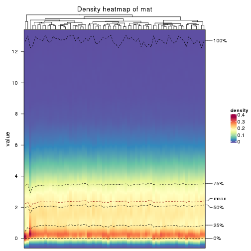
Folowing table shows the best k (number of partitions) for each combination
of top-value methods and partition methods. Clicking on the method name in
the table goes to the section for a single combination of methods.
The cola vignette explains the definition of the metrics used for determining the best number of partitions.
suggest_best_k(res_list)
| The best k | 1-PAC | Mean silhouette | Concordance | ||
|---|---|---|---|---|---|
| SD:pam | 2 | 1.000 | 0.958 | 0.984 | ** |
| CV:kmeans | 2 | 1.000 | 0.950 | 0.977 | ** |
| CV:pam | 2 | 1.000 | 0.978 | 0.991 | ** |
| CV:NMF | 2 | 1.000 | 0.981 | 0.992 | ** |
| MAD:pam | 2 | 1.000 | 0.967 | 0.987 | ** |
| ATC:kmeans | 2 | 1.000 | 1.000 | 1.000 | ** |
| ATC:pam | 2 | 1.000 | 0.992 | 0.996 | ** |
| CV:skmeans | 2 | 0.971 | 0.951 | 0.979 | ** |
| ATC:NMF | 2 | 0.942 | 0.964 | 0.984 | * |
| ATC:skmeans | 2 | 0.913 | 0.911 | 0.966 | * |
| SD:NMF | 2 | 0.894 | 0.942 | 0.973 | |
| ATC:hclust | 2 | 0.752 | 0.892 | 0.950 | |
| ATC:mclust | 3 | 0.625 | 0.791 | 0.859 | |
| CV:mclust | 3 | 0.623 | 0.825 | 0.894 | |
| MAD:NMF | 2 | 0.534 | 0.840 | 0.910 | |
| SD:kmeans | 2 | 0.507 | 0.896 | 0.909 | |
| SD:mclust | 2 | 0.505 | 0.886 | 0.831 | |
| MAD:mclust | 2 | 0.483 | 0.890 | 0.833 | |
| MAD:kmeans | 2 | 0.428 | 0.763 | 0.844 | |
| MAD:skmeans | 2 | 0.427 | 0.770 | 0.869 | |
| SD:skmeans | 2 | 0.423 | 0.792 | 0.869 | |
| CV:hclust | 3 | 0.365 | 0.674 | 0.840 | |
| MAD:hclust | 3 | 0.364 | 0.722 | 0.850 | |
| SD:hclust | 3 | 0.245 | 0.765 | 0.867 |
**: 1-PAC > 0.95, *: 1-PAC > 0.9
Cumulative distribution function curves of consensus matrix for all methods.
collect_plots(res_list, fun = plot_ecdf)
Consensus heatmaps for all methods. (What is a consensus heatmap?)
collect_plots(res_list, k = 2, fun = consensus_heatmap, mc.cores = 4)
collect_plots(res_list, k = 3, fun = consensus_heatmap, mc.cores = 4)
collect_plots(res_list, k = 4, fun = consensus_heatmap, mc.cores = 4)
collect_plots(res_list, k = 5, fun = consensus_heatmap, mc.cores = 4)
collect_plots(res_list, k = 6, fun = consensus_heatmap, mc.cores = 4)
Membership heatmaps for all methods. (What is a membership heatmap?)
collect_plots(res_list, k = 2, fun = membership_heatmap, mc.cores = 4)
collect_plots(res_list, k = 3, fun = membership_heatmap, mc.cores = 4)
collect_plots(res_list, k = 4, fun = membership_heatmap, mc.cores = 4)
collect_plots(res_list, k = 5, fun = membership_heatmap, mc.cores = 4)
collect_plots(res_list, k = 6, fun = membership_heatmap, mc.cores = 4)
Signature heatmaps for all methods. (What is a signature heatmap?)
Note in following heatmaps, rows are scaled.
collect_plots(res_list, k = 2, fun = get_signatures, mc.cores = 4)
collect_plots(res_list, k = 3, fun = get_signatures, mc.cores = 4)
collect_plots(res_list, k = 4, fun = get_signatures, mc.cores = 4)
collect_plots(res_list, k = 5, fun = get_signatures, mc.cores = 4)
collect_plots(res_list, k = 6, fun = get_signatures, mc.cores = 4)
The statistics used for measuring the stability of consensus partitioning. (How are they defined?)
get_stats(res_list, k = 2)
#> k 1-PAC mean_silhouette concordance area_increased Rand Jaccard
#> SD:NMF 2 0.894 0.942 0.973 0.479 0.525 0.525
#> CV:NMF 2 1.000 0.981 0.993 0.479 0.525 0.525
#> MAD:NMF 2 0.534 0.840 0.910 0.483 0.525 0.525
#> ATC:NMF 2 0.942 0.964 0.984 0.448 0.559 0.559
#> SD:skmeans 2 0.423 0.792 0.869 0.495 0.507 0.507
#> CV:skmeans 2 0.971 0.951 0.979 0.494 0.503 0.503
#> MAD:skmeans 2 0.427 0.770 0.869 0.498 0.503 0.503
#> ATC:skmeans 2 0.913 0.911 0.966 0.501 0.499 0.499
#> SD:mclust 2 0.505 0.886 0.831 0.343 0.549 0.549
#> CV:mclust 2 0.519 0.942 0.914 0.386 0.559 0.559
#> MAD:mclust 2 0.483 0.890 0.833 0.356 0.549 0.549
#> ATC:mclust 2 0.448 0.905 0.822 0.390 0.559 0.559
#> SD:kmeans 2 0.507 0.896 0.909 0.450 0.540 0.540
#> CV:kmeans 2 1.000 0.950 0.977 0.462 0.525 0.525
#> MAD:kmeans 2 0.428 0.763 0.844 0.462 0.549 0.549
#> ATC:kmeans 2 1.000 1.000 1.000 0.460 0.540 0.540
#> SD:pam 2 1.000 0.958 0.984 0.434 0.570 0.570
#> CV:pam 2 1.000 0.978 0.991 0.421 0.581 0.581
#> MAD:pam 2 1.000 0.967 0.987 0.438 0.570 0.570
#> ATC:pam 2 1.000 0.992 0.996 0.453 0.549 0.549
#> SD:hclust 2 0.464 0.432 0.823 0.254 0.778 0.778
#> CV:hclust 2 0.303 0.541 0.823 0.261 0.894 0.894
#> MAD:hclust 2 0.472 0.441 0.829 0.251 0.800 0.800
#> ATC:hclust 2 0.752 0.892 0.950 0.432 0.570 0.570
get_stats(res_list, k = 3)
#> k 1-PAC mean_silhouette concordance area_increased Rand Jaccard
#> SD:NMF 3 0.525 0.590 0.785 0.3673 0.772 0.582
#> CV:NMF 3 0.769 0.833 0.913 0.2391 0.896 0.802
#> MAD:NMF 3 0.462 0.669 0.791 0.3615 0.734 0.524
#> ATC:NMF 3 0.463 0.667 0.818 0.4474 0.734 0.540
#> SD:skmeans 3 0.486 0.632 0.813 0.3469 0.752 0.545
#> CV:skmeans 3 0.731 0.761 0.893 0.3521 0.744 0.527
#> MAD:skmeans 3 0.485 0.726 0.834 0.3446 0.709 0.480
#> ATC:skmeans 3 0.714 0.846 0.879 0.3029 0.754 0.542
#> SD:mclust 3 0.327 0.758 0.803 0.5170 1.000 1.000
#> CV:mclust 3 0.623 0.825 0.894 0.4435 0.903 0.830
#> MAD:mclust 3 0.260 0.693 0.754 0.4940 1.000 1.000
#> ATC:mclust 3 0.625 0.791 0.859 0.5265 0.789 0.631
#> SD:kmeans 3 0.481 0.650 0.787 0.3932 0.799 0.640
#> CV:kmeans 3 0.586 0.608 0.767 0.3195 0.860 0.736
#> MAD:kmeans 3 0.450 0.657 0.774 0.3714 0.795 0.633
#> ATC:kmeans 3 0.540 0.802 0.860 0.3978 0.728 0.526
#> SD:pam 3 0.719 0.886 0.911 0.4665 0.759 0.583
#> CV:pam 3 0.979 0.920 0.966 0.0758 0.980 0.966
#> MAD:pam 3 0.898 0.898 0.946 0.5016 0.754 0.574
#> ATC:pam 3 0.700 0.845 0.918 0.4473 0.789 0.615
#> SD:hclust 3 0.245 0.765 0.867 0.8171 0.682 0.612
#> CV:hclust 3 0.365 0.674 0.840 0.7870 0.593 0.556
#> MAD:hclust 3 0.364 0.722 0.850 0.6676 0.685 0.624
#> ATC:hclust 3 0.745 0.836 0.914 0.1220 0.957 0.926
get_stats(res_list, k = 4)
#> k 1-PAC mean_silhouette concordance area_increased Rand Jaccard
#> SD:NMF 4 0.524 0.601 0.787 0.1187 0.796 0.497
#> CV:NMF 4 0.639 0.655 0.805 0.1252 0.959 0.902
#> MAD:NMF 4 0.504 0.552 0.747 0.1259 0.738 0.375
#> ATC:NMF 4 0.500 0.474 0.681 0.1308 0.800 0.506
#> SD:skmeans 4 0.570 0.567 0.773 0.1184 0.831 0.555
#> CV:skmeans 4 0.607 0.631 0.795 0.1025 0.871 0.647
#> MAD:skmeans 4 0.554 0.573 0.777 0.1149 0.813 0.510
#> ATC:skmeans 4 0.743 0.775 0.876 0.1212 0.900 0.711
#> SD:mclust 4 0.506 0.665 0.759 0.3079 0.748 0.544
#> CV:mclust 4 0.601 0.662 0.818 0.2118 0.842 0.672
#> MAD:mclust 4 0.427 0.619 0.742 0.2808 0.778 0.596
#> ATC:mclust 4 0.676 0.748 0.848 0.2018 0.831 0.575
#> SD:kmeans 4 0.467 0.493 0.706 0.1382 0.924 0.809
#> CV:kmeans 4 0.522 0.535 0.730 0.1267 0.808 0.583
#> MAD:kmeans 4 0.477 0.598 0.708 0.1332 0.894 0.716
#> ATC:kmeans 4 0.568 0.555 0.721 0.1414 0.836 0.561
#> SD:pam 4 0.590 0.715 0.846 0.0823 0.988 0.965
#> CV:pam 4 0.770 0.868 0.936 0.0802 1.000 1.000
#> MAD:pam 4 0.771 0.831 0.869 0.1107 0.918 0.757
#> ATC:pam 4 0.847 0.835 0.930 0.1539 0.813 0.512
#> SD:hclust 4 0.216 0.717 0.834 0.0942 1.000 0.999
#> CV:hclust 4 0.316 0.632 0.805 0.1142 0.973 0.950
#> MAD:hclust 4 0.281 0.609 0.794 0.2494 0.981 0.966
#> ATC:hclust 4 0.605 0.753 0.864 0.1060 1.000 0.999
get_stats(res_list, k = 5)
#> k 1-PAC mean_silhouette concordance area_increased Rand Jaccard
#> SD:NMF 5 0.514 0.469 0.702 0.0639 0.936 0.783
#> CV:NMF 5 0.531 0.529 0.742 0.1089 0.821 0.567
#> MAD:NMF 5 0.493 0.359 0.625 0.0589 0.890 0.617
#> ATC:NMF 5 0.593 0.532 0.741 0.0677 0.800 0.432
#> SD:skmeans 5 0.574 0.486 0.723 0.0637 0.929 0.731
#> CV:skmeans 5 0.555 0.483 0.681 0.0621 0.896 0.659
#> MAD:skmeans 5 0.579 0.500 0.731 0.0634 0.910 0.665
#> ATC:skmeans 5 0.781 0.757 0.858 0.0586 0.914 0.697
#> SD:mclust 5 0.424 0.363 0.623 0.0835 0.837 0.518
#> CV:mclust 5 0.533 0.562 0.745 0.0992 0.861 0.606
#> MAD:mclust 5 0.473 0.315 0.619 0.0855 0.812 0.512
#> ATC:mclust 5 0.546 0.664 0.738 0.0464 1.000 1.000
#> SD:kmeans 5 0.494 0.497 0.705 0.0710 0.853 0.599
#> CV:kmeans 5 0.525 0.527 0.704 0.0832 0.931 0.796
#> MAD:kmeans 5 0.530 0.517 0.719 0.0709 0.895 0.666
#> ATC:kmeans 5 0.593 0.485 0.704 0.0675 0.926 0.724
#> SD:pam 5 0.588 0.589 0.817 0.0437 0.966 0.896
#> CV:pam 5 0.765 0.773 0.918 0.0451 0.981 0.966
#> MAD:pam 5 0.705 0.749 0.852 0.0297 0.993 0.971
#> ATC:pam 5 0.773 0.663 0.844 0.0594 0.887 0.592
#> SD:hclust 5 0.317 0.545 0.764 0.2088 0.806 0.648
#> CV:hclust 5 0.289 0.513 0.751 0.1209 0.925 0.856
#> MAD:hclust 5 0.339 0.526 0.732 0.1448 0.836 0.698
#> ATC:hclust 5 0.471 0.640 0.805 0.1752 0.848 0.721
get_stats(res_list, k = 6)
#> k 1-PAC mean_silhouette concordance area_increased Rand Jaccard
#> SD:NMF 6 0.555 0.369 0.664 0.0450 0.888 0.597
#> CV:NMF 6 0.541 0.398 0.692 0.0626 0.936 0.768
#> MAD:NMF 6 0.566 0.413 0.684 0.0409 0.871 0.508
#> ATC:NMF 6 0.634 0.557 0.732 0.0274 0.939 0.749
#> SD:skmeans 6 0.583 0.418 0.670 0.0398 0.913 0.636
#> CV:skmeans 6 0.586 0.417 0.632 0.0421 0.898 0.617
#> MAD:skmeans 6 0.608 0.445 0.683 0.0397 0.915 0.633
#> ATC:skmeans 6 0.755 0.679 0.820 0.0334 0.973 0.877
#> SD:mclust 6 0.592 0.537 0.676 0.0930 0.875 0.494
#> CV:mclust 6 0.595 0.478 0.746 0.0476 0.838 0.486
#> MAD:mclust 6 0.571 0.525 0.678 0.0862 0.869 0.533
#> ATC:mclust 6 0.608 0.565 0.755 0.0560 0.880 0.572
#> SD:kmeans 6 0.553 0.481 0.656 0.0493 0.914 0.671
#> CV:kmeans 6 0.551 0.530 0.676 0.0534 0.911 0.690
#> MAD:kmeans 6 0.590 0.478 0.653 0.0496 0.949 0.795
#> ATC:kmeans 6 0.633 0.337 0.605 0.0384 0.893 0.581
#> SD:pam 6 0.699 0.648 0.843 0.0511 0.941 0.804
#> CV:pam 6 0.763 0.771 0.907 0.0331 0.963 0.932
#> MAD:pam 6 0.698 0.710 0.831 0.0239 0.992 0.969
#> ATC:pam 6 0.754 0.643 0.835 0.0195 0.991 0.952
#> SD:hclust 6 0.363 0.485 0.720 0.1430 0.880 0.700
#> CV:hclust 6 0.369 0.442 0.742 0.0582 0.917 0.830
#> MAD:hclust 6 0.411 0.543 0.725 0.1769 0.836 0.609
#> ATC:hclust 6 0.533 0.548 0.769 0.1099 0.897 0.747
Following heatmap plots the partition for each combination of methods and the lightness correspond to the silhouette scores for samples in each method. On top the consensus subgroup is inferred from all methods by taking the mean silhouette scores as weight.
collect_stats(res_list, k = 2)
collect_stats(res_list, k = 3)
collect_stats(res_list, k = 4)
collect_stats(res_list, k = 5)
collect_stats(res_list, k = 6)
Collect partitions from all methods:
collect_classes(res_list, k = 2)
collect_classes(res_list, k = 3)
collect_classes(res_list, k = 4)
collect_classes(res_list, k = 5)
collect_classes(res_list, k = 6)
Overlap of top rows from different top-row methods:
top_rows_overlap(res_list, top_n = 1000, method = "euler")
top_rows_overlap(res_list, top_n = 2000, method = "euler")
top_rows_overlap(res_list, top_n = 3000, method = "euler")
top_rows_overlap(res_list, top_n = 4000, method = "euler")
top_rows_overlap(res_list, top_n = 5000, method = "euler")
Also visualize the correspondance of rankings between different top-row methods:
top_rows_overlap(res_list, top_n = 1000, method = "correspondance")

top_rows_overlap(res_list, top_n = 2000, method = "correspondance")
top_rows_overlap(res_list, top_n = 3000, method = "correspondance")
top_rows_overlap(res_list, top_n = 4000, method = "correspondance")
top_rows_overlap(res_list, top_n = 5000, method = "correspondance")
Heatmaps of the top rows:
top_rows_heatmap(res_list, top_n = 1000)
top_rows_heatmap(res_list, top_n = 2000)
top_rows_heatmap(res_list, top_n = 3000)
top_rows_heatmap(res_list, top_n = 4000)

top_rows_heatmap(res_list, top_n = 5000)
The object with results only for a single top-value method and a single partition method can be extracted as:
res = res_list["SD", "hclust"]
# you can also extract it by
# res = res_list["SD:hclust"]
A summary of res and all the functions that can be applied to it:
res
#> A 'ConsensusPartition' object with k = 2, 3, 4, 5, 6.
#> On a matrix with 13673 rows and 72 columns.
#> Top rows (1000, 2000, 3000, 4000, 5000) are extracted by 'SD' method.
#> Subgroups are detected by 'hclust' method.
#> Performed in total 1250 partitions by row resampling.
#> Best k for subgroups seems to be 3.
#>
#> Following methods can be applied to this 'ConsensusPartition' object:
#> [1] "cola_report" "collect_classes" "collect_plots"
#> [4] "collect_stats" "colnames" "compare_signatures"
#> [7] "consensus_heatmap" "dimension_reduction" "functional_enrichment"
#> [10] "get_anno_col" "get_anno" "get_classes"
#> [13] "get_consensus" "get_matrix" "get_membership"
#> [16] "get_param" "get_signatures" "get_stats"
#> [19] "is_best_k" "is_stable_k" "membership_heatmap"
#> [22] "ncol" "nrow" "plot_ecdf"
#> [25] "rownames" "select_partition_number" "show"
#> [28] "suggest_best_k" "test_to_known_factors"
collect_plots() function collects all the plots made from res for all k (number of partitions)
into one single page to provide an easy and fast comparison between different k.
collect_plots(res)
The plots are:
k and the heatmap of
predicted classes for each k.k.k.k.All the plots in panels can be made by individual functions and they are plotted later in this section.
select_partition_number() produces several plots showing different
statistics for choosing “optimized” k. There are following statistics:
k;k, the area increased is defined as \(A_k - A_{k-1}\).The detailed explanations of these statistics can be found in the cola vignette.
Generally speaking, lower PAC score, higher mean silhouette score or higher
concordance corresponds to better partition. Rand index and Jaccard index
measure how similar the current partition is compared to partition with k-1.
If they are too similar, we won't accept k is better than k-1.
select_partition_number(res)
The numeric values for all these statistics can be obtained by get_stats().
get_stats(res)
#> k 1-PAC mean_silhouette concordance area_increased Rand Jaccard
#> 2 2 0.464 0.432 0.823 0.2542 0.778 0.778
#> 3 3 0.245 0.765 0.867 0.8171 0.682 0.612
#> 4 4 0.216 0.717 0.834 0.0942 1.000 0.999
#> 5 5 0.317 0.545 0.764 0.2088 0.806 0.648
#> 6 6 0.363 0.485 0.720 0.1430 0.880 0.700
suggest_best_k() suggests the best \(k\) based on these statistics. The rules are as follows:
NA.suggest_best_k(res)
#> [1] 3
Following shows the table of the partitions (You need to click the show/hide
code output link to see it). The membership matrix (columns with name p*)
is inferred by
clue::cl_consensus()
function with the SE method. Basically the value in the membership matrix
represents the probability to belong to a certain group. The finall class
label for an item is determined with the group with highest probability it
belongs to.
In get_classes() function, the entropy is calculated from the membership
matrix and the silhouette score is calculated from the consensus matrix.
cbind(get_classes(res, k = 2), get_membership(res, k = 2))
#> class entropy silhouette p1 p2
#> SRR1585486 2 0.3733 0.672385 0.072 0.928
#> SRR1585488 1 1.0000 0.809888 0.504 0.496
#> SRR1585487 2 0.4431 0.651368 0.092 0.908
#> SRR1585489 2 0.0376 0.735279 0.004 0.996
#> SRR1585490 1 1.0000 0.809888 0.504 0.496
#> SRR1585491 1 1.0000 0.809888 0.504 0.496
#> SRR1585492 2 0.2423 0.712167 0.040 0.960
#> SRR1585493 2 0.0376 0.735226 0.004 0.996
#> SRR1585494 2 0.0672 0.734267 0.008 0.992
#> SRR1585496 2 0.1184 0.726544 0.016 0.984
#> SRR1585495 2 0.3879 0.687834 0.076 0.924
#> SRR1585498 2 0.0376 0.735226 0.004 0.996
#> SRR1585497 2 0.0672 0.734267 0.008 0.992
#> SRR1585499 2 0.9988 -0.767916 0.480 0.520
#> SRR1585500 1 0.9988 -0.102983 0.520 0.480
#> SRR1585501 2 0.0000 0.735467 0.000 1.000
#> SRR1585502 2 0.5737 0.573541 0.136 0.864
#> SRR1585503 2 0.5842 0.560075 0.140 0.860
#> SRR1585504 2 0.1184 0.726544 0.016 0.984
#> SRR1585505 2 0.1184 0.730823 0.016 0.984
#> SRR1585506 2 0.1184 0.726544 0.016 0.984
#> SRR1585508 2 0.0000 0.735467 0.000 1.000
#> SRR1585507 2 0.1184 0.730823 0.016 0.984
#> SRR1585509 2 0.9988 -0.767916 0.480 0.520
#> SRR1585510 2 0.0000 0.735467 0.000 1.000
#> SRR1585511 2 0.1184 0.726544 0.016 0.984
#> SRR1585512 2 0.0000 0.735467 0.000 1.000
#> SRR1585513 1 1.0000 0.809888 0.504 0.496
#> SRR1585516 2 0.3274 0.694838 0.060 0.940
#> SRR1585515 2 0.7815 0.284471 0.232 0.768
#> SRR1585514 2 0.3879 0.674005 0.076 0.924
#> SRR1585518 2 0.0000 0.735467 0.000 1.000
#> SRR1585517 2 0.3114 0.696767 0.056 0.944
#> SRR1585519 2 0.0376 0.735279 0.004 0.996
#> SRR1585520 2 0.0376 0.735279 0.004 0.996
#> SRR1585522 2 0.0000 0.735467 0.000 1.000
#> SRR1585521 2 0.9988 -0.767916 0.480 0.520
#> SRR1585524 2 0.6343 0.512946 0.160 0.840
#> SRR1585523 2 0.9944 -0.715602 0.456 0.544
#> SRR1585525 2 0.9933 -0.683061 0.452 0.548
#> SRR1585526 2 0.1184 0.726544 0.016 0.984
#> SRR1585527 2 0.9988 -0.767916 0.480 0.520
#> SRR1585528 2 0.0000 0.735467 0.000 1.000
#> SRR1585529 2 0.0000 0.735467 0.000 1.000
#> SRR1585530 2 0.1184 0.726544 0.016 0.984
#> SRR1585531 1 1.0000 0.809888 0.504 0.496
#> SRR1585532 2 0.3114 0.696767 0.056 0.944
#> SRR1585533 2 0.9988 -0.767916 0.480 0.520
#> SRR1585534 2 0.9866 -0.623364 0.432 0.568
#> SRR1585535 2 0.0000 0.735467 0.000 1.000
#> SRR1585536 2 0.1184 0.726544 0.016 0.984
#> SRR1585537 2 1.0000 -0.000516 0.496 0.504
#> SRR1585538 2 0.9983 -0.757088 0.476 0.524
#> SRR1585539 1 1.0000 0.809888 0.504 0.496
#> SRR1585541 2 0.3733 0.672385 0.072 0.928
#> SRR1585540 2 0.0000 0.735467 0.000 1.000
#> SRR1585542 1 1.0000 0.809888 0.504 0.496
#> SRR1585543 2 0.9954 -0.706219 0.460 0.540
#> SRR1585544 2 0.1414 0.728969 0.020 0.980
#> SRR1585546 1 1.0000 0.809888 0.504 0.496
#> SRR1585545 2 0.1414 0.728455 0.020 0.980
#> SRR1585547 2 0.9988 -0.767916 0.480 0.520
#> SRR1585548 2 0.9983 -0.757088 0.476 0.524
#> SRR1585549 2 0.1184 0.726544 0.016 0.984
#> SRR1585550 2 0.9954 -0.706219 0.460 0.540
#> SRR1585551 2 0.1184 0.726544 0.016 0.984
#> SRR1585552 2 0.0000 0.735467 0.000 1.000
#> SRR1585553 2 0.1843 0.722623 0.028 0.972
#> SRR1585554 2 0.0672 0.734267 0.008 0.992
#> SRR1585555 2 0.0000 0.735467 0.000 1.000
#> SRR1585557 2 0.5737 0.573541 0.136 0.864
#> SRR1585556 2 0.0376 0.735279 0.004 0.996
cbind(get_classes(res, k = 3), get_membership(res, k = 3))
#> class entropy silhouette p1 p2 p3
#> SRR1585486 2 0.3295 0.810 0.096 0.896 0.008
#> SRR1585488 1 0.5016 0.777 0.760 0.240 0.000
#> SRR1585487 2 0.5450 0.682 0.228 0.760 0.012
#> SRR1585489 2 0.1289 0.853 0.032 0.968 0.000
#> SRR1585490 1 0.5016 0.777 0.760 0.240 0.000
#> SRR1585491 1 0.4291 0.834 0.820 0.180 0.000
#> SRR1585492 2 0.2496 0.839 0.068 0.928 0.004
#> SRR1585493 2 0.0829 0.850 0.012 0.984 0.004
#> SRR1585494 2 0.0747 0.851 0.016 0.984 0.000
#> SRR1585496 2 0.5244 0.651 0.240 0.756 0.004
#> SRR1585495 2 0.5988 0.584 0.304 0.688 0.008
#> SRR1585498 2 0.0983 0.852 0.016 0.980 0.004
#> SRR1585497 2 0.1753 0.847 0.048 0.952 0.000
#> SRR1585499 1 0.2356 0.783 0.928 0.072 0.000
#> SRR1585500 3 0.7050 0.287 0.028 0.372 0.600
#> SRR1585501 2 0.1878 0.848 0.044 0.952 0.004
#> SRR1585502 2 0.4818 0.747 0.048 0.844 0.108
#> SRR1585503 2 0.6019 0.566 0.288 0.700 0.012
#> SRR1585504 2 0.5244 0.651 0.240 0.756 0.004
#> SRR1585505 2 0.1529 0.851 0.040 0.960 0.000
#> SRR1585506 2 0.5244 0.651 0.240 0.756 0.004
#> SRR1585508 2 0.1129 0.852 0.020 0.976 0.004
#> SRR1585507 2 0.1529 0.851 0.040 0.960 0.000
#> SRR1585509 1 0.4399 0.831 0.812 0.188 0.000
#> SRR1585510 2 0.0424 0.850 0.008 0.992 0.000
#> SRR1585511 2 0.5244 0.651 0.240 0.756 0.004
#> SRR1585512 2 0.1267 0.852 0.024 0.972 0.004
#> SRR1585513 1 0.4399 0.830 0.812 0.188 0.000
#> SRR1585516 2 0.4912 0.728 0.196 0.796 0.008
#> SRR1585515 2 0.6451 0.286 0.384 0.608 0.008
#> SRR1585514 2 0.4353 0.759 0.156 0.836 0.008
#> SRR1585518 2 0.1129 0.852 0.020 0.976 0.004
#> SRR1585517 2 0.5008 0.734 0.180 0.804 0.016
#> SRR1585519 2 0.1031 0.852 0.024 0.976 0.000
#> SRR1585520 2 0.0829 0.851 0.012 0.984 0.004
#> SRR1585522 2 0.0661 0.849 0.008 0.988 0.004
#> SRR1585521 1 0.3038 0.815 0.896 0.104 0.000
#> SRR1585524 2 0.6548 0.360 0.372 0.616 0.012
#> SRR1585523 1 0.4555 0.825 0.800 0.200 0.000
#> SRR1585525 1 0.3918 0.760 0.856 0.140 0.004
#> SRR1585526 2 0.5244 0.651 0.240 0.756 0.004
#> SRR1585527 1 0.2066 0.770 0.940 0.060 0.000
#> SRR1585528 2 0.1129 0.852 0.020 0.976 0.004
#> SRR1585529 2 0.0892 0.852 0.020 0.980 0.000
#> SRR1585530 2 0.3715 0.775 0.128 0.868 0.004
#> SRR1585531 1 0.2796 0.785 0.908 0.092 0.000
#> SRR1585532 2 0.5008 0.734 0.180 0.804 0.016
#> SRR1585533 1 0.2066 0.770 0.940 0.060 0.000
#> SRR1585534 1 0.5480 0.762 0.732 0.264 0.004
#> SRR1585535 2 0.1411 0.853 0.036 0.964 0.000
#> SRR1585536 2 0.3715 0.775 0.128 0.868 0.004
#> SRR1585537 3 0.0829 0.410 0.012 0.004 0.984
#> SRR1585538 1 0.4842 0.811 0.776 0.224 0.000
#> SRR1585539 1 0.4452 0.831 0.808 0.192 0.000
#> SRR1585541 2 0.3295 0.810 0.096 0.896 0.008
#> SRR1585540 2 0.0829 0.851 0.012 0.984 0.004
#> SRR1585542 1 0.3752 0.822 0.856 0.144 0.000
#> SRR1585543 1 0.3784 0.768 0.864 0.132 0.004
#> SRR1585544 2 0.1163 0.852 0.028 0.972 0.000
#> SRR1585546 1 0.3192 0.828 0.888 0.112 0.000
#> SRR1585545 2 0.1989 0.848 0.048 0.948 0.004
#> SRR1585547 1 0.4235 0.832 0.824 0.176 0.000
#> SRR1585548 1 0.4702 0.821 0.788 0.212 0.000
#> SRR1585549 2 0.5244 0.651 0.240 0.756 0.004
#> SRR1585550 1 0.3784 0.768 0.864 0.132 0.004
#> SRR1585551 2 0.5244 0.651 0.240 0.756 0.004
#> SRR1585552 2 0.0424 0.850 0.008 0.992 0.000
#> SRR1585553 2 0.1411 0.850 0.036 0.964 0.000
#> SRR1585554 2 0.1289 0.853 0.032 0.968 0.000
#> SRR1585555 2 0.0424 0.850 0.008 0.992 0.000
#> SRR1585557 2 0.4818 0.747 0.048 0.844 0.108
#> SRR1585556 2 0.0592 0.851 0.012 0.988 0.000
cbind(get_classes(res, k = 4), get_membership(res, k = 4))
#> class entropy silhouette p1 p2 p3 p4
#> SRR1585486 2 0.3292 0.792 0.080 0.880 0.036 0.004
#> SRR1585488 1 0.4155 0.760 0.756 0.240 0.004 0.000
#> SRR1585487 2 0.6311 0.598 0.212 0.672 0.108 0.008
#> SRR1585489 2 0.1388 0.831 0.028 0.960 0.012 0.000
#> SRR1585490 1 0.4155 0.760 0.756 0.240 0.004 0.000
#> SRR1585491 1 0.3400 0.816 0.820 0.180 0.000 0.000
#> SRR1585492 2 0.3542 0.806 0.060 0.864 0.076 0.000
#> SRR1585493 2 0.2179 0.821 0.012 0.924 0.064 0.000
#> SRR1585494 2 0.1388 0.828 0.012 0.960 0.028 0.000
#> SRR1585496 2 0.5693 0.639 0.240 0.688 0.072 0.000
#> SRR1585495 2 0.5359 0.619 0.288 0.680 0.028 0.004
#> SRR1585498 2 0.2300 0.822 0.016 0.920 0.064 0.000
#> SRR1585497 2 0.2313 0.828 0.044 0.924 0.032 0.000
#> SRR1585499 1 0.3250 0.741 0.892 0.052 0.040 0.016
#> SRR1585500 3 0.2246 0.000 0.016 0.052 0.928 0.004
#> SRR1585501 2 0.2111 0.829 0.044 0.932 0.024 0.000
#> SRR1585502 2 0.5982 0.200 0.040 0.524 0.436 0.000
#> SRR1585503 2 0.6468 0.496 0.272 0.632 0.088 0.008
#> SRR1585504 2 0.5417 0.649 0.240 0.704 0.056 0.000
#> SRR1585505 2 0.1833 0.829 0.032 0.944 0.024 0.000
#> SRR1585506 2 0.5417 0.649 0.240 0.704 0.056 0.000
#> SRR1585508 2 0.1297 0.831 0.020 0.964 0.016 0.000
#> SRR1585507 2 0.1833 0.829 0.032 0.944 0.024 0.000
#> SRR1585509 1 0.4900 0.805 0.780 0.168 0.036 0.016
#> SRR1585510 2 0.0804 0.829 0.008 0.980 0.012 0.000
#> SRR1585511 2 0.5417 0.649 0.240 0.704 0.056 0.000
#> SRR1585512 2 0.1629 0.831 0.024 0.952 0.024 0.000
#> SRR1585513 1 0.3486 0.812 0.812 0.188 0.000 0.000
#> SRR1585516 2 0.5791 0.651 0.192 0.716 0.084 0.008
#> SRR1585515 2 0.6295 0.259 0.372 0.568 0.056 0.004
#> SRR1585514 2 0.4746 0.726 0.140 0.792 0.064 0.004
#> SRR1585518 2 0.1411 0.831 0.020 0.960 0.020 0.000
#> SRR1585517 2 0.6294 0.639 0.172 0.684 0.136 0.008
#> SRR1585519 2 0.1297 0.830 0.020 0.964 0.016 0.000
#> SRR1585520 2 0.1256 0.830 0.008 0.964 0.028 0.000
#> SRR1585522 2 0.0927 0.829 0.008 0.976 0.016 0.000
#> SRR1585521 1 0.3562 0.783 0.872 0.084 0.028 0.016
#> SRR1585524 2 0.6653 0.282 0.364 0.556 0.072 0.008
#> SRR1585523 1 0.4939 0.802 0.772 0.180 0.032 0.016
#> SRR1585525 1 0.3606 0.739 0.840 0.140 0.020 0.000
#> SRR1585526 2 0.5693 0.639 0.240 0.688 0.072 0.000
#> SRR1585527 1 0.2993 0.726 0.904 0.040 0.040 0.016
#> SRR1585528 2 0.1411 0.831 0.020 0.960 0.020 0.000
#> SRR1585529 2 0.0895 0.829 0.020 0.976 0.004 0.000
#> SRR1585530 2 0.3653 0.768 0.128 0.844 0.028 0.000
#> SRR1585531 1 0.2546 0.765 0.900 0.092 0.008 0.000
#> SRR1585532 2 0.6294 0.639 0.172 0.684 0.136 0.008
#> SRR1585533 1 0.2993 0.726 0.904 0.040 0.040 0.016
#> SRR1585534 1 0.5123 0.760 0.724 0.232 0.044 0.000
#> SRR1585535 2 0.1452 0.832 0.036 0.956 0.008 0.000
#> SRR1585536 2 0.3653 0.768 0.128 0.844 0.028 0.000
#> SRR1585537 4 0.0592 0.000 0.000 0.000 0.016 0.984
#> SRR1585538 1 0.4158 0.792 0.768 0.224 0.008 0.000
#> SRR1585539 1 0.3528 0.813 0.808 0.192 0.000 0.000
#> SRR1585541 2 0.3292 0.792 0.080 0.880 0.036 0.004
#> SRR1585540 2 0.1284 0.830 0.012 0.964 0.024 0.000
#> SRR1585542 1 0.2973 0.803 0.856 0.144 0.000 0.000
#> SRR1585543 1 0.3606 0.744 0.844 0.132 0.024 0.000
#> SRR1585544 2 0.1297 0.829 0.020 0.964 0.016 0.000
#> SRR1585546 1 0.2859 0.811 0.880 0.112 0.008 0.000
#> SRR1585545 2 0.3354 0.809 0.044 0.872 0.084 0.000
#> SRR1585547 1 0.4578 0.808 0.800 0.156 0.028 0.016
#> SRR1585548 1 0.4049 0.801 0.780 0.212 0.008 0.000
#> SRR1585549 2 0.5417 0.649 0.240 0.704 0.056 0.000
#> SRR1585550 1 0.3501 0.745 0.848 0.132 0.020 0.000
#> SRR1585551 2 0.5559 0.644 0.240 0.696 0.064 0.000
#> SRR1585552 2 0.0804 0.829 0.008 0.980 0.012 0.000
#> SRR1585553 2 0.1520 0.827 0.020 0.956 0.024 0.000
#> SRR1585554 2 0.1510 0.830 0.028 0.956 0.016 0.000
#> SRR1585555 2 0.0804 0.829 0.008 0.980 0.012 0.000
#> SRR1585557 2 0.5982 0.200 0.040 0.524 0.436 0.000
#> SRR1585556 2 0.1042 0.827 0.008 0.972 0.020 0.000
cbind(get_classes(res, k = 5), get_membership(res, k = 5))
#> class entropy silhouette p1 p2 p3 p4 p5
#> SRR1585486 2 0.3226 0.6269 0.060 0.852 0.088 0.000 0
#> SRR1585488 1 0.4141 0.6733 0.736 0.236 0.028 0.000 0
#> SRR1585487 2 0.6603 -0.0130 0.184 0.440 0.372 0.004 0
#> SRR1585489 2 0.1357 0.7176 0.004 0.948 0.048 0.000 0
#> SRR1585490 1 0.4141 0.6733 0.736 0.236 0.028 0.000 0
#> SRR1585491 1 0.3123 0.7414 0.828 0.160 0.012 0.000 0
#> SRR1585492 2 0.4905 0.4204 0.036 0.692 0.256 0.016 0
#> SRR1585493 2 0.3344 0.6157 0.012 0.832 0.144 0.012 0
#> SRR1585494 2 0.2701 0.6712 0.012 0.884 0.092 0.012 0
#> SRR1585496 3 0.4735 0.6999 0.008 0.412 0.572 0.008 0
#> SRR1585495 2 0.5296 -0.5294 0.048 0.480 0.472 0.000 0
#> SRR1585498 2 0.2976 0.6509 0.012 0.852 0.132 0.004 0
#> SRR1585497 2 0.3592 0.5251 0.012 0.808 0.168 0.012 0
#> SRR1585499 1 0.2605 0.5925 0.852 0.000 0.148 0.000 0
#> SRR1585500 4 0.0162 -0.4036 0.000 0.004 0.000 0.996 0
#> SRR1585501 2 0.3662 0.3857 0.000 0.744 0.252 0.004 0
#> SRR1585502 4 0.5877 0.5035 0.008 0.416 0.076 0.500 0
#> SRR1585503 2 0.6667 -0.0411 0.244 0.428 0.328 0.000 0
#> SRR1585504 3 0.4549 0.7042 0.008 0.464 0.528 0.000 0
#> SRR1585505 2 0.1865 0.7079 0.024 0.936 0.032 0.008 0
#> SRR1585506 3 0.4546 0.7081 0.008 0.460 0.532 0.000 0
#> SRR1585508 2 0.1704 0.7065 0.000 0.928 0.068 0.004 0
#> SRR1585507 2 0.1865 0.7079 0.024 0.936 0.032 0.008 0
#> SRR1585509 1 0.4528 0.7111 0.752 0.144 0.104 0.000 0
#> SRR1585510 2 0.0609 0.7125 0.000 0.980 0.020 0.000 0
#> SRR1585511 3 0.4546 0.7081 0.008 0.460 0.532 0.000 0
#> SRR1585512 2 0.1731 0.7092 0.004 0.932 0.060 0.004 0
#> SRR1585513 1 0.3203 0.7376 0.820 0.168 0.012 0.000 0
#> SRR1585516 2 0.6386 0.0957 0.164 0.508 0.324 0.004 0
#> SRR1585515 2 0.6746 -0.1610 0.360 0.380 0.260 0.000 0
#> SRR1585514 2 0.5410 0.3661 0.128 0.656 0.216 0.000 0
#> SRR1585518 2 0.1768 0.7053 0.000 0.924 0.072 0.004 0
#> SRR1585517 3 0.6330 -0.0571 0.148 0.348 0.500 0.004 0
#> SRR1585519 2 0.1408 0.7163 0.000 0.948 0.044 0.008 0
#> SRR1585520 2 0.1282 0.7097 0.000 0.952 0.044 0.004 0
#> SRR1585522 2 0.0880 0.7076 0.000 0.968 0.032 0.000 0
#> SRR1585521 1 0.2871 0.6774 0.872 0.040 0.088 0.000 0
#> SRR1585524 1 0.6801 0.0016 0.360 0.348 0.292 0.000 0
#> SRR1585523 1 0.4548 0.6969 0.748 0.156 0.096 0.000 0
#> SRR1585525 1 0.4268 0.6140 0.708 0.024 0.268 0.000 0
#> SRR1585526 3 0.4735 0.6999 0.008 0.412 0.572 0.008 0
#> SRR1585527 1 0.2852 0.5805 0.828 0.000 0.172 0.000 0
#> SRR1585528 2 0.1830 0.7051 0.000 0.924 0.068 0.008 0
#> SRR1585529 2 0.1043 0.7162 0.000 0.960 0.040 0.000 0
#> SRR1585530 2 0.3388 0.3890 0.008 0.792 0.200 0.000 0
#> SRR1585531 1 0.3487 0.6392 0.780 0.008 0.212 0.000 0
#> SRR1585532 3 0.6330 -0.0571 0.148 0.348 0.500 0.004 0
#> SRR1585533 1 0.2852 0.5805 0.828 0.000 0.172 0.000 0
#> SRR1585534 1 0.4698 0.6984 0.732 0.172 0.096 0.000 0
#> SRR1585535 2 0.1331 0.7144 0.008 0.952 0.040 0.000 0
#> SRR1585536 2 0.3388 0.3890 0.008 0.792 0.200 0.000 0
#> SRR1585537 5 0.0000 0.0000 0.000 0.000 0.000 0.000 1
#> SRR1585538 1 0.4059 0.7247 0.776 0.172 0.052 0.000 0
#> SRR1585539 1 0.3449 0.7409 0.812 0.164 0.024 0.000 0
#> SRR1585541 2 0.3226 0.6269 0.060 0.852 0.088 0.000 0
#> SRR1585540 2 0.1638 0.7064 0.000 0.932 0.064 0.004 0
#> SRR1585542 1 0.4589 0.6827 0.724 0.064 0.212 0.000 0
#> SRR1585543 1 0.4435 0.5828 0.648 0.016 0.336 0.000 0
#> SRR1585544 2 0.1195 0.7113 0.012 0.960 0.028 0.000 0
#> SRR1585546 1 0.1956 0.7369 0.916 0.076 0.008 0.000 0
#> SRR1585545 2 0.4633 0.4219 0.020 0.700 0.264 0.016 0
#> SRR1585547 1 0.4247 0.7125 0.776 0.132 0.092 0.000 0
#> SRR1585548 1 0.3944 0.7314 0.788 0.160 0.052 0.000 0
#> SRR1585549 3 0.4549 0.7042 0.008 0.464 0.528 0.000 0
#> SRR1585550 1 0.4090 0.6175 0.716 0.016 0.268 0.000 0
#> SRR1585551 3 0.4680 0.7098 0.008 0.448 0.540 0.004 0
#> SRR1585552 2 0.0609 0.7125 0.000 0.980 0.020 0.000 0
#> SRR1585553 2 0.1557 0.7031 0.008 0.940 0.052 0.000 0
#> SRR1585554 2 0.1686 0.7107 0.020 0.944 0.028 0.008 0
#> SRR1585555 2 0.0609 0.7125 0.000 0.980 0.020 0.000 0
#> SRR1585557 4 0.5877 0.5035 0.008 0.416 0.076 0.500 0
#> SRR1585556 2 0.0798 0.7116 0.000 0.976 0.016 0.008 0
cbind(get_classes(res, k = 6), get_membership(res, k = 6))
#> class entropy silhouette p1 p2 p3 p4 p5 p6
#> SRR1585486 2 0.3434 0.6930 0.056 0.840 0.052 0.000 0.052 0
#> SRR1585488 1 0.4447 0.3021 0.736 0.148 0.012 0.000 0.104 0
#> SRR1585487 1 0.7701 0.0908 0.348 0.244 0.204 0.004 0.200 0
#> SRR1585489 2 0.3032 0.7189 0.096 0.852 0.040 0.000 0.012 0
#> SRR1585490 1 0.4447 0.3021 0.736 0.148 0.012 0.000 0.104 0
#> SRR1585491 1 0.0405 0.4106 0.988 0.000 0.004 0.000 0.008 0
#> SRR1585492 2 0.5347 0.4504 0.016 0.600 0.300 0.004 0.080 0
#> SRR1585493 2 0.3912 0.6622 0.000 0.732 0.224 0.000 0.044 0
#> SRR1585494 2 0.3332 0.7090 0.000 0.808 0.144 0.000 0.048 0
#> SRR1585496 3 0.3187 0.6754 0.000 0.188 0.796 0.004 0.012 0
#> SRR1585495 3 0.5309 0.3868 0.036 0.392 0.532 0.000 0.040 0
#> SRR1585498 2 0.3691 0.7072 0.000 0.768 0.192 0.004 0.036 0
#> SRR1585497 2 0.4412 0.5951 0.000 0.700 0.236 0.008 0.056 0
#> SRR1585499 5 0.3684 0.9148 0.372 0.000 0.000 0.000 0.628 0
#> SRR1585500 4 0.0146 -0.2855 0.000 0.004 0.000 0.996 0.000 0
#> SRR1585501 2 0.5196 -0.0706 0.004 0.492 0.436 0.004 0.064 0
#> SRR1585502 4 0.6113 0.5943 0.000 0.376 0.088 0.480 0.056 0
#> SRR1585503 1 0.7359 0.1763 0.404 0.244 0.152 0.000 0.200 0
#> SRR1585504 3 0.3126 0.7049 0.000 0.248 0.752 0.000 0.000 0
#> SRR1585505 2 0.1977 0.7739 0.008 0.920 0.040 0.000 0.032 0
#> SRR1585506 3 0.3101 0.7063 0.000 0.244 0.756 0.000 0.000 0
#> SRR1585508 2 0.2827 0.7660 0.004 0.868 0.080 0.004 0.044 0
#> SRR1585507 2 0.1977 0.7739 0.008 0.920 0.040 0.000 0.032 0
#> SRR1585509 1 0.5558 -0.1913 0.572 0.116 0.016 0.000 0.296 0
#> SRR1585510 2 0.0865 0.7862 0.000 0.964 0.036 0.000 0.000 0
#> SRR1585511 3 0.3101 0.7063 0.000 0.244 0.756 0.000 0.000 0
#> SRR1585512 2 0.2970 0.7576 0.060 0.860 0.072 0.004 0.004 0
#> SRR1585513 1 0.0436 0.4172 0.988 0.004 0.004 0.000 0.004 0
#> SRR1585516 1 0.7605 0.0117 0.332 0.312 0.184 0.004 0.168 0
#> SRR1585515 1 0.6738 0.3069 0.516 0.200 0.104 0.000 0.180 0
#> SRR1585514 2 0.6656 0.1183 0.236 0.520 0.108 0.000 0.136 0
#> SRR1585518 2 0.2880 0.7652 0.004 0.864 0.084 0.004 0.044 0
#> SRR1585517 3 0.7395 -0.1071 0.320 0.136 0.344 0.000 0.200 0
#> SRR1585519 2 0.1708 0.7781 0.004 0.932 0.040 0.000 0.024 0
#> SRR1585520 2 0.1493 0.7856 0.000 0.936 0.056 0.004 0.004 0
#> SRR1585522 2 0.1075 0.7838 0.000 0.952 0.048 0.000 0.000 0
#> SRR1585521 1 0.4429 -0.3351 0.600 0.012 0.016 0.000 0.372 0
#> SRR1585524 1 0.7195 0.2600 0.436 0.220 0.128 0.000 0.216 0
#> SRR1585523 1 0.5511 -0.1815 0.572 0.120 0.012 0.000 0.296 0
#> SRR1585525 1 0.5153 0.2711 0.652 0.016 0.220 0.000 0.112 0
#> SRR1585526 3 0.3277 0.6743 0.000 0.188 0.792 0.004 0.016 0
#> SRR1585527 5 0.3531 0.9552 0.328 0.000 0.000 0.000 0.672 0
#> SRR1585528 2 0.2905 0.7662 0.004 0.864 0.088 0.008 0.036 0
#> SRR1585529 2 0.1478 0.7822 0.004 0.944 0.032 0.000 0.020 0
#> SRR1585530 2 0.3330 0.4996 0.000 0.716 0.284 0.000 0.000 0
#> SRR1585531 1 0.4691 0.2228 0.680 0.000 0.196 0.000 0.124 0
#> SRR1585532 3 0.7395 -0.1071 0.320 0.136 0.344 0.000 0.200 0
#> SRR1585533 5 0.3515 0.9549 0.324 0.000 0.000 0.000 0.676 0
#> SRR1585534 1 0.2239 0.4247 0.900 0.008 0.020 0.000 0.072 0
#> SRR1585535 2 0.2881 0.7412 0.084 0.864 0.040 0.000 0.012 0
#> SRR1585536 2 0.3330 0.4996 0.000 0.716 0.284 0.000 0.000 0
#> SRR1585537 6 0.0000 0.0000 0.000 0.000 0.000 0.000 0.000 1
#> SRR1585538 1 0.1265 0.4305 0.948 0.008 0.000 0.000 0.044 0
#> SRR1585539 1 0.1262 0.4216 0.956 0.008 0.016 0.000 0.020 0
#> SRR1585541 2 0.3434 0.6930 0.056 0.840 0.052 0.000 0.052 0
#> SRR1585540 2 0.2759 0.7641 0.004 0.872 0.080 0.004 0.040 0
#> SRR1585542 1 0.3714 0.3364 0.760 0.000 0.196 0.000 0.044 0
#> SRR1585543 1 0.4874 0.2763 0.636 0.008 0.284 0.000 0.072 0
#> SRR1585544 2 0.1572 0.7733 0.000 0.936 0.036 0.000 0.028 0
#> SRR1585546 1 0.2300 0.2814 0.856 0.000 0.000 0.000 0.144 0
#> SRR1585545 2 0.5055 0.4566 0.008 0.604 0.320 0.004 0.064 0
#> SRR1585547 1 0.5383 -0.1899 0.588 0.096 0.016 0.000 0.300 0
#> SRR1585548 1 0.1075 0.4248 0.952 0.000 0.000 0.000 0.048 0
#> SRR1585549 3 0.3126 0.7049 0.000 0.248 0.752 0.000 0.000 0
#> SRR1585550 1 0.4974 0.2717 0.660 0.008 0.220 0.000 0.112 0
#> SRR1585551 3 0.3163 0.7034 0.000 0.232 0.764 0.004 0.000 0
#> SRR1585552 2 0.0865 0.7862 0.000 0.964 0.036 0.000 0.000 0
#> SRR1585553 2 0.1857 0.7678 0.004 0.924 0.028 0.000 0.044 0
#> SRR1585554 2 0.1777 0.7756 0.004 0.928 0.044 0.000 0.024 0
#> SRR1585555 2 0.0865 0.7862 0.000 0.964 0.036 0.000 0.000 0
#> SRR1585557 4 0.6113 0.5943 0.000 0.376 0.088 0.480 0.056 0
#> SRR1585556 2 0.0806 0.7814 0.000 0.972 0.020 0.000 0.008 0
Heatmaps for the consensus matrix. It visualizes the probability of two samples to be in a same group.
consensus_heatmap(res, k = 2)
consensus_heatmap(res, k = 3)
consensus_heatmap(res, k = 4)
consensus_heatmap(res, k = 5)

consensus_heatmap(res, k = 6)
Heatmaps for the membership of samples in all partitions to see how consistent they are:
membership_heatmap(res, k = 2)
membership_heatmap(res, k = 3)

membership_heatmap(res, k = 4)
membership_heatmap(res, k = 5)

membership_heatmap(res, k = 6)
As soon as we have had the classes for columns, we can look for signatures which are significantly different between classes which can be candidate marks for certain classes. Following are the heatmaps for signatures.
Signature heatmaps where rows are scaled:
get_signatures(res, k = 2)
get_signatures(res, k = 3)
get_signatures(res, k = 4)
get_signatures(res, k = 5)
get_signatures(res, k = 6)
Signature heatmaps where rows are not scaled:
get_signatures(res, k = 2, scale_rows = FALSE)
get_signatures(res, k = 3, scale_rows = FALSE)
get_signatures(res, k = 4, scale_rows = FALSE)
get_signatures(res, k = 5, scale_rows = FALSE)

get_signatures(res, k = 6, scale_rows = FALSE)
Compare the overlap of signatures from different k:
compare_signatures(res)
get_signature() returns a data frame invisibly. TO get the list of signatures, the function
call should be assigned to a variable explicitly. In following code, if plot argument is set
to FALSE, no heatmap is plotted while only the differential analysis is performed.
# code only for demonstration
tb = get_signature(res, k = ..., plot = FALSE)
An example of the output of tb is:
#> which_row fdr mean_1 mean_2 scaled_mean_1 scaled_mean_2 km
#> 1 38 0.042760348 8.373488 9.131774 -0.5533452 0.5164555 1
#> 2 40 0.018707592 7.106213 8.469186 -0.6173731 0.5762149 1
#> 3 55 0.019134737 10.221463 11.207825 -0.6159697 0.5749050 1
#> 4 59 0.006059896 5.921854 7.869574 -0.6899429 0.6439467 1
#> 5 60 0.018055526 8.928898 10.211722 -0.6204761 0.5791110 1
#> 6 98 0.009384629 15.714769 14.887706 0.6635654 -0.6193277 2
...
The columns in tb are:
which_row: row indices corresponding to the input matrix.fdr: FDR for the differential test. mean_x: The mean value in group x.scaled_mean_x: The mean value in group x after rows are scaled.km: Row groups if k-means clustering is applied to rows.UMAP plot which shows how samples are separated.
dimension_reduction(res, k = 2, method = "UMAP")
dimension_reduction(res, k = 3, method = "UMAP")
dimension_reduction(res, k = 4, method = "UMAP")

dimension_reduction(res, k = 5, method = "UMAP")
dimension_reduction(res, k = 6, method = "UMAP")
Following heatmap shows how subgroups are split when increasing k:
collect_classes(res)
If matrix rows can be associated to genes, consider to use GO_Enrichment(res,
...) to perform function enrichment for the signature genes.
The object with results only for a single top-value method and a single partition method can be extracted as:
res = res_list["SD", "kmeans"]
# you can also extract it by
# res = res_list["SD:kmeans"]
A summary of res and all the functions that can be applied to it:
res
#> A 'ConsensusPartition' object with k = 2, 3, 4, 5, 6.
#> On a matrix with 13673 rows and 72 columns.
#> Top rows (1000, 2000, 3000, 4000, 5000) are extracted by 'SD' method.
#> Subgroups are detected by 'kmeans' method.
#> Performed in total 1250 partitions by row resampling.
#> Best k for subgroups seems to be 2.
#>
#> Following methods can be applied to this 'ConsensusPartition' object:
#> [1] "cola_report" "collect_classes" "collect_plots"
#> [4] "collect_stats" "colnames" "compare_signatures"
#> [7] "consensus_heatmap" "dimension_reduction" "functional_enrichment"
#> [10] "get_anno_col" "get_anno" "get_classes"
#> [13] "get_consensus" "get_matrix" "get_membership"
#> [16] "get_param" "get_signatures" "get_stats"
#> [19] "is_best_k" "is_stable_k" "membership_heatmap"
#> [22] "ncol" "nrow" "plot_ecdf"
#> [25] "rownames" "select_partition_number" "show"
#> [28] "suggest_best_k" "test_to_known_factors"
collect_plots() function collects all the plots made from res for all k (number of partitions)
into one single page to provide an easy and fast comparison between different k.
collect_plots(res)
The plots are:
k and the heatmap of
predicted classes for each k.k.k.k.All the plots in panels can be made by individual functions and they are plotted later in this section.
select_partition_number() produces several plots showing different
statistics for choosing “optimized” k. There are following statistics:
k;k, the area increased is defined as \(A_k - A_{k-1}\).The detailed explanations of these statistics can be found in the cola vignette.
Generally speaking, lower PAC score, higher mean silhouette score or higher
concordance corresponds to better partition. Rand index and Jaccard index
measure how similar the current partition is compared to partition with k-1.
If they are too similar, we won't accept k is better than k-1.
select_partition_number(res)
The numeric values for all these statistics can be obtained by get_stats().
get_stats(res)
#> k 1-PAC mean_silhouette concordance area_increased Rand Jaccard
#> 2 2 0.507 0.896 0.909 0.4501 0.540 0.540
#> 3 3 0.481 0.650 0.787 0.3932 0.799 0.640
#> 4 4 0.467 0.493 0.706 0.1382 0.924 0.809
#> 5 5 0.494 0.497 0.705 0.0710 0.853 0.599
#> 6 6 0.553 0.481 0.656 0.0493 0.914 0.671
suggest_best_k() suggests the best \(k\) based on these statistics. The rules are as follows:
NA.suggest_best_k(res)
#> [1] 2
Following shows the table of the partitions (You need to click the show/hide
code output link to see it). The membership matrix (columns with name p*)
is inferred by
clue::cl_consensus()
function with the SE method. Basically the value in the membership matrix
represents the probability to belong to a certain group. The finall class
label for an item is determined with the group with highest probability it
belongs to.
In get_classes() function, the entropy is calculated from the membership
matrix and the silhouette score is calculated from the consensus matrix.
cbind(get_classes(res, k = 2), get_membership(res, k = 2))
#> class entropy silhouette p1 p2
#> SRR1585486 1 0.6438 0.916 0.836 0.164
#> SRR1585488 1 0.6887 0.911 0.816 0.184
#> SRR1585487 2 0.1414 0.914 0.020 0.980
#> SRR1585489 2 0.0000 0.922 0.000 1.000
#> SRR1585490 1 0.7219 0.900 0.800 0.200
#> SRR1585491 1 0.6801 0.913 0.820 0.180
#> SRR1585492 1 0.6712 0.914 0.824 0.176
#> SRR1585493 2 0.0000 0.922 0.000 1.000
#> SRR1585494 2 0.0000 0.922 0.000 1.000
#> SRR1585496 2 0.6438 0.877 0.164 0.836
#> SRR1585495 2 0.6438 0.877 0.164 0.836
#> SRR1585498 2 0.0000 0.922 0.000 1.000
#> SRR1585497 2 0.5519 0.894 0.128 0.872
#> SRR1585499 1 0.2236 0.888 0.964 0.036
#> SRR1585500 2 0.7815 0.832 0.232 0.768
#> SRR1585501 2 0.0000 0.922 0.000 1.000
#> SRR1585502 2 0.0000 0.922 0.000 1.000
#> SRR1585503 2 0.1414 0.910 0.020 0.980
#> SRR1585504 2 0.6247 0.880 0.156 0.844
#> SRR1585505 2 0.8909 0.671 0.308 0.692
#> SRR1585506 2 0.6438 0.877 0.164 0.836
#> SRR1585508 2 0.0000 0.922 0.000 1.000
#> SRR1585507 2 0.0000 0.922 0.000 1.000
#> SRR1585509 1 0.6048 0.915 0.852 0.148
#> SRR1585510 2 0.4939 0.900 0.108 0.892
#> SRR1585511 2 0.6148 0.882 0.152 0.848
#> SRR1585512 2 0.0000 0.922 0.000 1.000
#> SRR1585513 1 0.6887 0.911 0.816 0.184
#> SRR1585516 2 0.1184 0.916 0.016 0.984
#> SRR1585515 1 0.6973 0.908 0.812 0.188
#> SRR1585514 2 0.0376 0.920 0.004 0.996
#> SRR1585518 2 0.0000 0.922 0.000 1.000
#> SRR1585517 2 0.1184 0.916 0.016 0.984
#> SRR1585519 2 0.0000 0.922 0.000 1.000
#> SRR1585520 2 0.0000 0.922 0.000 1.000
#> SRR1585522 2 0.5294 0.896 0.120 0.880
#> SRR1585521 1 0.2236 0.888 0.964 0.036
#> SRR1585524 1 0.9795 0.568 0.584 0.416
#> SRR1585523 1 0.7219 0.900 0.800 0.200
#> SRR1585525 1 0.2236 0.888 0.964 0.036
#> SRR1585526 2 0.6438 0.877 0.164 0.836
#> SRR1585527 1 0.2236 0.888 0.964 0.036
#> SRR1585528 2 0.0000 0.922 0.000 1.000
#> SRR1585529 2 0.0000 0.922 0.000 1.000
#> SRR1585530 2 0.6048 0.883 0.148 0.852
#> SRR1585531 1 0.2236 0.888 0.964 0.036
#> SRR1585532 2 0.0376 0.920 0.004 0.996
#> SRR1585533 1 0.2236 0.888 0.964 0.036
#> SRR1585534 1 0.6887 0.911 0.816 0.184
#> SRR1585535 2 0.0000 0.922 0.000 1.000
#> SRR1585536 2 0.6048 0.883 0.148 0.852
#> SRR1585537 2 0.7299 0.853 0.204 0.796
#> SRR1585538 1 0.6801 0.913 0.820 0.180
#> SRR1585539 1 0.6343 0.916 0.840 0.160
#> SRR1585541 2 0.0000 0.922 0.000 1.000
#> SRR1585540 2 0.0000 0.922 0.000 1.000
#> SRR1585542 1 0.2236 0.888 0.964 0.036
#> SRR1585543 1 0.2236 0.888 0.964 0.036
#> SRR1585544 2 0.3879 0.910 0.076 0.924
#> SRR1585546 1 0.4690 0.906 0.900 0.100
#> SRR1585545 2 0.0376 0.920 0.004 0.996
#> SRR1585547 1 0.6247 0.916 0.844 0.156
#> SRR1585548 1 0.6801 0.913 0.820 0.180
#> SRR1585549 2 0.6148 0.882 0.152 0.848
#> SRR1585550 1 0.2236 0.888 0.964 0.036
#> SRR1585551 2 0.6438 0.877 0.164 0.836
#> SRR1585552 2 0.0000 0.922 0.000 1.000
#> SRR1585553 2 0.4022 0.909 0.080 0.920
#> SRR1585554 2 0.5408 0.895 0.124 0.876
#> SRR1585555 2 0.6048 0.883 0.148 0.852
#> SRR1585557 2 0.0000 0.922 0.000 1.000
#> SRR1585556 2 0.4298 0.907 0.088 0.912
cbind(get_classes(res, k = 3), get_membership(res, k = 3))
#> class entropy silhouette p1 p2 p3
#> SRR1585486 1 0.1399 0.882 0.968 0.028 0.004
#> SRR1585488 1 0.3572 0.876 0.900 0.040 0.060
#> SRR1585487 2 0.7267 0.492 0.064 0.668 0.268
#> SRR1585489 2 0.0424 0.723 0.000 0.992 0.008
#> SRR1585490 1 0.3694 0.873 0.896 0.052 0.052
#> SRR1585491 1 0.2947 0.881 0.920 0.020 0.060
#> SRR1585492 1 0.5940 0.779 0.760 0.036 0.204
#> SRR1585493 2 0.2680 0.720 0.008 0.924 0.068
#> SRR1585494 2 0.2774 0.714 0.008 0.920 0.072
#> SRR1585496 3 0.6180 0.710 0.008 0.332 0.660
#> SRR1585495 3 0.6422 0.697 0.016 0.324 0.660
#> SRR1585498 2 0.2384 0.709 0.008 0.936 0.056
#> SRR1585497 3 0.6675 0.626 0.012 0.404 0.584
#> SRR1585499 1 0.2066 0.865 0.940 0.000 0.060
#> SRR1585500 3 0.4811 0.546 0.024 0.148 0.828
#> SRR1585501 2 0.2165 0.699 0.000 0.936 0.064
#> SRR1585502 2 0.5268 0.596 0.012 0.776 0.212
#> SRR1585503 2 0.8269 0.440 0.100 0.584 0.316
#> SRR1585504 3 0.6513 0.718 0.008 0.400 0.592
#> SRR1585505 2 0.9009 0.304 0.236 0.560 0.204
#> SRR1585506 3 0.6498 0.722 0.008 0.396 0.596
#> SRR1585508 2 0.1031 0.716 0.000 0.976 0.024
#> SRR1585507 2 0.2774 0.714 0.008 0.920 0.072
#> SRR1585509 1 0.1170 0.881 0.976 0.016 0.008
#> SRR1585510 2 0.4110 0.585 0.004 0.844 0.152
#> SRR1585511 3 0.6495 0.651 0.004 0.460 0.536
#> SRR1585512 2 0.0424 0.720 0.000 0.992 0.008
#> SRR1585513 1 0.3550 0.878 0.896 0.024 0.080
#> SRR1585516 2 0.7076 0.525 0.060 0.684 0.256
#> SRR1585515 1 0.5067 0.850 0.832 0.052 0.116
#> SRR1585514 2 0.6379 0.578 0.032 0.712 0.256
#> SRR1585518 2 0.1031 0.716 0.000 0.976 0.024
#> SRR1585517 2 0.7267 0.492 0.064 0.668 0.268
#> SRR1585519 2 0.2356 0.714 0.000 0.928 0.072
#> SRR1585520 2 0.2448 0.718 0.000 0.924 0.076
#> SRR1585522 2 0.4293 0.567 0.004 0.832 0.164
#> SRR1585521 1 0.2711 0.852 0.912 0.000 0.088
#> SRR1585524 2 0.9299 0.244 0.324 0.496 0.180
#> SRR1585523 1 0.3129 0.856 0.904 0.088 0.008
#> SRR1585525 3 0.6299 -0.201 0.476 0.000 0.524
#> SRR1585526 3 0.6297 0.715 0.008 0.352 0.640
#> SRR1585527 1 0.4121 0.800 0.832 0.000 0.168
#> SRR1585528 2 0.1289 0.713 0.000 0.968 0.032
#> SRR1585529 2 0.1860 0.720 0.000 0.948 0.052
#> SRR1585530 2 0.6521 -0.619 0.004 0.500 0.496
#> SRR1585531 1 0.4178 0.803 0.828 0.000 0.172
#> SRR1585532 2 0.7003 0.528 0.060 0.692 0.248
#> SRR1585533 1 0.2711 0.852 0.912 0.000 0.088
#> SRR1585534 1 0.4749 0.858 0.844 0.040 0.116
#> SRR1585535 2 0.0424 0.720 0.000 0.992 0.008
#> SRR1585536 3 0.6500 0.554 0.004 0.464 0.532
#> SRR1585537 3 0.4748 0.557 0.024 0.144 0.832
#> SRR1585538 1 0.4397 0.864 0.856 0.028 0.116
#> SRR1585539 1 0.3637 0.879 0.892 0.024 0.084
#> SRR1585541 2 0.2796 0.712 0.000 0.908 0.092
#> SRR1585540 2 0.1163 0.716 0.000 0.972 0.028
#> SRR1585542 1 0.4605 0.805 0.796 0.000 0.204
#> SRR1585543 1 0.6307 0.304 0.512 0.000 0.488
#> SRR1585544 2 0.4629 0.636 0.004 0.808 0.188
#> SRR1585546 1 0.1636 0.882 0.964 0.016 0.020
#> SRR1585545 2 0.7670 0.491 0.068 0.620 0.312
#> SRR1585547 1 0.1129 0.881 0.976 0.020 0.004
#> SRR1585548 1 0.4136 0.865 0.864 0.020 0.116
#> SRR1585549 3 0.6476 0.661 0.004 0.448 0.548
#> SRR1585550 1 0.4062 0.801 0.836 0.000 0.164
#> SRR1585551 3 0.6467 0.723 0.008 0.388 0.604
#> SRR1585552 2 0.1860 0.703 0.000 0.948 0.052
#> SRR1585553 2 0.4293 0.638 0.004 0.832 0.164
#> SRR1585554 2 0.5450 0.525 0.012 0.760 0.228
#> SRR1585555 2 0.6330 -0.333 0.004 0.600 0.396
#> SRR1585557 2 0.5536 0.604 0.012 0.752 0.236
#> SRR1585556 2 0.4351 0.638 0.004 0.828 0.168
cbind(get_classes(res, k = 4), get_membership(res, k = 4))
#> class entropy silhouette p1 p2 p3 p4
#> SRR1585486 1 0.4539 0.71896 0.720 0.008 0.000 0.272
#> SRR1585488 1 0.2342 0.68670 0.912 0.008 0.000 0.080
#> SRR1585487 2 0.9820 -0.14048 0.272 0.332 0.204 0.192
#> SRR1585489 2 0.2805 0.65784 0.000 0.888 0.100 0.012
#> SRR1585490 1 0.3048 0.69391 0.876 0.016 0.000 0.108
#> SRR1585491 1 0.1109 0.69023 0.968 0.004 0.000 0.028
#> SRR1585492 1 0.7730 0.09609 0.556 0.080 0.068 0.296
#> SRR1585493 2 0.6031 0.56779 0.000 0.688 0.168 0.144
#> SRR1585494 2 0.4057 0.54251 0.000 0.816 0.032 0.152
#> SRR1585496 3 0.3176 0.58167 0.000 0.084 0.880 0.036
#> SRR1585495 3 0.4951 0.49276 0.000 0.212 0.744 0.044
#> SRR1585498 2 0.5073 0.62355 0.000 0.744 0.200 0.056
#> SRR1585497 3 0.7241 0.17369 0.000 0.264 0.540 0.196
#> SRR1585499 1 0.5495 0.69350 0.624 0.000 0.028 0.348
#> SRR1585500 4 0.6665 0.43793 0.004 0.072 0.440 0.484
#> SRR1585501 2 0.4808 0.59887 0.000 0.736 0.236 0.028
#> SRR1585502 2 0.6549 0.52500 0.004 0.644 0.216 0.136
#> SRR1585503 2 0.9381 -0.18157 0.328 0.360 0.112 0.200
#> SRR1585504 3 0.2973 0.66383 0.000 0.144 0.856 0.000
#> SRR1585505 2 0.7758 -0.00760 0.028 0.448 0.116 0.408
#> SRR1585506 3 0.3157 0.66349 0.000 0.144 0.852 0.004
#> SRR1585508 2 0.3962 0.64410 0.000 0.820 0.152 0.028
#> SRR1585507 2 0.4197 0.53848 0.000 0.808 0.036 0.156
#> SRR1585509 1 0.4957 0.70467 0.656 0.004 0.004 0.336
#> SRR1585510 2 0.5013 0.53688 0.000 0.688 0.292 0.020
#> SRR1585511 3 0.4212 0.62578 0.000 0.216 0.772 0.012
#> SRR1585512 2 0.3161 0.65368 0.000 0.864 0.124 0.012
#> SRR1585513 1 0.0188 0.68474 0.996 0.004 0.000 0.000
#> SRR1585516 2 0.9721 -0.10370 0.256 0.364 0.196 0.184
#> SRR1585515 1 0.2981 0.61194 0.888 0.016 0.004 0.092
#> SRR1585514 2 0.8156 0.10439 0.216 0.548 0.056 0.180
#> SRR1585518 2 0.3962 0.64410 0.000 0.820 0.152 0.028
#> SRR1585517 2 0.9883 -0.14403 0.272 0.312 0.220 0.196
#> SRR1585519 2 0.1929 0.62445 0.000 0.940 0.024 0.036
#> SRR1585520 2 0.2443 0.64743 0.000 0.916 0.060 0.024
#> SRR1585522 2 0.4776 0.52611 0.000 0.712 0.272 0.016
#> SRR1585521 1 0.5882 0.68382 0.608 0.000 0.048 0.344
#> SRR1585524 1 0.8433 -0.24341 0.416 0.356 0.036 0.192
#> SRR1585523 1 0.6395 0.66861 0.636 0.096 0.004 0.264
#> SRR1585525 3 0.8316 0.03691 0.188 0.048 0.508 0.256
#> SRR1585526 3 0.3051 0.59472 0.000 0.088 0.884 0.028
#> SRR1585527 1 0.6725 0.64309 0.548 0.000 0.104 0.348
#> SRR1585528 2 0.4194 0.63610 0.000 0.800 0.172 0.028
#> SRR1585529 2 0.1256 0.65148 0.000 0.964 0.028 0.008
#> SRR1585530 3 0.4663 0.57481 0.000 0.272 0.716 0.012
#> SRR1585531 1 0.6558 0.64916 0.596 0.000 0.108 0.296
#> SRR1585532 2 0.9652 -0.07398 0.260 0.376 0.176 0.188
#> SRR1585533 1 0.5839 0.68340 0.604 0.000 0.044 0.352
#> SRR1585534 1 0.2708 0.62767 0.904 0.016 0.004 0.076
#> SRR1585535 2 0.3224 0.65507 0.000 0.864 0.120 0.016
#> SRR1585536 3 0.5766 0.42450 0.000 0.404 0.564 0.032
#> SRR1585537 4 0.6607 0.41736 0.000 0.080 0.444 0.476
#> SRR1585538 1 0.2528 0.62859 0.908 0.004 0.008 0.080
#> SRR1585539 1 0.0376 0.68366 0.992 0.004 0.004 0.000
#> SRR1585541 2 0.2605 0.63218 0.016 0.920 0.040 0.024
#> SRR1585540 2 0.3757 0.64607 0.000 0.828 0.152 0.020
#> SRR1585542 1 0.6086 0.64215 0.680 0.000 0.132 0.188
#> SRR1585543 3 0.7369 0.01032 0.324 0.000 0.496 0.180
#> SRR1585544 2 0.4094 0.58685 0.000 0.828 0.116 0.056
#> SRR1585546 1 0.4560 0.71180 0.700 0.000 0.004 0.296
#> SRR1585545 4 0.9841 0.16347 0.252 0.276 0.168 0.304
#> SRR1585547 1 0.4560 0.71452 0.700 0.004 0.000 0.296
#> SRR1585548 1 0.2382 0.63184 0.912 0.004 0.004 0.080
#> SRR1585549 3 0.3208 0.66327 0.000 0.148 0.848 0.004
#> SRR1585550 1 0.6685 0.64707 0.568 0.000 0.108 0.324
#> SRR1585551 3 0.3208 0.66313 0.000 0.148 0.848 0.004
#> SRR1585552 2 0.3806 0.64398 0.000 0.824 0.156 0.020
#> SRR1585553 2 0.3325 0.60559 0.000 0.864 0.112 0.024
#> SRR1585554 2 0.6121 0.43492 0.000 0.680 0.156 0.164
#> SRR1585555 2 0.5606 -0.00452 0.000 0.500 0.480 0.020
#> SRR1585557 2 0.6420 0.51977 0.004 0.664 0.172 0.160
#> SRR1585556 2 0.3895 0.58129 0.000 0.832 0.132 0.036
cbind(get_classes(res, k = 5), get_membership(res, k = 5))
#> class entropy silhouette p1 p2 p3 p4 p5
#> SRR1585486 1 0.4326 0.71096 0.764 0.000 0.016 0.188 0.032
#> SRR1585488 4 0.5179 0.02151 0.472 0.000 0.012 0.496 0.020
#> SRR1585487 4 0.6802 0.32989 0.000 0.196 0.084 0.596 0.124
#> SRR1585489 2 0.3110 0.68310 0.000 0.876 0.060 0.044 0.020
#> SRR1585490 1 0.4994 0.26609 0.604 0.000 0.012 0.364 0.020
#> SRR1585491 4 0.4911 0.00741 0.476 0.000 0.008 0.504 0.012
#> SRR1585492 4 0.7414 0.19111 0.104 0.052 0.040 0.552 0.252
#> SRR1585493 2 0.7636 0.48223 0.004 0.516 0.196 0.108 0.176
#> SRR1585494 2 0.5858 0.50341 0.008 0.680 0.028 0.100 0.184
#> SRR1585496 3 0.3090 0.60239 0.000 0.056 0.876 0.052 0.016
#> SRR1585495 3 0.4148 0.57274 0.000 0.216 0.752 0.004 0.028
#> SRR1585498 2 0.6174 0.58908 0.004 0.624 0.256 0.048 0.068
#> SRR1585497 3 0.8095 0.07185 0.004 0.212 0.416 0.104 0.264
#> SRR1585499 1 0.0613 0.79859 0.984 0.000 0.008 0.004 0.004
#> SRR1585500 5 0.5172 0.93108 0.044 0.020 0.148 0.036 0.752
#> SRR1585501 2 0.5730 0.57720 0.000 0.652 0.248 0.040 0.060
#> SRR1585502 2 0.6397 0.42689 0.000 0.576 0.112 0.032 0.280
#> SRR1585503 4 0.5533 0.37396 0.000 0.192 0.016 0.680 0.112
#> SRR1585504 3 0.1792 0.65673 0.000 0.084 0.916 0.000 0.000
#> SRR1585505 2 0.9067 0.04477 0.216 0.376 0.072 0.100 0.236
#> SRR1585506 3 0.1952 0.65502 0.000 0.084 0.912 0.000 0.004
#> SRR1585508 2 0.4909 0.65199 0.000 0.756 0.144 0.048 0.052
#> SRR1585507 2 0.5840 0.50105 0.008 0.676 0.024 0.100 0.192
#> SRR1585509 1 0.4360 0.70635 0.804 0.004 0.032 0.052 0.108
#> SRR1585510 2 0.4954 0.45241 0.000 0.628 0.336 0.008 0.028
#> SRR1585511 3 0.3031 0.64434 0.000 0.128 0.852 0.004 0.016
#> SRR1585512 2 0.3441 0.67882 0.000 0.852 0.092 0.036 0.020
#> SRR1585513 4 0.4585 0.16889 0.396 0.000 0.004 0.592 0.008
#> SRR1585516 4 0.6945 0.31227 0.000 0.220 0.080 0.572 0.128
#> SRR1585515 4 0.3885 0.40547 0.268 0.000 0.000 0.724 0.008
#> SRR1585514 2 0.6287 -0.07199 0.000 0.456 0.016 0.432 0.096
#> SRR1585518 2 0.4909 0.65199 0.000 0.756 0.144 0.048 0.052
#> SRR1585517 4 0.6833 0.32336 0.000 0.188 0.088 0.596 0.128
#> SRR1585519 2 0.2180 0.67430 0.000 0.924 0.020 0.024 0.032
#> SRR1585520 2 0.3414 0.66569 0.000 0.860 0.056 0.024 0.060
#> SRR1585522 2 0.5140 0.36462 0.000 0.624 0.328 0.008 0.040
#> SRR1585521 1 0.0740 0.79814 0.980 0.000 0.004 0.008 0.008
#> SRR1585524 4 0.7300 0.32002 0.084 0.312 0.008 0.504 0.092
#> SRR1585523 1 0.5944 0.58505 0.716 0.128 0.032 0.056 0.068
#> SRR1585525 3 0.7169 0.05837 0.368 0.032 0.484 0.076 0.040
#> SRR1585526 3 0.2818 0.60255 0.000 0.052 0.892 0.036 0.020
#> SRR1585527 1 0.1648 0.78080 0.940 0.000 0.040 0.000 0.020
#> SRR1585528 2 0.5299 0.63825 0.000 0.724 0.164 0.052 0.060
#> SRR1585529 2 0.1525 0.68372 0.000 0.948 0.004 0.036 0.012
#> SRR1585530 3 0.4857 0.54497 0.000 0.264 0.688 0.012 0.036
#> SRR1585531 1 0.3178 0.76151 0.860 0.000 0.048 0.088 0.004
#> SRR1585532 4 0.7008 0.29411 0.000 0.236 0.072 0.556 0.136
#> SRR1585533 1 0.0579 0.79714 0.984 0.000 0.008 0.000 0.008
#> SRR1585534 4 0.3707 0.38789 0.284 0.000 0.000 0.716 0.000
#> SRR1585535 2 0.3393 0.68116 0.000 0.860 0.072 0.044 0.024
#> SRR1585536 3 0.5758 0.38888 0.000 0.404 0.524 0.012 0.060
#> SRR1585537 5 0.5440 0.93117 0.040 0.016 0.144 0.064 0.736
#> SRR1585538 4 0.3741 0.40094 0.264 0.000 0.004 0.732 0.000
#> SRR1585539 4 0.4791 0.15410 0.392 0.000 0.012 0.588 0.008
#> SRR1585541 2 0.3934 0.65190 0.000 0.824 0.020 0.064 0.092
#> SRR1585540 2 0.4434 0.65877 0.000 0.784 0.140 0.032 0.044
#> SRR1585542 1 0.6021 0.45100 0.584 0.000 0.080 0.312 0.024
#> SRR1585543 3 0.6832 0.02825 0.276 0.000 0.480 0.232 0.012
#> SRR1585544 2 0.4740 0.61301 0.004 0.776 0.072 0.028 0.120
#> SRR1585546 1 0.2462 0.78150 0.880 0.000 0.008 0.112 0.000
#> SRR1585545 4 0.7293 0.04531 0.004 0.112 0.080 0.508 0.296
#> SRR1585547 1 0.2349 0.77395 0.900 0.000 0.004 0.084 0.012
#> SRR1585548 4 0.3707 0.38789 0.284 0.000 0.000 0.716 0.000
#> SRR1585549 3 0.1792 0.65673 0.000 0.084 0.916 0.000 0.000
#> SRR1585550 1 0.3223 0.76605 0.868 0.000 0.052 0.064 0.016
#> SRR1585551 3 0.2011 0.65556 0.000 0.088 0.908 0.000 0.004
#> SRR1585552 2 0.3902 0.65844 0.000 0.804 0.152 0.016 0.028
#> SRR1585553 2 0.3805 0.63416 0.004 0.840 0.068 0.020 0.068
#> SRR1585554 2 0.7288 0.38008 0.008 0.564 0.120 0.100 0.208
#> SRR1585555 3 0.5515 0.15497 0.000 0.444 0.504 0.012 0.040
#> SRR1585557 2 0.5946 0.46364 0.000 0.608 0.076 0.028 0.288
#> SRR1585556 2 0.4402 0.60972 0.004 0.804 0.064 0.032 0.096
cbind(get_classes(res, k = 6), get_membership(res, k = 6))
#> class entropy silhouette p1 p2 p3 p4 p5 p6
#> SRR1585486 1 0.5461 0.541 0.652 0.000 0.000 0.204 0.056 0.088
#> SRR1585488 4 0.6625 0.572 0.308 0.000 0.000 0.460 0.056 0.176
#> SRR1585487 6 0.4165 0.563 0.000 0.172 0.052 0.020 0.000 0.756
#> SRR1585489 2 0.2604 0.596 0.000 0.872 0.096 0.000 0.004 0.028
#> SRR1585490 1 0.6425 -0.284 0.448 0.000 0.000 0.356 0.044 0.152
#> SRR1585491 4 0.6026 0.650 0.296 0.000 0.000 0.516 0.020 0.168
#> SRR1585492 5 0.6781 -0.117 0.028 0.008 0.008 0.200 0.464 0.292
#> SRR1585493 5 0.6798 0.187 0.004 0.404 0.112 0.028 0.416 0.036
#> SRR1585494 5 0.4737 0.489 0.004 0.448 0.016 0.008 0.520 0.004
#> SRR1585496 3 0.1753 0.689 0.000 0.000 0.912 0.000 0.004 0.084
#> SRR1585495 3 0.3624 0.614 0.000 0.112 0.812 0.000 0.060 0.016
#> SRR1585498 2 0.5818 0.468 0.000 0.612 0.212 0.004 0.136 0.036
#> SRR1585497 5 0.6691 0.434 0.004 0.132 0.188 0.036 0.584 0.056
#> SRR1585499 1 0.0405 0.721 0.988 0.000 0.004 0.000 0.008 0.000
#> SRR1585500 6 0.7554 0.202 0.016 0.016 0.048 0.312 0.244 0.364
#> SRR1585501 2 0.6391 0.471 0.000 0.596 0.212 0.028 0.096 0.068
#> SRR1585502 2 0.6824 0.398 0.000 0.592 0.072 0.084 0.156 0.096
#> SRR1585503 6 0.5270 0.422 0.004 0.216 0.004 0.144 0.000 0.632
#> SRR1585504 3 0.0458 0.722 0.000 0.016 0.984 0.000 0.000 0.000
#> SRR1585505 5 0.5779 0.523 0.068 0.260 0.040 0.004 0.616 0.012
#> SRR1585506 3 0.0458 0.722 0.000 0.016 0.984 0.000 0.000 0.000
#> SRR1585508 2 0.4321 0.561 0.000 0.776 0.124 0.012 0.064 0.024
#> SRR1585507 5 0.4584 0.465 0.000 0.444 0.028 0.004 0.524 0.000
#> SRR1585509 1 0.5014 0.551 0.660 0.000 0.008 0.124 0.208 0.000
#> SRR1585510 2 0.6075 0.288 0.000 0.456 0.388 0.008 0.136 0.012
#> SRR1585511 3 0.1873 0.703 0.000 0.048 0.924 0.008 0.020 0.000
#> SRR1585512 2 0.2494 0.597 0.000 0.864 0.120 0.000 0.000 0.016
#> SRR1585513 4 0.5621 0.758 0.216 0.000 0.000 0.564 0.004 0.216
#> SRR1585516 6 0.3864 0.578 0.000 0.208 0.048 0.000 0.000 0.744
#> SRR1585515 4 0.5458 0.759 0.124 0.000 0.000 0.480 0.000 0.396
#> SRR1585514 2 0.4559 -0.163 0.000 0.528 0.000 0.016 0.012 0.444
#> SRR1585518 2 0.4396 0.560 0.000 0.772 0.124 0.012 0.064 0.028
#> SRR1585517 6 0.4002 0.558 0.000 0.160 0.048 0.020 0.000 0.772
#> SRR1585519 2 0.2859 0.497 0.000 0.856 0.028 0.000 0.108 0.008
#> SRR1585520 2 0.4980 0.405 0.000 0.712 0.072 0.008 0.172 0.036
#> SRR1585522 2 0.6169 0.182 0.000 0.476 0.344 0.008 0.160 0.012
#> SRR1585521 1 0.0806 0.721 0.972 0.000 0.008 0.020 0.000 0.000
#> SRR1585524 6 0.6766 0.410 0.036 0.360 0.000 0.100 0.044 0.460
#> SRR1585523 1 0.6119 0.481 0.604 0.096 0.000 0.132 0.168 0.000
#> SRR1585525 3 0.7333 0.273 0.288 0.028 0.496 0.052 0.096 0.040
#> SRR1585526 3 0.1913 0.697 0.000 0.012 0.908 0.000 0.000 0.080
#> SRR1585527 1 0.1693 0.707 0.936 0.000 0.032 0.020 0.012 0.000
#> SRR1585528 2 0.4871 0.553 0.000 0.740 0.132 0.012 0.064 0.052
#> SRR1585529 2 0.1622 0.558 0.000 0.940 0.028 0.000 0.016 0.016
#> SRR1585530 3 0.4727 0.465 0.000 0.224 0.676 0.004 0.096 0.000
#> SRR1585531 1 0.3315 0.662 0.836 0.000 0.024 0.116 0.016 0.008
#> SRR1585532 6 0.4045 0.575 0.000 0.216 0.032 0.004 0.008 0.740
#> SRR1585533 1 0.0508 0.721 0.984 0.000 0.004 0.000 0.012 0.000
#> SRR1585534 4 0.5462 0.786 0.128 0.000 0.000 0.496 0.000 0.376
#> SRR1585535 2 0.3003 0.600 0.000 0.852 0.104 0.000 0.016 0.028
#> SRR1585536 3 0.5857 0.188 0.000 0.308 0.496 0.004 0.192 0.000
#> SRR1585537 6 0.7133 0.219 0.012 0.008 0.040 0.364 0.200 0.376
#> SRR1585538 4 0.5438 0.782 0.124 0.000 0.000 0.496 0.000 0.380
#> SRR1585539 4 0.5641 0.756 0.212 0.000 0.000 0.560 0.004 0.224
#> SRR1585541 2 0.5708 0.345 0.000 0.640 0.032 0.012 0.196 0.120
#> SRR1585540 2 0.4813 0.553 0.000 0.740 0.124 0.016 0.096 0.024
#> SRR1585542 1 0.6552 -0.108 0.424 0.000 0.080 0.400 0.004 0.092
#> SRR1585543 3 0.7241 0.231 0.224 0.000 0.492 0.180 0.040 0.064
#> SRR1585544 2 0.5916 0.209 0.000 0.560 0.076 0.008 0.312 0.044
#> SRR1585546 1 0.2261 0.699 0.884 0.000 0.000 0.104 0.008 0.004
#> SRR1585545 6 0.6527 0.019 0.004 0.040 0.024 0.080 0.424 0.428
#> SRR1585547 1 0.3183 0.645 0.812 0.000 0.000 0.164 0.016 0.008
#> SRR1585548 4 0.5525 0.788 0.124 0.000 0.000 0.516 0.004 0.356
#> SRR1585549 3 0.0777 0.720 0.000 0.024 0.972 0.000 0.004 0.000
#> SRR1585550 1 0.3299 0.674 0.844 0.000 0.024 0.100 0.024 0.008
#> SRR1585551 3 0.0692 0.721 0.000 0.020 0.976 0.000 0.000 0.004
#> SRR1585552 2 0.4602 0.570 0.000 0.732 0.164 0.008 0.084 0.012
#> SRR1585553 2 0.5803 0.294 0.000 0.608 0.088 0.008 0.252 0.044
#> SRR1585554 5 0.5168 0.472 0.000 0.360 0.084 0.000 0.552 0.004
#> SRR1585555 3 0.6124 0.139 0.000 0.312 0.512 0.008 0.152 0.016
#> SRR1585557 2 0.6516 0.403 0.000 0.612 0.044 0.084 0.164 0.096
#> SRR1585556 2 0.5446 0.215 0.000 0.604 0.084 0.008 0.288 0.016
Heatmaps for the consensus matrix. It visualizes the probability of two samples to be in a same group.
consensus_heatmap(res, k = 2)
consensus_heatmap(res, k = 3)
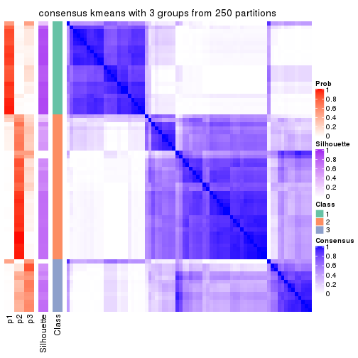
consensus_heatmap(res, k = 4)
consensus_heatmap(res, k = 5)
consensus_heatmap(res, k = 6)
Heatmaps for the membership of samples in all partitions to see how consistent they are:
membership_heatmap(res, k = 2)

membership_heatmap(res, k = 3)
membership_heatmap(res, k = 4)
membership_heatmap(res, k = 5)
membership_heatmap(res, k = 6)
As soon as we have had the classes for columns, we can look for signatures which are significantly different between classes which can be candidate marks for certain classes. Following are the heatmaps for signatures.
Signature heatmaps where rows are scaled:
get_signatures(res, k = 2)
get_signatures(res, k = 3)
get_signatures(res, k = 4)
get_signatures(res, k = 5)
get_signatures(res, k = 6)
Signature heatmaps where rows are not scaled:
get_signatures(res, k = 2, scale_rows = FALSE)
get_signatures(res, k = 3, scale_rows = FALSE)
get_signatures(res, k = 4, scale_rows = FALSE)
get_signatures(res, k = 5, scale_rows = FALSE)
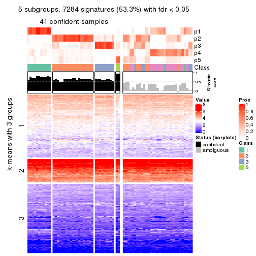
get_signatures(res, k = 6, scale_rows = FALSE)
Compare the overlap of signatures from different k:
compare_signatures(res)
get_signature() returns a data frame invisibly. TO get the list of signatures, the function
call should be assigned to a variable explicitly. In following code, if plot argument is set
to FALSE, no heatmap is plotted while only the differential analysis is performed.
# code only for demonstration
tb = get_signature(res, k = ..., plot = FALSE)
An example of the output of tb is:
#> which_row fdr mean_1 mean_2 scaled_mean_1 scaled_mean_2 km
#> 1 38 0.042760348 8.373488 9.131774 -0.5533452 0.5164555 1
#> 2 40 0.018707592 7.106213 8.469186 -0.6173731 0.5762149 1
#> 3 55 0.019134737 10.221463 11.207825 -0.6159697 0.5749050 1
#> 4 59 0.006059896 5.921854 7.869574 -0.6899429 0.6439467 1
#> 5 60 0.018055526 8.928898 10.211722 -0.6204761 0.5791110 1
#> 6 98 0.009384629 15.714769 14.887706 0.6635654 -0.6193277 2
...
The columns in tb are:
which_row: row indices corresponding to the input matrix.fdr: FDR for the differential test. mean_x: The mean value in group x.scaled_mean_x: The mean value in group x after rows are scaled.km: Row groups if k-means clustering is applied to rows.UMAP plot which shows how samples are separated.
dimension_reduction(res, k = 2, method = "UMAP")
dimension_reduction(res, k = 3, method = "UMAP")
dimension_reduction(res, k = 4, method = "UMAP")
dimension_reduction(res, k = 5, method = "UMAP")
dimension_reduction(res, k = 6, method = "UMAP")
Following heatmap shows how subgroups are split when increasing k:
collect_classes(res)
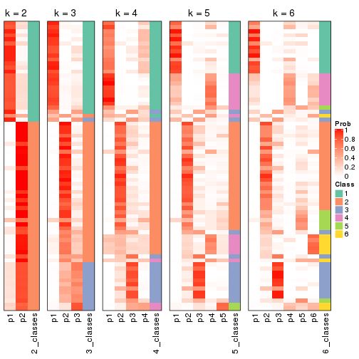
If matrix rows can be associated to genes, consider to use GO_Enrichment(res,
...) to perform function enrichment for the signature genes.
The object with results only for a single top-value method and a single partition method can be extracted as:
res = res_list["SD", "skmeans"]
# you can also extract it by
# res = res_list["SD:skmeans"]
A summary of res and all the functions that can be applied to it:
res
#> A 'ConsensusPartition' object with k = 2, 3, 4, 5, 6.
#> On a matrix with 13673 rows and 72 columns.
#> Top rows (1000, 2000, 3000, 4000, 5000) are extracted by 'SD' method.
#> Subgroups are detected by 'skmeans' method.
#> Performed in total 1250 partitions by row resampling.
#> Best k for subgroups seems to be 2.
#>
#> Following methods can be applied to this 'ConsensusPartition' object:
#> [1] "cola_report" "collect_classes" "collect_plots"
#> [4] "collect_stats" "colnames" "compare_signatures"
#> [7] "consensus_heatmap" "dimension_reduction" "functional_enrichment"
#> [10] "get_anno_col" "get_anno" "get_classes"
#> [13] "get_consensus" "get_matrix" "get_membership"
#> [16] "get_param" "get_signatures" "get_stats"
#> [19] "is_best_k" "is_stable_k" "membership_heatmap"
#> [22] "ncol" "nrow" "plot_ecdf"
#> [25] "rownames" "select_partition_number" "show"
#> [28] "suggest_best_k" "test_to_known_factors"
collect_plots() function collects all the plots made from res for all k (number of partitions)
into one single page to provide an easy and fast comparison between different k.
collect_plots(res)
The plots are:
k and the heatmap of
predicted classes for each k.k.k.k.All the plots in panels can be made by individual functions and they are plotted later in this section.
select_partition_number() produces several plots showing different
statistics for choosing “optimized” k. There are following statistics:
k;k, the area increased is defined as \(A_k - A_{k-1}\).The detailed explanations of these statistics can be found in the cola vignette.
Generally speaking, lower PAC score, higher mean silhouette score or higher
concordance corresponds to better partition. Rand index and Jaccard index
measure how similar the current partition is compared to partition with k-1.
If they are too similar, we won't accept k is better than k-1.
select_partition_number(res)
The numeric values for all these statistics can be obtained by get_stats().
get_stats(res)
#> k 1-PAC mean_silhouette concordance area_increased Rand Jaccard
#> 2 2 0.423 0.792 0.869 0.4950 0.507 0.507
#> 3 3 0.486 0.632 0.813 0.3469 0.752 0.545
#> 4 4 0.570 0.567 0.773 0.1184 0.831 0.555
#> 5 5 0.574 0.486 0.723 0.0637 0.929 0.731
#> 6 6 0.583 0.418 0.670 0.0398 0.913 0.636
suggest_best_k() suggests the best \(k\) based on these statistics. The rules are as follows:
NA.suggest_best_k(res)
#> [1] 2
Following shows the table of the partitions (You need to click the show/hide
code output link to see it). The membership matrix (columns with name p*)
is inferred by
clue::cl_consensus()
function with the SE method. Basically the value in the membership matrix
represents the probability to belong to a certain group. The finall class
label for an item is determined with the group with highest probability it
belongs to.
In get_classes() function, the entropy is calculated from the membership
matrix and the silhouette score is calculated from the consensus matrix.
cbind(get_classes(res, k = 2), get_membership(res, k = 2))
#> class entropy silhouette p1 p2
#> SRR1585486 1 0.0938 0.8461 0.988 0.012
#> SRR1585488 1 0.6973 0.8312 0.812 0.188
#> SRR1585487 1 0.9815 0.5170 0.580 0.420
#> SRR1585489 2 0.0000 0.8518 0.000 1.000
#> SRR1585490 1 0.6973 0.8312 0.812 0.188
#> SRR1585491 1 0.6973 0.8312 0.812 0.188
#> SRR1585492 1 0.5178 0.8448 0.884 0.116
#> SRR1585493 2 0.0000 0.8518 0.000 1.000
#> SRR1585494 2 0.0000 0.8518 0.000 1.000
#> SRR1585496 2 0.6973 0.8371 0.188 0.812
#> SRR1585495 2 0.7056 0.8344 0.192 0.808
#> SRR1585498 2 0.0000 0.8518 0.000 1.000
#> SRR1585497 2 0.6973 0.8371 0.188 0.812
#> SRR1585499 1 0.0000 0.8450 1.000 0.000
#> SRR1585500 1 0.9732 0.0131 0.596 0.404
#> SRR1585501 2 0.0000 0.8518 0.000 1.000
#> SRR1585502 2 0.0000 0.8518 0.000 1.000
#> SRR1585503 1 0.6973 0.8312 0.812 0.188
#> SRR1585504 2 0.6973 0.8371 0.188 0.812
#> SRR1585505 1 0.5842 0.7012 0.860 0.140
#> SRR1585506 2 0.6973 0.8371 0.188 0.812
#> SRR1585508 2 0.0000 0.8518 0.000 1.000
#> SRR1585507 2 0.0000 0.8518 0.000 1.000
#> SRR1585509 1 0.0000 0.8450 1.000 0.000
#> SRR1585510 2 0.6973 0.8371 0.188 0.812
#> SRR1585511 2 0.6973 0.8371 0.188 0.812
#> SRR1585512 2 0.0000 0.8518 0.000 1.000
#> SRR1585513 1 0.6973 0.8312 0.812 0.188
#> SRR1585516 2 0.5842 0.7101 0.140 0.860
#> SRR1585515 1 0.6973 0.8312 0.812 0.188
#> SRR1585514 1 0.9850 0.5004 0.572 0.428
#> SRR1585518 2 0.0000 0.8518 0.000 1.000
#> SRR1585517 2 0.9170 0.2859 0.332 0.668
#> SRR1585519 2 0.0000 0.8518 0.000 1.000
#> SRR1585520 2 0.0000 0.8518 0.000 1.000
#> SRR1585522 2 0.6973 0.8371 0.188 0.812
#> SRR1585521 1 0.0000 0.8450 1.000 0.000
#> SRR1585524 1 0.6973 0.8312 0.812 0.188
#> SRR1585523 1 0.6973 0.8312 0.812 0.188
#> SRR1585525 1 0.0000 0.8450 1.000 0.000
#> SRR1585526 2 0.6973 0.8371 0.188 0.812
#> SRR1585527 1 0.0000 0.8450 1.000 0.000
#> SRR1585528 2 0.0000 0.8518 0.000 1.000
#> SRR1585529 2 0.0000 0.8518 0.000 1.000
#> SRR1585530 2 0.6973 0.8371 0.188 0.812
#> SRR1585531 1 0.0000 0.8450 1.000 0.000
#> SRR1585532 2 0.5946 0.7045 0.144 0.856
#> SRR1585533 1 0.0000 0.8450 1.000 0.000
#> SRR1585534 1 0.6973 0.8312 0.812 0.188
#> SRR1585535 2 0.0000 0.8518 0.000 1.000
#> SRR1585536 2 0.6973 0.8371 0.188 0.812
#> SRR1585537 2 0.8861 0.7293 0.304 0.696
#> SRR1585538 1 0.6973 0.8312 0.812 0.188
#> SRR1585539 1 0.4815 0.8460 0.896 0.104
#> SRR1585541 2 0.0000 0.8518 0.000 1.000
#> SRR1585540 2 0.0000 0.8518 0.000 1.000
#> SRR1585542 1 0.0000 0.8450 1.000 0.000
#> SRR1585543 1 0.0000 0.8450 1.000 0.000
#> SRR1585544 2 0.7674 0.8082 0.224 0.776
#> SRR1585546 1 0.0000 0.8450 1.000 0.000
#> SRR1585545 2 0.9933 -0.1755 0.452 0.548
#> SRR1585547 1 0.0000 0.8450 1.000 0.000
#> SRR1585548 1 0.6973 0.8312 0.812 0.188
#> SRR1585549 2 0.6973 0.8371 0.188 0.812
#> SRR1585550 1 0.0000 0.8450 1.000 0.000
#> SRR1585551 2 0.6973 0.8371 0.188 0.812
#> SRR1585552 2 0.0000 0.8518 0.000 1.000
#> SRR1585553 2 0.6973 0.8371 0.188 0.812
#> SRR1585554 2 0.6973 0.8371 0.188 0.812
#> SRR1585555 2 0.6973 0.8371 0.188 0.812
#> SRR1585557 2 0.0000 0.8518 0.000 1.000
#> SRR1585556 2 0.6973 0.8371 0.188 0.812
cbind(get_classes(res, k = 3), get_membership(res, k = 3))
#> class entropy silhouette p1 p2 p3
#> SRR1585486 1 0.0000 0.8940 1.000 0.000 0.000
#> SRR1585488 1 0.0000 0.8940 1.000 0.000 0.000
#> SRR1585487 2 0.9556 0.3143 0.208 0.460 0.332
#> SRR1585489 2 0.0424 0.7172 0.000 0.992 0.008
#> SRR1585490 1 0.0000 0.8940 1.000 0.000 0.000
#> SRR1585491 1 0.0000 0.8940 1.000 0.000 0.000
#> SRR1585492 1 0.0000 0.8940 1.000 0.000 0.000
#> SRR1585493 2 0.3412 0.7021 0.000 0.876 0.124
#> SRR1585494 2 0.3116 0.6871 0.000 0.892 0.108
#> SRR1585496 3 0.2711 0.6805 0.000 0.088 0.912
#> SRR1585495 3 0.3192 0.7155 0.000 0.112 0.888
#> SRR1585498 2 0.3941 0.6724 0.000 0.844 0.156
#> SRR1585497 3 0.4062 0.7122 0.000 0.164 0.836
#> SRR1585499 1 0.2356 0.8632 0.928 0.000 0.072
#> SRR1585500 3 0.5505 0.5909 0.088 0.096 0.816
#> SRR1585501 2 0.4575 0.6525 0.004 0.812 0.184
#> SRR1585502 2 0.4605 0.6384 0.000 0.796 0.204
#> SRR1585503 1 0.8887 -0.1087 0.456 0.424 0.120
#> SRR1585504 3 0.4346 0.7196 0.000 0.184 0.816
#> SRR1585505 3 0.9462 0.1499 0.400 0.180 0.420
#> SRR1585506 3 0.4235 0.7194 0.000 0.176 0.824
#> SRR1585508 2 0.0892 0.7172 0.000 0.980 0.020
#> SRR1585507 2 0.3192 0.6856 0.000 0.888 0.112
#> SRR1585509 1 0.0000 0.8940 1.000 0.000 0.000
#> SRR1585510 2 0.6252 -0.1911 0.000 0.556 0.444
#> SRR1585511 3 0.5431 0.6820 0.000 0.284 0.716
#> SRR1585512 2 0.0424 0.7172 0.000 0.992 0.008
#> SRR1585513 1 0.0000 0.8940 1.000 0.000 0.000
#> SRR1585516 2 0.8930 0.4080 0.148 0.536 0.316
#> SRR1585515 1 0.0424 0.8914 0.992 0.000 0.008
#> SRR1585514 2 0.4897 0.6591 0.016 0.812 0.172
#> SRR1585518 2 0.0892 0.7172 0.000 0.980 0.020
#> SRR1585517 2 0.9013 0.3957 0.152 0.524 0.324
#> SRR1585519 2 0.2625 0.6939 0.000 0.916 0.084
#> SRR1585520 2 0.4002 0.6552 0.000 0.840 0.160
#> SRR1585522 3 0.6308 0.3221 0.000 0.492 0.508
#> SRR1585521 1 0.3686 0.8199 0.860 0.000 0.140
#> SRR1585524 1 0.2446 0.8513 0.936 0.052 0.012
#> SRR1585523 1 0.2878 0.8247 0.904 0.096 0.000
#> SRR1585525 3 0.6274 0.0194 0.456 0.000 0.544
#> SRR1585526 3 0.3116 0.6682 0.000 0.108 0.892
#> SRR1585527 1 0.4178 0.7936 0.828 0.000 0.172
#> SRR1585528 2 0.2625 0.7037 0.000 0.916 0.084
#> SRR1585529 2 0.2165 0.7010 0.000 0.936 0.064
#> SRR1585530 3 0.5859 0.6357 0.000 0.344 0.656
#> SRR1585531 1 0.4178 0.7936 0.828 0.000 0.172
#> SRR1585532 2 0.8801 0.4379 0.148 0.560 0.292
#> SRR1585533 1 0.3686 0.8199 0.860 0.000 0.140
#> SRR1585534 1 0.0424 0.8914 0.992 0.000 0.008
#> SRR1585535 2 0.0892 0.7157 0.000 0.980 0.020
#> SRR1585536 3 0.5497 0.5971 0.000 0.292 0.708
#> SRR1585537 3 0.1964 0.6500 0.000 0.056 0.944
#> SRR1585538 1 0.0424 0.8914 0.992 0.000 0.008
#> SRR1585539 1 0.0000 0.8940 1.000 0.000 0.000
#> SRR1585541 2 0.3851 0.6906 0.004 0.860 0.136
#> SRR1585540 2 0.1411 0.7108 0.000 0.964 0.036
#> SRR1585542 1 0.4121 0.7972 0.832 0.000 0.168
#> SRR1585543 1 0.6126 0.3863 0.600 0.000 0.400
#> SRR1585544 2 0.7075 -0.1654 0.020 0.496 0.484
#> SRR1585546 1 0.0000 0.8940 1.000 0.000 0.000
#> SRR1585545 2 0.9328 0.3756 0.172 0.472 0.356
#> SRR1585547 1 0.0000 0.8940 1.000 0.000 0.000
#> SRR1585548 1 0.0424 0.8914 0.992 0.000 0.008
#> SRR1585549 3 0.4346 0.7196 0.000 0.184 0.816
#> SRR1585550 1 0.4178 0.7936 0.828 0.000 0.172
#> SRR1585551 3 0.4291 0.7195 0.000 0.180 0.820
#> SRR1585552 2 0.1860 0.7035 0.000 0.948 0.052
#> SRR1585553 2 0.6302 -0.1569 0.000 0.520 0.480
#> SRR1585554 3 0.6192 0.3676 0.000 0.420 0.580
#> SRR1585555 3 0.6045 0.5899 0.000 0.380 0.620
#> SRR1585557 2 0.3551 0.7037 0.000 0.868 0.132
#> SRR1585556 2 0.6302 -0.1347 0.000 0.520 0.480
cbind(get_classes(res, k = 4), get_membership(res, k = 4))
#> class entropy silhouette p1 p2 p3 p4
#> SRR1585486 1 0.1305 0.7247 0.960 0.000 0.004 0.036
#> SRR1585488 1 0.4866 0.2358 0.596 0.000 0.000 0.404
#> SRR1585487 4 0.1721 0.6755 0.008 0.028 0.012 0.952
#> SRR1585489 2 0.5480 0.7295 0.000 0.736 0.124 0.140
#> SRR1585490 1 0.4713 0.3310 0.640 0.000 0.000 0.360
#> SRR1585491 1 0.4761 0.3136 0.628 0.000 0.000 0.372
#> SRR1585492 1 0.5236 0.2015 0.560 0.008 0.000 0.432
#> SRR1585493 2 0.5662 0.6983 0.000 0.692 0.236 0.072
#> SRR1585494 2 0.1452 0.6621 0.000 0.956 0.008 0.036
#> SRR1585496 3 0.1867 0.7602 0.000 0.000 0.928 0.072
#> SRR1585495 3 0.3587 0.7382 0.000 0.088 0.860 0.052
#> SRR1585498 2 0.5949 0.6683 0.000 0.644 0.288 0.068
#> SRR1585497 3 0.4669 0.6792 0.000 0.168 0.780 0.052
#> SRR1585499 1 0.0000 0.7324 1.000 0.000 0.000 0.000
#> SRR1585500 3 0.8901 0.1861 0.164 0.080 0.384 0.372
#> SRR1585501 2 0.5917 0.4725 0.000 0.520 0.444 0.036
#> SRR1585502 2 0.6167 0.7021 0.000 0.668 0.208 0.124
#> SRR1585503 4 0.2623 0.6736 0.028 0.064 0.000 0.908
#> SRR1585504 3 0.0895 0.7707 0.000 0.004 0.976 0.020
#> SRR1585505 1 0.6642 0.3343 0.612 0.308 0.040 0.040
#> SRR1585506 3 0.0895 0.7707 0.000 0.004 0.976 0.020
#> SRR1585508 2 0.5910 0.7199 0.000 0.688 0.208 0.104
#> SRR1585507 2 0.1706 0.6579 0.000 0.948 0.016 0.036
#> SRR1585509 1 0.0707 0.7277 0.980 0.000 0.000 0.020
#> SRR1585510 3 0.5558 -0.1437 0.000 0.432 0.548 0.020
#> SRR1585511 3 0.0927 0.7623 0.000 0.016 0.976 0.008
#> SRR1585512 2 0.5496 0.7323 0.000 0.732 0.160 0.108
#> SRR1585513 1 0.4961 0.0918 0.552 0.000 0.000 0.448
#> SRR1585516 4 0.1635 0.6759 0.000 0.044 0.008 0.948
#> SRR1585515 4 0.4855 0.3512 0.400 0.000 0.000 0.600
#> SRR1585514 4 0.4522 0.2415 0.000 0.320 0.000 0.680
#> SRR1585518 2 0.5944 0.7185 0.000 0.684 0.212 0.104
#> SRR1585517 4 0.1677 0.6768 0.000 0.040 0.012 0.948
#> SRR1585519 2 0.0469 0.6840 0.000 0.988 0.000 0.012
#> SRR1585520 2 0.5615 0.6542 0.000 0.716 0.188 0.096
#> SRR1585522 3 0.4594 0.5155 0.000 0.280 0.712 0.008
#> SRR1585521 1 0.0000 0.7324 1.000 0.000 0.000 0.000
#> SRR1585524 4 0.6633 0.2697 0.416 0.084 0.000 0.500
#> SRR1585523 1 0.2271 0.6827 0.916 0.076 0.000 0.008
#> SRR1585525 1 0.4826 0.5205 0.716 0.000 0.264 0.020
#> SRR1585526 3 0.1557 0.7650 0.000 0.000 0.944 0.056
#> SRR1585527 1 0.0895 0.7284 0.976 0.000 0.020 0.004
#> SRR1585528 2 0.6248 0.7004 0.000 0.644 0.252 0.104
#> SRR1585529 2 0.3587 0.7173 0.000 0.856 0.040 0.104
#> SRR1585530 3 0.2198 0.7408 0.000 0.072 0.920 0.008
#> SRR1585531 1 0.1004 0.7278 0.972 0.000 0.024 0.004
#> SRR1585532 4 0.1807 0.6747 0.000 0.052 0.008 0.940
#> SRR1585533 1 0.0000 0.7324 1.000 0.000 0.000 0.000
#> SRR1585534 4 0.4898 0.3200 0.416 0.000 0.000 0.584
#> SRR1585535 2 0.5452 0.7357 0.000 0.736 0.156 0.108
#> SRR1585536 3 0.4164 0.6248 0.000 0.264 0.736 0.000
#> SRR1585537 3 0.7508 0.4233 0.056 0.060 0.512 0.372
#> SRR1585538 4 0.4898 0.3200 0.416 0.000 0.000 0.584
#> SRR1585539 1 0.4866 0.2378 0.596 0.000 0.000 0.404
#> SRR1585541 2 0.4129 0.6319 0.008 0.828 0.032 0.132
#> SRR1585540 2 0.5184 0.7293 0.000 0.732 0.212 0.056
#> SRR1585542 1 0.3474 0.6844 0.868 0.000 0.068 0.064
#> SRR1585543 1 0.5773 0.4346 0.632 0.000 0.320 0.048
#> SRR1585544 2 0.7940 0.0364 0.224 0.496 0.264 0.016
#> SRR1585546 1 0.0817 0.7286 0.976 0.000 0.000 0.024
#> SRR1585545 4 0.3194 0.6265 0.004 0.052 0.056 0.888
#> SRR1585547 1 0.0188 0.7322 0.996 0.000 0.000 0.004
#> SRR1585548 4 0.4888 0.3280 0.412 0.000 0.000 0.588
#> SRR1585549 3 0.0895 0.7707 0.000 0.004 0.976 0.020
#> SRR1585550 1 0.1004 0.7278 0.972 0.000 0.024 0.004
#> SRR1585551 3 0.0895 0.7707 0.000 0.004 0.976 0.020
#> SRR1585552 2 0.4158 0.7152 0.000 0.768 0.224 0.008
#> SRR1585553 2 0.5481 0.2062 0.004 0.628 0.348 0.020
#> SRR1585554 2 0.5789 0.1337 0.004 0.624 0.336 0.036
#> SRR1585555 3 0.4194 0.6160 0.000 0.228 0.764 0.008
#> SRR1585557 2 0.5369 0.7313 0.000 0.740 0.164 0.096
#> SRR1585556 2 0.5079 0.4059 0.004 0.728 0.236 0.032
cbind(get_classes(res, k = 5), get_membership(res, k = 5))
#> class entropy silhouette p1 p2 p3 p4 p5
#> SRR1585486 1 0.2079 0.6997 0.916 0.000 0.000 0.064 0.020
#> SRR1585488 1 0.4940 0.1698 0.540 0.000 0.004 0.436 0.020
#> SRR1585487 4 0.3584 0.5525 0.000 0.056 0.032 0.852 0.060
#> SRR1585489 2 0.2122 0.7024 0.000 0.924 0.008 0.036 0.032
#> SRR1585490 1 0.4675 0.3082 0.600 0.000 0.000 0.380 0.020
#> SRR1585491 1 0.4743 0.2414 0.568 0.000 0.008 0.416 0.008
#> SRR1585492 1 0.7297 0.0770 0.376 0.000 0.024 0.260 0.340
#> SRR1585493 2 0.6327 0.0998 0.000 0.496 0.096 0.020 0.388
#> SRR1585494 5 0.3662 0.5043 0.000 0.252 0.000 0.004 0.744
#> SRR1585496 3 0.3204 0.7007 0.004 0.076 0.872 0.028 0.020
#> SRR1585495 3 0.2467 0.6490 0.012 0.012 0.912 0.012 0.052
#> SRR1585498 2 0.6879 0.1645 0.000 0.464 0.176 0.020 0.340
#> SRR1585497 5 0.6523 0.1363 0.000 0.068 0.428 0.048 0.456
#> SRR1585499 1 0.0510 0.7160 0.984 0.000 0.000 0.000 0.016
#> SRR1585500 3 0.9062 0.0284 0.196 0.044 0.372 0.216 0.172
#> SRR1585501 2 0.4512 0.5833 0.000 0.752 0.192 0.016 0.040
#> SRR1585502 2 0.6486 0.5287 0.000 0.616 0.216 0.072 0.096
#> SRR1585503 4 0.4817 0.5258 0.024 0.144 0.040 0.772 0.020
#> SRR1585504 3 0.2179 0.7171 0.000 0.112 0.888 0.000 0.000
#> SRR1585505 5 0.3099 0.5894 0.132 0.012 0.008 0.000 0.848
#> SRR1585506 3 0.2462 0.7180 0.000 0.112 0.880 0.008 0.000
#> SRR1585508 2 0.1124 0.7087 0.000 0.960 0.036 0.004 0.000
#> SRR1585507 5 0.3123 0.5793 0.000 0.184 0.004 0.000 0.812
#> SRR1585509 1 0.3710 0.6159 0.784 0.000 0.000 0.024 0.192
#> SRR1585510 3 0.6728 0.3252 0.000 0.320 0.468 0.008 0.204
#> SRR1585511 3 0.3264 0.7009 0.000 0.164 0.820 0.000 0.016
#> SRR1585512 2 0.1804 0.7094 0.000 0.940 0.024 0.012 0.024
#> SRR1585513 4 0.4912 -0.0859 0.480 0.000 0.008 0.500 0.012
#> SRR1585516 4 0.4040 0.5364 0.000 0.080 0.024 0.820 0.076
#> SRR1585515 4 0.4353 0.3587 0.328 0.000 0.004 0.660 0.008
#> SRR1585514 4 0.5439 -0.0615 0.000 0.432 0.012 0.520 0.036
#> SRR1585518 2 0.1106 0.7095 0.000 0.964 0.024 0.012 0.000
#> SRR1585517 4 0.3674 0.5469 0.000 0.064 0.024 0.844 0.068
#> SRR1585519 2 0.4101 0.4354 0.000 0.664 0.000 0.004 0.332
#> SRR1585520 2 0.6168 0.3397 0.000 0.604 0.116 0.024 0.256
#> SRR1585522 3 0.6103 0.5009 0.000 0.192 0.588 0.004 0.216
#> SRR1585521 1 0.0613 0.7164 0.984 0.000 0.004 0.004 0.008
#> SRR1585524 4 0.6653 0.1882 0.384 0.096 0.008 0.488 0.024
#> SRR1585523 1 0.3722 0.6280 0.796 0.004 0.000 0.024 0.176
#> SRR1585525 1 0.4851 0.4091 0.620 0.000 0.352 0.008 0.020
#> SRR1585526 3 0.3756 0.7002 0.000 0.096 0.836 0.036 0.032
#> SRR1585527 1 0.0727 0.7159 0.980 0.000 0.004 0.004 0.012
#> SRR1585528 2 0.2171 0.7034 0.000 0.924 0.032 0.028 0.016
#> SRR1585529 2 0.3023 0.6550 0.000 0.860 0.004 0.024 0.112
#> SRR1585530 3 0.5082 0.6336 0.000 0.244 0.680 0.004 0.072
#> SRR1585531 1 0.1209 0.7137 0.964 0.000 0.012 0.012 0.012
#> SRR1585532 4 0.4563 0.5031 0.000 0.148 0.016 0.768 0.068
#> SRR1585533 1 0.0510 0.7152 0.984 0.000 0.000 0.000 0.016
#> SRR1585534 4 0.4387 0.3440 0.336 0.000 0.008 0.652 0.004
#> SRR1585535 2 0.2354 0.7082 0.000 0.916 0.020 0.032 0.032
#> SRR1585536 3 0.5590 0.4086 0.000 0.088 0.608 0.004 0.300
#> SRR1585537 3 0.8483 0.1847 0.112 0.044 0.440 0.272 0.132
#> SRR1585538 4 0.4335 0.3607 0.324 0.000 0.008 0.664 0.004
#> SRR1585539 1 0.4819 0.2600 0.576 0.000 0.008 0.404 0.012
#> SRR1585541 2 0.6566 -0.0292 0.000 0.416 0.000 0.204 0.380
#> SRR1585540 2 0.1310 0.7073 0.000 0.956 0.024 0.000 0.020
#> SRR1585542 1 0.3950 0.6412 0.812 0.000 0.068 0.112 0.008
#> SRR1585543 1 0.5563 0.3931 0.588 0.000 0.348 0.044 0.020
#> SRR1585544 5 0.7633 0.3872 0.104 0.272 0.084 0.024 0.516
#> SRR1585546 1 0.1365 0.7124 0.952 0.000 0.004 0.040 0.004
#> SRR1585545 4 0.6265 0.0241 0.000 0.016 0.100 0.508 0.376
#> SRR1585547 1 0.1364 0.7116 0.952 0.000 0.000 0.036 0.012
#> SRR1585548 4 0.4565 0.3118 0.352 0.000 0.008 0.632 0.008
#> SRR1585549 3 0.2074 0.7169 0.000 0.104 0.896 0.000 0.000
#> SRR1585550 1 0.1673 0.7083 0.944 0.000 0.032 0.008 0.016
#> SRR1585551 3 0.2074 0.7169 0.000 0.104 0.896 0.000 0.000
#> SRR1585552 2 0.4023 0.6360 0.000 0.804 0.096 0.004 0.096
#> SRR1585553 5 0.6915 0.2090 0.004 0.356 0.200 0.008 0.432
#> SRR1585554 5 0.2726 0.6297 0.000 0.052 0.064 0.000 0.884
#> SRR1585555 3 0.6371 0.4794 0.000 0.216 0.560 0.008 0.216
#> SRR1585557 2 0.6065 0.5618 0.000 0.668 0.152 0.056 0.124
#> SRR1585556 5 0.4917 0.5776 0.000 0.160 0.092 0.012 0.736
cbind(get_classes(res, k = 6), get_membership(res, k = 6))
#> class entropy silhouette p1 p2 p3 p4 p5 p6
#> SRR1585486 1 0.3280 0.5932 0.812 0.000 0.000 0.032 0.004 0.152
#> SRR1585488 1 0.6164 0.2398 0.432 0.000 0.000 0.228 0.008 0.332
#> SRR1585487 4 0.2386 0.3884 0.000 0.028 0.012 0.896 0.000 0.064
#> SRR1585489 2 0.3253 0.6778 0.000 0.852 0.032 0.084 0.024 0.008
#> SRR1585490 1 0.5857 0.3940 0.528 0.000 0.000 0.168 0.012 0.292
#> SRR1585491 1 0.5910 0.2577 0.448 0.000 0.000 0.220 0.000 0.332
#> SRR1585492 6 0.6865 0.0124 0.200 0.004 0.004 0.044 0.316 0.432
#> SRR1585493 5 0.7571 0.2340 0.000 0.276 0.144 0.020 0.416 0.144
#> SRR1585494 5 0.3641 0.4392 0.000 0.140 0.000 0.000 0.788 0.072
#> SRR1585496 3 0.2554 0.6993 0.000 0.012 0.880 0.088 0.000 0.020
#> SRR1585495 3 0.3536 0.6712 0.004 0.052 0.844 0.008 0.028 0.064
#> SRR1585498 5 0.7374 0.0193 0.000 0.356 0.204 0.028 0.356 0.056
#> SRR1585497 5 0.7206 0.0667 0.000 0.088 0.200 0.012 0.456 0.244
#> SRR1585499 1 0.1010 0.6074 0.960 0.000 0.000 0.000 0.004 0.036
#> SRR1585500 6 0.9399 0.0519 0.160 0.064 0.240 0.184 0.084 0.268
#> SRR1585501 2 0.6707 0.3795 0.000 0.528 0.260 0.060 0.020 0.132
#> SRR1585502 2 0.7114 0.4396 0.000 0.564 0.132 0.100 0.068 0.136
#> SRR1585503 4 0.5537 0.3173 0.016 0.140 0.000 0.600 0.000 0.244
#> SRR1585504 3 0.0363 0.7568 0.000 0.012 0.988 0.000 0.000 0.000
#> SRR1585505 5 0.3065 0.3235 0.152 0.000 0.000 0.000 0.820 0.028
#> SRR1585506 3 0.0964 0.7566 0.000 0.016 0.968 0.012 0.000 0.004
#> SRR1585508 2 0.2099 0.6933 0.000 0.904 0.080 0.004 0.004 0.008
#> SRR1585507 5 0.2887 0.4523 0.000 0.120 0.000 0.000 0.844 0.036
#> SRR1585509 1 0.4501 0.4941 0.724 0.000 0.000 0.012 0.176 0.088
#> SRR1585510 3 0.6750 0.4417 0.000 0.196 0.528 0.004 0.176 0.096
#> SRR1585511 3 0.3111 0.7440 0.000 0.088 0.852 0.000 0.020 0.040
#> SRR1585512 2 0.2647 0.6943 0.000 0.876 0.088 0.016 0.020 0.000
#> SRR1585513 1 0.6105 0.0460 0.360 0.000 0.000 0.288 0.000 0.352
#> SRR1585516 4 0.3020 0.3261 0.000 0.064 0.016 0.868 0.008 0.044
#> SRR1585515 4 0.6076 0.2649 0.232 0.000 0.000 0.436 0.004 0.328
#> SRR1585514 2 0.5903 0.1515 0.000 0.444 0.000 0.436 0.048 0.072
#> SRR1585518 2 0.2257 0.6934 0.000 0.900 0.076 0.012 0.004 0.008
#> SRR1585517 4 0.1908 0.3757 0.000 0.044 0.020 0.924 0.000 0.012
#> SRR1585519 2 0.4119 0.4068 0.000 0.636 0.004 0.004 0.348 0.008
#> SRR1585520 2 0.7592 0.3163 0.000 0.492 0.136 0.068 0.200 0.104
#> SRR1585522 3 0.6174 0.5743 0.000 0.108 0.604 0.004 0.188 0.096
#> SRR1585521 1 0.1075 0.6043 0.952 0.000 0.000 0.000 0.000 0.048
#> SRR1585524 1 0.7921 -0.1481 0.288 0.152 0.000 0.276 0.016 0.268
#> SRR1585523 1 0.4941 0.5090 0.704 0.008 0.000 0.012 0.136 0.140
#> SRR1585525 1 0.5297 0.1931 0.616 0.004 0.272 0.004 0.004 0.100
#> SRR1585526 3 0.2009 0.7132 0.000 0.004 0.904 0.084 0.000 0.008
#> SRR1585527 1 0.1074 0.5935 0.960 0.000 0.012 0.000 0.000 0.028
#> SRR1585528 2 0.3355 0.6832 0.000 0.828 0.116 0.040 0.000 0.016
#> SRR1585529 2 0.2971 0.6508 0.000 0.848 0.012 0.024 0.116 0.000
#> SRR1585530 3 0.4848 0.6890 0.000 0.144 0.724 0.000 0.080 0.052
#> SRR1585531 1 0.2122 0.5852 0.900 0.000 0.024 0.000 0.000 0.076
#> SRR1585532 4 0.4246 0.2949 0.000 0.136 0.020 0.776 0.012 0.056
#> SRR1585533 1 0.0405 0.6026 0.988 0.000 0.000 0.000 0.004 0.008
#> SRR1585534 4 0.5989 0.2420 0.244 0.000 0.000 0.428 0.000 0.328
#> SRR1585535 2 0.3689 0.6925 0.000 0.836 0.064 0.044 0.020 0.036
#> SRR1585536 3 0.5916 0.5170 0.000 0.064 0.572 0.000 0.280 0.084
#> SRR1585537 4 0.9106 -0.4018 0.100 0.068 0.240 0.320 0.072 0.200
#> SRR1585538 4 0.5932 0.2726 0.224 0.000 0.000 0.440 0.000 0.336
#> SRR1585539 1 0.5865 0.2809 0.476 0.000 0.000 0.228 0.000 0.296
#> SRR1585541 5 0.7845 0.1332 0.008 0.260 0.000 0.264 0.292 0.176
#> SRR1585540 2 0.3471 0.6701 0.000 0.840 0.072 0.004 0.032 0.052
#> SRR1585542 1 0.5787 0.4380 0.624 0.000 0.080 0.088 0.000 0.208
#> SRR1585543 1 0.6215 0.1172 0.496 0.004 0.308 0.020 0.000 0.172
#> SRR1585544 5 0.7926 0.3134 0.104 0.168 0.052 0.012 0.464 0.200
#> SRR1585546 1 0.2309 0.6188 0.888 0.000 0.000 0.028 0.000 0.084
#> SRR1585545 5 0.7109 -0.2086 0.000 0.024 0.036 0.212 0.368 0.360
#> SRR1585547 1 0.2633 0.6091 0.864 0.000 0.000 0.020 0.004 0.112
#> SRR1585548 4 0.6039 0.2022 0.252 0.000 0.000 0.392 0.000 0.356
#> SRR1585549 3 0.0858 0.7574 0.000 0.028 0.968 0.000 0.000 0.004
#> SRR1585550 1 0.2190 0.5742 0.900 0.000 0.040 0.000 0.000 0.060
#> SRR1585551 3 0.0547 0.7569 0.000 0.020 0.980 0.000 0.000 0.000
#> SRR1585552 2 0.5809 0.5395 0.000 0.636 0.168 0.000 0.112 0.084
#> SRR1585553 5 0.7940 0.2247 0.004 0.252 0.120 0.044 0.416 0.164
#> SRR1585554 5 0.1700 0.4416 0.000 0.028 0.024 0.000 0.936 0.012
#> SRR1585555 3 0.6909 0.4914 0.000 0.132 0.520 0.008 0.212 0.128
#> SRR1585557 2 0.6840 0.4405 0.000 0.592 0.084 0.068 0.112 0.144
#> SRR1585556 5 0.5417 0.4118 0.000 0.112 0.076 0.000 0.680 0.132
Heatmaps for the consensus matrix. It visualizes the probability of two samples to be in a same group.
consensus_heatmap(res, k = 2)
consensus_heatmap(res, k = 3)
consensus_heatmap(res, k = 4)
consensus_heatmap(res, k = 5)
consensus_heatmap(res, k = 6)
Heatmaps for the membership of samples in all partitions to see how consistent they are:
membership_heatmap(res, k = 2)
membership_heatmap(res, k = 3)
membership_heatmap(res, k = 4)
membership_heatmap(res, k = 5)
membership_heatmap(res, k = 6)
As soon as we have had the classes for columns, we can look for signatures which are significantly different between classes which can be candidate marks for certain classes. Following are the heatmaps for signatures.
Signature heatmaps where rows are scaled:
get_signatures(res, k = 2)
get_signatures(res, k = 3)
get_signatures(res, k = 4)
get_signatures(res, k = 5)
get_signatures(res, k = 6)
Signature heatmaps where rows are not scaled:
get_signatures(res, k = 2, scale_rows = FALSE)
get_signatures(res, k = 3, scale_rows = FALSE)
get_signatures(res, k = 4, scale_rows = FALSE)
get_signatures(res, k = 5, scale_rows = FALSE)
get_signatures(res, k = 6, scale_rows = FALSE)
Compare the overlap of signatures from different k:
compare_signatures(res)
get_signature() returns a data frame invisibly. TO get the list of signatures, the function
call should be assigned to a variable explicitly. In following code, if plot argument is set
to FALSE, no heatmap is plotted while only the differential analysis is performed.
# code only for demonstration
tb = get_signature(res, k = ..., plot = FALSE)
An example of the output of tb is:
#> which_row fdr mean_1 mean_2 scaled_mean_1 scaled_mean_2 km
#> 1 38 0.042760348 8.373488 9.131774 -0.5533452 0.5164555 1
#> 2 40 0.018707592 7.106213 8.469186 -0.6173731 0.5762149 1
#> 3 55 0.019134737 10.221463 11.207825 -0.6159697 0.5749050 1
#> 4 59 0.006059896 5.921854 7.869574 -0.6899429 0.6439467 1
#> 5 60 0.018055526 8.928898 10.211722 -0.6204761 0.5791110 1
#> 6 98 0.009384629 15.714769 14.887706 0.6635654 -0.6193277 2
...
The columns in tb are:
which_row: row indices corresponding to the input matrix.fdr: FDR for the differential test. mean_x: The mean value in group x.scaled_mean_x: The mean value in group x after rows are scaled.km: Row groups if k-means clustering is applied to rows.UMAP plot which shows how samples are separated.
dimension_reduction(res, k = 2, method = "UMAP")
dimension_reduction(res, k = 3, method = "UMAP")
dimension_reduction(res, k = 4, method = "UMAP")
dimension_reduction(res, k = 5, method = "UMAP")
dimension_reduction(res, k = 6, method = "UMAP")
Following heatmap shows how subgroups are split when increasing k:
collect_classes(res)
If matrix rows can be associated to genes, consider to use GO_Enrichment(res,
...) to perform function enrichment for the signature genes.
The object with results only for a single top-value method and a single partition method can be extracted as:
res = res_list["SD", "pam"]
# you can also extract it by
# res = res_list["SD:pam"]
A summary of res and all the functions that can be applied to it:
res
#> A 'ConsensusPartition' object with k = 2, 3, 4, 5, 6.
#> On a matrix with 13673 rows and 72 columns.
#> Top rows (1000, 2000, 3000, 4000, 5000) are extracted by 'SD' method.
#> Subgroups are detected by 'pam' method.
#> Performed in total 1250 partitions by row resampling.
#> Best k for subgroups seems to be 2.
#>
#> Following methods can be applied to this 'ConsensusPartition' object:
#> [1] "cola_report" "collect_classes" "collect_plots"
#> [4] "collect_stats" "colnames" "compare_signatures"
#> [7] "consensus_heatmap" "dimension_reduction" "functional_enrichment"
#> [10] "get_anno_col" "get_anno" "get_classes"
#> [13] "get_consensus" "get_matrix" "get_membership"
#> [16] "get_param" "get_signatures" "get_stats"
#> [19] "is_best_k" "is_stable_k" "membership_heatmap"
#> [22] "ncol" "nrow" "plot_ecdf"
#> [25] "rownames" "select_partition_number" "show"
#> [28] "suggest_best_k" "test_to_known_factors"
collect_plots() function collects all the plots made from res for all k (number of partitions)
into one single page to provide an easy and fast comparison between different k.
collect_plots(res)
The plots are:
k and the heatmap of
predicted classes for each k.k.k.k.All the plots in panels can be made by individual functions and they are plotted later in this section.
select_partition_number() produces several plots showing different
statistics for choosing “optimized” k. There are following statistics:
k;k, the area increased is defined as \(A_k - A_{k-1}\).The detailed explanations of these statistics can be found in the cola vignette.
Generally speaking, lower PAC score, higher mean silhouette score or higher
concordance corresponds to better partition. Rand index and Jaccard index
measure how similar the current partition is compared to partition with k-1.
If they are too similar, we won't accept k is better than k-1.
select_partition_number(res)
The numeric values for all these statistics can be obtained by get_stats().
get_stats(res)
#> k 1-PAC mean_silhouette concordance area_increased Rand Jaccard
#> 2 2 1.000 0.958 0.984 0.4338 0.570 0.570
#> 3 3 0.719 0.886 0.911 0.4665 0.759 0.583
#> 4 4 0.590 0.715 0.846 0.0823 0.988 0.965
#> 5 5 0.588 0.589 0.817 0.0437 0.966 0.896
#> 6 6 0.699 0.648 0.843 0.0511 0.941 0.804
suggest_best_k() suggests the best \(k\) based on these statistics. The rules are as follows:
NA.suggest_best_k(res)
#> [1] 2
Following shows the table of the partitions (You need to click the show/hide
code output link to see it). The membership matrix (columns with name p*)
is inferred by
clue::cl_consensus()
function with the SE method. Basically the value in the membership matrix
represents the probability to belong to a certain group. The finall class
label for an item is determined with the group with highest probability it
belongs to.
In get_classes() function, the entropy is calculated from the membership
matrix and the silhouette score is calculated from the consensus matrix.
cbind(get_classes(res, k = 2), get_membership(res, k = 2))
#> class entropy silhouette p1 p2
#> SRR1585486 1 0.456 0.888 0.904 0.096
#> SRR1585488 1 0.000 0.978 1.000 0.000
#> SRR1585487 2 0.000 0.985 0.000 1.000
#> SRR1585489 2 0.000 0.985 0.000 1.000
#> SRR1585490 1 0.000 0.978 1.000 0.000
#> SRR1585491 1 0.000 0.978 1.000 0.000
#> SRR1585492 1 0.876 0.582 0.704 0.296
#> SRR1585493 2 0.000 0.985 0.000 1.000
#> SRR1585494 2 0.000 0.985 0.000 1.000
#> SRR1585496 2 0.000 0.985 0.000 1.000
#> SRR1585495 2 0.000 0.985 0.000 1.000
#> SRR1585498 2 0.000 0.985 0.000 1.000
#> SRR1585497 2 0.000 0.985 0.000 1.000
#> SRR1585499 1 0.000 0.978 1.000 0.000
#> SRR1585500 2 0.000 0.985 0.000 1.000
#> SRR1585501 2 0.000 0.985 0.000 1.000
#> SRR1585502 2 0.000 0.985 0.000 1.000
#> SRR1585503 2 0.000 0.985 0.000 1.000
#> SRR1585504 2 0.000 0.985 0.000 1.000
#> SRR1585505 2 0.000 0.985 0.000 1.000
#> SRR1585506 2 0.000 0.985 0.000 1.000
#> SRR1585508 2 0.000 0.985 0.000 1.000
#> SRR1585507 2 0.000 0.985 0.000 1.000
#> SRR1585509 1 0.000 0.978 1.000 0.000
#> SRR1585510 2 0.000 0.985 0.000 1.000
#> SRR1585511 2 0.000 0.985 0.000 1.000
#> SRR1585512 2 0.000 0.985 0.000 1.000
#> SRR1585513 1 0.000 0.978 1.000 0.000
#> SRR1585516 2 0.000 0.985 0.000 1.000
#> SRR1585515 1 0.000 0.978 1.000 0.000
#> SRR1585514 2 0.000 0.985 0.000 1.000
#> SRR1585518 2 0.000 0.985 0.000 1.000
#> SRR1585517 2 0.000 0.985 0.000 1.000
#> SRR1585519 2 0.000 0.985 0.000 1.000
#> SRR1585520 2 0.000 0.985 0.000 1.000
#> SRR1585522 2 0.000 0.985 0.000 1.000
#> SRR1585521 1 0.000 0.978 1.000 0.000
#> SRR1585524 2 0.861 0.596 0.284 0.716
#> SRR1585523 1 0.000 0.978 1.000 0.000
#> SRR1585525 2 0.000 0.985 0.000 1.000
#> SRR1585526 2 0.000 0.985 0.000 1.000
#> SRR1585527 1 0.000 0.978 1.000 0.000
#> SRR1585528 2 0.000 0.985 0.000 1.000
#> SRR1585529 2 0.000 0.985 0.000 1.000
#> SRR1585530 2 0.000 0.985 0.000 1.000
#> SRR1585531 1 0.000 0.978 1.000 0.000
#> SRR1585532 2 0.000 0.985 0.000 1.000
#> SRR1585533 1 0.000 0.978 1.000 0.000
#> SRR1585534 1 0.000 0.978 1.000 0.000
#> SRR1585535 2 0.000 0.985 0.000 1.000
#> SRR1585536 2 0.000 0.985 0.000 1.000
#> SRR1585537 2 0.000 0.985 0.000 1.000
#> SRR1585538 1 0.000 0.978 1.000 0.000
#> SRR1585539 1 0.000 0.978 1.000 0.000
#> SRR1585541 2 0.000 0.985 0.000 1.000
#> SRR1585540 2 0.000 0.985 0.000 1.000
#> SRR1585542 1 0.000 0.978 1.000 0.000
#> SRR1585543 2 0.993 0.161 0.452 0.548
#> SRR1585544 2 0.000 0.985 0.000 1.000
#> SRR1585546 1 0.000 0.978 1.000 0.000
#> SRR1585545 2 0.000 0.985 0.000 1.000
#> SRR1585547 1 0.000 0.978 1.000 0.000
#> SRR1585548 1 0.000 0.978 1.000 0.000
#> SRR1585549 2 0.000 0.985 0.000 1.000
#> SRR1585550 1 0.327 0.925 0.940 0.060
#> SRR1585551 2 0.000 0.985 0.000 1.000
#> SRR1585552 2 0.000 0.985 0.000 1.000
#> SRR1585553 2 0.000 0.985 0.000 1.000
#> SRR1585554 2 0.000 0.985 0.000 1.000
#> SRR1585555 2 0.000 0.985 0.000 1.000
#> SRR1585557 2 0.000 0.985 0.000 1.000
#> SRR1585556 2 0.000 0.985 0.000 1.000
cbind(get_classes(res, k = 3), get_membership(res, k = 3))
#> class entropy silhouette p1 p2 p3
#> SRR1585486 1 0.3987 0.9087 0.872 0.108 0.020
#> SRR1585488 1 0.2066 0.9363 0.940 0.060 0.000
#> SRR1585487 3 0.0237 0.9391 0.000 0.004 0.996
#> SRR1585489 2 0.4121 0.9234 0.000 0.832 0.168
#> SRR1585490 1 0.0000 0.9604 1.000 0.000 0.000
#> SRR1585491 1 0.0000 0.9604 1.000 0.000 0.000
#> SRR1585492 1 0.7524 0.6961 0.692 0.128 0.180
#> SRR1585493 2 0.4121 0.9234 0.000 0.832 0.168
#> SRR1585494 2 0.4002 0.9212 0.000 0.840 0.160
#> SRR1585496 3 0.0000 0.9407 0.000 0.000 1.000
#> SRR1585495 3 0.0000 0.9407 0.000 0.000 1.000
#> SRR1585498 2 0.6095 0.5456 0.000 0.608 0.392
#> SRR1585497 3 0.0424 0.9367 0.000 0.008 0.992
#> SRR1585499 1 0.0000 0.9604 1.000 0.000 0.000
#> SRR1585500 3 0.2261 0.8850 0.000 0.068 0.932
#> SRR1585501 3 0.0892 0.9308 0.000 0.020 0.980
#> SRR1585502 3 0.3686 0.8010 0.000 0.140 0.860
#> SRR1585503 2 0.4654 0.8917 0.000 0.792 0.208
#> SRR1585504 3 0.0000 0.9407 0.000 0.000 1.000
#> SRR1585505 3 0.2448 0.8762 0.000 0.076 0.924
#> SRR1585506 3 0.0000 0.9407 0.000 0.000 1.000
#> SRR1585508 2 0.4121 0.9234 0.000 0.832 0.168
#> SRR1585507 3 0.2356 0.8884 0.000 0.072 0.928
#> SRR1585509 1 0.0000 0.9604 1.000 0.000 0.000
#> SRR1585510 3 0.0000 0.9407 0.000 0.000 1.000
#> SRR1585511 3 0.0000 0.9407 0.000 0.000 1.000
#> SRR1585512 2 0.4121 0.9234 0.000 0.832 0.168
#> SRR1585513 1 0.0237 0.9596 0.996 0.004 0.000
#> SRR1585516 3 0.0000 0.9407 0.000 0.000 1.000
#> SRR1585515 2 0.6252 -0.0379 0.444 0.556 0.000
#> SRR1585514 2 0.2878 0.8723 0.000 0.904 0.096
#> SRR1585518 2 0.4002 0.9212 0.000 0.840 0.160
#> SRR1585517 2 0.4002 0.9188 0.000 0.840 0.160
#> SRR1585519 2 0.4399 0.9044 0.000 0.812 0.188
#> SRR1585520 3 0.0000 0.9407 0.000 0.000 1.000
#> SRR1585522 3 0.0000 0.9407 0.000 0.000 1.000
#> SRR1585521 1 0.0000 0.9604 1.000 0.000 0.000
#> SRR1585524 2 0.3375 0.8180 0.044 0.908 0.048
#> SRR1585523 1 0.0424 0.9586 0.992 0.008 0.000
#> SRR1585525 3 0.2261 0.8816 0.000 0.068 0.932
#> SRR1585526 3 0.1289 0.9226 0.000 0.032 0.968
#> SRR1585527 1 0.0000 0.9604 1.000 0.000 0.000
#> SRR1585528 2 0.4121 0.9234 0.000 0.832 0.168
#> SRR1585529 2 0.4121 0.9234 0.000 0.832 0.168
#> SRR1585530 3 0.1163 0.9258 0.000 0.028 0.972
#> SRR1585531 1 0.0592 0.9575 0.988 0.012 0.000
#> SRR1585532 2 0.4121 0.9234 0.000 0.832 0.168
#> SRR1585533 1 0.0000 0.9604 1.000 0.000 0.000
#> SRR1585534 1 0.2796 0.9233 0.908 0.092 0.000
#> SRR1585535 2 0.4121 0.9234 0.000 0.832 0.168
#> SRR1585536 3 0.0000 0.9407 0.000 0.000 1.000
#> SRR1585537 3 0.0000 0.9407 0.000 0.000 1.000
#> SRR1585538 1 0.3267 0.9158 0.884 0.116 0.000
#> SRR1585539 1 0.0000 0.9604 1.000 0.000 0.000
#> SRR1585541 3 0.0000 0.9407 0.000 0.000 1.000
#> SRR1585540 2 0.4062 0.9226 0.000 0.836 0.164
#> SRR1585542 1 0.0000 0.9604 1.000 0.000 0.000
#> SRR1585543 3 0.8562 0.2643 0.352 0.108 0.540
#> SRR1585544 3 0.0892 0.9271 0.000 0.020 0.980
#> SRR1585546 1 0.1031 0.9532 0.976 0.024 0.000
#> SRR1585545 2 0.2796 0.8699 0.000 0.908 0.092
#> SRR1585547 1 0.0000 0.9604 1.000 0.000 0.000
#> SRR1585548 1 0.2959 0.9210 0.900 0.100 0.000
#> SRR1585549 3 0.1163 0.9258 0.000 0.028 0.972
#> SRR1585550 1 0.4288 0.8823 0.872 0.068 0.060
#> SRR1585551 3 0.0000 0.9407 0.000 0.000 1.000
#> SRR1585552 3 0.4062 0.7656 0.000 0.164 0.836
#> SRR1585553 3 0.0000 0.9407 0.000 0.000 1.000
#> SRR1585554 3 0.0424 0.9367 0.000 0.008 0.992
#> SRR1585555 3 0.0000 0.9407 0.000 0.000 1.000
#> SRR1585557 3 0.5810 0.3840 0.000 0.336 0.664
#> SRR1585556 3 0.0000 0.9407 0.000 0.000 1.000
cbind(get_classes(res, k = 4), get_membership(res, k = 4))
#> class entropy silhouette p1 p2 p3 p4
#> SRR1585486 1 0.3441 0.828 0.856 0.024 0.000 0.120
#> SRR1585488 1 0.1489 0.889 0.952 0.004 0.000 0.044
#> SRR1585487 3 0.0336 0.758 0.000 0.008 0.992 0.000
#> SRR1585489 2 0.3074 0.870 0.000 0.848 0.152 0.000
#> SRR1585490 1 0.0000 0.912 1.000 0.000 0.000 0.000
#> SRR1585491 1 0.0000 0.912 1.000 0.000 0.000 0.000
#> SRR1585492 1 0.6759 0.366 0.608 0.020 0.076 0.296
#> SRR1585493 2 0.3024 0.870 0.000 0.852 0.148 0.000
#> SRR1585494 2 0.5496 0.771 0.000 0.732 0.108 0.160
#> SRR1585496 3 0.4164 0.520 0.000 0.000 0.736 0.264
#> SRR1585495 3 0.0000 0.758 0.000 0.000 1.000 0.000
#> SRR1585498 2 0.6919 0.429 0.000 0.528 0.352 0.120
#> SRR1585497 3 0.5444 0.249 0.000 0.016 0.560 0.424
#> SRR1585499 1 0.0000 0.912 1.000 0.000 0.000 0.000
#> SRR1585500 3 0.5716 0.425 0.000 0.068 0.680 0.252
#> SRR1585501 3 0.1042 0.753 0.000 0.020 0.972 0.008
#> SRR1585502 3 0.3219 0.636 0.000 0.164 0.836 0.000
#> SRR1585503 2 0.3726 0.823 0.000 0.788 0.212 0.000
#> SRR1585504 3 0.4164 0.520 0.000 0.000 0.736 0.264
#> SRR1585505 3 0.4748 0.422 0.000 0.016 0.716 0.268
#> SRR1585506 3 0.3907 0.566 0.000 0.000 0.768 0.232
#> SRR1585508 2 0.3074 0.870 0.000 0.848 0.152 0.000
#> SRR1585507 3 0.4578 0.591 0.000 0.052 0.788 0.160
#> SRR1585509 1 0.0000 0.912 1.000 0.000 0.000 0.000
#> SRR1585510 3 0.0188 0.759 0.000 0.004 0.996 0.000
#> SRR1585511 3 0.2704 0.687 0.000 0.000 0.876 0.124
#> SRR1585512 2 0.3074 0.870 0.000 0.848 0.152 0.000
#> SRR1585513 1 0.0188 0.911 0.996 0.004 0.000 0.000
#> SRR1585516 3 0.0188 0.759 0.000 0.004 0.996 0.000
#> SRR1585515 2 0.6171 0.118 0.348 0.588 0.000 0.064
#> SRR1585514 2 0.1356 0.783 0.000 0.960 0.032 0.008
#> SRR1585518 2 0.3278 0.858 0.000 0.864 0.116 0.020
#> SRR1585517 2 0.3074 0.866 0.000 0.848 0.152 0.000
#> SRR1585519 2 0.6080 0.729 0.000 0.684 0.156 0.160
#> SRR1585520 3 0.0188 0.759 0.000 0.004 0.996 0.000
#> SRR1585522 3 0.0188 0.759 0.000 0.004 0.996 0.000
#> SRR1585521 1 0.0000 0.912 1.000 0.000 0.000 0.000
#> SRR1585524 2 0.2161 0.740 0.004 0.932 0.016 0.048
#> SRR1585523 1 0.0000 0.912 1.000 0.000 0.000 0.000
#> SRR1585525 3 0.4776 0.222 0.000 0.000 0.624 0.376
#> SRR1585526 3 0.5592 0.468 0.000 0.056 0.680 0.264
#> SRR1585527 1 0.0000 0.912 1.000 0.000 0.000 0.000
#> SRR1585528 2 0.3074 0.870 0.000 0.848 0.152 0.000
#> SRR1585529 2 0.3074 0.870 0.000 0.848 0.152 0.000
#> SRR1585530 3 0.1474 0.735 0.000 0.052 0.948 0.000
#> SRR1585531 1 0.0817 0.902 0.976 0.000 0.000 0.024
#> SRR1585532 2 0.3172 0.866 0.000 0.840 0.160 0.000
#> SRR1585533 1 0.0000 0.912 1.000 0.000 0.000 0.000
#> SRR1585534 1 0.4931 0.748 0.776 0.132 0.000 0.092
#> SRR1585535 2 0.3074 0.870 0.000 0.848 0.152 0.000
#> SRR1585536 3 0.0188 0.758 0.000 0.000 0.996 0.004
#> SRR1585537 3 0.4086 0.537 0.000 0.008 0.776 0.216
#> SRR1585538 1 0.5051 0.742 0.768 0.132 0.000 0.100
#> SRR1585539 1 0.0000 0.912 1.000 0.000 0.000 0.000
#> SRR1585541 3 0.0188 0.759 0.000 0.004 0.996 0.000
#> SRR1585540 2 0.3392 0.863 0.000 0.856 0.124 0.020
#> SRR1585542 1 0.0000 0.912 1.000 0.000 0.000 0.000
#> SRR1585543 4 0.8128 0.000 0.264 0.012 0.292 0.432
#> SRR1585544 3 0.1022 0.740 0.000 0.000 0.968 0.032
#> SRR1585546 1 0.1929 0.883 0.940 0.036 0.000 0.024
#> SRR1585545 2 0.3672 0.746 0.000 0.824 0.012 0.164
#> SRR1585547 1 0.0000 0.912 1.000 0.000 0.000 0.000
#> SRR1585548 1 0.4931 0.748 0.776 0.132 0.000 0.092
#> SRR1585549 3 0.5519 0.473 0.000 0.052 0.684 0.264
#> SRR1585550 1 0.4114 0.752 0.828 0.000 0.060 0.112
#> SRR1585551 3 0.4164 0.520 0.000 0.000 0.736 0.264
#> SRR1585552 3 0.3486 0.606 0.000 0.188 0.812 0.000
#> SRR1585553 3 0.0000 0.758 0.000 0.000 1.000 0.000
#> SRR1585554 3 0.3743 0.618 0.000 0.016 0.824 0.160
#> SRR1585555 3 0.0188 0.758 0.000 0.000 0.996 0.004
#> SRR1585557 3 0.4872 0.345 0.000 0.356 0.640 0.004
#> SRR1585556 3 0.0188 0.758 0.000 0.000 0.996 0.004
cbind(get_classes(res, k = 5), get_membership(res, k = 5))
#> class entropy silhouette p1 p2 p3 p4 p5
#> SRR1585486 1 0.3216 0.848 0.852 0.020 0.000 0.012 0.116
#> SRR1585488 1 0.1282 0.902 0.952 0.004 0.000 0.000 0.044
#> SRR1585487 3 0.0290 0.682 0.000 0.008 0.992 0.000 0.000
#> SRR1585489 2 0.2516 0.823 0.000 0.860 0.140 0.000 0.000
#> SRR1585490 1 0.0000 0.919 1.000 0.000 0.000 0.000 0.000
#> SRR1585491 1 0.0000 0.919 1.000 0.000 0.000 0.000 0.000
#> SRR1585492 1 0.5154 0.503 0.596 0.012 0.028 0.000 0.364
#> SRR1585493 2 0.2516 0.823 0.000 0.860 0.140 0.000 0.000
#> SRR1585494 2 0.5149 0.608 0.000 0.680 0.104 0.000 0.216
#> SRR1585496 3 0.4262 -0.230 0.000 0.000 0.560 0.000 0.440
#> SRR1585495 3 0.0162 0.683 0.000 0.000 0.996 0.000 0.004
#> SRR1585498 2 0.6185 0.178 0.000 0.504 0.348 0.000 0.148
#> SRR1585497 5 0.4339 0.202 0.000 0.012 0.336 0.000 0.652
#> SRR1585499 1 0.0000 0.919 1.000 0.000 0.000 0.000 0.000
#> SRR1585500 4 0.6393 0.000 0.000 0.024 0.296 0.560 0.120
#> SRR1585501 3 0.1117 0.673 0.000 0.020 0.964 0.000 0.016
#> SRR1585502 3 0.2852 0.516 0.000 0.172 0.828 0.000 0.000
#> SRR1585503 2 0.3210 0.748 0.000 0.788 0.212 0.000 0.000
#> SRR1585504 3 0.4262 -0.230 0.000 0.000 0.560 0.000 0.440
#> SRR1585505 3 0.4416 0.140 0.000 0.012 0.632 0.000 0.356
#> SRR1585506 3 0.4161 -0.106 0.000 0.000 0.608 0.000 0.392
#> SRR1585508 2 0.2516 0.823 0.000 0.860 0.140 0.000 0.000
#> SRR1585507 3 0.4224 0.359 0.000 0.040 0.744 0.000 0.216
#> SRR1585509 1 0.0000 0.919 1.000 0.000 0.000 0.000 0.000
#> SRR1585510 3 0.0162 0.684 0.000 0.004 0.996 0.000 0.000
#> SRR1585511 3 0.2966 0.476 0.000 0.000 0.816 0.000 0.184
#> SRR1585512 2 0.2516 0.823 0.000 0.860 0.140 0.000 0.000
#> SRR1585513 1 0.0162 0.918 0.996 0.000 0.000 0.004 0.000
#> SRR1585516 3 0.0162 0.684 0.000 0.004 0.996 0.000 0.000
#> SRR1585515 2 0.5694 0.101 0.336 0.584 0.000 0.068 0.012
#> SRR1585514 2 0.0703 0.719 0.000 0.976 0.024 0.000 0.000
#> SRR1585518 2 0.2813 0.810 0.000 0.868 0.108 0.000 0.024
#> SRR1585517 2 0.2843 0.815 0.000 0.848 0.144 0.008 0.000
#> SRR1585519 2 0.5565 0.550 0.000 0.640 0.144 0.000 0.216
#> SRR1585520 3 0.0162 0.684 0.000 0.004 0.996 0.000 0.000
#> SRR1585522 3 0.0162 0.684 0.000 0.004 0.996 0.000 0.000
#> SRR1585521 1 0.0000 0.919 1.000 0.000 0.000 0.000 0.000
#> SRR1585524 2 0.2037 0.648 0.000 0.920 0.012 0.064 0.004
#> SRR1585523 1 0.0000 0.919 1.000 0.000 0.000 0.000 0.000
#> SRR1585525 5 0.4219 0.370 0.000 0.000 0.416 0.000 0.584
#> SRR1585526 3 0.5498 -0.294 0.000 0.064 0.496 0.000 0.440
#> SRR1585527 1 0.0000 0.919 1.000 0.000 0.000 0.000 0.000
#> SRR1585528 2 0.2516 0.823 0.000 0.860 0.140 0.000 0.000
#> SRR1585529 2 0.2516 0.823 0.000 0.860 0.140 0.000 0.000
#> SRR1585530 3 0.1341 0.649 0.000 0.056 0.944 0.000 0.000
#> SRR1585531 1 0.0703 0.911 0.976 0.000 0.000 0.000 0.024
#> SRR1585532 2 0.2605 0.818 0.000 0.852 0.148 0.000 0.000
#> SRR1585533 1 0.0000 0.919 1.000 0.000 0.000 0.000 0.000
#> SRR1585534 1 0.5414 0.739 0.716 0.128 0.000 0.124 0.032
#> SRR1585535 2 0.2516 0.823 0.000 0.860 0.140 0.000 0.000
#> SRR1585536 3 0.0000 0.683 0.000 0.000 1.000 0.000 0.000
#> SRR1585537 3 0.6245 -0.224 0.000 0.000 0.516 0.316 0.168
#> SRR1585538 1 0.5490 0.736 0.712 0.128 0.000 0.124 0.036
#> SRR1585539 1 0.0000 0.919 1.000 0.000 0.000 0.000 0.000
#> SRR1585541 3 0.0162 0.684 0.000 0.004 0.996 0.000 0.000
#> SRR1585540 2 0.2773 0.813 0.000 0.868 0.112 0.000 0.020
#> SRR1585542 1 0.0000 0.919 1.000 0.000 0.000 0.000 0.000
#> SRR1585543 5 0.6709 0.205 0.196 0.008 0.120 0.060 0.616
#> SRR1585544 3 0.0963 0.656 0.000 0.000 0.964 0.000 0.036
#> SRR1585546 1 0.1750 0.893 0.936 0.036 0.000 0.028 0.000
#> SRR1585545 2 0.3430 0.616 0.000 0.776 0.004 0.000 0.220
#> SRR1585547 1 0.0000 0.919 1.000 0.000 0.000 0.000 0.000
#> SRR1585548 1 0.5414 0.739 0.716 0.128 0.000 0.124 0.032
#> SRR1585549 3 0.5447 -0.290 0.000 0.060 0.500 0.000 0.440
#> SRR1585550 1 0.3911 0.783 0.796 0.000 0.060 0.000 0.144
#> SRR1585551 3 0.4262 -0.230 0.000 0.000 0.560 0.000 0.440
#> SRR1585552 3 0.3074 0.479 0.000 0.196 0.804 0.000 0.000
#> SRR1585553 3 0.0162 0.683 0.000 0.000 0.996 0.000 0.004
#> SRR1585554 3 0.3628 0.401 0.000 0.012 0.772 0.000 0.216
#> SRR1585555 3 0.0000 0.683 0.000 0.000 1.000 0.000 0.000
#> SRR1585557 3 0.4341 0.116 0.000 0.364 0.628 0.000 0.008
#> SRR1585556 3 0.0162 0.682 0.000 0.000 0.996 0.000 0.004
cbind(get_classes(res, k = 6), get_membership(res, k = 6))
#> class entropy silhouette p1 p2 p3 p4 p5 p6
#> SRR1585486 1 0.2809 0.809 0.848 0.004 0.128 0.020 0.000 0
#> SRR1585488 1 0.1471 0.861 0.932 0.000 0.064 0.004 0.000 0
#> SRR1585487 5 0.0260 0.772 0.000 0.008 0.000 0.000 0.992 0
#> SRR1585489 2 0.1007 0.830 0.000 0.956 0.000 0.000 0.044 0
#> SRR1585490 1 0.0000 0.886 1.000 0.000 0.000 0.000 0.000 0
#> SRR1585491 1 0.0000 0.886 1.000 0.000 0.000 0.000 0.000 0
#> SRR1585492 1 0.4530 0.419 0.552 0.012 0.420 0.000 0.016 0
#> SRR1585493 2 0.1007 0.830 0.000 0.956 0.000 0.000 0.044 0
#> SRR1585494 2 0.4294 0.581 0.000 0.692 0.248 0.000 0.060 0
#> SRR1585496 3 0.3843 0.628 0.000 0.000 0.548 0.000 0.452 0
#> SRR1585495 5 0.0146 0.771 0.000 0.000 0.004 0.000 0.996 0
#> SRR1585498 2 0.5343 0.305 0.000 0.580 0.156 0.000 0.264 0
#> SRR1585497 3 0.3014 0.210 0.000 0.012 0.804 0.000 0.184 0
#> SRR1585499 1 0.0000 0.886 1.000 0.000 0.000 0.000 0.000 0
#> SRR1585500 4 0.5202 0.000 0.000 0.000 0.140 0.600 0.260 0
#> SRR1585501 5 0.1682 0.736 0.000 0.052 0.020 0.000 0.928 0
#> SRR1585502 5 0.3023 0.541 0.000 0.232 0.000 0.000 0.768 0
#> SRR1585503 2 0.2854 0.666 0.000 0.792 0.000 0.000 0.208 0
#> SRR1585504 3 0.3843 0.628 0.000 0.000 0.548 0.000 0.452 0
#> SRR1585505 5 0.4057 0.212 0.000 0.012 0.388 0.000 0.600 0
#> SRR1585506 5 0.3810 -0.465 0.000 0.000 0.428 0.000 0.572 0
#> SRR1585508 2 0.0547 0.827 0.000 0.980 0.000 0.000 0.020 0
#> SRR1585507 5 0.4022 0.402 0.000 0.040 0.252 0.000 0.708 0
#> SRR1585509 1 0.0000 0.886 1.000 0.000 0.000 0.000 0.000 0
#> SRR1585510 5 0.0146 0.773 0.000 0.004 0.000 0.000 0.996 0
#> SRR1585511 5 0.3309 0.170 0.000 0.000 0.280 0.000 0.720 0
#> SRR1585512 2 0.1007 0.830 0.000 0.956 0.000 0.000 0.044 0
#> SRR1585513 1 0.0146 0.886 0.996 0.000 0.000 0.004 0.000 0
#> SRR1585516 5 0.0146 0.773 0.000 0.004 0.000 0.000 0.996 0
#> SRR1585515 2 0.5852 0.145 0.328 0.464 0.000 0.208 0.000 0
#> SRR1585514 2 0.1285 0.810 0.000 0.944 0.000 0.052 0.004 0
#> SRR1585518 2 0.0291 0.821 0.000 0.992 0.004 0.000 0.004 0
#> SRR1585517 2 0.2176 0.808 0.000 0.896 0.000 0.024 0.080 0
#> SRR1585519 2 0.5143 0.445 0.000 0.612 0.248 0.000 0.140 0
#> SRR1585520 5 0.0146 0.773 0.000 0.004 0.000 0.000 0.996 0
#> SRR1585522 5 0.0146 0.773 0.000 0.004 0.000 0.000 0.996 0
#> SRR1585521 1 0.0000 0.886 1.000 0.000 0.000 0.000 0.000 0
#> SRR1585524 2 0.2948 0.707 0.000 0.804 0.000 0.188 0.008 0
#> SRR1585523 1 0.0146 0.886 0.996 0.000 0.004 0.000 0.000 0
#> SRR1585525 3 0.3244 0.521 0.000 0.000 0.732 0.000 0.268 0
#> SRR1585526 3 0.5468 0.547 0.000 0.156 0.548 0.000 0.296 0
#> SRR1585527 1 0.0363 0.882 0.988 0.000 0.012 0.000 0.000 0
#> SRR1585528 2 0.0547 0.827 0.000 0.980 0.000 0.000 0.020 0
#> SRR1585529 2 0.1007 0.830 0.000 0.956 0.000 0.000 0.044 0
#> SRR1585530 5 0.2003 0.680 0.000 0.116 0.000 0.000 0.884 0
#> SRR1585531 1 0.1075 0.868 0.952 0.000 0.048 0.000 0.000 0
#> SRR1585532 2 0.1501 0.817 0.000 0.924 0.000 0.000 0.076 0
#> SRR1585533 1 0.0000 0.886 1.000 0.000 0.000 0.000 0.000 0
#> SRR1585534 1 0.3993 0.543 0.592 0.008 0.000 0.400 0.000 0
#> SRR1585535 2 0.1007 0.830 0.000 0.956 0.000 0.000 0.044 0
#> SRR1585536 5 0.0000 0.772 0.000 0.000 0.000 0.000 1.000 0
#> SRR1585537 6 0.0000 0.000 0.000 0.000 0.000 0.000 0.000 1
#> SRR1585538 1 0.4321 0.530 0.580 0.008 0.012 0.400 0.000 0
#> SRR1585539 1 0.0000 0.886 1.000 0.000 0.000 0.000 0.000 0
#> SRR1585541 5 0.0146 0.773 0.000 0.004 0.000 0.000 0.996 0
#> SRR1585540 2 0.0458 0.826 0.000 0.984 0.000 0.000 0.016 0
#> SRR1585542 1 0.0146 0.886 0.996 0.000 0.000 0.004 0.000 0
#> SRR1585543 3 0.3969 0.129 0.044 0.000 0.740 0.212 0.004 0
#> SRR1585544 5 0.1007 0.745 0.000 0.000 0.044 0.000 0.956 0
#> SRR1585546 1 0.1387 0.858 0.932 0.000 0.000 0.068 0.000 0
#> SRR1585545 2 0.3136 0.684 0.000 0.768 0.228 0.000 0.004 0
#> SRR1585547 1 0.0000 0.886 1.000 0.000 0.000 0.000 0.000 0
#> SRR1585548 1 0.3993 0.543 0.592 0.008 0.000 0.400 0.000 0
#> SRR1585549 3 0.5203 0.606 0.000 0.104 0.548 0.000 0.348 0
#> SRR1585550 1 0.3829 0.717 0.760 0.000 0.180 0.000 0.060 0
#> SRR1585551 3 0.3843 0.628 0.000 0.000 0.548 0.000 0.452 0
#> SRR1585552 5 0.3351 0.455 0.000 0.288 0.000 0.000 0.712 0
#> SRR1585553 5 0.0146 0.771 0.000 0.000 0.004 0.000 0.996 0
#> SRR1585554 5 0.3470 0.444 0.000 0.012 0.248 0.000 0.740 0
#> SRR1585555 5 0.0000 0.772 0.000 0.000 0.000 0.000 1.000 0
#> SRR1585557 5 0.3851 0.151 0.000 0.460 0.000 0.000 0.540 0
#> SRR1585556 5 0.0146 0.771 0.000 0.000 0.004 0.000 0.996 0
Heatmaps for the consensus matrix. It visualizes the probability of two samples to be in a same group.
consensus_heatmap(res, k = 2)
consensus_heatmap(res, k = 3)
consensus_heatmap(res, k = 4)
consensus_heatmap(res, k = 5)
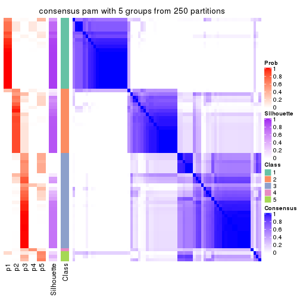
consensus_heatmap(res, k = 6)
Heatmaps for the membership of samples in all partitions to see how consistent they are:
membership_heatmap(res, k = 2)
membership_heatmap(res, k = 3)

membership_heatmap(res, k = 4)
membership_heatmap(res, k = 5)
membership_heatmap(res, k = 6)
As soon as we have had the classes for columns, we can look for signatures which are significantly different between classes which can be candidate marks for certain classes. Following are the heatmaps for signatures.
Signature heatmaps where rows are scaled:
get_signatures(res, k = 2)

get_signatures(res, k = 3)
get_signatures(res, k = 4)
get_signatures(res, k = 5)
get_signatures(res, k = 6)
Signature heatmaps where rows are not scaled:
get_signatures(res, k = 2, scale_rows = FALSE)
get_signatures(res, k = 3, scale_rows = FALSE)
get_signatures(res, k = 4, scale_rows = FALSE)
get_signatures(res, k = 5, scale_rows = FALSE)
get_signatures(res, k = 6, scale_rows = FALSE)
Compare the overlap of signatures from different k:
compare_signatures(res)
get_signature() returns a data frame invisibly. TO get the list of signatures, the function
call should be assigned to a variable explicitly. In following code, if plot argument is set
to FALSE, no heatmap is plotted while only the differential analysis is performed.
# code only for demonstration
tb = get_signature(res, k = ..., plot = FALSE)
An example of the output of tb is:
#> which_row fdr mean_1 mean_2 scaled_mean_1 scaled_mean_2 km
#> 1 38 0.042760348 8.373488 9.131774 -0.5533452 0.5164555 1
#> 2 40 0.018707592 7.106213 8.469186 -0.6173731 0.5762149 1
#> 3 55 0.019134737 10.221463 11.207825 -0.6159697 0.5749050 1
#> 4 59 0.006059896 5.921854 7.869574 -0.6899429 0.6439467 1
#> 5 60 0.018055526 8.928898 10.211722 -0.6204761 0.5791110 1
#> 6 98 0.009384629 15.714769 14.887706 0.6635654 -0.6193277 2
...
The columns in tb are:
which_row: row indices corresponding to the input matrix.fdr: FDR for the differential test. mean_x: The mean value in group x.scaled_mean_x: The mean value in group x after rows are scaled.km: Row groups if k-means clustering is applied to rows.UMAP plot which shows how samples are separated.
dimension_reduction(res, k = 2, method = "UMAP")

dimension_reduction(res, k = 3, method = "UMAP")
dimension_reduction(res, k = 4, method = "UMAP")
dimension_reduction(res, k = 5, method = "UMAP")
dimension_reduction(res, k = 6, method = "UMAP")
Following heatmap shows how subgroups are split when increasing k:
collect_classes(res)
If matrix rows can be associated to genes, consider to use GO_Enrichment(res,
...) to perform function enrichment for the signature genes.
The object with results only for a single top-value method and a single partition method can be extracted as:
res = res_list["SD", "mclust"]
# you can also extract it by
# res = res_list["SD:mclust"]
A summary of res and all the functions that can be applied to it:
res
#> A 'ConsensusPartition' object with k = 2, 3, 4, 5, 6.
#> On a matrix with 13673 rows and 72 columns.
#> Top rows (1000, 2000, 3000, 4000, 5000) are extracted by 'SD' method.
#> Subgroups are detected by 'mclust' method.
#> Performed in total 1250 partitions by row resampling.
#> Best k for subgroups seems to be 2.
#>
#> Following methods can be applied to this 'ConsensusPartition' object:
#> [1] "cola_report" "collect_classes" "collect_plots"
#> [4] "collect_stats" "colnames" "compare_signatures"
#> [7] "consensus_heatmap" "dimension_reduction" "functional_enrichment"
#> [10] "get_anno_col" "get_anno" "get_classes"
#> [13] "get_consensus" "get_matrix" "get_membership"
#> [16] "get_param" "get_signatures" "get_stats"
#> [19] "is_best_k" "is_stable_k" "membership_heatmap"
#> [22] "ncol" "nrow" "plot_ecdf"
#> [25] "rownames" "select_partition_number" "show"
#> [28] "suggest_best_k" "test_to_known_factors"
collect_plots() function collects all the plots made from res for all k (number of partitions)
into one single page to provide an easy and fast comparison between different k.
collect_plots(res)
The plots are:
k and the heatmap of
predicted classes for each k.k.k.k.All the plots in panels can be made by individual functions and they are plotted later in this section.
select_partition_number() produces several plots showing different
statistics for choosing “optimized” k. There are following statistics:
k;k, the area increased is defined as \(A_k - A_{k-1}\).The detailed explanations of these statistics can be found in the cola vignette.
Generally speaking, lower PAC score, higher mean silhouette score or higher
concordance corresponds to better partition. Rand index and Jaccard index
measure how similar the current partition is compared to partition with k-1.
If they are too similar, we won't accept k is better than k-1.
select_partition_number(res)
The numeric values for all these statistics can be obtained by get_stats().
get_stats(res)
#> k 1-PAC mean_silhouette concordance area_increased Rand Jaccard
#> 2 2 0.505 0.886 0.831 0.3433 0.549 0.549
#> 3 3 0.327 0.758 0.803 0.5170 1.000 1.000
#> 4 4 0.506 0.665 0.759 0.3079 0.748 0.544
#> 5 5 0.424 0.363 0.623 0.0835 0.837 0.518
#> 6 6 0.592 0.537 0.676 0.0930 0.875 0.494
suggest_best_k() suggests the best \(k\) based on these statistics. The rules are as follows:
NA.suggest_best_k(res)
#> [1] 2
Following shows the table of the partitions (You need to click the show/hide
code output link to see it). The membership matrix (columns with name p*)
is inferred by
clue::cl_consensus()
function with the SE method. Basically the value in the membership matrix
represents the probability to belong to a certain group. The finall class
label for an item is determined with the group with highest probability it
belongs to.
In get_classes() function, the entropy is calculated from the membership
matrix and the silhouette score is calculated from the consensus matrix.
cbind(get_classes(res, k = 2), get_membership(res, k = 2))
#> class entropy silhouette p1 p2
#> SRR1585486 1 0.9635 0.998 0.612 0.388
#> SRR1585488 1 0.9635 0.998 0.612 0.388
#> SRR1585487 2 0.0000 0.902 0.000 1.000
#> SRR1585489 2 0.9635 0.494 0.388 0.612
#> SRR1585490 1 0.9635 0.998 0.612 0.388
#> SRR1585491 1 0.9635 0.998 0.612 0.388
#> SRR1585492 1 0.9775 0.959 0.588 0.412
#> SRR1585493 2 0.9635 0.494 0.388 0.612
#> SRR1585494 2 0.0000 0.902 0.000 1.000
#> SRR1585496 2 0.0000 0.902 0.000 1.000
#> SRR1585495 2 0.0000 0.902 0.000 1.000
#> SRR1585498 2 0.2236 0.875 0.036 0.964
#> SRR1585497 2 0.0000 0.902 0.000 1.000
#> SRR1585499 1 0.9635 0.998 0.612 0.388
#> SRR1585500 2 0.0000 0.902 0.000 1.000
#> SRR1585501 2 0.0000 0.902 0.000 1.000
#> SRR1585502 2 0.0672 0.897 0.008 0.992
#> SRR1585503 2 0.0000 0.902 0.000 1.000
#> SRR1585504 2 0.0000 0.902 0.000 1.000
#> SRR1585505 2 0.1843 0.863 0.028 0.972
#> SRR1585506 2 0.0000 0.902 0.000 1.000
#> SRR1585508 2 0.9635 0.494 0.388 0.612
#> SRR1585507 2 0.0000 0.902 0.000 1.000
#> SRR1585509 1 0.9635 0.998 0.612 0.388
#> SRR1585510 2 0.0000 0.902 0.000 1.000
#> SRR1585511 2 0.0000 0.902 0.000 1.000
#> SRR1585512 2 0.9635 0.494 0.388 0.612
#> SRR1585513 1 0.9635 0.998 0.612 0.388
#> SRR1585516 2 0.0000 0.902 0.000 1.000
#> SRR1585515 1 0.9635 0.998 0.612 0.388
#> SRR1585514 2 0.0000 0.902 0.000 1.000
#> SRR1585518 2 0.9635 0.494 0.388 0.612
#> SRR1585517 2 0.0000 0.902 0.000 1.000
#> SRR1585519 2 0.1414 0.888 0.020 0.980
#> SRR1585520 2 0.0672 0.897 0.008 0.992
#> SRR1585522 2 0.0000 0.902 0.000 1.000
#> SRR1585521 1 0.9635 0.998 0.612 0.388
#> SRR1585524 2 0.8386 0.154 0.268 0.732
#> SRR1585523 1 0.9661 0.992 0.608 0.392
#> SRR1585525 1 0.9635 0.998 0.612 0.388
#> SRR1585526 2 0.0000 0.902 0.000 1.000
#> SRR1585527 1 0.9635 0.998 0.612 0.388
#> SRR1585528 2 0.2043 0.879 0.032 0.968
#> SRR1585529 2 0.9393 0.523 0.356 0.644
#> SRR1585530 2 0.0000 0.902 0.000 1.000
#> SRR1585531 1 0.9635 0.998 0.612 0.388
#> SRR1585532 2 0.0000 0.902 0.000 1.000
#> SRR1585533 1 0.9635 0.998 0.612 0.388
#> SRR1585534 1 0.9635 0.998 0.612 0.388
#> SRR1585535 2 0.2236 0.875 0.036 0.964
#> SRR1585536 2 0.0000 0.902 0.000 1.000
#> SRR1585537 2 0.0000 0.902 0.000 1.000
#> SRR1585538 1 0.9635 0.998 0.612 0.388
#> SRR1585539 1 0.9635 0.998 0.612 0.388
#> SRR1585541 2 0.0000 0.902 0.000 1.000
#> SRR1585540 2 0.2236 0.875 0.036 0.964
#> SRR1585542 1 0.9635 0.998 0.612 0.388
#> SRR1585543 1 0.9635 0.998 0.612 0.388
#> SRR1585544 2 0.0000 0.902 0.000 1.000
#> SRR1585546 1 0.9635 0.998 0.612 0.388
#> SRR1585545 2 0.0000 0.902 0.000 1.000
#> SRR1585547 1 0.9635 0.998 0.612 0.388
#> SRR1585548 1 0.9635 0.998 0.612 0.388
#> SRR1585549 2 0.0000 0.902 0.000 1.000
#> SRR1585550 1 0.9635 0.998 0.612 0.388
#> SRR1585551 2 0.0000 0.902 0.000 1.000
#> SRR1585552 2 0.2236 0.875 0.036 0.964
#> SRR1585553 2 0.0000 0.902 0.000 1.000
#> SRR1585554 2 0.0000 0.902 0.000 1.000
#> SRR1585555 2 0.0000 0.902 0.000 1.000
#> SRR1585557 2 0.2236 0.875 0.036 0.964
#> SRR1585556 2 0.0000 0.902 0.000 1.000
cbind(get_classes(res, k = 3), get_membership(res, k = 3))
#> class entropy silhouette p1 p2 p3
#> SRR1585486 1 0.6578 0.795 0.724 0.224 0.052
#> SRR1585488 1 0.1860 0.782 0.948 0.000 0.052
#> SRR1585487 2 0.4165 0.784 0.048 0.876 0.076
#> SRR1585489 2 0.6192 0.570 0.000 0.580 0.420
#> SRR1585490 1 0.2902 0.813 0.920 0.064 0.016
#> SRR1585491 1 0.2845 0.787 0.920 0.012 0.068
#> SRR1585492 1 0.8228 0.444 0.512 0.412 0.076
#> SRR1585493 2 0.6280 0.535 0.000 0.540 0.460
#> SRR1585494 2 0.3192 0.801 0.000 0.888 0.112
#> SRR1585496 2 0.4865 0.776 0.032 0.832 0.136
#> SRR1585495 2 0.3851 0.794 0.004 0.860 0.136
#> SRR1585498 2 0.3267 0.802 0.000 0.884 0.116
#> SRR1585497 2 0.1525 0.811 0.032 0.964 0.004
#> SRR1585499 1 0.5070 0.825 0.772 0.224 0.004
#> SRR1585500 2 0.6414 0.669 0.036 0.716 0.248
#> SRR1585501 2 0.0747 0.819 0.000 0.984 0.016
#> SRR1585502 2 0.5465 0.703 0.000 0.712 0.288
#> SRR1585503 2 0.4357 0.781 0.052 0.868 0.080
#> SRR1585504 2 0.4842 0.728 0.000 0.776 0.224
#> SRR1585505 2 0.4281 0.781 0.056 0.872 0.072
#> SRR1585506 2 0.4842 0.728 0.000 0.776 0.224
#> SRR1585508 2 0.6280 0.535 0.000 0.540 0.460
#> SRR1585507 2 0.2711 0.807 0.000 0.912 0.088
#> SRR1585509 1 0.5070 0.825 0.772 0.224 0.004
#> SRR1585510 2 0.3192 0.805 0.000 0.888 0.112
#> SRR1585511 2 0.4842 0.728 0.000 0.776 0.224
#> SRR1585512 2 0.6280 0.535 0.000 0.540 0.460
#> SRR1585513 1 0.2711 0.775 0.912 0.000 0.088
#> SRR1585516 2 0.3947 0.789 0.040 0.884 0.076
#> SRR1585515 1 0.2711 0.775 0.912 0.000 0.088
#> SRR1585514 2 0.5637 0.798 0.040 0.788 0.172
#> SRR1585518 2 0.6280 0.535 0.000 0.540 0.460
#> SRR1585517 2 0.4628 0.776 0.056 0.856 0.088
#> SRR1585519 2 0.3267 0.799 0.000 0.884 0.116
#> SRR1585520 2 0.1163 0.819 0.000 0.972 0.028
#> SRR1585522 2 0.2651 0.819 0.012 0.928 0.060
#> SRR1585521 1 0.5070 0.825 0.772 0.224 0.004
#> SRR1585524 2 0.7479 0.421 0.264 0.660 0.076
#> SRR1585523 1 0.7327 0.686 0.636 0.312 0.052
#> SRR1585525 1 0.6999 0.744 0.680 0.268 0.052
#> SRR1585526 2 0.3572 0.801 0.040 0.900 0.060
#> SRR1585527 1 0.5070 0.825 0.772 0.224 0.004
#> SRR1585528 2 0.3551 0.799 0.000 0.868 0.132
#> SRR1585529 2 0.6062 0.596 0.000 0.616 0.384
#> SRR1585530 2 0.2448 0.816 0.000 0.924 0.076
#> SRR1585531 1 0.5070 0.825 0.772 0.224 0.004
#> SRR1585532 2 0.3947 0.789 0.040 0.884 0.076
#> SRR1585533 1 0.5070 0.825 0.772 0.224 0.004
#> SRR1585534 1 0.3129 0.780 0.904 0.008 0.088
#> SRR1585535 2 0.3551 0.799 0.000 0.868 0.132
#> SRR1585536 2 0.1411 0.816 0.000 0.964 0.036
#> SRR1585537 2 0.6521 0.665 0.040 0.712 0.248
#> SRR1585538 1 0.4423 0.799 0.864 0.048 0.088
#> SRR1585539 1 0.5179 0.809 0.832 0.080 0.088
#> SRR1585541 2 0.2878 0.812 0.000 0.904 0.096
#> SRR1585540 2 0.3340 0.799 0.000 0.880 0.120
#> SRR1585542 1 0.6764 0.818 0.716 0.224 0.060
#> SRR1585543 1 0.6764 0.818 0.716 0.224 0.060
#> SRR1585544 2 0.3237 0.801 0.032 0.912 0.056
#> SRR1585546 1 0.3091 0.815 0.912 0.072 0.016
#> SRR1585545 2 0.3502 0.802 0.020 0.896 0.084
#> SRR1585547 1 0.5070 0.825 0.772 0.224 0.004
#> SRR1585548 1 0.2711 0.775 0.912 0.000 0.088
#> SRR1585549 2 0.4842 0.728 0.000 0.776 0.224
#> SRR1585550 1 0.5070 0.825 0.772 0.224 0.004
#> SRR1585551 2 0.4654 0.734 0.000 0.792 0.208
#> SRR1585552 2 0.3752 0.794 0.000 0.856 0.144
#> SRR1585553 2 0.0000 0.818 0.000 1.000 0.000
#> SRR1585554 2 0.3921 0.810 0.036 0.884 0.080
#> SRR1585555 2 0.2261 0.816 0.000 0.932 0.068
#> SRR1585557 2 0.5465 0.703 0.000 0.712 0.288
#> SRR1585556 2 0.0747 0.816 0.016 0.984 0.000
cbind(get_classes(res, k = 4), get_membership(res, k = 4))
#> class entropy silhouette p1 p2 p3 p4
#> SRR1585486 1 0.4955 0.5926 0.556 0.000 0.000 0.444
#> SRR1585488 1 0.4950 0.7073 0.620 0.004 0.000 0.376
#> SRR1585487 2 0.6378 0.1715 0.456 0.496 0.020 0.028
#> SRR1585489 2 0.2546 0.7916 0.028 0.912 0.060 0.000
#> SRR1585490 1 0.4978 0.7011 0.612 0.004 0.000 0.384
#> SRR1585491 1 0.5028 0.6908 0.596 0.004 0.000 0.400
#> SRR1585492 1 0.7542 0.2924 0.476 0.212 0.000 0.312
#> SRR1585493 2 0.4037 0.7651 0.040 0.824 0.136 0.000
#> SRR1585494 2 0.1191 0.7838 0.004 0.968 0.024 0.004
#> SRR1585496 3 0.4400 0.7868 0.052 0.096 0.832 0.020
#> SRR1585495 3 0.6556 0.6427 0.056 0.320 0.604 0.020
#> SRR1585498 2 0.2593 0.7863 0.000 0.892 0.104 0.004
#> SRR1585497 2 0.4025 0.7332 0.036 0.832 0.128 0.004
#> SRR1585499 4 0.0000 0.7665 0.000 0.000 0.000 1.000
#> SRR1585500 3 0.8085 0.3177 0.184 0.368 0.428 0.020
#> SRR1585501 2 0.3982 0.7258 0.000 0.776 0.220 0.004
#> SRR1585502 2 0.4722 0.6985 0.144 0.792 0.060 0.004
#> SRR1585503 2 0.6394 0.2659 0.416 0.532 0.016 0.036
#> SRR1585504 3 0.2011 0.8000 0.000 0.080 0.920 0.000
#> SRR1585505 2 0.5033 0.6916 0.064 0.792 0.020 0.124
#> SRR1585506 3 0.1940 0.7992 0.000 0.076 0.924 0.000
#> SRR1585508 2 0.4123 0.7643 0.044 0.820 0.136 0.000
#> SRR1585507 2 0.1339 0.7811 0.004 0.964 0.024 0.008
#> SRR1585509 4 0.4103 0.4011 0.256 0.000 0.000 0.744
#> SRR1585510 2 0.4401 0.6499 0.000 0.724 0.272 0.004
#> SRR1585511 3 0.1940 0.7992 0.000 0.076 0.924 0.000
#> SRR1585512 2 0.4070 0.7668 0.044 0.824 0.132 0.000
#> SRR1585513 1 0.4677 0.7363 0.680 0.004 0.000 0.316
#> SRR1585516 2 0.4012 0.7410 0.092 0.852 0.028 0.028
#> SRR1585515 1 0.4401 0.7372 0.724 0.004 0.000 0.272
#> SRR1585514 2 0.2884 0.7510 0.068 0.900 0.004 0.028
#> SRR1585518 2 0.4123 0.7643 0.044 0.820 0.136 0.000
#> SRR1585517 1 0.7861 -0.2622 0.448 0.396 0.128 0.028
#> SRR1585519 2 0.0992 0.7784 0.008 0.976 0.012 0.004
#> SRR1585520 2 0.1902 0.7910 0.000 0.932 0.064 0.004
#> SRR1585522 2 0.4372 0.6580 0.000 0.728 0.268 0.004
#> SRR1585521 4 0.0000 0.7665 0.000 0.000 0.000 1.000
#> SRR1585524 2 0.5515 0.6491 0.104 0.760 0.016 0.120
#> SRR1585523 4 0.7837 -0.0758 0.256 0.284 0.004 0.456
#> SRR1585525 4 0.2234 0.7476 0.064 0.008 0.004 0.924
#> SRR1585526 3 0.3892 0.7933 0.020 0.104 0.852 0.024
#> SRR1585527 4 0.0000 0.7665 0.000 0.000 0.000 1.000
#> SRR1585528 2 0.3052 0.7718 0.000 0.860 0.136 0.004
#> SRR1585529 2 0.2706 0.7920 0.024 0.908 0.064 0.004
#> SRR1585530 3 0.4401 0.6903 0.000 0.272 0.724 0.004
#> SRR1585531 4 0.1489 0.7589 0.044 0.000 0.004 0.952
#> SRR1585532 2 0.7625 0.4480 0.276 0.556 0.140 0.028
#> SRR1585533 4 0.0000 0.7665 0.000 0.000 0.000 1.000
#> SRR1585534 1 0.4401 0.7372 0.724 0.004 0.000 0.272
#> SRR1585535 2 0.2773 0.7818 0.000 0.880 0.116 0.004
#> SRR1585536 3 0.4964 0.6291 0.000 0.380 0.616 0.004
#> SRR1585537 3 0.7778 0.5194 0.188 0.280 0.516 0.016
#> SRR1585538 1 0.4428 0.7375 0.720 0.004 0.000 0.276
#> SRR1585539 1 0.4406 0.7362 0.700 0.000 0.000 0.300
#> SRR1585541 2 0.2797 0.7617 0.060 0.908 0.020 0.012
#> SRR1585540 2 0.3721 0.7523 0.004 0.816 0.176 0.004
#> SRR1585542 4 0.3439 0.7047 0.084 0.000 0.048 0.868
#> SRR1585543 4 0.6262 0.3844 0.092 0.000 0.280 0.628
#> SRR1585544 2 0.4043 0.7435 0.052 0.844 0.096 0.008
#> SRR1585546 1 0.4948 0.6329 0.560 0.000 0.000 0.440
#> SRR1585545 2 0.3352 0.7451 0.072 0.884 0.016 0.028
#> SRR1585547 4 0.3873 0.4391 0.228 0.000 0.000 0.772
#> SRR1585548 1 0.4428 0.7375 0.720 0.004 0.000 0.276
#> SRR1585549 3 0.1940 0.7992 0.000 0.076 0.924 0.000
#> SRR1585550 4 0.1489 0.7589 0.044 0.000 0.004 0.952
#> SRR1585551 3 0.1940 0.7992 0.000 0.076 0.924 0.000
#> SRR1585552 2 0.3831 0.7327 0.000 0.792 0.204 0.004
#> SRR1585553 2 0.4018 0.7270 0.000 0.772 0.224 0.004
#> SRR1585554 2 0.3680 0.6991 0.004 0.828 0.160 0.008
#> SRR1585555 3 0.4535 0.6607 0.000 0.292 0.704 0.004
#> SRR1585557 2 0.4541 0.6983 0.144 0.796 0.060 0.000
#> SRR1585556 2 0.2983 0.7552 0.008 0.880 0.108 0.004
cbind(get_classes(res, k = 5), get_membership(res, k = 5))
#> class entropy silhouette p1 p2 p3 p4 p5
#> SRR1585486 4 0.4801 0.515963 0.204 0.064 0.000 0.724 0.008
#> SRR1585488 4 0.2329 0.698565 0.124 0.000 0.000 0.876 0.000
#> SRR1585487 2 0.7346 0.065319 0.088 0.452 0.004 0.364 0.092
#> SRR1585489 2 0.4847 0.148030 0.012 0.616 0.008 0.004 0.360
#> SRR1585490 4 0.2690 0.676133 0.156 0.000 0.000 0.844 0.000
#> SRR1585491 4 0.2127 0.696195 0.108 0.000 0.000 0.892 0.000
#> SRR1585492 4 0.5299 0.471231 0.072 0.184 0.000 0.712 0.032
#> SRR1585493 2 0.5210 0.267052 0.088 0.700 0.012 0.000 0.200
#> SRR1585494 5 0.4387 0.239509 0.000 0.336 0.004 0.008 0.652
#> SRR1585496 3 0.7808 0.539883 0.020 0.284 0.488 0.104 0.104
#> SRR1585495 3 0.7349 0.270951 0.004 0.084 0.448 0.096 0.368
#> SRR1585498 2 0.4542 0.001115 0.000 0.536 0.000 0.008 0.456
#> SRR1585497 5 0.5958 0.385541 0.000 0.144 0.236 0.008 0.612
#> SRR1585499 1 0.3210 0.729842 0.788 0.000 0.000 0.212 0.000
#> SRR1585500 3 0.8188 0.199851 0.012 0.240 0.424 0.092 0.232
#> SRR1585501 5 0.4947 0.033288 0.004 0.480 0.012 0.004 0.500
#> SRR1585502 2 0.7242 0.104009 0.020 0.448 0.204 0.008 0.320
#> SRR1585503 2 0.6929 0.298306 0.088 0.572 0.004 0.248 0.088
#> SRR1585504 3 0.3804 0.641048 0.000 0.160 0.796 0.000 0.044
#> SRR1585505 5 0.4477 0.238996 0.012 0.044 0.024 0.124 0.796
#> SRR1585506 3 0.3887 0.642465 0.000 0.160 0.796 0.004 0.040
#> SRR1585508 2 0.5279 0.268568 0.096 0.704 0.016 0.000 0.184
#> SRR1585507 5 0.2660 0.423660 0.000 0.128 0.000 0.008 0.864
#> SRR1585509 4 0.6567 -0.213176 0.360 0.000 0.000 0.432 0.208
#> SRR1585510 5 0.5968 0.236725 0.000 0.440 0.108 0.000 0.452
#> SRR1585511 3 0.4060 0.640492 0.004 0.156 0.788 0.000 0.052
#> SRR1585512 2 0.5165 0.268932 0.092 0.708 0.012 0.000 0.188
#> SRR1585513 4 0.0963 0.723862 0.036 0.000 0.000 0.964 0.000
#> SRR1585516 2 0.6500 0.319373 0.088 0.644 0.004 0.164 0.100
#> SRR1585515 4 0.0290 0.722123 0.008 0.000 0.000 0.992 0.000
#> SRR1585514 2 0.6128 0.334759 0.064 0.664 0.000 0.160 0.112
#> SRR1585518 2 0.5246 0.270398 0.096 0.708 0.016 0.000 0.180
#> SRR1585517 2 0.7290 0.000104 0.088 0.436 0.004 0.388 0.084
#> SRR1585519 5 0.4464 0.194305 0.000 0.356 0.004 0.008 0.632
#> SRR1585520 5 0.4630 0.124589 0.000 0.416 0.008 0.004 0.572
#> SRR1585522 5 0.6581 0.366792 0.000 0.296 0.240 0.000 0.464
#> SRR1585521 1 0.3274 0.729102 0.780 0.000 0.000 0.220 0.000
#> SRR1585524 2 0.6666 0.224757 0.028 0.476 0.004 0.392 0.100
#> SRR1585523 4 0.7508 -0.064842 0.264 0.040 0.000 0.396 0.300
#> SRR1585525 1 0.4551 0.688405 0.556 0.004 0.000 0.436 0.004
#> SRR1585526 3 0.8020 0.536358 0.028 0.260 0.488 0.116 0.108
#> SRR1585527 1 0.3242 0.727150 0.784 0.000 0.000 0.216 0.000
#> SRR1585528 2 0.4919 0.110039 0.004 0.592 0.012 0.008 0.384
#> SRR1585529 2 0.5189 0.114402 0.020 0.584 0.012 0.004 0.380
#> SRR1585530 3 0.6299 -0.010583 0.000 0.152 0.432 0.000 0.416
#> SRR1585531 1 0.4219 0.706130 0.584 0.000 0.000 0.416 0.000
#> SRR1585532 2 0.5101 0.326920 0.012 0.736 0.008 0.156 0.088
#> SRR1585533 1 0.3210 0.729842 0.788 0.000 0.000 0.212 0.000
#> SRR1585534 4 0.0162 0.723692 0.004 0.000 0.000 0.996 0.000
#> SRR1585535 2 0.4779 0.000235 0.000 0.536 0.012 0.004 0.448
#> SRR1585536 5 0.5110 0.126606 0.004 0.028 0.372 0.004 0.592
#> SRR1585537 3 0.7723 0.292956 0.012 0.136 0.508 0.100 0.244
#> SRR1585538 4 0.0290 0.723102 0.008 0.000 0.000 0.992 0.000
#> SRR1585539 4 0.0404 0.722980 0.012 0.000 0.000 0.988 0.000
#> SRR1585541 2 0.4972 -0.097149 0.000 0.500 0.004 0.020 0.476
#> SRR1585540 2 0.4912 -0.088877 0.008 0.500 0.012 0.000 0.480
#> SRR1585542 1 0.4586 0.650027 0.524 0.004 0.004 0.468 0.000
#> SRR1585543 1 0.5116 0.639285 0.508 0.004 0.028 0.460 0.000
#> SRR1585544 5 0.4286 0.432186 0.004 0.196 0.024 0.012 0.764
#> SRR1585546 4 0.2561 0.680536 0.144 0.000 0.000 0.856 0.000
#> SRR1585545 2 0.6578 0.310873 0.072 0.632 0.004 0.120 0.172
#> SRR1585547 4 0.4249 0.005802 0.432 0.000 0.000 0.568 0.000
#> SRR1585548 4 0.0162 0.723692 0.004 0.000 0.000 0.996 0.000
#> SRR1585549 3 0.3904 0.638073 0.000 0.156 0.792 0.000 0.052
#> SRR1585550 1 0.4375 0.705078 0.576 0.004 0.000 0.420 0.000
#> SRR1585551 3 0.3991 0.641784 0.000 0.156 0.792 0.004 0.048
#> SRR1585552 2 0.5972 -0.187478 0.004 0.480 0.080 0.004 0.432
#> SRR1585553 5 0.5056 0.358938 0.000 0.336 0.040 0.004 0.620
#> SRR1585554 5 0.2976 0.365646 0.004 0.008 0.128 0.004 0.856
#> SRR1585555 5 0.6298 -0.096107 0.000 0.152 0.412 0.000 0.436
#> SRR1585557 2 0.7487 0.042884 0.036 0.408 0.216 0.004 0.336
#> SRR1585556 5 0.2899 0.461409 0.000 0.096 0.028 0.004 0.872
cbind(get_classes(res, k = 6), get_membership(res, k = 6))
#> class entropy silhouette p1 p2 p3 p4 p5 p6
#> SRR1585486 4 0.5817 0.3888 0.144 0.000 0.036 0.596 0.000 0.224
#> SRR1585488 4 0.3023 0.7171 0.140 0.000 0.000 0.828 0.000 0.032
#> SRR1585487 6 0.4560 0.6382 0.000 0.088 0.004 0.212 0.000 0.696
#> SRR1585489 2 0.3713 0.7798 0.000 0.744 0.000 0.000 0.224 0.032
#> SRR1585490 4 0.3245 0.6715 0.184 0.000 0.004 0.796 0.000 0.016
#> SRR1585491 4 0.2260 0.6970 0.140 0.000 0.000 0.860 0.000 0.000
#> SRR1585492 4 0.5373 -0.0435 0.020 0.012 0.036 0.468 0.000 0.464
#> SRR1585493 2 0.3652 0.7743 0.004 0.768 0.000 0.000 0.196 0.032
#> SRR1585494 2 0.2736 0.6144 0.052 0.880 0.000 0.000 0.020 0.048
#> SRR1585496 3 0.5436 0.5430 0.000 0.008 0.668 0.032 0.116 0.176
#> SRR1585495 3 0.6240 0.3379 0.000 0.184 0.608 0.040 0.140 0.028
#> SRR1585498 2 0.3989 0.7711 0.000 0.720 0.000 0.000 0.236 0.044
#> SRR1585497 5 0.5909 0.4946 0.008 0.208 0.192 0.004 0.580 0.008
#> SRR1585499 1 0.3807 0.6667 0.800 0.000 0.016 0.080 0.000 0.104
#> SRR1585500 3 0.7121 -0.1499 0.016 0.116 0.464 0.028 0.044 0.332
#> SRR1585501 2 0.5386 0.3468 0.016 0.500 0.024 0.000 0.432 0.028
#> SRR1585502 2 0.5095 0.6522 0.004 0.708 0.188 0.020 0.028 0.052
#> SRR1585503 6 0.4721 0.6594 0.000 0.116 0.000 0.212 0.000 0.672
#> SRR1585504 3 0.4679 0.5837 0.008 0.024 0.568 0.000 0.396 0.004
#> SRR1585505 5 0.8780 0.2847 0.016 0.232 0.220 0.060 0.296 0.176
#> SRR1585506 3 0.4289 0.5909 0.000 0.000 0.556 0.000 0.424 0.020
#> SRR1585508 2 0.3816 0.7698 0.016 0.796 0.012 0.000 0.148 0.028
#> SRR1585507 2 0.4489 0.4592 0.052 0.772 0.004 0.004 0.112 0.056
#> SRR1585509 1 0.6989 0.2823 0.392 0.000 0.048 0.328 0.008 0.224
#> SRR1585510 5 0.1858 0.4667 0.000 0.092 0.004 0.000 0.904 0.000
#> SRR1585511 3 0.4821 0.5598 0.016 0.028 0.540 0.000 0.416 0.000
#> SRR1585512 2 0.3610 0.7729 0.004 0.768 0.000 0.000 0.200 0.028
#> SRR1585513 4 0.0000 0.8002 0.000 0.000 0.000 1.000 0.000 0.000
#> SRR1585516 6 0.4926 0.6760 0.000 0.140 0.000 0.152 0.016 0.692
#> SRR1585515 4 0.0000 0.8002 0.000 0.000 0.000 1.000 0.000 0.000
#> SRR1585514 6 0.5022 0.3707 0.000 0.440 0.000 0.060 0.004 0.496
#> SRR1585518 2 0.3816 0.7698 0.016 0.796 0.012 0.000 0.148 0.028
#> SRR1585517 6 0.4938 0.6370 0.000 0.080 0.000 0.216 0.024 0.680
#> SRR1585519 2 0.2444 0.6291 0.052 0.896 0.000 0.000 0.016 0.036
#> SRR1585520 5 0.3864 -0.3738 0.000 0.480 0.000 0.000 0.520 0.000
#> SRR1585522 5 0.1334 0.4507 0.000 0.032 0.020 0.000 0.948 0.000
#> SRR1585521 1 0.3319 0.6801 0.836 0.000 0.016 0.096 0.000 0.052
#> SRR1585524 6 0.6321 0.4805 0.000 0.252 0.016 0.288 0.000 0.444
#> SRR1585523 6 0.7249 -0.3448 0.272 0.000 0.056 0.260 0.016 0.396
#> SRR1585525 1 0.5845 0.5536 0.556 0.000 0.140 0.284 0.016 0.004
#> SRR1585526 3 0.5623 0.5397 0.000 0.016 0.656 0.032 0.108 0.188
#> SRR1585527 1 0.1765 0.6826 0.904 0.000 0.000 0.096 0.000 0.000
#> SRR1585528 2 0.4031 0.7757 0.004 0.736 0.000 0.000 0.212 0.048
#> SRR1585529 2 0.3768 0.7800 0.004 0.772 0.000 0.004 0.184 0.036
#> SRR1585530 5 0.1845 0.4127 0.000 0.028 0.052 0.000 0.920 0.000
#> SRR1585531 1 0.3895 0.6531 0.696 0.000 0.000 0.284 0.016 0.004
#> SRR1585532 6 0.5639 0.6629 0.000 0.140 0.004 0.148 0.052 0.656
#> SRR1585533 1 0.3852 0.6651 0.796 0.000 0.016 0.080 0.000 0.108
#> SRR1585534 4 0.0000 0.8002 0.000 0.000 0.000 1.000 0.000 0.000
#> SRR1585535 2 0.3351 0.7536 0.000 0.712 0.000 0.000 0.288 0.000
#> SRR1585536 5 0.3795 0.5015 0.012 0.196 0.016 0.000 0.768 0.008
#> SRR1585537 3 0.5976 0.3268 0.004 0.112 0.660 0.016 0.132 0.076
#> SRR1585538 4 0.0458 0.7956 0.016 0.000 0.000 0.984 0.000 0.000
#> SRR1585539 4 0.1625 0.7805 0.012 0.000 0.000 0.928 0.000 0.060
#> SRR1585541 6 0.6469 0.2997 0.000 0.396 0.012 0.028 0.140 0.424
#> SRR1585540 2 0.4190 0.6762 0.016 0.668 0.012 0.000 0.304 0.000
#> SRR1585542 1 0.4915 0.6136 0.604 0.000 0.004 0.320 0.000 0.072
#> SRR1585543 1 0.4983 0.6350 0.640 0.000 0.056 0.284 0.016 0.004
#> SRR1585544 5 0.6869 0.4544 0.008 0.244 0.188 0.028 0.508 0.024
#> SRR1585546 4 0.2325 0.7594 0.048 0.000 0.000 0.892 0.000 0.060
#> SRR1585545 6 0.4647 0.6043 0.000 0.268 0.004 0.044 0.012 0.672
#> SRR1585547 1 0.6043 0.1436 0.432 0.000 0.012 0.388 0.000 0.168
#> SRR1585548 4 0.0000 0.8002 0.000 0.000 0.000 1.000 0.000 0.000
#> SRR1585549 3 0.3975 0.5717 0.000 0.000 0.544 0.000 0.452 0.004
#> SRR1585550 1 0.4033 0.6517 0.692 0.000 0.004 0.284 0.016 0.004
#> SRR1585551 3 0.4218 0.5889 0.000 0.000 0.556 0.000 0.428 0.016
#> SRR1585552 5 0.3851 -0.3683 0.000 0.460 0.000 0.000 0.540 0.000
#> SRR1585553 5 0.5870 0.5167 0.016 0.332 0.124 0.000 0.524 0.004
#> SRR1585554 5 0.5144 0.4744 0.052 0.232 0.000 0.004 0.668 0.044
#> SRR1585555 5 0.1341 0.4470 0.000 0.028 0.024 0.000 0.948 0.000
#> SRR1585557 2 0.4403 0.6803 0.004 0.740 0.188 0.000 0.032 0.036
#> SRR1585556 5 0.5989 0.5212 0.020 0.328 0.108 0.000 0.532 0.012
Heatmaps for the consensus matrix. It visualizes the probability of two samples to be in a same group.
consensus_heatmap(res, k = 2)
consensus_heatmap(res, k = 3)
consensus_heatmap(res, k = 4)
consensus_heatmap(res, k = 5)
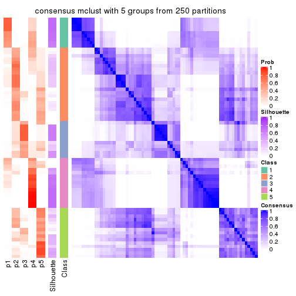
consensus_heatmap(res, k = 6)
Heatmaps for the membership of samples in all partitions to see how consistent they are:
membership_heatmap(res, k = 2)
membership_heatmap(res, k = 3)
membership_heatmap(res, k = 4)
membership_heatmap(res, k = 5)
membership_heatmap(res, k = 6)
As soon as we have had the classes for columns, we can look for signatures which are significantly different between classes which can be candidate marks for certain classes. Following are the heatmaps for signatures.
Signature heatmaps where rows are scaled:
get_signatures(res, k = 2)
get_signatures(res, k = 3)
get_signatures(res, k = 4)
get_signatures(res, k = 5)
get_signatures(res, k = 6)
Signature heatmaps where rows are not scaled:
get_signatures(res, k = 2, scale_rows = FALSE)
get_signatures(res, k = 3, scale_rows = FALSE)
get_signatures(res, k = 4, scale_rows = FALSE)

get_signatures(res, k = 5, scale_rows = FALSE)
get_signatures(res, k = 6, scale_rows = FALSE)
Compare the overlap of signatures from different k:
compare_signatures(res)
get_signature() returns a data frame invisibly. TO get the list of signatures, the function
call should be assigned to a variable explicitly. In following code, if plot argument is set
to FALSE, no heatmap is plotted while only the differential analysis is performed.
# code only for demonstration
tb = get_signature(res, k = ..., plot = FALSE)
An example of the output of tb is:
#> which_row fdr mean_1 mean_2 scaled_mean_1 scaled_mean_2 km
#> 1 38 0.042760348 8.373488 9.131774 -0.5533452 0.5164555 1
#> 2 40 0.018707592 7.106213 8.469186 -0.6173731 0.5762149 1
#> 3 55 0.019134737 10.221463 11.207825 -0.6159697 0.5749050 1
#> 4 59 0.006059896 5.921854 7.869574 -0.6899429 0.6439467 1
#> 5 60 0.018055526 8.928898 10.211722 -0.6204761 0.5791110 1
#> 6 98 0.009384629 15.714769 14.887706 0.6635654 -0.6193277 2
...
The columns in tb are:
which_row: row indices corresponding to the input matrix.fdr: FDR for the differential test. mean_x: The mean value in group x.scaled_mean_x: The mean value in group x after rows are scaled.km: Row groups if k-means clustering is applied to rows.UMAP plot which shows how samples are separated.
dimension_reduction(res, k = 2, method = "UMAP")
dimension_reduction(res, k = 3, method = "UMAP")
dimension_reduction(res, k = 4, method = "UMAP")
dimension_reduction(res, k = 5, method = "UMAP")
dimension_reduction(res, k = 6, method = "UMAP")
Following heatmap shows how subgroups are split when increasing k:
collect_classes(res)
If matrix rows can be associated to genes, consider to use GO_Enrichment(res,
...) to perform function enrichment for the signature genes.
The object with results only for a single top-value method and a single partition method can be extracted as:
res = res_list["SD", "NMF"]
# you can also extract it by
# res = res_list["SD:NMF"]
A summary of res and all the functions that can be applied to it:
res
#> A 'ConsensusPartition' object with k = 2, 3, 4, 5, 6.
#> On a matrix with 13673 rows and 72 columns.
#> Top rows (1000, 2000, 3000, 4000, 5000) are extracted by 'SD' method.
#> Subgroups are detected by 'NMF' method.
#> Performed in total 1250 partitions by row resampling.
#> Best k for subgroups seems to be 2.
#>
#> Following methods can be applied to this 'ConsensusPartition' object:
#> [1] "cola_report" "collect_classes" "collect_plots"
#> [4] "collect_stats" "colnames" "compare_signatures"
#> [7] "consensus_heatmap" "dimension_reduction" "functional_enrichment"
#> [10] "get_anno_col" "get_anno" "get_classes"
#> [13] "get_consensus" "get_matrix" "get_membership"
#> [16] "get_param" "get_signatures" "get_stats"
#> [19] "is_best_k" "is_stable_k" "membership_heatmap"
#> [22] "ncol" "nrow" "plot_ecdf"
#> [25] "rownames" "select_partition_number" "show"
#> [28] "suggest_best_k" "test_to_known_factors"
collect_plots() function collects all the plots made from res for all k (number of partitions)
into one single page to provide an easy and fast comparison between different k.
collect_plots(res)

The plots are:
k and the heatmap of
predicted classes for each k.k.k.k.All the plots in panels can be made by individual functions and they are plotted later in this section.
select_partition_number() produces several plots showing different
statistics for choosing “optimized” k. There are following statistics:
k;k, the area increased is defined as \(A_k - A_{k-1}\).The detailed explanations of these statistics can be found in the cola vignette.
Generally speaking, lower PAC score, higher mean silhouette score or higher
concordance corresponds to better partition. Rand index and Jaccard index
measure how similar the current partition is compared to partition with k-1.
If they are too similar, we won't accept k is better than k-1.
select_partition_number(res)
The numeric values for all these statistics can be obtained by get_stats().
get_stats(res)
#> k 1-PAC mean_silhouette concordance area_increased Rand Jaccard
#> 2 2 0.894 0.942 0.973 0.4786 0.525 0.525
#> 3 3 0.525 0.590 0.785 0.3673 0.772 0.582
#> 4 4 0.524 0.601 0.787 0.1187 0.796 0.497
#> 5 5 0.514 0.469 0.702 0.0639 0.936 0.783
#> 6 6 0.555 0.369 0.664 0.0450 0.888 0.597
suggest_best_k() suggests the best \(k\) based on these statistics. The rules are as follows:
NA.suggest_best_k(res)
#> [1] 2
Following shows the table of the partitions (You need to click the show/hide
code output link to see it). The membership matrix (columns with name p*)
is inferred by
clue::cl_consensus()
function with the SE method. Basically the value in the membership matrix
represents the probability to belong to a certain group. The finall class
label for an item is determined with the group with highest probability it
belongs to.
In get_classes() function, the entropy is calculated from the membership
matrix and the silhouette score is calculated from the consensus matrix.
cbind(get_classes(res, k = 2), get_membership(res, k = 2))
#> class entropy silhouette p1 p2
#> SRR1585486 1 0.0000 0.973 1.000 0.000
#> SRR1585488 1 0.0672 0.969 0.992 0.008
#> SRR1585487 2 0.9815 0.304 0.420 0.580
#> SRR1585489 2 0.0000 0.972 0.000 1.000
#> SRR1585490 1 0.1184 0.964 0.984 0.016
#> SRR1585491 1 0.0000 0.973 1.000 0.000
#> SRR1585492 1 0.0376 0.972 0.996 0.004
#> SRR1585493 2 0.0000 0.972 0.000 1.000
#> SRR1585494 2 0.0000 0.972 0.000 1.000
#> SRR1585496 2 0.7299 0.761 0.204 0.796
#> SRR1585495 2 0.7299 0.761 0.204 0.796
#> SRR1585498 2 0.0000 0.972 0.000 1.000
#> SRR1585497 2 0.0376 0.970 0.004 0.996
#> SRR1585499 1 0.0000 0.973 1.000 0.000
#> SRR1585500 2 0.3584 0.920 0.068 0.932
#> SRR1585501 2 0.0000 0.972 0.000 1.000
#> SRR1585502 2 0.0000 0.972 0.000 1.000
#> SRR1585503 1 0.9358 0.486 0.648 0.352
#> SRR1585504 2 0.1184 0.963 0.016 0.984
#> SRR1585505 1 0.5294 0.856 0.880 0.120
#> SRR1585506 2 0.5629 0.853 0.132 0.868
#> SRR1585508 2 0.0000 0.972 0.000 1.000
#> SRR1585507 2 0.0000 0.972 0.000 1.000
#> SRR1585509 1 0.0000 0.973 1.000 0.000
#> SRR1585510 2 0.0000 0.972 0.000 1.000
#> SRR1585511 2 0.1184 0.963 0.016 0.984
#> SRR1585512 2 0.0000 0.972 0.000 1.000
#> SRR1585513 1 0.0376 0.972 0.996 0.004
#> SRR1585516 2 0.0000 0.972 0.000 1.000
#> SRR1585515 1 0.0938 0.967 0.988 0.012
#> SRR1585514 2 0.0000 0.972 0.000 1.000
#> SRR1585518 2 0.0000 0.972 0.000 1.000
#> SRR1585517 2 0.0938 0.964 0.012 0.988
#> SRR1585519 2 0.0000 0.972 0.000 1.000
#> SRR1585520 2 0.0000 0.972 0.000 1.000
#> SRR1585522 2 0.0000 0.972 0.000 1.000
#> SRR1585521 1 0.0000 0.973 1.000 0.000
#> SRR1585524 1 0.6343 0.814 0.840 0.160
#> SRR1585523 1 0.0938 0.967 0.988 0.012
#> SRR1585525 1 0.0000 0.973 1.000 0.000
#> SRR1585526 2 0.0938 0.965 0.012 0.988
#> SRR1585527 1 0.0000 0.973 1.000 0.000
#> SRR1585528 2 0.0000 0.972 0.000 1.000
#> SRR1585529 2 0.0000 0.972 0.000 1.000
#> SRR1585530 2 0.0376 0.970 0.004 0.996
#> SRR1585531 1 0.0000 0.973 1.000 0.000
#> SRR1585532 2 0.0000 0.972 0.000 1.000
#> SRR1585533 1 0.0000 0.973 1.000 0.000
#> SRR1585534 1 0.0376 0.972 0.996 0.004
#> SRR1585535 2 0.0000 0.972 0.000 1.000
#> SRR1585536 2 0.0672 0.968 0.008 0.992
#> SRR1585537 2 0.4690 0.888 0.100 0.900
#> SRR1585538 1 0.0000 0.973 1.000 0.000
#> SRR1585539 1 0.0000 0.973 1.000 0.000
#> SRR1585541 2 0.0000 0.972 0.000 1.000
#> SRR1585540 2 0.0000 0.972 0.000 1.000
#> SRR1585542 1 0.0000 0.973 1.000 0.000
#> SRR1585543 1 0.0000 0.973 1.000 0.000
#> SRR1585544 2 0.0000 0.972 0.000 1.000
#> SRR1585546 1 0.0000 0.973 1.000 0.000
#> SRR1585545 2 0.0000 0.972 0.000 1.000
#> SRR1585547 1 0.0000 0.973 1.000 0.000
#> SRR1585548 1 0.0000 0.973 1.000 0.000
#> SRR1585549 2 0.0376 0.970 0.004 0.996
#> SRR1585550 1 0.0000 0.973 1.000 0.000
#> SRR1585551 2 0.1414 0.960 0.020 0.980
#> SRR1585552 2 0.0000 0.972 0.000 1.000
#> SRR1585553 2 0.0000 0.972 0.000 1.000
#> SRR1585554 2 0.0000 0.972 0.000 1.000
#> SRR1585555 2 0.0000 0.972 0.000 1.000
#> SRR1585557 2 0.0000 0.972 0.000 1.000
#> SRR1585556 2 0.0000 0.972 0.000 1.000
cbind(get_classes(res, k = 3), get_membership(res, k = 3))
#> class entropy silhouette p1 p2 p3
#> SRR1585486 1 0.0424 0.8670 0.992 0.000 0.008
#> SRR1585488 1 0.2187 0.8582 0.948 0.028 0.024
#> SRR1585487 1 0.8906 0.4165 0.520 0.136 0.344
#> SRR1585489 2 0.0237 0.6758 0.000 0.996 0.004
#> SRR1585490 1 0.5147 0.7500 0.800 0.180 0.020
#> SRR1585491 1 0.1031 0.8656 0.976 0.000 0.024
#> SRR1585492 1 0.0237 0.8670 0.996 0.000 0.004
#> SRR1585493 2 0.0424 0.6754 0.000 0.992 0.008
#> SRR1585494 2 0.2165 0.6510 0.000 0.936 0.064
#> SRR1585496 3 0.3715 0.5560 0.004 0.128 0.868
#> SRR1585495 3 0.6294 0.6655 0.020 0.288 0.692
#> SRR1585498 2 0.1529 0.6650 0.000 0.960 0.040
#> SRR1585497 3 0.6180 0.6670 0.000 0.416 0.584
#> SRR1585499 1 0.0424 0.8667 0.992 0.000 0.008
#> SRR1585500 3 0.3038 0.5313 0.000 0.104 0.896
#> SRR1585501 2 0.3941 0.5070 0.000 0.844 0.156
#> SRR1585502 3 0.6308 -0.2207 0.000 0.492 0.508
#> SRR1585503 2 0.9830 0.1955 0.252 0.408 0.340
#> SRR1585504 3 0.6168 0.6754 0.000 0.412 0.588
#> SRR1585505 1 0.9941 -0.2230 0.376 0.284 0.340
#> SRR1585506 3 0.5988 0.6803 0.000 0.368 0.632
#> SRR1585508 2 0.0424 0.6755 0.000 0.992 0.008
#> SRR1585507 2 0.2796 0.6375 0.000 0.908 0.092
#> SRR1585509 1 0.0424 0.8667 0.992 0.000 0.008
#> SRR1585510 2 0.5926 -0.1449 0.000 0.644 0.356
#> SRR1585511 3 0.6008 0.6696 0.000 0.372 0.628
#> SRR1585512 2 0.0424 0.6754 0.000 0.992 0.008
#> SRR1585513 1 0.1399 0.8644 0.968 0.004 0.028
#> SRR1585516 2 0.6126 0.4089 0.004 0.644 0.352
#> SRR1585515 1 0.5508 0.7393 0.784 0.188 0.028
#> SRR1585514 2 0.4418 0.5903 0.020 0.848 0.132
#> SRR1585518 2 0.0237 0.6758 0.000 0.996 0.004
#> SRR1585517 2 0.8408 0.3231 0.100 0.556 0.344
#> SRR1585519 2 0.1753 0.6623 0.000 0.952 0.048
#> SRR1585520 2 0.4842 0.4054 0.000 0.776 0.224
#> SRR1585522 2 0.6309 -0.5567 0.000 0.504 0.496
#> SRR1585521 1 0.0592 0.8659 0.988 0.000 0.012
#> SRR1585524 1 0.5756 0.7163 0.764 0.208 0.028
#> SRR1585523 1 0.5554 0.7886 0.812 0.112 0.076
#> SRR1585525 1 0.6225 0.4142 0.568 0.000 0.432
#> SRR1585526 3 0.3619 0.5336 0.000 0.136 0.864
#> SRR1585527 1 0.3412 0.8119 0.876 0.000 0.124
#> SRR1585528 2 0.1289 0.6703 0.000 0.968 0.032
#> SRR1585529 2 0.0424 0.6742 0.000 0.992 0.008
#> SRR1585530 3 0.6244 0.6534 0.000 0.440 0.560
#> SRR1585531 1 0.3267 0.8162 0.884 0.000 0.116
#> SRR1585532 2 0.5754 0.4540 0.004 0.700 0.296
#> SRR1585533 1 0.1643 0.8596 0.956 0.000 0.044
#> SRR1585534 1 0.2527 0.8566 0.936 0.020 0.044
#> SRR1585535 2 0.1289 0.6604 0.000 0.968 0.032
#> SRR1585536 3 0.5905 0.6557 0.000 0.352 0.648
#> SRR1585537 3 0.3038 0.5345 0.000 0.104 0.896
#> SRR1585538 1 0.1031 0.8659 0.976 0.000 0.024
#> SRR1585539 1 0.0592 0.8670 0.988 0.000 0.012
#> SRR1585541 2 0.3030 0.6321 0.004 0.904 0.092
#> SRR1585540 2 0.2537 0.6469 0.000 0.920 0.080
#> SRR1585542 1 0.2356 0.8479 0.928 0.000 0.072
#> SRR1585543 1 0.5882 0.5440 0.652 0.000 0.348
#> SRR1585544 3 0.6521 0.3798 0.004 0.496 0.500
#> SRR1585546 1 0.0237 0.8666 0.996 0.000 0.004
#> SRR1585545 2 0.6081 0.4076 0.004 0.652 0.344
#> SRR1585547 1 0.0237 0.8666 0.996 0.000 0.004
#> SRR1585548 1 0.1525 0.8640 0.964 0.004 0.032
#> SRR1585549 3 0.6225 0.6573 0.000 0.432 0.568
#> SRR1585550 1 0.4062 0.7794 0.836 0.000 0.164
#> SRR1585551 3 0.5327 0.6400 0.000 0.272 0.728
#> SRR1585552 2 0.4605 0.4037 0.000 0.796 0.204
#> SRR1585553 2 0.5785 0.2014 0.000 0.668 0.332
#> SRR1585554 3 0.6225 0.5658 0.000 0.432 0.568
#> SRR1585555 3 0.6260 0.6148 0.000 0.448 0.552
#> SRR1585557 2 0.6215 0.2281 0.000 0.572 0.428
#> SRR1585556 2 0.6079 -0.0315 0.000 0.612 0.388
cbind(get_classes(res, k = 4), get_membership(res, k = 4))
#> class entropy silhouette p1 p2 p3 p4
#> SRR1585486 1 0.3400 0.748 0.820 0.000 0.000 0.180
#> SRR1585488 1 0.1059 0.795 0.972 0.012 0.000 0.016
#> SRR1585487 3 0.6002 0.523 0.296 0.012 0.648 0.044
#> SRR1585489 2 0.0524 0.792 0.000 0.988 0.004 0.008
#> SRR1585490 1 0.3400 0.768 0.872 0.064 0.000 0.064
#> SRR1585491 1 0.1637 0.793 0.940 0.000 0.000 0.060
#> SRR1585492 1 0.2281 0.786 0.904 0.000 0.000 0.096
#> SRR1585493 2 0.0336 0.792 0.000 0.992 0.008 0.000
#> SRR1585494 2 0.2345 0.777 0.000 0.900 0.000 0.100
#> SRR1585496 3 0.2988 0.722 0.000 0.112 0.876 0.012
#> SRR1585495 4 0.4807 0.364 0.000 0.024 0.248 0.728
#> SRR1585498 2 0.3080 0.763 0.000 0.880 0.096 0.024
#> SRR1585497 2 0.7459 0.249 0.000 0.508 0.244 0.248
#> SRR1585499 1 0.4933 0.327 0.568 0.000 0.000 0.432
#> SRR1585500 3 0.1297 0.719 0.000 0.020 0.964 0.016
#> SRR1585501 2 0.5331 0.616 0.028 0.724 0.232 0.016
#> SRR1585502 3 0.4010 0.677 0.000 0.156 0.816 0.028
#> SRR1585503 1 0.6624 0.484 0.684 0.076 0.192 0.048
#> SRR1585504 3 0.5816 0.604 0.000 0.224 0.688 0.088
#> SRR1585505 4 0.3523 0.571 0.032 0.112 0.000 0.856
#> SRR1585506 3 0.6316 0.572 0.000 0.184 0.660 0.156
#> SRR1585508 2 0.0859 0.791 0.008 0.980 0.008 0.004
#> SRR1585507 2 0.3208 0.751 0.000 0.848 0.004 0.148
#> SRR1585509 1 0.4933 0.362 0.568 0.000 0.000 0.432
#> SRR1585510 2 0.4411 0.756 0.000 0.812 0.108 0.080
#> SRR1585511 4 0.6980 0.300 0.000 0.332 0.132 0.536
#> SRR1585512 2 0.0524 0.793 0.000 0.988 0.004 0.008
#> SRR1585513 1 0.0188 0.792 0.996 0.000 0.004 0.000
#> SRR1585516 3 0.5088 0.671 0.108 0.020 0.792 0.080
#> SRR1585515 1 0.2418 0.763 0.928 0.024 0.016 0.032
#> SRR1585514 2 0.6683 0.554 0.176 0.688 0.080 0.056
#> SRR1585518 2 0.0859 0.791 0.008 0.980 0.008 0.004
#> SRR1585517 3 0.6080 0.633 0.196 0.024 0.708 0.072
#> SRR1585519 2 0.3108 0.765 0.000 0.872 0.016 0.112
#> SRR1585520 2 0.3335 0.768 0.000 0.860 0.020 0.120
#> SRR1585522 2 0.4679 0.719 0.000 0.772 0.044 0.184
#> SRR1585521 1 0.4843 0.393 0.604 0.000 0.000 0.396
#> SRR1585524 1 0.3441 0.701 0.856 0.120 0.000 0.024
#> SRR1585523 1 0.7261 0.370 0.536 0.196 0.000 0.268
#> SRR1585525 4 0.3626 0.510 0.184 0.004 0.000 0.812
#> SRR1585526 3 0.2021 0.730 0.000 0.056 0.932 0.012
#> SRR1585527 4 0.4331 0.416 0.288 0.000 0.000 0.712
#> SRR1585528 2 0.3047 0.770 0.040 0.900 0.048 0.012
#> SRR1585529 2 0.2076 0.786 0.008 0.932 0.004 0.056
#> SRR1585530 2 0.7120 0.367 0.000 0.564 0.224 0.212
#> SRR1585531 4 0.4996 -0.132 0.484 0.000 0.000 0.516
#> SRR1585532 2 0.9018 -0.153 0.328 0.396 0.200 0.076
#> SRR1585533 4 0.4193 0.433 0.268 0.000 0.000 0.732
#> SRR1585534 1 0.1707 0.776 0.952 0.004 0.020 0.024
#> SRR1585535 2 0.0804 0.793 0.000 0.980 0.008 0.012
#> SRR1585536 4 0.4741 0.346 0.000 0.328 0.004 0.668
#> SRR1585537 3 0.1557 0.707 0.000 0.000 0.944 0.056
#> SRR1585538 1 0.1297 0.782 0.964 0.000 0.016 0.020
#> SRR1585539 1 0.1635 0.796 0.948 0.000 0.008 0.044
#> SRR1585541 2 0.3523 0.751 0.032 0.856 0.000 0.112
#> SRR1585540 2 0.0657 0.792 0.000 0.984 0.004 0.012
#> SRR1585542 1 0.3196 0.763 0.856 0.000 0.008 0.136
#> SRR1585543 3 0.7414 0.155 0.340 0.000 0.480 0.180
#> SRR1585544 4 0.4761 0.365 0.004 0.332 0.000 0.664
#> SRR1585546 1 0.2530 0.777 0.888 0.000 0.000 0.112
#> SRR1585545 3 0.8410 0.376 0.264 0.268 0.440 0.028
#> SRR1585547 1 0.3172 0.750 0.840 0.000 0.000 0.160
#> SRR1585548 1 0.1411 0.784 0.960 0.000 0.020 0.020
#> SRR1585549 3 0.4904 0.649 0.000 0.216 0.744 0.040
#> SRR1585550 4 0.4382 0.405 0.296 0.000 0.000 0.704
#> SRR1585551 3 0.3354 0.721 0.000 0.084 0.872 0.044
#> SRR1585552 2 0.1629 0.792 0.000 0.952 0.024 0.024
#> SRR1585553 2 0.4406 0.588 0.000 0.700 0.000 0.300
#> SRR1585554 4 0.4977 -0.131 0.000 0.460 0.000 0.540
#> SRR1585555 2 0.5932 0.584 0.000 0.696 0.132 0.172
#> SRR1585557 2 0.5630 0.508 0.000 0.608 0.360 0.032
#> SRR1585556 2 0.4406 0.623 0.000 0.700 0.000 0.300
cbind(get_classes(res, k = 5), get_membership(res, k = 5))
#> class entropy silhouette p1 p2 p3 p4 p5
#> SRR1585486 4 0.5592 0.4825 0.328 0.032 0.000 0.604 0.036
#> SRR1585488 4 0.3319 0.7140 0.040 0.008 0.000 0.852 0.100
#> SRR1585487 4 0.7400 -0.4322 0.004 0.024 0.292 0.408 0.272
#> SRR1585489 2 0.0955 0.6377 0.000 0.968 0.004 0.000 0.028
#> SRR1585490 4 0.4204 0.7107 0.096 0.052 0.000 0.812 0.040
#> SRR1585491 4 0.1725 0.7349 0.044 0.000 0.000 0.936 0.020
#> SRR1585492 4 0.5231 0.6121 0.060 0.000 0.036 0.716 0.188
#> SRR1585493 2 0.6064 0.5040 0.012 0.568 0.088 0.004 0.328
#> SRR1585494 2 0.5884 0.5408 0.060 0.568 0.024 0.000 0.348
#> SRR1585496 3 0.3067 0.5511 0.016 0.108 0.864 0.004 0.008
#> SRR1585495 1 0.4801 0.2153 0.604 0.004 0.372 0.000 0.020
#> SRR1585498 2 0.6613 0.4293 0.008 0.468 0.172 0.000 0.352
#> SRR1585497 3 0.7330 0.3184 0.032 0.204 0.448 0.004 0.312
#> SRR1585499 1 0.4307 -0.1526 0.500 0.000 0.000 0.500 0.000
#> SRR1585500 3 0.2831 0.3965 0.008 0.004 0.868 0.004 0.116
#> SRR1585501 2 0.5540 0.3814 0.020 0.656 0.252 0.000 0.072
#> SRR1585502 3 0.5557 0.2831 0.016 0.140 0.684 0.000 0.160
#> SRR1585503 4 0.6590 0.3791 0.008 0.136 0.076 0.644 0.136
#> SRR1585504 3 0.4232 0.5204 0.040 0.152 0.788 0.000 0.020
#> SRR1585505 1 0.5857 0.3392 0.612 0.096 0.004 0.008 0.280
#> SRR1585506 3 0.5932 0.4262 0.200 0.156 0.632 0.000 0.012
#> SRR1585508 2 0.2821 0.6063 0.012 0.896 0.032 0.008 0.052
#> SRR1585507 2 0.6866 0.4990 0.092 0.492 0.060 0.000 0.356
#> SRR1585509 4 0.6374 0.3308 0.300 0.000 0.000 0.504 0.196
#> SRR1585510 2 0.6249 0.5913 0.060 0.652 0.148 0.000 0.140
#> SRR1585511 1 0.6823 0.0603 0.500 0.224 0.260 0.000 0.016
#> SRR1585512 2 0.1419 0.6426 0.016 0.956 0.012 0.000 0.016
#> SRR1585513 4 0.0451 0.7366 0.008 0.000 0.000 0.988 0.004
#> SRR1585516 5 0.7511 0.6129 0.004 0.148 0.232 0.096 0.520
#> SRR1585515 4 0.2446 0.6979 0.000 0.044 0.000 0.900 0.056
#> SRR1585514 2 0.6992 0.4118 0.012 0.608 0.084 0.124 0.172
#> SRR1585518 2 0.2538 0.6141 0.012 0.912 0.024 0.012 0.040
#> SRR1585517 5 0.8328 0.5270 0.000 0.164 0.200 0.272 0.364
#> SRR1585519 2 0.5824 0.5976 0.064 0.684 0.076 0.000 0.176
#> SRR1585520 2 0.3620 0.6245 0.128 0.828 0.012 0.000 0.032
#> SRR1585522 2 0.6503 0.5768 0.196 0.616 0.056 0.000 0.132
#> SRR1585521 4 0.4138 0.3505 0.384 0.000 0.000 0.616 0.000
#> SRR1585524 4 0.4000 0.5399 0.000 0.228 0.000 0.748 0.024
#> SRR1585523 4 0.6845 0.3281 0.360 0.068 0.000 0.492 0.080
#> SRR1585525 1 0.2416 0.6068 0.888 0.000 0.012 0.100 0.000
#> SRR1585526 3 0.2997 0.5413 0.008 0.072 0.880 0.004 0.036
#> SRR1585527 1 0.2773 0.5897 0.836 0.000 0.000 0.164 0.000
#> SRR1585528 2 0.3866 0.5713 0.016 0.832 0.056 0.004 0.092
#> SRR1585529 2 0.2312 0.6399 0.032 0.920 0.012 0.004 0.032
#> SRR1585530 2 0.7282 0.0277 0.348 0.376 0.252 0.000 0.024
#> SRR1585531 1 0.4283 0.0955 0.544 0.000 0.000 0.456 0.000
#> SRR1585532 2 0.7089 -0.1447 0.000 0.504 0.036 0.224 0.236
#> SRR1585533 1 0.2852 0.5821 0.828 0.000 0.000 0.172 0.000
#> SRR1585534 4 0.0794 0.7305 0.000 0.000 0.000 0.972 0.028
#> SRR1585535 2 0.1997 0.6296 0.016 0.932 0.028 0.000 0.024
#> SRR1585536 1 0.5107 0.3671 0.700 0.228 0.048 0.000 0.024
#> SRR1585537 5 0.5087 0.3366 0.016 0.016 0.396 0.000 0.572
#> SRR1585538 4 0.0794 0.7294 0.000 0.000 0.000 0.972 0.028
#> SRR1585539 4 0.0703 0.7360 0.024 0.000 0.000 0.976 0.000
#> SRR1585541 2 0.4480 0.5834 0.152 0.772 0.000 0.016 0.060
#> SRR1585540 2 0.3206 0.6055 0.016 0.868 0.072 0.000 0.044
#> SRR1585542 4 0.4173 0.6900 0.084 0.000 0.060 0.816 0.040
#> SRR1585543 3 0.5524 0.1895 0.092 0.000 0.628 0.276 0.004
#> SRR1585544 1 0.3625 0.5054 0.824 0.144 0.012 0.012 0.008
#> SRR1585546 4 0.2707 0.7047 0.132 0.000 0.000 0.860 0.008
#> SRR1585545 3 0.7108 0.0657 0.000 0.040 0.456 0.156 0.348
#> SRR1585547 4 0.3048 0.6659 0.176 0.000 0.000 0.820 0.004
#> SRR1585548 4 0.1502 0.7290 0.004 0.000 0.000 0.940 0.056
#> SRR1585549 3 0.2788 0.5681 0.008 0.064 0.888 0.000 0.040
#> SRR1585550 1 0.3366 0.5365 0.768 0.000 0.000 0.232 0.000
#> SRR1585551 3 0.1314 0.5344 0.012 0.012 0.960 0.000 0.016
#> SRR1585552 2 0.2610 0.6492 0.020 0.900 0.020 0.000 0.060
#> SRR1585553 2 0.5515 0.4404 0.372 0.572 0.028 0.000 0.028
#> SRR1585554 2 0.7639 0.2904 0.300 0.340 0.044 0.000 0.316
#> SRR1585555 2 0.6698 0.4081 0.244 0.552 0.176 0.000 0.028
#> SRR1585557 2 0.7116 0.2107 0.016 0.404 0.328 0.000 0.252
#> SRR1585556 2 0.6723 0.4404 0.324 0.480 0.012 0.000 0.184
cbind(get_classes(res, k = 6), get_membership(res, k = 6))
#> class entropy silhouette p1 p2 p3 p4 p5 p6
#> SRR1585486 1 0.6298 -0.1867 0.436 0.080 0.000 0.420 0.008 0.056
#> SRR1585488 4 0.6014 0.5354 0.140 0.012 0.004 0.648 0.128 0.068
#> SRR1585487 4 0.6039 0.1510 0.000 0.036 0.096 0.592 0.020 0.256
#> SRR1585489 2 0.4412 0.4409 0.000 0.688 0.000 0.008 0.256 0.048
#> SRR1585490 4 0.6244 0.5111 0.200 0.096 0.000 0.616 0.036 0.052
#> SRR1585491 4 0.2911 0.6363 0.100 0.000 0.000 0.856 0.036 0.008
#> SRR1585492 4 0.8028 0.2571 0.120 0.024 0.072 0.408 0.312 0.064
#> SRR1585493 5 0.6707 0.1922 0.000 0.324 0.136 0.016 0.476 0.048
#> SRR1585494 5 0.3554 0.5026 0.008 0.168 0.008 0.000 0.796 0.020
#> SRR1585496 3 0.2313 0.6229 0.000 0.100 0.884 0.004 0.000 0.012
#> SRR1585495 1 0.5256 0.0779 0.552 0.000 0.372 0.000 0.048 0.028
#> SRR1585498 5 0.5038 0.4682 0.000 0.136 0.164 0.004 0.684 0.012
#> SRR1585497 3 0.7519 0.1699 0.012 0.252 0.344 0.012 0.324 0.056
#> SRR1585499 1 0.3945 0.1039 0.612 0.000 0.000 0.380 0.000 0.008
#> SRR1585500 3 0.3583 0.4560 0.000 0.000 0.800 0.008 0.048 0.144
#> SRR1585501 2 0.4887 0.3841 0.008 0.704 0.212 0.004 0.032 0.040
#> SRR1585502 3 0.7103 0.0285 0.000 0.096 0.432 0.004 0.296 0.172
#> SRR1585503 4 0.5274 0.4224 0.000 0.048 0.028 0.708 0.056 0.160
#> SRR1585504 3 0.3748 0.5649 0.020 0.212 0.756 0.000 0.012 0.000
#> SRR1585505 5 0.4456 0.2681 0.360 0.008 0.000 0.000 0.608 0.024
#> SRR1585506 3 0.5176 0.5032 0.148 0.196 0.648 0.000 0.004 0.004
#> SRR1585508 2 0.1710 0.5628 0.000 0.936 0.020 0.000 0.028 0.016
#> SRR1585507 5 0.2900 0.5194 0.012 0.112 0.004 0.000 0.856 0.016
#> SRR1585509 4 0.6704 0.0777 0.332 0.000 0.000 0.352 0.284 0.032
#> SRR1585510 5 0.5558 0.1634 0.016 0.376 0.056 0.000 0.536 0.016
#> SRR1585511 1 0.6418 -0.2401 0.340 0.316 0.332 0.000 0.012 0.000
#> SRR1585512 2 0.4018 0.3827 0.000 0.656 0.000 0.000 0.324 0.020
#> SRR1585513 4 0.1204 0.6517 0.056 0.000 0.000 0.944 0.000 0.000
#> SRR1585516 6 0.5873 0.6596 0.000 0.100 0.072 0.156 0.016 0.656
#> SRR1585515 4 0.2519 0.6094 0.004 0.068 0.000 0.884 0.000 0.044
#> SRR1585514 2 0.6901 0.0723 0.000 0.404 0.000 0.200 0.328 0.068
#> SRR1585518 2 0.1636 0.5625 0.000 0.936 0.024 0.000 0.036 0.004
#> SRR1585517 4 0.7509 -0.3820 0.000 0.220 0.100 0.368 0.012 0.300
#> SRR1585519 5 0.4303 0.2074 0.000 0.360 0.008 0.000 0.616 0.016
#> SRR1585520 2 0.4792 0.2193 0.012 0.548 0.000 0.000 0.408 0.032
#> SRR1585522 5 0.6300 0.2698 0.184 0.280 0.020 0.000 0.508 0.008
#> SRR1585521 4 0.3862 0.1498 0.476 0.000 0.000 0.524 0.000 0.000
#> SRR1585524 4 0.4729 0.5109 0.064 0.232 0.000 0.688 0.004 0.012
#> SRR1585523 1 0.7324 -0.0377 0.420 0.072 0.000 0.328 0.148 0.032
#> SRR1585525 1 0.2308 0.5429 0.912 0.004 0.044 0.020 0.012 0.008
#> SRR1585526 3 0.3123 0.6040 0.000 0.088 0.836 0.000 0.000 0.076
#> SRR1585527 1 0.1531 0.5660 0.928 0.000 0.000 0.068 0.000 0.004
#> SRR1585528 2 0.2612 0.5446 0.004 0.896 0.032 0.012 0.008 0.048
#> SRR1585529 2 0.4376 0.3054 0.004 0.604 0.000 0.000 0.368 0.024
#> SRR1585530 2 0.6989 -0.1527 0.276 0.372 0.300 0.000 0.048 0.004
#> SRR1585531 1 0.3861 0.2399 0.640 0.000 0.008 0.352 0.000 0.000
#> SRR1585532 2 0.5587 0.2809 0.000 0.648 0.012 0.188 0.024 0.128
#> SRR1585533 1 0.1444 0.5624 0.928 0.000 0.000 0.072 0.000 0.000
#> SRR1585534 4 0.0909 0.6535 0.020 0.000 0.000 0.968 0.000 0.012
#> SRR1585535 2 0.3302 0.5382 0.000 0.824 0.004 0.008 0.136 0.028
#> SRR1585536 1 0.6054 0.1620 0.600 0.060 0.088 0.000 0.240 0.012
#> SRR1585537 6 0.3565 0.6342 0.016 0.016 0.116 0.004 0.020 0.828
#> SRR1585538 4 0.1194 0.6505 0.008 0.000 0.000 0.956 0.004 0.032
#> SRR1585539 4 0.2001 0.6442 0.092 0.000 0.000 0.900 0.004 0.004
#> SRR1585541 2 0.5656 0.4218 0.076 0.652 0.000 0.012 0.204 0.056
#> SRR1585540 2 0.2158 0.5462 0.004 0.912 0.056 0.000 0.016 0.012
#> SRR1585542 4 0.5301 0.5845 0.100 0.000 0.092 0.724 0.044 0.040
#> SRR1585543 3 0.5516 0.2942 0.060 0.008 0.620 0.280 0.008 0.024
#> SRR1585544 1 0.3724 0.4346 0.804 0.136 0.008 0.000 0.040 0.012
#> SRR1585546 4 0.3830 0.5108 0.280 0.004 0.000 0.704 0.004 0.008
#> SRR1585545 5 0.6962 -0.0247 0.000 0.016 0.304 0.160 0.460 0.060
#> SRR1585547 4 0.4124 0.4383 0.332 0.000 0.000 0.648 0.008 0.012
#> SRR1585548 4 0.1647 0.6494 0.008 0.004 0.000 0.940 0.016 0.032
#> SRR1585549 3 0.1934 0.6207 0.000 0.040 0.916 0.000 0.044 0.000
#> SRR1585550 1 0.1970 0.5567 0.900 0.000 0.008 0.092 0.000 0.000
#> SRR1585551 3 0.1639 0.6016 0.008 0.008 0.940 0.000 0.036 0.008
#> SRR1585552 2 0.3529 0.4809 0.000 0.764 0.028 0.000 0.208 0.000
#> SRR1585553 2 0.5892 0.3954 0.224 0.616 0.040 0.000 0.108 0.012
#> SRR1585554 5 0.3756 0.5231 0.092 0.068 0.016 0.000 0.816 0.008
#> SRR1585555 2 0.7694 0.0834 0.212 0.352 0.196 0.000 0.236 0.004
#> SRR1585557 5 0.7570 0.1855 0.000 0.164 0.224 0.004 0.384 0.224
#> SRR1585556 5 0.5714 0.4006 0.180 0.208 0.000 0.000 0.592 0.020
Heatmaps for the consensus matrix. It visualizes the probability of two samples to be in a same group.
consensus_heatmap(res, k = 2)
consensus_heatmap(res, k = 3)
consensus_heatmap(res, k = 4)
consensus_heatmap(res, k = 5)
consensus_heatmap(res, k = 6)
Heatmaps for the membership of samples in all partitions to see how consistent they are:
membership_heatmap(res, k = 2)
membership_heatmap(res, k = 3)
membership_heatmap(res, k = 4)
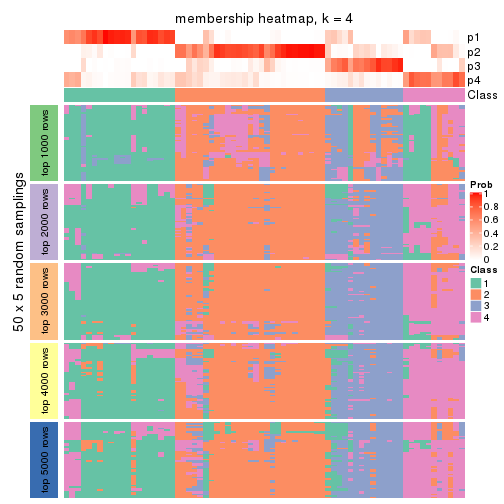
membership_heatmap(res, k = 5)
membership_heatmap(res, k = 6)
As soon as we have had the classes for columns, we can look for signatures which are significantly different between classes which can be candidate marks for certain classes. Following are the heatmaps for signatures.
Signature heatmaps where rows are scaled:
get_signatures(res, k = 2)

get_signatures(res, k = 3)
get_signatures(res, k = 4)
get_signatures(res, k = 5)

get_signatures(res, k = 6)
Signature heatmaps where rows are not scaled:
get_signatures(res, k = 2, scale_rows = FALSE)
get_signatures(res, k = 3, scale_rows = FALSE)
get_signatures(res, k = 4, scale_rows = FALSE)
get_signatures(res, k = 5, scale_rows = FALSE)
get_signatures(res, k = 6, scale_rows = FALSE)
Compare the overlap of signatures from different k:
compare_signatures(res)
get_signature() returns a data frame invisibly. TO get the list of signatures, the function
call should be assigned to a variable explicitly. In following code, if plot argument is set
to FALSE, no heatmap is plotted while only the differential analysis is performed.
# code only for demonstration
tb = get_signature(res, k = ..., plot = FALSE)
An example of the output of tb is:
#> which_row fdr mean_1 mean_2 scaled_mean_1 scaled_mean_2 km
#> 1 38 0.042760348 8.373488 9.131774 -0.5533452 0.5164555 1
#> 2 40 0.018707592 7.106213 8.469186 -0.6173731 0.5762149 1
#> 3 55 0.019134737 10.221463 11.207825 -0.6159697 0.5749050 1
#> 4 59 0.006059896 5.921854 7.869574 -0.6899429 0.6439467 1
#> 5 60 0.018055526 8.928898 10.211722 -0.6204761 0.5791110 1
#> 6 98 0.009384629 15.714769 14.887706 0.6635654 -0.6193277 2
...
The columns in tb are:
which_row: row indices corresponding to the input matrix.fdr: FDR for the differential test. mean_x: The mean value in group x.scaled_mean_x: The mean value in group x after rows are scaled.km: Row groups if k-means clustering is applied to rows.UMAP plot which shows how samples are separated.
dimension_reduction(res, k = 2, method = "UMAP")
dimension_reduction(res, k = 3, method = "UMAP")
dimension_reduction(res, k = 4, method = "UMAP")
dimension_reduction(res, k = 5, method = "UMAP")
dimension_reduction(res, k = 6, method = "UMAP")
Following heatmap shows how subgroups are split when increasing k:
collect_classes(res)
If matrix rows can be associated to genes, consider to use GO_Enrichment(res,
...) to perform function enrichment for the signature genes.
The object with results only for a single top-value method and a single partition method can be extracted as:
res = res_list["CV", "hclust"]
# you can also extract it by
# res = res_list["CV:hclust"]
A summary of res and all the functions that can be applied to it:
res
#> A 'ConsensusPartition' object with k = 2, 3, 4, 5, 6.
#> On a matrix with 13673 rows and 72 columns.
#> Top rows (1000, 2000, 3000, 4000, 5000) are extracted by 'CV' method.
#> Subgroups are detected by 'hclust' method.
#> Performed in total 1250 partitions by row resampling.
#> Best k for subgroups seems to be 3.
#>
#> Following methods can be applied to this 'ConsensusPartition' object:
#> [1] "cola_report" "collect_classes" "collect_plots"
#> [4] "collect_stats" "colnames" "compare_signatures"
#> [7] "consensus_heatmap" "dimension_reduction" "functional_enrichment"
#> [10] "get_anno_col" "get_anno" "get_classes"
#> [13] "get_consensus" "get_matrix" "get_membership"
#> [16] "get_param" "get_signatures" "get_stats"
#> [19] "is_best_k" "is_stable_k" "membership_heatmap"
#> [22] "ncol" "nrow" "plot_ecdf"
#> [25] "rownames" "select_partition_number" "show"
#> [28] "suggest_best_k" "test_to_known_factors"
collect_plots() function collects all the plots made from res for all k (number of partitions)
into one single page to provide an easy and fast comparison between different k.
collect_plots(res)

The plots are:
k and the heatmap of
predicted classes for each k.k.k.k.All the plots in panels can be made by individual functions and they are plotted later in this section.
select_partition_number() produces several plots showing different
statistics for choosing “optimized” k. There are following statistics:
k;k, the area increased is defined as \(A_k - A_{k-1}\).The detailed explanations of these statistics can be found in the cola vignette.
Generally speaking, lower PAC score, higher mean silhouette score or higher
concordance corresponds to better partition. Rand index and Jaccard index
measure how similar the current partition is compared to partition with k-1.
If they are too similar, we won't accept k is better than k-1.
select_partition_number(res)
The numeric values for all these statistics can be obtained by get_stats().
get_stats(res)
#> k 1-PAC mean_silhouette concordance area_increased Rand Jaccard
#> 2 2 0.303 0.541 0.823 0.2614 0.894 0.894
#> 3 3 0.365 0.674 0.840 0.7870 0.593 0.556
#> 4 4 0.316 0.632 0.805 0.1142 0.973 0.950
#> 5 5 0.289 0.513 0.751 0.1209 0.925 0.856
#> 6 6 0.369 0.442 0.742 0.0582 0.917 0.830
suggest_best_k() suggests the best \(k\) based on these statistics. The rules are as follows:
NA.suggest_best_k(res)
#> [1] 3
Following shows the table of the partitions (You need to click the show/hide
code output link to see it). The membership matrix (columns with name p*)
is inferred by
clue::cl_consensus()
function with the SE method. Basically the value in the membership matrix
represents the probability to belong to a certain group. The finall class
label for an item is determined with the group with highest probability it
belongs to.
In get_classes() function, the entropy is calculated from the membership
matrix and the silhouette score is calculated from the consensus matrix.
cbind(get_classes(res, k = 2), get_membership(res, k = 2))
#> class entropy silhouette p1 p2
#> SRR1585486 2 0.9460 0.348 0.364 0.636
#> SRR1585488 2 0.9922 0.137 0.448 0.552
#> SRR1585487 2 0.6247 0.642 0.156 0.844
#> SRR1585489 2 0.0376 0.721 0.004 0.996
#> SRR1585490 2 0.9922 0.137 0.448 0.552
#> SRR1585491 2 0.9896 0.165 0.440 0.560
#> SRR1585492 2 0.8661 0.491 0.288 0.712
#> SRR1585493 2 0.0376 0.722 0.004 0.996
#> SRR1585494 2 0.0000 0.722 0.000 1.000
#> SRR1585496 2 0.5294 0.671 0.120 0.880
#> SRR1585495 2 0.5408 0.669 0.124 0.876
#> SRR1585498 2 0.1184 0.720 0.016 0.984
#> SRR1585497 2 0.0938 0.719 0.012 0.988
#> SRR1585499 1 0.9000 0.726 0.684 0.316
#> SRR1585500 2 0.6973 0.487 0.188 0.812
#> SRR1585501 2 0.0938 0.721 0.012 0.988
#> SRR1585502 2 0.0938 0.718 0.012 0.988
#> SRR1585503 2 0.6531 0.634 0.168 0.832
#> SRR1585504 2 0.0672 0.721 0.008 0.992
#> SRR1585505 2 0.8555 0.499 0.280 0.720
#> SRR1585506 2 0.0672 0.721 0.008 0.992
#> SRR1585508 2 0.0000 0.722 0.000 1.000
#> SRR1585507 2 0.2948 0.710 0.052 0.948
#> SRR1585509 2 0.9944 0.103 0.456 0.544
#> SRR1585510 2 0.0672 0.720 0.008 0.992
#> SRR1585511 2 0.0672 0.721 0.008 0.992
#> SRR1585512 2 0.0938 0.722 0.012 0.988
#> SRR1585513 2 0.9896 0.165 0.440 0.560
#> SRR1585516 2 0.0938 0.723 0.012 0.988
#> SRR1585515 2 0.9170 0.414 0.332 0.668
#> SRR1585514 2 0.2778 0.712 0.048 0.952
#> SRR1585518 2 0.0000 0.722 0.000 1.000
#> SRR1585517 2 0.6148 0.643 0.152 0.848
#> SRR1585519 2 0.0376 0.721 0.004 0.996
#> SRR1585520 2 0.1184 0.722 0.016 0.984
#> SRR1585522 2 0.1184 0.722 0.016 0.984
#> SRR1585521 2 0.9896 0.165 0.440 0.560
#> SRR1585524 2 0.8267 0.529 0.260 0.740
#> SRR1585523 2 0.9552 0.322 0.376 0.624
#> SRR1585525 2 0.9170 0.411 0.332 0.668
#> SRR1585526 2 0.0672 0.721 0.008 0.992
#> SRR1585527 1 0.9000 0.726 0.684 0.316
#> SRR1585528 2 0.0000 0.722 0.000 1.000
#> SRR1585529 2 0.0376 0.721 0.004 0.996
#> SRR1585530 2 0.0000 0.722 0.000 1.000
#> SRR1585531 2 0.9896 0.165 0.440 0.560
#> SRR1585532 2 0.0672 0.722 0.008 0.992
#> SRR1585533 1 0.9000 0.726 0.684 0.316
#> SRR1585534 2 0.9866 0.190 0.432 0.568
#> SRR1585535 2 0.0376 0.721 0.004 0.996
#> SRR1585536 2 0.1184 0.722 0.016 0.984
#> SRR1585537 1 0.8763 0.370 0.704 0.296
#> SRR1585538 2 0.9866 0.190 0.432 0.568
#> SRR1585539 2 0.9896 0.165 0.440 0.560
#> SRR1585541 2 0.8267 0.527 0.260 0.740
#> SRR1585540 2 0.0938 0.715 0.012 0.988
#> SRR1585542 2 0.9866 0.190 0.432 0.568
#> SRR1585543 2 0.9248 0.401 0.340 0.660
#> SRR1585544 2 0.9970 -0.253 0.468 0.532
#> SRR1585546 2 0.9896 0.164 0.440 0.560
#> SRR1585545 2 0.5842 0.658 0.140 0.860
#> SRR1585547 2 0.9944 0.118 0.456 0.544
#> SRR1585548 2 0.9866 0.190 0.432 0.568
#> SRR1585549 2 0.0672 0.721 0.008 0.992
#> SRR1585550 2 0.9323 0.386 0.348 0.652
#> SRR1585551 2 0.0672 0.721 0.008 0.992
#> SRR1585552 2 0.0672 0.720 0.008 0.992
#> SRR1585553 2 0.1184 0.722 0.016 0.984
#> SRR1585554 2 0.1184 0.722 0.016 0.984
#> SRR1585555 2 0.0672 0.720 0.008 0.992
#> SRR1585557 2 0.6887 0.446 0.184 0.816
#> SRR1585556 2 0.0672 0.722 0.008 0.992
cbind(get_classes(res, k = 3), get_membership(res, k = 3))
#> class entropy silhouette p1 p2 p3
#> SRR1585486 1 0.7491 0.2266 0.492 0.472 0.036
#> SRR1585488 1 0.4551 0.7793 0.844 0.132 0.024
#> SRR1585487 2 0.6899 0.3258 0.364 0.612 0.024
#> SRR1585489 2 0.0424 0.8478 0.008 0.992 0.000
#> SRR1585490 1 0.4551 0.7793 0.844 0.132 0.024
#> SRR1585491 1 0.3482 0.7855 0.872 0.128 0.000
#> SRR1585492 2 0.7054 -0.0322 0.456 0.524 0.020
#> SRR1585493 2 0.1315 0.8476 0.020 0.972 0.008
#> SRR1585494 2 0.0983 0.8476 0.016 0.980 0.004
#> SRR1585496 2 0.6973 0.1349 0.416 0.564 0.020
#> SRR1585495 2 0.6984 0.1214 0.420 0.560 0.020
#> SRR1585498 2 0.1636 0.8466 0.016 0.964 0.020
#> SRR1585497 2 0.2383 0.8126 0.016 0.940 0.044
#> SRR1585499 1 0.6172 0.1639 0.680 0.012 0.308
#> SRR1585500 2 0.6295 0.6488 0.072 0.764 0.164
#> SRR1585501 2 0.1781 0.8373 0.020 0.960 0.020
#> SRR1585502 2 0.1267 0.8427 0.004 0.972 0.024
#> SRR1585503 2 0.5977 0.5854 0.252 0.728 0.020
#> SRR1585504 2 0.0829 0.8469 0.004 0.984 0.012
#> SRR1585505 2 0.7039 0.4064 0.312 0.648 0.040
#> SRR1585506 2 0.0829 0.8469 0.004 0.984 0.012
#> SRR1585508 2 0.0424 0.8468 0.000 0.992 0.008
#> SRR1585507 2 0.3213 0.8039 0.092 0.900 0.008
#> SRR1585509 1 0.5538 0.7610 0.808 0.132 0.060
#> SRR1585510 2 0.0237 0.8476 0.000 0.996 0.004
#> SRR1585511 2 0.0829 0.8469 0.004 0.984 0.012
#> SRR1585512 2 0.1399 0.8452 0.028 0.968 0.004
#> SRR1585513 1 0.3412 0.7824 0.876 0.124 0.000
#> SRR1585516 2 0.1163 0.8474 0.028 0.972 0.000
#> SRR1585515 1 0.7583 0.2422 0.492 0.468 0.040
#> SRR1585514 2 0.3459 0.7957 0.096 0.892 0.012
#> SRR1585518 2 0.0424 0.8468 0.000 0.992 0.008
#> SRR1585517 2 0.7158 0.2809 0.372 0.596 0.032
#> SRR1585519 2 0.1129 0.8476 0.020 0.976 0.004
#> SRR1585520 2 0.1711 0.8428 0.032 0.960 0.008
#> SRR1585522 2 0.1453 0.8455 0.024 0.968 0.008
#> SRR1585521 1 0.3482 0.7855 0.872 0.128 0.000
#> SRR1585524 2 0.7209 0.2794 0.360 0.604 0.036
#> SRR1585523 2 0.7890 -0.0976 0.432 0.512 0.056
#> SRR1585525 1 0.7170 0.5734 0.612 0.352 0.036
#> SRR1585526 2 0.0829 0.8469 0.004 0.984 0.012
#> SRR1585527 1 0.6172 0.1639 0.680 0.012 0.308
#> SRR1585528 2 0.0424 0.8468 0.000 0.992 0.008
#> SRR1585529 2 0.0661 0.8474 0.008 0.988 0.004
#> SRR1585530 2 0.0424 0.8468 0.000 0.992 0.008
#> SRR1585531 1 0.4453 0.7894 0.836 0.152 0.012
#> SRR1585532 2 0.1765 0.8426 0.040 0.956 0.004
#> SRR1585533 1 0.6172 0.1639 0.680 0.012 0.308
#> SRR1585534 1 0.4485 0.7849 0.844 0.136 0.020
#> SRR1585535 2 0.0661 0.8484 0.008 0.988 0.004
#> SRR1585536 2 0.1647 0.8427 0.036 0.960 0.004
#> SRR1585537 3 0.2550 0.6499 0.040 0.024 0.936
#> SRR1585538 1 0.5435 0.7647 0.784 0.192 0.024
#> SRR1585539 1 0.3551 0.7871 0.868 0.132 0.000
#> SRR1585541 2 0.6818 0.3449 0.348 0.628 0.024
#> SRR1585540 2 0.2383 0.8106 0.016 0.940 0.044
#> SRR1585542 1 0.4485 0.7849 0.844 0.136 0.020
#> SRR1585543 1 0.5992 0.6918 0.716 0.268 0.016
#> SRR1585544 3 0.6361 0.6020 0.040 0.232 0.728
#> SRR1585546 1 0.5180 0.7872 0.812 0.156 0.032
#> SRR1585545 2 0.6341 0.4711 0.312 0.672 0.016
#> SRR1585547 1 0.5526 0.7681 0.792 0.172 0.036
#> SRR1585548 1 0.5384 0.7675 0.788 0.188 0.024
#> SRR1585549 2 0.0829 0.8469 0.004 0.984 0.012
#> SRR1585550 1 0.6416 0.6960 0.708 0.260 0.032
#> SRR1585551 2 0.0829 0.8469 0.004 0.984 0.012
#> SRR1585552 2 0.0237 0.8476 0.000 0.996 0.004
#> SRR1585553 2 0.1711 0.8428 0.032 0.960 0.008
#> SRR1585554 2 0.2280 0.8335 0.052 0.940 0.008
#> SRR1585555 2 0.0237 0.8476 0.000 0.996 0.004
#> SRR1585557 2 0.5919 0.5229 0.016 0.724 0.260
#> SRR1585556 2 0.1170 0.8468 0.016 0.976 0.008
cbind(get_classes(res, k = 4), get_membership(res, k = 4))
#> class entropy silhouette p1 p2 p3 p4
#> SRR1585486 1 0.6801 0.2576 0.492 0.436 0.020 NA
#> SRR1585488 1 0.3663 0.7778 0.852 0.120 0.020 NA
#> SRR1585487 2 0.7321 0.0700 0.360 0.504 0.008 NA
#> SRR1585489 2 0.0804 0.8149 0.012 0.980 0.000 NA
#> SRR1585490 1 0.3663 0.7778 0.852 0.120 0.020 NA
#> SRR1585491 1 0.2589 0.7846 0.884 0.116 0.000 NA
#> SRR1585492 1 0.7130 0.1871 0.464 0.428 0.008 NA
#> SRR1585493 2 0.2443 0.8014 0.024 0.916 0.000 NA
#> SRR1585494 2 0.2089 0.8050 0.020 0.932 0.000 NA
#> SRR1585496 2 0.6890 -0.0373 0.408 0.496 0.004 NA
#> SRR1585495 2 0.6895 -0.0516 0.412 0.492 0.004 NA
#> SRR1585498 2 0.2467 0.8082 0.024 0.920 0.004 NA
#> SRR1585497 2 0.5309 0.5372 0.004 0.688 0.028 NA
#> SRR1585499 1 0.5511 0.1601 0.620 0.000 0.028 NA
#> SRR1585500 2 0.7337 0.5139 0.044 0.632 0.164 NA
#> SRR1585501 2 0.4854 0.6463 0.020 0.732 0.004 NA
#> SRR1585502 2 0.2861 0.7912 0.012 0.892 0.004 NA
#> SRR1585503 2 0.6014 0.4926 0.260 0.664 0.004 NA
#> SRR1585504 2 0.1674 0.8123 0.012 0.952 0.004 NA
#> SRR1585505 2 0.6410 0.3706 0.312 0.620 0.028 NA
#> SRR1585506 2 0.1575 0.8126 0.012 0.956 0.004 NA
#> SRR1585508 2 0.0469 0.8134 0.000 0.988 0.000 NA
#> SRR1585507 2 0.3301 0.7688 0.092 0.876 0.004 NA
#> SRR1585509 1 0.4671 0.7617 0.812 0.120 0.020 NA
#> SRR1585510 2 0.0844 0.8149 0.004 0.980 0.004 NA
#> SRR1585511 2 0.1362 0.8133 0.012 0.964 0.004 NA
#> SRR1585512 2 0.1296 0.8126 0.028 0.964 0.004 NA
#> SRR1585513 1 0.2530 0.7824 0.888 0.112 0.000 NA
#> SRR1585516 2 0.1488 0.8130 0.032 0.956 0.000 NA
#> SRR1585515 1 0.6766 0.2753 0.496 0.432 0.016 NA
#> SRR1585514 2 0.3450 0.7547 0.108 0.864 0.004 NA
#> SRR1585518 2 0.0469 0.8134 0.000 0.988 0.000 NA
#> SRR1585517 2 0.7545 -0.0585 0.364 0.464 0.004 NA
#> SRR1585519 2 0.1082 0.8145 0.020 0.972 0.004 NA
#> SRR1585520 2 0.1639 0.8093 0.036 0.952 0.008 NA
#> SRR1585522 2 0.1443 0.8123 0.028 0.960 0.008 NA
#> SRR1585521 1 0.2589 0.7846 0.884 0.116 0.000 NA
#> SRR1585524 2 0.6621 0.2127 0.368 0.564 0.024 NA
#> SRR1585523 2 0.7097 -0.1146 0.432 0.480 0.028 NA
#> SRR1585525 1 0.6812 0.6146 0.612 0.288 0.024 NA
#> SRR1585526 2 0.1771 0.8127 0.012 0.948 0.004 NA
#> SRR1585527 1 0.5478 0.1743 0.628 0.000 0.028 NA
#> SRR1585528 2 0.0469 0.8134 0.000 0.988 0.000 NA
#> SRR1585529 2 0.0712 0.8137 0.008 0.984 0.004 NA
#> SRR1585530 2 0.0469 0.8134 0.000 0.988 0.000 NA
#> SRR1585531 1 0.3847 0.7864 0.844 0.124 0.012 NA
#> SRR1585532 2 0.1661 0.8087 0.052 0.944 0.004 NA
#> SRR1585533 1 0.5511 0.1601 0.620 0.000 0.028 NA
#> SRR1585534 1 0.3598 0.7827 0.848 0.124 0.000 NA
#> SRR1585535 2 0.0804 0.8154 0.012 0.980 0.000 NA
#> SRR1585536 2 0.1639 0.8098 0.036 0.952 0.004 NA
#> SRR1585537 3 0.0469 0.8177 0.000 0.012 0.988 NA
#> SRR1585538 1 0.5069 0.7589 0.776 0.124 0.004 NA
#> SRR1585539 1 0.2647 0.7854 0.880 0.120 0.000 NA
#> SRR1585541 2 0.6220 0.3054 0.348 0.600 0.020 NA
#> SRR1585540 2 0.5004 0.3430 0.000 0.604 0.004 NA
#> SRR1585542 1 0.3497 0.7835 0.852 0.124 0.000 NA
#> SRR1585543 1 0.5850 0.7166 0.708 0.188 0.004 NA
#> SRR1585544 3 0.5835 0.8077 0.016 0.116 0.736 NA
#> SRR1585546 1 0.4498 0.7834 0.816 0.124 0.012 NA
#> SRR1585545 2 0.7049 0.2735 0.316 0.552 0.004 NA
#> SRR1585547 1 0.4603 0.7649 0.796 0.160 0.012 NA
#> SRR1585548 1 0.4946 0.7629 0.784 0.124 0.004 NA
#> SRR1585549 2 0.1674 0.8123 0.012 0.952 0.004 NA
#> SRR1585550 1 0.5937 0.7192 0.704 0.180 0.004 NA
#> SRR1585551 2 0.1575 0.8126 0.012 0.956 0.004 NA
#> SRR1585552 2 0.0844 0.8149 0.004 0.980 0.004 NA
#> SRR1585553 2 0.1690 0.8094 0.032 0.952 0.008 NA
#> SRR1585554 2 0.2140 0.8010 0.052 0.932 0.008 NA
#> SRR1585555 2 0.0844 0.8149 0.004 0.980 0.004 NA
#> SRR1585557 2 0.6521 0.4174 0.000 0.620 0.256 NA
#> SRR1585556 2 0.1229 0.8137 0.020 0.968 0.008 NA
cbind(get_classes(res, k = 5), get_membership(res, k = 5))
#> class entropy silhouette p1 p2 p3 p4 p5
#> SRR1585486 1 0.5872 0.2397 0.480 0.432 0.000 0.084 0.004
#> SRR1585488 1 0.3354 0.7030 0.844 0.088 0.000 0.068 0.000
#> SRR1585487 2 0.7052 0.0166 0.376 0.448 0.004 0.140 0.032
#> SRR1585489 2 0.1074 0.6268 0.016 0.968 0.000 0.012 0.004
#> SRR1585490 1 0.3354 0.7030 0.844 0.088 0.000 0.068 0.000
#> SRR1585491 1 0.1892 0.7378 0.916 0.080 0.000 0.004 0.000
#> SRR1585492 1 0.7030 0.1734 0.460 0.388 0.004 0.080 0.068
#> SRR1585493 2 0.3970 0.4265 0.024 0.752 0.000 0.000 0.224
#> SRR1585494 2 0.3586 0.4758 0.020 0.792 0.000 0.000 0.188
#> SRR1585496 2 0.6579 -0.0299 0.416 0.460 0.000 0.084 0.040
#> SRR1585495 2 0.6781 -0.0533 0.416 0.448 0.004 0.096 0.036
#> SRR1585498 2 0.3699 0.5700 0.028 0.836 0.004 0.020 0.112
#> SRR1585497 5 0.5766 0.5674 0.016 0.464 0.028 0.012 0.480
#> SRR1585499 4 0.4161 0.9689 0.392 0.000 0.000 0.608 0.000
#> SRR1585500 2 0.8540 -0.2856 0.040 0.464 0.156 0.148 0.192
#> SRR1585501 5 0.5146 0.5192 0.020 0.432 0.000 0.012 0.536
#> SRR1585502 2 0.5252 0.3557 0.016 0.728 0.008 0.092 0.156
#> SRR1585503 2 0.5870 0.3373 0.272 0.624 0.004 0.084 0.016
#> SRR1585504 2 0.3562 0.5132 0.016 0.788 0.000 0.000 0.196
#> SRR1585505 2 0.5555 0.2640 0.304 0.616 0.004 0.072 0.004
#> SRR1585506 2 0.3492 0.5203 0.016 0.796 0.000 0.000 0.188
#> SRR1585508 2 0.1197 0.6096 0.000 0.952 0.000 0.000 0.048
#> SRR1585507 2 0.3039 0.5842 0.092 0.872 0.004 0.024 0.008
#> SRR1585509 1 0.4104 0.6337 0.788 0.088 0.000 0.124 0.000
#> SRR1585510 2 0.2660 0.5765 0.008 0.864 0.000 0.000 0.128
#> SRR1585511 2 0.3419 0.5280 0.016 0.804 0.000 0.000 0.180
#> SRR1585512 2 0.0955 0.6258 0.028 0.968 0.004 0.000 0.000
#> SRR1585513 1 0.1956 0.7317 0.916 0.076 0.000 0.008 0.000
#> SRR1585516 2 0.1630 0.6304 0.036 0.944 0.000 0.016 0.004
#> SRR1585515 1 0.5856 0.3453 0.504 0.396 0.000 0.100 0.000
#> SRR1585514 2 0.3621 0.5564 0.124 0.832 0.004 0.032 0.008
#> SRR1585518 2 0.1197 0.6096 0.000 0.952 0.000 0.000 0.048
#> SRR1585517 2 0.7261 -0.1508 0.392 0.400 0.004 0.172 0.032
#> SRR1585519 2 0.0771 0.6251 0.020 0.976 0.004 0.000 0.000
#> SRR1585520 2 0.1710 0.6247 0.040 0.940 0.004 0.016 0.000
#> SRR1585522 2 0.1843 0.6305 0.032 0.940 0.004 0.012 0.012
#> SRR1585521 1 0.1892 0.7378 0.916 0.080 0.000 0.004 0.000
#> SRR1585524 2 0.5762 0.0973 0.384 0.532 0.004 0.080 0.000
#> SRR1585523 2 0.6060 -0.1898 0.436 0.468 0.004 0.088 0.004
#> SRR1585525 1 0.5774 0.5651 0.632 0.248 0.000 0.108 0.012
#> SRR1585526 2 0.3874 0.5081 0.016 0.776 0.000 0.008 0.200
#> SRR1585527 4 0.4235 0.9465 0.424 0.000 0.000 0.576 0.000
#> SRR1585528 2 0.1197 0.6096 0.000 0.952 0.000 0.000 0.048
#> SRR1585529 2 0.0451 0.6204 0.008 0.988 0.004 0.000 0.000
#> SRR1585530 2 0.1197 0.6096 0.000 0.952 0.000 0.000 0.048
#> SRR1585531 1 0.3090 0.7395 0.860 0.088 0.000 0.052 0.000
#> SRR1585532 2 0.1768 0.6195 0.072 0.924 0.004 0.000 0.000
#> SRR1585533 4 0.4138 0.9628 0.384 0.000 0.000 0.616 0.000
#> SRR1585534 1 0.2712 0.7406 0.880 0.088 0.000 0.032 0.000
#> SRR1585535 2 0.0960 0.6254 0.016 0.972 0.000 0.004 0.008
#> SRR1585536 2 0.1812 0.6257 0.036 0.940 0.004 0.008 0.012
#> SRR1585537 3 0.0451 0.7623 0.000 0.008 0.988 0.004 0.000
#> SRR1585538 1 0.4089 0.7093 0.804 0.088 0.000 0.100 0.008
#> SRR1585539 1 0.2077 0.7417 0.908 0.084 0.000 0.008 0.000
#> SRR1585541 2 0.5531 0.2393 0.340 0.592 0.004 0.060 0.004
#> SRR1585540 5 0.4880 0.3444 0.036 0.252 0.000 0.016 0.696
#> SRR1585542 1 0.2628 0.7418 0.884 0.088 0.000 0.028 0.000
#> SRR1585543 1 0.5054 0.6681 0.732 0.144 0.004 0.112 0.008
#> SRR1585544 3 0.6657 0.7565 0.036 0.088 0.668 0.120 0.088
#> SRR1585546 1 0.3593 0.7238 0.828 0.088 0.000 0.084 0.000
#> SRR1585545 2 0.7267 0.1666 0.312 0.500 0.004 0.104 0.080
#> SRR1585547 1 0.3734 0.6994 0.812 0.128 0.000 0.060 0.000
#> SRR1585548 1 0.3983 0.7145 0.812 0.088 0.000 0.092 0.008
#> SRR1585549 2 0.3596 0.5107 0.016 0.784 0.000 0.000 0.200
#> SRR1585550 1 0.5113 0.6682 0.732 0.144 0.004 0.108 0.012
#> SRR1585551 2 0.3562 0.5135 0.016 0.788 0.000 0.000 0.196
#> SRR1585552 2 0.2660 0.5765 0.008 0.864 0.000 0.000 0.128
#> SRR1585553 2 0.1547 0.6213 0.032 0.948 0.004 0.016 0.000
#> SRR1585554 2 0.1830 0.6167 0.052 0.932 0.004 0.012 0.000
#> SRR1585555 2 0.2660 0.5765 0.008 0.864 0.000 0.000 0.128
#> SRR1585557 2 0.7789 -0.3719 0.000 0.456 0.248 0.100 0.196
#> SRR1585556 2 0.1533 0.6278 0.024 0.952 0.004 0.016 0.004
cbind(get_classes(res, k = 6), get_membership(res, k = 6))
#> class entropy silhouette p1 p2 p3 p4 p5 p6
#> SRR1585486 2 0.6205 -0.19208 0.408 0.428 0.036 0.000 0.000 0.128
#> SRR1585488 1 0.3939 0.66247 0.752 0.068 0.000 0.000 0.000 0.180
#> SRR1585487 2 0.6581 -0.02514 0.364 0.440 0.148 0.008 0.000 0.040
#> SRR1585489 2 0.0767 0.59248 0.008 0.976 0.012 0.000 0.000 0.004
#> SRR1585490 1 0.3939 0.66247 0.752 0.068 0.000 0.000 0.000 0.180
#> SRR1585491 1 0.2046 0.73838 0.908 0.060 0.000 0.000 0.000 0.032
#> SRR1585492 1 0.6355 0.11732 0.448 0.356 0.168 0.004 0.000 0.024
#> SRR1585493 2 0.3744 0.36583 0.016 0.724 0.256 0.004 0.000 0.000
#> SRR1585494 2 0.3376 0.41762 0.016 0.764 0.220 0.000 0.000 0.000
#> SRR1585496 2 0.5994 -0.12431 0.420 0.428 0.136 0.004 0.000 0.012
#> SRR1585495 1 0.6067 0.06033 0.420 0.416 0.148 0.004 0.000 0.012
#> SRR1585498 2 0.3638 0.50926 0.020 0.816 0.124 0.032 0.000 0.008
#> SRR1585497 2 0.7112 -0.57469 0.012 0.324 0.320 0.312 0.024 0.008
#> SRR1585499 6 0.2260 0.86448 0.140 0.000 0.000 0.000 0.000 0.860
#> SRR1585500 3 0.7897 0.14153 0.052 0.352 0.372 0.088 0.124 0.012
#> SRR1585501 3 0.6258 -0.02291 0.016 0.352 0.428 0.204 0.000 0.000
#> SRR1585502 2 0.5464 0.00165 0.012 0.636 0.224 0.116 0.000 0.012
#> SRR1585503 2 0.5447 0.23621 0.256 0.616 0.108 0.004 0.000 0.016
#> SRR1585504 2 0.3616 0.45626 0.012 0.748 0.232 0.008 0.000 0.000
#> SRR1585505 2 0.5673 0.19898 0.244 0.620 0.048 0.000 0.004 0.084
#> SRR1585506 2 0.3481 0.46418 0.012 0.756 0.228 0.004 0.000 0.000
#> SRR1585508 2 0.1327 0.57958 0.000 0.936 0.064 0.000 0.000 0.000
#> SRR1585507 2 0.2729 0.54603 0.080 0.876 0.032 0.000 0.004 0.008
#> SRR1585509 1 0.4422 0.58569 0.680 0.068 0.000 0.000 0.000 0.252
#> SRR1585510 2 0.2743 0.53050 0.008 0.828 0.164 0.000 0.000 0.000
#> SRR1585511 2 0.3287 0.47664 0.012 0.768 0.220 0.000 0.000 0.000
#> SRR1585512 2 0.0692 0.59168 0.020 0.976 0.000 0.000 0.004 0.000
#> SRR1585513 1 0.2058 0.73386 0.908 0.056 0.000 0.000 0.000 0.036
#> SRR1585516 2 0.1313 0.59457 0.028 0.952 0.016 0.000 0.000 0.004
#> SRR1585515 1 0.6406 0.22596 0.432 0.392 0.040 0.004 0.000 0.132
#> SRR1585514 2 0.3165 0.51090 0.116 0.836 0.040 0.000 0.000 0.008
#> SRR1585518 2 0.1327 0.57958 0.000 0.936 0.064 0.000 0.000 0.000
#> SRR1585517 2 0.7271 -0.13233 0.352 0.400 0.156 0.032 0.000 0.060
#> SRR1585519 2 0.0508 0.59144 0.012 0.984 0.000 0.000 0.004 0.000
#> SRR1585520 2 0.1390 0.58924 0.032 0.948 0.016 0.000 0.004 0.000
#> SRR1585522 2 0.1405 0.59547 0.024 0.948 0.024 0.000 0.004 0.000
#> SRR1585521 1 0.1970 0.73900 0.912 0.060 0.000 0.000 0.000 0.028
#> SRR1585524 2 0.6194 0.10771 0.320 0.532 0.048 0.004 0.004 0.092
#> SRR1585523 2 0.6349 -0.06814 0.348 0.468 0.032 0.000 0.004 0.148
#> SRR1585525 1 0.5924 0.57159 0.600 0.232 0.080 0.000 0.000 0.088
#> SRR1585526 2 0.3763 0.44766 0.012 0.736 0.240 0.012 0.000 0.000
#> SRR1585527 6 0.3221 0.77295 0.264 0.000 0.000 0.000 0.000 0.736
#> SRR1585528 2 0.1327 0.57958 0.000 0.936 0.064 0.000 0.000 0.000
#> SRR1585529 2 0.0291 0.58733 0.000 0.992 0.000 0.004 0.004 0.000
#> SRR1585530 2 0.1327 0.57958 0.000 0.936 0.064 0.000 0.000 0.000
#> SRR1585531 1 0.3265 0.73417 0.836 0.068 0.008 0.000 0.000 0.088
#> SRR1585532 2 0.1471 0.58307 0.064 0.932 0.000 0.000 0.004 0.000
#> SRR1585533 6 0.1957 0.83616 0.112 0.000 0.000 0.000 0.000 0.888
#> SRR1585534 1 0.2487 0.74054 0.892 0.068 0.008 0.004 0.000 0.028
#> SRR1585535 2 0.0665 0.59168 0.008 0.980 0.008 0.000 0.000 0.004
#> SRR1585536 2 0.1716 0.59220 0.036 0.932 0.028 0.000 0.004 0.000
#> SRR1585537 5 0.0000 0.66908 0.000 0.000 0.000 0.000 1.000 0.000
#> SRR1585538 1 0.3930 0.71209 0.812 0.068 0.056 0.004 0.000 0.060
#> SRR1585539 1 0.2030 0.74216 0.908 0.064 0.000 0.000 0.000 0.028
#> SRR1585541 2 0.5452 0.16627 0.312 0.592 0.036 0.000 0.004 0.056
#> SRR1585540 4 0.4671 0.00000 0.000 0.152 0.160 0.688 0.000 0.000
#> SRR1585542 1 0.2088 0.74168 0.904 0.068 0.000 0.000 0.000 0.028
#> SRR1585543 1 0.4689 0.68719 0.740 0.112 0.116 0.004 0.000 0.028
#> SRR1585544 5 0.6676 0.64045 0.052 0.072 0.172 0.048 0.624 0.032
#> SRR1585546 1 0.3949 0.70354 0.772 0.068 0.008 0.000 0.000 0.152
#> SRR1585545 2 0.6102 -0.01719 0.316 0.464 0.212 0.004 0.000 0.004
#> SRR1585547 1 0.4256 0.68296 0.744 0.112 0.004 0.000 0.000 0.140
#> SRR1585548 1 0.3608 0.72083 0.832 0.068 0.036 0.004 0.000 0.060
#> SRR1585549 2 0.3559 0.45326 0.012 0.744 0.240 0.004 0.000 0.000
#> SRR1585550 1 0.4795 0.68470 0.732 0.104 0.128 0.004 0.000 0.032
#> SRR1585551 2 0.3584 0.44580 0.012 0.740 0.244 0.004 0.000 0.000
#> SRR1585552 2 0.2706 0.53292 0.008 0.832 0.160 0.000 0.000 0.000
#> SRR1585553 2 0.1232 0.58624 0.024 0.956 0.016 0.000 0.004 0.000
#> SRR1585554 2 0.1578 0.58035 0.048 0.936 0.012 0.000 0.004 0.000
#> SRR1585555 2 0.2706 0.53292 0.008 0.832 0.160 0.000 0.000 0.000
#> SRR1585557 2 0.7775 -0.58509 0.008 0.364 0.292 0.112 0.212 0.012
#> SRR1585556 2 0.1148 0.59289 0.016 0.960 0.020 0.000 0.004 0.000
Heatmaps for the consensus matrix. It visualizes the probability of two samples to be in a same group.
consensus_heatmap(res, k = 2)
consensus_heatmap(res, k = 3)
consensus_heatmap(res, k = 4)

consensus_heatmap(res, k = 5)

consensus_heatmap(res, k = 6)
Heatmaps for the membership of samples in all partitions to see how consistent they are:
membership_heatmap(res, k = 2)
membership_heatmap(res, k = 3)
membership_heatmap(res, k = 4)
membership_heatmap(res, k = 5)
membership_heatmap(res, k = 6)
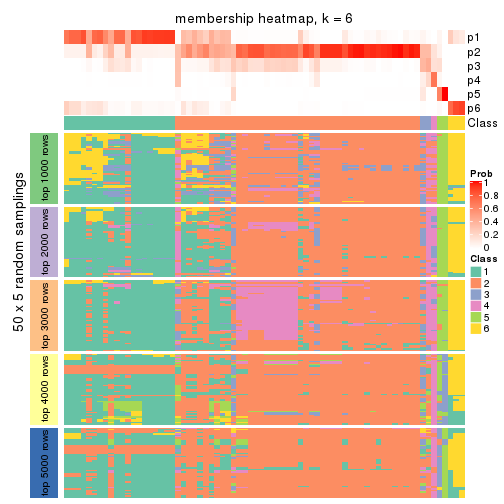
As soon as we have had the classes for columns, we can look for signatures which are significantly different between classes which can be candidate marks for certain classes. Following are the heatmaps for signatures.
Signature heatmaps where rows are scaled:
get_signatures(res, k = 2)
get_signatures(res, k = 3)
get_signatures(res, k = 4)
get_signatures(res, k = 5)
get_signatures(res, k = 6)
Signature heatmaps where rows are not scaled:
get_signatures(res, k = 2, scale_rows = FALSE)
get_signatures(res, k = 3, scale_rows = FALSE)
get_signatures(res, k = 4, scale_rows = FALSE)
get_signatures(res, k = 5, scale_rows = FALSE)
get_signatures(res, k = 6, scale_rows = FALSE)
Compare the overlap of signatures from different k:
compare_signatures(res)
get_signature() returns a data frame invisibly. TO get the list of signatures, the function
call should be assigned to a variable explicitly. In following code, if plot argument is set
to FALSE, no heatmap is plotted while only the differential analysis is performed.
# code only for demonstration
tb = get_signature(res, k = ..., plot = FALSE)
An example of the output of tb is:
#> which_row fdr mean_1 mean_2 scaled_mean_1 scaled_mean_2 km
#> 1 38 0.042760348 8.373488 9.131774 -0.5533452 0.5164555 1
#> 2 40 0.018707592 7.106213 8.469186 -0.6173731 0.5762149 1
#> 3 55 0.019134737 10.221463 11.207825 -0.6159697 0.5749050 1
#> 4 59 0.006059896 5.921854 7.869574 -0.6899429 0.6439467 1
#> 5 60 0.018055526 8.928898 10.211722 -0.6204761 0.5791110 1
#> 6 98 0.009384629 15.714769 14.887706 0.6635654 -0.6193277 2
...
The columns in tb are:
which_row: row indices corresponding to the input matrix.fdr: FDR for the differential test. mean_x: The mean value in group x.scaled_mean_x: The mean value in group x after rows are scaled.km: Row groups if k-means clustering is applied to rows.UMAP plot which shows how samples are separated.
dimension_reduction(res, k = 2, method = "UMAP")
dimension_reduction(res, k = 3, method = "UMAP")
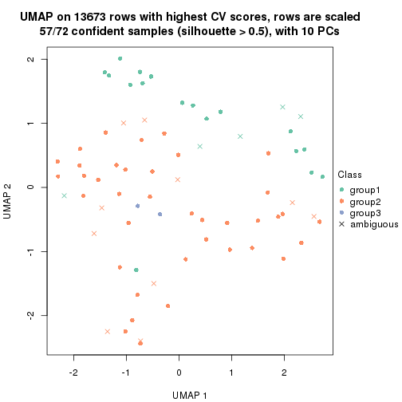
dimension_reduction(res, k = 4, method = "UMAP")
dimension_reduction(res, k = 5, method = "UMAP")
dimension_reduction(res, k = 6, method = "UMAP")
Following heatmap shows how subgroups are split when increasing k:
collect_classes(res)
If matrix rows can be associated to genes, consider to use GO_Enrichment(res,
...) to perform function enrichment for the signature genes.
The object with results only for a single top-value method and a single partition method can be extracted as:
res = res_list["CV", "kmeans"]
# you can also extract it by
# res = res_list["CV:kmeans"]
A summary of res and all the functions that can be applied to it:
res
#> A 'ConsensusPartition' object with k = 2, 3, 4, 5, 6.
#> On a matrix with 13673 rows and 72 columns.
#> Top rows (1000, 2000, 3000, 4000, 5000) are extracted by 'CV' method.
#> Subgroups are detected by 'kmeans' method.
#> Performed in total 1250 partitions by row resampling.
#> Best k for subgroups seems to be 2.
#>
#> Following methods can be applied to this 'ConsensusPartition' object:
#> [1] "cola_report" "collect_classes" "collect_plots"
#> [4] "collect_stats" "colnames" "compare_signatures"
#> [7] "consensus_heatmap" "dimension_reduction" "functional_enrichment"
#> [10] "get_anno_col" "get_anno" "get_classes"
#> [13] "get_consensus" "get_matrix" "get_membership"
#> [16] "get_param" "get_signatures" "get_stats"
#> [19] "is_best_k" "is_stable_k" "membership_heatmap"
#> [22] "ncol" "nrow" "plot_ecdf"
#> [25] "rownames" "select_partition_number" "show"
#> [28] "suggest_best_k" "test_to_known_factors"
collect_plots() function collects all the plots made from res for all k (number of partitions)
into one single page to provide an easy and fast comparison between different k.
collect_plots(res)
The plots are:
k and the heatmap of
predicted classes for each k.k.k.k.All the plots in panels can be made by individual functions and they are plotted later in this section.
select_partition_number() produces several plots showing different
statistics for choosing “optimized” k. There are following statistics:
k;k, the area increased is defined as \(A_k - A_{k-1}\).The detailed explanations of these statistics can be found in the cola vignette.
Generally speaking, lower PAC score, higher mean silhouette score or higher
concordance corresponds to better partition. Rand index and Jaccard index
measure how similar the current partition is compared to partition with k-1.
If they are too similar, we won't accept k is better than k-1.
select_partition_number(res)
The numeric values for all these statistics can be obtained by get_stats().
get_stats(res)
#> k 1-PAC mean_silhouette concordance area_increased Rand Jaccard
#> 2 2 1.000 0.950 0.977 0.4615 0.525 0.525
#> 3 3 0.586 0.608 0.767 0.3195 0.860 0.736
#> 4 4 0.522 0.535 0.730 0.1267 0.808 0.583
#> 5 5 0.525 0.527 0.704 0.0832 0.931 0.796
#> 6 6 0.551 0.530 0.676 0.0534 0.911 0.690
suggest_best_k() suggests the best \(k\) based on these statistics. The rules are as follows:
NA.suggest_best_k(res)
#> [1] 2
Following shows the table of the partitions (You need to click the show/hide
code output link to see it). The membership matrix (columns with name p*)
is inferred by
clue::cl_consensus()
function with the SE method. Basically the value in the membership matrix
represents the probability to belong to a certain group. The finall class
label for an item is determined with the group with highest probability it
belongs to.
In get_classes() function, the entropy is calculated from the membership
matrix and the silhouette score is calculated from the consensus matrix.
cbind(get_classes(res, k = 2), get_membership(res, k = 2))
#> class entropy silhouette p1 p2
#> SRR1585486 1 0.0938 0.947 0.988 0.012
#> SRR1585488 1 0.0938 0.947 0.988 0.012
#> SRR1585487 2 0.0000 0.999 0.000 1.000
#> SRR1585489 2 0.0000 0.999 0.000 1.000
#> SRR1585490 1 0.0938 0.947 0.988 0.012
#> SRR1585491 1 0.0938 0.947 0.988 0.012
#> SRR1585492 1 0.1184 0.944 0.984 0.016
#> SRR1585493 2 0.0000 0.999 0.000 1.000
#> SRR1585494 2 0.0000 0.999 0.000 1.000
#> SRR1585496 2 0.0000 0.999 0.000 1.000
#> SRR1585495 2 0.0000 0.999 0.000 1.000
#> SRR1585498 2 0.0000 0.999 0.000 1.000
#> SRR1585497 2 0.0000 0.999 0.000 1.000
#> SRR1585499 1 0.0376 0.941 0.996 0.004
#> SRR1585500 2 0.0672 0.992 0.008 0.992
#> SRR1585501 2 0.0000 0.999 0.000 1.000
#> SRR1585502 2 0.0000 0.999 0.000 1.000
#> SRR1585503 1 0.9815 0.343 0.580 0.420
#> SRR1585504 2 0.0000 0.999 0.000 1.000
#> SRR1585505 1 1.0000 0.108 0.504 0.496
#> SRR1585506 2 0.0000 0.999 0.000 1.000
#> SRR1585508 2 0.0000 0.999 0.000 1.000
#> SRR1585507 2 0.0000 0.999 0.000 1.000
#> SRR1585509 1 0.0938 0.947 0.988 0.012
#> SRR1585510 2 0.0000 0.999 0.000 1.000
#> SRR1585511 2 0.0000 0.999 0.000 1.000
#> SRR1585512 2 0.0000 0.999 0.000 1.000
#> SRR1585513 1 0.0938 0.947 0.988 0.012
#> SRR1585516 2 0.0000 0.999 0.000 1.000
#> SRR1585515 1 0.0938 0.947 0.988 0.012
#> SRR1585514 2 0.0000 0.999 0.000 1.000
#> SRR1585518 2 0.0000 0.999 0.000 1.000
#> SRR1585517 2 0.0000 0.999 0.000 1.000
#> SRR1585519 2 0.0000 0.999 0.000 1.000
#> SRR1585520 2 0.0000 0.999 0.000 1.000
#> SRR1585522 2 0.0000 0.999 0.000 1.000
#> SRR1585521 1 0.0938 0.947 0.988 0.012
#> SRR1585524 1 0.9850 0.322 0.572 0.428
#> SRR1585523 1 0.0938 0.947 0.988 0.012
#> SRR1585525 1 0.0938 0.947 0.988 0.012
#> SRR1585526 2 0.0000 0.999 0.000 1.000
#> SRR1585527 1 0.0376 0.941 0.996 0.004
#> SRR1585528 2 0.0000 0.999 0.000 1.000
#> SRR1585529 2 0.0000 0.999 0.000 1.000
#> SRR1585530 2 0.0000 0.999 0.000 1.000
#> SRR1585531 1 0.0938 0.947 0.988 0.012
#> SRR1585532 2 0.0000 0.999 0.000 1.000
#> SRR1585533 1 0.0376 0.941 0.996 0.004
#> SRR1585534 1 0.0938 0.947 0.988 0.012
#> SRR1585535 2 0.0000 0.999 0.000 1.000
#> SRR1585536 2 0.0000 0.999 0.000 1.000
#> SRR1585537 2 0.0938 0.988 0.012 0.988
#> SRR1585538 1 0.0938 0.947 0.988 0.012
#> SRR1585539 1 0.0938 0.947 0.988 0.012
#> SRR1585541 2 0.0000 0.999 0.000 1.000
#> SRR1585540 2 0.0000 0.999 0.000 1.000
#> SRR1585542 1 0.0938 0.947 0.988 0.012
#> SRR1585543 1 0.0938 0.947 0.988 0.012
#> SRR1585544 2 0.0938 0.988 0.012 0.988
#> SRR1585546 1 0.0938 0.947 0.988 0.012
#> SRR1585545 2 0.0000 0.999 0.000 1.000
#> SRR1585547 1 0.0938 0.947 0.988 0.012
#> SRR1585548 1 0.0938 0.947 0.988 0.012
#> SRR1585549 2 0.0000 0.999 0.000 1.000
#> SRR1585550 1 0.0938 0.947 0.988 0.012
#> SRR1585551 2 0.0000 0.999 0.000 1.000
#> SRR1585552 2 0.0000 0.999 0.000 1.000
#> SRR1585553 2 0.0000 0.999 0.000 1.000
#> SRR1585554 2 0.0000 0.999 0.000 1.000
#> SRR1585555 2 0.0000 0.999 0.000 1.000
#> SRR1585557 2 0.0938 0.988 0.012 0.988
#> SRR1585556 2 0.0000 0.999 0.000 1.000
cbind(get_classes(res, k = 3), get_membership(res, k = 3))
#> class entropy silhouette p1 p2 p3
#> SRR1585486 1 0.2261 0.943 0.932 0.000 0.068
#> SRR1585488 1 0.1860 0.947 0.948 0.000 0.052
#> SRR1585487 2 0.6566 0.282 0.012 0.612 0.376
#> SRR1585489 2 0.6140 0.436 0.000 0.596 0.404
#> SRR1585490 1 0.2165 0.944 0.936 0.000 0.064
#> SRR1585491 1 0.0237 0.944 0.996 0.000 0.004
#> SRR1585492 1 0.6051 0.600 0.696 0.012 0.292
#> SRR1585493 2 0.4002 0.624 0.000 0.840 0.160
#> SRR1585494 2 0.6180 0.425 0.000 0.584 0.416
#> SRR1585496 2 0.1860 0.601 0.000 0.948 0.052
#> SRR1585495 2 0.5706 0.433 0.000 0.680 0.320
#> SRR1585498 2 0.1163 0.612 0.000 0.972 0.028
#> SRR1585497 3 0.6286 -0.208 0.000 0.464 0.536
#> SRR1585499 1 0.2165 0.945 0.936 0.000 0.064
#> SRR1585500 3 0.5882 0.293 0.000 0.348 0.652
#> SRR1585501 2 0.1411 0.605 0.000 0.964 0.036
#> SRR1585502 2 0.2711 0.560 0.000 0.912 0.088
#> SRR1585503 3 0.8799 0.463 0.300 0.144 0.556
#> SRR1585504 2 0.0592 0.619 0.000 0.988 0.012
#> SRR1585505 3 0.9129 0.445 0.288 0.180 0.532
#> SRR1585506 2 0.0747 0.617 0.000 0.984 0.016
#> SRR1585508 2 0.4002 0.618 0.000 0.840 0.160
#> SRR1585507 2 0.6126 0.433 0.000 0.600 0.400
#> SRR1585509 1 0.2448 0.941 0.924 0.000 0.076
#> SRR1585510 2 0.0237 0.622 0.000 0.996 0.004
#> SRR1585511 2 0.0747 0.621 0.000 0.984 0.016
#> SRR1585512 2 0.5650 0.540 0.000 0.688 0.312
#> SRR1585513 1 0.0237 0.944 0.996 0.000 0.004
#> SRR1585516 2 0.6192 0.295 0.000 0.580 0.420
#> SRR1585515 1 0.2261 0.942 0.932 0.000 0.068
#> SRR1585514 3 0.6274 -0.231 0.000 0.456 0.544
#> SRR1585518 2 0.4178 0.613 0.000 0.828 0.172
#> SRR1585517 2 0.5529 0.420 0.000 0.704 0.296
#> SRR1585519 2 0.6215 0.395 0.000 0.572 0.428
#> SRR1585520 2 0.6267 0.345 0.000 0.548 0.452
#> SRR1585522 2 0.5327 0.532 0.000 0.728 0.272
#> SRR1585521 1 0.0424 0.944 0.992 0.000 0.008
#> SRR1585524 3 0.8871 0.273 0.408 0.120 0.472
#> SRR1585523 1 0.2537 0.939 0.920 0.000 0.080
#> SRR1585525 1 0.4291 0.821 0.820 0.000 0.180
#> SRR1585526 2 0.1860 0.597 0.000 0.948 0.052
#> SRR1585527 1 0.2356 0.943 0.928 0.000 0.072
#> SRR1585528 2 0.3941 0.620 0.000 0.844 0.156
#> SRR1585529 2 0.6252 0.363 0.000 0.556 0.444
#> SRR1585530 2 0.4002 0.621 0.000 0.840 0.160
#> SRR1585531 1 0.0237 0.945 0.996 0.000 0.004
#> SRR1585532 2 0.6286 0.336 0.000 0.536 0.464
#> SRR1585533 1 0.2356 0.943 0.928 0.000 0.072
#> SRR1585534 1 0.1031 0.938 0.976 0.000 0.024
#> SRR1585535 2 0.5098 0.588 0.000 0.752 0.248
#> SRR1585536 2 0.6168 0.428 0.000 0.588 0.412
#> SRR1585537 3 0.2301 0.503 0.004 0.060 0.936
#> SRR1585538 1 0.1031 0.938 0.976 0.000 0.024
#> SRR1585539 1 0.0592 0.942 0.988 0.000 0.012
#> SRR1585541 3 0.6308 -0.251 0.000 0.492 0.508
#> SRR1585540 2 0.4235 0.611 0.000 0.824 0.176
#> SRR1585542 1 0.1031 0.938 0.976 0.000 0.024
#> SRR1585543 1 0.1289 0.944 0.968 0.000 0.032
#> SRR1585544 3 0.2860 0.504 0.004 0.084 0.912
#> SRR1585546 1 0.2066 0.945 0.940 0.000 0.060
#> SRR1585545 2 0.6140 0.269 0.000 0.596 0.404
#> SRR1585547 1 0.1411 0.948 0.964 0.000 0.036
#> SRR1585548 1 0.1031 0.938 0.976 0.000 0.024
#> SRR1585549 2 0.0592 0.619 0.000 0.988 0.012
#> SRR1585550 1 0.1411 0.947 0.964 0.000 0.036
#> SRR1585551 2 0.0892 0.615 0.000 0.980 0.020
#> SRR1585552 2 0.3267 0.627 0.000 0.884 0.116
#> SRR1585553 2 0.6180 0.417 0.000 0.584 0.416
#> SRR1585554 2 0.6126 0.433 0.000 0.600 0.400
#> SRR1585555 2 0.0892 0.628 0.000 0.980 0.020
#> SRR1585557 3 0.3816 0.454 0.000 0.148 0.852
#> SRR1585556 2 0.6252 0.355 0.000 0.556 0.444
cbind(get_classes(res, k = 4), get_membership(res, k = 4))
#> class entropy silhouette p1 p2 p3 p4
#> SRR1585486 1 0.1362 0.8521 0.964 0.004 0.012 0.020
#> SRR1585488 1 0.1833 0.8639 0.944 0.000 0.024 0.032
#> SRR1585487 2 0.7680 -0.0591 0.004 0.424 0.388 0.184
#> SRR1585489 2 0.1284 0.5541 0.000 0.964 0.024 0.012
#> SRR1585490 1 0.1406 0.8613 0.960 0.000 0.016 0.024
#> SRR1585491 1 0.4274 0.8378 0.808 0.000 0.044 0.148
#> SRR1585492 1 0.7410 0.4106 0.632 0.200 0.076 0.092
#> SRR1585493 2 0.5495 0.0918 0.000 0.624 0.348 0.028
#> SRR1585494 2 0.1798 0.5559 0.000 0.944 0.040 0.016
#> SRR1585496 3 0.5972 0.7155 0.000 0.292 0.640 0.068
#> SRR1585495 2 0.5582 -0.0670 0.000 0.576 0.400 0.024
#> SRR1585498 3 0.6058 0.7512 0.000 0.296 0.632 0.072
#> SRR1585497 2 0.6320 0.3212 0.000 0.660 0.160 0.180
#> SRR1585499 1 0.2466 0.8414 0.916 0.000 0.056 0.028
#> SRR1585500 4 0.7072 0.3984 0.000 0.140 0.336 0.524
#> SRR1585501 3 0.5344 0.6843 0.000 0.300 0.668 0.032
#> SRR1585502 3 0.6428 0.6924 0.000 0.264 0.624 0.112
#> SRR1585503 2 0.9479 -0.2064 0.284 0.392 0.156 0.168
#> SRR1585504 3 0.4713 0.7477 0.000 0.360 0.640 0.000
#> SRR1585505 2 0.6909 0.0457 0.288 0.612 0.056 0.044
#> SRR1585506 3 0.4661 0.7595 0.000 0.348 0.652 0.000
#> SRR1585508 2 0.5271 0.0781 0.000 0.640 0.340 0.020
#> SRR1585507 2 0.1042 0.5585 0.000 0.972 0.020 0.008
#> SRR1585509 1 0.0336 0.8592 0.992 0.000 0.008 0.000
#> SRR1585510 3 0.5920 0.7734 0.000 0.336 0.612 0.052
#> SRR1585511 3 0.5558 0.5555 0.000 0.432 0.548 0.020
#> SRR1585512 2 0.1902 0.5294 0.000 0.932 0.064 0.004
#> SRR1585513 1 0.4562 0.8326 0.792 0.000 0.056 0.152
#> SRR1585516 2 0.6428 0.2697 0.000 0.624 0.264 0.112
#> SRR1585515 1 0.3758 0.8347 0.864 0.012 0.048 0.076
#> SRR1585514 2 0.5555 0.3913 0.004 0.740 0.140 0.116
#> SRR1585518 2 0.5423 0.0925 0.000 0.640 0.332 0.028
#> SRR1585517 3 0.7500 0.0449 0.000 0.404 0.416 0.180
#> SRR1585519 2 0.0657 0.5604 0.000 0.984 0.012 0.004
#> SRR1585520 2 0.1356 0.5535 0.000 0.960 0.032 0.008
#> SRR1585522 2 0.3528 0.3657 0.000 0.808 0.192 0.000
#> SRR1585521 1 0.4070 0.8451 0.824 0.000 0.044 0.132
#> SRR1585524 2 0.8214 -0.1610 0.408 0.428 0.088 0.076
#> SRR1585523 1 0.1762 0.8479 0.952 0.012 0.016 0.020
#> SRR1585525 1 0.5436 0.6773 0.780 0.112 0.060 0.048
#> SRR1585526 3 0.5745 0.7616 0.000 0.288 0.656 0.056
#> SRR1585527 1 0.2751 0.8345 0.904 0.000 0.056 0.040
#> SRR1585528 2 0.5271 0.0781 0.000 0.640 0.340 0.020
#> SRR1585529 2 0.0000 0.5623 0.000 1.000 0.000 0.000
#> SRR1585530 2 0.5386 -0.0141 0.000 0.612 0.368 0.020
#> SRR1585531 1 0.3143 0.8583 0.876 0.000 0.024 0.100
#> SRR1585532 2 0.4940 0.4310 0.000 0.776 0.128 0.096
#> SRR1585533 1 0.2840 0.8303 0.900 0.000 0.056 0.044
#> SRR1585534 1 0.5355 0.8081 0.736 0.000 0.084 0.180
#> SRR1585535 2 0.3958 0.4128 0.000 0.816 0.160 0.024
#> SRR1585536 2 0.1209 0.5549 0.000 0.964 0.032 0.004
#> SRR1585537 4 0.6187 0.7618 0.056 0.312 0.008 0.624
#> SRR1585538 1 0.5395 0.8062 0.732 0.000 0.084 0.184
#> SRR1585539 1 0.4804 0.8276 0.776 0.000 0.064 0.160
#> SRR1585541 2 0.3475 0.5053 0.048 0.884 0.044 0.024
#> SRR1585540 2 0.5523 0.0528 0.000 0.596 0.380 0.024
#> SRR1585542 1 0.5143 0.8169 0.752 0.000 0.076 0.172
#> SRR1585543 1 0.4440 0.8427 0.804 0.000 0.060 0.136
#> SRR1585544 4 0.6490 0.7530 0.056 0.328 0.016 0.600
#> SRR1585546 1 0.0672 0.8601 0.984 0.000 0.008 0.008
#> SRR1585545 2 0.7314 0.0775 0.000 0.496 0.336 0.168
#> SRR1585547 1 0.0707 0.8641 0.980 0.000 0.000 0.020
#> SRR1585548 1 0.5395 0.8062 0.732 0.000 0.084 0.184
#> SRR1585549 3 0.4889 0.7504 0.000 0.360 0.636 0.004
#> SRR1585550 1 0.2742 0.8636 0.900 0.000 0.024 0.076
#> SRR1585551 3 0.5090 0.7764 0.000 0.324 0.660 0.016
#> SRR1585552 2 0.5487 -0.1311 0.000 0.580 0.400 0.020
#> SRR1585553 2 0.0895 0.5622 0.000 0.976 0.020 0.004
#> SRR1585554 2 0.1042 0.5585 0.000 0.972 0.020 0.008
#> SRR1585555 2 0.5510 -0.4314 0.000 0.504 0.480 0.016
#> SRR1585557 4 0.6215 0.7283 0.000 0.328 0.072 0.600
#> SRR1585556 2 0.0779 0.5626 0.000 0.980 0.016 0.004
cbind(get_classes(res, k = 5), get_membership(res, k = 5))
#> class entropy silhouette p1 p2 p3 p4 p5
#> SRR1585486 1 0.1808 0.7854 0.936 0.000 0.004 0.040 0.020
#> SRR1585488 1 0.1770 0.7979 0.936 0.000 0.008 0.048 0.008
#> SRR1585487 4 0.8006 0.6790 0.000 0.188 0.332 0.372 0.108
#> SRR1585489 2 0.1690 0.6047 0.000 0.944 0.024 0.024 0.008
#> SRR1585490 1 0.1041 0.7972 0.964 0.000 0.004 0.032 0.000
#> SRR1585491 1 0.3636 0.7488 0.728 0.000 0.000 0.272 0.000
#> SRR1585492 1 0.8060 0.0744 0.464 0.140 0.060 0.292 0.044
#> SRR1585493 2 0.6818 0.1743 0.000 0.508 0.316 0.144 0.032
#> SRR1585494 2 0.3267 0.5672 0.000 0.864 0.044 0.076 0.016
#> SRR1585496 3 0.5277 0.5798 0.000 0.144 0.728 0.092 0.036
#> SRR1585495 3 0.6472 0.0504 0.000 0.384 0.492 0.096 0.028
#> SRR1585498 3 0.4636 0.6844 0.000 0.172 0.752 0.012 0.064
#> SRR1585497 2 0.7623 0.2307 0.000 0.500 0.124 0.224 0.152
#> SRR1585499 1 0.3853 0.7420 0.832 0.000 0.032 0.092 0.044
#> SRR1585500 5 0.7045 -0.0853 0.000 0.032 0.308 0.180 0.480
#> SRR1585501 3 0.6521 0.5485 0.000 0.164 0.624 0.148 0.064
#> SRR1585502 3 0.6077 0.4509 0.000 0.128 0.676 0.076 0.120
#> SRR1585503 4 0.8671 0.4085 0.124 0.304 0.072 0.408 0.092
#> SRR1585504 3 0.3461 0.7617 0.000 0.224 0.772 0.004 0.000
#> SRR1585505 2 0.7187 0.0395 0.268 0.548 0.028 0.120 0.036
#> SRR1585506 3 0.3671 0.7560 0.000 0.236 0.756 0.000 0.008
#> SRR1585508 2 0.6092 0.2482 0.000 0.600 0.288 0.076 0.036
#> SRR1585507 2 0.2165 0.6010 0.000 0.924 0.024 0.036 0.016
#> SRR1585509 1 0.0727 0.7942 0.980 0.000 0.004 0.012 0.004
#> SRR1585510 3 0.3883 0.7591 0.000 0.216 0.764 0.004 0.016
#> SRR1585511 3 0.5492 0.5769 0.000 0.328 0.608 0.044 0.020
#> SRR1585512 2 0.1701 0.6064 0.000 0.936 0.048 0.016 0.000
#> SRR1585513 1 0.3661 0.7473 0.724 0.000 0.000 0.276 0.000
#> SRR1585516 2 0.7415 -0.4107 0.000 0.468 0.160 0.304 0.068
#> SRR1585515 1 0.3669 0.7452 0.800 0.000 0.012 0.176 0.012
#> SRR1585514 2 0.6498 -0.1064 0.000 0.592 0.076 0.260 0.072
#> SRR1585518 2 0.6246 0.2400 0.000 0.584 0.296 0.080 0.040
#> SRR1585517 4 0.8003 0.6812 0.000 0.188 0.328 0.376 0.108
#> SRR1585519 2 0.1200 0.6069 0.000 0.964 0.008 0.012 0.016
#> SRR1585520 2 0.1651 0.5787 0.000 0.944 0.008 0.036 0.012
#> SRR1585522 2 0.3452 0.3869 0.000 0.756 0.244 0.000 0.000
#> SRR1585521 1 0.3817 0.7580 0.740 0.000 0.004 0.252 0.004
#> SRR1585524 2 0.7874 -0.3212 0.324 0.392 0.020 0.228 0.036
#> SRR1585523 1 0.1932 0.7838 0.936 0.008 0.004 0.032 0.020
#> SRR1585525 1 0.5860 0.5859 0.700 0.076 0.020 0.168 0.036
#> SRR1585526 3 0.3651 0.7134 0.000 0.160 0.808 0.004 0.028
#> SRR1585527 1 0.3883 0.7384 0.832 0.000 0.032 0.084 0.052
#> SRR1585528 2 0.6039 0.2407 0.000 0.600 0.292 0.076 0.032
#> SRR1585529 2 0.0898 0.6023 0.000 0.972 0.000 0.020 0.008
#> SRR1585530 2 0.5995 0.1996 0.000 0.584 0.320 0.064 0.032
#> SRR1585531 1 0.3379 0.7910 0.828 0.000 0.008 0.148 0.016
#> SRR1585532 2 0.6113 -0.0672 0.000 0.604 0.088 0.276 0.032
#> SRR1585533 1 0.4062 0.7337 0.820 0.000 0.032 0.092 0.056
#> SRR1585534 1 0.4101 0.7043 0.628 0.000 0.000 0.372 0.000
#> SRR1585535 2 0.4622 0.4951 0.000 0.772 0.140 0.060 0.028
#> SRR1585536 2 0.2026 0.6029 0.000 0.928 0.044 0.012 0.016
#> SRR1585537 5 0.3935 0.7059 0.012 0.220 0.000 0.008 0.760
#> SRR1585538 1 0.4310 0.6974 0.604 0.000 0.000 0.392 0.004
#> SRR1585539 1 0.3707 0.7521 0.716 0.000 0.000 0.284 0.000
#> SRR1585541 2 0.3656 0.4794 0.032 0.856 0.016 0.072 0.024
#> SRR1585540 2 0.6870 0.1894 0.000 0.516 0.316 0.120 0.048
#> SRR1585542 1 0.3932 0.7283 0.672 0.000 0.000 0.328 0.000
#> SRR1585543 1 0.4896 0.7239 0.688 0.000 0.024 0.264 0.024
#> SRR1585544 5 0.5050 0.6937 0.012 0.232 0.016 0.032 0.708
#> SRR1585546 1 0.0960 0.7939 0.972 0.000 0.004 0.016 0.008
#> SRR1585545 4 0.8171 0.5627 0.000 0.252 0.296 0.344 0.108
#> SRR1585547 1 0.0324 0.7963 0.992 0.000 0.000 0.004 0.004
#> SRR1585548 1 0.4101 0.7043 0.628 0.000 0.000 0.372 0.000
#> SRR1585549 3 0.3461 0.7617 0.000 0.224 0.772 0.004 0.000
#> SRR1585550 1 0.3825 0.7718 0.816 0.000 0.020 0.136 0.028
#> SRR1585551 3 0.3719 0.7593 0.000 0.208 0.776 0.004 0.012
#> SRR1585552 2 0.6188 -0.0329 0.000 0.512 0.392 0.064 0.032
#> SRR1585553 2 0.0579 0.6019 0.000 0.984 0.000 0.008 0.008
#> SRR1585554 2 0.2165 0.6010 0.000 0.924 0.024 0.036 0.016
#> SRR1585555 3 0.5651 0.3623 0.000 0.412 0.528 0.040 0.020
#> SRR1585557 5 0.5057 0.6883 0.000 0.212 0.052 0.024 0.712
#> SRR1585556 2 0.1306 0.6020 0.000 0.960 0.016 0.008 0.016
cbind(get_classes(res, k = 6), get_membership(res, k = 6))
#> class entropy silhouette p1 p2 p3 p4 p5 p6
#> SRR1585486 1 0.2194 0.601 0.912 0.008 0.000 0.040 0.004 0.036
#> SRR1585488 1 0.2752 0.556 0.856 0.000 0.000 0.108 0.000 0.036
#> SRR1585487 6 0.5984 0.534 0.000 0.120 0.164 0.096 0.000 0.620
#> SRR1585489 2 0.2294 0.607 0.000 0.896 0.020 0.008 0.000 0.076
#> SRR1585490 1 0.2309 0.563 0.888 0.000 0.000 0.084 0.000 0.028
#> SRR1585491 4 0.3975 0.780 0.452 0.000 0.000 0.544 0.000 0.004
#> SRR1585492 1 0.6574 0.205 0.488 0.068 0.020 0.048 0.012 0.364
#> SRR1585493 2 0.6367 0.318 0.000 0.500 0.320 0.036 0.008 0.136
#> SRR1585494 2 0.2562 0.625 0.000 0.892 0.028 0.016 0.004 0.060
#> SRR1585496 3 0.4431 0.665 0.000 0.080 0.748 0.004 0.016 0.152
#> SRR1585495 3 0.5804 0.284 0.000 0.332 0.532 0.004 0.016 0.116
#> SRR1585498 3 0.4607 0.733 0.000 0.116 0.752 0.004 0.036 0.092
#> SRR1585497 2 0.7862 0.256 0.000 0.456 0.128 0.080 0.120 0.216
#> SRR1585499 1 0.5278 0.494 0.684 0.000 0.012 0.196 0.044 0.064
#> SRR1585500 5 0.7235 0.288 0.000 0.020 0.248 0.048 0.392 0.292
#> SRR1585501 3 0.5508 0.585 0.000 0.088 0.704 0.064 0.028 0.116
#> SRR1585502 3 0.6493 0.459 0.000 0.084 0.600 0.044 0.072 0.200
#> SRR1585503 6 0.6642 0.542 0.132 0.188 0.000 0.112 0.008 0.560
#> SRR1585504 3 0.2378 0.775 0.000 0.152 0.848 0.000 0.000 0.000
#> SRR1585505 2 0.6455 -0.125 0.328 0.500 0.008 0.012 0.024 0.128
#> SRR1585506 3 0.2482 0.777 0.000 0.148 0.848 0.000 0.000 0.004
#> SRR1585508 2 0.5699 0.384 0.000 0.568 0.328 0.036 0.012 0.056
#> SRR1585507 2 0.1923 0.634 0.000 0.928 0.020 0.008 0.008 0.036
#> SRR1585509 1 0.1442 0.589 0.944 0.000 0.000 0.040 0.004 0.012
#> SRR1585510 3 0.3375 0.780 0.000 0.156 0.808 0.000 0.012 0.024
#> SRR1585511 3 0.4370 0.624 0.000 0.232 0.716 0.016 0.008 0.028
#> SRR1585512 2 0.1862 0.641 0.000 0.928 0.044 0.008 0.004 0.016
#> SRR1585513 4 0.3966 0.793 0.444 0.000 0.000 0.552 0.000 0.004
#> SRR1585516 6 0.5472 0.614 0.000 0.356 0.088 0.016 0.000 0.540
#> SRR1585515 1 0.5387 0.298 0.588 0.012 0.000 0.108 0.000 0.292
#> SRR1585514 6 0.4671 0.497 0.004 0.476 0.012 0.008 0.004 0.496
#> SRR1585518 2 0.5998 0.381 0.000 0.548 0.328 0.044 0.016 0.064
#> SRR1585517 6 0.5977 0.531 0.000 0.116 0.168 0.096 0.000 0.620
#> SRR1585519 2 0.0508 0.638 0.000 0.984 0.000 0.000 0.012 0.004
#> SRR1585520 2 0.1225 0.606 0.000 0.952 0.000 0.000 0.012 0.036
#> SRR1585522 2 0.3081 0.492 0.000 0.776 0.220 0.000 0.004 0.000
#> SRR1585521 1 0.3857 -0.636 0.532 0.000 0.000 0.468 0.000 0.000
#> SRR1585524 6 0.6822 0.414 0.304 0.300 0.000 0.020 0.012 0.364
#> SRR1585523 1 0.2283 0.602 0.912 0.016 0.000 0.032 0.008 0.032
#> SRR1585525 1 0.4969 0.528 0.752 0.048 0.024 0.040 0.012 0.124
#> SRR1585526 3 0.3626 0.748 0.000 0.092 0.812 0.000 0.012 0.084
#> SRR1585527 1 0.5474 0.481 0.660 0.000 0.012 0.216 0.052 0.060
#> SRR1585528 2 0.5750 0.385 0.000 0.564 0.328 0.036 0.012 0.060
#> SRR1585529 2 0.0862 0.632 0.000 0.972 0.000 0.004 0.008 0.016
#> SRR1585530 2 0.5137 0.406 0.000 0.600 0.332 0.024 0.008 0.036
#> SRR1585531 1 0.3990 0.124 0.716 0.000 0.004 0.256 0.016 0.008
#> SRR1585532 6 0.4179 0.498 0.000 0.472 0.012 0.000 0.000 0.516
#> SRR1585533 1 0.5343 0.491 0.680 0.000 0.012 0.196 0.052 0.060
#> SRR1585534 4 0.4315 0.850 0.328 0.000 0.000 0.636 0.000 0.036
#> SRR1585535 2 0.4569 0.576 0.000 0.736 0.160 0.012 0.008 0.084
#> SRR1585536 2 0.1605 0.635 0.000 0.936 0.044 0.000 0.016 0.004
#> SRR1585537 5 0.3236 0.709 0.012 0.144 0.004 0.000 0.824 0.016
#> SRR1585538 4 0.4753 0.831 0.312 0.000 0.004 0.632 0.008 0.044
#> SRR1585539 4 0.4220 0.734 0.468 0.000 0.000 0.520 0.008 0.004
#> SRR1585541 2 0.3633 0.383 0.064 0.812 0.000 0.004 0.008 0.112
#> SRR1585540 2 0.6806 0.316 0.000 0.472 0.336 0.060 0.024 0.108
#> SRR1585542 4 0.4105 0.850 0.332 0.000 0.000 0.648 0.004 0.016
#> SRR1585543 1 0.5722 0.335 0.636 0.000 0.028 0.192 0.012 0.132
#> SRR1585544 5 0.3944 0.698 0.012 0.156 0.004 0.004 0.784 0.040
#> SRR1585546 1 0.1370 0.573 0.948 0.000 0.000 0.036 0.012 0.004
#> SRR1585545 6 0.6901 0.422 0.020 0.168 0.160 0.032 0.044 0.576
#> SRR1585547 1 0.2056 0.552 0.904 0.000 0.000 0.080 0.012 0.004
#> SRR1585548 4 0.4436 0.847 0.324 0.000 0.000 0.636 0.004 0.036
#> SRR1585549 3 0.2692 0.780 0.000 0.148 0.840 0.000 0.012 0.000
#> SRR1585550 1 0.4724 0.488 0.740 0.000 0.008 0.144 0.032 0.076
#> SRR1585551 3 0.2631 0.781 0.000 0.128 0.856 0.000 0.012 0.004
#> SRR1585552 2 0.5334 0.254 0.000 0.536 0.392 0.020 0.008 0.044
#> SRR1585553 2 0.0820 0.627 0.000 0.972 0.000 0.000 0.012 0.016
#> SRR1585554 2 0.1823 0.632 0.000 0.932 0.016 0.004 0.012 0.036
#> SRR1585555 3 0.4965 0.248 0.000 0.396 0.552 0.012 0.004 0.036
#> SRR1585557 5 0.5155 0.686 0.000 0.108 0.044 0.044 0.736 0.068
#> SRR1585556 2 0.0914 0.624 0.000 0.968 0.000 0.000 0.016 0.016
Heatmaps for the consensus matrix. It visualizes the probability of two samples to be in a same group.
consensus_heatmap(res, k = 2)
consensus_heatmap(res, k = 3)

consensus_heatmap(res, k = 4)
consensus_heatmap(res, k = 5)
consensus_heatmap(res, k = 6)
Heatmaps for the membership of samples in all partitions to see how consistent they are:
membership_heatmap(res, k = 2)
membership_heatmap(res, k = 3)
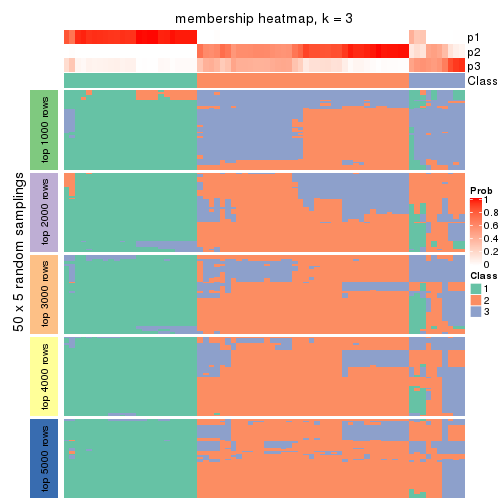
membership_heatmap(res, k = 4)
membership_heatmap(res, k = 5)
membership_heatmap(res, k = 6)
As soon as we have had the classes for columns, we can look for signatures which are significantly different between classes which can be candidate marks for certain classes. Following are the heatmaps for signatures.
Signature heatmaps where rows are scaled:
get_signatures(res, k = 2)
get_signatures(res, k = 3)
get_signatures(res, k = 4)
get_signatures(res, k = 5)
get_signatures(res, k = 6)
Signature heatmaps where rows are not scaled:
get_signatures(res, k = 2, scale_rows = FALSE)
get_signatures(res, k = 3, scale_rows = FALSE)
get_signatures(res, k = 4, scale_rows = FALSE)
get_signatures(res, k = 5, scale_rows = FALSE)
get_signatures(res, k = 6, scale_rows = FALSE)
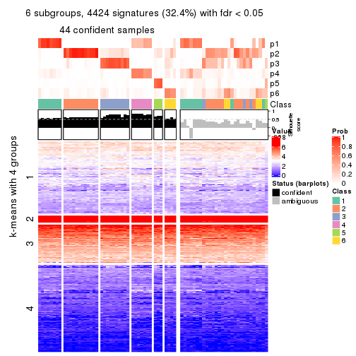
Compare the overlap of signatures from different k:
compare_signatures(res)

get_signature() returns a data frame invisibly. TO get the list of signatures, the function
call should be assigned to a variable explicitly. In following code, if plot argument is set
to FALSE, no heatmap is plotted while only the differential analysis is performed.
# code only for demonstration
tb = get_signature(res, k = ..., plot = FALSE)
An example of the output of tb is:
#> which_row fdr mean_1 mean_2 scaled_mean_1 scaled_mean_2 km
#> 1 38 0.042760348 8.373488 9.131774 -0.5533452 0.5164555 1
#> 2 40 0.018707592 7.106213 8.469186 -0.6173731 0.5762149 1
#> 3 55 0.019134737 10.221463 11.207825 -0.6159697 0.5749050 1
#> 4 59 0.006059896 5.921854 7.869574 -0.6899429 0.6439467 1
#> 5 60 0.018055526 8.928898 10.211722 -0.6204761 0.5791110 1
#> 6 98 0.009384629 15.714769 14.887706 0.6635654 -0.6193277 2
...
The columns in tb are:
which_row: row indices corresponding to the input matrix.fdr: FDR for the differential test. mean_x: The mean value in group x.scaled_mean_x: The mean value in group x after rows are scaled.km: Row groups if k-means clustering is applied to rows.UMAP plot which shows how samples are separated.
dimension_reduction(res, k = 2, method = "UMAP")

dimension_reduction(res, k = 3, method = "UMAP")
dimension_reduction(res, k = 4, method = "UMAP")
dimension_reduction(res, k = 5, method = "UMAP")
dimension_reduction(res, k = 6, method = "UMAP")
Following heatmap shows how subgroups are split when increasing k:
collect_classes(res)
If matrix rows can be associated to genes, consider to use GO_Enrichment(res,
...) to perform function enrichment for the signature genes.
The object with results only for a single top-value method and a single partition method can be extracted as:
res = res_list["CV", "skmeans"]
# you can also extract it by
# res = res_list["CV:skmeans"]
A summary of res and all the functions that can be applied to it:
res
#> A 'ConsensusPartition' object with k = 2, 3, 4, 5, 6.
#> On a matrix with 13673 rows and 72 columns.
#> Top rows (1000, 2000, 3000, 4000, 5000) are extracted by 'CV' method.
#> Subgroups are detected by 'skmeans' method.
#> Performed in total 1250 partitions by row resampling.
#> Best k for subgroups seems to be 2.
#>
#> Following methods can be applied to this 'ConsensusPartition' object:
#> [1] "cola_report" "collect_classes" "collect_plots"
#> [4] "collect_stats" "colnames" "compare_signatures"
#> [7] "consensus_heatmap" "dimension_reduction" "functional_enrichment"
#> [10] "get_anno_col" "get_anno" "get_classes"
#> [13] "get_consensus" "get_matrix" "get_membership"
#> [16] "get_param" "get_signatures" "get_stats"
#> [19] "is_best_k" "is_stable_k" "membership_heatmap"
#> [22] "ncol" "nrow" "plot_ecdf"
#> [25] "rownames" "select_partition_number" "show"
#> [28] "suggest_best_k" "test_to_known_factors"
collect_plots() function collects all the plots made from res for all k (number of partitions)
into one single page to provide an easy and fast comparison between different k.
collect_plots(res)
The plots are:
k and the heatmap of
predicted classes for each k.k.k.k.All the plots in panels can be made by individual functions and they are plotted later in this section.
select_partition_number() produces several plots showing different
statistics for choosing “optimized” k. There are following statistics:
k;k, the area increased is defined as \(A_k - A_{k-1}\).The detailed explanations of these statistics can be found in the cola vignette.
Generally speaking, lower PAC score, higher mean silhouette score or higher
concordance corresponds to better partition. Rand index and Jaccard index
measure how similar the current partition is compared to partition with k-1.
If they are too similar, we won't accept k is better than k-1.
select_partition_number(res)
The numeric values for all these statistics can be obtained by get_stats().
get_stats(res)
#> k 1-PAC mean_silhouette concordance area_increased Rand Jaccard
#> 2 2 0.971 0.951 0.979 0.4942 0.503 0.503
#> 3 3 0.731 0.761 0.893 0.3521 0.744 0.527
#> 4 4 0.607 0.631 0.795 0.1025 0.871 0.647
#> 5 5 0.555 0.483 0.681 0.0621 0.896 0.659
#> 6 6 0.586 0.417 0.632 0.0421 0.898 0.617
suggest_best_k() suggests the best \(k\) based on these statistics. The rules are as follows:
NA.suggest_best_k(res)
#> [1] 2
Following shows the table of the partitions (You need to click the show/hide
code output link to see it). The membership matrix (columns with name p*)
is inferred by
clue::cl_consensus()
function with the SE method. Basically the value in the membership matrix
represents the probability to belong to a certain group. The finall class
label for an item is determined with the group with highest probability it
belongs to.
In get_classes() function, the entropy is calculated from the membership
matrix and the silhouette score is calculated from the consensus matrix.
cbind(get_classes(res, k = 2), get_membership(res, k = 2))
#> class entropy silhouette p1 p2
#> SRR1585486 1 0.0000 0.961 1.000 0.000
#> SRR1585488 1 0.0000 0.961 1.000 0.000
#> SRR1585487 1 0.6801 0.774 0.820 0.180
#> SRR1585489 2 0.0000 0.990 0.000 1.000
#> SRR1585490 1 0.0000 0.961 1.000 0.000
#> SRR1585491 1 0.0000 0.961 1.000 0.000
#> SRR1585492 1 0.0000 0.961 1.000 0.000
#> SRR1585493 2 0.0000 0.990 0.000 1.000
#> SRR1585494 2 0.0000 0.990 0.000 1.000
#> SRR1585496 2 0.0000 0.990 0.000 1.000
#> SRR1585495 2 0.0000 0.990 0.000 1.000
#> SRR1585498 2 0.0000 0.990 0.000 1.000
#> SRR1585497 2 0.0000 0.990 0.000 1.000
#> SRR1585499 1 0.0000 0.961 1.000 0.000
#> SRR1585500 2 0.3114 0.934 0.056 0.944
#> SRR1585501 2 0.0000 0.990 0.000 1.000
#> SRR1585502 2 0.0000 0.990 0.000 1.000
#> SRR1585503 1 0.0000 0.961 1.000 0.000
#> SRR1585504 2 0.0000 0.990 0.000 1.000
#> SRR1585505 1 0.0000 0.961 1.000 0.000
#> SRR1585506 2 0.0000 0.990 0.000 1.000
#> SRR1585508 2 0.0000 0.990 0.000 1.000
#> SRR1585507 2 0.0000 0.990 0.000 1.000
#> SRR1585509 1 0.0000 0.961 1.000 0.000
#> SRR1585510 2 0.0000 0.990 0.000 1.000
#> SRR1585511 2 0.0000 0.990 0.000 1.000
#> SRR1585512 2 0.0000 0.990 0.000 1.000
#> SRR1585513 1 0.0000 0.961 1.000 0.000
#> SRR1585516 2 0.0672 0.983 0.008 0.992
#> SRR1585515 1 0.0000 0.961 1.000 0.000
#> SRR1585514 2 0.8499 0.604 0.276 0.724
#> SRR1585518 2 0.0000 0.990 0.000 1.000
#> SRR1585517 2 0.1843 0.965 0.028 0.972
#> SRR1585519 2 0.0000 0.990 0.000 1.000
#> SRR1585520 2 0.0000 0.990 0.000 1.000
#> SRR1585522 2 0.0000 0.990 0.000 1.000
#> SRR1585521 1 0.0000 0.961 1.000 0.000
#> SRR1585524 1 0.0000 0.961 1.000 0.000
#> SRR1585523 1 0.0000 0.961 1.000 0.000
#> SRR1585525 1 0.0000 0.961 1.000 0.000
#> SRR1585526 2 0.0000 0.990 0.000 1.000
#> SRR1585527 1 0.0000 0.961 1.000 0.000
#> SRR1585528 2 0.0000 0.990 0.000 1.000
#> SRR1585529 2 0.0000 0.990 0.000 1.000
#> SRR1585530 2 0.0000 0.990 0.000 1.000
#> SRR1585531 1 0.0000 0.961 1.000 0.000
#> SRR1585532 2 0.0000 0.990 0.000 1.000
#> SRR1585533 1 0.0000 0.961 1.000 0.000
#> SRR1585534 1 0.0000 0.961 1.000 0.000
#> SRR1585535 2 0.0000 0.990 0.000 1.000
#> SRR1585536 2 0.0000 0.990 0.000 1.000
#> SRR1585537 1 0.8763 0.600 0.704 0.296
#> SRR1585538 1 0.0000 0.961 1.000 0.000
#> SRR1585539 1 0.0000 0.961 1.000 0.000
#> SRR1585541 1 0.8661 0.615 0.712 0.288
#> SRR1585540 2 0.0000 0.990 0.000 1.000
#> SRR1585542 1 0.0000 0.961 1.000 0.000
#> SRR1585543 1 0.0000 0.961 1.000 0.000
#> SRR1585544 1 0.9522 0.441 0.628 0.372
#> SRR1585546 1 0.0000 0.961 1.000 0.000
#> SRR1585545 2 0.1184 0.976 0.016 0.984
#> SRR1585547 1 0.0000 0.961 1.000 0.000
#> SRR1585548 1 0.0000 0.961 1.000 0.000
#> SRR1585549 2 0.0000 0.990 0.000 1.000
#> SRR1585550 1 0.0000 0.961 1.000 0.000
#> SRR1585551 2 0.0000 0.990 0.000 1.000
#> SRR1585552 2 0.0000 0.990 0.000 1.000
#> SRR1585553 2 0.0000 0.990 0.000 1.000
#> SRR1585554 2 0.0000 0.990 0.000 1.000
#> SRR1585555 2 0.0000 0.990 0.000 1.000
#> SRR1585557 2 0.0000 0.990 0.000 1.000
#> SRR1585556 2 0.0000 0.990 0.000 1.000
cbind(get_classes(res, k = 3), get_membership(res, k = 3))
#> class entropy silhouette p1 p2 p3
#> SRR1585486 1 0.0000 0.9928 1.000 0.000 0.000
#> SRR1585488 1 0.0000 0.9928 1.000 0.000 0.000
#> SRR1585487 3 0.6662 0.5888 0.192 0.072 0.736
#> SRR1585489 2 0.4235 0.7189 0.000 0.824 0.176
#> SRR1585490 1 0.0000 0.9928 1.000 0.000 0.000
#> SRR1585491 1 0.0000 0.9928 1.000 0.000 0.000
#> SRR1585492 1 0.0000 0.9928 1.000 0.000 0.000
#> SRR1585493 2 0.6286 0.3057 0.000 0.536 0.464
#> SRR1585494 2 0.1643 0.7774 0.000 0.956 0.044
#> SRR1585496 3 0.0237 0.8167 0.000 0.004 0.996
#> SRR1585495 3 0.4178 0.7003 0.000 0.172 0.828
#> SRR1585498 3 0.0747 0.8155 0.000 0.016 0.984
#> SRR1585497 2 0.5621 0.6003 0.000 0.692 0.308
#> SRR1585499 1 0.0000 0.9928 1.000 0.000 0.000
#> SRR1585500 3 0.1529 0.8063 0.000 0.040 0.960
#> SRR1585501 3 0.0424 0.8185 0.000 0.008 0.992
#> SRR1585502 3 0.0424 0.8159 0.000 0.008 0.992
#> SRR1585503 1 0.2584 0.9283 0.928 0.064 0.008
#> SRR1585504 3 0.0424 0.8185 0.000 0.008 0.992
#> SRR1585505 2 0.6305 0.0256 0.484 0.516 0.000
#> SRR1585506 3 0.0424 0.8185 0.000 0.008 0.992
#> SRR1585508 2 0.6126 0.4610 0.000 0.600 0.400
#> SRR1585507 2 0.4796 0.6955 0.000 0.780 0.220
#> SRR1585509 1 0.0000 0.9928 1.000 0.000 0.000
#> SRR1585510 3 0.0237 0.8180 0.000 0.004 0.996
#> SRR1585511 3 0.2261 0.7861 0.000 0.068 0.932
#> SRR1585512 2 0.5216 0.6530 0.000 0.740 0.260
#> SRR1585513 1 0.0000 0.9928 1.000 0.000 0.000
#> SRR1585516 3 0.5988 0.4413 0.000 0.368 0.632
#> SRR1585515 1 0.0237 0.9894 0.996 0.004 0.000
#> SRR1585514 2 0.2356 0.7582 0.000 0.928 0.072
#> SRR1585518 2 0.6291 0.2852 0.000 0.532 0.468
#> SRR1585517 3 0.2400 0.7940 0.004 0.064 0.932
#> SRR1585519 2 0.2356 0.7736 0.000 0.928 0.072
#> SRR1585520 2 0.1411 0.7759 0.000 0.964 0.036
#> SRR1585522 3 0.5560 0.5537 0.000 0.300 0.700
#> SRR1585521 1 0.0000 0.9928 1.000 0.000 0.000
#> SRR1585524 1 0.3038 0.8843 0.896 0.104 0.000
#> SRR1585523 1 0.0000 0.9928 1.000 0.000 0.000
#> SRR1585525 1 0.0000 0.9928 1.000 0.000 0.000
#> SRR1585526 3 0.0000 0.8174 0.000 0.000 1.000
#> SRR1585527 1 0.0000 0.9928 1.000 0.000 0.000
#> SRR1585528 3 0.6267 -0.0731 0.000 0.452 0.548
#> SRR1585529 2 0.0747 0.7734 0.000 0.984 0.016
#> SRR1585530 2 0.6140 0.4581 0.000 0.596 0.404
#> SRR1585531 1 0.0000 0.9928 1.000 0.000 0.000
#> SRR1585532 2 0.6026 0.2849 0.000 0.624 0.376
#> SRR1585533 1 0.0000 0.9928 1.000 0.000 0.000
#> SRR1585534 1 0.0000 0.9928 1.000 0.000 0.000
#> SRR1585535 3 0.6244 0.0139 0.000 0.440 0.560
#> SRR1585536 2 0.2165 0.7742 0.000 0.936 0.064
#> SRR1585537 2 0.0424 0.7668 0.000 0.992 0.008
#> SRR1585538 1 0.0000 0.9928 1.000 0.000 0.000
#> SRR1585539 1 0.0000 0.9928 1.000 0.000 0.000
#> SRR1585541 2 0.1315 0.7674 0.020 0.972 0.008
#> SRR1585540 2 0.6045 0.4941 0.000 0.620 0.380
#> SRR1585542 1 0.0000 0.9928 1.000 0.000 0.000
#> SRR1585543 1 0.0000 0.9928 1.000 0.000 0.000
#> SRR1585544 2 0.0475 0.7691 0.004 0.992 0.004
#> SRR1585546 1 0.0000 0.9928 1.000 0.000 0.000
#> SRR1585545 3 0.5012 0.6763 0.008 0.204 0.788
#> SRR1585547 1 0.0000 0.9928 1.000 0.000 0.000
#> SRR1585548 1 0.0000 0.9928 1.000 0.000 0.000
#> SRR1585549 3 0.0424 0.8185 0.000 0.008 0.992
#> SRR1585550 1 0.0000 0.9928 1.000 0.000 0.000
#> SRR1585551 3 0.0424 0.8185 0.000 0.008 0.992
#> SRR1585552 3 0.6260 -0.0892 0.000 0.448 0.552
#> SRR1585553 2 0.1289 0.7757 0.000 0.968 0.032
#> SRR1585554 2 0.1529 0.7751 0.000 0.960 0.040
#> SRR1585555 3 0.2959 0.7602 0.000 0.100 0.900
#> SRR1585557 2 0.3192 0.7555 0.000 0.888 0.112
#> SRR1585556 2 0.0747 0.7733 0.000 0.984 0.016
cbind(get_classes(res, k = 4), get_membership(res, k = 4))
#> class entropy silhouette p1 p2 p3 p4
#> SRR1585486 1 0.0524 0.9208 0.988 0.004 0.000 0.008
#> SRR1585488 1 0.0469 0.9231 0.988 0.000 0.000 0.012
#> SRR1585487 4 0.5392 0.6043 0.056 0.008 0.200 0.736
#> SRR1585489 2 0.7714 0.2680 0.000 0.432 0.236 0.332
#> SRR1585490 1 0.0188 0.9210 0.996 0.000 0.000 0.004
#> SRR1585491 1 0.1302 0.9202 0.956 0.000 0.000 0.044
#> SRR1585492 1 0.3962 0.7975 0.832 0.044 0.000 0.124
#> SRR1585493 3 0.7006 0.3318 0.000 0.340 0.528 0.132
#> SRR1585494 2 0.3810 0.6884 0.000 0.848 0.060 0.092
#> SRR1585496 3 0.2704 0.5781 0.000 0.000 0.876 0.124
#> SRR1585495 3 0.6553 0.3289 0.008 0.200 0.656 0.136
#> SRR1585498 3 0.3280 0.6154 0.000 0.016 0.860 0.124
#> SRR1585497 2 0.7016 0.2911 0.000 0.540 0.320 0.140
#> SRR1585499 1 0.0188 0.9210 0.996 0.000 0.000 0.004
#> SRR1585500 3 0.6727 -0.0754 0.000 0.092 0.496 0.412
#> SRR1585501 3 0.2300 0.6589 0.000 0.016 0.920 0.064
#> SRR1585502 3 0.3893 0.5236 0.000 0.008 0.796 0.196
#> SRR1585503 4 0.5543 -0.0164 0.424 0.020 0.000 0.556
#> SRR1585504 3 0.0592 0.6499 0.000 0.000 0.984 0.016
#> SRR1585505 2 0.6740 0.2446 0.308 0.584 0.004 0.104
#> SRR1585506 3 0.1042 0.6524 0.000 0.008 0.972 0.020
#> SRR1585508 3 0.7203 0.3587 0.000 0.312 0.524 0.164
#> SRR1585507 2 0.5494 0.5809 0.000 0.716 0.208 0.076
#> SRR1585509 1 0.1174 0.9139 0.968 0.020 0.000 0.012
#> SRR1585510 3 0.1151 0.6543 0.000 0.008 0.968 0.024
#> SRR1585511 3 0.2670 0.6591 0.000 0.052 0.908 0.040
#> SRR1585512 2 0.7588 0.1674 0.000 0.468 0.312 0.220
#> SRR1585513 1 0.1389 0.9192 0.952 0.000 0.000 0.048
#> SRR1585516 4 0.5628 0.5964 0.000 0.132 0.144 0.724
#> SRR1585515 1 0.3764 0.7926 0.784 0.000 0.000 0.216
#> SRR1585514 4 0.4950 0.4279 0.008 0.196 0.036 0.760
#> SRR1585518 3 0.7463 0.3579 0.000 0.272 0.504 0.224
#> SRR1585517 4 0.4328 0.5798 0.000 0.008 0.244 0.748
#> SRR1585519 2 0.5332 0.6532 0.000 0.748 0.124 0.128
#> SRR1585520 2 0.4595 0.6492 0.000 0.780 0.044 0.176
#> SRR1585522 3 0.5878 0.4365 0.000 0.312 0.632 0.056
#> SRR1585521 1 0.1302 0.9204 0.956 0.000 0.000 0.044
#> SRR1585524 1 0.5949 0.5450 0.644 0.068 0.000 0.288
#> SRR1585523 1 0.1520 0.9089 0.956 0.024 0.000 0.020
#> SRR1585525 1 0.2039 0.9010 0.940 0.016 0.008 0.036
#> SRR1585526 3 0.1940 0.6180 0.000 0.000 0.924 0.076
#> SRR1585527 1 0.0779 0.9229 0.980 0.004 0.000 0.016
#> SRR1585528 3 0.7159 0.4197 0.000 0.260 0.552 0.188
#> SRR1585529 2 0.3768 0.6612 0.000 0.808 0.008 0.184
#> SRR1585530 3 0.6850 0.2946 0.000 0.376 0.516 0.108
#> SRR1585531 1 0.1022 0.9218 0.968 0.000 0.000 0.032
#> SRR1585532 4 0.5890 0.3619 0.000 0.268 0.072 0.660
#> SRR1585533 1 0.0469 0.9215 0.988 0.000 0.000 0.012
#> SRR1585534 1 0.2973 0.8678 0.856 0.000 0.000 0.144
#> SRR1585535 3 0.7513 0.3570 0.000 0.224 0.492 0.284
#> SRR1585536 2 0.2131 0.6899 0.000 0.932 0.036 0.032
#> SRR1585537 2 0.3933 0.6143 0.008 0.792 0.000 0.200
#> SRR1585538 1 0.3266 0.8492 0.832 0.000 0.000 0.168
#> SRR1585539 1 0.1389 0.9198 0.952 0.000 0.000 0.048
#> SRR1585541 2 0.5680 0.5466 0.064 0.712 0.008 0.216
#> SRR1585540 3 0.7253 0.2660 0.000 0.364 0.484 0.152
#> SRR1585542 1 0.2469 0.8932 0.892 0.000 0.000 0.108
#> SRR1585543 1 0.2480 0.9057 0.904 0.000 0.008 0.088
#> SRR1585544 2 0.3428 0.6401 0.012 0.844 0.000 0.144
#> SRR1585546 1 0.0524 0.9218 0.988 0.004 0.000 0.008
#> SRR1585545 4 0.7188 0.3299 0.004 0.132 0.344 0.520
#> SRR1585547 1 0.0000 0.9219 1.000 0.000 0.000 0.000
#> SRR1585548 1 0.3311 0.8423 0.828 0.000 0.000 0.172
#> SRR1585549 3 0.0336 0.6527 0.000 0.000 0.992 0.008
#> SRR1585550 1 0.1902 0.9182 0.932 0.000 0.004 0.064
#> SRR1585551 3 0.0707 0.6481 0.000 0.000 0.980 0.020
#> SRR1585552 3 0.6167 0.5278 0.000 0.220 0.664 0.116
#> SRR1585553 2 0.3479 0.6718 0.000 0.840 0.012 0.148
#> SRR1585554 2 0.1297 0.6898 0.000 0.964 0.016 0.020
#> SRR1585555 3 0.4261 0.6438 0.000 0.112 0.820 0.068
#> SRR1585557 2 0.6420 0.5468 0.000 0.640 0.132 0.228
#> SRR1585556 2 0.2021 0.6898 0.000 0.932 0.012 0.056
cbind(get_classes(res, k = 5), get_membership(res, k = 5))
#> class entropy silhouette p1 p2 p3 p4 p5
#> SRR1585486 1 0.3250 0.8148 0.872 0.000 0.044 0.044 0.040
#> SRR1585488 1 0.3584 0.8229 0.848 0.000 0.040 0.084 0.028
#> SRR1585487 4 0.4659 0.6219 0.020 0.028 0.208 0.740 0.004
#> SRR1585489 2 0.6508 0.1822 0.000 0.612 0.056 0.208 0.124
#> SRR1585490 1 0.2931 0.8147 0.888 0.000 0.040 0.044 0.028
#> SRR1585491 1 0.1792 0.8210 0.916 0.000 0.000 0.084 0.000
#> SRR1585492 1 0.7796 0.4447 0.528 0.016 0.128 0.192 0.136
#> SRR1585493 2 0.6589 0.3276 0.000 0.604 0.196 0.052 0.148
#> SRR1585494 2 0.5684 -0.3768 0.000 0.500 0.020 0.040 0.440
#> SRR1585496 3 0.4446 0.5712 0.000 0.192 0.752 0.048 0.008
#> SRR1585495 3 0.5210 0.4349 0.000 0.060 0.736 0.056 0.148
#> SRR1585498 3 0.6255 0.4152 0.000 0.404 0.492 0.080 0.024
#> SRR1585497 2 0.7331 -0.1013 0.000 0.412 0.136 0.064 0.388
#> SRR1585499 1 0.2535 0.8199 0.908 0.000 0.032 0.028 0.032
#> SRR1585500 3 0.7076 0.1187 0.012 0.044 0.568 0.204 0.172
#> SRR1585501 2 0.5080 -0.3733 0.000 0.504 0.468 0.020 0.008
#> SRR1585502 3 0.6127 0.5192 0.000 0.244 0.620 0.104 0.032
#> SRR1585503 4 0.6446 0.1151 0.336 0.012 0.048 0.556 0.048
#> SRR1585504 3 0.4088 0.5536 0.000 0.368 0.632 0.000 0.000
#> SRR1585505 5 0.7054 0.3020 0.192 0.032 0.068 0.096 0.612
#> SRR1585506 3 0.4327 0.5480 0.000 0.360 0.632 0.008 0.000
#> SRR1585508 2 0.1483 0.5229 0.000 0.952 0.028 0.008 0.012
#> SRR1585507 5 0.6800 0.1144 0.000 0.388 0.124 0.032 0.456
#> SRR1585509 1 0.2591 0.8257 0.904 0.000 0.020 0.032 0.044
#> SRR1585510 3 0.4876 0.4949 0.000 0.396 0.576 0.028 0.000
#> SRR1585511 2 0.4446 -0.3330 0.000 0.520 0.476 0.000 0.004
#> SRR1585512 2 0.5033 0.2288 0.000 0.720 0.020 0.064 0.196
#> SRR1585513 1 0.2424 0.8085 0.868 0.000 0.000 0.132 0.000
#> SRR1585516 4 0.6427 0.5794 0.000 0.072 0.172 0.636 0.120
#> SRR1585515 1 0.4065 0.7312 0.736 0.004 0.004 0.248 0.008
#> SRR1585514 4 0.6702 0.4801 0.000 0.196 0.076 0.604 0.124
#> SRR1585518 2 0.2201 0.5187 0.000 0.920 0.032 0.040 0.008
#> SRR1585517 4 0.5132 0.6223 0.004 0.072 0.252 0.672 0.000
#> SRR1585519 2 0.6312 -0.2494 0.000 0.500 0.068 0.036 0.396
#> SRR1585520 5 0.6796 0.5270 0.000 0.276 0.048 0.128 0.548
#> SRR1585522 3 0.6936 0.0363 0.000 0.248 0.452 0.012 0.288
#> SRR1585521 1 0.1608 0.8221 0.928 0.000 0.000 0.072 0.000
#> SRR1585524 1 0.7496 0.3062 0.484 0.036 0.028 0.316 0.136
#> SRR1585523 1 0.3664 0.7969 0.848 0.000 0.036 0.060 0.056
#> SRR1585525 1 0.5842 0.6889 0.700 0.000 0.100 0.096 0.104
#> SRR1585526 3 0.4090 0.5930 0.000 0.268 0.716 0.016 0.000
#> SRR1585527 1 0.2758 0.8248 0.896 0.000 0.024 0.032 0.048
#> SRR1585528 2 0.3617 0.4806 0.000 0.840 0.088 0.060 0.012
#> SRR1585529 5 0.6083 0.4258 0.000 0.448 0.012 0.084 0.456
#> SRR1585530 2 0.5055 0.4601 0.000 0.712 0.116 0.004 0.168
#> SRR1585531 1 0.1557 0.8281 0.940 0.000 0.000 0.052 0.008
#> SRR1585532 4 0.7837 0.3184 0.000 0.224 0.140 0.472 0.164
#> SRR1585533 1 0.3835 0.7922 0.836 0.000 0.032 0.056 0.076
#> SRR1585534 1 0.3870 0.7267 0.732 0.000 0.004 0.260 0.004
#> SRR1585535 2 0.5634 0.4560 0.000 0.704 0.092 0.152 0.052
#> SRR1585536 5 0.5197 0.5655 0.000 0.236 0.068 0.012 0.684
#> SRR1585537 5 0.5841 0.4779 0.004 0.068 0.096 0.128 0.704
#> SRR1585538 1 0.4184 0.7067 0.700 0.000 0.000 0.284 0.016
#> SRR1585539 1 0.2304 0.8200 0.892 0.000 0.000 0.100 0.008
#> SRR1585541 5 0.8104 0.3948 0.076 0.200 0.028 0.220 0.476
#> SRR1585540 2 0.2973 0.5256 0.000 0.884 0.052 0.020 0.044
#> SRR1585542 1 0.3333 0.7704 0.788 0.000 0.000 0.208 0.004
#> SRR1585543 1 0.4861 0.7557 0.740 0.000 0.056 0.180 0.024
#> SRR1585544 5 0.5533 0.5463 0.008 0.104 0.068 0.084 0.736
#> SRR1585546 1 0.2006 0.8251 0.932 0.000 0.024 0.024 0.020
#> SRR1585545 3 0.7385 -0.1306 0.000 0.064 0.480 0.284 0.172
#> SRR1585547 1 0.0968 0.8265 0.972 0.000 0.012 0.004 0.012
#> SRR1585548 1 0.4090 0.7169 0.716 0.000 0.000 0.268 0.016
#> SRR1585549 3 0.4074 0.5572 0.000 0.364 0.636 0.000 0.000
#> SRR1585550 1 0.3933 0.8096 0.824 0.000 0.052 0.100 0.024
#> SRR1585551 3 0.4151 0.5690 0.000 0.344 0.652 0.004 0.000
#> SRR1585552 2 0.3728 0.2726 0.000 0.748 0.244 0.000 0.008
#> SRR1585553 5 0.5774 0.5020 0.000 0.380 0.020 0.052 0.548
#> SRR1585554 5 0.4609 0.5765 0.000 0.260 0.020 0.016 0.704
#> SRR1585555 2 0.5149 -0.0217 0.000 0.604 0.356 0.020 0.020
#> SRR1585557 5 0.7832 0.2963 0.000 0.236 0.232 0.092 0.440
#> SRR1585556 5 0.4912 0.5965 0.000 0.236 0.008 0.056 0.700
cbind(get_classes(res, k = 6), get_membership(res, k = 6))
#> class entropy silhouette p1 p2 p3 p4 p5 p6
#> SRR1585486 1 0.423 0.5866 0.696 0.012 0.000 0.264 0.000 0.028
#> SRR1585488 1 0.358 0.6676 0.776 0.008 0.000 0.192 0.000 0.024
#> SRR1585487 6 0.278 0.6261 0.028 0.012 0.032 0.032 0.004 0.892
#> SRR1585489 2 0.760 0.0873 0.000 0.376 0.084 0.024 0.236 0.280
#> SRR1585490 1 0.362 0.6426 0.748 0.008 0.000 0.232 0.000 0.012
#> SRR1585491 1 0.122 0.7086 0.956 0.004 0.000 0.028 0.000 0.012
#> SRR1585492 4 0.741 0.2316 0.328 0.092 0.008 0.448 0.056 0.068
#> SRR1585493 3 0.737 -0.2702 0.000 0.320 0.372 0.072 0.220 0.016
#> SRR1585494 5 0.483 0.4706 0.000 0.248 0.016 0.044 0.680 0.012
#> SRR1585496 3 0.466 0.4935 0.000 0.080 0.760 0.056 0.008 0.096
#> SRR1585495 3 0.753 0.2740 0.000 0.172 0.508 0.132 0.124 0.064
#> SRR1585498 3 0.567 0.4573 0.000 0.136 0.688 0.036 0.052 0.088
#> SRR1585497 5 0.797 0.1836 0.000 0.332 0.124 0.148 0.344 0.052
#> SRR1585499 1 0.308 0.6629 0.776 0.004 0.000 0.220 0.000 0.000
#> SRR1585500 3 0.853 -0.0727 0.008 0.248 0.284 0.240 0.044 0.176
#> SRR1585501 3 0.433 0.2917 0.000 0.272 0.688 0.012 0.004 0.024
#> SRR1585502 3 0.566 0.4413 0.000 0.124 0.672 0.036 0.024 0.144
#> SRR1585503 6 0.728 0.0884 0.312 0.068 0.008 0.172 0.012 0.428
#> SRR1585504 3 0.151 0.5574 0.000 0.044 0.940 0.012 0.000 0.004
#> SRR1585505 4 0.656 -0.0166 0.092 0.064 0.000 0.448 0.384 0.012
#> SRR1585506 3 0.244 0.5534 0.000 0.076 0.892 0.008 0.004 0.020
#> SRR1585508 2 0.566 0.4501 0.000 0.520 0.364 0.004 0.100 0.012
#> SRR1585507 5 0.693 0.2877 0.000 0.232 0.172 0.080 0.504 0.012
#> SRR1585509 1 0.410 0.6326 0.724 0.008 0.000 0.240 0.016 0.012
#> SRR1585510 3 0.384 0.5225 0.000 0.112 0.812 0.016 0.020 0.040
#> SRR1585511 3 0.319 0.4172 0.000 0.184 0.796 0.000 0.020 0.000
#> SRR1585512 2 0.695 0.1904 0.000 0.396 0.156 0.008 0.372 0.068
#> SRR1585513 1 0.187 0.7039 0.924 0.004 0.000 0.036 0.000 0.036
#> SRR1585516 6 0.388 0.6151 0.000 0.028 0.048 0.020 0.084 0.820
#> SRR1585515 1 0.477 0.5914 0.696 0.012 0.000 0.104 0.000 0.188
#> SRR1585514 6 0.622 0.4848 0.000 0.180 0.008 0.088 0.116 0.608
#> SRR1585518 2 0.611 0.4022 0.000 0.456 0.408 0.004 0.092 0.040
#> SRR1585517 6 0.282 0.6311 0.016 0.020 0.068 0.016 0.000 0.880
#> SRR1585519 5 0.674 0.3222 0.000 0.324 0.072 0.076 0.496 0.032
#> SRR1585520 5 0.598 0.4948 0.000 0.136 0.036 0.056 0.660 0.112
#> SRR1585522 3 0.642 0.1036 0.000 0.140 0.496 0.012 0.320 0.032
#> SRR1585521 1 0.173 0.7095 0.924 0.008 0.000 0.064 0.000 0.004
#> SRR1585524 1 0.729 0.0407 0.424 0.052 0.000 0.328 0.044 0.152
#> SRR1585523 1 0.455 0.4692 0.596 0.008 0.000 0.372 0.020 0.004
#> SRR1585525 4 0.647 -0.1677 0.432 0.044 0.020 0.440 0.028 0.036
#> SRR1585526 3 0.224 0.5627 0.000 0.032 0.904 0.008 0.000 0.056
#> SRR1585527 1 0.409 0.6191 0.712 0.016 0.000 0.256 0.004 0.012
#> SRR1585528 2 0.617 0.3625 0.000 0.452 0.420 0.012 0.068 0.048
#> SRR1585529 5 0.534 0.4524 0.000 0.212 0.008 0.032 0.664 0.084
#> SRR1585530 2 0.639 0.3839 0.000 0.380 0.364 0.016 0.240 0.000
#> SRR1585531 1 0.228 0.7094 0.900 0.012 0.000 0.068 0.000 0.020
#> SRR1585532 6 0.630 0.3851 0.000 0.124 0.024 0.048 0.208 0.596
#> SRR1585533 1 0.404 0.5345 0.632 0.004 0.000 0.356 0.004 0.004
#> SRR1585534 1 0.399 0.6063 0.768 0.016 0.000 0.048 0.000 0.168
#> SRR1585535 2 0.756 0.4112 0.000 0.388 0.308 0.016 0.152 0.136
#> SRR1585536 5 0.501 0.5191 0.000 0.180 0.068 0.044 0.704 0.004
#> SRR1585537 5 0.692 0.3417 0.004 0.224 0.000 0.312 0.408 0.052
#> SRR1585538 1 0.459 0.5806 0.720 0.016 0.000 0.088 0.000 0.176
#> SRR1585539 1 0.153 0.7098 0.944 0.012 0.000 0.016 0.000 0.028
#> SRR1585541 5 0.684 0.3020 0.016 0.072 0.000 0.164 0.524 0.224
#> SRR1585540 2 0.649 0.4709 0.000 0.472 0.332 0.012 0.156 0.028
#> SRR1585542 1 0.390 0.6406 0.796 0.020 0.000 0.092 0.000 0.092
#> SRR1585543 1 0.536 0.5438 0.684 0.020 0.024 0.172 0.000 0.100
#> SRR1585544 5 0.604 0.3925 0.004 0.196 0.000 0.320 0.476 0.004
#> SRR1585546 1 0.290 0.6728 0.800 0.004 0.000 0.196 0.000 0.000
#> SRR1585545 4 0.898 -0.1358 0.008 0.212 0.192 0.276 0.116 0.196
#> SRR1585547 1 0.209 0.6944 0.876 0.000 0.000 0.124 0.000 0.000
#> SRR1585548 1 0.415 0.6078 0.756 0.012 0.000 0.068 0.000 0.164
#> SRR1585549 3 0.079 0.5623 0.000 0.032 0.968 0.000 0.000 0.000
#> SRR1585550 1 0.501 0.5595 0.672 0.040 0.004 0.240 0.000 0.044
#> SRR1585551 3 0.122 0.5670 0.000 0.028 0.956 0.004 0.000 0.012
#> SRR1585552 3 0.523 -0.0744 0.000 0.344 0.572 0.008 0.072 0.004
#> SRR1585553 5 0.470 0.5206 0.000 0.156 0.008 0.044 0.740 0.052
#> SRR1585554 5 0.264 0.5682 0.000 0.052 0.008 0.044 0.888 0.008
#> SRR1585555 3 0.591 0.1959 0.000 0.248 0.604 0.008 0.084 0.056
#> SRR1585557 2 0.806 -0.3373 0.000 0.348 0.104 0.160 0.320 0.068
#> SRR1585556 5 0.438 0.5635 0.000 0.084 0.012 0.044 0.784 0.076
Heatmaps for the consensus matrix. It visualizes the probability of two samples to be in a same group.
consensus_heatmap(res, k = 2)
consensus_heatmap(res, k = 3)
consensus_heatmap(res, k = 4)
consensus_heatmap(res, k = 5)
consensus_heatmap(res, k = 6)
Heatmaps for the membership of samples in all partitions to see how consistent they are:
membership_heatmap(res, k = 2)
membership_heatmap(res, k = 3)
membership_heatmap(res, k = 4)

membership_heatmap(res, k = 5)
membership_heatmap(res, k = 6)
As soon as we have had the classes for columns, we can look for signatures which are significantly different between classes which can be candidate marks for certain classes. Following are the heatmaps for signatures.
Signature heatmaps where rows are scaled:
get_signatures(res, k = 2)
get_signatures(res, k = 3)
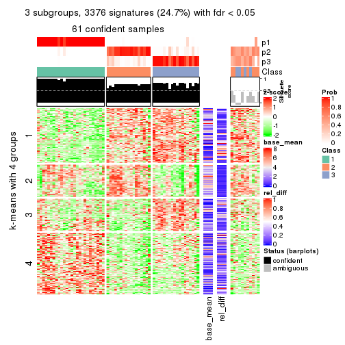
get_signatures(res, k = 4)
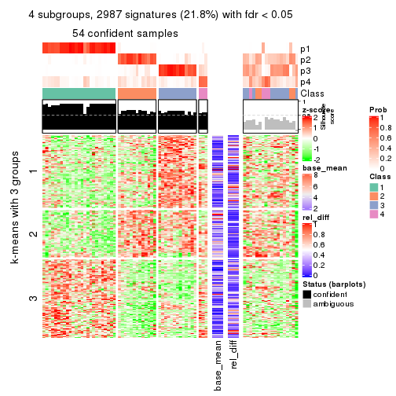
get_signatures(res, k = 5)
get_signatures(res, k = 6)
Signature heatmaps where rows are not scaled:
get_signatures(res, k = 2, scale_rows = FALSE)
get_signatures(res, k = 3, scale_rows = FALSE)
get_signatures(res, k = 4, scale_rows = FALSE)
get_signatures(res, k = 5, scale_rows = FALSE)
get_signatures(res, k = 6, scale_rows = FALSE)
Compare the overlap of signatures from different k:
compare_signatures(res)
get_signature() returns a data frame invisibly. TO get the list of signatures, the function
call should be assigned to a variable explicitly. In following code, if plot argument is set
to FALSE, no heatmap is plotted while only the differential analysis is performed.
# code only for demonstration
tb = get_signature(res, k = ..., plot = FALSE)
An example of the output of tb is:
#> which_row fdr mean_1 mean_2 scaled_mean_1 scaled_mean_2 km
#> 1 38 0.042760348 8.373488 9.131774 -0.5533452 0.5164555 1
#> 2 40 0.018707592 7.106213 8.469186 -0.6173731 0.5762149 1
#> 3 55 0.019134737 10.221463 11.207825 -0.6159697 0.5749050 1
#> 4 59 0.006059896 5.921854 7.869574 -0.6899429 0.6439467 1
#> 5 60 0.018055526 8.928898 10.211722 -0.6204761 0.5791110 1
#> 6 98 0.009384629 15.714769 14.887706 0.6635654 -0.6193277 2
...
The columns in tb are:
which_row: row indices corresponding to the input matrix.fdr: FDR for the differential test. mean_x: The mean value in group x.scaled_mean_x: The mean value in group x after rows are scaled.km: Row groups if k-means clustering is applied to rows.UMAP plot which shows how samples are separated.
dimension_reduction(res, k = 2, method = "UMAP")
dimension_reduction(res, k = 3, method = "UMAP")
dimension_reduction(res, k = 4, method = "UMAP")
dimension_reduction(res, k = 5, method = "UMAP")
dimension_reduction(res, k = 6, method = "UMAP")
Following heatmap shows how subgroups are split when increasing k:
collect_classes(res)
If matrix rows can be associated to genes, consider to use GO_Enrichment(res,
...) to perform function enrichment for the signature genes.
The object with results only for a single top-value method and a single partition method can be extracted as:
res = res_list["CV", "pam"]
# you can also extract it by
# res = res_list["CV:pam"]
A summary of res and all the functions that can be applied to it:
res
#> A 'ConsensusPartition' object with k = 2, 3, 4, 5, 6.
#> On a matrix with 13673 rows and 72 columns.
#> Top rows (1000, 2000, 3000, 4000, 5000) are extracted by 'CV' method.
#> Subgroups are detected by 'pam' method.
#> Performed in total 1250 partitions by row resampling.
#> Best k for subgroups seems to be 2.
#>
#> Following methods can be applied to this 'ConsensusPartition' object:
#> [1] "cola_report" "collect_classes" "collect_plots"
#> [4] "collect_stats" "colnames" "compare_signatures"
#> [7] "consensus_heatmap" "dimension_reduction" "functional_enrichment"
#> [10] "get_anno_col" "get_anno" "get_classes"
#> [13] "get_consensus" "get_matrix" "get_membership"
#> [16] "get_param" "get_signatures" "get_stats"
#> [19] "is_best_k" "is_stable_k" "membership_heatmap"
#> [22] "ncol" "nrow" "plot_ecdf"
#> [25] "rownames" "select_partition_number" "show"
#> [28] "suggest_best_k" "test_to_known_factors"
collect_plots() function collects all the plots made from res for all k (number of partitions)
into one single page to provide an easy and fast comparison between different k.
collect_plots(res)
The plots are:
k and the heatmap of
predicted classes for each k.k.k.k.All the plots in panels can be made by individual functions and they are plotted later in this section.
select_partition_number() produces several plots showing different
statistics for choosing “optimized” k. There are following statistics:
k;k, the area increased is defined as \(A_k - A_{k-1}\).The detailed explanations of these statistics can be found in the cola vignette.
Generally speaking, lower PAC score, higher mean silhouette score or higher
concordance corresponds to better partition. Rand index and Jaccard index
measure how similar the current partition is compared to partition with k-1.
If they are too similar, we won't accept k is better than k-1.
select_partition_number(res)
The numeric values for all these statistics can be obtained by get_stats().
get_stats(res)
#> k 1-PAC mean_silhouette concordance area_increased Rand Jaccard
#> 2 2 1.000 0.978 0.991 0.4206 0.581 0.581
#> 3 3 0.979 0.920 0.966 0.0758 0.980 0.966
#> 4 4 0.770 0.868 0.936 0.0802 1.000 1.000
#> 5 5 0.765 0.773 0.918 0.0451 0.981 0.966
#> 6 6 0.763 0.771 0.907 0.0331 0.963 0.932
suggest_best_k() suggests the best \(k\) based on these statistics. The rules are as follows:
NA.suggest_best_k(res)
#> [1] 2
Following shows the table of the partitions (You need to click the show/hide
code output link to see it). The membership matrix (columns with name p*)
is inferred by
clue::cl_consensus()
function with the SE method. Basically the value in the membership matrix
represents the probability to belong to a certain group. The finall class
label for an item is determined with the group with highest probability it
belongs to.
In get_classes() function, the entropy is calculated from the membership
matrix and the silhouette score is calculated from the consensus matrix.
cbind(get_classes(res, k = 2), get_membership(res, k = 2))
#> class entropy silhouette p1 p2
#> SRR1585486 1 0.0376 0.983 0.996 0.004
#> SRR1585488 1 0.0000 0.986 1.000 0.000
#> SRR1585487 2 0.0000 0.992 0.000 1.000
#> SRR1585489 2 0.0000 0.992 0.000 1.000
#> SRR1585490 1 0.0000 0.986 1.000 0.000
#> SRR1585491 1 0.0000 0.986 1.000 0.000
#> SRR1585492 2 0.0000 0.992 0.000 1.000
#> SRR1585493 2 0.0000 0.992 0.000 1.000
#> SRR1585494 2 0.0000 0.992 0.000 1.000
#> SRR1585496 2 0.0000 0.992 0.000 1.000
#> SRR1585495 2 0.0000 0.992 0.000 1.000
#> SRR1585498 2 0.0000 0.992 0.000 1.000
#> SRR1585497 2 0.0000 0.992 0.000 1.000
#> SRR1585499 1 0.0000 0.986 1.000 0.000
#> SRR1585500 2 0.0000 0.992 0.000 1.000
#> SRR1585501 2 0.0000 0.992 0.000 1.000
#> SRR1585502 2 0.0000 0.992 0.000 1.000
#> SRR1585503 2 0.0000 0.992 0.000 1.000
#> SRR1585504 2 0.0000 0.992 0.000 1.000
#> SRR1585505 2 0.0000 0.992 0.000 1.000
#> SRR1585506 2 0.0000 0.992 0.000 1.000
#> SRR1585508 2 0.0000 0.992 0.000 1.000
#> SRR1585507 2 0.0000 0.992 0.000 1.000
#> SRR1585509 1 0.0000 0.986 1.000 0.000
#> SRR1585510 2 0.0000 0.992 0.000 1.000
#> SRR1585511 2 0.0000 0.992 0.000 1.000
#> SRR1585512 2 0.0000 0.992 0.000 1.000
#> SRR1585513 1 0.0000 0.986 1.000 0.000
#> SRR1585516 2 0.0000 0.992 0.000 1.000
#> SRR1585515 1 0.6712 0.788 0.824 0.176
#> SRR1585514 2 0.0000 0.992 0.000 1.000
#> SRR1585518 2 0.0000 0.992 0.000 1.000
#> SRR1585517 2 0.0000 0.992 0.000 1.000
#> SRR1585519 2 0.0000 0.992 0.000 1.000
#> SRR1585520 2 0.0000 0.992 0.000 1.000
#> SRR1585522 2 0.0000 0.992 0.000 1.000
#> SRR1585521 1 0.0000 0.986 1.000 0.000
#> SRR1585524 2 0.0000 0.992 0.000 1.000
#> SRR1585523 1 0.0000 0.986 1.000 0.000
#> SRR1585525 2 0.0376 0.988 0.004 0.996
#> SRR1585526 2 0.0000 0.992 0.000 1.000
#> SRR1585527 1 0.0000 0.986 1.000 0.000
#> SRR1585528 2 0.0000 0.992 0.000 1.000
#> SRR1585529 2 0.0000 0.992 0.000 1.000
#> SRR1585530 2 0.0000 0.992 0.000 1.000
#> SRR1585531 1 0.0000 0.986 1.000 0.000
#> SRR1585532 2 0.0000 0.992 0.000 1.000
#> SRR1585533 1 0.0000 0.986 1.000 0.000
#> SRR1585534 1 0.0000 0.986 1.000 0.000
#> SRR1585535 2 0.0000 0.992 0.000 1.000
#> SRR1585536 2 0.0000 0.992 0.000 1.000
#> SRR1585537 2 0.0000 0.992 0.000 1.000
#> SRR1585538 1 0.0000 0.986 1.000 0.000
#> SRR1585539 1 0.0000 0.986 1.000 0.000
#> SRR1585541 2 0.0000 0.992 0.000 1.000
#> SRR1585540 2 0.0000 0.992 0.000 1.000
#> SRR1585542 1 0.0000 0.986 1.000 0.000
#> SRR1585543 2 0.9522 0.391 0.372 0.628
#> SRR1585544 2 0.0000 0.992 0.000 1.000
#> SRR1585546 1 0.0000 0.986 1.000 0.000
#> SRR1585545 2 0.0000 0.992 0.000 1.000
#> SRR1585547 1 0.0000 0.986 1.000 0.000
#> SRR1585548 1 0.0000 0.986 1.000 0.000
#> SRR1585549 2 0.0000 0.992 0.000 1.000
#> SRR1585550 1 0.4298 0.901 0.912 0.088
#> SRR1585551 2 0.0000 0.992 0.000 1.000
#> SRR1585552 2 0.0000 0.992 0.000 1.000
#> SRR1585553 2 0.0000 0.992 0.000 1.000
#> SRR1585554 2 0.0000 0.992 0.000 1.000
#> SRR1585555 2 0.0000 0.992 0.000 1.000
#> SRR1585557 2 0.0000 0.992 0.000 1.000
#> SRR1585556 2 0.0000 0.992 0.000 1.000
cbind(get_classes(res, k = 3), get_membership(res, k = 3))
#> class entropy silhouette p1 p2 p3
#> SRR1585486 1 0.2496 0.90509 0.928 0.004 0.068
#> SRR1585488 1 0.0237 0.94227 0.996 0.000 0.004
#> SRR1585487 2 0.1031 0.95860 0.000 0.976 0.024
#> SRR1585489 2 0.1643 0.94259 0.000 0.956 0.044
#> SRR1585490 1 0.0000 0.94250 1.000 0.000 0.000
#> SRR1585491 1 0.2165 0.92808 0.936 0.000 0.064
#> SRR1585492 2 0.1950 0.93951 0.008 0.952 0.040
#> SRR1585493 2 0.0000 0.97040 0.000 1.000 0.000
#> SRR1585494 2 0.0237 0.96944 0.000 0.996 0.004
#> SRR1585496 2 0.0000 0.97040 0.000 1.000 0.000
#> SRR1585495 2 0.0000 0.97040 0.000 1.000 0.000
#> SRR1585498 2 0.0000 0.97040 0.000 1.000 0.000
#> SRR1585497 2 0.1289 0.95171 0.000 0.968 0.032
#> SRR1585499 1 0.0424 0.94150 0.992 0.000 0.008
#> SRR1585500 2 0.0000 0.97040 0.000 1.000 0.000
#> SRR1585501 2 0.0000 0.97040 0.000 1.000 0.000
#> SRR1585502 2 0.0000 0.97040 0.000 1.000 0.000
#> SRR1585503 2 0.0237 0.96852 0.004 0.996 0.000
#> SRR1585504 2 0.0000 0.97040 0.000 1.000 0.000
#> SRR1585505 2 0.3009 0.90708 0.028 0.920 0.052
#> SRR1585506 2 0.0000 0.97040 0.000 1.000 0.000
#> SRR1585508 2 0.0000 0.97040 0.000 1.000 0.000
#> SRR1585507 2 0.1411 0.95093 0.000 0.964 0.036
#> SRR1585509 1 0.0000 0.94250 1.000 0.000 0.000
#> SRR1585510 2 0.0000 0.97040 0.000 1.000 0.000
#> SRR1585511 2 0.0000 0.97040 0.000 1.000 0.000
#> SRR1585512 2 0.0000 0.97040 0.000 1.000 0.000
#> SRR1585513 1 0.1289 0.93696 0.968 0.000 0.032
#> SRR1585516 2 0.1643 0.94259 0.000 0.956 0.044
#> SRR1585515 1 0.5588 0.69823 0.808 0.124 0.068
#> SRR1585514 2 0.1753 0.94143 0.000 0.952 0.048
#> SRR1585518 2 0.0000 0.97040 0.000 1.000 0.000
#> SRR1585517 2 0.0237 0.96916 0.000 0.996 0.004
#> SRR1585519 2 0.0237 0.96944 0.000 0.996 0.004
#> SRR1585520 2 0.0000 0.97040 0.000 1.000 0.000
#> SRR1585522 2 0.0000 0.97040 0.000 1.000 0.000
#> SRR1585521 1 0.2165 0.92808 0.936 0.000 0.064
#> SRR1585524 2 0.3045 0.90068 0.020 0.916 0.064
#> SRR1585523 1 0.0747 0.93936 0.984 0.000 0.016
#> SRR1585525 2 0.3134 0.89833 0.032 0.916 0.052
#> SRR1585526 2 0.0000 0.97040 0.000 1.000 0.000
#> SRR1585527 1 0.0000 0.94250 1.000 0.000 0.000
#> SRR1585528 2 0.0000 0.97040 0.000 1.000 0.000
#> SRR1585529 2 0.0592 0.96645 0.000 0.988 0.012
#> SRR1585530 2 0.0237 0.96944 0.000 0.996 0.004
#> SRR1585531 1 0.1163 0.93753 0.972 0.000 0.028
#> SRR1585532 2 0.0000 0.97040 0.000 1.000 0.000
#> SRR1585533 1 0.0424 0.94150 0.992 0.000 0.008
#> SRR1585534 1 0.2959 0.91144 0.900 0.000 0.100
#> SRR1585535 2 0.0237 0.96944 0.000 0.996 0.004
#> SRR1585536 2 0.0237 0.96944 0.000 0.996 0.004
#> SRR1585537 3 0.4504 0.00000 0.000 0.196 0.804
#> SRR1585538 1 0.4121 0.86257 0.832 0.000 0.168
#> SRR1585539 1 0.0237 0.94227 0.996 0.000 0.004
#> SRR1585541 2 0.2200 0.93054 0.004 0.940 0.056
#> SRR1585540 2 0.0237 0.96944 0.000 0.996 0.004
#> SRR1585542 1 0.2165 0.92808 0.936 0.000 0.064
#> SRR1585543 2 0.7353 0.00296 0.396 0.568 0.036
#> SRR1585544 2 0.1411 0.94956 0.000 0.964 0.036
#> SRR1585546 1 0.0592 0.94145 0.988 0.000 0.012
#> SRR1585545 2 0.0000 0.97040 0.000 1.000 0.000
#> SRR1585547 1 0.0237 0.94230 0.996 0.000 0.004
#> SRR1585548 1 0.4235 0.86243 0.824 0.000 0.176
#> SRR1585549 2 0.0000 0.97040 0.000 1.000 0.000
#> SRR1585550 1 0.3129 0.81945 0.904 0.088 0.008
#> SRR1585551 2 0.0000 0.97040 0.000 1.000 0.000
#> SRR1585552 2 0.0237 0.96944 0.000 0.996 0.004
#> SRR1585553 2 0.0237 0.96944 0.000 0.996 0.004
#> SRR1585554 2 0.0424 0.96846 0.000 0.992 0.008
#> SRR1585555 2 0.0237 0.96944 0.000 0.996 0.004
#> SRR1585557 2 0.0237 0.96944 0.000 0.996 0.004
#> SRR1585556 2 0.1289 0.95415 0.000 0.968 0.032
cbind(get_classes(res, k = 4), get_membership(res, k = 4))
#> class entropy silhouette p1 p2 p3 p4
#> SRR1585486 1 0.3978 0.763 0.796 0.000 0.192 NA
#> SRR1585488 1 0.1004 0.918 0.972 0.000 0.024 NA
#> SRR1585487 2 0.1356 0.921 0.000 0.960 0.032 NA
#> SRR1585489 2 0.2944 0.860 0.000 0.868 0.128 NA
#> SRR1585490 1 0.0000 0.921 1.000 0.000 0.000 NA
#> SRR1585491 1 0.1557 0.911 0.944 0.000 0.000 NA
#> SRR1585492 2 0.3401 0.836 0.008 0.840 0.152 NA
#> SRR1585493 2 0.0188 0.936 0.000 0.996 0.000 NA
#> SRR1585494 2 0.0376 0.936 0.000 0.992 0.004 NA
#> SRR1585496 2 0.0000 0.937 0.000 1.000 0.000 NA
#> SRR1585495 2 0.0000 0.937 0.000 1.000 0.000 NA
#> SRR1585498 2 0.0000 0.937 0.000 1.000 0.000 NA
#> SRR1585497 2 0.4488 0.806 0.000 0.808 0.096 NA
#> SRR1585499 1 0.0779 0.919 0.980 0.000 0.016 NA
#> SRR1585500 2 0.0000 0.937 0.000 1.000 0.000 NA
#> SRR1585501 2 0.0188 0.936 0.000 0.996 0.000 NA
#> SRR1585502 2 0.0188 0.936 0.000 0.996 0.000 NA
#> SRR1585503 2 0.0188 0.936 0.000 0.996 0.004 NA
#> SRR1585504 2 0.0000 0.937 0.000 1.000 0.000 NA
#> SRR1585505 2 0.3937 0.800 0.012 0.800 0.188 NA
#> SRR1585506 2 0.0000 0.937 0.000 1.000 0.000 NA
#> SRR1585508 2 0.0188 0.936 0.000 0.996 0.000 NA
#> SRR1585507 2 0.3052 0.856 0.000 0.860 0.136 NA
#> SRR1585509 1 0.0188 0.921 0.996 0.000 0.004 NA
#> SRR1585510 2 0.0000 0.937 0.000 1.000 0.000 NA
#> SRR1585511 2 0.0000 0.937 0.000 1.000 0.000 NA
#> SRR1585512 2 0.0000 0.937 0.000 1.000 0.000 NA
#> SRR1585513 1 0.0592 0.920 0.984 0.000 0.000 NA
#> SRR1585516 2 0.3074 0.842 0.000 0.848 0.152 NA
#> SRR1585515 1 0.6292 0.597 0.696 0.100 0.184 NA
#> SRR1585514 2 0.3123 0.841 0.000 0.844 0.156 NA
#> SRR1585518 2 0.0188 0.936 0.000 0.996 0.000 NA
#> SRR1585517 2 0.0592 0.932 0.000 0.984 0.016 NA
#> SRR1585519 2 0.0376 0.936 0.000 0.992 0.004 NA
#> SRR1585520 2 0.0000 0.937 0.000 1.000 0.000 NA
#> SRR1585522 2 0.0000 0.937 0.000 1.000 0.000 NA
#> SRR1585521 1 0.1557 0.911 0.944 0.000 0.000 NA
#> SRR1585524 2 0.4128 0.807 0.004 0.808 0.168 NA
#> SRR1585523 1 0.1661 0.908 0.944 0.000 0.052 NA
#> SRR1585525 2 0.4235 0.787 0.016 0.792 0.188 NA
#> SRR1585526 2 0.0000 0.937 0.000 1.000 0.000 NA
#> SRR1585527 1 0.0000 0.921 1.000 0.000 0.000 NA
#> SRR1585528 2 0.0000 0.937 0.000 1.000 0.000 NA
#> SRR1585529 2 0.1109 0.927 0.000 0.968 0.028 NA
#> SRR1585530 2 0.0188 0.936 0.000 0.996 0.004 NA
#> SRR1585531 1 0.0469 0.920 0.988 0.000 0.000 NA
#> SRR1585532 2 0.0000 0.937 0.000 1.000 0.000 NA
#> SRR1585533 1 0.2797 0.885 0.900 0.000 0.032 NA
#> SRR1585534 1 0.2281 0.894 0.904 0.000 0.000 NA
#> SRR1585535 2 0.0376 0.936 0.000 0.992 0.004 NA
#> SRR1585536 2 0.0188 0.936 0.000 0.996 0.004 NA
#> SRR1585537 3 0.4224 0.000 0.000 0.044 0.812 NA
#> SRR1585538 1 0.3726 0.808 0.788 0.000 0.000 NA
#> SRR1585539 1 0.0188 0.921 0.996 0.000 0.000 NA
#> SRR1585541 2 0.3631 0.824 0.004 0.824 0.168 NA
#> SRR1585540 2 0.2773 0.843 0.000 0.880 0.004 NA
#> SRR1585542 1 0.1557 0.911 0.944 0.000 0.000 NA
#> SRR1585543 2 0.7314 0.199 0.356 0.528 0.092 NA
#> SRR1585544 2 0.7052 0.164 0.000 0.500 0.128 NA
#> SRR1585546 1 0.0927 0.919 0.976 0.000 0.016 NA
#> SRR1585545 2 0.0000 0.937 0.000 1.000 0.000 NA
#> SRR1585547 1 0.0188 0.921 0.996 0.000 0.000 NA
#> SRR1585548 1 0.3668 0.835 0.808 0.000 0.004 NA
#> SRR1585549 2 0.0000 0.937 0.000 1.000 0.000 NA
#> SRR1585550 1 0.3236 0.803 0.880 0.088 0.028 NA
#> SRR1585551 2 0.0000 0.937 0.000 1.000 0.000 NA
#> SRR1585552 2 0.0376 0.936 0.000 0.992 0.004 NA
#> SRR1585553 2 0.0188 0.936 0.000 0.996 0.004 NA
#> SRR1585554 2 0.0336 0.936 0.000 0.992 0.008 NA
#> SRR1585555 2 0.0376 0.936 0.000 0.992 0.004 NA
#> SRR1585557 2 0.0376 0.936 0.000 0.992 0.004 NA
#> SRR1585556 2 0.1211 0.921 0.000 0.960 0.040 NA
cbind(get_classes(res, k = 5), get_membership(res, k = 5))
#> class entropy silhouette p1 p2 p3 p4 p5
#> SRR1585486 1 0.3636 0.711 0.728 0.000 0.000 NA 0
#> SRR1585488 1 0.1341 0.892 0.944 0.000 0.000 NA 0
#> SRR1585487 2 0.1124 0.862 0.000 0.960 0.004 NA 0
#> SRR1585489 2 0.2561 0.736 0.000 0.856 0.000 NA 0
#> SRR1585490 1 0.0000 0.900 1.000 0.000 0.000 NA 0
#> SRR1585491 1 0.1341 0.893 0.944 0.000 0.056 NA 0
#> SRR1585492 2 0.3132 0.675 0.008 0.820 0.000 NA 0
#> SRR1585493 2 0.0162 0.888 0.000 0.996 0.000 NA 0
#> SRR1585494 2 0.0290 0.887 0.000 0.992 0.000 NA 0
#> SRR1585496 2 0.0000 0.889 0.000 1.000 0.000 NA 0
#> SRR1585495 2 0.0000 0.889 0.000 1.000 0.000 NA 0
#> SRR1585498 2 0.0162 0.888 0.000 0.996 0.004 NA 0
#> SRR1585497 2 0.4127 0.223 0.000 0.680 0.008 NA 0
#> SRR1585499 1 0.1197 0.894 0.952 0.000 0.000 NA 0
#> SRR1585500 2 0.0000 0.889 0.000 1.000 0.000 NA 0
#> SRR1585501 2 0.0451 0.886 0.000 0.988 0.004 NA 0
#> SRR1585502 2 0.0451 0.886 0.000 0.988 0.004 NA 0
#> SRR1585503 2 0.0162 0.887 0.000 0.996 0.000 NA 0
#> SRR1585504 2 0.0000 0.889 0.000 1.000 0.000 NA 0
#> SRR1585505 2 0.3863 0.507 0.012 0.740 0.000 NA 0
#> SRR1585506 2 0.0000 0.889 0.000 1.000 0.000 NA 0
#> SRR1585508 2 0.0324 0.887 0.000 0.992 0.004 NA 0
#> SRR1585507 2 0.2561 0.737 0.000 0.856 0.000 NA 0
#> SRR1585509 1 0.0290 0.900 0.992 0.000 0.000 NA 0
#> SRR1585510 2 0.0162 0.888 0.000 0.996 0.004 NA 0
#> SRR1585511 2 0.0162 0.888 0.000 0.996 0.004 NA 0
#> SRR1585512 2 0.0000 0.889 0.000 1.000 0.000 NA 0
#> SRR1585513 1 0.0510 0.899 0.984 0.000 0.016 NA 0
#> SRR1585516 2 0.2966 0.666 0.000 0.816 0.000 NA 0
#> SRR1585515 1 0.5041 0.642 0.680 0.048 0.012 NA 0
#> SRR1585514 2 0.3039 0.657 0.000 0.808 0.000 NA 0
#> SRR1585518 2 0.0162 0.888 0.000 0.996 0.000 NA 0
#> SRR1585517 2 0.1205 0.857 0.000 0.956 0.004 NA 0
#> SRR1585519 2 0.0290 0.887 0.000 0.992 0.000 NA 0
#> SRR1585520 2 0.0000 0.889 0.000 1.000 0.000 NA 0
#> SRR1585522 2 0.0000 0.889 0.000 1.000 0.000 NA 0
#> SRR1585521 1 0.1341 0.893 0.944 0.000 0.056 NA 0
#> SRR1585524 2 0.3819 0.581 0.004 0.772 0.016 NA 0
#> SRR1585523 1 0.2179 0.870 0.888 0.000 0.000 NA 0
#> SRR1585525 2 0.4065 0.441 0.016 0.720 0.000 NA 0
#> SRR1585526 2 0.0000 0.889 0.000 1.000 0.000 NA 0
#> SRR1585527 1 0.0000 0.900 1.000 0.000 0.000 NA 0
#> SRR1585528 2 0.0000 0.889 0.000 1.000 0.000 NA 0
#> SRR1585529 2 0.0880 0.872 0.000 0.968 0.000 NA 0
#> SRR1585530 2 0.0324 0.888 0.000 0.992 0.004 NA 0
#> SRR1585531 1 0.0404 0.899 0.988 0.000 0.012 NA 0
#> SRR1585532 2 0.0000 0.889 0.000 1.000 0.000 NA 0
#> SRR1585533 1 0.3957 0.676 0.712 0.000 0.008 NA 0
#> SRR1585534 1 0.2068 0.879 0.904 0.000 0.092 NA 0
#> SRR1585535 2 0.0290 0.887 0.000 0.992 0.000 NA 0
#> SRR1585536 2 0.0162 0.888 0.000 0.996 0.000 NA 0
#> SRR1585537 5 0.0000 0.000 0.000 0.000 0.000 NA 1
#> SRR1585538 1 0.3928 0.719 0.700 0.000 0.296 NA 0
#> SRR1585539 1 0.0162 0.900 0.996 0.000 0.000 NA 0
#> SRR1585541 2 0.3366 0.611 0.004 0.784 0.000 NA 0
#> SRR1585540 2 0.6111 -0.371 0.000 0.560 0.180 NA 0
#> SRR1585542 1 0.1341 0.893 0.944 0.000 0.056 NA 0
#> SRR1585543 2 0.6369 -0.318 0.352 0.516 0.016 NA 0
#> SRR1585544 3 0.6117 0.000 0.000 0.360 0.504 NA 0
#> SRR1585546 1 0.1270 0.894 0.948 0.000 0.000 NA 0
#> SRR1585545 2 0.0000 0.889 0.000 1.000 0.000 NA 0
#> SRR1585547 1 0.0162 0.900 0.996 0.000 0.004 NA 0
#> SRR1585548 1 0.3231 0.822 0.800 0.000 0.196 NA 0
#> SRR1585549 2 0.0162 0.888 0.000 0.996 0.004 NA 0
#> SRR1585550 1 0.3226 0.786 0.852 0.088 0.000 NA 0
#> SRR1585551 2 0.0162 0.888 0.000 0.996 0.004 NA 0
#> SRR1585552 2 0.0451 0.886 0.000 0.988 0.004 NA 0
#> SRR1585553 2 0.0162 0.888 0.000 0.996 0.000 NA 0
#> SRR1585554 2 0.0290 0.888 0.000 0.992 0.000 NA 0
#> SRR1585555 2 0.0451 0.886 0.000 0.988 0.004 NA 0
#> SRR1585557 2 0.0566 0.885 0.000 0.984 0.004 NA 0
#> SRR1585556 2 0.1270 0.852 0.000 0.948 0.000 NA 0
cbind(get_classes(res, k = 6), get_membership(res, k = 6))
#> class entropy silhouette p1 p2 p3 p4 p5 p6
#> SRR1585486 1 0.3351 0.693 0.712 0.000 NA 0.000 0.000 0
#> SRR1585488 1 0.1267 0.878 0.940 0.000 NA 0.000 0.000 0
#> SRR1585487 2 0.1010 0.884 0.000 0.960 NA 0.004 0.000 0
#> SRR1585489 2 0.2402 0.763 0.000 0.856 NA 0.000 0.004 0
#> SRR1585490 1 0.0000 0.886 1.000 0.000 NA 0.000 0.000 0
#> SRR1585491 1 0.1204 0.880 0.944 0.000 NA 0.056 0.000 0
#> SRR1585492 2 0.2772 0.700 0.004 0.816 NA 0.000 0.000 0
#> SRR1585493 2 0.0146 0.906 0.000 0.996 NA 0.000 0.004 0
#> SRR1585494 2 0.0291 0.905 0.000 0.992 NA 0.000 0.004 0
#> SRR1585496 2 0.0000 0.907 0.000 1.000 NA 0.000 0.000 0
#> SRR1585495 2 0.0000 0.907 0.000 1.000 NA 0.000 0.000 0
#> SRR1585498 2 0.0291 0.906 0.000 0.992 NA 0.004 0.004 0
#> SRR1585497 5 0.5031 -0.211 0.000 0.448 NA 0.000 0.480 0
#> SRR1585499 1 0.1204 0.879 0.944 0.000 NA 0.000 0.000 0
#> SRR1585500 2 0.0146 0.906 0.000 0.996 NA 0.000 0.000 0
#> SRR1585501 2 0.1405 0.869 0.000 0.948 NA 0.004 0.024 0
#> SRR1585502 2 0.0603 0.901 0.000 0.980 NA 0.004 0.016 0
#> SRR1585503 2 0.0146 0.906 0.000 0.996 NA 0.000 0.000 0
#> SRR1585504 2 0.0000 0.907 0.000 1.000 NA 0.000 0.000 0
#> SRR1585505 2 0.3468 0.528 0.008 0.728 NA 0.000 0.000 0
#> SRR1585506 2 0.0000 0.907 0.000 1.000 NA 0.000 0.000 0
#> SRR1585508 2 0.0405 0.905 0.000 0.988 NA 0.004 0.008 0
#> SRR1585507 2 0.2402 0.764 0.000 0.856 NA 0.000 0.004 0
#> SRR1585509 1 0.0260 0.887 0.992 0.000 NA 0.000 0.000 0
#> SRR1585510 2 0.0291 0.906 0.000 0.992 NA 0.004 0.004 0
#> SRR1585511 2 0.0146 0.906 0.000 0.996 NA 0.004 0.000 0
#> SRR1585512 2 0.0000 0.907 0.000 1.000 NA 0.000 0.000 0
#> SRR1585513 1 0.0458 0.885 0.984 0.000 NA 0.016 0.000 0
#> SRR1585516 2 0.2697 0.694 0.000 0.812 NA 0.000 0.000 0
#> SRR1585515 1 0.4555 0.639 0.672 0.040 NA 0.016 0.000 0
#> SRR1585514 2 0.2762 0.685 0.000 0.804 NA 0.000 0.000 0
#> SRR1585518 2 0.0146 0.906 0.000 0.996 NA 0.000 0.004 0
#> SRR1585517 2 0.1984 0.825 0.000 0.912 NA 0.000 0.056 0
#> SRR1585519 2 0.0291 0.905 0.000 0.992 NA 0.000 0.004 0
#> SRR1585520 2 0.0000 0.907 0.000 1.000 NA 0.000 0.000 0
#> SRR1585522 2 0.0000 0.907 0.000 1.000 NA 0.000 0.000 0
#> SRR1585521 1 0.1204 0.880 0.944 0.000 NA 0.056 0.000 0
#> SRR1585524 2 0.3543 0.606 0.004 0.764 NA 0.020 0.000 0
#> SRR1585523 1 0.2048 0.855 0.880 0.000 NA 0.000 0.000 0
#> SRR1585525 2 0.3650 0.468 0.012 0.708 NA 0.000 0.000 0
#> SRR1585526 2 0.0000 0.907 0.000 1.000 NA 0.000 0.000 0
#> SRR1585527 1 0.0000 0.886 1.000 0.000 NA 0.000 0.000 0
#> SRR1585528 2 0.0000 0.907 0.000 1.000 NA 0.000 0.000 0
#> SRR1585529 2 0.0858 0.892 0.000 0.968 NA 0.000 0.004 0
#> SRR1585530 2 0.0436 0.905 0.000 0.988 NA 0.004 0.004 0
#> SRR1585531 1 0.0260 0.885 0.992 0.000 NA 0.008 0.000 0
#> SRR1585532 2 0.0000 0.907 0.000 1.000 NA 0.000 0.000 0
#> SRR1585533 1 0.4070 0.408 0.568 0.000 NA 0.004 0.004 0
#> SRR1585534 1 0.1970 0.865 0.900 0.000 NA 0.092 0.000 0
#> SRR1585535 2 0.0291 0.905 0.000 0.992 NA 0.000 0.004 0
#> SRR1585536 2 0.0146 0.906 0.000 0.996 NA 0.000 0.000 0
#> SRR1585537 6 0.0000 0.000 0.000 0.000 NA 0.000 0.000 1
#> SRR1585538 1 0.4052 0.612 0.628 0.000 NA 0.356 0.000 0
#> SRR1585539 1 0.0260 0.886 0.992 0.000 NA 0.000 0.000 0
#> SRR1585541 2 0.3052 0.642 0.004 0.780 NA 0.000 0.000 0
#> SRR1585540 5 0.6651 -0.259 0.000 0.248 NA 0.040 0.436 0
#> SRR1585542 1 0.1267 0.879 0.940 0.000 NA 0.060 0.000 0
#> SRR1585543 2 0.5800 -0.267 0.344 0.512 NA 0.016 0.000 0
#> SRR1585544 4 0.5257 0.000 0.000 0.280 NA 0.584 0.000 0
#> SRR1585546 1 0.1267 0.879 0.940 0.000 NA 0.000 0.000 0
#> SRR1585545 2 0.0000 0.907 0.000 1.000 NA 0.000 0.000 0
#> SRR1585547 1 0.0146 0.886 0.996 0.000 NA 0.004 0.000 0
#> SRR1585548 1 0.3073 0.801 0.788 0.000 NA 0.204 0.000 0
#> SRR1585549 2 0.0291 0.906 0.000 0.992 NA 0.004 0.004 0
#> SRR1585550 1 0.3068 0.770 0.840 0.088 NA 0.000 0.000 0
#> SRR1585551 2 0.0291 0.906 0.000 0.992 NA 0.004 0.004 0
#> SRR1585552 2 0.0551 0.904 0.000 0.984 NA 0.004 0.008 0
#> SRR1585553 2 0.0146 0.906 0.000 0.996 NA 0.000 0.000 0
#> SRR1585554 2 0.0260 0.906 0.000 0.992 NA 0.000 0.000 0
#> SRR1585555 2 0.0551 0.904 0.000 0.984 NA 0.004 0.008 0
#> SRR1585557 2 0.1262 0.878 0.000 0.956 NA 0.016 0.008 0
#> SRR1585556 2 0.1141 0.874 0.000 0.948 NA 0.000 0.000 0
Heatmaps for the consensus matrix. It visualizes the probability of two samples to be in a same group.
consensus_heatmap(res, k = 2)
consensus_heatmap(res, k = 3)
consensus_heatmap(res, k = 4)

consensus_heatmap(res, k = 5)
consensus_heatmap(res, k = 6)

Heatmaps for the membership of samples in all partitions to see how consistent they are:
membership_heatmap(res, k = 2)
membership_heatmap(res, k = 3)
membership_heatmap(res, k = 4)
membership_heatmap(res, k = 5)
membership_heatmap(res, k = 6)
As soon as we have had the classes for columns, we can look for signatures which are significantly different between classes which can be candidate marks for certain classes. Following are the heatmaps for signatures.
Signature heatmaps where rows are scaled:
get_signatures(res, k = 2)
get_signatures(res, k = 3)
get_signatures(res, k = 4)
get_signatures(res, k = 5)
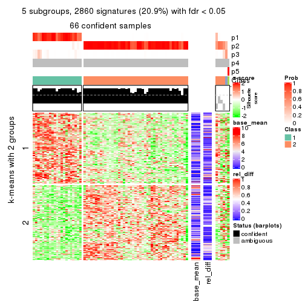
get_signatures(res, k = 6)
Signature heatmaps where rows are not scaled:
get_signatures(res, k = 2, scale_rows = FALSE)
get_signatures(res, k = 3, scale_rows = FALSE)
get_signatures(res, k = 4, scale_rows = FALSE)
get_signatures(res, k = 5, scale_rows = FALSE)
get_signatures(res, k = 6, scale_rows = FALSE)
Compare the overlap of signatures from different k:
compare_signatures(res)
get_signature() returns a data frame invisibly. TO get the list of signatures, the function
call should be assigned to a variable explicitly. In following code, if plot argument is set
to FALSE, no heatmap is plotted while only the differential analysis is performed.
# code only for demonstration
tb = get_signature(res, k = ..., plot = FALSE)
An example of the output of tb is:
#> which_row fdr mean_1 mean_2 scaled_mean_1 scaled_mean_2 km
#> 1 38 0.042760348 8.373488 9.131774 -0.5533452 0.5164555 1
#> 2 40 0.018707592 7.106213 8.469186 -0.6173731 0.5762149 1
#> 3 55 0.019134737 10.221463 11.207825 -0.6159697 0.5749050 1
#> 4 59 0.006059896 5.921854 7.869574 -0.6899429 0.6439467 1
#> 5 60 0.018055526 8.928898 10.211722 -0.6204761 0.5791110 1
#> 6 98 0.009384629 15.714769 14.887706 0.6635654 -0.6193277 2
...
The columns in tb are:
which_row: row indices corresponding to the input matrix.fdr: FDR for the differential test. mean_x: The mean value in group x.scaled_mean_x: The mean value in group x after rows are scaled.km: Row groups if k-means clustering is applied to rows.UMAP plot which shows how samples are separated.
dimension_reduction(res, k = 2, method = "UMAP")

dimension_reduction(res, k = 3, method = "UMAP")
dimension_reduction(res, k = 4, method = "UMAP")
dimension_reduction(res, k = 5, method = "UMAP")
dimension_reduction(res, k = 6, method = "UMAP")
Following heatmap shows how subgroups are split when increasing k:
collect_classes(res)
If matrix rows can be associated to genes, consider to use GO_Enrichment(res,
...) to perform function enrichment for the signature genes.
The object with results only for a single top-value method and a single partition method can be extracted as:
res = res_list["CV", "mclust"]
# you can also extract it by
# res = res_list["CV:mclust"]
A summary of res and all the functions that can be applied to it:
res
#> A 'ConsensusPartition' object with k = 2, 3, 4, 5, 6.
#> On a matrix with 13673 rows and 72 columns.
#> Top rows (1000, 2000, 3000, 4000, 5000) are extracted by 'CV' method.
#> Subgroups are detected by 'mclust' method.
#> Performed in total 1250 partitions by row resampling.
#> Best k for subgroups seems to be 3.
#>
#> Following methods can be applied to this 'ConsensusPartition' object:
#> [1] "cola_report" "collect_classes" "collect_plots"
#> [4] "collect_stats" "colnames" "compare_signatures"
#> [7] "consensus_heatmap" "dimension_reduction" "functional_enrichment"
#> [10] "get_anno_col" "get_anno" "get_classes"
#> [13] "get_consensus" "get_matrix" "get_membership"
#> [16] "get_param" "get_signatures" "get_stats"
#> [19] "is_best_k" "is_stable_k" "membership_heatmap"
#> [22] "ncol" "nrow" "plot_ecdf"
#> [25] "rownames" "select_partition_number" "show"
#> [28] "suggest_best_k" "test_to_known_factors"
collect_plots() function collects all the plots made from res for all k (number of partitions)
into one single page to provide an easy and fast comparison between different k.
collect_plots(res)
The plots are:
k and the heatmap of
predicted classes for each k.k.k.k.All the plots in panels can be made by individual functions and they are plotted later in this section.
select_partition_number() produces several plots showing different
statistics for choosing “optimized” k. There are following statistics:
k;k, the area increased is defined as \(A_k - A_{k-1}\).The detailed explanations of these statistics can be found in the cola vignette.
Generally speaking, lower PAC score, higher mean silhouette score or higher
concordance corresponds to better partition. Rand index and Jaccard index
measure how similar the current partition is compared to partition with k-1.
If they are too similar, we won't accept k is better than k-1.
select_partition_number(res)
The numeric values for all these statistics can be obtained by get_stats().
get_stats(res)
#> k 1-PAC mean_silhouette concordance area_increased Rand Jaccard
#> 2 2 0.519 0.942 0.914 0.3863 0.559 0.559
#> 3 3 0.623 0.825 0.894 0.4435 0.903 0.830
#> 4 4 0.601 0.662 0.818 0.2118 0.842 0.672
#> 5 5 0.533 0.562 0.745 0.0992 0.861 0.606
#> 6 6 0.595 0.478 0.746 0.0476 0.838 0.486
suggest_best_k() suggests the best \(k\) based on these statistics. The rules are as follows:
NA.suggest_best_k(res)
#> [1] 3
Following shows the table of the partitions (You need to click the show/hide
code output link to see it). The membership matrix (columns with name p*)
is inferred by
clue::cl_consensus()
function with the SE method. Basically the value in the membership matrix
represents the probability to belong to a certain group. The finall class
label for an item is determined with the group with highest probability it
belongs to.
In get_classes() function, the entropy is calculated from the membership
matrix and the silhouette score is calculated from the consensus matrix.
cbind(get_classes(res, k = 2), get_membership(res, k = 2))
#> class entropy silhouette p1 p2
#> SRR1585486 1 0.7056 0.998 0.808 0.192
#> SRR1585488 1 0.7056 0.998 0.808 0.192
#> SRR1585487 2 0.1633 0.940 0.024 0.976
#> SRR1585489 2 0.0000 0.958 0.000 1.000
#> SRR1585490 1 0.7056 0.998 0.808 0.192
#> SRR1585491 1 0.7056 0.998 0.808 0.192
#> SRR1585492 2 0.9358 0.260 0.352 0.648
#> SRR1585493 2 0.0000 0.958 0.000 1.000
#> SRR1585494 2 0.0000 0.958 0.000 1.000
#> SRR1585496 2 0.0000 0.958 0.000 1.000
#> SRR1585495 2 0.0000 0.958 0.000 1.000
#> SRR1585498 2 0.0000 0.958 0.000 1.000
#> SRR1585497 2 0.0000 0.958 0.000 1.000
#> SRR1585499 1 0.7056 0.998 0.808 0.192
#> SRR1585500 2 0.7528 0.756 0.216 0.784
#> SRR1585501 2 0.0672 0.953 0.008 0.992
#> SRR1585502 2 0.7453 0.760 0.212 0.788
#> SRR1585503 2 0.2423 0.925 0.040 0.960
#> SRR1585504 2 0.0376 0.955 0.004 0.996
#> SRR1585505 2 0.1633 0.940 0.024 0.976
#> SRR1585506 2 0.0000 0.958 0.000 1.000
#> SRR1585508 2 0.0000 0.958 0.000 1.000
#> SRR1585507 2 0.0000 0.958 0.000 1.000
#> SRR1585509 1 0.7056 0.998 0.808 0.192
#> SRR1585510 2 0.0000 0.958 0.000 1.000
#> SRR1585511 2 0.0376 0.955 0.004 0.996
#> SRR1585512 2 0.0000 0.958 0.000 1.000
#> SRR1585513 1 0.7056 0.998 0.808 0.192
#> SRR1585516 2 0.0672 0.953 0.008 0.992
#> SRR1585515 1 0.7056 0.998 0.808 0.192
#> SRR1585514 2 0.1184 0.947 0.016 0.984
#> SRR1585518 2 0.0000 0.958 0.000 1.000
#> SRR1585517 2 0.1414 0.943 0.020 0.980
#> SRR1585519 2 0.0000 0.958 0.000 1.000
#> SRR1585520 2 0.0000 0.958 0.000 1.000
#> SRR1585522 2 0.0000 0.958 0.000 1.000
#> SRR1585521 1 0.7056 0.998 0.808 0.192
#> SRR1585524 2 0.7950 0.593 0.240 0.760
#> SRR1585523 1 0.7056 0.998 0.808 0.192
#> SRR1585525 1 0.7602 0.963 0.780 0.220
#> SRR1585526 2 0.0672 0.953 0.008 0.992
#> SRR1585527 1 0.7056 0.998 0.808 0.192
#> SRR1585528 2 0.0000 0.958 0.000 1.000
#> SRR1585529 2 0.0000 0.958 0.000 1.000
#> SRR1585530 2 0.0000 0.958 0.000 1.000
#> SRR1585531 1 0.7056 0.998 0.808 0.192
#> SRR1585532 2 0.0000 0.958 0.000 1.000
#> SRR1585533 1 0.7056 0.998 0.808 0.192
#> SRR1585534 1 0.7056 0.998 0.808 0.192
#> SRR1585535 2 0.0000 0.958 0.000 1.000
#> SRR1585536 2 0.0000 0.958 0.000 1.000
#> SRR1585537 2 0.7528 0.756 0.216 0.784
#> SRR1585538 1 0.7056 0.998 0.808 0.192
#> SRR1585539 1 0.7056 0.998 0.808 0.192
#> SRR1585541 2 0.0938 0.950 0.012 0.988
#> SRR1585540 2 0.0000 0.958 0.000 1.000
#> SRR1585542 1 0.7056 0.998 0.808 0.192
#> SRR1585543 1 0.7056 0.998 0.808 0.192
#> SRR1585544 2 0.4431 0.889 0.092 0.908
#> SRR1585546 1 0.7056 0.998 0.808 0.192
#> SRR1585545 2 0.0376 0.955 0.004 0.996
#> SRR1585547 1 0.7056 0.998 0.808 0.192
#> SRR1585548 1 0.7056 0.998 0.808 0.192
#> SRR1585549 2 0.0000 0.958 0.000 1.000
#> SRR1585550 1 0.7056 0.998 0.808 0.192
#> SRR1585551 2 0.0938 0.950 0.012 0.988
#> SRR1585552 2 0.0000 0.958 0.000 1.000
#> SRR1585553 2 0.0000 0.958 0.000 1.000
#> SRR1585554 2 0.0000 0.958 0.000 1.000
#> SRR1585555 2 0.0000 0.958 0.000 1.000
#> SRR1585557 2 0.7528 0.756 0.216 0.784
#> SRR1585556 2 0.0000 0.958 0.000 1.000
cbind(get_classes(res, k = 3), get_membership(res, k = 3))
#> class entropy silhouette p1 p2 p3
#> SRR1585486 1 0.0000 0.987 1.000 0.000 0.000
#> SRR1585488 1 0.0000 0.987 1.000 0.000 0.000
#> SRR1585487 2 0.7692 0.664 0.108 0.668 0.224
#> SRR1585489 2 0.4555 0.775 0.000 0.800 0.200
#> SRR1585490 1 0.0000 0.987 1.000 0.000 0.000
#> SRR1585491 1 0.0237 0.987 0.996 0.000 0.004
#> SRR1585492 1 0.4708 0.720 0.844 0.120 0.036
#> SRR1585493 2 0.0000 0.798 0.000 1.000 0.000
#> SRR1585494 2 0.1289 0.804 0.000 0.968 0.032
#> SRR1585496 2 0.3192 0.745 0.000 0.888 0.112
#> SRR1585495 2 0.7651 0.668 0.108 0.672 0.220
#> SRR1585498 2 0.1643 0.804 0.000 0.956 0.044
#> SRR1585497 2 0.0747 0.803 0.000 0.984 0.016
#> SRR1585499 1 0.0000 0.987 1.000 0.000 0.000
#> SRR1585500 3 0.7097 0.763 0.108 0.172 0.720
#> SRR1585501 2 0.1411 0.785 0.000 0.964 0.036
#> SRR1585502 3 0.5216 0.744 0.000 0.260 0.740
#> SRR1585503 2 0.7717 0.663 0.112 0.668 0.220
#> SRR1585504 2 0.3116 0.743 0.000 0.892 0.108
#> SRR1585505 2 0.7717 0.663 0.112 0.668 0.220
#> SRR1585506 2 0.3116 0.743 0.000 0.892 0.108
#> SRR1585508 2 0.0000 0.798 0.000 1.000 0.000
#> SRR1585507 2 0.4750 0.768 0.000 0.784 0.216
#> SRR1585509 1 0.0000 0.987 1.000 0.000 0.000
#> SRR1585510 2 0.1411 0.785 0.000 0.964 0.036
#> SRR1585511 2 0.3116 0.743 0.000 0.892 0.108
#> SRR1585512 2 0.0424 0.801 0.000 0.992 0.008
#> SRR1585513 1 0.0237 0.987 0.996 0.000 0.004
#> SRR1585516 2 0.4796 0.766 0.000 0.780 0.220
#> SRR1585515 1 0.0000 0.987 1.000 0.000 0.000
#> SRR1585514 2 0.4796 0.766 0.000 0.780 0.220
#> SRR1585518 2 0.0000 0.798 0.000 1.000 0.000
#> SRR1585517 2 0.7610 0.670 0.108 0.676 0.216
#> SRR1585519 2 0.4796 0.766 0.000 0.780 0.220
#> SRR1585520 2 0.4796 0.766 0.000 0.780 0.220
#> SRR1585522 2 0.3116 0.797 0.000 0.892 0.108
#> SRR1585521 1 0.0237 0.987 0.996 0.000 0.004
#> SRR1585524 2 0.7509 0.433 0.300 0.636 0.064
#> SRR1585523 1 0.0000 0.987 1.000 0.000 0.000
#> SRR1585525 1 0.0592 0.975 0.988 0.000 0.012
#> SRR1585526 2 0.3116 0.743 0.000 0.892 0.108
#> SRR1585527 1 0.0000 0.987 1.000 0.000 0.000
#> SRR1585528 2 0.0000 0.798 0.000 1.000 0.000
#> SRR1585529 2 0.4605 0.773 0.000 0.796 0.204
#> SRR1585530 2 0.0000 0.798 0.000 1.000 0.000
#> SRR1585531 1 0.0237 0.987 0.996 0.000 0.004
#> SRR1585532 2 0.4796 0.766 0.000 0.780 0.220
#> SRR1585533 1 0.0237 0.985 0.996 0.000 0.004
#> SRR1585534 1 0.0237 0.987 0.996 0.000 0.004
#> SRR1585535 2 0.0747 0.803 0.000 0.984 0.016
#> SRR1585536 2 0.4796 0.766 0.000 0.780 0.220
#> SRR1585537 3 0.3425 0.719 0.112 0.004 0.884
#> SRR1585538 1 0.0237 0.987 0.996 0.000 0.004
#> SRR1585539 1 0.0237 0.987 0.996 0.000 0.004
#> SRR1585541 2 0.4796 0.766 0.000 0.780 0.220
#> SRR1585540 2 0.0000 0.798 0.000 1.000 0.000
#> SRR1585542 1 0.0237 0.987 0.996 0.000 0.004
#> SRR1585543 1 0.0237 0.987 0.996 0.000 0.004
#> SRR1585544 2 0.8553 0.459 0.112 0.552 0.336
#> SRR1585546 1 0.0000 0.987 1.000 0.000 0.000
#> SRR1585545 2 0.4796 0.766 0.000 0.780 0.220
#> SRR1585547 1 0.0000 0.987 1.000 0.000 0.000
#> SRR1585548 1 0.0237 0.987 0.996 0.000 0.004
#> SRR1585549 2 0.3116 0.743 0.000 0.892 0.108
#> SRR1585550 1 0.0237 0.987 0.996 0.000 0.004
#> SRR1585551 2 0.3116 0.743 0.000 0.892 0.108
#> SRR1585552 2 0.0000 0.798 0.000 1.000 0.000
#> SRR1585553 2 0.4399 0.779 0.000 0.812 0.188
#> SRR1585554 2 0.4555 0.775 0.000 0.800 0.200
#> SRR1585555 2 0.0747 0.793 0.000 0.984 0.016
#> SRR1585557 3 0.4654 0.781 0.000 0.208 0.792
#> SRR1585556 2 0.4796 0.766 0.000 0.780 0.220
cbind(get_classes(res, k = 4), get_membership(res, k = 4))
#> class entropy silhouette p1 p2 p3 p4
#> SRR1585486 1 0.0376 0.91227 0.992 0.000 0.004 0.004
#> SRR1585488 1 0.0000 0.91300 1.000 0.000 0.000 0.000
#> SRR1585487 4 0.7789 0.57063 0.120 0.144 0.116 0.620
#> SRR1585489 2 0.4836 0.34217 0.000 0.672 0.008 0.320
#> SRR1585490 1 0.0000 0.91300 1.000 0.000 0.000 0.000
#> SRR1585491 1 0.2197 0.89941 0.916 0.000 0.080 0.004
#> SRR1585492 1 0.6634 0.00313 0.512 0.072 0.004 0.412
#> SRR1585493 2 0.0000 0.73322 0.000 1.000 0.000 0.000
#> SRR1585494 2 0.3311 0.61365 0.000 0.828 0.000 0.172
#> SRR1585496 2 0.4500 0.52108 0.000 0.684 0.000 0.316
#> SRR1585495 4 0.5649 0.55423 0.056 0.084 0.088 0.772
#> SRR1585498 2 0.4282 0.61892 0.000 0.816 0.060 0.124
#> SRR1585497 2 0.2480 0.68882 0.000 0.904 0.008 0.088
#> SRR1585499 1 0.0817 0.90747 0.976 0.000 0.024 0.000
#> SRR1585500 3 0.4259 0.65447 0.012 0.012 0.800 0.176
#> SRR1585501 2 0.1474 0.71956 0.000 0.948 0.000 0.052
#> SRR1585502 3 0.6140 0.57727 0.000 0.252 0.652 0.096
#> SRR1585503 4 0.7196 0.70365 0.044 0.244 0.092 0.620
#> SRR1585504 2 0.3837 0.60689 0.000 0.776 0.000 0.224
#> SRR1585505 4 0.6250 0.70064 0.068 0.192 0.036 0.704
#> SRR1585506 2 0.3837 0.60689 0.000 0.776 0.000 0.224
#> SRR1585508 2 0.0000 0.73322 0.000 1.000 0.000 0.000
#> SRR1585507 2 0.5277 -0.21076 0.000 0.532 0.008 0.460
#> SRR1585509 1 0.0188 0.91266 0.996 0.000 0.004 0.000
#> SRR1585510 2 0.1022 0.72601 0.000 0.968 0.000 0.032
#> SRR1585511 2 0.3837 0.60689 0.000 0.776 0.000 0.224
#> SRR1585512 2 0.1557 0.71161 0.000 0.944 0.000 0.056
#> SRR1585513 1 0.2473 0.89671 0.908 0.000 0.080 0.012
#> SRR1585516 4 0.4511 0.72524 0.000 0.268 0.008 0.724
#> SRR1585515 1 0.0336 0.91274 0.992 0.000 0.000 0.008
#> SRR1585514 4 0.5424 0.72661 0.004 0.284 0.032 0.680
#> SRR1585518 2 0.0000 0.73322 0.000 1.000 0.000 0.000
#> SRR1585517 4 0.8215 0.54936 0.088 0.240 0.120 0.552
#> SRR1585519 2 0.5231 0.12175 0.000 0.604 0.012 0.384
#> SRR1585520 2 0.5372 -0.15345 0.000 0.544 0.012 0.444
#> SRR1585522 2 0.3123 0.63629 0.000 0.844 0.000 0.156
#> SRR1585521 1 0.2401 0.90004 0.904 0.000 0.092 0.004
#> SRR1585524 4 0.7371 0.55192 0.220 0.228 0.004 0.548
#> SRR1585523 1 0.0657 0.91073 0.984 0.000 0.012 0.004
#> SRR1585525 1 0.5331 0.46102 0.644 0.000 0.024 0.332
#> SRR1585526 2 0.3975 0.58751 0.000 0.760 0.000 0.240
#> SRR1585527 1 0.2334 0.86649 0.908 0.000 0.088 0.004
#> SRR1585528 2 0.0000 0.73322 0.000 1.000 0.000 0.000
#> SRR1585529 2 0.4584 0.39467 0.000 0.696 0.004 0.300
#> SRR1585530 2 0.0000 0.73322 0.000 1.000 0.000 0.000
#> SRR1585531 1 0.1022 0.91308 0.968 0.000 0.032 0.000
#> SRR1585532 4 0.5268 0.41018 0.000 0.452 0.008 0.540
#> SRR1585533 1 0.2704 0.83573 0.876 0.000 0.124 0.000
#> SRR1585534 1 0.2473 0.89671 0.908 0.000 0.080 0.012
#> SRR1585535 2 0.0592 0.73238 0.000 0.984 0.000 0.016
#> SRR1585536 2 0.5143 0.21221 0.000 0.628 0.012 0.360
#> SRR1585537 3 0.3837 0.65070 0.000 0.000 0.776 0.224
#> SRR1585538 1 0.2197 0.89941 0.916 0.000 0.080 0.004
#> SRR1585539 1 0.2125 0.90089 0.920 0.000 0.076 0.004
#> SRR1585541 4 0.4647 0.71907 0.008 0.288 0.000 0.704
#> SRR1585540 2 0.0188 0.73273 0.000 0.996 0.000 0.004
#> SRR1585542 1 0.2542 0.89764 0.904 0.000 0.084 0.012
#> SRR1585543 1 0.1488 0.90737 0.956 0.000 0.032 0.012
#> SRR1585544 4 0.6229 0.49346 0.000 0.116 0.228 0.656
#> SRR1585546 1 0.0000 0.91300 1.000 0.000 0.000 0.000
#> SRR1585545 4 0.5228 0.72651 0.000 0.268 0.036 0.696
#> SRR1585547 1 0.0000 0.91300 1.000 0.000 0.000 0.000
#> SRR1585548 1 0.2473 0.89671 0.908 0.000 0.080 0.012
#> SRR1585549 2 0.3837 0.60689 0.000 0.776 0.000 0.224
#> SRR1585550 1 0.1302 0.91106 0.956 0.000 0.044 0.000
#> SRR1585551 2 0.4304 0.52512 0.000 0.716 0.000 0.284
#> SRR1585552 2 0.0000 0.73322 0.000 1.000 0.000 0.000
#> SRR1585553 2 0.3972 0.56542 0.000 0.788 0.008 0.204
#> SRR1585554 2 0.4844 0.38637 0.000 0.688 0.012 0.300
#> SRR1585555 2 0.0707 0.72913 0.000 0.980 0.000 0.020
#> SRR1585557 3 0.6912 0.49038 0.000 0.192 0.592 0.216
#> SRR1585556 4 0.5329 0.52953 0.000 0.420 0.012 0.568
cbind(get_classes(res, k = 5), get_membership(res, k = 5))
#> class entropy silhouette p1 p2 p3 p4 p5
#> SRR1585486 1 0.2179 0.7934 0.896 0.004 0.000 0.100 0.000
#> SRR1585488 1 0.2338 0.7906 0.884 0.004 0.000 0.112 0.000
#> SRR1585487 2 0.4048 0.3847 0.000 0.764 0.012 0.016 0.208
#> SRR1585489 2 0.4528 0.2549 0.000 0.548 0.444 0.008 0.000
#> SRR1585490 1 0.2286 0.7909 0.888 0.004 0.000 0.108 0.000
#> SRR1585491 4 0.4084 0.7126 0.328 0.004 0.000 0.668 0.000
#> SRR1585492 1 0.3768 0.5188 0.760 0.228 0.008 0.004 0.000
#> SRR1585493 3 0.2230 0.7242 0.000 0.116 0.884 0.000 0.000
#> SRR1585494 3 0.3816 0.4687 0.000 0.304 0.696 0.000 0.000
#> SRR1585496 3 0.5135 0.5469 0.000 0.200 0.716 0.036 0.048
#> SRR1585495 2 0.4219 0.3627 0.004 0.792 0.132 0.004 0.068
#> SRR1585498 2 0.6228 0.3794 0.000 0.564 0.248 0.004 0.184
#> SRR1585497 3 0.2865 0.7129 0.000 0.132 0.856 0.004 0.008
#> SRR1585499 1 0.0703 0.7736 0.976 0.000 0.000 0.024 0.000
#> SRR1585500 5 0.3640 0.6237 0.004 0.052 0.096 0.008 0.840
#> SRR1585501 3 0.3904 0.7121 0.000 0.156 0.792 0.052 0.000
#> SRR1585502 5 0.5064 0.6034 0.000 0.140 0.060 0.052 0.748
#> SRR1585503 2 0.5390 0.3752 0.056 0.704 0.016 0.016 0.208
#> SRR1585504 3 0.3607 0.6701 0.000 0.056 0.840 0.092 0.012
#> SRR1585505 2 0.5208 0.4093 0.168 0.728 0.052 0.000 0.052
#> SRR1585506 3 0.4450 0.6307 0.000 0.116 0.780 0.092 0.012
#> SRR1585508 3 0.1965 0.7278 0.000 0.096 0.904 0.000 0.000
#> SRR1585507 2 0.4473 0.3288 0.000 0.580 0.412 0.008 0.000
#> SRR1585509 1 0.2286 0.7928 0.888 0.004 0.000 0.108 0.000
#> SRR1585510 3 0.4201 0.6861 0.000 0.204 0.752 0.044 0.000
#> SRR1585511 3 0.3661 0.6689 0.000 0.056 0.836 0.096 0.012
#> SRR1585512 3 0.2929 0.6637 0.000 0.180 0.820 0.000 0.000
#> SRR1585513 4 0.3336 0.7631 0.228 0.000 0.000 0.772 0.000
#> SRR1585516 2 0.2264 0.4998 0.000 0.912 0.024 0.004 0.060
#> SRR1585515 1 0.3715 0.5827 0.736 0.004 0.000 0.260 0.000
#> SRR1585514 2 0.4798 0.4766 0.012 0.752 0.072 0.004 0.160
#> SRR1585518 3 0.2020 0.7283 0.000 0.100 0.900 0.000 0.000
#> SRR1585517 2 0.4048 0.3847 0.000 0.764 0.012 0.016 0.208
#> SRR1585519 2 0.4183 0.4933 0.000 0.668 0.324 0.008 0.000
#> SRR1585520 2 0.4538 0.2137 0.000 0.540 0.452 0.008 0.000
#> SRR1585522 3 0.3937 0.5610 0.000 0.252 0.736 0.004 0.008
#> SRR1585521 4 0.4278 0.6497 0.452 0.000 0.000 0.548 0.000
#> SRR1585524 2 0.4252 0.3022 0.280 0.700 0.020 0.000 0.000
#> SRR1585523 1 0.2249 0.7939 0.896 0.008 0.000 0.096 0.000
#> SRR1585525 1 0.1331 0.7462 0.952 0.040 0.000 0.008 0.000
#> SRR1585526 3 0.5196 0.5691 0.000 0.180 0.712 0.092 0.016
#> SRR1585527 1 0.4824 -0.3743 0.512 0.000 0.000 0.468 0.020
#> SRR1585528 3 0.2179 0.7265 0.000 0.112 0.888 0.000 0.000
#> SRR1585529 2 0.4452 0.1057 0.000 0.500 0.496 0.004 0.000
#> SRR1585530 3 0.1557 0.7267 0.000 0.052 0.940 0.000 0.008
#> SRR1585531 1 0.1732 0.7353 0.920 0.000 0.000 0.080 0.000
#> SRR1585532 2 0.4147 0.4188 0.000 0.676 0.316 0.008 0.000
#> SRR1585533 1 0.0566 0.7720 0.984 0.000 0.000 0.004 0.012
#> SRR1585534 4 0.2732 0.7662 0.160 0.000 0.000 0.840 0.000
#> SRR1585535 3 0.2605 0.7272 0.000 0.148 0.852 0.000 0.000
#> SRR1585536 3 0.4807 -0.1545 0.000 0.464 0.520 0.008 0.008
#> SRR1585537 5 0.3719 0.6122 0.004 0.208 0.000 0.012 0.776
#> SRR1585538 4 0.4101 0.6461 0.372 0.000 0.000 0.628 0.000
#> SRR1585539 4 0.4227 0.5423 0.420 0.000 0.000 0.580 0.000
#> SRR1585541 2 0.3720 0.5338 0.012 0.760 0.228 0.000 0.000
#> SRR1585540 3 0.2233 0.7285 0.000 0.104 0.892 0.004 0.000
#> SRR1585542 4 0.3878 0.6983 0.236 0.000 0.000 0.748 0.016
#> SRR1585543 1 0.0963 0.7671 0.964 0.000 0.000 0.036 0.000
#> SRR1585544 2 0.4832 0.2346 0.004 0.684 0.036 0.004 0.272
#> SRR1585546 1 0.2471 0.7782 0.864 0.000 0.000 0.136 0.000
#> SRR1585545 2 0.3319 0.4506 0.000 0.820 0.020 0.000 0.160
#> SRR1585547 1 0.2329 0.7858 0.876 0.000 0.000 0.124 0.000
#> SRR1585548 4 0.2813 0.7704 0.168 0.000 0.000 0.832 0.000
#> SRR1585549 3 0.3800 0.6643 0.000 0.068 0.828 0.092 0.012
#> SRR1585550 1 0.3300 0.5263 0.792 0.000 0.000 0.204 0.004
#> SRR1585551 3 0.5328 0.5561 0.000 0.184 0.700 0.100 0.016
#> SRR1585552 3 0.2230 0.7260 0.000 0.116 0.884 0.000 0.000
#> SRR1585553 3 0.4066 0.4534 0.000 0.324 0.672 0.004 0.000
#> SRR1585554 3 0.4446 -0.0615 0.000 0.476 0.520 0.004 0.000
#> SRR1585555 3 0.3477 0.7254 0.000 0.136 0.824 0.040 0.000
#> SRR1585557 5 0.5641 0.4755 0.000 0.312 0.088 0.004 0.596
#> SRR1585556 2 0.3814 0.5303 0.000 0.720 0.276 0.004 0.000
cbind(get_classes(res, k = 6), get_membership(res, k = 6))
#> class entropy silhouette p1 p2 p3 p4 p5 p6
#> SRR1585486 1 0.3236 0.7129 0.796 0.000 0.000 0.180 0.000 0.024
#> SRR1585488 1 0.2883 0.7075 0.788 0.000 0.000 0.212 0.000 0.000
#> SRR1585487 6 0.1713 0.8022 0.000 0.028 0.044 0.000 0.000 0.928
#> SRR1585489 2 0.1007 0.5587 0.000 0.956 0.000 0.000 0.000 0.044
#> SRR1585490 1 0.2964 0.7086 0.792 0.000 0.000 0.204 0.004 0.000
#> SRR1585491 4 0.2996 0.6876 0.228 0.000 0.000 0.772 0.000 0.000
#> SRR1585492 1 0.3608 0.5448 0.716 0.012 0.000 0.000 0.000 0.272
#> SRR1585493 2 0.3693 0.3175 0.000 0.756 0.216 0.000 0.012 0.016
#> SRR1585494 2 0.1643 0.5381 0.000 0.924 0.068 0.000 0.008 0.000
#> SRR1585496 3 0.5156 0.5674 0.000 0.232 0.616 0.000 0.000 0.152
#> SRR1585495 2 0.5945 0.1703 0.000 0.492 0.240 0.000 0.004 0.264
#> SRR1585498 2 0.5912 -0.1147 0.000 0.472 0.192 0.000 0.004 0.332
#> SRR1585497 2 0.3888 0.3894 0.000 0.752 0.208 0.000 0.016 0.024
#> SRR1585499 1 0.0837 0.6882 0.972 0.000 0.000 0.020 0.004 0.004
#> SRR1585500 5 0.5767 0.3652 0.000 0.000 0.176 0.000 0.448 0.376
#> SRR1585501 3 0.4365 0.4401 0.000 0.332 0.636 0.000 0.024 0.008
#> SRR1585502 5 0.7057 0.4670 0.000 0.160 0.108 0.000 0.408 0.324
#> SRR1585503 6 0.1710 0.7963 0.020 0.028 0.016 0.000 0.000 0.936
#> SRR1585504 3 0.3109 0.6374 0.000 0.224 0.772 0.000 0.000 0.004
#> SRR1585505 2 0.5886 -0.2455 0.200 0.412 0.000 0.000 0.000 0.388
#> SRR1585506 3 0.4064 0.6231 0.000 0.336 0.644 0.000 0.000 0.020
#> SRR1585508 2 0.3373 0.2974 0.000 0.744 0.248 0.000 0.008 0.000
#> SRR1585507 2 0.1346 0.5554 0.000 0.952 0.024 0.000 0.008 0.016
#> SRR1585509 1 0.3081 0.7071 0.776 0.000 0.000 0.220 0.004 0.000
#> SRR1585510 3 0.4468 0.4003 0.000 0.488 0.488 0.000 0.004 0.020
#> SRR1585511 3 0.2632 0.6001 0.000 0.164 0.832 0.000 0.000 0.004
#> SRR1585512 2 0.2212 0.4851 0.000 0.880 0.112 0.000 0.008 0.000
#> SRR1585513 4 0.1444 0.7561 0.072 0.000 0.000 0.928 0.000 0.000
#> SRR1585516 6 0.2979 0.7538 0.000 0.116 0.044 0.000 0.000 0.840
#> SRR1585515 1 0.3807 0.5457 0.628 0.000 0.000 0.368 0.000 0.004
#> SRR1585514 6 0.2425 0.7647 0.012 0.100 0.008 0.000 0.000 0.880
#> SRR1585518 3 0.3869 0.2335 0.000 0.500 0.500 0.000 0.000 0.000
#> SRR1585517 6 0.1789 0.8022 0.000 0.032 0.044 0.000 0.000 0.924
#> SRR1585519 2 0.1663 0.5505 0.000 0.912 0.000 0.000 0.000 0.088
#> SRR1585520 2 0.0603 0.5580 0.000 0.980 0.004 0.000 0.000 0.016
#> SRR1585522 2 0.3759 0.3923 0.000 0.752 0.216 0.000 0.008 0.024
#> SRR1585521 4 0.3890 0.5615 0.400 0.000 0.000 0.596 0.000 0.004
#> SRR1585524 6 0.5236 0.2994 0.364 0.080 0.008 0.000 0.000 0.548
#> SRR1585523 1 0.3602 0.7008 0.796 0.000 0.000 0.116 0.000 0.088
#> SRR1585525 1 0.1501 0.6547 0.924 0.000 0.000 0.000 0.000 0.076
#> SRR1585526 3 0.3705 0.6295 0.000 0.224 0.748 0.000 0.004 0.024
#> SRR1585527 1 0.4277 0.1467 0.576 0.000 0.008 0.408 0.004 0.004
#> SRR1585528 2 0.3468 0.1984 0.000 0.712 0.284 0.000 0.004 0.000
#> SRR1585529 2 0.0937 0.5594 0.000 0.960 0.000 0.000 0.000 0.040
#> SRR1585530 2 0.4727 -0.0218 0.000 0.560 0.400 0.000 0.016 0.024
#> SRR1585531 1 0.2883 0.4694 0.788 0.000 0.000 0.212 0.000 0.000
#> SRR1585532 2 0.3424 0.4375 0.000 0.772 0.024 0.000 0.000 0.204
#> SRR1585533 1 0.0748 0.6885 0.976 0.000 0.000 0.016 0.004 0.004
#> SRR1585534 4 0.0858 0.7520 0.028 0.000 0.004 0.968 0.000 0.000
#> SRR1585535 2 0.4090 -0.0128 0.000 0.652 0.328 0.000 0.016 0.004
#> SRR1585536 2 0.3530 0.4430 0.000 0.792 0.152 0.000 0.000 0.056
#> SRR1585537 5 0.2146 0.5197 0.000 0.116 0.004 0.000 0.880 0.000
#> SRR1585538 4 0.2854 0.7089 0.208 0.000 0.000 0.792 0.000 0.000
#> SRR1585539 4 0.3076 0.6656 0.240 0.000 0.000 0.760 0.000 0.000
#> SRR1585541 2 0.4130 0.3772 0.024 0.704 0.012 0.000 0.000 0.260
#> SRR1585540 2 0.3955 0.0366 0.000 0.560 0.436 0.000 0.004 0.000
#> SRR1585542 4 0.2871 0.6016 0.192 0.000 0.004 0.804 0.000 0.000
#> SRR1585543 1 0.2006 0.6260 0.892 0.000 0.000 0.104 0.000 0.004
#> SRR1585544 2 0.6184 -0.2604 0.000 0.372 0.004 0.000 0.260 0.364
#> SRR1585546 1 0.3265 0.6901 0.748 0.000 0.000 0.248 0.004 0.000
#> SRR1585545 6 0.2384 0.8030 0.000 0.064 0.048 0.000 0.000 0.888
#> SRR1585547 1 0.3081 0.7060 0.776 0.000 0.000 0.220 0.004 0.000
#> SRR1585548 4 0.1219 0.7591 0.048 0.000 0.004 0.948 0.000 0.000
#> SRR1585549 3 0.3992 0.6025 0.000 0.364 0.624 0.000 0.000 0.012
#> SRR1585550 1 0.3795 0.1586 0.632 0.000 0.000 0.364 0.000 0.004
#> SRR1585551 3 0.3514 0.6256 0.000 0.208 0.768 0.000 0.004 0.020
#> SRR1585552 2 0.4292 -0.2079 0.000 0.588 0.388 0.000 0.000 0.024
#> SRR1585553 2 0.2300 0.4903 0.000 0.856 0.144 0.000 0.000 0.000
#> SRR1585554 2 0.0692 0.5570 0.000 0.976 0.004 0.000 0.000 0.020
#> SRR1585555 2 0.4524 -0.3881 0.000 0.520 0.452 0.000 0.004 0.024
#> SRR1585557 5 0.4278 0.5018 0.000 0.360 0.004 0.000 0.616 0.020
#> SRR1585556 2 0.1957 0.5367 0.000 0.888 0.000 0.000 0.000 0.112
Heatmaps for the consensus matrix. It visualizes the probability of two samples to be in a same group.
consensus_heatmap(res, k = 2)
consensus_heatmap(res, k = 3)
consensus_heatmap(res, k = 4)
consensus_heatmap(res, k = 5)
consensus_heatmap(res, k = 6)
Heatmaps for the membership of samples in all partitions to see how consistent they are:
membership_heatmap(res, k = 2)
membership_heatmap(res, k = 3)
membership_heatmap(res, k = 4)
membership_heatmap(res, k = 5)
membership_heatmap(res, k = 6)
As soon as we have had the classes for columns, we can look for signatures which are significantly different between classes which can be candidate marks for certain classes. Following are the heatmaps for signatures.
Signature heatmaps where rows are scaled:
get_signatures(res, k = 2)
get_signatures(res, k = 3)
get_signatures(res, k = 4)
get_signatures(res, k = 5)

get_signatures(res, k = 6)
Signature heatmaps where rows are not scaled:
get_signatures(res, k = 2, scale_rows = FALSE)
get_signatures(res, k = 3, scale_rows = FALSE)
get_signatures(res, k = 4, scale_rows = FALSE)

get_signatures(res, k = 5, scale_rows = FALSE)
get_signatures(res, k = 6, scale_rows = FALSE)
Compare the overlap of signatures from different k:
compare_signatures(res)
get_signature() returns a data frame invisibly. TO get the list of signatures, the function
call should be assigned to a variable explicitly. In following code, if plot argument is set
to FALSE, no heatmap is plotted while only the differential analysis is performed.
# code only for demonstration
tb = get_signature(res, k = ..., plot = FALSE)
An example of the output of tb is:
#> which_row fdr mean_1 mean_2 scaled_mean_1 scaled_mean_2 km
#> 1 38 0.042760348 8.373488 9.131774 -0.5533452 0.5164555 1
#> 2 40 0.018707592 7.106213 8.469186 -0.6173731 0.5762149 1
#> 3 55 0.019134737 10.221463 11.207825 -0.6159697 0.5749050 1
#> 4 59 0.006059896 5.921854 7.869574 -0.6899429 0.6439467 1
#> 5 60 0.018055526 8.928898 10.211722 -0.6204761 0.5791110 1
#> 6 98 0.009384629 15.714769 14.887706 0.6635654 -0.6193277 2
...
The columns in tb are:
which_row: row indices corresponding to the input matrix.fdr: FDR for the differential test. mean_x: The mean value in group x.scaled_mean_x: The mean value in group x after rows are scaled.km: Row groups if k-means clustering is applied to rows.UMAP plot which shows how samples are separated.
dimension_reduction(res, k = 2, method = "UMAP")
dimension_reduction(res, k = 3, method = "UMAP")
dimension_reduction(res, k = 4, method = "UMAP")
dimension_reduction(res, k = 5, method = "UMAP")
dimension_reduction(res, k = 6, method = "UMAP")

Following heatmap shows how subgroups are split when increasing k:
collect_classes(res)
If matrix rows can be associated to genes, consider to use GO_Enrichment(res,
...) to perform function enrichment for the signature genes.
The object with results only for a single top-value method and a single partition method can be extracted as:
res = res_list["CV", "NMF"]
# you can also extract it by
# res = res_list["CV:NMF"]
A summary of res and all the functions that can be applied to it:
res
#> A 'ConsensusPartition' object with k = 2, 3, 4, 5, 6.
#> On a matrix with 13673 rows and 72 columns.
#> Top rows (1000, 2000, 3000, 4000, 5000) are extracted by 'CV' method.
#> Subgroups are detected by 'NMF' method.
#> Performed in total 1250 partitions by row resampling.
#> Best k for subgroups seems to be 2.
#>
#> Following methods can be applied to this 'ConsensusPartition' object:
#> [1] "cola_report" "collect_classes" "collect_plots"
#> [4] "collect_stats" "colnames" "compare_signatures"
#> [7] "consensus_heatmap" "dimension_reduction" "functional_enrichment"
#> [10] "get_anno_col" "get_anno" "get_classes"
#> [13] "get_consensus" "get_matrix" "get_membership"
#> [16] "get_param" "get_signatures" "get_stats"
#> [19] "is_best_k" "is_stable_k" "membership_heatmap"
#> [22] "ncol" "nrow" "plot_ecdf"
#> [25] "rownames" "select_partition_number" "show"
#> [28] "suggest_best_k" "test_to_known_factors"
collect_plots() function collects all the plots made from res for all k (number of partitions)
into one single page to provide an easy and fast comparison between different k.
collect_plots(res)
The plots are:
k and the heatmap of
predicted classes for each k.k.k.k.All the plots in panels can be made by individual functions and they are plotted later in this section.
select_partition_number() produces several plots showing different
statistics for choosing “optimized” k. There are following statistics:
k;k, the area increased is defined as \(A_k - A_{k-1}\).The detailed explanations of these statistics can be found in the cola vignette.
Generally speaking, lower PAC score, higher mean silhouette score or higher
concordance corresponds to better partition. Rand index and Jaccard index
measure how similar the current partition is compared to partition with k-1.
If they are too similar, we won't accept k is better than k-1.
select_partition_number(res)
The numeric values for all these statistics can be obtained by get_stats().
get_stats(res)
#> k 1-PAC mean_silhouette concordance area_increased Rand Jaccard
#> 2 2 1.000 0.981 0.993 0.4792 0.525 0.525
#> 3 3 0.769 0.833 0.913 0.2391 0.896 0.802
#> 4 4 0.639 0.655 0.805 0.1252 0.959 0.902
#> 5 5 0.531 0.529 0.742 0.1089 0.821 0.567
#> 6 6 0.541 0.398 0.692 0.0626 0.936 0.768
suggest_best_k() suggests the best \(k\) based on these statistics. The rules are as follows:
NA.suggest_best_k(res)
#> [1] 2
Following shows the table of the partitions (You need to click the show/hide
code output link to see it). The membership matrix (columns with name p*)
is inferred by
clue::cl_consensus()
function with the SE method. Basically the value in the membership matrix
represents the probability to belong to a certain group. The finall class
label for an item is determined with the group with highest probability it
belongs to.
In get_classes() function, the entropy is calculated from the membership
matrix and the silhouette score is calculated from the consensus matrix.
cbind(get_classes(res, k = 2), get_membership(res, k = 2))
#> class entropy silhouette p1 p2
#> SRR1585486 1 0.0000 0.999 1.000 0.000
#> SRR1585488 1 0.0000 0.999 1.000 0.000
#> SRR1585487 2 0.9815 0.282 0.420 0.580
#> SRR1585489 2 0.0000 0.988 0.000 1.000
#> SRR1585490 1 0.0000 0.999 1.000 0.000
#> SRR1585491 1 0.0000 0.999 1.000 0.000
#> SRR1585492 1 0.0000 0.999 1.000 0.000
#> SRR1585493 2 0.0000 0.988 0.000 1.000
#> SRR1585494 2 0.0000 0.988 0.000 1.000
#> SRR1585496 2 0.0000 0.988 0.000 1.000
#> SRR1585495 2 0.0000 0.988 0.000 1.000
#> SRR1585498 2 0.0000 0.988 0.000 1.000
#> SRR1585497 2 0.0000 0.988 0.000 1.000
#> SRR1585499 1 0.0000 0.999 1.000 0.000
#> SRR1585500 2 0.0000 0.988 0.000 1.000
#> SRR1585501 2 0.0000 0.988 0.000 1.000
#> SRR1585502 2 0.0000 0.988 0.000 1.000
#> SRR1585503 1 0.0000 0.999 1.000 0.000
#> SRR1585504 2 0.0000 0.988 0.000 1.000
#> SRR1585505 1 0.1184 0.983 0.984 0.016
#> SRR1585506 2 0.0000 0.988 0.000 1.000
#> SRR1585508 2 0.0000 0.988 0.000 1.000
#> SRR1585507 2 0.0000 0.988 0.000 1.000
#> SRR1585509 1 0.0000 0.999 1.000 0.000
#> SRR1585510 2 0.0000 0.988 0.000 1.000
#> SRR1585511 2 0.0000 0.988 0.000 1.000
#> SRR1585512 2 0.0000 0.988 0.000 1.000
#> SRR1585513 1 0.0000 0.999 1.000 0.000
#> SRR1585516 2 0.0000 0.988 0.000 1.000
#> SRR1585515 1 0.0000 0.999 1.000 0.000
#> SRR1585514 2 0.0000 0.988 0.000 1.000
#> SRR1585518 2 0.0000 0.988 0.000 1.000
#> SRR1585517 2 0.0000 0.988 0.000 1.000
#> SRR1585519 2 0.0000 0.988 0.000 1.000
#> SRR1585520 2 0.0000 0.988 0.000 1.000
#> SRR1585522 2 0.0000 0.988 0.000 1.000
#> SRR1585521 1 0.0000 0.999 1.000 0.000
#> SRR1585524 1 0.0000 0.999 1.000 0.000
#> SRR1585523 1 0.0000 0.999 1.000 0.000
#> SRR1585525 1 0.0000 0.999 1.000 0.000
#> SRR1585526 2 0.0000 0.988 0.000 1.000
#> SRR1585527 1 0.0000 0.999 1.000 0.000
#> SRR1585528 2 0.0000 0.988 0.000 1.000
#> SRR1585529 2 0.0000 0.988 0.000 1.000
#> SRR1585530 2 0.0000 0.988 0.000 1.000
#> SRR1585531 1 0.0000 0.999 1.000 0.000
#> SRR1585532 2 0.0000 0.988 0.000 1.000
#> SRR1585533 1 0.0000 0.999 1.000 0.000
#> SRR1585534 1 0.0000 0.999 1.000 0.000
#> SRR1585535 2 0.0000 0.988 0.000 1.000
#> SRR1585536 2 0.0000 0.988 0.000 1.000
#> SRR1585537 2 0.1633 0.966 0.024 0.976
#> SRR1585538 1 0.0000 0.999 1.000 0.000
#> SRR1585539 1 0.0000 0.999 1.000 0.000
#> SRR1585541 2 0.3733 0.916 0.072 0.928
#> SRR1585540 2 0.0000 0.988 0.000 1.000
#> SRR1585542 1 0.0000 0.999 1.000 0.000
#> SRR1585543 1 0.0000 0.999 1.000 0.000
#> SRR1585544 2 0.0672 0.981 0.008 0.992
#> SRR1585546 1 0.0000 0.999 1.000 0.000
#> SRR1585545 2 0.0000 0.988 0.000 1.000
#> SRR1585547 1 0.0000 0.999 1.000 0.000
#> SRR1585548 1 0.0000 0.999 1.000 0.000
#> SRR1585549 2 0.0000 0.988 0.000 1.000
#> SRR1585550 1 0.0000 0.999 1.000 0.000
#> SRR1585551 2 0.0000 0.988 0.000 1.000
#> SRR1585552 2 0.0000 0.988 0.000 1.000
#> SRR1585553 2 0.0000 0.988 0.000 1.000
#> SRR1585554 2 0.0000 0.988 0.000 1.000
#> SRR1585555 2 0.0000 0.988 0.000 1.000
#> SRR1585557 2 0.0000 0.988 0.000 1.000
#> SRR1585556 2 0.0000 0.988 0.000 1.000
cbind(get_classes(res, k = 3), get_membership(res, k = 3))
#> class entropy silhouette p1 p2 p3
#> SRR1585486 1 0.0892 0.93844 0.980 0.000 0.020
#> SRR1585488 1 0.0592 0.93817 0.988 0.000 0.012
#> SRR1585487 3 0.6677 0.65258 0.168 0.088 0.744
#> SRR1585489 2 0.0000 0.90656 0.000 1.000 0.000
#> SRR1585490 1 0.1529 0.93570 0.960 0.000 0.040
#> SRR1585491 1 0.1411 0.93505 0.964 0.000 0.036
#> SRR1585492 1 0.2261 0.92025 0.932 0.000 0.068
#> SRR1585493 2 0.0000 0.90656 0.000 1.000 0.000
#> SRR1585494 2 0.0237 0.90620 0.000 0.996 0.004
#> SRR1585496 2 0.4062 0.73715 0.000 0.836 0.164
#> SRR1585495 2 0.5291 0.54569 0.000 0.732 0.268
#> SRR1585498 2 0.3551 0.76281 0.000 0.868 0.132
#> SRR1585497 2 0.2959 0.82009 0.000 0.900 0.100
#> SRR1585499 1 0.1964 0.92437 0.944 0.000 0.056
#> SRR1585500 3 0.4842 0.77863 0.000 0.224 0.776
#> SRR1585501 2 0.0424 0.90633 0.000 0.992 0.008
#> SRR1585502 3 0.5560 0.73650 0.000 0.300 0.700
#> SRR1585503 1 0.5859 0.55785 0.656 0.000 0.344
#> SRR1585504 2 0.0747 0.90064 0.000 0.984 0.016
#> SRR1585505 1 0.3091 0.90676 0.912 0.016 0.072
#> SRR1585506 2 0.2959 0.82168 0.000 0.900 0.100
#> SRR1585508 2 0.0237 0.90620 0.000 0.996 0.004
#> SRR1585507 2 0.0237 0.90611 0.000 0.996 0.004
#> SRR1585509 1 0.0424 0.93865 0.992 0.000 0.008
#> SRR1585510 2 0.0424 0.90497 0.000 0.992 0.008
#> SRR1585511 2 0.0424 0.90506 0.000 0.992 0.008
#> SRR1585512 2 0.0000 0.90656 0.000 1.000 0.000
#> SRR1585513 1 0.2356 0.92387 0.928 0.000 0.072
#> SRR1585516 2 0.7245 -0.00769 0.036 0.596 0.368
#> SRR1585515 1 0.2625 0.91788 0.916 0.000 0.084
#> SRR1585514 2 0.7787 -0.01846 0.064 0.588 0.348
#> SRR1585518 2 0.0237 0.90620 0.000 0.996 0.004
#> SRR1585517 3 0.6402 0.77054 0.056 0.200 0.744
#> SRR1585519 2 0.0237 0.90590 0.000 0.996 0.004
#> SRR1585520 2 0.0000 0.90656 0.000 1.000 0.000
#> SRR1585522 2 0.0237 0.90611 0.000 0.996 0.004
#> SRR1585521 1 0.1529 0.93646 0.960 0.000 0.040
#> SRR1585524 1 0.2165 0.92715 0.936 0.000 0.064
#> SRR1585523 1 0.1411 0.93458 0.964 0.000 0.036
#> SRR1585525 1 0.1964 0.92489 0.944 0.000 0.056
#> SRR1585526 2 0.5254 0.54950 0.000 0.736 0.264
#> SRR1585527 1 0.2356 0.92616 0.928 0.000 0.072
#> SRR1585528 2 0.0237 0.90620 0.000 0.996 0.004
#> SRR1585529 2 0.0237 0.90579 0.000 0.996 0.004
#> SRR1585530 2 0.0424 0.90633 0.000 0.992 0.008
#> SRR1585531 1 0.0747 0.93870 0.984 0.000 0.016
#> SRR1585532 2 0.1129 0.89403 0.004 0.976 0.020
#> SRR1585533 1 0.3192 0.89000 0.888 0.000 0.112
#> SRR1585534 1 0.2796 0.91387 0.908 0.000 0.092
#> SRR1585535 2 0.0000 0.90656 0.000 1.000 0.000
#> SRR1585536 2 0.0424 0.90633 0.000 0.992 0.008
#> SRR1585537 3 0.2926 0.65586 0.040 0.036 0.924
#> SRR1585538 1 0.2625 0.91825 0.916 0.000 0.084
#> SRR1585539 1 0.2066 0.92850 0.940 0.000 0.060
#> SRR1585541 2 0.2173 0.85726 0.048 0.944 0.008
#> SRR1585540 2 0.0747 0.90004 0.000 0.984 0.016
#> SRR1585542 1 0.2959 0.90948 0.900 0.000 0.100
#> SRR1585543 1 0.1529 0.93770 0.960 0.000 0.040
#> SRR1585544 2 0.7692 0.40200 0.108 0.668 0.224
#> SRR1585546 1 0.0592 0.93889 0.988 0.000 0.012
#> SRR1585545 3 0.6518 0.38153 0.004 0.484 0.512
#> SRR1585547 1 0.0747 0.93791 0.984 0.000 0.016
#> SRR1585548 1 0.2796 0.91387 0.908 0.000 0.092
#> SRR1585549 2 0.0747 0.90064 0.000 0.984 0.016
#> SRR1585550 1 0.2066 0.92538 0.940 0.000 0.060
#> SRR1585551 2 0.3686 0.77018 0.000 0.860 0.140
#> SRR1585552 2 0.0237 0.90611 0.000 0.996 0.004
#> SRR1585553 2 0.1289 0.88845 0.000 0.968 0.032
#> SRR1585554 2 0.0237 0.90620 0.000 0.996 0.004
#> SRR1585555 2 0.0237 0.90611 0.000 0.996 0.004
#> SRR1585557 3 0.5678 0.72354 0.000 0.316 0.684
#> SRR1585556 2 0.0000 0.90656 0.000 1.000 0.000
cbind(get_classes(res, k = 4), get_membership(res, k = 4))
#> class entropy silhouette p1 p2 p3 p4
#> SRR1585486 1 0.1209 0.7530 0.964 0.004 0.000 0.032
#> SRR1585488 1 0.1792 0.7542 0.932 0.000 0.000 0.068
#> SRR1585487 3 0.8258 0.0227 0.228 0.020 0.424 0.328
#> SRR1585489 2 0.1833 0.8602 0.000 0.944 0.024 0.032
#> SRR1585490 1 0.2589 0.7367 0.884 0.000 0.000 0.116
#> SRR1585491 1 0.3266 0.7320 0.832 0.000 0.000 0.168
#> SRR1585492 1 0.4252 0.5999 0.744 0.004 0.000 0.252
#> SRR1585493 2 0.1452 0.8609 0.000 0.956 0.008 0.036
#> SRR1585494 2 0.0707 0.8631 0.000 0.980 0.000 0.020
#> SRR1585496 2 0.4980 0.5679 0.000 0.680 0.304 0.016
#> SRR1585495 2 0.6614 0.1553 0.004 0.480 0.448 0.068
#> SRR1585498 2 0.4978 0.4851 0.000 0.664 0.324 0.012
#> SRR1585497 2 0.5172 0.5665 0.000 0.704 0.036 0.260
#> SRR1585499 1 0.3528 0.6595 0.808 0.000 0.000 0.192
#> SRR1585500 3 0.1767 0.4843 0.000 0.012 0.944 0.044
#> SRR1585501 2 0.2363 0.8418 0.000 0.920 0.024 0.056
#> SRR1585502 3 0.2101 0.4837 0.000 0.060 0.928 0.012
#> SRR1585503 1 0.7330 0.3113 0.508 0.000 0.180 0.312
#> SRR1585504 2 0.2676 0.8227 0.000 0.896 0.092 0.012
#> SRR1585505 1 0.6056 0.4574 0.660 0.092 0.000 0.248
#> SRR1585506 2 0.4136 0.7193 0.000 0.788 0.196 0.016
#> SRR1585508 2 0.1004 0.8626 0.000 0.972 0.004 0.024
#> SRR1585507 2 0.1042 0.8653 0.000 0.972 0.020 0.008
#> SRR1585509 1 0.0336 0.7547 0.992 0.000 0.000 0.008
#> SRR1585510 2 0.1854 0.8582 0.000 0.940 0.048 0.012
#> SRR1585511 2 0.1452 0.8564 0.000 0.956 0.036 0.008
#> SRR1585512 2 0.1474 0.8569 0.000 0.948 0.000 0.052
#> SRR1585513 1 0.4220 0.6908 0.748 0.000 0.004 0.248
#> SRR1585516 4 0.9639 0.1966 0.132 0.280 0.248 0.340
#> SRR1585515 1 0.4673 0.6532 0.700 0.000 0.008 0.292
#> SRR1585514 4 0.9694 0.2555 0.180 0.312 0.176 0.332
#> SRR1585518 2 0.0921 0.8629 0.000 0.972 0.000 0.028
#> SRR1585517 3 0.9283 -0.1113 0.192 0.104 0.364 0.340
#> SRR1585519 2 0.2909 0.8204 0.000 0.888 0.092 0.020
#> SRR1585520 2 0.1557 0.8560 0.000 0.944 0.000 0.056
#> SRR1585522 2 0.1584 0.8635 0.000 0.952 0.012 0.036
#> SRR1585521 1 0.2814 0.7491 0.868 0.000 0.000 0.132
#> SRR1585524 1 0.3982 0.7093 0.776 0.000 0.004 0.220
#> SRR1585523 1 0.2334 0.7245 0.908 0.004 0.000 0.088
#> SRR1585525 1 0.3870 0.6491 0.788 0.004 0.000 0.208
#> SRR1585526 2 0.5576 0.3031 0.000 0.536 0.444 0.020
#> SRR1585527 1 0.3764 0.6407 0.784 0.000 0.000 0.216
#> SRR1585528 2 0.0779 0.8633 0.000 0.980 0.004 0.016
#> SRR1585529 2 0.1743 0.8555 0.000 0.940 0.004 0.056
#> SRR1585530 2 0.1059 0.8617 0.000 0.972 0.016 0.012
#> SRR1585531 1 0.1867 0.7503 0.928 0.000 0.000 0.072
#> SRR1585532 2 0.2983 0.8115 0.004 0.880 0.008 0.108
#> SRR1585533 1 0.4220 0.6099 0.748 0.000 0.004 0.248
#> SRR1585534 1 0.4882 0.6608 0.708 0.000 0.020 0.272
#> SRR1585535 2 0.1302 0.8599 0.000 0.956 0.000 0.044
#> SRR1585536 2 0.1059 0.8642 0.000 0.972 0.016 0.012
#> SRR1585537 3 0.5300 0.2349 0.000 0.012 0.580 0.408
#> SRR1585538 1 0.4936 0.6538 0.700 0.000 0.020 0.280
#> SRR1585539 1 0.3873 0.7062 0.772 0.000 0.000 0.228
#> SRR1585541 2 0.2363 0.8437 0.024 0.920 0.000 0.056
#> SRR1585540 2 0.2402 0.8379 0.000 0.912 0.012 0.076
#> SRR1585542 1 0.5478 0.6506 0.696 0.000 0.056 0.248
#> SRR1585543 1 0.4008 0.7167 0.756 0.000 0.000 0.244
#> SRR1585544 4 0.7123 -0.1901 0.156 0.048 0.140 0.656
#> SRR1585546 1 0.1389 0.7557 0.952 0.000 0.000 0.048
#> SRR1585545 3 0.7317 0.1872 0.048 0.208 0.628 0.116
#> SRR1585547 1 0.0469 0.7508 0.988 0.000 0.000 0.012
#> SRR1585548 1 0.4883 0.6488 0.696 0.000 0.016 0.288
#> SRR1585549 2 0.3443 0.7929 0.000 0.848 0.136 0.016
#> SRR1585550 1 0.3219 0.6861 0.836 0.000 0.000 0.164
#> SRR1585551 2 0.5345 0.3499 0.000 0.560 0.428 0.012
#> SRR1585552 2 0.0524 0.8633 0.000 0.988 0.008 0.004
#> SRR1585553 2 0.1661 0.8590 0.000 0.944 0.004 0.052
#> SRR1585554 2 0.1022 0.8640 0.000 0.968 0.000 0.032
#> SRR1585555 2 0.0804 0.8649 0.000 0.980 0.008 0.012
#> SRR1585557 3 0.3754 0.4628 0.000 0.084 0.852 0.064
#> SRR1585556 2 0.1211 0.8605 0.000 0.960 0.000 0.040
cbind(get_classes(res, k = 5), get_membership(res, k = 5))
#> class entropy silhouette p1 p2 p3 p4 p5
#> SRR1585486 1 0.5076 0.53466 0.560 0.008 0.004 0.412 0.016
#> SRR1585488 4 0.4630 -0.14788 0.416 0.000 0.008 0.572 0.004
#> SRR1585487 4 0.4831 0.51543 0.008 0.012 0.140 0.760 0.080
#> SRR1585489 2 0.3712 0.74991 0.012 0.852 0.052 0.020 0.064
#> SRR1585490 1 0.4664 0.47862 0.552 0.000 0.008 0.436 0.004
#> SRR1585491 4 0.3455 0.48780 0.208 0.000 0.000 0.784 0.008
#> SRR1585492 1 0.6462 0.54091 0.664 0.032 0.036 0.140 0.128
#> SRR1585493 2 0.4582 0.70726 0.024 0.764 0.164 0.000 0.048
#> SRR1585494 2 0.1701 0.76911 0.016 0.944 0.028 0.000 0.012
#> SRR1585496 3 0.5837 0.32789 0.048 0.412 0.520 0.004 0.016
#> SRR1585495 3 0.6066 0.44958 0.108 0.148 0.680 0.004 0.060
#> SRR1585498 3 0.5367 -0.03175 0.008 0.452 0.508 0.004 0.028
#> SRR1585497 2 0.8079 0.13844 0.152 0.424 0.172 0.000 0.252
#> SRR1585499 1 0.3760 0.70034 0.784 0.000 0.000 0.188 0.028
#> SRR1585500 3 0.4124 0.22798 0.008 0.000 0.792 0.056 0.144
#> SRR1585501 2 0.6133 0.59144 0.052 0.648 0.200 0.000 0.100
#> SRR1585502 3 0.4104 0.31683 0.008 0.028 0.808 0.020 0.136
#> SRR1585503 4 0.3130 0.59373 0.012 0.000 0.084 0.868 0.036
#> SRR1585504 2 0.5368 0.48060 0.040 0.608 0.336 0.000 0.016
#> SRR1585505 1 0.5235 0.36357 0.732 0.180 0.016 0.036 0.036
#> SRR1585506 2 0.5300 0.12401 0.028 0.528 0.432 0.000 0.012
#> SRR1585508 2 0.3951 0.72889 0.016 0.812 0.128 0.000 0.044
#> SRR1585507 2 0.4947 0.67475 0.076 0.732 0.176 0.000 0.016
#> SRR1585509 1 0.4688 0.42793 0.532 0.000 0.004 0.456 0.008
#> SRR1585510 2 0.3920 0.62634 0.004 0.724 0.268 0.000 0.004
#> SRR1585511 2 0.3888 0.72134 0.020 0.796 0.168 0.000 0.016
#> SRR1585512 2 0.2162 0.75351 0.020 0.928 0.020 0.004 0.028
#> SRR1585513 4 0.2377 0.59721 0.128 0.000 0.000 0.872 0.000
#> SRR1585516 4 0.6903 0.30377 0.016 0.232 0.084 0.596 0.072
#> SRR1585515 4 0.1667 0.64360 0.024 0.004 0.012 0.948 0.012
#> SRR1585514 4 0.6488 0.38043 0.012 0.192 0.084 0.644 0.068
#> SRR1585518 2 0.4322 0.71838 0.012 0.788 0.124 0.000 0.076
#> SRR1585517 4 0.5803 0.47552 0.012 0.084 0.108 0.720 0.076
#> SRR1585519 2 0.4704 0.63787 0.012 0.712 0.240 0.000 0.036
#> SRR1585520 2 0.3147 0.73919 0.044 0.884 0.020 0.012 0.040
#> SRR1585522 2 0.2799 0.75801 0.032 0.896 0.052 0.004 0.016
#> SRR1585521 4 0.4425 -0.00221 0.392 0.000 0.000 0.600 0.008
#> SRR1585524 4 0.2017 0.63306 0.080 0.000 0.008 0.912 0.000
#> SRR1585523 1 0.5089 0.66091 0.660 0.032 0.004 0.292 0.012
#> SRR1585525 1 0.4555 0.57012 0.804 0.080 0.016 0.072 0.028
#> SRR1585526 3 0.4758 0.53243 0.000 0.288 0.676 0.012 0.024
#> SRR1585527 1 0.3953 0.69682 0.784 0.000 0.000 0.168 0.048
#> SRR1585528 2 0.2713 0.76138 0.004 0.888 0.072 0.000 0.036
#> SRR1585529 2 0.2938 0.73854 0.020 0.892 0.020 0.012 0.056
#> SRR1585530 2 0.3451 0.74465 0.024 0.836 0.128 0.000 0.012
#> SRR1585531 1 0.4610 0.54830 0.596 0.000 0.000 0.388 0.016
#> SRR1585532 2 0.5038 0.56669 0.016 0.756 0.020 0.144 0.064
#> SRR1585533 1 0.4237 0.66866 0.772 0.000 0.000 0.152 0.076
#> SRR1585534 4 0.1341 0.64153 0.056 0.000 0.000 0.944 0.000
#> SRR1585535 2 0.2264 0.75983 0.012 0.924 0.024 0.008 0.032
#> SRR1585536 2 0.3126 0.75252 0.040 0.876 0.060 0.000 0.024
#> SRR1585537 5 0.4459 0.55206 0.020 0.004 0.184 0.028 0.764
#> SRR1585538 4 0.1843 0.64537 0.052 0.000 0.008 0.932 0.008
#> SRR1585539 4 0.3003 0.53489 0.188 0.000 0.000 0.812 0.000
#> SRR1585541 2 0.3367 0.71630 0.088 0.860 0.016 0.004 0.032
#> SRR1585540 2 0.5504 0.65216 0.024 0.700 0.136 0.000 0.140
#> SRR1585542 4 0.4325 0.59166 0.116 0.000 0.100 0.780 0.004
#> SRR1585543 4 0.5092 0.37930 0.260 0.000 0.040 0.680 0.020
#> SRR1585544 5 0.4503 0.59381 0.268 0.028 0.004 0.000 0.700
#> SRR1585546 4 0.4746 -0.38249 0.480 0.000 0.000 0.504 0.016
#> SRR1585545 3 0.7626 0.23632 0.040 0.112 0.560 0.208 0.080
#> SRR1585547 1 0.4375 0.53099 0.576 0.000 0.000 0.420 0.004
#> SRR1585548 4 0.0955 0.64602 0.028 0.000 0.000 0.968 0.004
#> SRR1585549 3 0.5235 0.15060 0.032 0.408 0.552 0.000 0.008
#> SRR1585550 1 0.4219 0.70054 0.772 0.000 0.020 0.184 0.024
#> SRR1585551 3 0.3935 0.53732 0.008 0.220 0.760 0.000 0.012
#> SRR1585552 2 0.3653 0.72563 0.016 0.808 0.164 0.000 0.012
#> SRR1585553 2 0.2814 0.74707 0.040 0.892 0.008 0.004 0.056
#> SRR1585554 2 0.2772 0.75515 0.044 0.896 0.032 0.000 0.028
#> SRR1585555 2 0.2289 0.76307 0.012 0.904 0.080 0.000 0.004
#> SRR1585557 3 0.5180 -0.10700 0.008 0.024 0.580 0.004 0.384
#> SRR1585556 2 0.2675 0.75549 0.040 0.904 0.032 0.004 0.020
cbind(get_classes(res, k = 6), get_membership(res, k = 6))
#> class entropy silhouette p1 p2 p3 p4 p5 p6
#> SRR1585486 1 0.502 0.5291 0.640 0.024 0.000 0.276 0.060 0.000
#> SRR1585488 4 0.544 -0.2351 0.412 0.000 0.000 0.468 0.120 0.000
#> SRR1585487 4 0.455 0.5770 0.000 0.032 0.108 0.772 0.024 0.064
#> SRR1585489 2 0.456 0.4363 0.000 0.752 0.028 0.024 0.160 0.036
#> SRR1585490 1 0.527 0.4507 0.544 0.000 0.000 0.344 0.112 0.000
#> SRR1585491 4 0.332 0.4752 0.240 0.000 0.000 0.752 0.008 0.000
#> SRR1585492 1 0.746 0.2211 0.428 0.044 0.020 0.064 0.356 0.088
#> SRR1585493 5 0.523 0.4361 0.004 0.368 0.088 0.000 0.540 0.000
#> SRR1585494 2 0.284 0.5251 0.000 0.820 0.004 0.000 0.172 0.004
#> SRR1585496 3 0.576 0.4466 0.020 0.276 0.584 0.000 0.112 0.008
#> SRR1585495 3 0.513 0.5428 0.048 0.092 0.728 0.000 0.112 0.020
#> SRR1585498 3 0.643 0.0615 0.000 0.316 0.480 0.016 0.172 0.016
#> SRR1585497 5 0.543 0.0722 0.028 0.084 0.048 0.000 0.704 0.136
#> SRR1585499 1 0.303 0.5616 0.860 0.000 0.000 0.080 0.032 0.028
#> SRR1585500 3 0.179 0.4743 0.000 0.000 0.928 0.036 0.004 0.032
#> SRR1585501 5 0.506 0.5296 0.000 0.332 0.072 0.000 0.588 0.008
#> SRR1585502 3 0.237 0.5022 0.000 0.012 0.904 0.012 0.016 0.056
#> SRR1585503 4 0.206 0.6422 0.000 0.012 0.048 0.916 0.000 0.024
#> SRR1585504 2 0.625 -0.1587 0.008 0.408 0.320 0.000 0.264 0.000
#> SRR1585505 1 0.601 0.2237 0.504 0.264 0.000 0.004 0.224 0.004
#> SRR1585506 3 0.597 -0.0175 0.000 0.376 0.428 0.000 0.192 0.004
#> SRR1585508 2 0.480 -0.0719 0.000 0.580 0.044 0.000 0.368 0.008
#> SRR1585507 2 0.683 0.1621 0.072 0.496 0.168 0.000 0.256 0.008
#> SRR1585509 1 0.584 0.4190 0.496 0.008 0.000 0.336 0.160 0.000
#> SRR1585510 2 0.489 0.2095 0.000 0.572 0.356 0.000 0.072 0.000
#> SRR1585511 2 0.514 0.1382 0.000 0.600 0.124 0.000 0.276 0.000
#> SRR1585512 2 0.108 0.5676 0.000 0.960 0.000 0.004 0.032 0.004
#> SRR1585513 4 0.234 0.5949 0.148 0.000 0.000 0.852 0.000 0.000
#> SRR1585516 4 0.633 0.2092 0.000 0.360 0.056 0.500 0.024 0.060
#> SRR1585515 4 0.199 0.6566 0.020 0.000 0.012 0.928 0.016 0.024
#> SRR1585514 4 0.590 0.3939 0.000 0.244 0.044 0.620 0.032 0.060
#> SRR1585518 2 0.465 -0.1019 0.000 0.576 0.032 0.000 0.384 0.008
#> SRR1585517 4 0.535 0.5287 0.000 0.096 0.088 0.720 0.028 0.068
#> SRR1585519 2 0.673 0.1146 0.008 0.496 0.288 0.008 0.160 0.040
#> SRR1585520 2 0.243 0.5640 0.004 0.900 0.016 0.008 0.064 0.008
#> SRR1585522 2 0.265 0.5642 0.000 0.876 0.068 0.000 0.052 0.004
#> SRR1585521 4 0.387 -0.1514 0.484 0.000 0.000 0.516 0.000 0.000
#> SRR1585524 4 0.194 0.6537 0.056 0.004 0.000 0.920 0.016 0.004
#> SRR1585523 1 0.583 0.5807 0.636 0.064 0.000 0.180 0.116 0.004
#> SRR1585525 1 0.476 0.4365 0.740 0.124 0.008 0.012 0.108 0.008
#> SRR1585526 3 0.426 0.5790 0.000 0.156 0.764 0.004 0.048 0.028
#> SRR1585527 1 0.379 0.4962 0.812 0.000 0.000 0.064 0.036 0.088
#> SRR1585528 2 0.415 0.2966 0.000 0.708 0.024 0.004 0.256 0.008
#> SRR1585529 2 0.217 0.5603 0.000 0.916 0.016 0.028 0.036 0.004
#> SRR1585530 2 0.427 0.3323 0.004 0.704 0.052 0.000 0.240 0.000
#> SRR1585531 1 0.434 0.3332 0.568 0.000 0.000 0.412 0.008 0.012
#> SRR1585532 2 0.517 0.3393 0.000 0.704 0.032 0.184 0.040 0.040
#> SRR1585533 1 0.412 0.4531 0.788 0.000 0.000 0.060 0.048 0.104
#> SRR1585534 4 0.162 0.6502 0.064 0.000 0.004 0.928 0.000 0.004
#> SRR1585535 2 0.236 0.5288 0.000 0.884 0.004 0.008 0.100 0.004
#> SRR1585536 2 0.366 0.5458 0.012 0.808 0.048 0.000 0.128 0.004
#> SRR1585537 6 0.284 0.6454 0.008 0.000 0.092 0.008 0.024 0.868
#> SRR1585538 4 0.227 0.6584 0.044 0.000 0.012 0.912 0.020 0.012
#> SRR1585539 4 0.361 0.4640 0.248 0.000 0.004 0.736 0.012 0.000
#> SRR1585541 2 0.350 0.5052 0.044 0.812 0.000 0.012 0.132 0.000
#> SRR1585540 5 0.548 0.3192 0.000 0.448 0.044 0.000 0.468 0.040
#> SRR1585542 4 0.427 0.5426 0.088 0.000 0.172 0.736 0.004 0.000
#> SRR1585543 4 0.620 0.3710 0.208 0.008 0.100 0.612 0.064 0.008
#> SRR1585544 6 0.599 0.6606 0.164 0.032 0.004 0.000 0.216 0.584
#> SRR1585546 1 0.471 0.2678 0.524 0.000 0.000 0.440 0.016 0.020
#> SRR1585545 3 0.642 0.3262 0.016 0.112 0.584 0.076 0.212 0.000
#> SRR1585547 1 0.429 0.4355 0.612 0.000 0.000 0.360 0.028 0.000
#> SRR1585548 4 0.141 0.6593 0.032 0.000 0.012 0.948 0.000 0.008
#> SRR1585549 3 0.519 0.4071 0.000 0.172 0.616 0.000 0.212 0.000
#> SRR1585550 1 0.318 0.5639 0.860 0.000 0.056 0.056 0.020 0.008
#> SRR1585551 3 0.374 0.5695 0.000 0.072 0.788 0.000 0.136 0.004
#> SRR1585552 2 0.460 0.1845 0.000 0.644 0.068 0.000 0.288 0.000
#> SRR1585553 2 0.237 0.5617 0.008 0.880 0.000 0.000 0.104 0.008
#> SRR1585554 2 0.362 0.4828 0.012 0.780 0.016 0.000 0.188 0.004
#> SRR1585555 2 0.309 0.5220 0.000 0.836 0.060 0.000 0.104 0.000
#> SRR1585557 3 0.536 0.0345 0.000 0.012 0.560 0.008 0.064 0.356
#> SRR1585556 2 0.225 0.5724 0.012 0.900 0.016 0.000 0.072 0.000
Heatmaps for the consensus matrix. It visualizes the probability of two samples to be in a same group.
consensus_heatmap(res, k = 2)
consensus_heatmap(res, k = 3)
consensus_heatmap(res, k = 4)
consensus_heatmap(res, k = 5)
consensus_heatmap(res, k = 6)
Heatmaps for the membership of samples in all partitions to see how consistent they are:
membership_heatmap(res, k = 2)
membership_heatmap(res, k = 3)
membership_heatmap(res, k = 4)
membership_heatmap(res, k = 5)
membership_heatmap(res, k = 6)
As soon as we have had the classes for columns, we can look for signatures which are significantly different between classes which can be candidate marks for certain classes. Following are the heatmaps for signatures.
Signature heatmaps where rows are scaled:
get_signatures(res, k = 2)
get_signatures(res, k = 3)
get_signatures(res, k = 4)
get_signatures(res, k = 5)
get_signatures(res, k = 6)
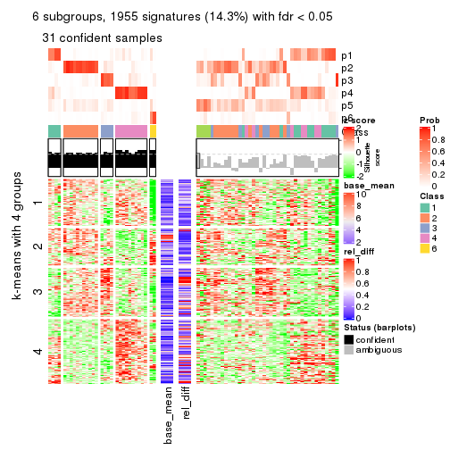
Signature heatmaps where rows are not scaled:
get_signatures(res, k = 2, scale_rows = FALSE)
get_signatures(res, k = 3, scale_rows = FALSE)
get_signatures(res, k = 4, scale_rows = FALSE)
get_signatures(res, k = 5, scale_rows = FALSE)
get_signatures(res, k = 6, scale_rows = FALSE)
Compare the overlap of signatures from different k:
compare_signatures(res)
get_signature() returns a data frame invisibly. TO get the list of signatures, the function
call should be assigned to a variable explicitly. In following code, if plot argument is set
to FALSE, no heatmap is plotted while only the differential analysis is performed.
# code only for demonstration
tb = get_signature(res, k = ..., plot = FALSE)
An example of the output of tb is:
#> which_row fdr mean_1 mean_2 scaled_mean_1 scaled_mean_2 km
#> 1 38 0.042760348 8.373488 9.131774 -0.5533452 0.5164555 1
#> 2 40 0.018707592 7.106213 8.469186 -0.6173731 0.5762149 1
#> 3 55 0.019134737 10.221463 11.207825 -0.6159697 0.5749050 1
#> 4 59 0.006059896 5.921854 7.869574 -0.6899429 0.6439467 1
#> 5 60 0.018055526 8.928898 10.211722 -0.6204761 0.5791110 1
#> 6 98 0.009384629 15.714769 14.887706 0.6635654 -0.6193277 2
...
The columns in tb are:
which_row: row indices corresponding to the input matrix.fdr: FDR for the differential test. mean_x: The mean value in group x.scaled_mean_x: The mean value in group x after rows are scaled.km: Row groups if k-means clustering is applied to rows.UMAP plot which shows how samples are separated.
dimension_reduction(res, k = 2, method = "UMAP")
dimension_reduction(res, k = 3, method = "UMAP")
dimension_reduction(res, k = 4, method = "UMAP")

dimension_reduction(res, k = 5, method = "UMAP")
dimension_reduction(res, k = 6, method = "UMAP")
Following heatmap shows how subgroups are split when increasing k:
collect_classes(res)
If matrix rows can be associated to genes, consider to use GO_Enrichment(res,
...) to perform function enrichment for the signature genes.
The object with results only for a single top-value method and a single partition method can be extracted as:
res = res_list["MAD", "hclust"]
# you can also extract it by
# res = res_list["MAD:hclust"]
A summary of res and all the functions that can be applied to it:
res
#> A 'ConsensusPartition' object with k = 2, 3, 4, 5, 6.
#> On a matrix with 13673 rows and 72 columns.
#> Top rows (1000, 2000, 3000, 4000, 5000) are extracted by 'MAD' method.
#> Subgroups are detected by 'hclust' method.
#> Performed in total 1250 partitions by row resampling.
#> Best k for subgroups seems to be 3.
#>
#> Following methods can be applied to this 'ConsensusPartition' object:
#> [1] "cola_report" "collect_classes" "collect_plots"
#> [4] "collect_stats" "colnames" "compare_signatures"
#> [7] "consensus_heatmap" "dimension_reduction" "functional_enrichment"
#> [10] "get_anno_col" "get_anno" "get_classes"
#> [13] "get_consensus" "get_matrix" "get_membership"
#> [16] "get_param" "get_signatures" "get_stats"
#> [19] "is_best_k" "is_stable_k" "membership_heatmap"
#> [22] "ncol" "nrow" "plot_ecdf"
#> [25] "rownames" "select_partition_number" "show"
#> [28] "suggest_best_k" "test_to_known_factors"
collect_plots() function collects all the plots made from res for all k (number of partitions)
into one single page to provide an easy and fast comparison between different k.
collect_plots(res)
The plots are:
k and the heatmap of
predicted classes for each k.k.k.k.All the plots in panels can be made by individual functions and they are plotted later in this section.
select_partition_number() produces several plots showing different
statistics for choosing “optimized” k. There are following statistics:
k;k, the area increased is defined as \(A_k - A_{k-1}\).The detailed explanations of these statistics can be found in the cola vignette.
Generally speaking, lower PAC score, higher mean silhouette score or higher
concordance corresponds to better partition. Rand index and Jaccard index
measure how similar the current partition is compared to partition with k-1.
If they are too similar, we won't accept k is better than k-1.
select_partition_number(res)
The numeric values for all these statistics can be obtained by get_stats().
get_stats(res)
#> k 1-PAC mean_silhouette concordance area_increased Rand Jaccard
#> 2 2 0.472 0.441 0.829 0.251 0.800 0.800
#> 3 3 0.364 0.722 0.850 0.668 0.685 0.624
#> 4 4 0.281 0.609 0.794 0.249 0.981 0.966
#> 5 5 0.339 0.526 0.732 0.145 0.836 0.698
#> 6 6 0.411 0.543 0.725 0.177 0.836 0.609
suggest_best_k() suggests the best \(k\) based on these statistics. The rules are as follows:
NA.suggest_best_k(res)
#> [1] 3
Following shows the table of the partitions (You need to click the show/hide
code output link to see it). The membership matrix (columns with name p*)
is inferred by
clue::cl_consensus()
function with the SE method. Basically the value in the membership matrix
represents the probability to belong to a certain group. The finall class
label for an item is determined with the group with highest probability it
belongs to.
In get_classes() function, the entropy is calculated from the membership
matrix and the silhouette score is calculated from the consensus matrix.
cbind(get_classes(res, k = 2), get_membership(res, k = 2))
#> class entropy silhouette p1 p2
#> SRR1585486 2 0.3733 0.6744 0.072 0.928
#> SRR1585488 2 0.9896 -0.5737 0.440 0.560
#> SRR1585487 2 0.3733 0.6829 0.072 0.928
#> SRR1585489 2 0.0672 0.7409 0.008 0.992
#> SRR1585490 2 0.9896 -0.5737 0.440 0.560
#> SRR1585491 2 0.9933 -0.6099 0.452 0.548
#> SRR1585492 2 0.1633 0.7332 0.024 0.976
#> SRR1585493 2 0.0376 0.7399 0.004 0.996
#> SRR1585494 2 0.0000 0.7416 0.000 1.000
#> SRR1585496 2 0.2603 0.7151 0.044 0.956
#> SRR1585495 2 0.3274 0.7068 0.060 0.940
#> SRR1585498 2 0.0938 0.7406 0.012 0.988
#> SRR1585497 2 0.0000 0.7416 0.000 1.000
#> SRR1585499 1 0.9983 0.7954 0.524 0.476
#> SRR1585500 2 0.9896 0.0187 0.440 0.560
#> SRR1585501 2 0.0376 0.7414 0.004 0.996
#> SRR1585502 2 0.1843 0.7222 0.028 0.972
#> SRR1585503 2 0.7745 0.3310 0.228 0.772
#> SRR1585504 2 0.2236 0.7165 0.036 0.964
#> SRR1585505 2 0.0000 0.7416 0.000 1.000
#> SRR1585506 2 0.2236 0.7165 0.036 0.964
#> SRR1585508 2 0.0672 0.7409 0.008 0.992
#> SRR1585507 2 0.0000 0.7416 0.000 1.000
#> SRR1585509 1 0.9983 0.7954 0.524 0.476
#> SRR1585510 2 0.0000 0.7416 0.000 1.000
#> SRR1585511 2 0.2236 0.7165 0.036 0.964
#> SRR1585512 2 0.0000 0.7416 0.000 1.000
#> SRR1585513 2 0.9933 -0.6099 0.452 0.548
#> SRR1585516 2 0.2236 0.7253 0.036 0.964
#> SRR1585515 2 0.8144 0.2441 0.252 0.748
#> SRR1585514 2 0.6801 0.4663 0.180 0.820
#> SRR1585518 2 0.0672 0.7409 0.008 0.992
#> SRR1585517 2 0.2043 0.7289 0.032 0.968
#> SRR1585519 2 0.0672 0.7409 0.008 0.992
#> SRR1585520 2 0.0000 0.7416 0.000 1.000
#> SRR1585522 2 0.0000 0.7416 0.000 1.000
#> SRR1585521 1 0.9983 0.7954 0.524 0.476
#> SRR1585524 2 0.7376 0.3914 0.208 0.792
#> SRR1585523 1 0.9988 0.7859 0.520 0.480
#> SRR1585525 2 0.9933 -0.5956 0.452 0.548
#> SRR1585526 2 0.2603 0.7151 0.044 0.956
#> SRR1585527 1 0.9983 0.7954 0.524 0.476
#> SRR1585528 2 0.0672 0.7409 0.008 0.992
#> SRR1585529 2 0.0672 0.7409 0.008 0.992
#> SRR1585530 2 0.0000 0.7416 0.000 1.000
#> SRR1585531 2 0.9983 -0.6644 0.476 0.524
#> SRR1585532 2 0.2043 0.7289 0.032 0.968
#> SRR1585533 1 0.9983 0.7954 0.524 0.476
#> SRR1585534 2 0.9754 -0.4696 0.408 0.592
#> SRR1585535 2 0.0672 0.7409 0.008 0.992
#> SRR1585536 2 0.0000 0.7416 0.000 1.000
#> SRR1585537 1 0.9933 -0.0220 0.548 0.452
#> SRR1585538 2 0.9795 -0.4963 0.416 0.584
#> SRR1585539 2 0.9833 -0.5231 0.424 0.576
#> SRR1585541 2 0.3733 0.6744 0.072 0.928
#> SRR1585540 2 0.0376 0.7414 0.004 0.996
#> SRR1585542 2 0.9977 -0.6541 0.472 0.528
#> SRR1585543 2 0.9977 -0.6233 0.472 0.528
#> SRR1585544 2 0.1184 0.7364 0.016 0.984
#> SRR1585546 2 0.9933 -0.6099 0.452 0.548
#> SRR1585545 2 0.0376 0.7399 0.004 0.996
#> SRR1585547 1 0.9983 0.7954 0.524 0.476
#> SRR1585548 2 0.9775 -0.4832 0.412 0.588
#> SRR1585549 2 0.2236 0.7165 0.036 0.964
#> SRR1585550 2 0.9933 -0.5956 0.452 0.548
#> SRR1585551 2 0.2236 0.7165 0.036 0.964
#> SRR1585552 2 0.0000 0.7416 0.000 1.000
#> SRR1585553 2 0.1414 0.7337 0.020 0.980
#> SRR1585554 2 0.0000 0.7416 0.000 1.000
#> SRR1585555 2 0.0000 0.7416 0.000 1.000
#> SRR1585557 2 0.1843 0.7222 0.028 0.972
#> SRR1585556 2 0.0000 0.7416 0.000 1.000
cbind(get_classes(res, k = 3), get_membership(res, k = 3))
#> class entropy silhouette p1 p2 p3
#> SRR1585486 2 0.3030 0.803 0.092 0.904 0.004
#> SRR1585488 1 0.6442 0.623 0.564 0.432 0.004
#> SRR1585487 2 0.3183 0.806 0.076 0.908 0.016
#> SRR1585489 2 0.1170 0.859 0.016 0.976 0.008
#> SRR1585490 1 0.6442 0.623 0.564 0.432 0.004
#> SRR1585491 1 0.5835 0.744 0.660 0.340 0.000
#> SRR1585492 2 0.1453 0.855 0.024 0.968 0.008
#> SRR1585493 2 0.0661 0.859 0.004 0.988 0.008
#> SRR1585494 2 0.0475 0.859 0.004 0.992 0.004
#> SRR1585496 2 0.6735 0.546 0.260 0.696 0.044
#> SRR1585495 2 0.6665 0.527 0.276 0.688 0.036
#> SRR1585498 2 0.1015 0.860 0.008 0.980 0.012
#> SRR1585497 2 0.0424 0.860 0.008 0.992 0.000
#> SRR1585499 1 0.2066 0.594 0.940 0.060 0.000
#> SRR1585500 2 0.7748 0.118 0.048 0.500 0.452
#> SRR1585501 2 0.1129 0.861 0.020 0.976 0.004
#> SRR1585502 2 0.2280 0.836 0.008 0.940 0.052
#> SRR1585503 2 0.5578 0.489 0.240 0.748 0.012
#> SRR1585504 2 0.6341 0.563 0.252 0.716 0.032
#> SRR1585505 2 0.0829 0.859 0.012 0.984 0.004
#> SRR1585506 2 0.6416 0.551 0.260 0.708 0.032
#> SRR1585508 2 0.0983 0.859 0.016 0.980 0.004
#> SRR1585507 2 0.0829 0.859 0.012 0.984 0.004
#> SRR1585509 1 0.4931 0.705 0.768 0.232 0.000
#> SRR1585510 2 0.0983 0.860 0.016 0.980 0.004
#> SRR1585511 2 0.6416 0.551 0.260 0.708 0.032
#> SRR1585512 2 0.0829 0.860 0.012 0.984 0.004
#> SRR1585513 1 0.5948 0.730 0.640 0.360 0.000
#> SRR1585516 2 0.2414 0.839 0.040 0.940 0.020
#> SRR1585515 2 0.6019 0.338 0.288 0.700 0.012
#> SRR1585514 2 0.5122 0.591 0.200 0.788 0.012
#> SRR1585518 2 0.0983 0.859 0.016 0.980 0.004
#> SRR1585517 2 0.2297 0.843 0.036 0.944 0.020
#> SRR1585519 2 0.1170 0.859 0.016 0.976 0.008
#> SRR1585520 2 0.0983 0.860 0.016 0.980 0.004
#> SRR1585522 2 0.0983 0.860 0.016 0.980 0.004
#> SRR1585521 1 0.2066 0.593 0.940 0.060 0.000
#> SRR1585524 2 0.5619 0.479 0.244 0.744 0.012
#> SRR1585523 1 0.5560 0.697 0.700 0.300 0.000
#> SRR1585525 1 0.5253 0.683 0.792 0.188 0.020
#> SRR1585526 2 0.6735 0.546 0.260 0.696 0.044
#> SRR1585527 1 0.1964 0.588 0.944 0.056 0.000
#> SRR1585528 2 0.0983 0.859 0.016 0.980 0.004
#> SRR1585529 2 0.1170 0.859 0.016 0.976 0.008
#> SRR1585530 2 0.1647 0.849 0.036 0.960 0.004
#> SRR1585531 1 0.4782 0.683 0.820 0.164 0.016
#> SRR1585532 2 0.2297 0.843 0.036 0.944 0.020
#> SRR1585533 1 0.1964 0.588 0.944 0.056 0.000
#> SRR1585534 1 0.6180 0.663 0.584 0.416 0.000
#> SRR1585535 2 0.1170 0.859 0.016 0.976 0.008
#> SRR1585536 2 0.1647 0.849 0.036 0.960 0.004
#> SRR1585537 3 0.0237 0.000 0.000 0.004 0.996
#> SRR1585538 1 0.6154 0.677 0.592 0.408 0.000
#> SRR1585539 1 0.6192 0.663 0.580 0.420 0.000
#> SRR1585541 2 0.3030 0.803 0.092 0.904 0.004
#> SRR1585540 2 0.0829 0.860 0.012 0.984 0.004
#> SRR1585542 1 0.6313 0.754 0.676 0.308 0.016
#> SRR1585543 1 0.6211 0.652 0.736 0.228 0.036
#> SRR1585544 2 0.1647 0.857 0.036 0.960 0.004
#> SRR1585546 1 0.4605 0.723 0.796 0.204 0.000
#> SRR1585545 2 0.0661 0.859 0.004 0.988 0.008
#> SRR1585547 1 0.5529 0.696 0.704 0.296 0.000
#> SRR1585548 1 0.6062 0.702 0.616 0.384 0.000
#> SRR1585549 2 0.6341 0.563 0.252 0.716 0.032
#> SRR1585550 1 0.5253 0.683 0.792 0.188 0.020
#> SRR1585551 2 0.6416 0.551 0.260 0.708 0.032
#> SRR1585552 2 0.0983 0.860 0.016 0.980 0.004
#> SRR1585553 2 0.1765 0.854 0.040 0.956 0.004
#> SRR1585554 2 0.0829 0.859 0.012 0.984 0.004
#> SRR1585555 2 0.0983 0.860 0.016 0.980 0.004
#> SRR1585557 2 0.2280 0.836 0.008 0.940 0.052
#> SRR1585556 2 0.0983 0.860 0.016 0.980 0.004
cbind(get_classes(res, k = 4), get_membership(res, k = 4))
#> class entropy silhouette p1 p2 p3 p4
#> SRR1585486 2 0.318 0.7524 0.084 0.880 0.000 0.036
#> SRR1585488 1 0.630 0.5762 0.600 0.320 0.000 0.080
#> SRR1585487 2 0.659 0.4858 0.148 0.624 0.000 0.228
#> SRR1585489 2 0.240 0.7729 0.012 0.912 0.000 0.076
#> SRR1585490 1 0.630 0.5762 0.600 0.320 0.000 0.080
#> SRR1585491 1 0.487 0.6786 0.748 0.212 0.000 0.040
#> SRR1585492 2 0.305 0.7548 0.028 0.884 0.000 0.088
#> SRR1585493 2 0.234 0.7631 0.008 0.912 0.000 0.080
#> SRR1585494 2 0.115 0.7829 0.008 0.968 0.000 0.024
#> SRR1585496 2 0.718 0.3024 0.316 0.524 0.000 0.160
#> SRR1585495 2 0.587 0.4186 0.324 0.624 0.000 0.052
#> SRR1585498 2 0.268 0.7642 0.012 0.896 0.000 0.092
#> SRR1585497 2 0.128 0.7820 0.012 0.964 0.000 0.024
#> SRR1585499 1 0.299 0.5585 0.876 0.012 0.000 0.112
#> SRR1585500 4 0.372 0.0000 0.072 0.056 0.008 0.864
#> SRR1585501 2 0.151 0.7842 0.016 0.956 0.000 0.028
#> SRR1585502 2 0.523 0.5200 0.008 0.648 0.008 0.336
#> SRR1585503 2 0.680 0.2027 0.308 0.568 0.000 0.124
#> SRR1585504 2 0.593 0.4313 0.308 0.632 0.000 0.060
#> SRR1585505 2 0.115 0.7824 0.024 0.968 0.000 0.008
#> SRR1585506 2 0.597 0.4171 0.316 0.624 0.000 0.060
#> SRR1585508 2 0.168 0.7834 0.012 0.948 0.000 0.040
#> SRR1585507 2 0.115 0.7824 0.024 0.968 0.000 0.008
#> SRR1585509 1 0.612 0.6375 0.668 0.220 0.000 0.112
#> SRR1585510 2 0.200 0.7823 0.020 0.936 0.000 0.044
#> SRR1585511 2 0.597 0.4171 0.316 0.624 0.000 0.060
#> SRR1585512 2 0.155 0.7818 0.008 0.952 0.000 0.040
#> SRR1585513 1 0.511 0.6706 0.720 0.240 0.000 0.040
#> SRR1585516 2 0.627 0.5205 0.112 0.648 0.000 0.240
#> SRR1585515 2 0.690 0.0288 0.360 0.524 0.000 0.116
#> SRR1585514 2 0.655 0.3352 0.260 0.616 0.000 0.124
#> SRR1585518 2 0.168 0.7834 0.012 0.948 0.000 0.040
#> SRR1585517 2 0.627 0.5157 0.108 0.644 0.000 0.248
#> SRR1585519 2 0.185 0.7799 0.012 0.940 0.000 0.048
#> SRR1585520 2 0.182 0.7827 0.020 0.944 0.000 0.036
#> SRR1585522 2 0.182 0.7827 0.020 0.944 0.000 0.036
#> SRR1585521 1 0.292 0.5648 0.884 0.016 0.000 0.100
#> SRR1585524 2 0.679 0.1894 0.316 0.564 0.000 0.120
#> SRR1585523 1 0.653 0.6026 0.596 0.300 0.000 0.104
#> SRR1585525 1 0.259 0.5892 0.904 0.080 0.000 0.016
#> SRR1585526 2 0.718 0.3024 0.316 0.524 0.000 0.160
#> SRR1585527 1 0.286 0.5533 0.880 0.008 0.000 0.112
#> SRR1585528 2 0.168 0.7834 0.012 0.948 0.000 0.040
#> SRR1585529 2 0.202 0.7788 0.012 0.932 0.000 0.056
#> SRR1585530 2 0.185 0.7745 0.048 0.940 0.000 0.012
#> SRR1585531 1 0.202 0.5944 0.932 0.056 0.000 0.012
#> SRR1585532 2 0.627 0.5157 0.108 0.644 0.000 0.248
#> SRR1585533 1 0.286 0.5533 0.880 0.008 0.000 0.112
#> SRR1585534 1 0.560 0.6410 0.664 0.288 0.000 0.048
#> SRR1585535 2 0.264 0.7758 0.020 0.904 0.000 0.076
#> SRR1585536 2 0.185 0.7745 0.048 0.940 0.000 0.012
#> SRR1585537 3 0.000 0.0000 0.000 0.000 1.000 0.000
#> SRR1585538 1 0.555 0.6479 0.672 0.280 0.000 0.048
#> SRR1585539 1 0.581 0.6423 0.660 0.276 0.000 0.064
#> SRR1585541 2 0.318 0.7524 0.084 0.880 0.000 0.036
#> SRR1585540 2 0.104 0.7841 0.008 0.972 0.000 0.020
#> SRR1585542 1 0.421 0.6738 0.772 0.216 0.000 0.012
#> SRR1585543 1 0.364 0.5361 0.848 0.120 0.000 0.032
#> SRR1585544 2 0.173 0.7822 0.028 0.948 0.000 0.024
#> SRR1585546 1 0.259 0.6213 0.912 0.048 0.000 0.040
#> SRR1585545 2 0.267 0.7535 0.008 0.892 0.000 0.100
#> SRR1585547 1 0.646 0.6053 0.604 0.296 0.000 0.100
#> SRR1585548 1 0.533 0.6660 0.704 0.248 0.000 0.048
#> SRR1585549 2 0.593 0.4313 0.308 0.632 0.000 0.060
#> SRR1585550 1 0.259 0.5892 0.904 0.080 0.000 0.016
#> SRR1585551 2 0.597 0.4171 0.316 0.624 0.000 0.060
#> SRR1585552 2 0.200 0.7823 0.020 0.936 0.000 0.044
#> SRR1585553 2 0.183 0.7823 0.032 0.944 0.000 0.024
#> SRR1585554 2 0.128 0.7821 0.024 0.964 0.000 0.012
#> SRR1585555 2 0.200 0.7823 0.020 0.936 0.000 0.044
#> SRR1585557 2 0.523 0.5200 0.008 0.648 0.008 0.336
#> SRR1585556 2 0.182 0.7828 0.020 0.944 0.000 0.036
cbind(get_classes(res, k = 5), get_membership(res, k = 5))
#> class entropy silhouette p1 p2 p3 p4 p5
#> SRR1585486 2 0.3546 0.6543 0.076 0.848 0.060 0.016 0
#> SRR1585488 1 0.5805 0.5916 0.584 0.308 0.104 0.004 0
#> SRR1585487 3 0.6363 0.1250 0.144 0.384 0.468 0.004 0
#> SRR1585489 2 0.2694 0.6939 0.000 0.884 0.076 0.040 0
#> SRR1585490 1 0.5805 0.5916 0.584 0.308 0.104 0.004 0
#> SRR1585491 1 0.4488 0.7196 0.748 0.188 0.060 0.004 0
#> SRR1585492 2 0.3767 0.5825 0.024 0.800 0.168 0.008 0
#> SRR1585493 2 0.2806 0.6220 0.004 0.844 0.152 0.000 0
#> SRR1585494 2 0.1041 0.7040 0.004 0.964 0.032 0.000 0
#> SRR1585496 3 0.4047 0.4900 0.004 0.320 0.676 0.000 0
#> SRR1585495 2 0.5180 -0.5058 0.020 0.492 0.476 0.012 0
#> SRR1585498 2 0.3645 0.6336 0.004 0.804 0.168 0.024 0
#> SRR1585497 2 0.1990 0.6776 0.004 0.920 0.068 0.008 0
#> SRR1585499 1 0.2408 0.5731 0.892 0.000 0.092 0.016 0
#> SRR1585500 4 0.1117 0.0000 0.000 0.020 0.016 0.964 0
#> SRR1585501 2 0.3318 0.5384 0.000 0.800 0.192 0.008 0
#> SRR1585502 2 0.5480 0.1910 0.000 0.560 0.072 0.368 0
#> SRR1585503 2 0.6978 -0.1321 0.300 0.408 0.284 0.008 0
#> SRR1585504 3 0.4452 0.4903 0.004 0.496 0.500 0.000 0
#> SRR1585505 2 0.1059 0.7087 0.020 0.968 0.008 0.004 0
#> SRR1585506 3 0.4450 0.4989 0.004 0.488 0.508 0.000 0
#> SRR1585508 2 0.2654 0.7032 0.000 0.884 0.084 0.032 0
#> SRR1585507 2 0.1059 0.7087 0.020 0.968 0.008 0.004 0
#> SRR1585509 1 0.5497 0.6743 0.676 0.212 0.096 0.016 0
#> SRR1585510 2 0.1547 0.7176 0.016 0.948 0.004 0.032 0
#> SRR1585511 3 0.4450 0.4989 0.004 0.488 0.508 0.000 0
#> SRR1585512 2 0.1915 0.7170 0.000 0.928 0.040 0.032 0
#> SRR1585513 1 0.4712 0.7063 0.720 0.216 0.060 0.004 0
#> SRR1585516 3 0.6177 0.1365 0.108 0.388 0.496 0.008 0
#> SRR1585515 2 0.6881 -0.2410 0.352 0.384 0.260 0.004 0
#> SRR1585514 2 0.6775 0.0482 0.256 0.496 0.236 0.012 0
#> SRR1585518 2 0.2654 0.7032 0.000 0.884 0.084 0.032 0
#> SRR1585517 3 0.6005 0.2192 0.104 0.332 0.556 0.008 0
#> SRR1585519 2 0.1997 0.7139 0.000 0.924 0.036 0.040 0
#> SRR1585520 2 0.1547 0.7177 0.016 0.948 0.004 0.032 0
#> SRR1585522 2 0.1547 0.7177 0.016 0.948 0.004 0.032 0
#> SRR1585521 1 0.2811 0.5911 0.876 0.012 0.100 0.012 0
#> SRR1585524 2 0.6887 -0.1363 0.308 0.404 0.284 0.004 0
#> SRR1585523 1 0.5819 0.6317 0.604 0.292 0.092 0.012 0
#> SRR1585525 1 0.2952 0.6095 0.868 0.020 0.104 0.008 0
#> SRR1585526 3 0.4047 0.4900 0.004 0.320 0.676 0.000 0
#> SRR1585527 1 0.2519 0.5715 0.884 0.000 0.100 0.016 0
#> SRR1585528 2 0.2654 0.7032 0.000 0.884 0.084 0.032 0
#> SRR1585529 2 0.2153 0.7112 0.000 0.916 0.044 0.040 0
#> SRR1585530 2 0.1981 0.6716 0.016 0.920 0.064 0.000 0
#> SRR1585531 1 0.2474 0.6146 0.896 0.012 0.084 0.008 0
#> SRR1585532 3 0.6005 0.2192 0.104 0.332 0.556 0.008 0
#> SRR1585533 1 0.2464 0.5707 0.888 0.000 0.096 0.016 0
#> SRR1585534 1 0.5384 0.6803 0.664 0.228 0.104 0.004 0
#> SRR1585535 2 0.2853 0.7001 0.008 0.884 0.068 0.040 0
#> SRR1585536 2 0.1981 0.6716 0.016 0.920 0.064 0.000 0
#> SRR1585537 5 0.0000 0.0000 0.000 0.000 0.000 0.000 1
#> SRR1585538 1 0.5310 0.6858 0.672 0.224 0.100 0.004 0
#> SRR1585539 1 0.5363 0.6810 0.664 0.232 0.100 0.004 0
#> SRR1585541 2 0.3546 0.6543 0.076 0.848 0.060 0.016 0
#> SRR1585540 2 0.1764 0.7032 0.000 0.928 0.064 0.008 0
#> SRR1585542 1 0.4866 0.7019 0.728 0.168 0.100 0.004 0
#> SRR1585543 1 0.4962 0.3306 0.544 0.016 0.432 0.008 0
#> SRR1585544 2 0.2165 0.7072 0.024 0.924 0.036 0.016 0
#> SRR1585546 1 0.2264 0.6540 0.912 0.024 0.060 0.004 0
#> SRR1585545 2 0.3280 0.5795 0.004 0.808 0.184 0.004 0
#> SRR1585547 1 0.5753 0.6362 0.612 0.288 0.088 0.012 0
#> SRR1585548 1 0.5072 0.7070 0.704 0.192 0.100 0.004 0
#> SRR1585549 3 0.4452 0.4903 0.004 0.496 0.500 0.000 0
#> SRR1585550 1 0.2952 0.6095 0.868 0.020 0.104 0.008 0
#> SRR1585551 3 0.4450 0.4989 0.004 0.488 0.508 0.000 0
#> SRR1585552 2 0.1547 0.7176 0.016 0.948 0.004 0.032 0
#> SRR1585553 2 0.2244 0.7082 0.024 0.920 0.040 0.016 0
#> SRR1585554 2 0.0898 0.7082 0.020 0.972 0.008 0.000 0
#> SRR1585555 2 0.1547 0.7176 0.016 0.948 0.004 0.032 0
#> SRR1585557 2 0.5480 0.1910 0.000 0.560 0.072 0.368 0
#> SRR1585556 2 0.1547 0.7185 0.016 0.948 0.004 0.032 0
cbind(get_classes(res, k = 6), get_membership(res, k = 6))
#> class entropy silhouette p1 p2 p3 p4 p5 p6
#> SRR1585486 2 0.3745 0.7754 0.040 0.824 0.032 0.092 0.012 0
#> SRR1585488 4 0.6480 0.0412 0.348 0.184 0.036 0.432 0.000 0
#> SRR1585487 4 0.5140 0.4025 0.004 0.144 0.168 0.672 0.012 0
#> SRR1585489 2 0.3462 0.7417 0.004 0.792 0.016 0.180 0.008 0
#> SRR1585490 4 0.6480 0.0412 0.348 0.184 0.036 0.432 0.000 0
#> SRR1585491 4 0.4446 0.1165 0.424 0.008 0.016 0.552 0.000 0
#> SRR1585492 2 0.5002 0.6700 0.016 0.700 0.164 0.112 0.008 0
#> SRR1585493 2 0.4224 0.7115 0.004 0.748 0.168 0.076 0.004 0
#> SRR1585494 2 0.2685 0.7830 0.004 0.872 0.080 0.044 0.000 0
#> SRR1585496 3 0.3472 0.6196 0.000 0.096 0.820 0.076 0.008 0
#> SRR1585495 3 0.4778 0.6533 0.016 0.312 0.636 0.028 0.008 0
#> SRR1585498 2 0.4533 0.7338 0.004 0.732 0.148 0.108 0.008 0
#> SRR1585497 2 0.3709 0.7276 0.004 0.788 0.164 0.036 0.008 0
#> SRR1585499 1 0.1741 0.6143 0.936 0.012 0.036 0.008 0.008 0
#> SRR1585500 5 0.0713 0.0000 0.000 0.028 0.000 0.000 0.972 0
#> SRR1585501 2 0.5712 -0.0180 0.004 0.444 0.436 0.108 0.008 0
#> SRR1585502 2 0.5984 0.3310 0.004 0.524 0.056 0.068 0.348 0
#> SRR1585503 4 0.4184 0.4566 0.040 0.188 0.024 0.748 0.000 0
#> SRR1585504 3 0.3101 0.7776 0.000 0.244 0.756 0.000 0.000 0
#> SRR1585505 2 0.1722 0.8037 0.008 0.936 0.036 0.016 0.004 0
#> SRR1585506 3 0.3050 0.7809 0.000 0.236 0.764 0.000 0.000 0
#> SRR1585508 2 0.4091 0.7660 0.004 0.776 0.112 0.100 0.008 0
#> SRR1585507 2 0.1722 0.8037 0.008 0.936 0.036 0.016 0.004 0
#> SRR1585509 1 0.5355 0.4054 0.644 0.184 0.020 0.152 0.000 0
#> SRR1585510 2 0.0551 0.8131 0.004 0.984 0.000 0.004 0.008 0
#> SRR1585511 3 0.3050 0.7809 0.000 0.236 0.764 0.000 0.000 0
#> SRR1585512 2 0.3103 0.7809 0.004 0.836 0.020 0.132 0.008 0
#> SRR1585513 4 0.4293 0.1837 0.396 0.004 0.016 0.584 0.000 0
#> SRR1585516 4 0.5265 0.3762 0.000 0.148 0.200 0.640 0.012 0
#> SRR1585515 4 0.4055 0.4588 0.076 0.152 0.008 0.764 0.000 0
#> SRR1585514 4 0.4798 0.2851 0.052 0.364 0.004 0.580 0.000 0
#> SRR1585518 2 0.4091 0.7660 0.004 0.776 0.112 0.100 0.008 0
#> SRR1585517 4 0.4718 0.3626 0.000 0.060 0.264 0.664 0.012 0
#> SRR1585519 2 0.2698 0.7947 0.004 0.872 0.020 0.096 0.008 0
#> SRR1585520 2 0.0665 0.8137 0.004 0.980 0.008 0.000 0.008 0
#> SRR1585522 2 0.0665 0.8137 0.004 0.980 0.008 0.000 0.008 0
#> SRR1585521 1 0.2793 0.6113 0.872 0.024 0.024 0.080 0.000 0
#> SRR1585524 4 0.4401 0.4539 0.052 0.192 0.024 0.732 0.000 0
#> SRR1585523 1 0.5857 0.2887 0.568 0.192 0.020 0.220 0.000 0
#> SRR1585525 1 0.5238 0.4772 0.640 0.012 0.088 0.252 0.008 0
#> SRR1585526 3 0.3472 0.6196 0.000 0.096 0.820 0.076 0.008 0
#> SRR1585527 1 0.1483 0.6150 0.944 0.012 0.036 0.000 0.008 0
#> SRR1585528 2 0.4091 0.7660 0.004 0.776 0.112 0.100 0.008 0
#> SRR1585529 2 0.2708 0.7918 0.004 0.868 0.016 0.104 0.008 0
#> SRR1585530 2 0.2320 0.7673 0.004 0.864 0.132 0.000 0.000 0
#> SRR1585531 1 0.4647 0.5123 0.708 0.008 0.084 0.196 0.004 0
#> SRR1585532 4 0.4718 0.3626 0.000 0.060 0.264 0.664 0.012 0
#> SRR1585533 1 0.1483 0.6134 0.944 0.012 0.036 0.000 0.008 0
#> SRR1585534 4 0.3758 0.2869 0.324 0.008 0.000 0.668 0.000 0
#> SRR1585535 2 0.3138 0.7696 0.004 0.828 0.016 0.144 0.008 0
#> SRR1585536 2 0.2320 0.7673 0.004 0.864 0.132 0.000 0.000 0
#> SRR1585537 6 0.0000 0.0000 0.000 0.000 0.000 0.000 0.000 1
#> SRR1585538 4 0.3789 0.2786 0.332 0.008 0.000 0.660 0.000 0
#> SRR1585539 4 0.4406 0.2525 0.344 0.008 0.024 0.624 0.000 0
#> SRR1585541 2 0.3745 0.7754 0.040 0.824 0.032 0.092 0.012 0
#> SRR1585540 2 0.3803 0.7787 0.004 0.796 0.128 0.064 0.008 0
#> SRR1585542 4 0.5404 -0.0807 0.408 0.000 0.100 0.488 0.004 0
#> SRR1585543 3 0.6223 -0.3447 0.320 0.000 0.420 0.252 0.008 0
#> SRR1585544 2 0.2766 0.8088 0.024 0.888 0.032 0.044 0.012 0
#> SRR1585546 1 0.4096 0.3851 0.672 0.008 0.016 0.304 0.000 0
#> SRR1585545 2 0.4724 0.6680 0.004 0.708 0.176 0.104 0.008 0
#> SRR1585547 1 0.5969 0.2802 0.544 0.188 0.020 0.248 0.000 0
#> SRR1585548 4 0.3899 0.2247 0.364 0.008 0.000 0.628 0.000 0
#> SRR1585549 3 0.3101 0.7776 0.000 0.244 0.756 0.000 0.000 0
#> SRR1585550 1 0.5238 0.4772 0.640 0.012 0.088 0.252 0.008 0
#> SRR1585551 3 0.3050 0.7809 0.000 0.236 0.764 0.000 0.000 0
#> SRR1585552 2 0.0551 0.8131 0.004 0.984 0.000 0.004 0.008 0
#> SRR1585553 2 0.2628 0.8083 0.024 0.896 0.032 0.036 0.012 0
#> SRR1585554 2 0.1577 0.8034 0.008 0.940 0.036 0.016 0.000 0
#> SRR1585555 2 0.0551 0.8131 0.004 0.984 0.000 0.004 0.008 0
#> SRR1585557 2 0.5984 0.3310 0.004 0.524 0.056 0.068 0.348 0
#> SRR1585556 2 0.0665 0.8140 0.004 0.980 0.008 0.000 0.008 0
Heatmaps for the consensus matrix. It visualizes the probability of two samples to be in a same group.
consensus_heatmap(res, k = 2)
consensus_heatmap(res, k = 3)
consensus_heatmap(res, k = 4)
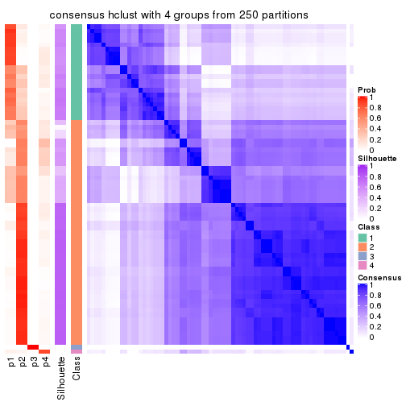
consensus_heatmap(res, k = 5)
consensus_heatmap(res, k = 6)
Heatmaps for the membership of samples in all partitions to see how consistent they are:
membership_heatmap(res, k = 2)
membership_heatmap(res, k = 3)
membership_heatmap(res, k = 4)
membership_heatmap(res, k = 5)
membership_heatmap(res, k = 6)
As soon as we have had the classes for columns, we can look for signatures which are significantly different between classes which can be candidate marks for certain classes. Following are the heatmaps for signatures.
Signature heatmaps where rows are scaled:
get_signatures(res, k = 2)
get_signatures(res, k = 3)
get_signatures(res, k = 4)
get_signatures(res, k = 5)
get_signatures(res, k = 6)
Signature heatmaps where rows are not scaled:
get_signatures(res, k = 2, scale_rows = FALSE)
get_signatures(res, k = 3, scale_rows = FALSE)
get_signatures(res, k = 4, scale_rows = FALSE)

get_signatures(res, k = 5, scale_rows = FALSE)
get_signatures(res, k = 6, scale_rows = FALSE)
Compare the overlap of signatures from different k:
compare_signatures(res)
get_signature() returns a data frame invisibly. TO get the list of signatures, the function
call should be assigned to a variable explicitly. In following code, if plot argument is set
to FALSE, no heatmap is plotted while only the differential analysis is performed.
# code only for demonstration
tb = get_signature(res, k = ..., plot = FALSE)
An example of the output of tb is:
#> which_row fdr mean_1 mean_2 scaled_mean_1 scaled_mean_2 km
#> 1 38 0.042760348 8.373488 9.131774 -0.5533452 0.5164555 1
#> 2 40 0.018707592 7.106213 8.469186 -0.6173731 0.5762149 1
#> 3 55 0.019134737 10.221463 11.207825 -0.6159697 0.5749050 1
#> 4 59 0.006059896 5.921854 7.869574 -0.6899429 0.6439467 1
#> 5 60 0.018055526 8.928898 10.211722 -0.6204761 0.5791110 1
#> 6 98 0.009384629 15.714769 14.887706 0.6635654 -0.6193277 2
...
The columns in tb are:
which_row: row indices corresponding to the input matrix.fdr: FDR for the differential test. mean_x: The mean value in group x.scaled_mean_x: The mean value in group x after rows are scaled.km: Row groups if k-means clustering is applied to rows.UMAP plot which shows how samples are separated.
dimension_reduction(res, k = 2, method = "UMAP")
dimension_reduction(res, k = 3, method = "UMAP")
dimension_reduction(res, k = 4, method = "UMAP")
dimension_reduction(res, k = 5, method = "UMAP")
dimension_reduction(res, k = 6, method = "UMAP")
Following heatmap shows how subgroups are split when increasing k:
collect_classes(res)

If matrix rows can be associated to genes, consider to use GO_Enrichment(res,
...) to perform function enrichment for the signature genes.
The object with results only for a single top-value method and a single partition method can be extracted as:
res = res_list["MAD", "kmeans"]
# you can also extract it by
# res = res_list["MAD:kmeans"]
A summary of res and all the functions that can be applied to it:
res
#> A 'ConsensusPartition' object with k = 2, 3, 4, 5, 6.
#> On a matrix with 13673 rows and 72 columns.
#> Top rows (1000, 2000, 3000, 4000, 5000) are extracted by 'MAD' method.
#> Subgroups are detected by 'kmeans' method.
#> Performed in total 1250 partitions by row resampling.
#> Best k for subgroups seems to be 2.
#>
#> Following methods can be applied to this 'ConsensusPartition' object:
#> [1] "cola_report" "collect_classes" "collect_plots"
#> [4] "collect_stats" "colnames" "compare_signatures"
#> [7] "consensus_heatmap" "dimension_reduction" "functional_enrichment"
#> [10] "get_anno_col" "get_anno" "get_classes"
#> [13] "get_consensus" "get_matrix" "get_membership"
#> [16] "get_param" "get_signatures" "get_stats"
#> [19] "is_best_k" "is_stable_k" "membership_heatmap"
#> [22] "ncol" "nrow" "plot_ecdf"
#> [25] "rownames" "select_partition_number" "show"
#> [28] "suggest_best_k" "test_to_known_factors"
collect_plots() function collects all the plots made from res for all k (number of partitions)
into one single page to provide an easy and fast comparison between different k.
collect_plots(res)
The plots are:
k and the heatmap of
predicted classes for each k.k.k.k.All the plots in panels can be made by individual functions and they are plotted later in this section.
select_partition_number() produces several plots showing different
statistics for choosing “optimized” k. There are following statistics:
k;k, the area increased is defined as \(A_k - A_{k-1}\).The detailed explanations of these statistics can be found in the cola vignette.
Generally speaking, lower PAC score, higher mean silhouette score or higher
concordance corresponds to better partition. Rand index and Jaccard index
measure how similar the current partition is compared to partition with k-1.
If they are too similar, we won't accept k is better than k-1.
select_partition_number(res)
The numeric values for all these statistics can be obtained by get_stats().
get_stats(res)
#> k 1-PAC mean_silhouette concordance area_increased Rand Jaccard
#> 2 2 0.428 0.763 0.844 0.4622 0.549 0.549
#> 3 3 0.450 0.657 0.774 0.3714 0.795 0.633
#> 4 4 0.477 0.598 0.708 0.1332 0.894 0.716
#> 5 5 0.530 0.517 0.719 0.0709 0.895 0.666
#> 6 6 0.590 0.478 0.653 0.0496 0.949 0.795
suggest_best_k() suggests the best \(k\) based on these statistics. The rules are as follows:
NA.suggest_best_k(res)
#> [1] 2
Following shows the table of the partitions (You need to click the show/hide
code output link to see it). The membership matrix (columns with name p*)
is inferred by
clue::cl_consensus()
function with the SE method. Basically the value in the membership matrix
represents the probability to belong to a certain group. The finall class
label for an item is determined with the group with highest probability it
belongs to.
In get_classes() function, the entropy is calculated from the membership
matrix and the silhouette score is calculated from the consensus matrix.
cbind(get_classes(res, k = 2), get_membership(res, k = 2))
#> class entropy silhouette p1 p2
#> SRR1585486 1 0.8081 0.828 0.752 0.248
#> SRR1585488 1 0.9129 0.792 0.672 0.328
#> SRR1585487 2 0.1414 0.805 0.020 0.980
#> SRR1585489 2 0.0000 0.812 0.000 1.000
#> SRR1585490 1 0.9248 0.781 0.660 0.340
#> SRR1585491 1 0.8713 0.814 0.708 0.292
#> SRR1585492 1 0.8207 0.826 0.744 0.256
#> SRR1585493 2 0.0376 0.813 0.004 0.996
#> SRR1585494 2 0.0376 0.813 0.004 0.996
#> SRR1585496 2 0.9044 0.722 0.320 0.680
#> SRR1585495 2 0.9044 0.722 0.320 0.680
#> SRR1585498 2 0.0376 0.813 0.004 0.996
#> SRR1585497 2 0.8955 0.727 0.312 0.688
#> SRR1585499 1 0.1633 0.766 0.976 0.024
#> SRR1585500 2 0.9323 0.701 0.348 0.652
#> SRR1585501 2 0.0376 0.813 0.004 0.996
#> SRR1585502 2 0.0376 0.813 0.004 0.996
#> SRR1585503 2 0.3733 0.737 0.072 0.928
#> SRR1585504 2 0.9044 0.722 0.320 0.680
#> SRR1585505 2 0.9970 0.500 0.468 0.532
#> SRR1585506 2 0.9044 0.722 0.320 0.680
#> SRR1585508 2 0.0000 0.812 0.000 1.000
#> SRR1585507 2 0.0376 0.813 0.004 0.996
#> SRR1585509 1 0.7602 0.827 0.780 0.220
#> SRR1585510 2 0.8267 0.748 0.260 0.740
#> SRR1585511 2 0.8955 0.727 0.312 0.688
#> SRR1585512 2 0.0000 0.812 0.000 1.000
#> SRR1585513 1 0.9000 0.801 0.684 0.316
#> SRR1585516 2 0.0672 0.809 0.008 0.992
#> SRR1585515 1 0.9170 0.788 0.668 0.332
#> SRR1585514 2 0.0000 0.812 0.000 1.000
#> SRR1585518 2 0.0000 0.812 0.000 1.000
#> SRR1585517 2 0.0672 0.809 0.008 0.992
#> SRR1585519 2 0.0376 0.813 0.004 0.996
#> SRR1585520 2 0.0672 0.813 0.008 0.992
#> SRR1585522 2 0.8443 0.744 0.272 0.728
#> SRR1585521 1 0.1633 0.766 0.976 0.024
#> SRR1585524 2 0.9833 -0.297 0.424 0.576
#> SRR1585523 1 0.9209 0.782 0.664 0.336
#> SRR1585525 1 0.1414 0.763 0.980 0.020
#> SRR1585526 2 0.9000 0.723 0.316 0.684
#> SRR1585527 1 0.1414 0.763 0.980 0.020
#> SRR1585528 2 0.0000 0.812 0.000 1.000
#> SRR1585529 2 0.0000 0.812 0.000 1.000
#> SRR1585530 2 0.8909 0.729 0.308 0.692
#> SRR1585531 1 0.1414 0.763 0.980 0.020
#> SRR1585532 2 0.0000 0.812 0.000 1.000
#> SRR1585533 1 0.1633 0.766 0.976 0.024
#> SRR1585534 1 0.9129 0.792 0.672 0.328
#> SRR1585535 2 0.0000 0.812 0.000 1.000
#> SRR1585536 2 0.8909 0.729 0.308 0.692
#> SRR1585537 2 0.9209 0.711 0.336 0.664
#> SRR1585538 1 0.8861 0.809 0.696 0.304
#> SRR1585539 1 0.8144 0.828 0.748 0.252
#> SRR1585541 2 0.0376 0.813 0.004 0.996
#> SRR1585540 2 0.0376 0.813 0.004 0.996
#> SRR1585542 1 0.1633 0.764 0.976 0.024
#> SRR1585543 1 0.1414 0.763 0.980 0.020
#> SRR1585544 2 0.4939 0.794 0.108 0.892
#> SRR1585546 1 0.7815 0.829 0.768 0.232
#> SRR1585545 2 0.0000 0.812 0.000 1.000
#> SRR1585547 1 0.7745 0.828 0.772 0.228
#> SRR1585548 1 0.8861 0.809 0.696 0.304
#> SRR1585549 2 0.8955 0.727 0.312 0.688
#> SRR1585550 1 0.1414 0.763 0.980 0.020
#> SRR1585551 2 0.9044 0.722 0.320 0.680
#> SRR1585552 2 0.0672 0.813 0.008 0.992
#> SRR1585553 2 0.5946 0.786 0.144 0.856
#> SRR1585554 2 0.8763 0.734 0.296 0.704
#> SRR1585555 2 0.8763 0.734 0.296 0.704
#> SRR1585557 2 0.0376 0.813 0.004 0.996
#> SRR1585556 2 0.7674 0.762 0.224 0.776
cbind(get_classes(res, k = 3), get_membership(res, k = 3))
#> class entropy silhouette p1 p2 p3
#> SRR1585486 1 0.2773 0.8667 0.928 0.048 0.024
#> SRR1585488 1 0.3213 0.8643 0.912 0.060 0.028
#> SRR1585487 2 0.7880 0.5362 0.108 0.648 0.244
#> SRR1585489 2 0.0000 0.7397 0.000 1.000 0.000
#> SRR1585490 1 0.3310 0.8640 0.908 0.064 0.028
#> SRR1585491 1 0.3028 0.8676 0.920 0.048 0.032
#> SRR1585492 1 0.6107 0.7515 0.764 0.052 0.184
#> SRR1585493 2 0.2774 0.7376 0.008 0.920 0.072
#> SRR1585494 2 0.2486 0.7316 0.008 0.932 0.060
#> SRR1585496 3 0.5325 0.7232 0.004 0.248 0.748
#> SRR1585495 3 0.5244 0.7147 0.004 0.240 0.756
#> SRR1585498 2 0.2384 0.7348 0.008 0.936 0.056
#> SRR1585497 3 0.6200 0.6999 0.012 0.312 0.676
#> SRR1585499 1 0.2590 0.8444 0.924 0.004 0.072
#> SRR1585500 3 0.5677 0.5787 0.048 0.160 0.792
#> SRR1585501 2 0.2301 0.7307 0.004 0.936 0.060
#> SRR1585502 2 0.4249 0.6932 0.028 0.864 0.108
#> SRR1585503 2 0.8229 0.5110 0.124 0.620 0.256
#> SRR1585504 3 0.6033 0.7377 0.004 0.336 0.660
#> SRR1585505 2 0.9181 -0.0688 0.148 0.448 0.404
#> SRR1585506 3 0.6057 0.7381 0.004 0.340 0.656
#> SRR1585508 2 0.1411 0.7361 0.000 0.964 0.036
#> SRR1585507 2 0.2584 0.7310 0.008 0.928 0.064
#> SRR1585509 1 0.2810 0.8651 0.928 0.036 0.036
#> SRR1585510 2 0.4978 0.5072 0.004 0.780 0.216
#> SRR1585511 3 0.6264 0.6934 0.004 0.380 0.616
#> SRR1585512 2 0.0237 0.7397 0.000 0.996 0.004
#> SRR1585513 1 0.3780 0.8622 0.892 0.064 0.044
#> SRR1585516 2 0.7651 0.5464 0.108 0.672 0.220
#> SRR1585515 1 0.4745 0.8466 0.852 0.068 0.080
#> SRR1585514 2 0.5660 0.6419 0.028 0.772 0.200
#> SRR1585518 2 0.1411 0.7361 0.000 0.964 0.036
#> SRR1585517 2 0.7880 0.5352 0.108 0.648 0.244
#> SRR1585519 2 0.2200 0.7328 0.004 0.940 0.056
#> SRR1585520 2 0.2796 0.7279 0.000 0.908 0.092
#> SRR1585522 2 0.5480 0.3671 0.004 0.732 0.264
#> SRR1585521 1 0.3851 0.8059 0.860 0.004 0.136
#> SRR1585524 2 0.9206 0.3537 0.288 0.524 0.188
#> SRR1585523 1 0.4540 0.8250 0.848 0.124 0.028
#> SRR1585525 3 0.5431 0.3481 0.284 0.000 0.716
#> SRR1585526 3 0.5404 0.7232 0.004 0.256 0.740
#> SRR1585527 1 0.5465 0.6454 0.712 0.000 0.288
#> SRR1585528 2 0.1643 0.7345 0.000 0.956 0.044
#> SRR1585529 2 0.1031 0.7393 0.000 0.976 0.024
#> SRR1585530 3 0.6373 0.6786 0.004 0.408 0.588
#> SRR1585531 1 0.5591 0.6341 0.696 0.000 0.304
#> SRR1585532 2 0.7915 0.5371 0.108 0.644 0.248
#> SRR1585533 1 0.3784 0.8080 0.864 0.004 0.132
#> SRR1585534 1 0.4745 0.8466 0.852 0.068 0.080
#> SRR1585535 2 0.0424 0.7391 0.000 0.992 0.008
#> SRR1585536 3 0.6247 0.6690 0.004 0.376 0.620
#> SRR1585537 3 0.5631 0.5810 0.044 0.164 0.792
#> SRR1585538 1 0.4652 0.8487 0.856 0.064 0.080
#> SRR1585539 1 0.3481 0.8659 0.904 0.052 0.044
#> SRR1585541 2 0.3500 0.7161 0.004 0.880 0.116
#> SRR1585540 2 0.1765 0.7355 0.004 0.956 0.040
#> SRR1585542 1 0.5706 0.6333 0.680 0.000 0.320
#> SRR1585543 3 0.6244 -0.1174 0.440 0.000 0.560
#> SRR1585544 2 0.5502 0.5961 0.008 0.744 0.248
#> SRR1585546 1 0.3039 0.8670 0.920 0.044 0.036
#> SRR1585545 2 0.8318 0.5258 0.116 0.600 0.284
#> SRR1585547 1 0.2550 0.8659 0.936 0.040 0.024
#> SRR1585548 1 0.4469 0.8517 0.864 0.060 0.076
#> SRR1585549 3 0.6033 0.7391 0.004 0.336 0.660
#> SRR1585550 1 0.5529 0.6337 0.704 0.000 0.296
#> SRR1585551 3 0.6033 0.7391 0.004 0.336 0.660
#> SRR1585552 2 0.1647 0.7325 0.004 0.960 0.036
#> SRR1585553 2 0.5156 0.5742 0.008 0.776 0.216
#> SRR1585554 2 0.6584 0.0868 0.012 0.608 0.380
#> SRR1585555 2 0.6483 -0.3700 0.004 0.544 0.452
#> SRR1585557 2 0.4324 0.6969 0.028 0.860 0.112
#> SRR1585556 2 0.5450 0.5434 0.012 0.760 0.228
cbind(get_classes(res, k = 4), get_membership(res, k = 4))
#> class entropy silhouette p1 p2 p3 p4
#> SRR1585486 1 0.2156 0.718 0.928 0.004 0.008 0.060
#> SRR1585488 1 0.4746 0.638 0.712 0.008 0.004 0.276
#> SRR1585487 4 0.7779 0.775 0.040 0.356 0.104 0.500
#> SRR1585489 2 0.0895 0.728 0.000 0.976 0.004 0.020
#> SRR1585490 1 0.5082 0.635 0.720 0.028 0.004 0.248
#> SRR1585491 1 0.4134 0.658 0.740 0.000 0.000 0.260
#> SRR1585492 4 0.6818 -0.136 0.344 0.012 0.080 0.564
#> SRR1585493 2 0.5141 0.645 0.000 0.756 0.084 0.160
#> SRR1585494 2 0.5200 0.645 0.000 0.744 0.072 0.184
#> SRR1585496 3 0.4203 0.725 0.000 0.108 0.824 0.068
#> SRR1585495 3 0.4233 0.718 0.008 0.120 0.828 0.044
#> SRR1585498 2 0.4581 0.682 0.000 0.800 0.080 0.120
#> SRR1585497 3 0.6595 0.560 0.000 0.160 0.628 0.212
#> SRR1585499 1 0.0672 0.714 0.984 0.000 0.008 0.008
#> SRR1585500 3 0.7281 0.313 0.048 0.048 0.452 0.452
#> SRR1585501 2 0.2845 0.713 0.000 0.896 0.076 0.028
#> SRR1585502 2 0.4940 0.620 0.000 0.776 0.096 0.128
#> SRR1585503 4 0.7188 0.756 0.040 0.380 0.056 0.524
#> SRR1585504 3 0.3528 0.746 0.000 0.192 0.808 0.000
#> SRR1585505 1 0.9934 -0.231 0.284 0.280 0.204 0.232
#> SRR1585506 3 0.3850 0.748 0.004 0.188 0.804 0.004
#> SRR1585508 2 0.2385 0.717 0.000 0.920 0.052 0.028
#> SRR1585507 2 0.5200 0.645 0.000 0.744 0.072 0.184
#> SRR1585509 1 0.2587 0.701 0.908 0.004 0.012 0.076
#> SRR1585510 2 0.4986 0.616 0.000 0.740 0.216 0.044
#> SRR1585511 3 0.4303 0.728 0.004 0.220 0.768 0.008
#> SRR1585512 2 0.1182 0.727 0.000 0.968 0.016 0.016
#> SRR1585513 1 0.5173 0.605 0.660 0.020 0.000 0.320
#> SRR1585516 4 0.7523 0.746 0.032 0.400 0.088 0.480
#> SRR1585515 1 0.5744 0.456 0.536 0.028 0.000 0.436
#> SRR1585514 2 0.6376 -0.487 0.004 0.536 0.056 0.404
#> SRR1585518 2 0.2385 0.717 0.000 0.920 0.052 0.028
#> SRR1585517 4 0.7789 0.773 0.040 0.360 0.104 0.496
#> SRR1585519 2 0.3081 0.718 0.000 0.888 0.064 0.048
#> SRR1585520 2 0.3991 0.699 0.000 0.832 0.120 0.048
#> SRR1585522 2 0.5472 0.483 0.000 0.676 0.280 0.044
#> SRR1585521 1 0.1305 0.709 0.960 0.000 0.036 0.004
#> SRR1585524 4 0.7944 0.658 0.112 0.412 0.040 0.436
#> SRR1585523 1 0.3961 0.668 0.852 0.088 0.012 0.048
#> SRR1585525 3 0.5756 0.532 0.224 0.000 0.692 0.084
#> SRR1585526 3 0.4599 0.710 0.000 0.112 0.800 0.088
#> SRR1585527 1 0.3157 0.649 0.852 0.000 0.144 0.004
#> SRR1585528 2 0.2546 0.713 0.000 0.912 0.060 0.028
#> SRR1585529 2 0.1510 0.726 0.000 0.956 0.028 0.016
#> SRR1585530 3 0.5521 0.635 0.004 0.300 0.664 0.032
#> SRR1585531 1 0.4100 0.646 0.816 0.000 0.148 0.036
#> SRR1585532 4 0.7524 0.763 0.036 0.384 0.084 0.496
#> SRR1585533 1 0.1452 0.708 0.956 0.000 0.036 0.008
#> SRR1585534 1 0.5543 0.489 0.556 0.020 0.000 0.424
#> SRR1585535 2 0.1182 0.728 0.000 0.968 0.016 0.016
#> SRR1585536 3 0.5319 0.614 0.004 0.268 0.696 0.032
#> SRR1585537 3 0.6310 0.388 0.004 0.052 0.540 0.404
#> SRR1585538 1 0.5630 0.477 0.548 0.016 0.004 0.432
#> SRR1585539 1 0.4699 0.621 0.676 0.000 0.004 0.320
#> SRR1585541 2 0.4235 0.639 0.000 0.824 0.092 0.084
#> SRR1585540 2 0.2174 0.724 0.000 0.928 0.052 0.020
#> SRR1585542 1 0.6080 0.551 0.664 0.000 0.236 0.100
#> SRR1585543 3 0.6791 0.281 0.316 0.000 0.564 0.120
#> SRR1585544 2 0.5585 0.638 0.000 0.712 0.204 0.084
#> SRR1585546 1 0.1305 0.718 0.960 0.000 0.004 0.036
#> SRR1585545 4 0.7242 0.635 0.032 0.204 0.140 0.624
#> SRR1585547 1 0.0921 0.717 0.972 0.000 0.000 0.028
#> SRR1585548 1 0.5105 0.506 0.564 0.004 0.000 0.432
#> SRR1585549 3 0.3791 0.743 0.000 0.200 0.796 0.004
#> SRR1585550 1 0.3913 0.645 0.824 0.000 0.148 0.028
#> SRR1585551 3 0.3751 0.745 0.004 0.196 0.800 0.000
#> SRR1585552 2 0.2300 0.739 0.000 0.924 0.028 0.048
#> SRR1585553 2 0.4880 0.673 0.000 0.760 0.188 0.052
#> SRR1585554 2 0.7295 0.369 0.000 0.524 0.288 0.188
#> SRR1585555 2 0.5933 -0.179 0.000 0.500 0.464 0.036
#> SRR1585557 2 0.5160 0.618 0.000 0.760 0.104 0.136
#> SRR1585556 2 0.5496 0.658 0.000 0.724 0.188 0.088
cbind(get_classes(res, k = 5), get_membership(res, k = 5))
#> class entropy silhouette p1 p2 p3 p4 p5
#> SRR1585486 1 0.4208 0.7414 0.784 0.000 0.008 0.152 0.056
#> SRR1585488 4 0.5125 0.2509 0.416 0.000 0.000 0.544 0.040
#> SRR1585487 4 0.7094 0.3660 0.000 0.200 0.104 0.568 0.128
#> SRR1585489 2 0.2300 0.6885 0.000 0.904 0.072 0.024 0.000
#> SRR1585490 4 0.5255 0.1637 0.464 0.004 0.000 0.496 0.036
#> SRR1585491 4 0.5036 0.1354 0.452 0.000 0.000 0.516 0.032
#> SRR1585492 4 0.6844 0.3297 0.124 0.024 0.028 0.588 0.236
#> SRR1585493 2 0.7016 0.5395 0.008 0.600 0.160 0.084 0.148
#> SRR1585494 2 0.4925 0.5075 0.008 0.720 0.004 0.060 0.208
#> SRR1585496 3 0.2015 0.6533 0.004 0.020 0.932 0.036 0.008
#> SRR1585495 3 0.3862 0.6005 0.008 0.168 0.800 0.008 0.016
#> SRR1585498 2 0.5755 0.6374 0.008 0.700 0.160 0.036 0.096
#> SRR1585497 3 0.7496 0.1171 0.008 0.112 0.484 0.084 0.312
#> SRR1585499 1 0.0566 0.8371 0.984 0.000 0.004 0.012 0.000
#> SRR1585500 5 0.6491 0.5113 0.072 0.052 0.124 0.068 0.684
#> SRR1585501 2 0.5271 0.6471 0.000 0.728 0.152 0.040 0.080
#> SRR1585502 2 0.5224 0.4363 0.004 0.636 0.040 0.008 0.312
#> SRR1585503 4 0.5996 0.3853 0.008 0.248 0.012 0.628 0.104
#> SRR1585504 3 0.1502 0.6922 0.004 0.056 0.940 0.000 0.000
#> SRR1585505 5 0.8945 0.0788 0.264 0.300 0.068 0.068 0.300
#> SRR1585506 3 0.1484 0.6897 0.008 0.048 0.944 0.000 0.000
#> SRR1585508 2 0.4564 0.6606 0.000 0.780 0.132 0.036 0.052
#> SRR1585507 2 0.5183 0.4810 0.008 0.692 0.008 0.056 0.236
#> SRR1585509 1 0.3701 0.7694 0.824 0.000 0.004 0.060 0.112
#> SRR1585510 2 0.5778 0.4670 0.000 0.592 0.280 0.000 0.128
#> SRR1585511 3 0.2734 0.6792 0.008 0.076 0.888 0.000 0.028
#> SRR1585512 2 0.2423 0.6878 0.000 0.896 0.080 0.024 0.000
#> SRR1585513 4 0.5036 0.3112 0.372 0.004 0.000 0.592 0.032
#> SRR1585516 4 0.7266 0.3428 0.000 0.224 0.100 0.540 0.136
#> SRR1585515 4 0.3398 0.5091 0.216 0.004 0.000 0.780 0.000
#> SRR1585514 2 0.5856 0.0146 0.000 0.520 0.012 0.400 0.068
#> SRR1585518 2 0.4564 0.6606 0.000 0.780 0.132 0.036 0.052
#> SRR1585517 4 0.7173 0.3611 0.000 0.188 0.116 0.564 0.132
#> SRR1585519 2 0.1569 0.6654 0.000 0.944 0.004 0.008 0.044
#> SRR1585520 2 0.3531 0.6375 0.000 0.844 0.040 0.016 0.100
#> SRR1585522 2 0.6056 0.2549 0.000 0.520 0.348 0.000 0.132
#> SRR1585521 1 0.0771 0.8397 0.976 0.000 0.020 0.000 0.004
#> SRR1585524 4 0.6395 0.2411 0.048 0.396 0.000 0.496 0.060
#> SRR1585523 1 0.5589 0.6393 0.724 0.116 0.004 0.060 0.096
#> SRR1585525 3 0.6367 0.3586 0.216 0.036 0.648 0.068 0.032
#> SRR1585526 3 0.2590 0.6311 0.004 0.020 0.908 0.040 0.028
#> SRR1585527 1 0.1430 0.8257 0.944 0.000 0.052 0.000 0.004
#> SRR1585528 2 0.5088 0.6453 0.000 0.740 0.156 0.044 0.060
#> SRR1585529 2 0.1564 0.6834 0.000 0.948 0.024 0.024 0.004
#> SRR1585530 3 0.5198 0.5122 0.004 0.196 0.692 0.000 0.108
#> SRR1585531 1 0.2588 0.8157 0.892 0.000 0.060 0.048 0.000
#> SRR1585532 4 0.7275 0.3440 0.000 0.208 0.100 0.544 0.148
#> SRR1585533 1 0.0609 0.8397 0.980 0.000 0.020 0.000 0.000
#> SRR1585534 4 0.3554 0.5102 0.216 0.004 0.000 0.776 0.004
#> SRR1585535 2 0.2208 0.6888 0.000 0.908 0.072 0.020 0.000
#> SRR1585536 3 0.5963 0.3932 0.004 0.288 0.580 0.000 0.128
#> SRR1585537 5 0.6397 0.4707 0.012 0.048 0.188 0.104 0.648
#> SRR1585538 4 0.3489 0.5126 0.208 0.004 0.000 0.784 0.004
#> SRR1585539 4 0.4949 0.3101 0.368 0.000 0.004 0.600 0.028
#> SRR1585541 2 0.3963 0.6338 0.000 0.820 0.016 0.072 0.092
#> SRR1585540 2 0.4576 0.6688 0.000 0.776 0.132 0.024 0.068
#> SRR1585542 1 0.5940 0.5183 0.612 0.000 0.200 0.184 0.004
#> SRR1585543 3 0.6206 0.2611 0.232 0.000 0.592 0.164 0.012
#> SRR1585544 2 0.5303 0.5374 0.000 0.688 0.068 0.020 0.224
#> SRR1585546 1 0.2741 0.7918 0.860 0.000 0.004 0.132 0.004
#> SRR1585545 4 0.7191 0.1947 0.008 0.096 0.088 0.548 0.260
#> SRR1585547 1 0.2795 0.7867 0.872 0.000 0.000 0.100 0.028
#> SRR1585548 4 0.3491 0.4981 0.228 0.000 0.000 0.768 0.004
#> SRR1585549 3 0.1410 0.6914 0.000 0.060 0.940 0.000 0.000
#> SRR1585550 1 0.2694 0.8103 0.892 0.000 0.068 0.032 0.008
#> SRR1585551 3 0.1502 0.6922 0.004 0.056 0.940 0.000 0.000
#> SRR1585552 2 0.3504 0.6862 0.000 0.840 0.092 0.004 0.064
#> SRR1585553 2 0.5125 0.5546 0.000 0.716 0.084 0.016 0.184
#> SRR1585554 2 0.7605 0.1257 0.008 0.472 0.188 0.056 0.276
#> SRR1585555 3 0.6077 0.0935 0.000 0.396 0.480 0.000 0.124
#> SRR1585557 2 0.5132 0.4204 0.004 0.632 0.032 0.008 0.324
#> SRR1585556 2 0.5020 0.5163 0.000 0.712 0.084 0.008 0.196
cbind(get_classes(res, k = 6), get_membership(res, k = 6))
#> class entropy silhouette p1 p2 p3 p4 p5 p6
#> SRR1585486 1 0.5619 0.6426 0.656 0.000 0.016 0.196 0.096 0.036
#> SRR1585488 4 0.5580 0.3775 0.264 0.000 0.008 0.612 0.092 0.024
#> SRR1585487 4 0.7603 0.3550 0.000 0.156 0.068 0.500 0.116 0.160
#> SRR1585489 2 0.0909 0.6140 0.000 0.968 0.000 0.020 0.012 0.000
#> SRR1585490 4 0.5732 0.2819 0.332 0.008 0.000 0.556 0.076 0.028
#> SRR1585491 4 0.5235 0.3426 0.288 0.000 0.004 0.620 0.068 0.020
#> SRR1585492 5 0.6382 0.0836 0.036 0.000 0.032 0.260 0.564 0.108
#> SRR1585493 2 0.5827 -0.0569 0.000 0.444 0.112 0.012 0.428 0.004
#> SRR1585494 5 0.4144 0.3009 0.004 0.408 0.000 0.000 0.580 0.008
#> SRR1585496 3 0.1723 0.6752 0.000 0.020 0.940 0.012 0.016 0.012
#> SRR1585495 3 0.3248 0.6385 0.000 0.052 0.828 0.000 0.116 0.004
#> SRR1585498 2 0.5747 0.2347 0.004 0.572 0.120 0.012 0.288 0.004
#> SRR1585497 5 0.5690 0.2639 0.000 0.048 0.228 0.012 0.636 0.076
#> SRR1585499 1 0.0405 0.7960 0.988 0.000 0.000 0.008 0.000 0.004
#> SRR1585500 6 0.3897 0.8967 0.024 0.012 0.036 0.028 0.068 0.832
#> SRR1585501 2 0.5164 0.5499 0.000 0.724 0.104 0.020 0.108 0.044
#> SRR1585502 2 0.5353 0.4680 0.000 0.636 0.032 0.020 0.040 0.272
#> SRR1585503 4 0.6735 0.3495 0.004 0.240 0.008 0.540 0.104 0.104
#> SRR1585504 3 0.1267 0.7141 0.000 0.060 0.940 0.000 0.000 0.000
#> SRR1585505 5 0.5726 0.4296 0.148 0.128 0.032 0.004 0.668 0.020
#> SRR1585506 3 0.1267 0.7141 0.000 0.060 0.940 0.000 0.000 0.000
#> SRR1585508 2 0.3055 0.5944 0.000 0.852 0.072 0.000 0.068 0.008
#> SRR1585507 5 0.4079 0.3387 0.004 0.380 0.000 0.000 0.608 0.008
#> SRR1585509 1 0.4496 0.5808 0.656 0.000 0.000 0.024 0.300 0.020
#> SRR1585510 2 0.6665 0.2704 0.004 0.532 0.280 0.020 0.108 0.056
#> SRR1585511 3 0.2019 0.7054 0.000 0.088 0.900 0.000 0.000 0.012
#> SRR1585512 2 0.0951 0.6161 0.000 0.968 0.020 0.008 0.004 0.000
#> SRR1585513 4 0.4488 0.4529 0.204 0.000 0.004 0.724 0.048 0.020
#> SRR1585516 4 0.7772 0.3316 0.000 0.176 0.068 0.472 0.116 0.168
#> SRR1585515 4 0.3017 0.5675 0.084 0.012 0.000 0.864 0.028 0.012
#> SRR1585514 2 0.6826 -0.0280 0.000 0.476 0.016 0.324 0.100 0.084
#> SRR1585518 2 0.2998 0.5949 0.000 0.856 0.064 0.000 0.072 0.008
#> SRR1585517 4 0.7609 0.3551 0.000 0.152 0.068 0.500 0.120 0.160
#> SRR1585519 2 0.2572 0.5660 0.000 0.852 0.000 0.000 0.136 0.012
#> SRR1585520 2 0.4846 0.5141 0.000 0.732 0.028 0.024 0.164 0.052
#> SRR1585522 2 0.7067 -0.0258 0.004 0.412 0.372 0.020 0.136 0.056
#> SRR1585521 1 0.0551 0.7963 0.984 0.000 0.008 0.004 0.000 0.004
#> SRR1585524 4 0.7557 0.2166 0.032 0.348 0.004 0.388 0.144 0.084
#> SRR1585523 1 0.5997 0.5706 0.624 0.088 0.000 0.048 0.216 0.024
#> SRR1585525 3 0.6042 0.3333 0.244 0.000 0.596 0.028 0.108 0.024
#> SRR1585526 3 0.2142 0.6651 0.000 0.024 0.920 0.008 0.024 0.024
#> SRR1585527 1 0.1096 0.7858 0.964 0.000 0.020 0.004 0.008 0.004
#> SRR1585528 2 0.3466 0.5777 0.000 0.820 0.072 0.000 0.100 0.008
#> SRR1585529 2 0.1370 0.6066 0.000 0.948 0.000 0.012 0.036 0.004
#> SRR1585530 3 0.6230 0.4214 0.004 0.252 0.580 0.012 0.108 0.044
#> SRR1585531 1 0.2699 0.7701 0.884 0.000 0.028 0.068 0.008 0.012
#> SRR1585532 4 0.7668 0.3467 0.000 0.180 0.060 0.484 0.124 0.152
#> SRR1585533 1 0.0436 0.7952 0.988 0.000 0.000 0.004 0.004 0.004
#> SRR1585534 4 0.2062 0.5700 0.088 0.004 0.000 0.900 0.000 0.008
#> SRR1585535 2 0.1527 0.6162 0.000 0.948 0.012 0.020 0.012 0.008
#> SRR1585536 3 0.6849 0.2988 0.004 0.208 0.512 0.012 0.212 0.052
#> SRR1585537 6 0.3032 0.8989 0.012 0.008 0.040 0.028 0.032 0.880
#> SRR1585538 4 0.2062 0.5688 0.088 0.000 0.004 0.900 0.000 0.008
#> SRR1585539 4 0.4632 0.4575 0.192 0.000 0.012 0.728 0.040 0.028
#> SRR1585541 2 0.5768 0.4028 0.000 0.612 0.012 0.064 0.260 0.052
#> SRR1585540 2 0.3490 0.5969 0.000 0.832 0.064 0.004 0.084 0.016
#> SRR1585542 1 0.6774 0.3952 0.488 0.000 0.180 0.276 0.032 0.024
#> SRR1585543 3 0.6347 0.2858 0.232 0.000 0.568 0.144 0.036 0.020
#> SRR1585544 2 0.6352 0.2279 0.008 0.484 0.036 0.020 0.384 0.068
#> SRR1585546 1 0.2768 0.7541 0.832 0.000 0.000 0.156 0.012 0.000
#> SRR1585545 5 0.6650 0.0265 0.000 0.020 0.044 0.276 0.516 0.144
#> SRR1585547 1 0.3374 0.7459 0.836 0.000 0.000 0.092 0.048 0.024
#> SRR1585548 4 0.2121 0.5672 0.096 0.000 0.000 0.892 0.012 0.000
#> SRR1585549 3 0.1444 0.7122 0.000 0.072 0.928 0.000 0.000 0.000
#> SRR1585550 1 0.3170 0.7650 0.864 0.000 0.036 0.060 0.028 0.012
#> SRR1585551 3 0.1267 0.7141 0.000 0.060 0.940 0.000 0.000 0.000
#> SRR1585552 2 0.3426 0.5870 0.000 0.852 0.040 0.016 0.052 0.040
#> SRR1585553 2 0.6279 0.2731 0.004 0.520 0.052 0.016 0.344 0.064
#> SRR1585554 5 0.5650 0.3695 0.008 0.296 0.068 0.004 0.596 0.028
#> SRR1585555 3 0.7071 0.0369 0.004 0.380 0.404 0.020 0.136 0.056
#> SRR1585557 2 0.5303 0.4711 0.000 0.636 0.028 0.020 0.040 0.276
#> SRR1585556 2 0.6358 0.0551 0.004 0.476 0.056 0.016 0.388 0.060
Heatmaps for the consensus matrix. It visualizes the probability of two samples to be in a same group.
consensus_heatmap(res, k = 2)
consensus_heatmap(res, k = 3)
consensus_heatmap(res, k = 4)
consensus_heatmap(res, k = 5)

consensus_heatmap(res, k = 6)
Heatmaps for the membership of samples in all partitions to see how consistent they are:
membership_heatmap(res, k = 2)
membership_heatmap(res, k = 3)
membership_heatmap(res, k = 4)
membership_heatmap(res, k = 5)
membership_heatmap(res, k = 6)
As soon as we have had the classes for columns, we can look for signatures which are significantly different between classes which can be candidate marks for certain classes. Following are the heatmaps for signatures.
Signature heatmaps where rows are scaled:
get_signatures(res, k = 2)
get_signatures(res, k = 3)
get_signatures(res, k = 4)
get_signatures(res, k = 5)
get_signatures(res, k = 6)
Signature heatmaps where rows are not scaled:
get_signatures(res, k = 2, scale_rows = FALSE)
get_signatures(res, k = 3, scale_rows = FALSE)
get_signatures(res, k = 4, scale_rows = FALSE)
get_signatures(res, k = 5, scale_rows = FALSE)
get_signatures(res, k = 6, scale_rows = FALSE)
Compare the overlap of signatures from different k:
compare_signatures(res)
get_signature() returns a data frame invisibly. TO get the list of signatures, the function
call should be assigned to a variable explicitly. In following code, if plot argument is set
to FALSE, no heatmap is plotted while only the differential analysis is performed.
# code only for demonstration
tb = get_signature(res, k = ..., plot = FALSE)
An example of the output of tb is:
#> which_row fdr mean_1 mean_2 scaled_mean_1 scaled_mean_2 km
#> 1 38 0.042760348 8.373488 9.131774 -0.5533452 0.5164555 1
#> 2 40 0.018707592 7.106213 8.469186 -0.6173731 0.5762149 1
#> 3 55 0.019134737 10.221463 11.207825 -0.6159697 0.5749050 1
#> 4 59 0.006059896 5.921854 7.869574 -0.6899429 0.6439467 1
#> 5 60 0.018055526 8.928898 10.211722 -0.6204761 0.5791110 1
#> 6 98 0.009384629 15.714769 14.887706 0.6635654 -0.6193277 2
...
The columns in tb are:
which_row: row indices corresponding to the input matrix.fdr: FDR for the differential test. mean_x: The mean value in group x.scaled_mean_x: The mean value in group x after rows are scaled.km: Row groups if k-means clustering is applied to rows.UMAP plot which shows how samples are separated.
dimension_reduction(res, k = 2, method = "UMAP")
dimension_reduction(res, k = 3, method = "UMAP")
dimension_reduction(res, k = 4, method = "UMAP")
dimension_reduction(res, k = 5, method = "UMAP")
dimension_reduction(res, k = 6, method = "UMAP")
Following heatmap shows how subgroups are split when increasing k:
collect_classes(res)
If matrix rows can be associated to genes, consider to use GO_Enrichment(res,
...) to perform function enrichment for the signature genes.
The object with results only for a single top-value method and a single partition method can be extracted as:
res = res_list["MAD", "skmeans"]
# you can also extract it by
# res = res_list["MAD:skmeans"]
A summary of res and all the functions that can be applied to it:
res
#> A 'ConsensusPartition' object with k = 2, 3, 4, 5, 6.
#> On a matrix with 13673 rows and 72 columns.
#> Top rows (1000, 2000, 3000, 4000, 5000) are extracted by 'MAD' method.
#> Subgroups are detected by 'skmeans' method.
#> Performed in total 1250 partitions by row resampling.
#> Best k for subgroups seems to be 2.
#>
#> Following methods can be applied to this 'ConsensusPartition' object:
#> [1] "cola_report" "collect_classes" "collect_plots"
#> [4] "collect_stats" "colnames" "compare_signatures"
#> [7] "consensus_heatmap" "dimension_reduction" "functional_enrichment"
#> [10] "get_anno_col" "get_anno" "get_classes"
#> [13] "get_consensus" "get_matrix" "get_membership"
#> [16] "get_param" "get_signatures" "get_stats"
#> [19] "is_best_k" "is_stable_k" "membership_heatmap"
#> [22] "ncol" "nrow" "plot_ecdf"
#> [25] "rownames" "select_partition_number" "show"
#> [28] "suggest_best_k" "test_to_known_factors"
collect_plots() function collects all the plots made from res for all k (number of partitions)
into one single page to provide an easy and fast comparison between different k.
collect_plots(res)
The plots are:
k and the heatmap of
predicted classes for each k.k.k.k.All the plots in panels can be made by individual functions and they are plotted later in this section.
select_partition_number() produces several plots showing different
statistics for choosing “optimized” k. There are following statistics:
k;k, the area increased is defined as \(A_k - A_{k-1}\).The detailed explanations of these statistics can be found in the cola vignette.
Generally speaking, lower PAC score, higher mean silhouette score or higher
concordance corresponds to better partition. Rand index and Jaccard index
measure how similar the current partition is compared to partition with k-1.
If they are too similar, we won't accept k is better than k-1.
select_partition_number(res)

The numeric values for all these statistics can be obtained by get_stats().
get_stats(res)
#> k 1-PAC mean_silhouette concordance area_increased Rand Jaccard
#> 2 2 0.427 0.770 0.869 0.4983 0.503 0.503
#> 3 3 0.485 0.726 0.834 0.3446 0.709 0.480
#> 4 4 0.554 0.573 0.777 0.1149 0.813 0.510
#> 5 5 0.579 0.500 0.731 0.0634 0.910 0.665
#> 6 6 0.608 0.445 0.683 0.0397 0.915 0.633
suggest_best_k() suggests the best \(k\) based on these statistics. The rules are as follows:
NA.suggest_best_k(res)
#> [1] 2
Following shows the table of the partitions (You need to click the show/hide
code output link to see it). The membership matrix (columns with name p*)
is inferred by
clue::cl_consensus()
function with the SE method. Basically the value in the membership matrix
represents the probability to belong to a certain group. The finall class
label for an item is determined with the group with highest probability it
belongs to.
In get_classes() function, the entropy is calculated from the membership
matrix and the silhouette score is calculated from the consensus matrix.
cbind(get_classes(res, k = 2), get_membership(res, k = 2))
#> class entropy silhouette p1 p2
#> SRR1585486 1 0.7219 0.831 0.800 0.200
#> SRR1585488 1 0.0000 0.809 1.000 0.000
#> SRR1585487 1 0.6343 0.644 0.840 0.160
#> SRR1585489 2 0.7219 0.837 0.200 0.800
#> SRR1585490 1 0.0000 0.809 1.000 0.000
#> SRR1585491 1 0.0000 0.809 1.000 0.000
#> SRR1585492 1 0.6712 0.831 0.824 0.176
#> SRR1585493 2 0.7219 0.837 0.200 0.800
#> SRR1585494 2 0.7219 0.837 0.200 0.800
#> SRR1585496 2 0.0000 0.826 0.000 1.000
#> SRR1585495 2 0.0672 0.820 0.008 0.992
#> SRR1585498 2 0.7219 0.837 0.200 0.800
#> SRR1585497 2 0.0000 0.826 0.000 1.000
#> SRR1585499 1 0.7219 0.831 0.800 0.200
#> SRR1585500 2 0.9996 -0.365 0.488 0.512
#> SRR1585501 2 0.7219 0.837 0.200 0.800
#> SRR1585502 2 0.7219 0.837 0.200 0.800
#> SRR1585503 1 0.0000 0.809 1.000 0.000
#> SRR1585504 2 0.0000 0.826 0.000 1.000
#> SRR1585505 1 0.9944 0.463 0.544 0.456
#> SRR1585506 2 0.0000 0.826 0.000 1.000
#> SRR1585508 2 0.7219 0.837 0.200 0.800
#> SRR1585507 2 0.7219 0.837 0.200 0.800
#> SRR1585509 1 0.7219 0.831 0.800 0.200
#> SRR1585510 2 0.0000 0.826 0.000 1.000
#> SRR1585511 2 0.0000 0.826 0.000 1.000
#> SRR1585512 2 0.7219 0.837 0.200 0.800
#> SRR1585513 1 0.0000 0.809 1.000 0.000
#> SRR1585516 2 0.9732 0.573 0.404 0.596
#> SRR1585515 1 0.0000 0.809 1.000 0.000
#> SRR1585514 1 0.5946 0.668 0.856 0.144
#> SRR1585518 2 0.7219 0.837 0.200 0.800
#> SRR1585517 1 0.9963 -0.265 0.536 0.464
#> SRR1585519 2 0.7219 0.837 0.200 0.800
#> SRR1585520 2 0.7219 0.837 0.200 0.800
#> SRR1585522 2 0.0000 0.826 0.000 1.000
#> SRR1585521 1 0.7219 0.831 0.800 0.200
#> SRR1585524 1 0.0000 0.809 1.000 0.000
#> SRR1585523 1 0.0000 0.809 1.000 0.000
#> SRR1585525 1 0.7219 0.831 0.800 0.200
#> SRR1585526 2 0.0000 0.826 0.000 1.000
#> SRR1585527 1 0.7219 0.831 0.800 0.200
#> SRR1585528 2 0.7219 0.837 0.200 0.800
#> SRR1585529 2 0.7219 0.837 0.200 0.800
#> SRR1585530 2 0.0000 0.826 0.000 1.000
#> SRR1585531 1 0.7219 0.831 0.800 0.200
#> SRR1585532 2 0.9944 0.457 0.456 0.544
#> SRR1585533 1 0.7219 0.831 0.800 0.200
#> SRR1585534 1 0.0000 0.809 1.000 0.000
#> SRR1585535 2 0.7219 0.837 0.200 0.800
#> SRR1585536 2 0.0000 0.826 0.000 1.000
#> SRR1585537 2 0.4298 0.747 0.088 0.912
#> SRR1585538 1 0.0000 0.809 1.000 0.000
#> SRR1585539 1 0.7056 0.831 0.808 0.192
#> SRR1585541 2 0.7219 0.837 0.200 0.800
#> SRR1585540 2 0.7219 0.837 0.200 0.800
#> SRR1585542 1 0.7219 0.831 0.800 0.200
#> SRR1585543 1 0.7219 0.831 0.800 0.200
#> SRR1585544 2 0.5629 0.675 0.132 0.868
#> SRR1585546 1 0.7219 0.831 0.800 0.200
#> SRR1585545 1 0.7219 0.574 0.800 0.200
#> SRR1585547 1 0.7219 0.831 0.800 0.200
#> SRR1585548 1 0.0000 0.809 1.000 0.000
#> SRR1585549 2 0.0000 0.826 0.000 1.000
#> SRR1585550 1 0.7219 0.831 0.800 0.200
#> SRR1585551 2 0.0000 0.826 0.000 1.000
#> SRR1585552 2 0.7219 0.837 0.200 0.800
#> SRR1585553 2 0.0000 0.826 0.000 1.000
#> SRR1585554 2 0.0000 0.826 0.000 1.000
#> SRR1585555 2 0.0000 0.826 0.000 1.000
#> SRR1585557 2 0.7219 0.837 0.200 0.800
#> SRR1585556 2 0.0000 0.826 0.000 1.000
cbind(get_classes(res, k = 3), get_membership(res, k = 3))
#> class entropy silhouette p1 p2 p3
#> SRR1585486 1 0.0000 0.891 1.000 0.000 0.000
#> SRR1585488 1 0.0000 0.891 1.000 0.000 0.000
#> SRR1585487 2 0.9213 0.507 0.236 0.536 0.228
#> SRR1585489 2 0.0237 0.785 0.000 0.996 0.004
#> SRR1585490 1 0.0237 0.889 0.996 0.004 0.000
#> SRR1585491 1 0.0000 0.891 1.000 0.000 0.000
#> SRR1585492 1 0.0000 0.891 1.000 0.000 0.000
#> SRR1585493 2 0.2959 0.774 0.000 0.900 0.100
#> SRR1585494 2 0.3340 0.738 0.000 0.880 0.120
#> SRR1585496 3 0.2165 0.731 0.000 0.064 0.936
#> SRR1585495 3 0.3192 0.754 0.000 0.112 0.888
#> SRR1585498 2 0.3941 0.756 0.000 0.844 0.156
#> SRR1585497 3 0.2165 0.756 0.000 0.064 0.936
#> SRR1585499 1 0.1964 0.868 0.944 0.000 0.056
#> SRR1585500 3 0.8216 0.525 0.188 0.172 0.640
#> SRR1585501 2 0.4346 0.733 0.000 0.816 0.184
#> SRR1585502 2 0.2165 0.785 0.000 0.936 0.064
#> SRR1585503 2 0.8050 0.288 0.436 0.500 0.064
#> SRR1585504 3 0.3192 0.753 0.000 0.112 0.888
#> SRR1585505 3 0.7525 0.583 0.228 0.096 0.676
#> SRR1585506 3 0.3192 0.753 0.000 0.112 0.888
#> SRR1585508 2 0.2261 0.783 0.000 0.932 0.068
#> SRR1585507 2 0.3752 0.718 0.000 0.856 0.144
#> SRR1585509 1 0.0000 0.891 1.000 0.000 0.000
#> SRR1585510 3 0.6309 0.456 0.000 0.496 0.504
#> SRR1585511 3 0.3879 0.756 0.000 0.152 0.848
#> SRR1585512 2 0.0000 0.786 0.000 1.000 0.000
#> SRR1585513 1 0.0000 0.891 1.000 0.000 0.000
#> SRR1585516 2 0.8350 0.573 0.196 0.628 0.176
#> SRR1585515 1 0.0237 0.890 0.996 0.000 0.004
#> SRR1585514 2 0.4369 0.755 0.040 0.864 0.096
#> SRR1585518 2 0.2261 0.783 0.000 0.932 0.068
#> SRR1585517 2 0.8868 0.549 0.196 0.576 0.228
#> SRR1585519 2 0.2261 0.764 0.000 0.932 0.068
#> SRR1585520 2 0.3340 0.740 0.000 0.880 0.120
#> SRR1585522 3 0.5835 0.693 0.000 0.340 0.660
#> SRR1585521 1 0.4399 0.779 0.812 0.000 0.188
#> SRR1585524 1 0.3918 0.770 0.856 0.140 0.004
#> SRR1585523 1 0.4002 0.763 0.840 0.160 0.000
#> SRR1585525 3 0.5785 0.354 0.332 0.000 0.668
#> SRR1585526 3 0.3340 0.698 0.000 0.120 0.880
#> SRR1585527 1 0.4887 0.742 0.772 0.000 0.228
#> SRR1585528 2 0.2959 0.772 0.000 0.900 0.100
#> SRR1585529 2 0.1964 0.770 0.000 0.944 0.056
#> SRR1585530 3 0.5327 0.745 0.000 0.272 0.728
#> SRR1585531 1 0.4931 0.738 0.768 0.000 0.232
#> SRR1585532 2 0.8608 0.577 0.192 0.604 0.204
#> SRR1585533 1 0.4346 0.783 0.816 0.000 0.184
#> SRR1585534 1 0.0237 0.890 0.996 0.000 0.004
#> SRR1585535 2 0.0000 0.786 0.000 1.000 0.000
#> SRR1585536 3 0.4702 0.733 0.000 0.212 0.788
#> SRR1585537 3 0.4121 0.706 0.000 0.168 0.832
#> SRR1585538 1 0.0237 0.890 0.996 0.000 0.004
#> SRR1585539 1 0.0000 0.891 1.000 0.000 0.000
#> SRR1585541 2 0.5094 0.749 0.040 0.824 0.136
#> SRR1585540 2 0.3192 0.767 0.000 0.888 0.112
#> SRR1585542 1 0.4974 0.733 0.764 0.000 0.236
#> SRR1585543 1 0.6291 0.267 0.532 0.000 0.468
#> SRR1585544 3 0.7346 0.432 0.032 0.432 0.536
#> SRR1585546 1 0.0000 0.891 1.000 0.000 0.000
#> SRR1585545 2 0.9156 0.541 0.204 0.540 0.256
#> SRR1585547 1 0.0000 0.891 1.000 0.000 0.000
#> SRR1585548 1 0.0237 0.890 0.996 0.000 0.004
#> SRR1585549 3 0.3192 0.753 0.000 0.112 0.888
#> SRR1585550 1 0.5016 0.728 0.760 0.000 0.240
#> SRR1585551 3 0.3192 0.753 0.000 0.112 0.888
#> SRR1585552 2 0.2711 0.734 0.000 0.912 0.088
#> SRR1585553 3 0.6235 0.468 0.000 0.436 0.564
#> SRR1585554 3 0.5216 0.708 0.000 0.260 0.740
#> SRR1585555 3 0.5465 0.735 0.000 0.288 0.712
#> SRR1585557 2 0.2448 0.775 0.000 0.924 0.076
#> SRR1585556 3 0.6225 0.472 0.000 0.432 0.568
cbind(get_classes(res, k = 4), get_membership(res, k = 4))
#> class entropy silhouette p1 p2 p3 p4
#> SRR1585486 1 0.0707 0.7035 0.980 0.000 0.000 0.020
#> SRR1585488 1 0.4977 0.1068 0.540 0.000 0.000 0.460
#> SRR1585487 4 0.2484 0.6576 0.012 0.040 0.024 0.924
#> SRR1585489 2 0.4957 0.7804 0.000 0.776 0.112 0.112
#> SRR1585490 1 0.5088 0.1787 0.572 0.004 0.000 0.424
#> SRR1585491 1 0.4830 0.2651 0.608 0.000 0.000 0.392
#> SRR1585492 1 0.5147 0.1505 0.536 0.000 0.004 0.460
#> SRR1585493 2 0.6204 0.7511 0.012 0.692 0.192 0.104
#> SRR1585494 2 0.2255 0.6952 0.012 0.920 0.000 0.068
#> SRR1585496 3 0.1474 0.7940 0.000 0.000 0.948 0.052
#> SRR1585495 3 0.3606 0.7553 0.000 0.132 0.844 0.024
#> SRR1585498 2 0.5781 0.7413 0.008 0.708 0.212 0.072
#> SRR1585497 3 0.4219 0.7584 0.012 0.076 0.840 0.072
#> SRR1585499 1 0.0524 0.7069 0.988 0.000 0.008 0.004
#> SRR1585500 4 0.9054 -0.1191 0.216 0.072 0.340 0.372
#> SRR1585501 2 0.5925 0.7053 0.000 0.648 0.284 0.068
#> SRR1585502 2 0.5515 0.7647 0.000 0.732 0.152 0.116
#> SRR1585503 4 0.2936 0.6535 0.040 0.056 0.004 0.900
#> SRR1585504 3 0.0188 0.8046 0.000 0.000 0.996 0.004
#> SRR1585505 1 0.6822 0.3645 0.644 0.244 0.040 0.072
#> SRR1585506 3 0.0188 0.8046 0.000 0.000 0.996 0.004
#> SRR1585508 2 0.5076 0.7780 0.000 0.756 0.172 0.072
#> SRR1585507 2 0.2255 0.6952 0.012 0.920 0.000 0.068
#> SRR1585509 1 0.0921 0.6959 0.972 0.000 0.000 0.028
#> SRR1585510 3 0.4898 0.1922 0.000 0.416 0.584 0.000
#> SRR1585511 3 0.0592 0.8027 0.000 0.016 0.984 0.000
#> SRR1585512 2 0.4636 0.7856 0.000 0.792 0.140 0.068
#> SRR1585513 1 0.4996 0.0199 0.516 0.000 0.000 0.484
#> SRR1585516 4 0.2053 0.6535 0.000 0.072 0.004 0.924
#> SRR1585515 4 0.4855 0.4025 0.352 0.004 0.000 0.644
#> SRR1585514 4 0.4907 0.0464 0.000 0.420 0.000 0.580
#> SRR1585518 2 0.5033 0.7793 0.000 0.760 0.168 0.072
#> SRR1585517 4 0.2282 0.6570 0.000 0.052 0.024 0.924
#> SRR1585519 2 0.0921 0.7331 0.000 0.972 0.000 0.028
#> SRR1585520 2 0.4465 0.6962 0.000 0.800 0.144 0.056
#> SRR1585522 3 0.4283 0.6613 0.000 0.256 0.740 0.004
#> SRR1585521 1 0.0469 0.7069 0.988 0.000 0.012 0.000
#> SRR1585524 4 0.6843 0.3561 0.356 0.112 0.000 0.532
#> SRR1585523 1 0.2480 0.6435 0.904 0.088 0.000 0.008
#> SRR1585525 1 0.5070 0.3938 0.620 0.000 0.372 0.008
#> SRR1585526 3 0.2149 0.7759 0.000 0.000 0.912 0.088
#> SRR1585527 1 0.1118 0.7023 0.964 0.000 0.036 0.000
#> SRR1585528 2 0.5291 0.7744 0.000 0.740 0.180 0.080
#> SRR1585529 2 0.3667 0.7755 0.000 0.856 0.056 0.088
#> SRR1585530 3 0.2345 0.7779 0.000 0.100 0.900 0.000
#> SRR1585531 1 0.1211 0.7009 0.960 0.000 0.040 0.000
#> SRR1585532 4 0.2546 0.6553 0.000 0.060 0.028 0.912
#> SRR1585533 1 0.0336 0.7068 0.992 0.000 0.008 0.000
#> SRR1585534 4 0.4872 0.3963 0.356 0.004 0.000 0.640
#> SRR1585535 2 0.4724 0.7856 0.000 0.788 0.136 0.076
#> SRR1585536 3 0.4422 0.7095 0.000 0.256 0.736 0.008
#> SRR1585537 3 0.7257 0.4893 0.028 0.088 0.556 0.328
#> SRR1585538 4 0.4713 0.3894 0.360 0.000 0.000 0.640
#> SRR1585539 1 0.4985 0.0780 0.532 0.000 0.000 0.468
#> SRR1585541 2 0.3801 0.6337 0.000 0.780 0.000 0.220
#> SRR1585540 2 0.4290 0.7839 0.000 0.800 0.164 0.036
#> SRR1585542 1 0.3787 0.6418 0.840 0.000 0.124 0.036
#> SRR1585543 1 0.5587 0.3945 0.600 0.000 0.372 0.028
#> SRR1585544 2 0.8439 0.0634 0.244 0.492 0.216 0.048
#> SRR1585546 1 0.0707 0.7035 0.980 0.000 0.000 0.020
#> SRR1585545 4 0.3763 0.5943 0.012 0.028 0.104 0.856
#> SRR1585547 1 0.0469 0.7049 0.988 0.000 0.000 0.012
#> SRR1585548 4 0.4790 0.3433 0.380 0.000 0.000 0.620
#> SRR1585549 3 0.0000 0.8036 0.000 0.000 1.000 0.000
#> SRR1585550 1 0.1302 0.6990 0.956 0.000 0.044 0.000
#> SRR1585551 3 0.0188 0.8046 0.000 0.000 0.996 0.004
#> SRR1585552 2 0.3266 0.7679 0.000 0.832 0.168 0.000
#> SRR1585553 2 0.5660 -0.0842 0.000 0.576 0.396 0.028
#> SRR1585554 3 0.6851 0.3800 0.012 0.444 0.476 0.068
#> SRR1585555 3 0.3764 0.6939 0.000 0.216 0.784 0.000
#> SRR1585557 2 0.4827 0.7777 0.000 0.784 0.124 0.092
#> SRR1585556 2 0.6346 0.1232 0.016 0.620 0.312 0.052
cbind(get_classes(res, k = 5), get_membership(res, k = 5))
#> class entropy silhouette p1 p2 p3 p4 p5
#> SRR1585486 1 0.2388 0.68978 0.900 0.000 0.000 0.072 0.028
#> SRR1585488 1 0.5119 0.05843 0.504 0.000 0.004 0.464 0.028
#> SRR1585487 4 0.3052 0.57865 0.000 0.036 0.016 0.876 0.072
#> SRR1585489 2 0.1588 0.76324 0.000 0.948 0.008 0.028 0.016
#> SRR1585490 1 0.4995 0.18605 0.552 0.004 0.000 0.420 0.024
#> SRR1585491 1 0.4621 0.22649 0.576 0.000 0.004 0.412 0.008
#> SRR1585492 5 0.7149 -0.23922 0.356 0.000 0.016 0.256 0.372
#> SRR1585493 2 0.6142 0.20367 0.000 0.528 0.112 0.008 0.352
#> SRR1585494 5 0.4009 0.35154 0.000 0.312 0.004 0.000 0.684
#> SRR1585496 3 0.2188 0.69412 0.000 0.024 0.924 0.024 0.028
#> SRR1585495 3 0.2856 0.66175 0.004 0.024 0.888 0.012 0.072
#> SRR1585498 2 0.6518 0.18468 0.000 0.488 0.160 0.008 0.344
#> SRR1585497 5 0.5803 0.12336 0.000 0.068 0.440 0.008 0.484
#> SRR1585499 1 0.0404 0.71487 0.988 0.000 0.000 0.000 0.012
#> SRR1585500 3 0.9785 -0.07414 0.248 0.112 0.248 0.208 0.184
#> SRR1585501 2 0.4544 0.68316 0.000 0.780 0.136 0.044 0.040
#> SRR1585502 2 0.4535 0.69391 0.000 0.792 0.096 0.068 0.044
#> SRR1585503 4 0.3455 0.55533 0.008 0.132 0.004 0.836 0.020
#> SRR1585504 3 0.1197 0.71705 0.000 0.048 0.952 0.000 0.000
#> SRR1585505 5 0.3289 0.52932 0.172 0.004 0.008 0.000 0.816
#> SRR1585506 3 0.1341 0.71877 0.000 0.056 0.944 0.000 0.000
#> SRR1585508 2 0.1638 0.76210 0.000 0.932 0.064 0.000 0.004
#> SRR1585507 5 0.3607 0.44379 0.000 0.244 0.004 0.000 0.752
#> SRR1585509 1 0.3333 0.60515 0.788 0.000 0.000 0.004 0.208
#> SRR1585510 3 0.6611 0.39906 0.000 0.268 0.524 0.012 0.196
#> SRR1585511 3 0.2850 0.70708 0.000 0.092 0.872 0.000 0.036
#> SRR1585512 2 0.1710 0.76548 0.000 0.940 0.040 0.004 0.016
#> SRR1585513 4 0.4702 -0.04075 0.476 0.000 0.004 0.512 0.008
#> SRR1585516 4 0.4066 0.55952 0.000 0.072 0.028 0.820 0.080
#> SRR1585515 4 0.3906 0.44921 0.292 0.000 0.004 0.704 0.000
#> SRR1585514 4 0.4740 -0.09818 0.000 0.468 0.000 0.516 0.016
#> SRR1585518 2 0.1571 0.76260 0.000 0.936 0.060 0.000 0.004
#> SRR1585517 4 0.3563 0.57420 0.000 0.044 0.032 0.852 0.072
#> SRR1585519 2 0.3550 0.61135 0.000 0.760 0.000 0.004 0.236
#> SRR1585520 2 0.5950 0.49558 0.000 0.652 0.100 0.036 0.212
#> SRR1585522 3 0.6197 0.50422 0.000 0.160 0.592 0.012 0.236
#> SRR1585521 1 0.0510 0.71483 0.984 0.000 0.000 0.000 0.016
#> SRR1585524 4 0.6655 0.33186 0.324 0.160 0.000 0.500 0.016
#> SRR1585523 1 0.4312 0.59828 0.772 0.032 0.000 0.020 0.176
#> SRR1585525 1 0.5477 0.26020 0.544 0.000 0.396 0.004 0.056
#> SRR1585526 3 0.3092 0.68421 0.000 0.036 0.880 0.036 0.048
#> SRR1585527 1 0.1403 0.70936 0.952 0.000 0.024 0.000 0.024
#> SRR1585528 2 0.2340 0.76119 0.000 0.908 0.068 0.012 0.012
#> SRR1585529 2 0.2069 0.74196 0.000 0.912 0.000 0.012 0.076
#> SRR1585530 3 0.4676 0.65319 0.000 0.140 0.740 0.000 0.120
#> SRR1585531 1 0.1978 0.70486 0.928 0.000 0.044 0.004 0.024
#> SRR1585532 4 0.4489 0.55341 0.000 0.104 0.036 0.792 0.068
#> SRR1585533 1 0.0510 0.71472 0.984 0.000 0.000 0.000 0.016
#> SRR1585534 4 0.4059 0.44425 0.292 0.000 0.004 0.700 0.004
#> SRR1585535 2 0.2436 0.76601 0.000 0.912 0.032 0.020 0.036
#> SRR1585536 3 0.5040 0.52859 0.000 0.068 0.660 0.000 0.272
#> SRR1585537 3 0.8504 0.24266 0.072 0.068 0.432 0.288 0.140
#> SRR1585538 4 0.4217 0.45348 0.280 0.000 0.004 0.704 0.012
#> SRR1585539 1 0.4730 0.22400 0.568 0.000 0.004 0.416 0.012
#> SRR1585541 2 0.7032 0.20333 0.004 0.472 0.016 0.212 0.296
#> SRR1585540 2 0.2353 0.76295 0.000 0.908 0.060 0.004 0.028
#> SRR1585542 1 0.4921 0.61897 0.760 0.000 0.124 0.076 0.040
#> SRR1585543 1 0.5769 0.27190 0.524 0.000 0.408 0.020 0.048
#> SRR1585544 5 0.7489 0.38233 0.144 0.220 0.076 0.016 0.544
#> SRR1585546 1 0.1329 0.71127 0.956 0.000 0.004 0.032 0.008
#> SRR1585545 4 0.6651 -0.00326 0.000 0.024 0.124 0.472 0.380
#> SRR1585547 1 0.1469 0.70802 0.948 0.000 0.000 0.036 0.016
#> SRR1585548 4 0.4474 0.37559 0.332 0.000 0.004 0.652 0.012
#> SRR1585549 3 0.1628 0.71875 0.000 0.056 0.936 0.000 0.008
#> SRR1585550 1 0.1830 0.70409 0.932 0.000 0.040 0.000 0.028
#> SRR1585551 3 0.1430 0.71883 0.000 0.052 0.944 0.000 0.004
#> SRR1585552 2 0.3257 0.74206 0.000 0.860 0.052 0.008 0.080
#> SRR1585553 5 0.7012 0.20570 0.000 0.316 0.228 0.016 0.440
#> SRR1585554 5 0.3242 0.52241 0.000 0.040 0.116 0.000 0.844
#> SRR1585555 3 0.6203 0.51330 0.000 0.176 0.596 0.012 0.216
#> SRR1585557 2 0.4468 0.70055 0.000 0.800 0.076 0.064 0.060
#> SRR1585556 5 0.5468 0.49960 0.004 0.160 0.136 0.008 0.692
cbind(get_classes(res, k = 6), get_membership(res, k = 6))
#> class entropy silhouette p1 p2 p3 p4 p5 p6
#> SRR1585486 1 0.3771 0.6505 0.800 0.000 0.000 0.088 0.012 0.100
#> SRR1585488 4 0.5307 0.3174 0.404 0.000 0.000 0.508 0.008 0.080
#> SRR1585487 4 0.4034 0.1802 0.000 0.012 0.004 0.648 0.000 0.336
#> SRR1585489 2 0.1887 0.6861 0.000 0.932 0.016 0.012 0.012 0.028
#> SRR1585490 4 0.5355 0.2275 0.448 0.000 0.000 0.456 0.004 0.092
#> SRR1585491 4 0.4885 0.2081 0.464 0.000 0.000 0.484 0.004 0.048
#> SRR1585492 5 0.8077 -0.0285 0.228 0.004 0.012 0.248 0.296 0.212
#> SRR1585493 2 0.7183 -0.0698 0.000 0.404 0.108 0.004 0.324 0.160
#> SRR1585494 5 0.3746 0.4135 0.000 0.192 0.000 0.000 0.760 0.048
#> SRR1585496 3 0.2173 0.6702 0.000 0.000 0.904 0.028 0.004 0.064
#> SRR1585495 3 0.2577 0.6671 0.008 0.024 0.896 0.000 0.024 0.048
#> SRR1585498 5 0.6784 0.0366 0.000 0.364 0.176 0.004 0.404 0.052
#> SRR1585497 5 0.6780 0.1202 0.000 0.036 0.328 0.008 0.420 0.208
#> SRR1585499 1 0.0508 0.7478 0.984 0.000 0.000 0.000 0.004 0.012
#> SRR1585500 6 0.9210 0.2672 0.208 0.076 0.172 0.116 0.084 0.344
#> SRR1585501 2 0.5995 0.4299 0.000 0.592 0.152 0.016 0.020 0.220
#> SRR1585502 2 0.5980 0.4651 0.000 0.632 0.064 0.040 0.048 0.216
#> SRR1585503 4 0.4808 0.1480 0.000 0.152 0.004 0.684 0.000 0.160
#> SRR1585504 3 0.0713 0.7283 0.000 0.028 0.972 0.000 0.000 0.000
#> SRR1585505 5 0.2726 0.3894 0.112 0.000 0.000 0.000 0.856 0.032
#> SRR1585506 3 0.0858 0.7278 0.000 0.028 0.968 0.004 0.000 0.000
#> SRR1585508 2 0.2563 0.6794 0.000 0.880 0.076 0.000 0.004 0.040
#> SRR1585507 5 0.3010 0.4332 0.000 0.148 0.004 0.000 0.828 0.020
#> SRR1585509 1 0.4673 0.5249 0.688 0.000 0.000 0.028 0.240 0.044
#> SRR1585510 3 0.6838 0.3795 0.000 0.256 0.464 0.000 0.204 0.076
#> SRR1585511 3 0.2466 0.7218 0.000 0.052 0.896 0.000 0.024 0.028
#> SRR1585512 2 0.1334 0.6898 0.000 0.948 0.032 0.000 0.020 0.000
#> SRR1585513 4 0.4277 0.4099 0.356 0.000 0.000 0.616 0.000 0.028
#> SRR1585516 4 0.4853 0.0870 0.000 0.032 0.016 0.556 0.000 0.396
#> SRR1585515 4 0.3333 0.5560 0.192 0.000 0.000 0.784 0.000 0.024
#> SRR1585514 2 0.5516 0.0448 0.000 0.464 0.000 0.428 0.008 0.100
#> SRR1585518 2 0.2451 0.6810 0.000 0.888 0.068 0.000 0.004 0.040
#> SRR1585517 4 0.4161 0.1562 0.000 0.008 0.008 0.612 0.000 0.372
#> SRR1585519 2 0.3566 0.5639 0.000 0.744 0.000 0.000 0.236 0.020
#> SRR1585520 2 0.6561 0.3114 0.000 0.548 0.072 0.008 0.224 0.148
#> SRR1585522 3 0.6586 0.5035 0.000 0.172 0.540 0.004 0.208 0.076
#> SRR1585521 1 0.0622 0.7491 0.980 0.000 0.000 0.008 0.000 0.012
#> SRR1585524 4 0.7572 0.2912 0.244 0.164 0.000 0.432 0.020 0.140
#> SRR1585523 1 0.6266 0.4491 0.624 0.044 0.000 0.084 0.188 0.060
#> SRR1585525 1 0.5724 0.1338 0.492 0.000 0.412 0.012 0.024 0.060
#> SRR1585526 3 0.2792 0.6632 0.000 0.016 0.876 0.028 0.004 0.076
#> SRR1585527 1 0.0725 0.7481 0.976 0.000 0.000 0.012 0.000 0.012
#> SRR1585528 2 0.3401 0.6618 0.000 0.828 0.072 0.004 0.004 0.092
#> SRR1585529 2 0.1655 0.6819 0.000 0.932 0.008 0.000 0.052 0.008
#> SRR1585530 3 0.5221 0.6184 0.000 0.152 0.680 0.000 0.132 0.036
#> SRR1585531 1 0.1409 0.7415 0.948 0.000 0.012 0.032 0.000 0.008
#> SRR1585532 4 0.5254 0.0858 0.000 0.056 0.012 0.524 0.004 0.404
#> SRR1585533 1 0.0405 0.7487 0.988 0.000 0.000 0.000 0.004 0.008
#> SRR1585534 4 0.3558 0.5514 0.212 0.000 0.000 0.760 0.000 0.028
#> SRR1585535 2 0.2609 0.6854 0.000 0.892 0.028 0.004 0.024 0.052
#> SRR1585536 3 0.5487 0.5183 0.000 0.072 0.600 0.000 0.288 0.040
#> SRR1585537 6 0.8360 0.3383 0.064 0.060 0.256 0.160 0.048 0.412
#> SRR1585538 4 0.3279 0.5559 0.176 0.000 0.000 0.796 0.000 0.028
#> SRR1585539 4 0.4578 0.2703 0.444 0.000 0.000 0.520 0.000 0.036
#> SRR1585541 6 0.7412 -0.0801 0.000 0.300 0.000 0.116 0.268 0.316
#> SRR1585540 2 0.3615 0.6716 0.000 0.824 0.064 0.000 0.032 0.080
#> SRR1585542 1 0.4954 0.5353 0.700 0.000 0.096 0.172 0.000 0.032
#> SRR1585543 1 0.5955 0.1843 0.484 0.000 0.396 0.072 0.004 0.044
#> SRR1585544 5 0.7447 0.1143 0.120 0.152 0.032 0.000 0.480 0.216
#> SRR1585546 1 0.1812 0.7198 0.912 0.000 0.000 0.080 0.000 0.008
#> SRR1585545 5 0.7578 0.0223 0.000 0.020 0.076 0.284 0.312 0.308
#> SRR1585547 1 0.2507 0.6968 0.884 0.000 0.000 0.072 0.004 0.040
#> SRR1585548 4 0.3617 0.5226 0.244 0.000 0.000 0.736 0.000 0.020
#> SRR1585549 3 0.0935 0.7289 0.000 0.032 0.964 0.000 0.000 0.004
#> SRR1585550 1 0.1690 0.7402 0.940 0.000 0.020 0.020 0.004 0.016
#> SRR1585551 3 0.0777 0.7276 0.000 0.024 0.972 0.000 0.000 0.004
#> SRR1585552 2 0.4821 0.6010 0.000 0.732 0.068 0.000 0.128 0.072
#> SRR1585553 5 0.6973 0.0103 0.000 0.236 0.092 0.000 0.456 0.216
#> SRR1585554 5 0.1605 0.4185 0.000 0.032 0.016 0.000 0.940 0.012
#> SRR1585555 3 0.6928 0.4161 0.000 0.188 0.472 0.000 0.240 0.100
#> SRR1585557 2 0.5849 0.4650 0.000 0.636 0.044 0.028 0.072 0.220
#> SRR1585556 5 0.4719 0.3214 0.000 0.132 0.036 0.000 0.732 0.100
Heatmaps for the consensus matrix. It visualizes the probability of two samples to be in a same group.
consensus_heatmap(res, k = 2)
consensus_heatmap(res, k = 3)
consensus_heatmap(res, k = 4)
consensus_heatmap(res, k = 5)
consensus_heatmap(res, k = 6)
Heatmaps for the membership of samples in all partitions to see how consistent they are:
membership_heatmap(res, k = 2)
membership_heatmap(res, k = 3)
membership_heatmap(res, k = 4)
membership_heatmap(res, k = 5)
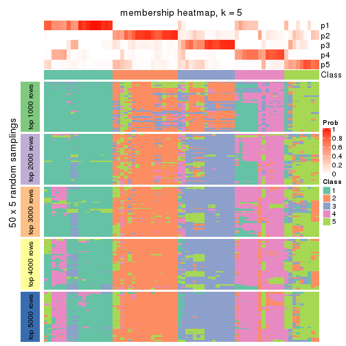
membership_heatmap(res, k = 6)
As soon as we have had the classes for columns, we can look for signatures which are significantly different between classes which can be candidate marks for certain classes. Following are the heatmaps for signatures.
Signature heatmaps where rows are scaled:
get_signatures(res, k = 2)
get_signatures(res, k = 3)
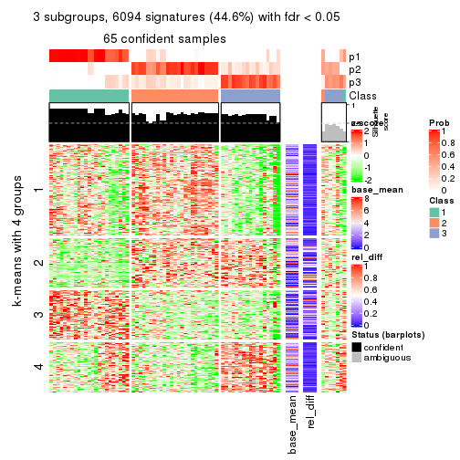
get_signatures(res, k = 4)
get_signatures(res, k = 5)
get_signatures(res, k = 6)
Signature heatmaps where rows are not scaled:
get_signatures(res, k = 2, scale_rows = FALSE)
get_signatures(res, k = 3, scale_rows = FALSE)
get_signatures(res, k = 4, scale_rows = FALSE)
get_signatures(res, k = 5, scale_rows = FALSE)
get_signatures(res, k = 6, scale_rows = FALSE)
Compare the overlap of signatures from different k:
compare_signatures(res)
get_signature() returns a data frame invisibly. TO get the list of signatures, the function
call should be assigned to a variable explicitly. In following code, if plot argument is set
to FALSE, no heatmap is plotted while only the differential analysis is performed.
# code only for demonstration
tb = get_signature(res, k = ..., plot = FALSE)
An example of the output of tb is:
#> which_row fdr mean_1 mean_2 scaled_mean_1 scaled_mean_2 km
#> 1 38 0.042760348 8.373488 9.131774 -0.5533452 0.5164555 1
#> 2 40 0.018707592 7.106213 8.469186 -0.6173731 0.5762149 1
#> 3 55 0.019134737 10.221463 11.207825 -0.6159697 0.5749050 1
#> 4 59 0.006059896 5.921854 7.869574 -0.6899429 0.6439467 1
#> 5 60 0.018055526 8.928898 10.211722 -0.6204761 0.5791110 1
#> 6 98 0.009384629 15.714769 14.887706 0.6635654 -0.6193277 2
...
The columns in tb are:
which_row: row indices corresponding to the input matrix.fdr: FDR for the differential test. mean_x: The mean value in group x.scaled_mean_x: The mean value in group x after rows are scaled.km: Row groups if k-means clustering is applied to rows.UMAP plot which shows how samples are separated.
dimension_reduction(res, k = 2, method = "UMAP")
dimension_reduction(res, k = 3, method = "UMAP")
dimension_reduction(res, k = 4, method = "UMAP")
dimension_reduction(res, k = 5, method = "UMAP")
dimension_reduction(res, k = 6, method = "UMAP")
Following heatmap shows how subgroups are split when increasing k:
collect_classes(res)
If matrix rows can be associated to genes, consider to use GO_Enrichment(res,
...) to perform function enrichment for the signature genes.
The object with results only for a single top-value method and a single partition method can be extracted as:
res = res_list["MAD", "pam"]
# you can also extract it by
# res = res_list["MAD:pam"]
A summary of res and all the functions that can be applied to it:
res
#> A 'ConsensusPartition' object with k = 2, 3, 4, 5, 6.
#> On a matrix with 13673 rows and 72 columns.
#> Top rows (1000, 2000, 3000, 4000, 5000) are extracted by 'MAD' method.
#> Subgroups are detected by 'pam' method.
#> Performed in total 1250 partitions by row resampling.
#> Best k for subgroups seems to be 2.
#>
#> Following methods can be applied to this 'ConsensusPartition' object:
#> [1] "cola_report" "collect_classes" "collect_plots"
#> [4] "collect_stats" "colnames" "compare_signatures"
#> [7] "consensus_heatmap" "dimension_reduction" "functional_enrichment"
#> [10] "get_anno_col" "get_anno" "get_classes"
#> [13] "get_consensus" "get_matrix" "get_membership"
#> [16] "get_param" "get_signatures" "get_stats"
#> [19] "is_best_k" "is_stable_k" "membership_heatmap"
#> [22] "ncol" "nrow" "plot_ecdf"
#> [25] "rownames" "select_partition_number" "show"
#> [28] "suggest_best_k" "test_to_known_factors"
collect_plots() function collects all the plots made from res for all k (number of partitions)
into one single page to provide an easy and fast comparison between different k.
collect_plots(res)
The plots are:
k and the heatmap of
predicted classes for each k.k.k.k.All the plots in panels can be made by individual functions and they are plotted later in this section.
select_partition_number() produces several plots showing different
statistics for choosing “optimized” k. There are following statistics:
k;k, the area increased is defined as \(A_k - A_{k-1}\).The detailed explanations of these statistics can be found in the cola vignette.
Generally speaking, lower PAC score, higher mean silhouette score or higher
concordance corresponds to better partition. Rand index and Jaccard index
measure how similar the current partition is compared to partition with k-1.
If they are too similar, we won't accept k is better than k-1.
select_partition_number(res)
The numeric values for all these statistics can be obtained by get_stats().
get_stats(res)
#> k 1-PAC mean_silhouette concordance area_increased Rand Jaccard
#> 2 2 1.000 0.967 0.987 0.4380 0.570 0.570
#> 3 3 0.898 0.898 0.946 0.5016 0.754 0.574
#> 4 4 0.771 0.831 0.869 0.1107 0.918 0.757
#> 5 5 0.705 0.749 0.852 0.0297 0.993 0.971
#> 6 6 0.698 0.710 0.831 0.0239 0.992 0.969
suggest_best_k() suggests the best \(k\) based on these statistics. The rules are as follows:
NA.suggest_best_k(res)
#> [1] 2
Following shows the table of the partitions (You need to click the show/hide
code output link to see it). The membership matrix (columns with name p*)
is inferred by
clue::cl_consensus()
function with the SE method. Basically the value in the membership matrix
represents the probability to belong to a certain group. The finall class
label for an item is determined with the group with highest probability it
belongs to.
In get_classes() function, the entropy is calculated from the membership
matrix and the silhouette score is calculated from the consensus matrix.
cbind(get_classes(res, k = 2), get_membership(res, k = 2))
#> class entropy silhouette p1 p2
#> SRR1585486 1 0.1414 0.977 0.980 0.020
#> SRR1585488 1 0.0000 0.994 1.000 0.000
#> SRR1585487 2 0.0000 0.983 0.000 1.000
#> SRR1585489 2 0.0000 0.983 0.000 1.000
#> SRR1585490 1 0.0000 0.994 1.000 0.000
#> SRR1585491 1 0.0000 0.994 1.000 0.000
#> SRR1585492 1 0.4022 0.913 0.920 0.080
#> SRR1585493 2 0.0000 0.983 0.000 1.000
#> SRR1585494 2 0.0000 0.983 0.000 1.000
#> SRR1585496 2 0.0000 0.983 0.000 1.000
#> SRR1585495 2 0.0000 0.983 0.000 1.000
#> SRR1585498 2 0.0000 0.983 0.000 1.000
#> SRR1585497 2 0.0000 0.983 0.000 1.000
#> SRR1585499 1 0.0000 0.994 1.000 0.000
#> SRR1585500 2 0.0000 0.983 0.000 1.000
#> SRR1585501 2 0.0000 0.983 0.000 1.000
#> SRR1585502 2 0.0000 0.983 0.000 1.000
#> SRR1585503 2 0.0000 0.983 0.000 1.000
#> SRR1585504 2 0.0000 0.983 0.000 1.000
#> SRR1585505 2 0.0672 0.976 0.008 0.992
#> SRR1585506 2 0.0000 0.983 0.000 1.000
#> SRR1585508 2 0.0000 0.983 0.000 1.000
#> SRR1585507 2 0.0000 0.983 0.000 1.000
#> SRR1585509 1 0.0000 0.994 1.000 0.000
#> SRR1585510 2 0.0000 0.983 0.000 1.000
#> SRR1585511 2 0.0000 0.983 0.000 1.000
#> SRR1585512 2 0.0000 0.983 0.000 1.000
#> SRR1585513 1 0.0000 0.994 1.000 0.000
#> SRR1585516 2 0.0000 0.983 0.000 1.000
#> SRR1585515 1 0.0000 0.994 1.000 0.000
#> SRR1585514 2 0.0000 0.983 0.000 1.000
#> SRR1585518 2 0.0000 0.983 0.000 1.000
#> SRR1585517 2 0.0000 0.983 0.000 1.000
#> SRR1585519 2 0.0000 0.983 0.000 1.000
#> SRR1585520 2 0.0000 0.983 0.000 1.000
#> SRR1585522 2 0.0000 0.983 0.000 1.000
#> SRR1585521 1 0.0000 0.994 1.000 0.000
#> SRR1585524 2 0.9661 0.363 0.392 0.608
#> SRR1585523 1 0.0000 0.994 1.000 0.000
#> SRR1585525 2 0.0376 0.980 0.004 0.996
#> SRR1585526 2 0.0000 0.983 0.000 1.000
#> SRR1585527 1 0.0000 0.994 1.000 0.000
#> SRR1585528 2 0.0000 0.983 0.000 1.000
#> SRR1585529 2 0.0000 0.983 0.000 1.000
#> SRR1585530 2 0.0000 0.983 0.000 1.000
#> SRR1585531 1 0.0000 0.994 1.000 0.000
#> SRR1585532 2 0.0000 0.983 0.000 1.000
#> SRR1585533 1 0.0000 0.994 1.000 0.000
#> SRR1585534 1 0.0000 0.994 1.000 0.000
#> SRR1585535 2 0.0000 0.983 0.000 1.000
#> SRR1585536 2 0.0000 0.983 0.000 1.000
#> SRR1585537 2 0.0000 0.983 0.000 1.000
#> SRR1585538 1 0.0000 0.994 1.000 0.000
#> SRR1585539 1 0.0000 0.994 1.000 0.000
#> SRR1585541 2 0.0000 0.983 0.000 1.000
#> SRR1585540 2 0.0000 0.983 0.000 1.000
#> SRR1585542 1 0.0000 0.994 1.000 0.000
#> SRR1585543 2 0.9710 0.342 0.400 0.600
#> SRR1585544 2 0.0000 0.983 0.000 1.000
#> SRR1585546 1 0.0000 0.994 1.000 0.000
#> SRR1585545 2 0.0000 0.983 0.000 1.000
#> SRR1585547 1 0.0000 0.994 1.000 0.000
#> SRR1585548 1 0.0000 0.994 1.000 0.000
#> SRR1585549 2 0.0000 0.983 0.000 1.000
#> SRR1585550 1 0.1843 0.970 0.972 0.028
#> SRR1585551 2 0.0000 0.983 0.000 1.000
#> SRR1585552 2 0.0000 0.983 0.000 1.000
#> SRR1585553 2 0.0000 0.983 0.000 1.000
#> SRR1585554 2 0.0000 0.983 0.000 1.000
#> SRR1585555 2 0.0000 0.983 0.000 1.000
#> SRR1585557 2 0.0000 0.983 0.000 1.000
#> SRR1585556 2 0.0000 0.983 0.000 1.000
cbind(get_classes(res, k = 3), get_membership(res, k = 3))
#> class entropy silhouette p1 p2 p3
#> SRR1585486 1 0.1267 0.971 0.972 0.004 0.024
#> SRR1585488 1 0.0000 0.989 1.000 0.000 0.000
#> SRR1585487 3 0.1860 0.914 0.000 0.052 0.948
#> SRR1585489 2 0.1529 0.933 0.000 0.960 0.040
#> SRR1585490 1 0.0000 0.989 1.000 0.000 0.000
#> SRR1585491 1 0.0000 0.989 1.000 0.000 0.000
#> SRR1585492 1 0.3802 0.893 0.888 0.032 0.080
#> SRR1585493 2 0.1529 0.933 0.000 0.960 0.040
#> SRR1585494 2 0.1753 0.918 0.000 0.952 0.048
#> SRR1585496 3 0.0592 0.936 0.000 0.012 0.988
#> SRR1585495 3 0.0000 0.932 0.000 0.000 1.000
#> SRR1585498 2 0.5733 0.507 0.000 0.676 0.324
#> SRR1585497 3 0.0747 0.924 0.000 0.016 0.984
#> SRR1585499 1 0.0000 0.989 1.000 0.000 0.000
#> SRR1585500 2 0.6291 0.172 0.000 0.532 0.468
#> SRR1585501 3 0.4121 0.795 0.000 0.168 0.832
#> SRR1585502 3 0.3340 0.853 0.000 0.120 0.880
#> SRR1585503 2 0.1643 0.931 0.000 0.956 0.044
#> SRR1585504 3 0.0592 0.936 0.000 0.012 0.988
#> SRR1585505 3 0.0747 0.924 0.000 0.016 0.984
#> SRR1585506 3 0.0592 0.936 0.000 0.012 0.988
#> SRR1585508 2 0.1529 0.933 0.000 0.960 0.040
#> SRR1585507 3 0.1860 0.910 0.000 0.052 0.948
#> SRR1585509 1 0.0000 0.989 1.000 0.000 0.000
#> SRR1585510 3 0.0592 0.936 0.000 0.012 0.988
#> SRR1585511 3 0.0592 0.936 0.000 0.012 0.988
#> SRR1585512 2 0.1529 0.933 0.000 0.960 0.040
#> SRR1585513 1 0.0000 0.989 1.000 0.000 0.000
#> SRR1585516 3 0.0747 0.935 0.000 0.016 0.984
#> SRR1585515 2 0.5138 0.608 0.252 0.748 0.000
#> SRR1585514 2 0.1031 0.925 0.000 0.976 0.024
#> SRR1585518 2 0.1289 0.931 0.000 0.968 0.032
#> SRR1585517 2 0.1289 0.930 0.000 0.968 0.032
#> SRR1585519 2 0.2066 0.912 0.000 0.940 0.060
#> SRR1585520 3 0.0592 0.936 0.000 0.012 0.988
#> SRR1585522 3 0.0592 0.936 0.000 0.012 0.988
#> SRR1585521 1 0.0000 0.989 1.000 0.000 0.000
#> SRR1585524 2 0.1170 0.913 0.016 0.976 0.008
#> SRR1585523 1 0.0000 0.989 1.000 0.000 0.000
#> SRR1585525 3 0.0000 0.932 0.000 0.000 1.000
#> SRR1585526 3 0.0892 0.933 0.000 0.020 0.980
#> SRR1585527 1 0.0000 0.989 1.000 0.000 0.000
#> SRR1585528 2 0.1529 0.933 0.000 0.960 0.040
#> SRR1585529 2 0.1529 0.933 0.000 0.960 0.040
#> SRR1585530 3 0.3267 0.858 0.000 0.116 0.884
#> SRR1585531 1 0.0000 0.989 1.000 0.000 0.000
#> SRR1585532 2 0.1529 0.933 0.000 0.960 0.040
#> SRR1585533 1 0.0000 0.989 1.000 0.000 0.000
#> SRR1585534 1 0.1031 0.979 0.976 0.024 0.000
#> SRR1585535 2 0.1529 0.933 0.000 0.960 0.040
#> SRR1585536 3 0.0592 0.936 0.000 0.012 0.988
#> SRR1585537 3 0.0592 0.936 0.000 0.012 0.988
#> SRR1585538 1 0.1031 0.979 0.976 0.024 0.000
#> SRR1585539 1 0.0000 0.989 1.000 0.000 0.000
#> SRR1585541 3 0.1163 0.930 0.000 0.028 0.972
#> SRR1585540 2 0.1031 0.927 0.000 0.976 0.024
#> SRR1585542 1 0.0000 0.989 1.000 0.000 0.000
#> SRR1585543 3 0.6617 0.382 0.388 0.012 0.600
#> SRR1585544 3 0.0000 0.932 0.000 0.000 1.000
#> SRR1585546 1 0.0237 0.987 0.996 0.004 0.000
#> SRR1585545 2 0.1163 0.929 0.000 0.972 0.028
#> SRR1585547 1 0.0000 0.989 1.000 0.000 0.000
#> SRR1585548 1 0.1031 0.979 0.976 0.024 0.000
#> SRR1585549 3 0.0592 0.936 0.000 0.012 0.988
#> SRR1585550 1 0.1163 0.964 0.972 0.000 0.028
#> SRR1585551 3 0.0592 0.936 0.000 0.012 0.988
#> SRR1585552 3 0.5882 0.487 0.000 0.348 0.652
#> SRR1585553 3 0.0747 0.935 0.000 0.016 0.984
#> SRR1585554 3 0.0747 0.924 0.000 0.016 0.984
#> SRR1585555 3 0.0592 0.936 0.000 0.012 0.988
#> SRR1585557 3 0.6111 0.358 0.000 0.396 0.604
#> SRR1585556 3 0.0424 0.929 0.000 0.008 0.992
cbind(get_classes(res, k = 4), get_membership(res, k = 4))
#> class entropy silhouette p1 p2 p3 p4
#> SRR1585486 1 0.1488 0.931 0.956 0.000 0.032 0.012
#> SRR1585488 1 0.0000 0.946 1.000 0.000 0.000 0.000
#> SRR1585487 4 0.3453 0.823 0.000 0.080 0.052 0.868
#> SRR1585489 2 0.1022 0.900 0.000 0.968 0.000 0.032
#> SRR1585490 1 0.0000 0.946 1.000 0.000 0.000 0.000
#> SRR1585491 1 0.0000 0.946 1.000 0.000 0.000 0.000
#> SRR1585492 1 0.4461 0.819 0.832 0.028 0.048 0.092
#> SRR1585493 2 0.1022 0.900 0.000 0.968 0.000 0.032
#> SRR1585494 2 0.2871 0.830 0.000 0.896 0.032 0.072
#> SRR1585496 3 0.4564 0.893 0.000 0.000 0.672 0.328
#> SRR1585495 4 0.3311 0.627 0.000 0.000 0.172 0.828
#> SRR1585498 2 0.4677 0.471 0.000 0.680 0.004 0.316
#> SRR1585497 3 0.5404 0.791 0.000 0.028 0.644 0.328
#> SRR1585499 1 0.0000 0.946 1.000 0.000 0.000 0.000
#> SRR1585500 2 0.5497 0.159 0.000 0.524 0.016 0.460
#> SRR1585501 4 0.4955 0.709 0.000 0.144 0.084 0.772
#> SRR1585502 4 0.2868 0.812 0.000 0.136 0.000 0.864
#> SRR1585503 2 0.1488 0.898 0.000 0.956 0.012 0.032
#> SRR1585504 3 0.4564 0.893 0.000 0.000 0.672 0.328
#> SRR1585505 4 0.2032 0.785 0.000 0.028 0.036 0.936
#> SRR1585506 3 0.4585 0.890 0.000 0.000 0.668 0.332
#> SRR1585508 2 0.1022 0.900 0.000 0.968 0.000 0.032
#> SRR1585507 4 0.2565 0.783 0.000 0.056 0.032 0.912
#> SRR1585509 1 0.0000 0.946 1.000 0.000 0.000 0.000
#> SRR1585510 4 0.1637 0.853 0.000 0.060 0.000 0.940
#> SRR1585511 3 0.4985 0.655 0.000 0.000 0.532 0.468
#> SRR1585512 2 0.1022 0.900 0.000 0.968 0.000 0.032
#> SRR1585513 1 0.0000 0.946 1.000 0.000 0.000 0.000
#> SRR1585516 4 0.2124 0.852 0.000 0.068 0.008 0.924
#> SRR1585515 2 0.6317 0.576 0.096 0.624 0.280 0.000
#> SRR1585514 2 0.1284 0.893 0.000 0.964 0.024 0.012
#> SRR1585518 2 0.0707 0.898 0.000 0.980 0.000 0.020
#> SRR1585517 2 0.4361 0.756 0.000 0.772 0.208 0.020
#> SRR1585519 2 0.3082 0.823 0.000 0.884 0.032 0.084
#> SRR1585520 4 0.1637 0.853 0.000 0.060 0.000 0.940
#> SRR1585522 4 0.1637 0.853 0.000 0.060 0.000 0.940
#> SRR1585521 1 0.0000 0.946 1.000 0.000 0.000 0.000
#> SRR1585524 2 0.1118 0.883 0.000 0.964 0.036 0.000
#> SRR1585523 1 0.0000 0.946 1.000 0.000 0.000 0.000
#> SRR1585525 3 0.4522 0.889 0.000 0.000 0.680 0.320
#> SRR1585526 3 0.4936 0.884 0.000 0.012 0.672 0.316
#> SRR1585527 1 0.0188 0.945 0.996 0.000 0.004 0.000
#> SRR1585528 2 0.1022 0.900 0.000 0.968 0.000 0.032
#> SRR1585529 2 0.1022 0.900 0.000 0.968 0.000 0.032
#> SRR1585530 4 0.2868 0.811 0.000 0.136 0.000 0.864
#> SRR1585531 1 0.0188 0.945 0.996 0.000 0.004 0.000
#> SRR1585532 2 0.1022 0.900 0.000 0.968 0.000 0.032
#> SRR1585533 1 0.0000 0.946 1.000 0.000 0.000 0.000
#> SRR1585534 1 0.4483 0.746 0.712 0.004 0.284 0.000
#> SRR1585535 2 0.1022 0.900 0.000 0.968 0.000 0.032
#> SRR1585536 4 0.1474 0.852 0.000 0.052 0.000 0.948
#> SRR1585537 4 0.1637 0.853 0.000 0.060 0.000 0.940
#> SRR1585538 1 0.4535 0.739 0.704 0.004 0.292 0.000
#> SRR1585539 1 0.0336 0.945 0.992 0.000 0.008 0.000
#> SRR1585541 4 0.1940 0.851 0.000 0.076 0.000 0.924
#> SRR1585540 2 0.0469 0.895 0.000 0.988 0.000 0.012
#> SRR1585542 1 0.1211 0.925 0.960 0.000 0.040 0.000
#> SRR1585543 3 0.2081 0.559 0.084 0.000 0.916 0.000
#> SRR1585544 4 0.0469 0.831 0.000 0.012 0.000 0.988
#> SRR1585546 1 0.1022 0.935 0.968 0.000 0.032 0.000
#> SRR1585545 2 0.0657 0.889 0.000 0.984 0.004 0.012
#> SRR1585547 1 0.0000 0.946 1.000 0.000 0.000 0.000
#> SRR1585548 1 0.4535 0.739 0.704 0.004 0.292 0.000
#> SRR1585549 3 0.4564 0.893 0.000 0.000 0.672 0.328
#> SRR1585550 1 0.1256 0.926 0.964 0.000 0.008 0.028
#> SRR1585551 3 0.4564 0.893 0.000 0.000 0.672 0.328
#> SRR1585552 4 0.4697 0.513 0.000 0.356 0.000 0.644
#> SRR1585553 4 0.1807 0.810 0.000 0.008 0.052 0.940
#> SRR1585554 4 0.1936 0.788 0.000 0.028 0.032 0.940
#> SRR1585555 4 0.1302 0.850 0.000 0.044 0.000 0.956
#> SRR1585557 4 0.4866 0.403 0.000 0.404 0.000 0.596
#> SRR1585556 4 0.0804 0.814 0.000 0.012 0.008 0.980
cbind(get_classes(res, k = 5), get_membership(res, k = 5))
#> class entropy silhouette p1 p2 p3 p4 p5
#> SRR1585486 1 0.1399 0.897 0.952 0.000 0.000 0.020 0.028
#> SRR1585488 1 0.0000 0.916 1.000 0.000 0.000 0.000 0.000
#> SRR1585487 3 0.3904 0.786 0.000 0.124 0.816 0.016 0.044
#> SRR1585489 2 0.0162 0.861 0.000 0.996 0.004 0.000 0.000
#> SRR1585490 1 0.0000 0.916 1.000 0.000 0.000 0.000 0.000
#> SRR1585491 1 0.0000 0.916 1.000 0.000 0.000 0.000 0.000
#> SRR1585492 1 0.5108 0.606 0.716 0.000 0.120 0.156 0.008
#> SRR1585493 2 0.0162 0.861 0.000 0.996 0.004 0.000 0.000
#> SRR1585494 2 0.4922 0.487 0.000 0.716 0.128 0.156 0.000
#> SRR1585496 5 0.3586 0.861 0.000 0.000 0.264 0.000 0.736
#> SRR1585495 3 0.3366 0.531 0.000 0.000 0.768 0.000 0.232
#> SRR1585498 2 0.5615 0.113 0.000 0.584 0.320 0.096 0.000
#> SRR1585497 5 0.5750 0.438 0.000 0.000 0.228 0.156 0.616
#> SRR1585499 1 0.0000 0.916 1.000 0.000 0.000 0.000 0.000
#> SRR1585500 4 0.5664 0.000 0.000 0.168 0.200 0.632 0.000
#> SRR1585501 3 0.4805 0.669 0.000 0.128 0.728 0.000 0.144
#> SRR1585502 3 0.2891 0.783 0.000 0.176 0.824 0.000 0.000
#> SRR1585503 2 0.0854 0.849 0.000 0.976 0.012 0.008 0.004
#> SRR1585504 5 0.3586 0.861 0.000 0.000 0.264 0.000 0.736
#> SRR1585505 3 0.2971 0.594 0.000 0.000 0.836 0.156 0.008
#> SRR1585506 5 0.3612 0.858 0.000 0.000 0.268 0.000 0.732
#> SRR1585508 2 0.0162 0.861 0.000 0.996 0.004 0.000 0.000
#> SRR1585507 3 0.3183 0.587 0.000 0.016 0.828 0.156 0.000
#> SRR1585509 1 0.0000 0.916 1.000 0.000 0.000 0.000 0.000
#> SRR1585510 3 0.2280 0.809 0.000 0.120 0.880 0.000 0.000
#> SRR1585511 5 0.4192 0.659 0.000 0.000 0.404 0.000 0.596
#> SRR1585512 2 0.0162 0.861 0.000 0.996 0.004 0.000 0.000
#> SRR1585513 1 0.0000 0.916 1.000 0.000 0.000 0.000 0.000
#> SRR1585516 3 0.2722 0.809 0.000 0.120 0.868 0.008 0.004
#> SRR1585515 2 0.5894 0.335 0.008 0.616 0.000 0.132 0.244
#> SRR1585514 2 0.1106 0.836 0.000 0.964 0.000 0.024 0.012
#> SRR1585518 2 0.0162 0.861 0.000 0.996 0.004 0.000 0.000
#> SRR1585517 2 0.3951 0.628 0.000 0.776 0.004 0.028 0.192
#> SRR1585519 2 0.4879 0.493 0.000 0.720 0.124 0.156 0.000
#> SRR1585520 3 0.2280 0.809 0.000 0.120 0.880 0.000 0.000
#> SRR1585522 3 0.2280 0.809 0.000 0.120 0.880 0.000 0.000
#> SRR1585521 1 0.0000 0.916 1.000 0.000 0.000 0.000 0.000
#> SRR1585524 2 0.1934 0.806 0.000 0.928 0.004 0.052 0.016
#> SRR1585523 1 0.0000 0.916 1.000 0.000 0.000 0.000 0.000
#> SRR1585525 5 0.3452 0.845 0.000 0.000 0.244 0.000 0.756
#> SRR1585526 5 0.3715 0.858 0.000 0.004 0.260 0.000 0.736
#> SRR1585527 1 0.0404 0.912 0.988 0.000 0.000 0.000 0.012
#> SRR1585528 2 0.0162 0.861 0.000 0.996 0.004 0.000 0.000
#> SRR1585529 2 0.0162 0.861 0.000 0.996 0.004 0.000 0.000
#> SRR1585530 3 0.2773 0.793 0.000 0.164 0.836 0.000 0.000
#> SRR1585531 1 0.0404 0.912 0.988 0.000 0.000 0.000 0.012
#> SRR1585532 2 0.0162 0.861 0.000 0.996 0.004 0.000 0.000
#> SRR1585533 1 0.0000 0.916 1.000 0.000 0.000 0.000 0.000
#> SRR1585534 1 0.5699 0.573 0.628 0.004 0.000 0.124 0.244
#> SRR1585535 2 0.0162 0.861 0.000 0.996 0.004 0.000 0.000
#> SRR1585536 3 0.2127 0.809 0.000 0.108 0.892 0.000 0.000
#> SRR1585537 3 0.5076 0.660 0.000 0.108 0.692 0.200 0.000
#> SRR1585538 1 0.5845 0.553 0.608 0.004 0.000 0.132 0.256
#> SRR1585539 1 0.0290 0.914 0.992 0.000 0.000 0.000 0.008
#> SRR1585541 3 0.2424 0.807 0.000 0.132 0.868 0.000 0.000
#> SRR1585540 2 0.0162 0.861 0.000 0.996 0.004 0.000 0.000
#> SRR1585542 1 0.1412 0.887 0.952 0.000 0.004 0.008 0.036
#> SRR1585543 5 0.2473 0.351 0.032 0.000 0.000 0.072 0.896
#> SRR1585544 3 0.0510 0.758 0.000 0.016 0.984 0.000 0.000
#> SRR1585546 1 0.1310 0.899 0.956 0.000 0.000 0.020 0.024
#> SRR1585545 2 0.1618 0.824 0.000 0.944 0.008 0.040 0.008
#> SRR1585547 1 0.0000 0.916 1.000 0.000 0.000 0.000 0.000
#> SRR1585548 1 0.5801 0.559 0.616 0.004 0.000 0.132 0.248
#> SRR1585549 5 0.3586 0.861 0.000 0.000 0.264 0.000 0.736
#> SRR1585550 1 0.1399 0.888 0.952 0.000 0.028 0.000 0.020
#> SRR1585551 5 0.3586 0.861 0.000 0.000 0.264 0.000 0.736
#> SRR1585552 3 0.4138 0.477 0.000 0.384 0.616 0.000 0.000
#> SRR1585553 3 0.2573 0.731 0.000 0.016 0.880 0.000 0.104
#> SRR1585554 3 0.2690 0.602 0.000 0.000 0.844 0.156 0.000
#> SRR1585555 3 0.1851 0.805 0.000 0.088 0.912 0.000 0.000
#> SRR1585557 3 0.4249 0.376 0.000 0.432 0.568 0.000 0.000
#> SRR1585556 3 0.0794 0.733 0.000 0.000 0.972 0.028 0.000
cbind(get_classes(res, k = 6), get_membership(res, k = 6))
#> class entropy silhouette p1 p2 p3 p4 p5 p6
#> SRR1585486 1 0.1075 0.866 0.952 0.000 0.000 0.048 0.000 0.000
#> SRR1585488 1 0.1387 0.855 0.932 0.000 0.000 0.000 0.000 0.068
#> SRR1585487 5 0.4460 0.750 0.000 0.128 0.000 0.076 0.756 0.040
#> SRR1585489 2 0.0000 0.852 0.000 1.000 0.000 0.000 0.000 0.000
#> SRR1585490 1 0.1387 0.855 0.932 0.000 0.000 0.000 0.000 0.068
#> SRR1585491 1 0.1387 0.855 0.932 0.000 0.000 0.000 0.000 0.068
#> SRR1585492 1 0.6213 0.358 0.576 0.000 0.196 0.000 0.160 0.068
#> SRR1585493 2 0.0000 0.852 0.000 1.000 0.000 0.000 0.000 0.000
#> SRR1585494 2 0.5008 0.425 0.000 0.644 0.188 0.000 0.168 0.000
#> SRR1585496 3 0.2823 0.861 0.000 0.000 0.796 0.000 0.204 0.000
#> SRR1585495 5 0.3266 0.491 0.000 0.000 0.272 0.000 0.728 0.000
#> SRR1585498 2 0.5470 0.159 0.000 0.516 0.136 0.000 0.348 0.000
#> SRR1585497 3 0.2597 0.264 0.000 0.000 0.824 0.000 0.176 0.000
#> SRR1585499 1 0.0000 0.879 1.000 0.000 0.000 0.000 0.000 0.000
#> SRR1585500 4 0.5553 0.000 0.000 0.040 0.152 0.644 0.164 0.000
#> SRR1585501 5 0.4532 0.640 0.000 0.108 0.196 0.000 0.696 0.000
#> SRR1585502 5 0.2730 0.781 0.000 0.192 0.000 0.000 0.808 0.000
#> SRR1585503 2 0.0777 0.842 0.000 0.972 0.000 0.024 0.004 0.000
#> SRR1585504 3 0.2823 0.861 0.000 0.000 0.796 0.000 0.204 0.000
#> SRR1585505 5 0.2762 0.496 0.000 0.000 0.196 0.000 0.804 0.000
#> SRR1585506 3 0.2883 0.855 0.000 0.000 0.788 0.000 0.212 0.000
#> SRR1585508 2 0.0000 0.852 0.000 1.000 0.000 0.000 0.000 0.000
#> SRR1585507 5 0.3136 0.487 0.000 0.016 0.188 0.000 0.796 0.000
#> SRR1585509 1 0.0000 0.879 1.000 0.000 0.000 0.000 0.000 0.000
#> SRR1585510 5 0.2454 0.791 0.000 0.160 0.000 0.000 0.840 0.000
#> SRR1585511 3 0.3592 0.671 0.000 0.000 0.656 0.000 0.344 0.000
#> SRR1585512 2 0.0000 0.852 0.000 1.000 0.000 0.000 0.000 0.000
#> SRR1585513 1 0.0000 0.879 1.000 0.000 0.000 0.000 0.000 0.000
#> SRR1585516 5 0.3806 0.777 0.000 0.144 0.000 0.024 0.792 0.040
#> SRR1585515 2 0.3747 0.418 0.000 0.604 0.000 0.396 0.000 0.000
#> SRR1585514 2 0.1204 0.827 0.000 0.944 0.000 0.056 0.000 0.000
#> SRR1585518 2 0.0000 0.852 0.000 1.000 0.000 0.000 0.000 0.000
#> SRR1585517 2 0.3649 0.671 0.000 0.764 0.000 0.196 0.000 0.040
#> SRR1585519 2 0.4977 0.431 0.000 0.648 0.188 0.000 0.164 0.000
#> SRR1585520 5 0.2454 0.791 0.000 0.160 0.000 0.000 0.840 0.000
#> SRR1585522 5 0.2454 0.791 0.000 0.160 0.000 0.000 0.840 0.000
#> SRR1585521 1 0.0000 0.879 1.000 0.000 0.000 0.000 0.000 0.000
#> SRR1585524 2 0.2006 0.789 0.000 0.892 0.000 0.104 0.004 0.000
#> SRR1585523 1 0.0000 0.879 1.000 0.000 0.000 0.000 0.000 0.000
#> SRR1585525 3 0.3014 0.846 0.000 0.000 0.804 0.012 0.184 0.000
#> SRR1585526 3 0.2933 0.859 0.000 0.004 0.796 0.000 0.200 0.000
#> SRR1585527 1 0.0363 0.877 0.988 0.000 0.000 0.012 0.000 0.000
#> SRR1585528 2 0.0000 0.852 0.000 1.000 0.000 0.000 0.000 0.000
#> SRR1585529 2 0.0000 0.852 0.000 1.000 0.000 0.000 0.000 0.000
#> SRR1585530 5 0.2793 0.776 0.000 0.200 0.000 0.000 0.800 0.000
#> SRR1585531 1 0.0363 0.877 0.988 0.000 0.000 0.012 0.000 0.000
#> SRR1585532 2 0.0937 0.832 0.000 0.960 0.000 0.000 0.000 0.040
#> SRR1585533 1 0.0000 0.879 1.000 0.000 0.000 0.000 0.000 0.000
#> SRR1585534 1 0.5292 0.406 0.520 0.000 0.000 0.372 0.000 0.108
#> SRR1585535 2 0.0000 0.852 0.000 1.000 0.000 0.000 0.000 0.000
#> SRR1585536 5 0.2178 0.791 0.000 0.132 0.000 0.000 0.868 0.000
#> SRR1585537 6 0.1387 0.000 0.000 0.000 0.000 0.000 0.068 0.932
#> SRR1585538 1 0.5339 0.364 0.488 0.000 0.000 0.404 0.000 0.108
#> SRR1585539 1 0.0260 0.879 0.992 0.000 0.000 0.008 0.000 0.000
#> SRR1585541 5 0.3422 0.780 0.000 0.168 0.000 0.000 0.792 0.040
#> SRR1585540 2 0.0000 0.852 0.000 1.000 0.000 0.000 0.000 0.000
#> SRR1585542 1 0.1562 0.851 0.940 0.000 0.032 0.024 0.004 0.000
#> SRR1585543 3 0.4020 0.443 0.032 0.000 0.692 0.276 0.000 0.000
#> SRR1585544 5 0.0632 0.727 0.000 0.024 0.000 0.000 0.976 0.000
#> SRR1585546 1 0.1007 0.868 0.956 0.000 0.000 0.044 0.000 0.000
#> SRR1585545 2 0.3101 0.765 0.000 0.856 0.056 0.000 0.020 0.068
#> SRR1585547 1 0.0000 0.879 1.000 0.000 0.000 0.000 0.000 0.000
#> SRR1585548 1 0.5330 0.370 0.496 0.000 0.000 0.396 0.000 0.108
#> SRR1585549 3 0.2823 0.861 0.000 0.000 0.796 0.000 0.204 0.000
#> SRR1585550 1 0.1332 0.860 0.952 0.000 0.008 0.012 0.028 0.000
#> SRR1585551 3 0.2823 0.861 0.000 0.000 0.796 0.000 0.204 0.000
#> SRR1585552 5 0.3727 0.565 0.000 0.388 0.000 0.000 0.612 0.000
#> SRR1585553 5 0.2868 0.706 0.000 0.028 0.132 0.000 0.840 0.000
#> SRR1585554 5 0.2697 0.505 0.000 0.000 0.188 0.000 0.812 0.000
#> SRR1585555 5 0.1814 0.783 0.000 0.100 0.000 0.000 0.900 0.000
#> SRR1585557 5 0.3823 0.488 0.000 0.436 0.000 0.000 0.564 0.000
#> SRR1585556 5 0.0458 0.698 0.000 0.000 0.016 0.000 0.984 0.000
Heatmaps for the consensus matrix. It visualizes the probability of two samples to be in a same group.
consensus_heatmap(res, k = 2)
consensus_heatmap(res, k = 3)
consensus_heatmap(res, k = 4)
consensus_heatmap(res, k = 5)
consensus_heatmap(res, k = 6)
Heatmaps for the membership of samples in all partitions to see how consistent they are:
membership_heatmap(res, k = 2)
membership_heatmap(res, k = 3)

membership_heatmap(res, k = 4)
membership_heatmap(res, k = 5)
membership_heatmap(res, k = 6)
As soon as we have had the classes for columns, we can look for signatures which are significantly different between classes which can be candidate marks for certain classes. Following are the heatmaps for signatures.
Signature heatmaps where rows are scaled:
get_signatures(res, k = 2)
get_signatures(res, k = 3)
get_signatures(res, k = 4)
get_signatures(res, k = 5)
get_signatures(res, k = 6)
Signature heatmaps where rows are not scaled:
get_signatures(res, k = 2, scale_rows = FALSE)

get_signatures(res, k = 3, scale_rows = FALSE)
get_signatures(res, k = 4, scale_rows = FALSE)
get_signatures(res, k = 5, scale_rows = FALSE)
get_signatures(res, k = 6, scale_rows = FALSE)
Compare the overlap of signatures from different k:
compare_signatures(res)
get_signature() returns a data frame invisibly. TO get the list of signatures, the function
call should be assigned to a variable explicitly. In following code, if plot argument is set
to FALSE, no heatmap is plotted while only the differential analysis is performed.
# code only for demonstration
tb = get_signature(res, k = ..., plot = FALSE)
An example of the output of tb is:
#> which_row fdr mean_1 mean_2 scaled_mean_1 scaled_mean_2 km
#> 1 38 0.042760348 8.373488 9.131774 -0.5533452 0.5164555 1
#> 2 40 0.018707592 7.106213 8.469186 -0.6173731 0.5762149 1
#> 3 55 0.019134737 10.221463 11.207825 -0.6159697 0.5749050 1
#> 4 59 0.006059896 5.921854 7.869574 -0.6899429 0.6439467 1
#> 5 60 0.018055526 8.928898 10.211722 -0.6204761 0.5791110 1
#> 6 98 0.009384629 15.714769 14.887706 0.6635654 -0.6193277 2
...
The columns in tb are:
which_row: row indices corresponding to the input matrix.fdr: FDR for the differential test. mean_x: The mean value in group x.scaled_mean_x: The mean value in group x after rows are scaled.km: Row groups if k-means clustering is applied to rows.UMAP plot which shows how samples are separated.
dimension_reduction(res, k = 2, method = "UMAP")
dimension_reduction(res, k = 3, method = "UMAP")
dimension_reduction(res, k = 4, method = "UMAP")
dimension_reduction(res, k = 5, method = "UMAP")
dimension_reduction(res, k = 6, method = "UMAP")
Following heatmap shows how subgroups are split when increasing k:
collect_classes(res)
If matrix rows can be associated to genes, consider to use GO_Enrichment(res,
...) to perform function enrichment for the signature genes.
The object with results only for a single top-value method and a single partition method can be extracted as:
res = res_list["MAD", "mclust"]
# you can also extract it by
# res = res_list["MAD:mclust"]
A summary of res and all the functions that can be applied to it:
res
#> A 'ConsensusPartition' object with k = 2, 3, 4, 5, 6.
#> On a matrix with 13673 rows and 72 columns.
#> Top rows (1000, 2000, 3000, 4000, 5000) are extracted by 'MAD' method.
#> Subgroups are detected by 'mclust' method.
#> Performed in total 1250 partitions by row resampling.
#> Best k for subgroups seems to be 2.
#>
#> Following methods can be applied to this 'ConsensusPartition' object:
#> [1] "cola_report" "collect_classes" "collect_plots"
#> [4] "collect_stats" "colnames" "compare_signatures"
#> [7] "consensus_heatmap" "dimension_reduction" "functional_enrichment"
#> [10] "get_anno_col" "get_anno" "get_classes"
#> [13] "get_consensus" "get_matrix" "get_membership"
#> [16] "get_param" "get_signatures" "get_stats"
#> [19] "is_best_k" "is_stable_k" "membership_heatmap"
#> [22] "ncol" "nrow" "plot_ecdf"
#> [25] "rownames" "select_partition_number" "show"
#> [28] "suggest_best_k" "test_to_known_factors"
collect_plots() function collects all the plots made from res for all k (number of partitions)
into one single page to provide an easy and fast comparison between different k.
collect_plots(res)
The plots are:
k and the heatmap of
predicted classes for each k.k.k.k.All the plots in panels can be made by individual functions and they are plotted later in this section.
select_partition_number() produces several plots showing different
statistics for choosing “optimized” k. There are following statistics:
k;k, the area increased is defined as \(A_k - A_{k-1}\).The detailed explanations of these statistics can be found in the cola vignette.
Generally speaking, lower PAC score, higher mean silhouette score or higher
concordance corresponds to better partition. Rand index and Jaccard index
measure how similar the current partition is compared to partition with k-1.
If they are too similar, we won't accept k is better than k-1.
select_partition_number(res)
The numeric values for all these statistics can be obtained by get_stats().
get_stats(res)
#> k 1-PAC mean_silhouette concordance area_increased Rand Jaccard
#> 2 2 0.483 0.890 0.833 0.3562 0.549 0.549
#> 3 3 0.260 0.693 0.754 0.4940 1.000 1.000
#> 4 4 0.427 0.619 0.742 0.2808 0.778 0.596
#> 5 5 0.473 0.315 0.619 0.0855 0.812 0.512
#> 6 6 0.571 0.525 0.678 0.0862 0.869 0.533
suggest_best_k() suggests the best \(k\) based on these statistics. The rules are as follows:
NA.suggest_best_k(res)
#> [1] 2
Following shows the table of the partitions (You need to click the show/hide
code output link to see it). The membership matrix (columns with name p*)
is inferred by
clue::cl_consensus()
function with the SE method. Basically the value in the membership matrix
represents the probability to belong to a certain group. The finall class
label for an item is determined with the group with highest probability it
belongs to.
In get_classes() function, the entropy is calculated from the membership
matrix and the silhouette score is calculated from the consensus matrix.
cbind(get_classes(res, k = 2), get_membership(res, k = 2))
#> class entropy silhouette p1 p2
#> SRR1585486 1 0.9522 0.994 0.628 0.372
#> SRR1585488 1 0.9522 0.994 0.628 0.372
#> SRR1585487 2 0.0000 0.899 0.000 1.000
#> SRR1585489 2 0.9460 0.554 0.364 0.636
#> SRR1585490 1 0.9522 0.994 0.628 0.372
#> SRR1585491 1 0.9522 0.994 0.628 0.372
#> SRR1585492 1 0.9635 0.972 0.612 0.388
#> SRR1585493 2 0.9460 0.554 0.364 0.636
#> SRR1585494 2 0.0672 0.897 0.008 0.992
#> SRR1585496 2 0.0376 0.898 0.004 0.996
#> SRR1585495 2 0.0376 0.898 0.004 0.996
#> SRR1585498 2 0.3584 0.856 0.068 0.932
#> SRR1585497 2 0.0376 0.899 0.004 0.996
#> SRR1585499 1 0.9522 0.994 0.628 0.372
#> SRR1585500 2 0.0000 0.899 0.000 1.000
#> SRR1585501 2 0.0672 0.897 0.008 0.992
#> SRR1585502 2 0.1184 0.893 0.016 0.984
#> SRR1585503 2 0.0000 0.899 0.000 1.000
#> SRR1585504 2 0.0672 0.897 0.008 0.992
#> SRR1585505 2 0.2948 0.830 0.052 0.948
#> SRR1585506 2 0.0672 0.897 0.008 0.992
#> SRR1585508 2 0.9248 0.576 0.340 0.660
#> SRR1585507 2 0.0376 0.898 0.004 0.996
#> SRR1585509 1 0.9522 0.994 0.628 0.372
#> SRR1585510 2 0.0000 0.899 0.000 1.000
#> SRR1585511 2 0.0672 0.897 0.008 0.992
#> SRR1585512 2 0.9460 0.554 0.364 0.636
#> SRR1585513 1 0.9522 0.994 0.628 0.372
#> SRR1585516 2 0.0000 0.899 0.000 1.000
#> SRR1585515 1 0.9522 0.994 0.628 0.372
#> SRR1585514 2 0.0000 0.899 0.000 1.000
#> SRR1585518 2 0.9460 0.554 0.364 0.636
#> SRR1585517 2 0.0000 0.899 0.000 1.000
#> SRR1585519 2 0.1633 0.888 0.024 0.976
#> SRR1585520 2 0.4298 0.833 0.088 0.912
#> SRR1585522 2 0.0000 0.899 0.000 1.000
#> SRR1585521 1 0.9491 0.991 0.632 0.368
#> SRR1585524 2 0.6148 0.618 0.152 0.848
#> SRR1585523 1 0.9522 0.994 0.628 0.372
#> SRR1585525 1 0.9795 0.920 0.584 0.416
#> SRR1585526 2 0.0376 0.898 0.004 0.996
#> SRR1585527 1 0.9491 0.991 0.632 0.368
#> SRR1585528 2 0.3584 0.856 0.068 0.932
#> SRR1585529 2 0.9393 0.562 0.356 0.644
#> SRR1585530 2 0.0000 0.899 0.000 1.000
#> SRR1585531 1 0.9491 0.991 0.632 0.368
#> SRR1585532 2 0.0000 0.899 0.000 1.000
#> SRR1585533 1 0.9491 0.991 0.632 0.368
#> SRR1585534 1 0.9522 0.994 0.628 0.372
#> SRR1585535 2 0.6048 0.777 0.148 0.852
#> SRR1585536 2 0.0376 0.898 0.004 0.996
#> SRR1585537 2 0.0000 0.899 0.000 1.000
#> SRR1585538 1 0.9522 0.994 0.628 0.372
#> SRR1585539 1 0.9522 0.994 0.628 0.372
#> SRR1585541 2 0.0000 0.899 0.000 1.000
#> SRR1585540 2 0.4161 0.842 0.084 0.916
#> SRR1585542 1 0.9491 0.991 0.632 0.368
#> SRR1585543 1 0.9491 0.991 0.632 0.368
#> SRR1585544 2 0.0000 0.899 0.000 1.000
#> SRR1585546 1 0.9522 0.994 0.628 0.372
#> SRR1585545 2 0.0000 0.899 0.000 1.000
#> SRR1585547 1 0.9522 0.994 0.628 0.372
#> SRR1585548 1 0.9522 0.994 0.628 0.372
#> SRR1585549 2 0.0672 0.897 0.008 0.992
#> SRR1585550 1 0.9491 0.991 0.632 0.368
#> SRR1585551 2 0.0672 0.897 0.008 0.992
#> SRR1585552 2 0.3431 0.859 0.064 0.936
#> SRR1585553 2 0.0376 0.898 0.004 0.996
#> SRR1585554 2 0.0000 0.899 0.000 1.000
#> SRR1585555 2 0.0000 0.899 0.000 1.000
#> SRR1585557 2 0.3431 0.859 0.064 0.936
#> SRR1585556 2 0.0000 0.899 0.000 1.000
cbind(get_classes(res, k = 3), get_membership(res, k = 3))
#> class entropy silhouette p1 p2 p3
#> SRR1585486 1 0.5291 0.799 0.732 0.268 0.000
#> SRR1585488 1 0.0237 0.757 0.996 0.004 0.000
#> SRR1585487 2 0.5851 0.676 0.140 0.792 0.068
#> SRR1585489 2 0.5760 0.583 0.000 0.672 0.328
#> SRR1585490 1 0.2165 0.779 0.936 0.064 0.000
#> SRR1585491 1 0.0237 0.758 0.996 0.000 0.004
#> SRR1585492 1 0.7357 0.652 0.620 0.332 0.048
#> SRR1585493 2 0.6192 0.538 0.000 0.580 0.420
#> SRR1585494 2 0.2772 0.742 0.004 0.916 0.080
#> SRR1585496 2 0.8300 0.539 0.136 0.620 0.244
#> SRR1585495 2 0.7713 0.580 0.080 0.636 0.284
#> SRR1585498 2 0.2711 0.738 0.000 0.912 0.088
#> SRR1585497 2 0.3889 0.726 0.084 0.884 0.032
#> SRR1585499 1 0.5291 0.799 0.732 0.268 0.000
#> SRR1585500 2 0.6519 0.679 0.108 0.760 0.132
#> SRR1585501 2 0.2537 0.743 0.000 0.920 0.080
#> SRR1585502 2 0.4654 0.725 0.000 0.792 0.208
#> SRR1585503 2 0.6410 0.671 0.144 0.764 0.092
#> SRR1585504 2 0.6859 0.507 0.016 0.564 0.420
#> SRR1585505 2 0.5408 0.683 0.136 0.812 0.052
#> SRR1585506 2 0.6476 0.500 0.004 0.548 0.448
#> SRR1585508 2 0.6280 0.500 0.000 0.540 0.460
#> SRR1585507 2 0.1015 0.750 0.008 0.980 0.012
#> SRR1585509 1 0.5291 0.799 0.732 0.268 0.000
#> SRR1585510 2 0.4099 0.734 0.008 0.852 0.140
#> SRR1585511 2 0.6460 0.504 0.004 0.556 0.440
#> SRR1585512 2 0.6225 0.523 0.000 0.568 0.432
#> SRR1585513 1 0.0237 0.758 0.996 0.000 0.004
#> SRR1585516 2 0.5603 0.681 0.136 0.804 0.060
#> SRR1585515 1 0.0475 0.756 0.992 0.004 0.004
#> SRR1585514 2 0.7164 0.701 0.140 0.720 0.140
#> SRR1585518 2 0.6267 0.507 0.000 0.548 0.452
#> SRR1585517 2 0.5913 0.678 0.144 0.788 0.068
#> SRR1585519 2 0.2945 0.739 0.004 0.908 0.088
#> SRR1585520 2 0.2625 0.741 0.000 0.916 0.084
#> SRR1585522 2 0.5581 0.722 0.036 0.788 0.176
#> SRR1585521 1 0.5517 0.797 0.728 0.268 0.004
#> SRR1585524 2 0.6857 0.522 0.252 0.696 0.052
#> SRR1585523 1 0.6407 0.772 0.700 0.272 0.028
#> SRR1585525 1 0.7232 0.450 0.544 0.428 0.028
#> SRR1585526 2 0.8120 0.555 0.136 0.640 0.224
#> SRR1585527 1 0.5517 0.797 0.728 0.268 0.004
#> SRR1585528 2 0.3879 0.729 0.000 0.848 0.152
#> SRR1585529 2 0.5810 0.577 0.000 0.664 0.336
#> SRR1585530 2 0.4978 0.716 0.004 0.780 0.216
#> SRR1585531 1 0.5517 0.797 0.728 0.268 0.004
#> SRR1585532 2 0.5634 0.682 0.144 0.800 0.056
#> SRR1585533 1 0.5291 0.799 0.732 0.268 0.000
#> SRR1585534 1 0.0475 0.756 0.992 0.004 0.004
#> SRR1585535 2 0.2878 0.738 0.000 0.904 0.096
#> SRR1585536 2 0.3272 0.742 0.004 0.892 0.104
#> SRR1585537 2 0.6583 0.676 0.108 0.756 0.136
#> SRR1585538 1 0.0661 0.762 0.988 0.008 0.004
#> SRR1585539 1 0.2772 0.780 0.916 0.080 0.004
#> SRR1585541 2 0.4964 0.743 0.048 0.836 0.116
#> SRR1585540 2 0.3816 0.729 0.000 0.852 0.148
#> SRR1585542 1 0.5517 0.797 0.728 0.268 0.004
#> SRR1585543 1 0.5692 0.795 0.724 0.268 0.008
#> SRR1585544 2 0.4712 0.708 0.108 0.848 0.044
#> SRR1585546 1 0.0829 0.763 0.984 0.012 0.004
#> SRR1585545 2 0.5357 0.705 0.116 0.820 0.064
#> SRR1585547 1 0.5291 0.799 0.732 0.268 0.000
#> SRR1585548 1 0.0237 0.758 0.996 0.000 0.004
#> SRR1585549 2 0.6513 0.477 0.004 0.520 0.476
#> SRR1585550 1 0.5517 0.797 0.728 0.268 0.004
#> SRR1585551 2 0.6786 0.494 0.012 0.540 0.448
#> SRR1585552 2 0.4399 0.733 0.000 0.812 0.188
#> SRR1585553 2 0.0592 0.748 0.012 0.988 0.000
#> SRR1585554 2 0.3272 0.721 0.104 0.892 0.004
#> SRR1585555 2 0.4978 0.716 0.004 0.780 0.216
#> SRR1585557 2 0.4796 0.720 0.000 0.780 0.220
#> SRR1585556 2 0.1964 0.740 0.056 0.944 0.000
cbind(get_classes(res, k = 4), get_membership(res, k = 4))
#> class entropy silhouette p1 p2 p3 p4
#> SRR1585486 1 0.2921 0.590 0.860 0.000 0.000 0.140
#> SRR1585488 1 0.0469 0.780 0.988 0.000 0.000 0.012
#> SRR1585487 2 0.8064 0.334 0.264 0.472 0.016 0.248
#> SRR1585489 2 0.2060 0.714 0.000 0.932 0.016 0.052
#> SRR1585490 1 0.1022 0.768 0.968 0.000 0.000 0.032
#> SRR1585491 1 0.0592 0.778 0.984 0.000 0.000 0.016
#> SRR1585492 1 0.6864 0.207 0.624 0.156 0.008 0.212
#> SRR1585493 2 0.3803 0.673 0.000 0.836 0.132 0.032
#> SRR1585494 2 0.2060 0.708 0.000 0.932 0.016 0.052
#> SRR1585496 3 0.7043 0.690 0.080 0.172 0.668 0.080
#> SRR1585495 3 0.7758 0.638 0.076 0.232 0.592 0.100
#> SRR1585498 2 0.1929 0.716 0.000 0.940 0.036 0.024
#> SRR1585497 2 0.4014 0.692 0.008 0.848 0.080 0.064
#> SRR1585499 4 0.4967 0.667 0.452 0.000 0.000 0.548
#> SRR1585500 2 0.7576 0.428 0.028 0.576 0.156 0.240
#> SRR1585501 2 0.1743 0.710 0.000 0.940 0.056 0.004
#> SRR1585502 2 0.4735 0.646 0.000 0.784 0.148 0.068
#> SRR1585503 2 0.7501 0.446 0.184 0.552 0.012 0.252
#> SRR1585504 3 0.2704 0.777 0.000 0.124 0.876 0.000
#> SRR1585505 2 0.6479 0.564 0.080 0.668 0.024 0.228
#> SRR1585506 3 0.2704 0.777 0.000 0.124 0.876 0.000
#> SRR1585508 2 0.4534 0.658 0.000 0.800 0.132 0.068
#> SRR1585507 2 0.2825 0.702 0.008 0.908 0.036 0.048
#> SRR1585509 1 0.4866 -0.243 0.596 0.000 0.000 0.404
#> SRR1585510 2 0.5253 0.255 0.000 0.624 0.360 0.016
#> SRR1585511 3 0.2921 0.776 0.000 0.140 0.860 0.000
#> SRR1585512 2 0.4318 0.669 0.000 0.816 0.116 0.068
#> SRR1585513 1 0.0000 0.782 1.000 0.000 0.000 0.000
#> SRR1585516 2 0.6514 0.555 0.088 0.652 0.016 0.244
#> SRR1585515 1 0.0469 0.780 0.988 0.000 0.000 0.012
#> SRR1585514 2 0.6164 0.575 0.080 0.680 0.012 0.228
#> SRR1585518 2 0.4482 0.661 0.000 0.804 0.128 0.068
#> SRR1585517 2 0.8174 0.326 0.268 0.464 0.020 0.248
#> SRR1585519 2 0.1722 0.710 0.000 0.944 0.008 0.048
#> SRR1585520 2 0.0921 0.713 0.000 0.972 0.028 0.000
#> SRR1585522 2 0.5476 0.120 0.000 0.584 0.396 0.020
#> SRR1585521 4 0.4761 0.816 0.372 0.000 0.000 0.628
#> SRR1585524 2 0.6552 0.558 0.120 0.660 0.012 0.208
#> SRR1585523 1 0.6576 0.147 0.632 0.200 0.000 0.168
#> SRR1585525 4 0.6851 0.613 0.268 0.064 0.040 0.628
#> SRR1585526 3 0.6715 0.698 0.080 0.204 0.672 0.044
#> SRR1585527 4 0.4730 0.817 0.364 0.000 0.000 0.636
#> SRR1585528 2 0.2737 0.686 0.000 0.888 0.104 0.008
#> SRR1585529 2 0.2466 0.711 0.000 0.916 0.028 0.056
#> SRR1585530 3 0.5130 0.657 0.000 0.312 0.668 0.020
#> SRR1585531 4 0.4877 0.812 0.408 0.000 0.000 0.592
#> SRR1585532 2 0.8231 0.373 0.256 0.508 0.040 0.196
#> SRR1585533 4 0.4761 0.816 0.372 0.000 0.000 0.628
#> SRR1585534 1 0.0592 0.773 0.984 0.000 0.000 0.016
#> SRR1585535 2 0.1545 0.711 0.000 0.952 0.040 0.008
#> SRR1585536 3 0.5702 0.602 0.008 0.404 0.572 0.016
#> SRR1585537 3 0.8455 0.187 0.036 0.356 0.412 0.196
#> SRR1585538 1 0.0592 0.773 0.984 0.000 0.000 0.016
#> SRR1585539 1 0.0000 0.782 1.000 0.000 0.000 0.000
#> SRR1585541 2 0.4260 0.645 0.008 0.792 0.012 0.188
#> SRR1585540 2 0.2593 0.685 0.000 0.892 0.104 0.004
#> SRR1585542 4 0.6347 0.768 0.412 0.000 0.064 0.524
#> SRR1585543 4 0.7500 0.600 0.404 0.000 0.180 0.416
#> SRR1585544 2 0.3914 0.680 0.008 0.848 0.040 0.104
#> SRR1585546 1 0.0469 0.779 0.988 0.000 0.000 0.012
#> SRR1585545 2 0.5698 0.601 0.060 0.716 0.012 0.212
#> SRR1585547 1 0.4406 0.167 0.700 0.000 0.000 0.300
#> SRR1585548 1 0.0188 0.781 0.996 0.000 0.000 0.004
#> SRR1585549 3 0.2589 0.773 0.000 0.116 0.884 0.000
#> SRR1585550 4 0.4877 0.812 0.408 0.000 0.000 0.592
#> SRR1585551 3 0.2647 0.775 0.000 0.120 0.880 0.000
#> SRR1585552 2 0.3626 0.637 0.000 0.812 0.184 0.004
#> SRR1585553 2 0.2810 0.698 0.008 0.896 0.088 0.008
#> SRR1585554 2 0.5837 0.334 0.008 0.668 0.276 0.048
#> SRR1585555 3 0.5233 0.631 0.000 0.332 0.648 0.020
#> SRR1585557 2 0.4782 0.645 0.000 0.780 0.152 0.068
#> SRR1585556 2 0.2825 0.701 0.008 0.908 0.036 0.048
cbind(get_classes(res, k = 5), get_membership(res, k = 5))
#> class entropy silhouette p1 p2 p3 p4 p5
#> SRR1585486 4 0.3536 0.59080 0.084 0.000 0.000 0.832 0.084
#> SRR1585488 4 0.1043 0.70827 0.040 0.000 0.000 0.960 0.000
#> SRR1585487 4 0.7027 -0.03900 0.000 0.208 0.020 0.444 0.328
#> SRR1585489 2 0.1591 0.53599 0.004 0.940 0.052 0.000 0.004
#> SRR1585490 4 0.1544 0.68980 0.068 0.000 0.000 0.932 0.000
#> SRR1585491 4 0.1043 0.70827 0.040 0.000 0.000 0.960 0.000
#> SRR1585492 4 0.4857 0.50768 0.032 0.048 0.000 0.744 0.176
#> SRR1585493 2 0.2890 0.53394 0.004 0.836 0.160 0.000 0.000
#> SRR1585494 2 0.5192 0.43782 0.004 0.596 0.356 0.000 0.044
#> SRR1585496 5 0.8659 0.00000 0.004 0.224 0.284 0.196 0.292
#> SRR1585495 3 0.8244 -0.54504 0.008 0.192 0.440 0.144 0.216
#> SRR1585498 2 0.3728 0.52775 0.000 0.748 0.244 0.000 0.008
#> SRR1585497 3 0.5263 0.22927 0.000 0.368 0.576 0.000 0.056
#> SRR1585499 1 0.3242 0.65642 0.784 0.000 0.000 0.216 0.000
#> SRR1585500 3 0.8312 -0.30302 0.036 0.160 0.376 0.072 0.356
#> SRR1585501 2 0.4413 0.52976 0.000 0.724 0.232 0.000 0.044
#> SRR1585502 2 0.6409 0.48377 0.120 0.608 0.228 0.000 0.044
#> SRR1585503 2 0.7097 0.04068 0.000 0.384 0.012 0.280 0.324
#> SRR1585504 3 0.6594 -0.06155 0.016 0.136 0.464 0.000 0.384
#> SRR1585505 3 0.8517 -0.09198 0.008 0.160 0.368 0.192 0.272
#> SRR1585506 3 0.6644 -0.06519 0.016 0.144 0.464 0.000 0.376
#> SRR1585508 2 0.2605 0.47503 0.016 0.900 0.060 0.000 0.024
#> SRR1585507 3 0.6592 -0.10153 0.004 0.384 0.432 0.000 0.180
#> SRR1585509 1 0.6648 0.37943 0.428 0.000 0.004 0.376 0.192
#> SRR1585510 3 0.4403 0.00155 0.004 0.436 0.560 0.000 0.000
#> SRR1585511 3 0.6380 -0.02062 0.012 0.136 0.528 0.000 0.324
#> SRR1585512 2 0.2321 0.48808 0.016 0.916 0.044 0.000 0.024
#> SRR1585513 4 0.0510 0.71828 0.016 0.000 0.000 0.984 0.000
#> SRR1585516 2 0.7014 0.06462 0.000 0.416 0.012 0.248 0.324
#> SRR1585515 4 0.0162 0.72045 0.000 0.000 0.000 0.996 0.004
#> SRR1585514 2 0.6849 0.18663 0.000 0.480 0.016 0.200 0.304
#> SRR1585518 2 0.2605 0.47503 0.016 0.900 0.060 0.000 0.024
#> SRR1585517 4 0.6841 -0.01320 0.000 0.204 0.012 0.456 0.328
#> SRR1585519 2 0.5030 0.45894 0.004 0.612 0.348 0.000 0.036
#> SRR1585520 2 0.3612 0.51461 0.000 0.732 0.268 0.000 0.000
#> SRR1585522 3 0.3491 0.33240 0.004 0.228 0.768 0.000 0.000
#> SRR1585521 1 0.2966 0.66660 0.816 0.000 0.000 0.184 0.000
#> SRR1585524 2 0.6908 0.07838 0.000 0.424 0.008 0.324 0.244
#> SRR1585523 4 0.7607 0.04245 0.144 0.024 0.056 0.512 0.264
#> SRR1585525 1 0.6536 0.51445 0.500 0.060 0.000 0.380 0.060
#> SRR1585526 3 0.8659 -0.96687 0.004 0.224 0.288 0.196 0.288
#> SRR1585527 1 0.3143 0.67302 0.796 0.000 0.000 0.204 0.000
#> SRR1585528 2 0.3815 0.53817 0.000 0.764 0.220 0.004 0.012
#> SRR1585529 2 0.2408 0.53824 0.000 0.892 0.092 0.000 0.016
#> SRR1585530 3 0.4677 0.27266 0.004 0.196 0.732 0.000 0.068
#> SRR1585531 1 0.4273 0.59690 0.552 0.000 0.000 0.448 0.000
#> SRR1585532 2 0.7227 -0.07238 0.000 0.420 0.024 0.304 0.252
#> SRR1585533 1 0.2929 0.66504 0.820 0.000 0.000 0.180 0.000
#> SRR1585534 4 0.0404 0.71808 0.000 0.000 0.000 0.988 0.012
#> SRR1585535 2 0.3274 0.54419 0.000 0.780 0.220 0.000 0.000
#> SRR1585536 3 0.3141 0.31501 0.000 0.152 0.832 0.000 0.016
#> SRR1585537 3 0.9080 -0.33851 0.088 0.180 0.376 0.092 0.264
#> SRR1585538 4 0.0609 0.71348 0.000 0.000 0.000 0.980 0.020
#> SRR1585539 4 0.0290 0.71919 0.008 0.000 0.000 0.992 0.000
#> SRR1585541 2 0.7179 0.40426 0.008 0.516 0.248 0.032 0.196
#> SRR1585540 2 0.3715 0.51886 0.000 0.736 0.260 0.000 0.004
#> SRR1585542 1 0.5897 0.55724 0.476 0.008 0.000 0.440 0.076
#> SRR1585543 1 0.6070 0.51852 0.444 0.000 0.000 0.436 0.120
#> SRR1585544 3 0.6069 -0.00548 0.008 0.364 0.536 0.004 0.088
#> SRR1585546 4 0.0510 0.71828 0.016 0.000 0.000 0.984 0.000
#> SRR1585545 2 0.6659 0.20832 0.000 0.512 0.012 0.196 0.280
#> SRR1585547 4 0.4150 -0.06264 0.388 0.000 0.000 0.612 0.000
#> SRR1585548 4 0.0162 0.72045 0.000 0.000 0.000 0.996 0.004
#> SRR1585549 3 0.6639 -0.05552 0.016 0.144 0.468 0.000 0.372
#> SRR1585550 1 0.4542 0.58827 0.536 0.000 0.000 0.456 0.008
#> SRR1585551 3 0.6639 -0.05552 0.016 0.144 0.468 0.000 0.372
#> SRR1585552 2 0.3895 0.47067 0.000 0.680 0.320 0.000 0.000
#> SRR1585553 3 0.5119 -0.05869 0.004 0.464 0.504 0.000 0.028
#> SRR1585554 3 0.5363 0.31894 0.004 0.100 0.664 0.000 0.232
#> SRR1585555 3 0.4525 0.28086 0.004 0.200 0.740 0.000 0.056
#> SRR1585557 2 0.6239 0.48579 0.120 0.628 0.212 0.000 0.040
#> SRR1585556 3 0.5920 0.18316 0.000 0.272 0.580 0.000 0.148
cbind(get_classes(res, k = 6), get_membership(res, k = 6))
#> class entropy silhouette p1 p2 p3 p4 p5 p6
#> SRR1585486 4 0.6593 0.11405 0.252 0.000 0.068 0.504 0.000 0.176
#> SRR1585488 4 0.1387 0.79005 0.068 0.000 0.000 0.932 0.000 0.000
#> SRR1585487 6 0.3883 0.70973 0.000 0.028 0.004 0.240 0.000 0.728
#> SRR1585489 2 0.1364 0.79966 0.000 0.952 0.020 0.000 0.016 0.012
#> SRR1585490 4 0.2454 0.69158 0.160 0.000 0.000 0.840 0.000 0.000
#> SRR1585491 4 0.2260 0.71063 0.140 0.000 0.000 0.860 0.000 0.000
#> SRR1585492 4 0.6868 -0.10347 0.156 0.008 0.064 0.444 0.000 0.328
#> SRR1585493 2 0.0508 0.79958 0.000 0.984 0.012 0.000 0.004 0.000
#> SRR1585494 2 0.4171 0.57798 0.004 0.688 0.024 0.000 0.280 0.004
#> SRR1585496 3 0.6758 0.54985 0.000 0.208 0.564 0.068 0.036 0.124
#> SRR1585495 3 0.6715 0.41660 0.000 0.208 0.544 0.068 0.164 0.016
#> SRR1585498 2 0.1729 0.78436 0.000 0.936 0.004 0.012 0.036 0.012
#> SRR1585497 5 0.6724 0.12239 0.000 0.308 0.224 0.020 0.432 0.016
#> SRR1585499 1 0.3493 0.61842 0.796 0.000 0.000 0.148 0.000 0.056
#> SRR1585500 6 0.8178 0.34952 0.020 0.128 0.296 0.132 0.040 0.384
#> SRR1585501 2 0.3621 0.71026 0.004 0.836 0.048 0.004 0.036 0.072
#> SRR1585502 2 0.4871 0.59370 0.024 0.700 0.180 0.000 0.096 0.000
#> SRR1585503 6 0.4171 0.71924 0.000 0.040 0.008 0.236 0.000 0.716
#> SRR1585504 3 0.6016 -0.22189 0.004 0.172 0.416 0.000 0.404 0.004
#> SRR1585505 5 0.7439 0.03953 0.072 0.060 0.312 0.004 0.452 0.100
#> SRR1585506 5 0.5891 -0.00434 0.000 0.172 0.408 0.000 0.416 0.004
#> SRR1585508 2 0.0891 0.79614 0.000 0.968 0.024 0.000 0.008 0.000
#> SRR1585507 2 0.5182 0.35493 0.004 0.536 0.068 0.000 0.388 0.004
#> SRR1585509 1 0.4750 0.58049 0.736 0.000 0.060 0.132 0.000 0.072
#> SRR1585510 5 0.4354 0.40453 0.000 0.236 0.008 0.000 0.704 0.052
#> SRR1585511 5 0.5997 -0.00794 0.004 0.168 0.408 0.000 0.416 0.004
#> SRR1585512 2 0.0725 0.80011 0.000 0.976 0.012 0.000 0.012 0.000
#> SRR1585513 4 0.0260 0.82457 0.008 0.000 0.000 0.992 0.000 0.000
#> SRR1585516 6 0.3973 0.71853 0.000 0.036 0.004 0.232 0.000 0.728
#> SRR1585515 4 0.0291 0.82582 0.004 0.000 0.000 0.992 0.000 0.004
#> SRR1585514 6 0.5519 0.61787 0.000 0.240 0.052 0.068 0.004 0.636
#> SRR1585518 2 0.0891 0.79614 0.000 0.968 0.024 0.000 0.008 0.000
#> SRR1585517 6 0.3745 0.70936 0.000 0.028 0.000 0.240 0.000 0.732
#> SRR1585519 2 0.3724 0.59841 0.004 0.708 0.004 0.000 0.280 0.004
#> SRR1585520 2 0.2420 0.73900 0.000 0.876 0.008 0.000 0.108 0.008
#> SRR1585522 5 0.4659 0.40995 0.000 0.216 0.020 0.000 0.700 0.064
#> SRR1585521 1 0.1204 0.65582 0.944 0.000 0.000 0.056 0.000 0.000
#> SRR1585524 6 0.6194 0.61224 0.028 0.196 0.004 0.228 0.000 0.544
#> SRR1585523 1 0.6052 0.47811 0.600 0.000 0.068 0.180 0.000 0.152
#> SRR1585525 1 0.7802 0.42228 0.356 0.004 0.200 0.216 0.004 0.220
#> SRR1585526 3 0.7440 0.55155 0.000 0.212 0.492 0.068 0.064 0.164
#> SRR1585527 1 0.3521 0.65555 0.812 0.000 0.008 0.060 0.000 0.120
#> SRR1585528 2 0.0748 0.79710 0.000 0.976 0.016 0.000 0.004 0.004
#> SRR1585529 2 0.1434 0.79986 0.000 0.948 0.020 0.000 0.024 0.008
#> SRR1585530 5 0.4877 0.39879 0.000 0.196 0.040 0.000 0.700 0.064
#> SRR1585531 1 0.5509 0.59349 0.592 0.000 0.008 0.268 0.004 0.128
#> SRR1585532 6 0.4719 0.70901 0.000 0.072 0.012 0.236 0.000 0.680
#> SRR1585533 1 0.2390 0.64418 0.888 0.000 0.000 0.056 0.000 0.056
#> SRR1585534 4 0.0146 0.82606 0.000 0.000 0.000 0.996 0.000 0.004
#> SRR1585535 2 0.0520 0.80043 0.000 0.984 0.000 0.000 0.008 0.008
#> SRR1585536 5 0.2044 0.38893 0.004 0.068 0.008 0.000 0.912 0.008
#> SRR1585537 3 0.7404 0.36372 0.020 0.224 0.524 0.068 0.044 0.120
#> SRR1585538 4 0.0146 0.82606 0.000 0.000 0.000 0.996 0.000 0.004
#> SRR1585539 4 0.0000 0.82574 0.000 0.000 0.000 1.000 0.000 0.000
#> SRR1585541 6 0.6531 0.32724 0.000 0.404 0.012 0.060 0.092 0.432
#> SRR1585540 2 0.1293 0.79685 0.004 0.956 0.020 0.000 0.016 0.004
#> SRR1585542 1 0.6414 0.55901 0.508 0.000 0.032 0.244 0.004 0.212
#> SRR1585543 1 0.6564 0.55385 0.500 0.000 0.044 0.248 0.004 0.204
#> SRR1585544 5 0.5984 0.15000 0.012 0.132 0.224 0.000 0.600 0.032
#> SRR1585546 4 0.0260 0.82517 0.008 0.000 0.000 0.992 0.000 0.000
#> SRR1585545 6 0.4559 0.62348 0.000 0.252 0.004 0.068 0.000 0.676
#> SRR1585547 1 0.4737 0.31454 0.572 0.000 0.000 0.372 0.000 0.056
#> SRR1585548 4 0.0146 0.82606 0.000 0.000 0.000 0.996 0.000 0.004
#> SRR1585549 5 0.5820 0.01032 0.000 0.184 0.400 0.000 0.416 0.000
#> SRR1585550 1 0.6105 0.58545 0.556 0.000 0.028 0.240 0.004 0.172
#> SRR1585551 5 0.5819 0.01793 0.000 0.184 0.396 0.000 0.420 0.000
#> SRR1585552 2 0.3795 0.22133 0.000 0.632 0.004 0.000 0.364 0.000
#> SRR1585553 5 0.6018 0.19093 0.004 0.252 0.184 0.000 0.544 0.016
#> SRR1585554 5 0.1180 0.36336 0.004 0.024 0.008 0.000 0.960 0.004
#> SRR1585555 5 0.4656 0.40640 0.000 0.204 0.024 0.000 0.708 0.064
#> SRR1585557 2 0.4915 0.58911 0.024 0.696 0.180 0.000 0.100 0.000
#> SRR1585556 5 0.5204 0.18774 0.004 0.264 0.108 0.000 0.620 0.004
Heatmaps for the consensus matrix. It visualizes the probability of two samples to be in a same group.
consensus_heatmap(res, k = 2)

consensus_heatmap(res, k = 3)
consensus_heatmap(res, k = 4)
consensus_heatmap(res, k = 5)
consensus_heatmap(res, k = 6)
Heatmaps for the membership of samples in all partitions to see how consistent they are:
membership_heatmap(res, k = 2)
membership_heatmap(res, k = 3)
membership_heatmap(res, k = 4)
membership_heatmap(res, k = 5)
membership_heatmap(res, k = 6)
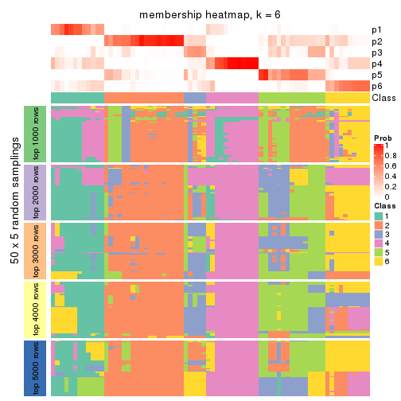
As soon as we have had the classes for columns, we can look for signatures which are significantly different between classes which can be candidate marks for certain classes. Following are the heatmaps for signatures.
Signature heatmaps where rows are scaled:
get_signatures(res, k = 2)
get_signatures(res, k = 3)
get_signatures(res, k = 4)
get_signatures(res, k = 5)
get_signatures(res, k = 6)
Signature heatmaps where rows are not scaled:
get_signatures(res, k = 2, scale_rows = FALSE)
get_signatures(res, k = 3, scale_rows = FALSE)
get_signatures(res, k = 4, scale_rows = FALSE)

get_signatures(res, k = 5, scale_rows = FALSE)
get_signatures(res, k = 6, scale_rows = FALSE)
Compare the overlap of signatures from different k:
compare_signatures(res)
get_signature() returns a data frame invisibly. TO get the list of signatures, the function
call should be assigned to a variable explicitly. In following code, if plot argument is set
to FALSE, no heatmap is plotted while only the differential analysis is performed.
# code only for demonstration
tb = get_signature(res, k = ..., plot = FALSE)
An example of the output of tb is:
#> which_row fdr mean_1 mean_2 scaled_mean_1 scaled_mean_2 km
#> 1 38 0.042760348 8.373488 9.131774 -0.5533452 0.5164555 1
#> 2 40 0.018707592 7.106213 8.469186 -0.6173731 0.5762149 1
#> 3 55 0.019134737 10.221463 11.207825 -0.6159697 0.5749050 1
#> 4 59 0.006059896 5.921854 7.869574 -0.6899429 0.6439467 1
#> 5 60 0.018055526 8.928898 10.211722 -0.6204761 0.5791110 1
#> 6 98 0.009384629 15.714769 14.887706 0.6635654 -0.6193277 2
...
The columns in tb are:
which_row: row indices corresponding to the input matrix.fdr: FDR for the differential test. mean_x: The mean value in group x.scaled_mean_x: The mean value in group x after rows are scaled.km: Row groups if k-means clustering is applied to rows.UMAP plot which shows how samples are separated.
dimension_reduction(res, k = 2, method = "UMAP")
dimension_reduction(res, k = 3, method = "UMAP")
dimension_reduction(res, k = 4, method = "UMAP")
dimension_reduction(res, k = 5, method = "UMAP")
dimension_reduction(res, k = 6, method = "UMAP")
Following heatmap shows how subgroups are split when increasing k:
collect_classes(res)
If matrix rows can be associated to genes, consider to use GO_Enrichment(res,
...) to perform function enrichment for the signature genes.
The object with results only for a single top-value method and a single partition method can be extracted as:
res = res_list["MAD", "NMF"]
# you can also extract it by
# res = res_list["MAD:NMF"]
A summary of res and all the functions that can be applied to it:
res
#> A 'ConsensusPartition' object with k = 2, 3, 4, 5, 6.
#> On a matrix with 13673 rows and 72 columns.
#> Top rows (1000, 2000, 3000, 4000, 5000) are extracted by 'MAD' method.
#> Subgroups are detected by 'NMF' method.
#> Performed in total 1250 partitions by row resampling.
#> Best k for subgroups seems to be 2.
#>
#> Following methods can be applied to this 'ConsensusPartition' object:
#> [1] "cola_report" "collect_classes" "collect_plots"
#> [4] "collect_stats" "colnames" "compare_signatures"
#> [7] "consensus_heatmap" "dimension_reduction" "functional_enrichment"
#> [10] "get_anno_col" "get_anno" "get_classes"
#> [13] "get_consensus" "get_matrix" "get_membership"
#> [16] "get_param" "get_signatures" "get_stats"
#> [19] "is_best_k" "is_stable_k" "membership_heatmap"
#> [22] "ncol" "nrow" "plot_ecdf"
#> [25] "rownames" "select_partition_number" "show"
#> [28] "suggest_best_k" "test_to_known_factors"
collect_plots() function collects all the plots made from res for all k (number of partitions)
into one single page to provide an easy and fast comparison between different k.
collect_plots(res)

The plots are:
k and the heatmap of
predicted classes for each k.k.k.k.All the plots in panels can be made by individual functions and they are plotted later in this section.
select_partition_number() produces several plots showing different
statistics for choosing “optimized” k. There are following statistics:
k;k, the area increased is defined as \(A_k - A_{k-1}\).The detailed explanations of these statistics can be found in the cola vignette.
Generally speaking, lower PAC score, higher mean silhouette score or higher
concordance corresponds to better partition. Rand index and Jaccard index
measure how similar the current partition is compared to partition with k-1.
If they are too similar, we won't accept k is better than k-1.
select_partition_number(res)
The numeric values for all these statistics can be obtained by get_stats().
get_stats(res)
#> k 1-PAC mean_silhouette concordance area_increased Rand Jaccard
#> 2 2 0.534 0.840 0.910 0.4826 0.525 0.525
#> 3 3 0.462 0.669 0.791 0.3615 0.734 0.524
#> 4 4 0.504 0.552 0.747 0.1259 0.738 0.375
#> 5 5 0.493 0.359 0.625 0.0589 0.890 0.617
#> 6 6 0.566 0.413 0.684 0.0409 0.871 0.508
suggest_best_k() suggests the best \(k\) based on these statistics. The rules are as follows:
NA.suggest_best_k(res)
#> [1] 2
Following shows the table of the partitions (You need to click the show/hide
code output link to see it). The membership matrix (columns with name p*)
is inferred by
clue::cl_consensus()
function with the SE method. Basically the value in the membership matrix
represents the probability to belong to a certain group. The finall class
label for an item is determined with the group with highest probability it
belongs to.
In get_classes() function, the entropy is calculated from the membership
matrix and the silhouette score is calculated from the consensus matrix.
cbind(get_classes(res, k = 2), get_membership(res, k = 2))
#> class entropy silhouette p1 p2
#> SRR1585486 1 0.1843 0.892 0.972 0.028
#> SRR1585488 1 0.7219 0.815 0.800 0.200
#> SRR1585487 2 0.9933 0.128 0.452 0.548
#> SRR1585489 2 0.0000 0.897 0.000 1.000
#> SRR1585490 1 0.7219 0.815 0.800 0.200
#> SRR1585491 1 0.2423 0.890 0.960 0.040
#> SRR1585492 1 0.1414 0.893 0.980 0.020
#> SRR1585493 2 0.0000 0.897 0.000 1.000
#> SRR1585494 2 0.0000 0.897 0.000 1.000
#> SRR1585496 2 0.9427 0.601 0.360 0.640
#> SRR1585495 2 0.9635 0.547 0.388 0.612
#> SRR1585498 2 0.0000 0.897 0.000 1.000
#> SRR1585497 2 0.7139 0.817 0.196 0.804
#> SRR1585499 1 0.0000 0.893 1.000 0.000
#> SRR1585500 2 0.7219 0.815 0.200 0.800
#> SRR1585501 2 0.0000 0.897 0.000 1.000
#> SRR1585502 2 0.0000 0.897 0.000 1.000
#> SRR1585503 1 0.9998 0.277 0.508 0.492
#> SRR1585504 2 0.7219 0.815 0.200 0.800
#> SRR1585505 1 0.4815 0.809 0.896 0.104
#> SRR1585506 2 0.7299 0.812 0.204 0.796
#> SRR1585508 2 0.0000 0.897 0.000 1.000
#> SRR1585507 2 0.0000 0.897 0.000 1.000
#> SRR1585509 1 0.2948 0.886 0.948 0.052
#> SRR1585510 2 0.0672 0.896 0.008 0.992
#> SRR1585511 2 0.7219 0.815 0.200 0.800
#> SRR1585512 2 0.0000 0.897 0.000 1.000
#> SRR1585513 1 0.7219 0.815 0.800 0.200
#> SRR1585516 2 0.0000 0.897 0.000 1.000
#> SRR1585515 1 0.7219 0.815 0.800 0.200
#> SRR1585514 2 0.0000 0.897 0.000 1.000
#> SRR1585518 2 0.0000 0.897 0.000 1.000
#> SRR1585517 2 0.0938 0.890 0.012 0.988
#> SRR1585519 2 0.0000 0.897 0.000 1.000
#> SRR1585520 2 0.0000 0.897 0.000 1.000
#> SRR1585522 2 0.5629 0.846 0.132 0.868
#> SRR1585521 1 0.0000 0.893 1.000 0.000
#> SRR1585524 1 0.8386 0.747 0.732 0.268
#> SRR1585523 1 0.7219 0.815 0.800 0.200
#> SRR1585525 1 0.0000 0.893 1.000 0.000
#> SRR1585526 2 0.7219 0.815 0.200 0.800
#> SRR1585527 1 0.0000 0.893 1.000 0.000
#> SRR1585528 2 0.0000 0.897 0.000 1.000
#> SRR1585529 2 0.0000 0.897 0.000 1.000
#> SRR1585530 2 0.7219 0.815 0.200 0.800
#> SRR1585531 1 0.0000 0.893 1.000 0.000
#> SRR1585532 2 0.0000 0.897 0.000 1.000
#> SRR1585533 1 0.0000 0.893 1.000 0.000
#> SRR1585534 1 0.7219 0.815 0.800 0.200
#> SRR1585535 2 0.0000 0.897 0.000 1.000
#> SRR1585536 2 0.7219 0.815 0.200 0.800
#> SRR1585537 2 0.7219 0.815 0.200 0.800
#> SRR1585538 1 0.4431 0.871 0.908 0.092
#> SRR1585539 1 0.0000 0.893 1.000 0.000
#> SRR1585541 2 0.0672 0.893 0.008 0.992
#> SRR1585540 2 0.0000 0.897 0.000 1.000
#> SRR1585542 1 0.0000 0.893 1.000 0.000
#> SRR1585543 1 0.0000 0.893 1.000 0.000
#> SRR1585544 2 0.1414 0.892 0.020 0.980
#> SRR1585546 1 0.0000 0.893 1.000 0.000
#> SRR1585545 2 0.0376 0.895 0.004 0.996
#> SRR1585547 1 0.0000 0.893 1.000 0.000
#> SRR1585548 1 0.6712 0.830 0.824 0.176
#> SRR1585549 2 0.7219 0.815 0.200 0.800
#> SRR1585550 1 0.0000 0.893 1.000 0.000
#> SRR1585551 2 0.7219 0.815 0.200 0.800
#> SRR1585552 2 0.0000 0.897 0.000 1.000
#> SRR1585553 2 0.0672 0.896 0.008 0.992
#> SRR1585554 2 0.7139 0.817 0.196 0.804
#> SRR1585555 2 0.7219 0.815 0.200 0.800
#> SRR1585557 2 0.0000 0.897 0.000 1.000
#> SRR1585556 2 0.0376 0.896 0.004 0.996
cbind(get_classes(res, k = 3), get_membership(res, k = 3))
#> class entropy silhouette p1 p2 p3
#> SRR1585486 1 0.1031 0.852 0.976 0.000 0.024
#> SRR1585488 1 0.2599 0.839 0.932 0.052 0.016
#> SRR1585487 1 0.8828 0.453 0.580 0.228 0.192
#> SRR1585489 2 0.0747 0.769 0.000 0.984 0.016
#> SRR1585490 1 0.5852 0.733 0.776 0.180 0.044
#> SRR1585491 1 0.0424 0.852 0.992 0.000 0.008
#> SRR1585492 1 0.1031 0.852 0.976 0.000 0.024
#> SRR1585493 2 0.0747 0.765 0.000 0.984 0.016
#> SRR1585494 2 0.2448 0.740 0.000 0.924 0.076
#> SRR1585496 3 0.4682 0.672 0.004 0.192 0.804
#> SRR1585495 3 0.5551 0.717 0.016 0.224 0.760
#> SRR1585498 2 0.0747 0.767 0.000 0.984 0.016
#> SRR1585497 3 0.5810 0.742 0.000 0.336 0.664
#> SRR1585499 1 0.2537 0.840 0.920 0.000 0.080
#> SRR1585500 3 0.5024 0.638 0.004 0.220 0.776
#> SRR1585501 2 0.2066 0.741 0.000 0.940 0.060
#> SRR1585502 2 0.5882 0.490 0.000 0.652 0.348
#> SRR1585503 2 0.9007 0.390 0.268 0.552 0.180
#> SRR1585504 3 0.5859 0.738 0.000 0.344 0.656
#> SRR1585505 3 0.7211 0.586 0.128 0.156 0.716
#> SRR1585506 3 0.5098 0.730 0.000 0.248 0.752
#> SRR1585508 2 0.0424 0.770 0.000 0.992 0.008
#> SRR1585507 2 0.4062 0.662 0.000 0.836 0.164
#> SRR1585509 1 0.3482 0.824 0.872 0.000 0.128
#> SRR1585510 2 0.6215 -0.355 0.000 0.572 0.428
#> SRR1585511 3 0.5650 0.742 0.000 0.312 0.688
#> SRR1585512 2 0.0237 0.769 0.000 0.996 0.004
#> SRR1585513 1 0.1751 0.847 0.960 0.028 0.012
#> SRR1585516 2 0.5115 0.664 0.016 0.796 0.188
#> SRR1585515 1 0.5756 0.701 0.764 0.208 0.028
#> SRR1585514 2 0.6271 0.645 0.088 0.772 0.140
#> SRR1585518 2 0.0237 0.769 0.000 0.996 0.004
#> SRR1585517 2 0.8643 0.472 0.212 0.600 0.188
#> SRR1585519 2 0.1753 0.754 0.000 0.952 0.048
#> SRR1585520 2 0.4605 0.504 0.000 0.796 0.204
#> SRR1585522 3 0.6235 0.640 0.000 0.436 0.564
#> SRR1585521 1 0.2625 0.838 0.916 0.000 0.084
#> SRR1585524 1 0.6796 0.480 0.632 0.344 0.024
#> SRR1585523 1 0.7039 0.760 0.728 0.128 0.144
#> SRR1585525 3 0.6180 -0.148 0.416 0.000 0.584
#> SRR1585526 3 0.4842 0.648 0.000 0.224 0.776
#> SRR1585527 1 0.5216 0.716 0.740 0.000 0.260
#> SRR1585528 2 0.1529 0.768 0.000 0.960 0.040
#> SRR1585529 2 0.0424 0.769 0.000 0.992 0.008
#> SRR1585530 3 0.5968 0.730 0.000 0.364 0.636
#> SRR1585531 1 0.4654 0.753 0.792 0.000 0.208
#> SRR1585532 2 0.6054 0.643 0.052 0.768 0.180
#> SRR1585533 1 0.3752 0.817 0.856 0.000 0.144
#> SRR1585534 1 0.2793 0.837 0.928 0.044 0.028
#> SRR1585535 2 0.2066 0.741 0.000 0.940 0.060
#> SRR1585536 3 0.5254 0.730 0.000 0.264 0.736
#> SRR1585537 3 0.4842 0.642 0.000 0.224 0.776
#> SRR1585538 1 0.1453 0.849 0.968 0.008 0.024
#> SRR1585539 1 0.0424 0.852 0.992 0.000 0.008
#> SRR1585541 2 0.3091 0.731 0.016 0.912 0.072
#> SRR1585540 2 0.2261 0.736 0.000 0.932 0.068
#> SRR1585542 1 0.4291 0.761 0.820 0.000 0.180
#> SRR1585543 1 0.6154 0.442 0.592 0.000 0.408
#> SRR1585544 3 0.6432 0.401 0.004 0.428 0.568
#> SRR1585546 1 0.0000 0.852 1.000 0.000 0.000
#> SRR1585545 2 0.6007 0.640 0.044 0.764 0.192
#> SRR1585547 1 0.1031 0.851 0.976 0.000 0.024
#> SRR1585548 1 0.0892 0.851 0.980 0.000 0.020
#> SRR1585549 3 0.5926 0.734 0.000 0.356 0.644
#> SRR1585550 1 0.5650 0.655 0.688 0.000 0.312
#> SRR1585551 3 0.5291 0.725 0.000 0.268 0.732
#> SRR1585552 2 0.4842 0.441 0.000 0.776 0.224
#> SRR1585553 3 0.6302 0.286 0.000 0.480 0.520
#> SRR1585554 3 0.5058 0.701 0.000 0.244 0.756
#> SRR1585555 3 0.5988 0.723 0.000 0.368 0.632
#> SRR1585557 2 0.5810 0.489 0.000 0.664 0.336
#> SRR1585556 3 0.6302 0.386 0.000 0.480 0.520
cbind(get_classes(res, k = 4), get_membership(res, k = 4))
#> class entropy silhouette p1 p2 p3 p4
#> SRR1585486 1 0.391 0.5717 0.768 0.000 0.000 0.232
#> SRR1585488 1 0.201 0.7003 0.940 0.020 0.004 0.036
#> SRR1585487 3 0.680 0.3044 0.380 0.052 0.544 0.024
#> SRR1585489 2 0.221 0.8053 0.028 0.936 0.016 0.020
#> SRR1585490 1 0.384 0.6682 0.852 0.092 0.004 0.052
#> SRR1585491 1 0.302 0.6533 0.852 0.000 0.000 0.148
#> SRR1585492 1 0.383 0.6094 0.792 0.000 0.004 0.204
#> SRR1585493 2 0.173 0.7999 0.008 0.948 0.040 0.004
#> SRR1585494 2 0.265 0.7860 0.000 0.880 0.000 0.120
#> SRR1585496 3 0.274 0.7264 0.000 0.104 0.888 0.008
#> SRR1585495 4 0.628 0.0548 0.000 0.064 0.380 0.556
#> SRR1585498 2 0.284 0.8032 0.000 0.900 0.044 0.056
#> SRR1585497 3 0.778 0.2728 0.000 0.300 0.428 0.272
#> SRR1585499 4 0.510 0.2449 0.432 0.000 0.004 0.564
#> SRR1585500 3 0.217 0.7058 0.008 0.028 0.936 0.028
#> SRR1585501 2 0.567 0.6155 0.088 0.720 0.188 0.004
#> SRR1585502 3 0.531 0.5803 0.008 0.248 0.712 0.032
#> SRR1585503 1 0.692 0.4793 0.668 0.152 0.140 0.040
#> SRR1585504 3 0.355 0.7158 0.000 0.136 0.844 0.020
#> SRR1585505 4 0.371 0.5047 0.024 0.140 0.000 0.836
#> SRR1585506 3 0.388 0.7123 0.000 0.124 0.836 0.040
#> SRR1585508 2 0.315 0.7751 0.064 0.892 0.036 0.008
#> SRR1585507 2 0.336 0.7563 0.000 0.824 0.000 0.176
#> SRR1585509 4 0.422 0.5024 0.248 0.000 0.004 0.748
#> SRR1585510 2 0.484 0.7428 0.000 0.784 0.116 0.100
#> SRR1585511 4 0.771 -0.0539 0.000 0.236 0.328 0.436
#> SRR1585512 2 0.117 0.8079 0.020 0.968 0.000 0.012
#> SRR1585513 1 0.121 0.6990 0.960 0.000 0.000 0.040
#> SRR1585516 3 0.678 0.5437 0.204 0.084 0.668 0.044
#> SRR1585515 1 0.268 0.6693 0.912 0.060 0.016 0.012
#> SRR1585514 2 0.760 0.3819 0.300 0.560 0.088 0.052
#> SRR1585518 2 0.290 0.7827 0.056 0.904 0.032 0.008
#> SRR1585517 3 0.729 0.3701 0.336 0.088 0.548 0.028
#> SRR1585519 2 0.339 0.7791 0.000 0.852 0.016 0.132
#> SRR1585520 2 0.359 0.7913 0.000 0.856 0.040 0.104
#> SRR1585522 2 0.521 0.7031 0.000 0.748 0.080 0.172
#> SRR1585521 4 0.493 0.2652 0.432 0.000 0.000 0.568
#> SRR1585524 1 0.442 0.5770 0.784 0.192 0.008 0.016
#> SRR1585523 4 0.755 -0.0468 0.396 0.164 0.004 0.436
#> SRR1585525 4 0.385 0.5335 0.192 0.000 0.008 0.800
#> SRR1585526 3 0.199 0.7223 0.008 0.052 0.936 0.004
#> SRR1585527 4 0.422 0.4986 0.272 0.000 0.000 0.728
#> SRR1585528 2 0.479 0.7090 0.112 0.800 0.080 0.008
#> SRR1585529 2 0.275 0.7978 0.056 0.908 0.004 0.032
#> SRR1585530 3 0.676 0.3637 0.000 0.344 0.548 0.108
#> SRR1585531 4 0.492 0.2815 0.424 0.000 0.000 0.576
#> SRR1585532 1 0.747 0.1577 0.500 0.364 0.120 0.016
#> SRR1585533 4 0.387 0.5284 0.208 0.000 0.004 0.788
#> SRR1585534 1 0.182 0.6872 0.948 0.032 0.012 0.008
#> SRR1585535 2 0.201 0.8005 0.012 0.940 0.040 0.008
#> SRR1585536 4 0.588 0.1973 0.000 0.344 0.048 0.608
#> SRR1585537 3 0.244 0.6910 0.012 0.016 0.924 0.048
#> SRR1585538 1 0.125 0.6956 0.968 0.004 0.016 0.012
#> SRR1585539 1 0.253 0.6742 0.888 0.000 0.000 0.112
#> SRR1585541 2 0.483 0.7409 0.120 0.784 0.000 0.096
#> SRR1585540 2 0.213 0.8030 0.000 0.932 0.032 0.036
#> SRR1585542 1 0.647 0.3851 0.624 0.000 0.120 0.256
#> SRR1585543 3 0.638 0.3089 0.312 0.000 0.600 0.088
#> SRR1585544 4 0.513 0.1762 0.012 0.356 0.000 0.632
#> SRR1585546 1 0.349 0.6203 0.812 0.000 0.000 0.188
#> SRR1585545 1 0.832 -0.1903 0.360 0.264 0.360 0.016
#> SRR1585547 1 0.446 0.4928 0.716 0.000 0.004 0.280
#> SRR1585548 1 0.254 0.6900 0.904 0.000 0.012 0.084
#> SRR1585549 3 0.322 0.7225 0.000 0.128 0.860 0.012
#> SRR1585550 4 0.443 0.4935 0.276 0.000 0.004 0.720
#> SRR1585551 3 0.308 0.7257 0.000 0.096 0.880 0.024
#> SRR1585552 2 0.189 0.8046 0.000 0.940 0.016 0.044
#> SRR1585553 2 0.494 0.5929 0.000 0.672 0.012 0.316
#> SRR1585554 4 0.485 0.0280 0.000 0.400 0.000 0.600
#> SRR1585555 2 0.666 0.4400 0.000 0.608 0.256 0.136
#> SRR1585557 2 0.540 0.6484 0.000 0.700 0.248 0.052
#> SRR1585556 2 0.504 0.5425 0.000 0.628 0.008 0.364
cbind(get_classes(res, k = 5), get_membership(res, k = 5))
#> class entropy silhouette p1 p2 p3 p4 p5
#> SRR1585486 4 0.4929 0.49542 0.292 0.004 0.000 0.660 0.044
#> SRR1585488 4 0.4491 0.62935 0.052 0.148 0.000 0.776 0.024
#> SRR1585487 4 0.6707 0.20436 0.008 0.000 0.208 0.480 0.304
#> SRR1585489 2 0.4851 0.35049 0.000 0.560 0.012 0.008 0.420
#> SRR1585490 4 0.4726 0.66067 0.100 0.052 0.000 0.780 0.068
#> SRR1585491 4 0.3103 0.68098 0.072 0.044 0.000 0.872 0.012
#> SRR1585492 4 0.6359 0.45072 0.076 0.276 0.024 0.604 0.020
#> SRR1585493 2 0.4317 0.29655 0.000 0.792 0.120 0.016 0.072
#> SRR1585494 2 0.1772 0.40368 0.024 0.944 0.012 0.004 0.016
#> SRR1585496 3 0.1074 0.72637 0.004 0.016 0.968 0.000 0.012
#> SRR1585495 1 0.5857 0.00292 0.528 0.040 0.400 0.000 0.032
#> SRR1585498 2 0.2780 0.35175 0.004 0.872 0.112 0.004 0.008
#> SRR1585497 3 0.6112 0.39095 0.032 0.392 0.524 0.004 0.048
#> SRR1585499 1 0.4210 0.26187 0.588 0.000 0.000 0.412 0.000
#> SRR1585500 3 0.3538 0.65008 0.012 0.028 0.832 0.000 0.128
#> SRR1585501 5 0.6822 -0.03757 0.000 0.228 0.312 0.008 0.452
#> SRR1585502 3 0.6159 0.40845 0.012 0.196 0.604 0.000 0.188
#> SRR1585503 4 0.6331 0.23723 0.016 0.052 0.024 0.512 0.396
#> SRR1585504 3 0.2451 0.70005 0.004 0.056 0.904 0.000 0.036
#> SRR1585505 1 0.4238 0.35452 0.628 0.368 0.000 0.004 0.000
#> SRR1585506 3 0.2960 0.70166 0.080 0.036 0.876 0.000 0.008
#> SRR1585508 5 0.6319 -0.29821 0.000 0.420 0.100 0.016 0.464
#> SRR1585507 2 0.2011 0.37968 0.088 0.908 0.000 0.000 0.004
#> SRR1585509 1 0.6932 0.17273 0.428 0.276 0.000 0.288 0.008
#> SRR1585510 2 0.6459 0.43208 0.068 0.604 0.084 0.000 0.244
#> SRR1585511 1 0.6736 -0.12586 0.448 0.100 0.412 0.000 0.040
#> SRR1585512 2 0.4966 0.35762 0.000 0.564 0.032 0.000 0.404
#> SRR1585513 4 0.0609 0.69681 0.020 0.000 0.000 0.980 0.000
#> SRR1585516 5 0.5883 0.10925 0.008 0.004 0.224 0.128 0.636
#> SRR1585515 4 0.2763 0.65303 0.004 0.000 0.000 0.848 0.148
#> SRR1585514 5 0.6465 -0.18099 0.000 0.412 0.008 0.140 0.440
#> SRR1585518 2 0.6330 0.20150 0.000 0.444 0.092 0.020 0.444
#> SRR1585517 5 0.6827 -0.06795 0.004 0.004 0.200 0.376 0.416
#> SRR1585519 2 0.5169 0.43038 0.028 0.648 0.024 0.000 0.300
#> SRR1585520 2 0.5842 0.39070 0.068 0.528 0.012 0.000 0.392
#> SRR1585522 2 0.6922 0.39277 0.236 0.568 0.080 0.000 0.116
#> SRR1585521 1 0.4227 0.27150 0.580 0.000 0.000 0.420 0.000
#> SRR1585524 4 0.5145 0.29625 0.000 0.056 0.000 0.612 0.332
#> SRR1585523 4 0.7583 -0.01846 0.364 0.216 0.000 0.368 0.052
#> SRR1585525 1 0.2712 0.59388 0.880 0.000 0.032 0.088 0.000
#> SRR1585526 3 0.1836 0.72236 0.008 0.016 0.936 0.000 0.040
#> SRR1585527 1 0.2690 0.58488 0.844 0.000 0.000 0.156 0.000
#> SRR1585528 5 0.6875 -0.15596 0.000 0.336 0.136 0.036 0.492
#> SRR1585529 2 0.5550 0.35404 0.020 0.540 0.020 0.008 0.412
#> SRR1585530 3 0.7314 0.23642 0.288 0.184 0.476 0.000 0.052
#> SRR1585531 1 0.4227 0.28371 0.580 0.000 0.000 0.420 0.000
#> SRR1585532 5 0.7646 0.21554 0.004 0.140 0.100 0.268 0.488
#> SRR1585533 1 0.2561 0.58694 0.856 0.000 0.000 0.144 0.000
#> SRR1585534 4 0.1121 0.69637 0.000 0.000 0.000 0.956 0.044
#> SRR1585535 2 0.5431 0.32142 0.000 0.516 0.060 0.000 0.424
#> SRR1585536 1 0.5352 0.35825 0.680 0.228 0.076 0.000 0.016
#> SRR1585537 5 0.5194 -0.31738 0.024 0.000 0.412 0.012 0.552
#> SRR1585538 4 0.1251 0.69403 0.008 0.000 0.000 0.956 0.036
#> SRR1585539 4 0.1628 0.68841 0.056 0.000 0.000 0.936 0.008
#> SRR1585541 2 0.6644 0.26339 0.084 0.436 0.000 0.044 0.436
#> SRR1585540 2 0.6089 0.25473 0.000 0.468 0.124 0.000 0.408
#> SRR1585542 4 0.6443 0.46725 0.136 0.000 0.168 0.632 0.064
#> SRR1585543 3 0.5058 0.48744 0.068 0.000 0.704 0.216 0.012
#> SRR1585544 1 0.4816 0.38489 0.744 0.136 0.008 0.000 0.112
#> SRR1585546 4 0.3055 0.64652 0.144 0.000 0.000 0.840 0.016
#> SRR1585545 2 0.7864 -0.29785 0.012 0.420 0.344 0.144 0.080
#> SRR1585547 4 0.3366 0.55731 0.232 0.000 0.000 0.768 0.000
#> SRR1585548 4 0.2204 0.69610 0.008 0.036 0.000 0.920 0.036
#> SRR1585549 3 0.1934 0.73055 0.004 0.052 0.928 0.000 0.016
#> SRR1585550 1 0.3177 0.55661 0.792 0.000 0.000 0.208 0.000
#> SRR1585551 3 0.2178 0.71323 0.008 0.048 0.920 0.000 0.024
#> SRR1585552 2 0.4865 0.40983 0.008 0.616 0.020 0.000 0.356
#> SRR1585553 2 0.7488 0.29417 0.360 0.364 0.040 0.000 0.236
#> SRR1585554 2 0.4375 0.00707 0.420 0.576 0.000 0.000 0.004
#> SRR1585555 2 0.7816 0.22109 0.296 0.420 0.196 0.000 0.088
#> SRR1585557 2 0.6800 0.24456 0.032 0.456 0.124 0.000 0.388
#> SRR1585556 2 0.5195 0.34060 0.388 0.564 0.000 0.000 0.048
cbind(get_classes(res, k = 6), get_membership(res, k = 6))
#> class entropy silhouette p1 p2 p3 p4 p5 p6
#> SRR1585486 4 0.5988 0.2496 0.372 0.096 0.000 0.496 0.004 0.032
#> SRR1585488 4 0.5434 0.5368 0.064 0.012 0.004 0.672 0.208 0.040
#> SRR1585487 4 0.6077 0.0157 0.000 0.016 0.096 0.556 0.032 0.300
#> SRR1585489 2 0.4348 0.5641 0.000 0.716 0.000 0.012 0.220 0.052
#> SRR1585490 4 0.5569 0.5700 0.088 0.140 0.000 0.692 0.052 0.028
#> SRR1585491 4 0.3216 0.6485 0.060 0.000 0.000 0.848 0.072 0.020
#> SRR1585492 4 0.7303 0.2483 0.084 0.020 0.056 0.420 0.380 0.040
#> SRR1585493 5 0.5831 0.3165 0.000 0.292 0.124 0.000 0.556 0.028
#> SRR1585494 5 0.3713 0.3526 0.008 0.284 0.000 0.000 0.704 0.004
#> SRR1585496 3 0.0972 0.7496 0.000 0.028 0.964 0.000 0.000 0.008
#> SRR1585495 1 0.5750 0.0233 0.524 0.000 0.356 0.000 0.088 0.032
#> SRR1585498 5 0.3984 0.4294 0.000 0.192 0.028 0.004 0.760 0.016
#> SRR1585497 5 0.6542 -0.0234 0.012 0.120 0.376 0.008 0.456 0.028
#> SRR1585499 1 0.3890 0.1731 0.596 0.000 0.000 0.400 0.000 0.004
#> SRR1585500 3 0.3544 0.5898 0.000 0.000 0.800 0.000 0.120 0.080
#> SRR1585501 2 0.4977 0.3974 0.000 0.676 0.240 0.008 0.028 0.048
#> SRR1585502 5 0.7269 0.0742 0.000 0.116 0.316 0.004 0.396 0.168
#> SRR1585503 4 0.6708 0.1025 0.000 0.104 0.016 0.556 0.112 0.212
#> SRR1585504 3 0.2451 0.7333 0.016 0.076 0.892 0.000 0.004 0.012
#> SRR1585505 1 0.4630 0.0630 0.540 0.024 0.000 0.004 0.428 0.004
#> SRR1585506 3 0.2903 0.7336 0.076 0.052 0.864 0.000 0.004 0.004
#> SRR1585508 2 0.1549 0.6214 0.000 0.944 0.024 0.004 0.004 0.024
#> SRR1585507 5 0.3374 0.4027 0.020 0.208 0.000 0.000 0.772 0.000
#> SRR1585509 5 0.6491 -0.2743 0.232 0.000 0.000 0.352 0.392 0.024
#> SRR1585510 5 0.6563 -0.0916 0.048 0.412 0.080 0.000 0.432 0.028
#> SRR1585511 3 0.6315 0.3126 0.352 0.168 0.456 0.000 0.012 0.012
#> SRR1585512 2 0.3232 0.6166 0.000 0.812 0.000 0.008 0.160 0.020
#> SRR1585513 4 0.0982 0.6566 0.020 0.004 0.000 0.968 0.004 0.004
#> SRR1585516 6 0.4931 0.6510 0.000 0.056 0.052 0.124 0.024 0.744
#> SRR1585515 4 0.2839 0.5732 0.000 0.032 0.000 0.860 0.008 0.100
#> SRR1585514 2 0.6684 0.3729 0.000 0.508 0.000 0.156 0.244 0.092
#> SRR1585518 2 0.1218 0.6358 0.000 0.956 0.012 0.004 0.028 0.000
#> SRR1585517 6 0.7411 0.3809 0.000 0.164 0.124 0.332 0.008 0.372
#> SRR1585519 2 0.4623 0.2713 0.016 0.540 0.000 0.000 0.428 0.016
#> SRR1585520 2 0.5142 0.4742 0.044 0.632 0.000 0.000 0.280 0.044
#> SRR1585522 5 0.7251 0.0400 0.236 0.340 0.048 0.000 0.356 0.020
#> SRR1585521 4 0.3869 -0.0422 0.500 0.000 0.000 0.500 0.000 0.000
#> SRR1585524 4 0.4991 0.1570 0.020 0.416 0.000 0.536 0.008 0.020
#> SRR1585523 1 0.7452 -0.0937 0.364 0.164 0.000 0.356 0.096 0.020
#> SRR1585525 1 0.1973 0.5853 0.916 0.000 0.064 0.012 0.004 0.004
#> SRR1585526 3 0.1485 0.7450 0.000 0.028 0.944 0.000 0.004 0.024
#> SRR1585527 1 0.1858 0.6128 0.904 0.000 0.000 0.092 0.000 0.004
#> SRR1585528 2 0.2999 0.5940 0.000 0.868 0.056 0.012 0.008 0.056
#> SRR1585529 2 0.4006 0.5875 0.000 0.748 0.000 0.016 0.204 0.032
#> SRR1585530 3 0.6384 0.4220 0.244 0.224 0.504 0.000 0.012 0.016
#> SRR1585531 1 0.3854 0.0165 0.536 0.000 0.000 0.464 0.000 0.000
#> SRR1585532 2 0.5738 0.2903 0.000 0.632 0.024 0.176 0.012 0.156
#> SRR1585533 1 0.1556 0.6145 0.920 0.000 0.000 0.080 0.000 0.000
#> SRR1585534 4 0.0653 0.6463 0.004 0.004 0.000 0.980 0.000 0.012
#> SRR1585535 2 0.3372 0.6277 0.000 0.824 0.016 0.000 0.124 0.036
#> SRR1585536 1 0.5363 0.3625 0.700 0.048 0.068 0.000 0.160 0.024
#> SRR1585537 6 0.2776 0.5544 0.000 0.000 0.104 0.004 0.032 0.860
#> SRR1585538 4 0.1226 0.6331 0.000 0.004 0.000 0.952 0.004 0.040
#> SRR1585539 4 0.1152 0.6584 0.044 0.000 0.000 0.952 0.000 0.004
#> SRR1585541 2 0.4851 0.5921 0.076 0.760 0.000 0.028 0.076 0.060
#> SRR1585540 2 0.2515 0.6012 0.000 0.888 0.072 0.000 0.016 0.024
#> SRR1585542 4 0.6345 0.4933 0.096 0.000 0.112 0.640 0.104 0.048
#> SRR1585543 3 0.4350 0.5805 0.092 0.000 0.760 0.128 0.004 0.016
#> SRR1585544 1 0.3375 0.4804 0.808 0.156 0.000 0.000 0.024 0.012
#> SRR1585546 4 0.3408 0.6242 0.152 0.000 0.000 0.800 0.000 0.048
#> SRR1585545 5 0.6281 0.0906 0.004 0.004 0.340 0.108 0.504 0.040
#> SRR1585547 4 0.3757 0.5001 0.272 0.000 0.000 0.712 0.008 0.008
#> SRR1585548 4 0.1989 0.6427 0.004 0.000 0.000 0.916 0.052 0.028
#> SRR1585549 3 0.1480 0.7385 0.000 0.000 0.940 0.000 0.040 0.020
#> SRR1585550 1 0.2278 0.5923 0.868 0.000 0.000 0.128 0.000 0.004
#> SRR1585551 3 0.1693 0.7263 0.000 0.004 0.932 0.000 0.044 0.020
#> SRR1585552 2 0.3243 0.5892 0.000 0.780 0.004 0.000 0.208 0.008
#> SRR1585553 2 0.4525 0.4305 0.272 0.680 0.016 0.000 0.024 0.008
#> SRR1585554 5 0.5324 0.4205 0.220 0.096 0.016 0.000 0.656 0.012
#> SRR1585555 2 0.7590 -0.0198 0.304 0.372 0.176 0.000 0.136 0.012
#> SRR1585557 5 0.6599 0.1944 0.000 0.168 0.056 0.000 0.460 0.316
#> SRR1585556 5 0.6355 0.2740 0.288 0.208 0.000 0.000 0.476 0.028
Heatmaps for the consensus matrix. It visualizes the probability of two samples to be in a same group.
consensus_heatmap(res, k = 2)
consensus_heatmap(res, k = 3)
consensus_heatmap(res, k = 4)
consensus_heatmap(res, k = 5)

consensus_heatmap(res, k = 6)
Heatmaps for the membership of samples in all partitions to see how consistent they are:
membership_heatmap(res, k = 2)
membership_heatmap(res, k = 3)
membership_heatmap(res, k = 4)
membership_heatmap(res, k = 5)
membership_heatmap(res, k = 6)
As soon as we have had the classes for columns, we can look for signatures which are significantly different between classes which can be candidate marks for certain classes. Following are the heatmaps for signatures.
Signature heatmaps where rows are scaled:
get_signatures(res, k = 2)
get_signatures(res, k = 3)
get_signatures(res, k = 4)
get_signatures(res, k = 5)
get_signatures(res, k = 6)
Signature heatmaps where rows are not scaled:
get_signatures(res, k = 2, scale_rows = FALSE)
get_signatures(res, k = 3, scale_rows = FALSE)
get_signatures(res, k = 4, scale_rows = FALSE)
get_signatures(res, k = 5, scale_rows = FALSE)
get_signatures(res, k = 6, scale_rows = FALSE)
Compare the overlap of signatures from different k:
compare_signatures(res)
get_signature() returns a data frame invisibly. TO get the list of signatures, the function
call should be assigned to a variable explicitly. In following code, if plot argument is set
to FALSE, no heatmap is plotted while only the differential analysis is performed.
# code only for demonstration
tb = get_signature(res, k = ..., plot = FALSE)
An example of the output of tb is:
#> which_row fdr mean_1 mean_2 scaled_mean_1 scaled_mean_2 km
#> 1 38 0.042760348 8.373488 9.131774 -0.5533452 0.5164555 1
#> 2 40 0.018707592 7.106213 8.469186 -0.6173731 0.5762149 1
#> 3 55 0.019134737 10.221463 11.207825 -0.6159697 0.5749050 1
#> 4 59 0.006059896 5.921854 7.869574 -0.6899429 0.6439467 1
#> 5 60 0.018055526 8.928898 10.211722 -0.6204761 0.5791110 1
#> 6 98 0.009384629 15.714769 14.887706 0.6635654 -0.6193277 2
...
The columns in tb are:
which_row: row indices corresponding to the input matrix.fdr: FDR for the differential test. mean_x: The mean value in group x.scaled_mean_x: The mean value in group x after rows are scaled.km: Row groups if k-means clustering is applied to rows.UMAP plot which shows how samples are separated.
dimension_reduction(res, k = 2, method = "UMAP")
dimension_reduction(res, k = 3, method = "UMAP")
dimension_reduction(res, k = 4, method = "UMAP")
dimension_reduction(res, k = 5, method = "UMAP")
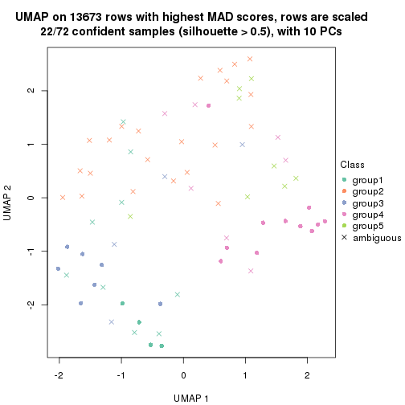
dimension_reduction(res, k = 6, method = "UMAP")
Following heatmap shows how subgroups are split when increasing k:
collect_classes(res)
If matrix rows can be associated to genes, consider to use GO_Enrichment(res,
...) to perform function enrichment for the signature genes.
The object with results only for a single top-value method and a single partition method can be extracted as:
res = res_list["ATC", "hclust"]
# you can also extract it by
# res = res_list["ATC:hclust"]
A summary of res and all the functions that can be applied to it:
res
#> A 'ConsensusPartition' object with k = 2, 3, 4, 5, 6.
#> On a matrix with 13673 rows and 72 columns.
#> Top rows (1000, 2000, 3000, 4000, 5000) are extracted by 'ATC' method.
#> Subgroups are detected by 'hclust' method.
#> Performed in total 1250 partitions by row resampling.
#> Best k for subgroups seems to be 2.
#>
#> Following methods can be applied to this 'ConsensusPartition' object:
#> [1] "cola_report" "collect_classes" "collect_plots"
#> [4] "collect_stats" "colnames" "compare_signatures"
#> [7] "consensus_heatmap" "dimension_reduction" "functional_enrichment"
#> [10] "get_anno_col" "get_anno" "get_classes"
#> [13] "get_consensus" "get_matrix" "get_membership"
#> [16] "get_param" "get_signatures" "get_stats"
#> [19] "is_best_k" "is_stable_k" "membership_heatmap"
#> [22] "ncol" "nrow" "plot_ecdf"
#> [25] "rownames" "select_partition_number" "show"
#> [28] "suggest_best_k" "test_to_known_factors"
collect_plots() function collects all the plots made from res for all k (number of partitions)
into one single page to provide an easy and fast comparison between different k.
collect_plots(res)
The plots are:
k and the heatmap of
predicted classes for each k.k.k.k.All the plots in panels can be made by individual functions and they are plotted later in this section.
select_partition_number() produces several plots showing different
statistics for choosing “optimized” k. There are following statistics:
k;k, the area increased is defined as \(A_k - A_{k-1}\).The detailed explanations of these statistics can be found in the cola vignette.
Generally speaking, lower PAC score, higher mean silhouette score or higher
concordance corresponds to better partition. Rand index and Jaccard index
measure how similar the current partition is compared to partition with k-1.
If they are too similar, we won't accept k is better than k-1.
select_partition_number(res)
The numeric values for all these statistics can be obtained by get_stats().
get_stats(res)
#> k 1-PAC mean_silhouette concordance area_increased Rand Jaccard
#> 2 2 0.752 0.892 0.950 0.432 0.570 0.570
#> 3 3 0.745 0.836 0.914 0.122 0.957 0.926
#> 4 4 0.605 0.753 0.864 0.106 1.000 0.999
#> 5 5 0.471 0.640 0.805 0.175 0.848 0.721
#> 6 6 0.533 0.548 0.769 0.110 0.897 0.747
suggest_best_k() suggests the best \(k\) based on these statistics. The rules are as follows:
NA.suggest_best_k(res)
#> [1] 2
Following shows the table of the partitions (You need to click the show/hide
code output link to see it). The membership matrix (columns with name p*)
is inferred by
clue::cl_consensus()
function with the SE method. Basically the value in the membership matrix
represents the probability to belong to a certain group. The finall class
label for an item is determined with the group with highest probability it
belongs to.
In get_classes() function, the entropy is calculated from the membership
matrix and the silhouette score is calculated from the consensus matrix.
cbind(get_classes(res, k = 2), get_membership(res, k = 2))
#> class entropy silhouette p1 p2
#> SRR1585486 2 0.9209 0.492 0.336 0.664
#> SRR1585488 2 0.0000 0.949 0.000 1.000
#> SRR1585487 2 0.6623 0.780 0.172 0.828
#> SRR1585489 2 0.0000 0.949 0.000 1.000
#> SRR1585490 2 0.0000 0.949 0.000 1.000
#> SRR1585491 2 0.0000 0.949 0.000 1.000
#> SRR1585492 2 0.0672 0.944 0.008 0.992
#> SRR1585493 2 0.0000 0.949 0.000 1.000
#> SRR1585494 2 0.0000 0.949 0.000 1.000
#> SRR1585496 1 0.3114 0.919 0.944 0.056
#> SRR1585495 1 0.0000 0.929 1.000 0.000
#> SRR1585498 2 0.0000 0.949 0.000 1.000
#> SRR1585497 2 0.6148 0.807 0.152 0.848
#> SRR1585499 1 0.6801 0.824 0.820 0.180
#> SRR1585500 1 0.0000 0.929 1.000 0.000
#> SRR1585501 2 0.0376 0.947 0.004 0.996
#> SRR1585502 2 0.0000 0.949 0.000 1.000
#> SRR1585503 2 0.0000 0.949 0.000 1.000
#> SRR1585504 1 0.7674 0.768 0.776 0.224
#> SRR1585505 2 0.4022 0.885 0.080 0.920
#> SRR1585506 1 0.0000 0.929 1.000 0.000
#> SRR1585508 2 0.0000 0.949 0.000 1.000
#> SRR1585507 2 0.0000 0.949 0.000 1.000
#> SRR1585509 2 0.4022 0.885 0.080 0.920
#> SRR1585510 2 0.0000 0.949 0.000 1.000
#> SRR1585511 1 0.1414 0.927 0.980 0.020
#> SRR1585512 2 0.0000 0.949 0.000 1.000
#> SRR1585513 2 0.0000 0.949 0.000 1.000
#> SRR1585516 2 0.0672 0.944 0.008 0.992
#> SRR1585515 2 0.0000 0.949 0.000 1.000
#> SRR1585514 2 0.0000 0.949 0.000 1.000
#> SRR1585518 2 0.0000 0.949 0.000 1.000
#> SRR1585517 2 0.0000 0.949 0.000 1.000
#> SRR1585519 2 0.0000 0.949 0.000 1.000
#> SRR1585520 2 0.0000 0.949 0.000 1.000
#> SRR1585522 2 0.0000 0.949 0.000 1.000
#> SRR1585521 1 0.0000 0.929 1.000 0.000
#> SRR1585524 2 0.0000 0.949 0.000 1.000
#> SRR1585523 2 0.0000 0.949 0.000 1.000
#> SRR1585525 1 0.0000 0.929 1.000 0.000
#> SRR1585526 1 0.5408 0.878 0.876 0.124
#> SRR1585527 1 0.0000 0.929 1.000 0.000
#> SRR1585528 2 0.0000 0.949 0.000 1.000
#> SRR1585529 2 0.0000 0.949 0.000 1.000
#> SRR1585530 1 0.3733 0.913 0.928 0.072
#> SRR1585531 1 0.0000 0.929 1.000 0.000
#> SRR1585532 2 0.0000 0.949 0.000 1.000
#> SRR1585533 1 0.5737 0.869 0.864 0.136
#> SRR1585534 2 0.0000 0.949 0.000 1.000
#> SRR1585535 2 0.0000 0.949 0.000 1.000
#> SRR1585536 1 0.3733 0.913 0.928 0.072
#> SRR1585537 1 0.0000 0.929 1.000 0.000
#> SRR1585538 2 0.0000 0.949 0.000 1.000
#> SRR1585539 2 0.9209 0.492 0.336 0.664
#> SRR1585541 2 0.0000 0.949 0.000 1.000
#> SRR1585540 2 0.0000 0.949 0.000 1.000
#> SRR1585542 1 0.3114 0.919 0.944 0.056
#> SRR1585543 1 0.0000 0.929 1.000 0.000
#> SRR1585544 2 0.2948 0.910 0.052 0.948
#> SRR1585546 2 0.9954 0.122 0.460 0.540
#> SRR1585545 2 0.0000 0.949 0.000 1.000
#> SRR1585547 2 0.9209 0.492 0.336 0.664
#> SRR1585548 2 0.0000 0.949 0.000 1.000
#> SRR1585549 1 0.7674 0.768 0.776 0.224
#> SRR1585550 1 0.0000 0.929 1.000 0.000
#> SRR1585551 1 0.0000 0.929 1.000 0.000
#> SRR1585552 2 0.0000 0.949 0.000 1.000
#> SRR1585553 2 0.0672 0.944 0.008 0.992
#> SRR1585554 2 0.7745 0.702 0.228 0.772
#> SRR1585555 1 0.7453 0.785 0.788 0.212
#> SRR1585557 2 0.0000 0.949 0.000 1.000
#> SRR1585556 2 0.0000 0.949 0.000 1.000
cbind(get_classes(res, k = 3), get_membership(res, k = 3))
#> class entropy silhouette p1 p2 p3
#> SRR1585486 2 0.7961 0.373 0.076 0.588 0.336
#> SRR1585488 2 0.0592 0.931 0.012 0.988 0.000
#> SRR1585487 2 0.6318 0.715 0.068 0.760 0.172
#> SRR1585489 2 0.0592 0.931 0.012 0.988 0.000
#> SRR1585490 2 0.0592 0.931 0.012 0.988 0.000
#> SRR1585491 2 0.0424 0.931 0.008 0.992 0.000
#> SRR1585492 2 0.2703 0.894 0.056 0.928 0.016
#> SRR1585493 2 0.0592 0.931 0.012 0.988 0.000
#> SRR1585494 2 0.0592 0.931 0.012 0.988 0.000
#> SRR1585496 3 0.2063 0.815 0.044 0.008 0.948
#> SRR1585495 3 0.1964 0.816 0.056 0.000 0.944
#> SRR1585498 2 0.0237 0.931 0.004 0.996 0.000
#> SRR1585497 2 0.6731 0.697 0.088 0.740 0.172
#> SRR1585499 3 0.5571 0.733 0.140 0.056 0.804
#> SRR1585500 1 0.3879 0.869 0.848 0.000 0.152
#> SRR1585501 2 0.1453 0.923 0.024 0.968 0.008
#> SRR1585502 2 0.0000 0.931 0.000 1.000 0.000
#> SRR1585503 2 0.0000 0.931 0.000 1.000 0.000
#> SRR1585504 3 0.6529 0.671 0.124 0.116 0.760
#> SRR1585505 2 0.5662 0.785 0.092 0.808 0.100
#> SRR1585506 3 0.1964 0.806 0.056 0.000 0.944
#> SRR1585508 2 0.0592 0.931 0.012 0.988 0.000
#> SRR1585507 2 0.0237 0.931 0.004 0.996 0.000
#> SRR1585509 2 0.5662 0.785 0.092 0.808 0.100
#> SRR1585510 2 0.0983 0.926 0.016 0.980 0.004
#> SRR1585511 3 0.0747 0.818 0.016 0.000 0.984
#> SRR1585512 2 0.0592 0.931 0.012 0.988 0.000
#> SRR1585513 2 0.0592 0.931 0.012 0.988 0.000
#> SRR1585516 2 0.0661 0.930 0.008 0.988 0.004
#> SRR1585515 2 0.0424 0.931 0.008 0.992 0.000
#> SRR1585514 2 0.0592 0.931 0.012 0.988 0.000
#> SRR1585518 2 0.0592 0.931 0.012 0.988 0.000
#> SRR1585517 2 0.0424 0.931 0.008 0.992 0.000
#> SRR1585519 2 0.0592 0.931 0.012 0.988 0.000
#> SRR1585520 2 0.0983 0.926 0.016 0.980 0.004
#> SRR1585522 2 0.0983 0.926 0.016 0.980 0.004
#> SRR1585521 3 0.1163 0.816 0.028 0.000 0.972
#> SRR1585524 2 0.0661 0.929 0.008 0.988 0.004
#> SRR1585523 2 0.0424 0.931 0.008 0.992 0.000
#> SRR1585525 3 0.1163 0.816 0.028 0.000 0.972
#> SRR1585526 3 0.4270 0.777 0.116 0.024 0.860
#> SRR1585527 3 0.1964 0.806 0.056 0.000 0.944
#> SRR1585528 2 0.0237 0.931 0.000 0.996 0.004
#> SRR1585529 2 0.0592 0.931 0.012 0.988 0.000
#> SRR1585530 3 0.2116 0.816 0.040 0.012 0.948
#> SRR1585531 3 0.1860 0.808 0.052 0.000 0.948
#> SRR1585532 2 0.0424 0.931 0.008 0.992 0.000
#> SRR1585533 3 0.4261 0.767 0.140 0.012 0.848
#> SRR1585534 2 0.0592 0.931 0.012 0.988 0.000
#> SRR1585535 2 0.0000 0.931 0.000 1.000 0.000
#> SRR1585536 3 0.2116 0.816 0.040 0.012 0.948
#> SRR1585537 1 0.5254 0.852 0.736 0.000 0.264
#> SRR1585538 2 0.0424 0.931 0.008 0.992 0.000
#> SRR1585539 2 0.7961 0.373 0.076 0.588 0.336
#> SRR1585541 2 0.0000 0.931 0.000 1.000 0.000
#> SRR1585540 2 0.0424 0.931 0.008 0.992 0.000
#> SRR1585542 3 0.2063 0.815 0.044 0.008 0.948
#> SRR1585543 3 0.1964 0.806 0.056 0.000 0.944
#> SRR1585544 2 0.3692 0.867 0.048 0.896 0.056
#> SRR1585546 3 0.9108 0.113 0.140 0.416 0.444
#> SRR1585545 2 0.1832 0.913 0.036 0.956 0.008
#> SRR1585547 2 0.7961 0.373 0.076 0.588 0.336
#> SRR1585548 2 0.0424 0.931 0.008 0.992 0.000
#> SRR1585549 3 0.6529 0.671 0.124 0.116 0.760
#> SRR1585550 3 0.1163 0.816 0.028 0.000 0.972
#> SRR1585551 3 0.1964 0.806 0.056 0.000 0.944
#> SRR1585552 2 0.0983 0.926 0.016 0.980 0.004
#> SRR1585553 2 0.1267 0.923 0.024 0.972 0.004
#> SRR1585554 2 0.8058 0.559 0.140 0.648 0.212
#> SRR1585555 3 0.6317 0.687 0.124 0.104 0.772
#> SRR1585557 2 0.0475 0.930 0.004 0.992 0.004
#> SRR1585556 2 0.0983 0.926 0.016 0.980 0.004
cbind(get_classes(res, k = 4), get_membership(res, k = 4))
#> class entropy silhouette p1 p2 p3 p4
#> SRR1585486 2 0.7521 0.2763 0.000 0.488 0.292 0.220
#> SRR1585488 2 0.1488 0.8751 0.012 0.956 0.000 0.032
#> SRR1585487 2 0.6320 0.6176 0.000 0.656 0.140 0.204
#> SRR1585489 2 0.1488 0.8751 0.012 0.956 0.000 0.032
#> SRR1585490 2 0.1488 0.8751 0.012 0.956 0.000 0.032
#> SRR1585491 2 0.1824 0.8773 0.004 0.936 0.000 0.060
#> SRR1585492 2 0.3649 0.7755 0.000 0.796 0.000 0.204
#> SRR1585493 2 0.1488 0.8751 0.012 0.956 0.000 0.032
#> SRR1585494 2 0.1488 0.8751 0.012 0.956 0.000 0.032
#> SRR1585496 3 0.2402 0.7885 0.012 0.000 0.912 0.076
#> SRR1585495 3 0.1174 0.7918 0.020 0.000 0.968 0.012
#> SRR1585498 2 0.2401 0.8682 0.004 0.904 0.000 0.092
#> SRR1585497 2 0.6714 0.4721 0.000 0.540 0.100 0.360
#> SRR1585499 3 0.4767 0.6846 0.020 0.000 0.724 0.256
#> SRR1585500 1 0.1022 0.0000 0.968 0.000 0.032 0.000
#> SRR1585501 2 0.2773 0.8521 0.004 0.880 0.000 0.116
#> SRR1585502 2 0.0188 0.8801 0.000 0.996 0.000 0.004
#> SRR1585503 2 0.0188 0.8801 0.000 0.996 0.000 0.004
#> SRR1585504 3 0.5723 0.6451 0.016 0.036 0.688 0.260
#> SRR1585505 2 0.5918 0.6169 0.004 0.644 0.052 0.300
#> SRR1585506 3 0.1284 0.7800 0.024 0.000 0.964 0.012
#> SRR1585508 2 0.1488 0.8751 0.012 0.956 0.000 0.032
#> SRR1585507 2 0.2401 0.8682 0.004 0.904 0.000 0.092
#> SRR1585509 2 0.5918 0.6169 0.004 0.644 0.052 0.300
#> SRR1585510 2 0.1637 0.8712 0.000 0.940 0.000 0.060
#> SRR1585511 3 0.1305 0.7944 0.004 0.000 0.960 0.036
#> SRR1585512 2 0.1488 0.8751 0.012 0.956 0.000 0.032
#> SRR1585513 2 0.2101 0.8733 0.012 0.928 0.000 0.060
#> SRR1585516 2 0.1004 0.8819 0.000 0.972 0.004 0.024
#> SRR1585515 2 0.0804 0.8815 0.008 0.980 0.000 0.012
#> SRR1585514 2 0.1488 0.8751 0.012 0.956 0.000 0.032
#> SRR1585518 2 0.1488 0.8751 0.012 0.956 0.000 0.032
#> SRR1585517 2 0.1635 0.8751 0.008 0.948 0.000 0.044
#> SRR1585519 2 0.1488 0.8751 0.012 0.956 0.000 0.032
#> SRR1585520 2 0.1637 0.8712 0.000 0.940 0.000 0.060
#> SRR1585522 2 0.1637 0.8712 0.000 0.940 0.000 0.060
#> SRR1585521 3 0.0188 0.7926 0.004 0.000 0.996 0.000
#> SRR1585524 2 0.1474 0.8797 0.000 0.948 0.000 0.052
#> SRR1585523 2 0.1398 0.8811 0.004 0.956 0.000 0.040
#> SRR1585525 3 0.0188 0.7926 0.004 0.000 0.996 0.000
#> SRR1585526 3 0.4136 0.7371 0.016 0.000 0.788 0.196
#> SRR1585527 3 0.1284 0.7800 0.024 0.000 0.964 0.012
#> SRR1585528 2 0.0336 0.8803 0.000 0.992 0.000 0.008
#> SRR1585529 2 0.1488 0.8751 0.012 0.956 0.000 0.032
#> SRR1585530 3 0.2654 0.7830 0.004 0.000 0.888 0.108
#> SRR1585531 3 0.1174 0.7818 0.020 0.000 0.968 0.012
#> SRR1585532 2 0.1722 0.8753 0.008 0.944 0.000 0.048
#> SRR1585533 3 0.4035 0.7453 0.020 0.000 0.804 0.176
#> SRR1585534 2 0.2101 0.8733 0.012 0.928 0.000 0.060
#> SRR1585535 2 0.0188 0.8801 0.000 0.996 0.000 0.004
#> SRR1585536 3 0.2654 0.7830 0.004 0.000 0.888 0.108
#> SRR1585537 4 0.7289 0.0000 0.192 0.000 0.280 0.528
#> SRR1585538 2 0.1722 0.8757 0.008 0.944 0.000 0.048
#> SRR1585539 2 0.7521 0.2763 0.000 0.488 0.292 0.220
#> SRR1585541 2 0.0469 0.8804 0.000 0.988 0.000 0.012
#> SRR1585540 2 0.1256 0.8777 0.008 0.964 0.000 0.028
#> SRR1585542 3 0.2402 0.7885 0.012 0.000 0.912 0.076
#> SRR1585543 3 0.1284 0.7800 0.024 0.000 0.964 0.012
#> SRR1585544 2 0.4353 0.7552 0.000 0.756 0.012 0.232
#> SRR1585546 3 0.8369 0.0856 0.016 0.312 0.364 0.308
#> SRR1585545 2 0.3266 0.8002 0.000 0.832 0.000 0.168
#> SRR1585547 2 0.7521 0.2763 0.000 0.488 0.292 0.220
#> SRR1585548 2 0.1824 0.8773 0.004 0.936 0.000 0.060
#> SRR1585549 3 0.5723 0.6451 0.016 0.036 0.688 0.260
#> SRR1585550 3 0.0188 0.7926 0.004 0.000 0.996 0.000
#> SRR1585551 3 0.1284 0.7800 0.024 0.000 0.964 0.012
#> SRR1585552 2 0.1557 0.8721 0.000 0.944 0.000 0.056
#> SRR1585553 2 0.1792 0.8697 0.000 0.932 0.000 0.068
#> SRR1585554 2 0.7246 0.2805 0.004 0.448 0.124 0.424
#> SRR1585555 3 0.5711 0.6571 0.020 0.036 0.700 0.244
#> SRR1585557 2 0.1211 0.8794 0.000 0.960 0.000 0.040
#> SRR1585556 2 0.1637 0.8712 0.000 0.940 0.000 0.060
cbind(get_classes(res, k = 5), get_membership(res, k = 5))
#> class entropy silhouette p1 p2 p3 p4 p5
#> SRR1585486 1 0.6953 0.4670 0.504 0.196 0.272 0.000 0.028
#> SRR1585488 2 0.2864 0.6969 0.136 0.852 0.000 0.000 0.012
#> SRR1585487 1 0.6607 0.2220 0.436 0.420 0.124 0.000 0.020
#> SRR1585489 2 0.0693 0.7835 0.008 0.980 0.000 0.000 0.012
#> SRR1585490 2 0.2864 0.6969 0.136 0.852 0.000 0.000 0.012
#> SRR1585491 2 0.3957 0.6111 0.280 0.712 0.000 0.000 0.008
#> SRR1585492 1 0.4658 -0.0365 0.504 0.484 0.000 0.000 0.012
#> SRR1585493 2 0.1281 0.7818 0.032 0.956 0.000 0.000 0.012
#> SRR1585494 2 0.1281 0.7818 0.032 0.956 0.000 0.000 0.012
#> SRR1585496 3 0.2230 0.8115 0.000 0.000 0.884 0.000 0.116
#> SRR1585495 3 0.1300 0.8192 0.000 0.000 0.956 0.016 0.028
#> SRR1585498 2 0.3242 0.6149 0.216 0.784 0.000 0.000 0.000
#> SRR1585497 1 0.3154 0.3479 0.836 0.148 0.004 0.000 0.012
#> SRR1585499 3 0.5329 0.6954 0.144 0.000 0.672 0.000 0.184
#> SRR1585500 4 0.0000 0.0000 0.000 0.000 0.000 1.000 0.000
#> SRR1585501 2 0.4147 0.5622 0.316 0.676 0.000 0.000 0.008
#> SRR1585502 2 0.1478 0.7889 0.064 0.936 0.000 0.000 0.000
#> SRR1585503 2 0.1478 0.7889 0.064 0.936 0.000 0.000 0.000
#> SRR1585504 3 0.5956 0.6303 0.224 0.008 0.616 0.000 0.152
#> SRR1585505 1 0.4552 0.4139 0.668 0.308 0.004 0.000 0.020
#> SRR1585506 3 0.1469 0.8007 0.000 0.000 0.948 0.016 0.036
#> SRR1585508 2 0.0693 0.7835 0.008 0.980 0.000 0.000 0.012
#> SRR1585507 2 0.3242 0.6149 0.216 0.784 0.000 0.000 0.000
#> SRR1585509 1 0.4552 0.4139 0.668 0.308 0.004 0.000 0.020
#> SRR1585510 2 0.2929 0.7353 0.180 0.820 0.000 0.000 0.000
#> SRR1585511 3 0.1478 0.8205 0.000 0.000 0.936 0.000 0.064
#> SRR1585512 2 0.0693 0.7835 0.008 0.980 0.000 0.000 0.012
#> SRR1585513 2 0.3916 0.5772 0.256 0.732 0.000 0.000 0.012
#> SRR1585516 2 0.2304 0.7790 0.100 0.892 0.000 0.000 0.008
#> SRR1585515 2 0.3246 0.7070 0.184 0.808 0.000 0.000 0.008
#> SRR1585514 2 0.0693 0.7835 0.008 0.980 0.000 0.000 0.012
#> SRR1585518 2 0.0693 0.7835 0.008 0.980 0.000 0.000 0.012
#> SRR1585517 2 0.3885 0.6116 0.268 0.724 0.000 0.000 0.008
#> SRR1585519 2 0.0693 0.7835 0.008 0.980 0.000 0.000 0.012
#> SRR1585520 2 0.2929 0.7353 0.180 0.820 0.000 0.000 0.000
#> SRR1585522 2 0.2929 0.7353 0.180 0.820 0.000 0.000 0.000
#> SRR1585521 3 0.0162 0.8208 0.004 0.000 0.996 0.000 0.000
#> SRR1585524 2 0.2074 0.7784 0.104 0.896 0.000 0.000 0.000
#> SRR1585523 2 0.1410 0.7830 0.060 0.940 0.000 0.000 0.000
#> SRR1585525 3 0.0162 0.8208 0.004 0.000 0.996 0.000 0.000
#> SRR1585526 3 0.4617 0.7508 0.108 0.000 0.744 0.000 0.148
#> SRR1585527 3 0.1630 0.7996 0.004 0.000 0.944 0.016 0.036
#> SRR1585528 2 0.1544 0.7888 0.068 0.932 0.000 0.000 0.000
#> SRR1585529 2 0.0693 0.7835 0.008 0.980 0.000 0.000 0.012
#> SRR1585530 3 0.3102 0.8035 0.084 0.000 0.860 0.000 0.056
#> SRR1585531 3 0.1525 0.8016 0.004 0.000 0.948 0.012 0.036
#> SRR1585532 2 0.3861 0.6122 0.264 0.728 0.000 0.000 0.008
#> SRR1585533 3 0.4168 0.7642 0.052 0.000 0.764 0.000 0.184
#> SRR1585534 2 0.3916 0.5772 0.256 0.732 0.000 0.000 0.012
#> SRR1585535 2 0.1544 0.7887 0.068 0.932 0.000 0.000 0.000
#> SRR1585536 3 0.3102 0.8035 0.084 0.000 0.860 0.000 0.056
#> SRR1585537 5 0.3177 0.0000 0.000 0.000 0.208 0.000 0.792
#> SRR1585538 2 0.4046 0.5719 0.296 0.696 0.000 0.000 0.008
#> SRR1585539 1 0.6953 0.4670 0.504 0.196 0.272 0.000 0.028
#> SRR1585541 2 0.1965 0.7807 0.096 0.904 0.000 0.000 0.000
#> SRR1585540 2 0.0963 0.7847 0.036 0.964 0.000 0.000 0.000
#> SRR1585542 3 0.2230 0.8115 0.000 0.000 0.884 0.000 0.116
#> SRR1585543 3 0.1469 0.8007 0.000 0.000 0.948 0.016 0.036
#> SRR1585544 2 0.4555 0.1123 0.472 0.520 0.000 0.000 0.008
#> SRR1585546 1 0.7621 0.1100 0.440 0.084 0.316 0.000 0.160
#> SRR1585545 2 0.4552 0.0696 0.468 0.524 0.000 0.000 0.008
#> SRR1585547 1 0.6953 0.4670 0.504 0.196 0.272 0.000 0.028
#> SRR1585548 2 0.3957 0.6111 0.280 0.712 0.000 0.000 0.008
#> SRR1585549 3 0.5956 0.6303 0.224 0.008 0.616 0.000 0.152
#> SRR1585550 3 0.0162 0.8208 0.004 0.000 0.996 0.000 0.000
#> SRR1585551 3 0.1469 0.8007 0.000 0.000 0.948 0.016 0.036
#> SRR1585552 2 0.2891 0.7383 0.176 0.824 0.000 0.000 0.000
#> SRR1585553 2 0.3086 0.7352 0.180 0.816 0.000 0.000 0.004
#> SRR1585554 1 0.4580 0.3010 0.776 0.136 0.028 0.000 0.060
#> SRR1585555 3 0.5913 0.6410 0.212 0.008 0.624 0.000 0.156
#> SRR1585557 2 0.3210 0.7184 0.212 0.788 0.000 0.000 0.000
#> SRR1585556 2 0.2929 0.7353 0.180 0.820 0.000 0.000 0.000
cbind(get_classes(res, k = 6), get_membership(res, k = 6))
#> class entropy silhouette p1 p2 p3 p4 p5 p6
#> SRR1585486 1 0.4262 0.3703 0.764 0.060 0.144 0.000 0.032 0.000
#> SRR1585488 2 0.3727 0.0405 0.388 0.612 0.000 0.000 0.000 0.000
#> SRR1585487 1 0.5099 0.3126 0.632 0.284 0.044 0.000 0.040 0.000
#> SRR1585489 2 0.1267 0.7000 0.060 0.940 0.000 0.000 0.000 0.000
#> SRR1585490 2 0.3727 0.0405 0.388 0.612 0.000 0.000 0.000 0.000
#> SRR1585491 2 0.5477 -0.1451 0.420 0.456 0.000 0.000 0.124 0.000
#> SRR1585492 5 0.5586 0.5651 0.176 0.292 0.000 0.000 0.532 0.000
#> SRR1585493 2 0.0713 0.7055 0.028 0.972 0.000 0.000 0.000 0.000
#> SRR1585494 2 0.0713 0.7055 0.028 0.972 0.000 0.000 0.000 0.000
#> SRR1585496 3 0.2867 0.7933 0.040 0.000 0.872 0.000 0.024 0.064
#> SRR1585495 3 0.1533 0.7985 0.016 0.000 0.948 0.012 0.008 0.016
#> SRR1585498 2 0.3794 0.4204 0.028 0.724 0.000 0.000 0.248 0.000
#> SRR1585497 5 0.2452 0.4285 0.084 0.028 0.004 0.000 0.884 0.000
#> SRR1585499 3 0.6355 0.5779 0.296 0.000 0.520 0.000 0.100 0.084
#> SRR1585500 4 0.0000 0.0000 0.000 0.000 0.000 1.000 0.000 0.000
#> SRR1585501 2 0.5033 0.3725 0.312 0.608 0.000 0.000 0.068 0.012
#> SRR1585502 2 0.2266 0.7147 0.108 0.880 0.000 0.000 0.012 0.000
#> SRR1585503 2 0.2266 0.7147 0.108 0.880 0.000 0.000 0.012 0.000
#> SRR1585504 3 0.6164 0.6284 0.112 0.004 0.596 0.000 0.208 0.080
#> SRR1585505 5 0.4299 0.6648 0.092 0.188 0.000 0.000 0.720 0.000
#> SRR1585506 3 0.1434 0.7799 0.000 0.000 0.948 0.012 0.012 0.028
#> SRR1585508 2 0.1267 0.7000 0.060 0.940 0.000 0.000 0.000 0.000
#> SRR1585507 2 0.3794 0.4204 0.028 0.724 0.000 0.000 0.248 0.000
#> SRR1585509 5 0.4299 0.6648 0.092 0.188 0.000 0.000 0.720 0.000
#> SRR1585510 2 0.3345 0.6625 0.184 0.788 0.000 0.000 0.028 0.000
#> SRR1585511 3 0.1542 0.7973 0.004 0.000 0.936 0.000 0.008 0.052
#> SRR1585512 2 0.1267 0.7000 0.060 0.940 0.000 0.000 0.000 0.000
#> SRR1585513 1 0.3862 0.3040 0.524 0.476 0.000 0.000 0.000 0.000
#> SRR1585516 2 0.2948 0.6899 0.188 0.804 0.000 0.000 0.008 0.000
#> SRR1585515 2 0.3851 -0.0328 0.460 0.540 0.000 0.000 0.000 0.000
#> SRR1585514 2 0.1267 0.7000 0.060 0.940 0.000 0.000 0.000 0.000
#> SRR1585518 2 0.1267 0.7000 0.060 0.940 0.000 0.000 0.000 0.000
#> SRR1585517 1 0.3838 0.2842 0.552 0.448 0.000 0.000 0.000 0.000
#> SRR1585519 2 0.1267 0.7000 0.060 0.940 0.000 0.000 0.000 0.000
#> SRR1585520 2 0.3345 0.6625 0.184 0.788 0.000 0.000 0.028 0.000
#> SRR1585522 2 0.3345 0.6625 0.184 0.788 0.000 0.000 0.028 0.000
#> SRR1585521 3 0.1625 0.7913 0.060 0.000 0.928 0.000 0.012 0.000
#> SRR1585524 2 0.2009 0.7171 0.068 0.908 0.000 0.000 0.024 0.000
#> SRR1585523 2 0.1168 0.7169 0.028 0.956 0.000 0.000 0.016 0.000
#> SRR1585525 3 0.1625 0.7913 0.060 0.000 0.928 0.000 0.012 0.000
#> SRR1585526 3 0.4846 0.7304 0.152 0.000 0.720 0.000 0.044 0.084
#> SRR1585527 3 0.2944 0.7675 0.060 0.000 0.876 0.012 0.024 0.028
#> SRR1585528 2 0.2312 0.7146 0.112 0.876 0.000 0.000 0.012 0.000
#> SRR1585529 2 0.1267 0.7000 0.060 0.940 0.000 0.000 0.000 0.000
#> SRR1585530 3 0.3265 0.7832 0.108 0.000 0.836 0.000 0.016 0.040
#> SRR1585531 3 0.2844 0.7693 0.060 0.000 0.880 0.008 0.024 0.028
#> SRR1585532 1 0.3843 0.2838 0.548 0.452 0.000 0.000 0.000 0.000
#> SRR1585533 3 0.5836 0.6692 0.224 0.000 0.612 0.000 0.080 0.084
#> SRR1585534 1 0.3862 0.3040 0.524 0.476 0.000 0.000 0.000 0.000
#> SRR1585535 2 0.2312 0.7143 0.112 0.876 0.000 0.000 0.012 0.000
#> SRR1585536 3 0.3265 0.7832 0.108 0.000 0.836 0.000 0.016 0.040
#> SRR1585537 6 0.1765 0.0000 0.000 0.000 0.096 0.000 0.000 0.904
#> SRR1585538 1 0.3782 0.3338 0.588 0.412 0.000 0.000 0.000 0.000
#> SRR1585539 1 0.4262 0.3703 0.764 0.060 0.144 0.000 0.032 0.000
#> SRR1585541 2 0.2703 0.6975 0.172 0.824 0.000 0.000 0.004 0.000
#> SRR1585540 2 0.0622 0.7153 0.012 0.980 0.000 0.000 0.008 0.000
#> SRR1585542 3 0.2867 0.7933 0.040 0.000 0.872 0.000 0.024 0.064
#> SRR1585543 3 0.1434 0.7799 0.000 0.000 0.948 0.012 0.012 0.028
#> SRR1585544 2 0.5955 0.1167 0.368 0.464 0.000 0.000 0.156 0.012
#> SRR1585546 1 0.5374 0.0999 0.676 0.004 0.184 0.000 0.060 0.076
#> SRR1585545 5 0.5625 0.5131 0.164 0.332 0.000 0.000 0.504 0.000
#> SRR1585547 1 0.4262 0.3703 0.764 0.060 0.144 0.000 0.032 0.000
#> SRR1585548 2 0.5477 -0.1451 0.420 0.456 0.000 0.000 0.124 0.000
#> SRR1585549 3 0.6164 0.6284 0.112 0.004 0.596 0.000 0.208 0.080
#> SRR1585550 3 0.1625 0.7913 0.060 0.000 0.928 0.000 0.012 0.000
#> SRR1585551 3 0.1434 0.7799 0.000 0.000 0.948 0.012 0.012 0.028
#> SRR1585552 2 0.3269 0.6645 0.184 0.792 0.000 0.000 0.024 0.000
#> SRR1585553 2 0.3562 0.6635 0.176 0.784 0.000 0.000 0.036 0.004
#> SRR1585554 5 0.2489 0.3268 0.052 0.016 0.020 0.000 0.900 0.012
#> SRR1585555 3 0.6128 0.6378 0.116 0.004 0.604 0.000 0.196 0.080
#> SRR1585557 2 0.3830 0.6262 0.212 0.744 0.000 0.000 0.044 0.000
#> SRR1585556 2 0.3345 0.6625 0.184 0.788 0.000 0.000 0.028 0.000
Heatmaps for the consensus matrix. It visualizes the probability of two samples to be in a same group.
consensus_heatmap(res, k = 2)
consensus_heatmap(res, k = 3)
consensus_heatmap(res, k = 4)
consensus_heatmap(res, k = 5)
consensus_heatmap(res, k = 6)
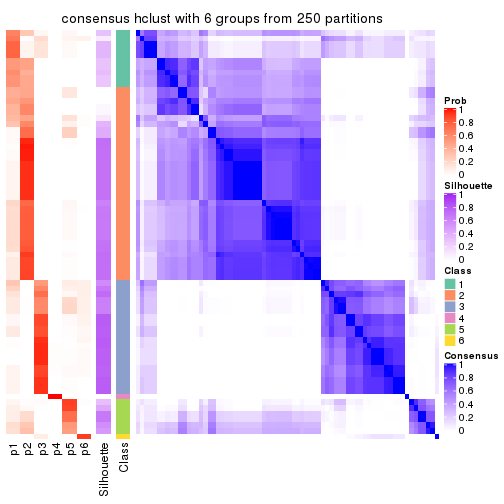
Heatmaps for the membership of samples in all partitions to see how consistent they are:
membership_heatmap(res, k = 2)
membership_heatmap(res, k = 3)
membership_heatmap(res, k = 4)
membership_heatmap(res, k = 5)
membership_heatmap(res, k = 6)
As soon as we have had the classes for columns, we can look for signatures which are significantly different between classes which can be candidate marks for certain classes. Following are the heatmaps for signatures.
Signature heatmaps where rows are scaled:
get_signatures(res, k = 2)
get_signatures(res, k = 3)

get_signatures(res, k = 4)

get_signatures(res, k = 5)
get_signatures(res, k = 6)
Signature heatmaps where rows are not scaled:
get_signatures(res, k = 2, scale_rows = FALSE)
get_signatures(res, k = 3, scale_rows = FALSE)
get_signatures(res, k = 4, scale_rows = FALSE)
get_signatures(res, k = 5, scale_rows = FALSE)
get_signatures(res, k = 6, scale_rows = FALSE)
Compare the overlap of signatures from different k:
compare_signatures(res)
get_signature() returns a data frame invisibly. TO get the list of signatures, the function
call should be assigned to a variable explicitly. In following code, if plot argument is set
to FALSE, no heatmap is plotted while only the differential analysis is performed.
# code only for demonstration
tb = get_signature(res, k = ..., plot = FALSE)
An example of the output of tb is:
#> which_row fdr mean_1 mean_2 scaled_mean_1 scaled_mean_2 km
#> 1 38 0.042760348 8.373488 9.131774 -0.5533452 0.5164555 1
#> 2 40 0.018707592 7.106213 8.469186 -0.6173731 0.5762149 1
#> 3 55 0.019134737 10.221463 11.207825 -0.6159697 0.5749050 1
#> 4 59 0.006059896 5.921854 7.869574 -0.6899429 0.6439467 1
#> 5 60 0.018055526 8.928898 10.211722 -0.6204761 0.5791110 1
#> 6 98 0.009384629 15.714769 14.887706 0.6635654 -0.6193277 2
...
The columns in tb are:
which_row: row indices corresponding to the input matrix.fdr: FDR for the differential test. mean_x: The mean value in group x.scaled_mean_x: The mean value in group x after rows are scaled.km: Row groups if k-means clustering is applied to rows.UMAP plot which shows how samples are separated.
dimension_reduction(res, k = 2, method = "UMAP")
dimension_reduction(res, k = 3, method = "UMAP")
dimension_reduction(res, k = 4, method = "UMAP")
dimension_reduction(res, k = 5, method = "UMAP")
dimension_reduction(res, k = 6, method = "UMAP")
Following heatmap shows how subgroups are split when increasing k:
collect_classes(res)
If matrix rows can be associated to genes, consider to use GO_Enrichment(res,
...) to perform function enrichment for the signature genes.
The object with results only for a single top-value method and a single partition method can be extracted as:
res = res_list["ATC", "kmeans"]
# you can also extract it by
# res = res_list["ATC:kmeans"]
A summary of res and all the functions that can be applied to it:
res
#> A 'ConsensusPartition' object with k = 2, 3, 4, 5, 6.
#> On a matrix with 13673 rows and 72 columns.
#> Top rows (1000, 2000, 3000, 4000, 5000) are extracted by 'ATC' method.
#> Subgroups are detected by 'kmeans' method.
#> Performed in total 1250 partitions by row resampling.
#> Best k for subgroups seems to be 2.
#>
#> Following methods can be applied to this 'ConsensusPartition' object:
#> [1] "cola_report" "collect_classes" "collect_plots"
#> [4] "collect_stats" "colnames" "compare_signatures"
#> [7] "consensus_heatmap" "dimension_reduction" "functional_enrichment"
#> [10] "get_anno_col" "get_anno" "get_classes"
#> [13] "get_consensus" "get_matrix" "get_membership"
#> [16] "get_param" "get_signatures" "get_stats"
#> [19] "is_best_k" "is_stable_k" "membership_heatmap"
#> [22] "ncol" "nrow" "plot_ecdf"
#> [25] "rownames" "select_partition_number" "show"
#> [28] "suggest_best_k" "test_to_known_factors"
collect_plots() function collects all the plots made from res for all k (number of partitions)
into one single page to provide an easy and fast comparison between different k.
collect_plots(res)
The plots are:
k and the heatmap of
predicted classes for each k.k.k.k.All the plots in panels can be made by individual functions and they are plotted later in this section.
select_partition_number() produces several plots showing different
statistics for choosing “optimized” k. There are following statistics:
k;k, the area increased is defined as \(A_k - A_{k-1}\).The detailed explanations of these statistics can be found in the cola vignette.
Generally speaking, lower PAC score, higher mean silhouette score or higher
concordance corresponds to better partition. Rand index and Jaccard index
measure how similar the current partition is compared to partition with k-1.
If they are too similar, we won't accept k is better than k-1.
select_partition_number(res)
The numeric values for all these statistics can be obtained by get_stats().
get_stats(res)
#> k 1-PAC mean_silhouette concordance area_increased Rand Jaccard
#> 2 2 1.000 1.000 1.000 0.4602 0.540 0.540
#> 3 3 0.540 0.802 0.860 0.3978 0.728 0.526
#> 4 4 0.568 0.555 0.721 0.1414 0.836 0.561
#> 5 5 0.593 0.485 0.704 0.0675 0.926 0.724
#> 6 6 0.633 0.337 0.605 0.0384 0.893 0.581
suggest_best_k() suggests the best \(k\) based on these statistics. The rules are as follows:
NA.suggest_best_k(res)
#> [1] 2
Following shows the table of the partitions (You need to click the show/hide
code output link to see it). The membership matrix (columns with name p*)
is inferred by
clue::cl_consensus()
function with the SE method. Basically the value in the membership matrix
represents the probability to belong to a certain group. The finall class
label for an item is determined with the group with highest probability it
belongs to.
In get_classes() function, the entropy is calculated from the membership
matrix and the silhouette score is calculated from the consensus matrix.
cbind(get_classes(res, k = 2), get_membership(res, k = 2))
#> class entropy silhouette p1 p2
#> SRR1585486 2 0 1 0 1
#> SRR1585488 2 0 1 0 1
#> SRR1585487 2 0 1 0 1
#> SRR1585489 2 0 1 0 1
#> SRR1585490 2 0 1 0 1
#> SRR1585491 2 0 1 0 1
#> SRR1585492 2 0 1 0 1
#> SRR1585493 2 0 1 0 1
#> SRR1585494 2 0 1 0 1
#> SRR1585496 1 0 1 1 0
#> SRR1585495 1 0 1 1 0
#> SRR1585498 2 0 1 0 1
#> SRR1585497 2 0 1 0 1
#> SRR1585499 1 0 1 1 0
#> SRR1585500 1 0 1 1 0
#> SRR1585501 2 0 1 0 1
#> SRR1585502 2 0 1 0 1
#> SRR1585503 2 0 1 0 1
#> SRR1585504 1 0 1 1 0
#> SRR1585505 1 0 1 1 0
#> SRR1585506 1 0 1 1 0
#> SRR1585508 2 0 1 0 1
#> SRR1585507 2 0 1 0 1
#> SRR1585509 2 0 1 0 1
#> SRR1585510 2 0 1 0 1
#> SRR1585511 1 0 1 1 0
#> SRR1585512 2 0 1 0 1
#> SRR1585513 2 0 1 0 1
#> SRR1585516 2 0 1 0 1
#> SRR1585515 2 0 1 0 1
#> SRR1585514 2 0 1 0 1
#> SRR1585518 2 0 1 0 1
#> SRR1585517 2 0 1 0 1
#> SRR1585519 2 0 1 0 1
#> SRR1585520 2 0 1 0 1
#> SRR1585522 2 0 1 0 1
#> SRR1585521 1 0 1 1 0
#> SRR1585524 2 0 1 0 1
#> SRR1585523 2 0 1 0 1
#> SRR1585525 1 0 1 1 0
#> SRR1585526 1 0 1 1 0
#> SRR1585527 1 0 1 1 0
#> SRR1585528 2 0 1 0 1
#> SRR1585529 2 0 1 0 1
#> SRR1585530 1 0 1 1 0
#> SRR1585531 1 0 1 1 0
#> SRR1585532 2 0 1 0 1
#> SRR1585533 1 0 1 1 0
#> SRR1585534 2 0 1 0 1
#> SRR1585535 2 0 1 0 1
#> SRR1585536 1 0 1 1 0
#> SRR1585537 1 0 1 1 0
#> SRR1585538 2 0 1 0 1
#> SRR1585539 2 0 1 0 1
#> SRR1585541 2 0 1 0 1
#> SRR1585540 2 0 1 0 1
#> SRR1585542 1 0 1 1 0
#> SRR1585543 1 0 1 1 0
#> SRR1585544 2 0 1 0 1
#> SRR1585546 1 0 1 1 0
#> SRR1585545 2 0 1 0 1
#> SRR1585547 2 0 1 0 1
#> SRR1585548 2 0 1 0 1
#> SRR1585549 1 0 1 1 0
#> SRR1585550 1 0 1 1 0
#> SRR1585551 1 0 1 1 0
#> SRR1585552 2 0 1 0 1
#> SRR1585553 2 0 1 0 1
#> SRR1585554 1 0 1 1 0
#> SRR1585555 1 0 1 1 0
#> SRR1585557 2 0 1 0 1
#> SRR1585556 2 0 1 0 1
cbind(get_classes(res, k = 3), get_membership(res, k = 3))
#> class entropy silhouette p1 p2 p3
#> SRR1585486 1 0.4887 0.753 0.772 0.228 0.000
#> SRR1585488 2 0.4346 0.823 0.184 0.816 0.000
#> SRR1585487 1 0.5327 0.720 0.728 0.272 0.000
#> SRR1585489 2 0.0000 0.867 0.000 1.000 0.000
#> SRR1585490 2 0.3116 0.849 0.108 0.892 0.000
#> SRR1585491 2 0.5621 0.709 0.308 0.692 0.000
#> SRR1585492 1 0.3340 0.751 0.880 0.120 0.000
#> SRR1585493 2 0.3038 0.820 0.104 0.896 0.000
#> SRR1585494 2 0.3412 0.807 0.124 0.876 0.000
#> SRR1585496 3 0.0892 0.956 0.020 0.000 0.980
#> SRR1585495 3 0.0892 0.956 0.020 0.000 0.980
#> SRR1585498 2 0.3686 0.797 0.140 0.860 0.000
#> SRR1585497 1 0.3293 0.750 0.900 0.088 0.012
#> SRR1585499 3 0.4555 0.758 0.200 0.000 0.800
#> SRR1585500 3 0.2959 0.901 0.100 0.000 0.900
#> SRR1585501 1 0.6045 0.552 0.620 0.380 0.000
#> SRR1585502 2 0.1753 0.848 0.048 0.952 0.000
#> SRR1585503 2 0.1163 0.868 0.028 0.972 0.000
#> SRR1585504 1 0.6095 0.338 0.608 0.000 0.392
#> SRR1585505 1 0.5610 0.639 0.776 0.028 0.196
#> SRR1585506 3 0.0892 0.956 0.020 0.000 0.980
#> SRR1585508 2 0.0000 0.867 0.000 1.000 0.000
#> SRR1585507 2 0.4346 0.754 0.184 0.816 0.000
#> SRR1585509 1 0.3686 0.756 0.860 0.140 0.000
#> SRR1585510 1 0.5687 0.765 0.756 0.224 0.020
#> SRR1585511 3 0.0892 0.956 0.020 0.000 0.980
#> SRR1585512 2 0.0000 0.867 0.000 1.000 0.000
#> SRR1585513 2 0.3816 0.837 0.148 0.852 0.000
#> SRR1585516 1 0.5591 0.683 0.696 0.304 0.000
#> SRR1585515 2 0.3551 0.840 0.132 0.868 0.000
#> SRR1585514 2 0.0000 0.867 0.000 1.000 0.000
#> SRR1585518 2 0.0000 0.867 0.000 1.000 0.000
#> SRR1585517 2 0.3752 0.835 0.144 0.856 0.000
#> SRR1585519 2 0.0000 0.867 0.000 1.000 0.000
#> SRR1585520 1 0.5733 0.738 0.676 0.324 0.000
#> SRR1585522 1 0.5687 0.765 0.756 0.224 0.020
#> SRR1585521 3 0.0747 0.951 0.016 0.000 0.984
#> SRR1585524 2 0.2448 0.846 0.076 0.924 0.000
#> SRR1585523 2 0.0424 0.866 0.008 0.992 0.000
#> SRR1585525 3 0.0424 0.953 0.008 0.000 0.992
#> SRR1585526 3 0.0892 0.956 0.020 0.000 0.980
#> SRR1585527 3 0.0747 0.951 0.016 0.000 0.984
#> SRR1585528 2 0.0424 0.866 0.008 0.992 0.000
#> SRR1585529 2 0.0000 0.867 0.000 1.000 0.000
#> SRR1585530 3 0.0892 0.956 0.020 0.000 0.980
#> SRR1585531 3 0.0747 0.951 0.016 0.000 0.984
#> SRR1585532 2 0.3752 0.835 0.144 0.856 0.000
#> SRR1585533 3 0.2066 0.928 0.060 0.000 0.940
#> SRR1585534 2 0.3816 0.837 0.148 0.852 0.000
#> SRR1585535 2 0.5733 0.167 0.324 0.676 0.000
#> SRR1585536 3 0.0892 0.956 0.020 0.000 0.980
#> SRR1585537 3 0.2796 0.903 0.092 0.000 0.908
#> SRR1585538 2 0.3941 0.834 0.156 0.844 0.000
#> SRR1585539 1 0.5098 0.740 0.752 0.248 0.000
#> SRR1585541 2 0.4062 0.823 0.164 0.836 0.000
#> SRR1585540 2 0.0747 0.860 0.016 0.984 0.000
#> SRR1585542 3 0.0892 0.956 0.020 0.000 0.980
#> SRR1585543 3 0.0424 0.953 0.008 0.000 0.992
#> SRR1585544 1 0.5560 0.754 0.700 0.300 0.000
#> SRR1585546 1 0.6294 0.534 0.692 0.020 0.288
#> SRR1585545 2 0.5363 0.765 0.276 0.724 0.000
#> SRR1585547 1 0.4842 0.754 0.776 0.224 0.000
#> SRR1585548 2 0.5098 0.784 0.248 0.752 0.000
#> SRR1585549 1 0.5397 0.540 0.720 0.000 0.280
#> SRR1585550 3 0.0747 0.951 0.016 0.000 0.984
#> SRR1585551 3 0.0892 0.956 0.020 0.000 0.980
#> SRR1585552 1 0.6192 0.627 0.580 0.420 0.000
#> SRR1585553 1 0.5560 0.754 0.700 0.300 0.000
#> SRR1585554 1 0.5216 0.557 0.740 0.000 0.260
#> SRR1585555 3 0.4555 0.756 0.200 0.000 0.800
#> SRR1585557 1 0.6235 0.597 0.564 0.436 0.000
#> SRR1585556 1 0.5058 0.764 0.756 0.244 0.000
cbind(get_classes(res, k = 4), get_membership(res, k = 4))
#> class entropy silhouette p1 p2 p3 p4
#> SRR1585486 1 0.3813 0.15074 0.828 0.024 0.000 0.148
#> SRR1585488 1 0.6747 0.23645 0.528 0.372 0.000 0.100
#> SRR1585487 1 0.3168 0.36022 0.884 0.056 0.000 0.060
#> SRR1585489 2 0.0000 0.74837 0.000 1.000 0.000 0.000
#> SRR1585490 2 0.4697 0.11613 0.356 0.644 0.000 0.000
#> SRR1585491 1 0.6993 0.33847 0.572 0.260 0.000 0.168
#> SRR1585492 4 0.4999 0.47350 0.492 0.000 0.000 0.508
#> SRR1585493 2 0.4281 0.62115 0.028 0.792 0.000 0.180
#> SRR1585494 2 0.4508 0.61271 0.036 0.780 0.000 0.184
#> SRR1585496 3 0.2281 0.87386 0.000 0.000 0.904 0.096
#> SRR1585495 3 0.0707 0.88122 0.000 0.000 0.980 0.020
#> SRR1585498 2 0.5102 0.57050 0.048 0.732 0.000 0.220
#> SRR1585497 4 0.4855 0.68501 0.352 0.004 0.000 0.644
#> SRR1585499 3 0.5697 0.67536 0.056 0.000 0.664 0.280
#> SRR1585500 3 0.4212 0.76666 0.012 0.000 0.772 0.216
#> SRR1585501 1 0.4139 0.45416 0.816 0.144 0.000 0.040
#> SRR1585502 2 0.3311 0.62484 0.172 0.828 0.000 0.000
#> SRR1585503 2 0.3528 0.57597 0.192 0.808 0.000 0.000
#> SRR1585504 4 0.6894 0.26945 0.120 0.000 0.344 0.536
#> SRR1585505 4 0.5515 0.71423 0.272 0.012 0.028 0.688
#> SRR1585506 3 0.0707 0.88122 0.000 0.000 0.980 0.020
#> SRR1585508 2 0.0000 0.74837 0.000 1.000 0.000 0.000
#> SRR1585507 2 0.5590 0.52826 0.064 0.692 0.000 0.244
#> SRR1585509 4 0.5252 0.66688 0.336 0.020 0.000 0.644
#> SRR1585510 4 0.6805 0.72241 0.400 0.100 0.000 0.500
#> SRR1585511 3 0.2345 0.87264 0.000 0.000 0.900 0.100
#> SRR1585512 2 0.0000 0.74837 0.000 1.000 0.000 0.000
#> SRR1585513 1 0.4981 0.21770 0.536 0.464 0.000 0.000
#> SRR1585516 1 0.1970 0.42048 0.932 0.060 0.000 0.008
#> SRR1585515 1 0.4941 0.27656 0.564 0.436 0.000 0.000
#> SRR1585514 2 0.0000 0.74837 0.000 1.000 0.000 0.000
#> SRR1585518 2 0.0000 0.74837 0.000 1.000 0.000 0.000
#> SRR1585517 1 0.4679 0.40770 0.648 0.352 0.000 0.000
#> SRR1585519 2 0.0000 0.74837 0.000 1.000 0.000 0.000
#> SRR1585520 1 0.7290 -0.21141 0.504 0.328 0.000 0.168
#> SRR1585522 4 0.6805 0.72241 0.400 0.100 0.000 0.500
#> SRR1585521 3 0.1661 0.87235 0.004 0.000 0.944 0.052
#> SRR1585524 2 0.5253 0.24754 0.360 0.624 0.000 0.016
#> SRR1585523 2 0.0657 0.74234 0.004 0.984 0.000 0.012
#> SRR1585525 3 0.1209 0.87708 0.004 0.000 0.964 0.032
#> SRR1585526 3 0.2281 0.87386 0.000 0.000 0.904 0.096
#> SRR1585527 3 0.1576 0.87346 0.004 0.000 0.948 0.048
#> SRR1585528 2 0.3266 0.61451 0.168 0.832 0.000 0.000
#> SRR1585529 2 0.0000 0.74837 0.000 1.000 0.000 0.000
#> SRR1585530 3 0.2345 0.87264 0.000 0.000 0.900 0.100
#> SRR1585531 3 0.1489 0.87435 0.004 0.000 0.952 0.044
#> SRR1585532 1 0.4679 0.40770 0.648 0.352 0.000 0.000
#> SRR1585533 3 0.3945 0.81980 0.004 0.000 0.780 0.216
#> SRR1585534 2 0.5000 -0.22330 0.500 0.500 0.000 0.000
#> SRR1585535 2 0.5915 0.07527 0.400 0.560 0.000 0.040
#> SRR1585536 3 0.4304 0.70075 0.000 0.000 0.716 0.284
#> SRR1585537 3 0.3725 0.78274 0.008 0.000 0.812 0.180
#> SRR1585538 1 0.4697 0.45377 0.696 0.296 0.000 0.008
#> SRR1585539 1 0.3071 0.33520 0.888 0.044 0.000 0.068
#> SRR1585541 1 0.4699 0.43843 0.676 0.320 0.000 0.004
#> SRR1585540 2 0.0000 0.74837 0.000 1.000 0.000 0.000
#> SRR1585542 3 0.2281 0.87386 0.000 0.000 0.904 0.096
#> SRR1585543 3 0.0000 0.88042 0.000 0.000 1.000 0.000
#> SRR1585544 4 0.7107 0.68698 0.408 0.128 0.000 0.464
#> SRR1585546 1 0.5774 0.14143 0.696 0.008 0.060 0.236
#> SRR1585545 1 0.7793 0.07521 0.396 0.356 0.000 0.248
#> SRR1585547 1 0.3856 0.18228 0.832 0.032 0.000 0.136
#> SRR1585548 1 0.7169 0.24687 0.516 0.332 0.000 0.152
#> SRR1585549 4 0.6560 0.66052 0.248 0.000 0.132 0.620
#> SRR1585550 3 0.1902 0.87796 0.004 0.000 0.932 0.064
#> SRR1585551 3 0.0707 0.88122 0.000 0.000 0.980 0.020
#> SRR1585552 1 0.7273 -0.08789 0.452 0.400 0.000 0.148
#> SRR1585553 4 0.7119 0.65818 0.432 0.128 0.000 0.440
#> SRR1585554 4 0.5496 0.68933 0.232 0.000 0.064 0.704
#> SRR1585555 3 0.6374 0.37886 0.072 0.000 0.556 0.372
#> SRR1585557 1 0.6915 -0.00631 0.476 0.416 0.000 0.108
#> SRR1585556 4 0.6805 0.72241 0.400 0.100 0.000 0.500
cbind(get_classes(res, k = 5), get_membership(res, k = 5))
#> class entropy silhouette p1 p2 p3 p4 p5
#> SRR1585486 4 0.4234 0.3729 0.000 0.004 0.252 0.724 0.020
#> SRR1585488 5 0.6272 0.4338 0.000 0.160 0.000 0.348 0.492
#> SRR1585487 4 0.3333 0.5032 0.000 0.028 0.096 0.856 0.020
#> SRR1585489 2 0.0000 0.7215 0.000 1.000 0.000 0.000 0.000
#> SRR1585490 2 0.5498 0.1539 0.000 0.580 0.000 0.340 0.080
#> SRR1585491 5 0.6024 0.4941 0.000 0.084 0.016 0.348 0.552
#> SRR1585492 5 0.6362 0.0645 0.000 0.000 0.368 0.168 0.464
#> SRR1585493 2 0.4792 0.3976 0.000 0.656 0.020 0.012 0.312
#> SRR1585494 2 0.4912 0.3854 0.000 0.644 0.024 0.012 0.320
#> SRR1585496 1 0.3506 0.7834 0.824 0.000 0.132 0.000 0.044
#> SRR1585495 1 0.1043 0.8103 0.960 0.000 0.040 0.000 0.000
#> SRR1585498 2 0.5573 0.1950 0.000 0.528 0.040 0.016 0.416
#> SRR1585497 3 0.5933 -0.0906 0.000 0.000 0.448 0.104 0.448
#> SRR1585499 1 0.6728 0.4234 0.488 0.000 0.364 0.036 0.112
#> SRR1585500 1 0.6176 0.6029 0.616 0.000 0.092 0.040 0.252
#> SRR1585501 4 0.3528 0.5129 0.000 0.052 0.084 0.848 0.016
#> SRR1585502 2 0.5355 0.3342 0.000 0.632 0.036 0.308 0.024
#> SRR1585503 2 0.5345 0.3092 0.000 0.632 0.000 0.280 0.088
#> SRR1585504 3 0.4750 0.3806 0.260 0.000 0.692 0.004 0.044
#> SRR1585505 3 0.4336 0.5258 0.008 0.000 0.768 0.052 0.172
#> SRR1585506 1 0.1043 0.8103 0.960 0.000 0.040 0.000 0.000
#> SRR1585508 2 0.0000 0.7215 0.000 1.000 0.000 0.000 0.000
#> SRR1585507 2 0.6286 0.0515 0.000 0.464 0.088 0.020 0.428
#> SRR1585509 5 0.5919 -0.0155 0.000 0.000 0.416 0.104 0.480
#> SRR1585510 3 0.4180 0.6304 0.000 0.036 0.744 0.220 0.000
#> SRR1585511 1 0.3771 0.7643 0.796 0.000 0.164 0.000 0.040
#> SRR1585512 2 0.0000 0.7215 0.000 1.000 0.000 0.000 0.000
#> SRR1585513 4 0.5941 0.2435 0.000 0.228 0.000 0.592 0.180
#> SRR1585516 4 0.2970 0.5063 0.000 0.028 0.060 0.884 0.028
#> SRR1585515 4 0.5864 0.2785 0.000 0.320 0.000 0.560 0.120
#> SRR1585514 2 0.0000 0.7215 0.000 1.000 0.000 0.000 0.000
#> SRR1585518 2 0.0000 0.7215 0.000 1.000 0.000 0.000 0.000
#> SRR1585517 4 0.5093 0.3898 0.000 0.180 0.000 0.696 0.124
#> SRR1585519 2 0.0000 0.7215 0.000 1.000 0.000 0.000 0.000
#> SRR1585520 4 0.6494 -0.0154 0.000 0.192 0.364 0.444 0.000
#> SRR1585522 3 0.4180 0.6304 0.000 0.036 0.744 0.220 0.000
#> SRR1585521 1 0.2800 0.7931 0.892 0.000 0.052 0.016 0.040
#> SRR1585524 2 0.4958 -0.0070 0.000 0.524 0.020 0.452 0.004
#> SRR1585523 2 0.1202 0.7026 0.000 0.960 0.004 0.004 0.032
#> SRR1585525 1 0.1822 0.8052 0.936 0.000 0.036 0.004 0.024
#> SRR1585526 1 0.3639 0.7781 0.812 0.000 0.144 0.000 0.044
#> SRR1585527 1 0.2721 0.7944 0.896 0.000 0.052 0.016 0.036
#> SRR1585528 2 0.4193 0.4477 0.000 0.720 0.000 0.256 0.024
#> SRR1585529 2 0.0000 0.7215 0.000 1.000 0.000 0.000 0.000
#> SRR1585530 1 0.4096 0.7437 0.760 0.000 0.200 0.000 0.040
#> SRR1585531 1 0.2424 0.7977 0.908 0.000 0.052 0.008 0.032
#> SRR1585532 4 0.4867 0.4034 0.000 0.180 0.000 0.716 0.104
#> SRR1585533 1 0.6201 0.6233 0.596 0.000 0.272 0.028 0.104
#> SRR1585534 4 0.6339 0.1007 0.000 0.304 0.000 0.508 0.188
#> SRR1585535 4 0.5454 0.0630 0.000 0.452 0.060 0.488 0.000
#> SRR1585536 1 0.5113 0.4823 0.576 0.000 0.380 0.000 0.044
#> SRR1585537 1 0.6077 0.6235 0.636 0.000 0.088 0.044 0.232
#> SRR1585538 4 0.4901 0.3778 0.000 0.116 0.000 0.716 0.168
#> SRR1585539 4 0.3781 0.4787 0.000 0.016 0.108 0.828 0.048
#> SRR1585541 4 0.4015 0.4897 0.000 0.124 0.024 0.812 0.040
#> SRR1585540 2 0.0727 0.7166 0.000 0.980 0.004 0.012 0.004
#> SRR1585542 1 0.3365 0.7878 0.836 0.000 0.120 0.000 0.044
#> SRR1585543 1 0.0290 0.8109 0.992 0.000 0.000 0.000 0.008
#> SRR1585544 3 0.5319 0.5417 0.000 0.060 0.652 0.276 0.012
#> SRR1585546 4 0.6522 0.1813 0.040 0.000 0.308 0.552 0.100
#> SRR1585545 5 0.6610 0.5390 0.000 0.132 0.072 0.180 0.616
#> SRR1585547 4 0.4316 0.4166 0.000 0.004 0.208 0.748 0.040
#> SRR1585548 5 0.6150 0.5130 0.000 0.120 0.008 0.328 0.544
#> SRR1585549 3 0.3539 0.5873 0.092 0.000 0.848 0.028 0.032
#> SRR1585550 1 0.2872 0.8031 0.884 0.000 0.060 0.008 0.048
#> SRR1585551 1 0.1205 0.8100 0.956 0.000 0.040 0.000 0.004
#> SRR1585552 4 0.6606 -0.0461 0.000 0.216 0.364 0.420 0.000
#> SRR1585553 3 0.5229 0.4598 0.000 0.064 0.612 0.324 0.000
#> SRR1585554 3 0.3994 0.5453 0.032 0.000 0.804 0.020 0.144
#> SRR1585555 3 0.5316 0.1534 0.348 0.000 0.600 0.012 0.040
#> SRR1585557 4 0.6756 0.0461 0.000 0.236 0.316 0.444 0.004
#> SRR1585556 3 0.4775 0.6202 0.000 0.048 0.720 0.220 0.012
cbind(get_classes(res, k = 6), get_membership(res, k = 6))
#> class entropy silhouette p1 p2 p3 p4 p5 p6
#> SRR1585486 1 0.3843 0.4721 0.808 0.004 0.000 0.028 0.052 0.108
#> SRR1585488 4 0.5196 0.3395 0.172 0.080 0.000 0.688 0.000 0.060
#> SRR1585487 1 0.2501 0.4982 0.896 0.004 0.000 0.056 0.016 0.028
#> SRR1585489 2 0.0000 0.7445 0.000 1.000 0.000 0.000 0.000 0.000
#> SRR1585490 2 0.6668 0.0373 0.220 0.496 0.000 0.216 0.000 0.068
#> SRR1585491 4 0.3695 0.3675 0.176 0.044 0.000 0.776 0.000 0.004
#> SRR1585492 4 0.7159 0.1342 0.136 0.000 0.000 0.440 0.252 0.172
#> SRR1585493 2 0.5618 0.2069 0.000 0.572 0.000 0.304 0.028 0.096
#> SRR1585494 2 0.5749 0.1780 0.000 0.556 0.000 0.312 0.032 0.100
#> SRR1585496 3 0.4234 0.4679 0.000 0.000 0.544 0.000 0.440 0.016
#> SRR1585495 3 0.3543 0.5236 0.004 0.000 0.756 0.000 0.224 0.016
#> SRR1585498 4 0.6158 -0.0205 0.004 0.420 0.000 0.436 0.036 0.104
#> SRR1585497 4 0.7110 0.0689 0.112 0.000 0.000 0.416 0.300 0.172
#> SRR1585499 3 0.6540 0.0476 0.032 0.000 0.516 0.024 0.292 0.136
#> SRR1585500 6 0.3869 0.7381 0.000 0.000 0.500 0.000 0.000 0.500
#> SRR1585501 1 0.2898 0.4917 0.868 0.016 0.000 0.028 0.004 0.084
#> SRR1585502 2 0.5798 0.1885 0.356 0.532 0.000 0.044 0.004 0.064
#> SRR1585503 2 0.6329 0.2081 0.224 0.528 0.000 0.204 0.000 0.044
#> SRR1585504 5 0.2376 0.3346 0.012 0.000 0.096 0.000 0.884 0.008
#> SRR1585505 5 0.6535 0.2839 0.108 0.000 0.000 0.200 0.548 0.144
#> SRR1585506 3 0.3357 0.5278 0.004 0.000 0.764 0.000 0.224 0.008
#> SRR1585508 2 0.0000 0.7445 0.000 1.000 0.000 0.000 0.000 0.000
#> SRR1585507 4 0.6693 0.1291 0.004 0.348 0.000 0.448 0.068 0.132
#> SRR1585509 4 0.6868 0.1557 0.108 0.000 0.000 0.484 0.248 0.160
#> SRR1585510 5 0.7119 0.2433 0.336 0.028 0.000 0.108 0.444 0.084
#> SRR1585511 3 0.4161 0.5026 0.004 0.000 0.608 0.000 0.376 0.012
#> SRR1585512 2 0.0000 0.7445 0.000 1.000 0.000 0.000 0.000 0.000
#> SRR1585513 4 0.6508 -0.0656 0.400 0.112 0.000 0.416 0.000 0.072
#> SRR1585516 1 0.2408 0.4874 0.892 0.004 0.000 0.076 0.004 0.024
#> SRR1585515 1 0.6956 0.0644 0.376 0.248 0.000 0.316 0.000 0.060
#> SRR1585514 2 0.0146 0.7425 0.000 0.996 0.000 0.004 0.000 0.000
#> SRR1585518 2 0.0000 0.7445 0.000 1.000 0.000 0.000 0.000 0.000
#> SRR1585517 1 0.5997 0.2226 0.580 0.076 0.000 0.256 0.000 0.088
#> SRR1585519 2 0.0000 0.7445 0.000 1.000 0.000 0.000 0.000 0.000
#> SRR1585520 1 0.6822 0.2884 0.572 0.132 0.000 0.044 0.180 0.072
#> SRR1585522 5 0.7119 0.2433 0.336 0.028 0.000 0.108 0.444 0.084
#> SRR1585521 3 0.0547 0.4044 0.000 0.000 0.980 0.000 0.000 0.020
#> SRR1585524 1 0.4709 0.1193 0.516 0.444 0.000 0.004 0.000 0.036
#> SRR1585523 2 0.1738 0.7083 0.004 0.928 0.000 0.052 0.000 0.016
#> SRR1585525 3 0.0260 0.4414 0.000 0.000 0.992 0.000 0.008 0.000
#> SRR1585526 3 0.4238 0.4635 0.000 0.000 0.540 0.000 0.444 0.016
#> SRR1585527 3 0.0363 0.4185 0.000 0.000 0.988 0.000 0.000 0.012
#> SRR1585528 2 0.4965 0.3590 0.296 0.632 0.000 0.036 0.000 0.036
#> SRR1585529 2 0.0000 0.7445 0.000 1.000 0.000 0.000 0.000 0.000
#> SRR1585530 5 0.4255 -0.5313 0.004 0.000 0.476 0.004 0.512 0.004
#> SRR1585531 3 0.0146 0.4306 0.000 0.000 0.996 0.000 0.000 0.004
#> SRR1585532 1 0.5937 0.2547 0.604 0.076 0.000 0.220 0.000 0.100
#> SRR1585533 3 0.5799 0.1496 0.016 0.000 0.612 0.024 0.240 0.108
#> SRR1585534 4 0.6877 0.0147 0.352 0.164 0.000 0.404 0.000 0.080
#> SRR1585535 1 0.4506 0.2851 0.616 0.344 0.000 0.000 0.004 0.036
#> SRR1585536 5 0.4077 -0.3035 0.004 0.000 0.368 0.004 0.620 0.004
#> SRR1585537 6 0.5798 0.7260 0.000 0.000 0.396 0.024 0.100 0.480
#> SRR1585538 1 0.5886 0.0775 0.476 0.048 0.000 0.404 0.000 0.072
#> SRR1585539 1 0.4843 0.4278 0.724 0.004 0.000 0.136 0.028 0.108
#> SRR1585541 1 0.4069 0.4468 0.800 0.048 0.000 0.088 0.004 0.060
#> SRR1585540 2 0.1251 0.7301 0.012 0.956 0.000 0.008 0.000 0.024
#> SRR1585542 3 0.4229 0.4709 0.000 0.000 0.548 0.000 0.436 0.016
#> SRR1585543 3 0.3269 0.5132 0.000 0.000 0.792 0.000 0.184 0.024
#> SRR1585544 1 0.7517 -0.1749 0.384 0.048 0.000 0.100 0.364 0.104
#> SRR1585546 1 0.7675 0.2039 0.480 0.000 0.060 0.132 0.196 0.132
#> SRR1585545 4 0.5502 0.4428 0.028 0.076 0.000 0.700 0.060 0.136
#> SRR1585547 1 0.4657 0.4462 0.748 0.004 0.000 0.100 0.036 0.112
#> SRR1585548 4 0.4002 0.3859 0.152 0.072 0.000 0.768 0.000 0.008
#> SRR1585549 5 0.3394 0.4319 0.056 0.000 0.012 0.036 0.852 0.044
#> SRR1585550 3 0.1265 0.4517 0.000 0.000 0.948 0.000 0.044 0.008
#> SRR1585551 3 0.3627 0.5207 0.004 0.000 0.752 0.000 0.224 0.020
#> SRR1585552 1 0.6939 0.2922 0.552 0.160 0.000 0.044 0.180 0.064
#> SRR1585553 1 0.7216 -0.0134 0.464 0.048 0.000 0.084 0.312 0.092
#> SRR1585554 5 0.5095 0.3566 0.036 0.000 0.000 0.160 0.692 0.112
#> SRR1585555 5 0.3534 0.2197 0.032 0.000 0.168 0.000 0.792 0.008
#> SRR1585557 1 0.6699 0.3315 0.560 0.204 0.000 0.024 0.144 0.068
#> SRR1585556 5 0.7296 0.2234 0.336 0.036 0.000 0.116 0.428 0.084
Heatmaps for the consensus matrix. It visualizes the probability of two samples to be in a same group.
consensus_heatmap(res, k = 2)
consensus_heatmap(res, k = 3)
consensus_heatmap(res, k = 4)
consensus_heatmap(res, k = 5)
consensus_heatmap(res, k = 6)
Heatmaps for the membership of samples in all partitions to see how consistent they are:
membership_heatmap(res, k = 2)
membership_heatmap(res, k = 3)
membership_heatmap(res, k = 4)
membership_heatmap(res, k = 5)

membership_heatmap(res, k = 6)
As soon as we have had the classes for columns, we can look for signatures which are significantly different between classes which can be candidate marks for certain classes. Following are the heatmaps for signatures.
Signature heatmaps where rows are scaled:
get_signatures(res, k = 2)
get_signatures(res, k = 3)
get_signatures(res, k = 4)
get_signatures(res, k = 5)
get_signatures(res, k = 6)
Signature heatmaps where rows are not scaled:
get_signatures(res, k = 2, scale_rows = FALSE)
get_signatures(res, k = 3, scale_rows = FALSE)
get_signatures(res, k = 4, scale_rows = FALSE)
get_signatures(res, k = 5, scale_rows = FALSE)
get_signatures(res, k = 6, scale_rows = FALSE)
Compare the overlap of signatures from different k:
compare_signatures(res)
get_signature() returns a data frame invisibly. TO get the list of signatures, the function
call should be assigned to a variable explicitly. In following code, if plot argument is set
to FALSE, no heatmap is plotted while only the differential analysis is performed.
# code only for demonstration
tb = get_signature(res, k = ..., plot = FALSE)
An example of the output of tb is:
#> which_row fdr mean_1 mean_2 scaled_mean_1 scaled_mean_2 km
#> 1 38 0.042760348 8.373488 9.131774 -0.5533452 0.5164555 1
#> 2 40 0.018707592 7.106213 8.469186 -0.6173731 0.5762149 1
#> 3 55 0.019134737 10.221463 11.207825 -0.6159697 0.5749050 1
#> 4 59 0.006059896 5.921854 7.869574 -0.6899429 0.6439467 1
#> 5 60 0.018055526 8.928898 10.211722 -0.6204761 0.5791110 1
#> 6 98 0.009384629 15.714769 14.887706 0.6635654 -0.6193277 2
...
The columns in tb are:
which_row: row indices corresponding to the input matrix.fdr: FDR for the differential test. mean_x: The mean value in group x.scaled_mean_x: The mean value in group x after rows are scaled.km: Row groups if k-means clustering is applied to rows.UMAP plot which shows how samples are separated.
dimension_reduction(res, k = 2, method = "UMAP")
dimension_reduction(res, k = 3, method = "UMAP")
dimension_reduction(res, k = 4, method = "UMAP")
dimension_reduction(res, k = 5, method = "UMAP")
dimension_reduction(res, k = 6, method = "UMAP")
Following heatmap shows how subgroups are split when increasing k:
collect_classes(res)
If matrix rows can be associated to genes, consider to use GO_Enrichment(res,
...) to perform function enrichment for the signature genes.
The object with results only for a single top-value method and a single partition method can be extracted as:
res = res_list["ATC", "skmeans"]
# you can also extract it by
# res = res_list["ATC:skmeans"]
A summary of res and all the functions that can be applied to it:
res
#> A 'ConsensusPartition' object with k = 2, 3, 4, 5, 6.
#> On a matrix with 13673 rows and 72 columns.
#> Top rows (1000, 2000, 3000, 4000, 5000) are extracted by 'ATC' method.
#> Subgroups are detected by 'skmeans' method.
#> Performed in total 1250 partitions by row resampling.
#> Best k for subgroups seems to be 2.
#>
#> Following methods can be applied to this 'ConsensusPartition' object:
#> [1] "cola_report" "collect_classes" "collect_plots"
#> [4] "collect_stats" "colnames" "compare_signatures"
#> [7] "consensus_heatmap" "dimension_reduction" "functional_enrichment"
#> [10] "get_anno_col" "get_anno" "get_classes"
#> [13] "get_consensus" "get_matrix" "get_membership"
#> [16] "get_param" "get_signatures" "get_stats"
#> [19] "is_best_k" "is_stable_k" "membership_heatmap"
#> [22] "ncol" "nrow" "plot_ecdf"
#> [25] "rownames" "select_partition_number" "show"
#> [28] "suggest_best_k" "test_to_known_factors"
collect_plots() function collects all the plots made from res for all k (number of partitions)
into one single page to provide an easy and fast comparison between different k.
collect_plots(res)
The plots are:
k and the heatmap of
predicted classes for each k.k.k.k.All the plots in panels can be made by individual functions and they are plotted later in this section.
select_partition_number() produces several plots showing different
statistics for choosing “optimized” k. There are following statistics:
k;k, the area increased is defined as \(A_k - A_{k-1}\).The detailed explanations of these statistics can be found in the cola vignette.
Generally speaking, lower PAC score, higher mean silhouette score or higher
concordance corresponds to better partition. Rand index and Jaccard index
measure how similar the current partition is compared to partition with k-1.
If they are too similar, we won't accept k is better than k-1.
select_partition_number(res)
The numeric values for all these statistics can be obtained by get_stats().
get_stats(res)
#> k 1-PAC mean_silhouette concordance area_increased Rand Jaccard
#> 2 2 0.913 0.911 0.966 0.5008 0.499 0.499
#> 3 3 0.714 0.846 0.879 0.3029 0.754 0.542
#> 4 4 0.743 0.775 0.876 0.1212 0.900 0.711
#> 5 5 0.781 0.757 0.858 0.0586 0.914 0.697
#> 6 6 0.755 0.679 0.820 0.0334 0.973 0.877
suggest_best_k() suggests the best \(k\) based on these statistics. The rules are as follows:
NA.suggest_best_k(res)
#> [1] 2
Following shows the table of the partitions (You need to click the show/hide
code output link to see it). The membership matrix (columns with name p*)
is inferred by
clue::cl_consensus()
function with the SE method. Basically the value in the membership matrix
represents the probability to belong to a certain group. The finall class
label for an item is determined with the group with highest probability it
belongs to.
In get_classes() function, the entropy is calculated from the membership
matrix and the silhouette score is calculated from the consensus matrix.
cbind(get_classes(res, k = 2), get_membership(res, k = 2))
#> class entropy silhouette p1 p2
#> SRR1585486 1 0.6343 0.7882 0.840 0.160
#> SRR1585488 2 0.0000 0.9652 0.000 1.000
#> SRR1585487 2 0.0000 0.9652 0.000 1.000
#> SRR1585489 2 0.0000 0.9652 0.000 1.000
#> SRR1585490 2 0.0000 0.9652 0.000 1.000
#> SRR1585491 2 0.0000 0.9652 0.000 1.000
#> SRR1585492 1 0.9896 0.1913 0.560 0.440
#> SRR1585493 2 0.0000 0.9652 0.000 1.000
#> SRR1585494 2 0.0000 0.9652 0.000 1.000
#> SRR1585496 1 0.0000 0.9611 1.000 0.000
#> SRR1585495 1 0.0000 0.9611 1.000 0.000
#> SRR1585498 2 0.0000 0.9652 0.000 1.000
#> SRR1585497 1 0.3584 0.8973 0.932 0.068
#> SRR1585499 1 0.0000 0.9611 1.000 0.000
#> SRR1585500 1 0.0000 0.9611 1.000 0.000
#> SRR1585501 2 0.0000 0.9652 0.000 1.000
#> SRR1585502 2 0.0000 0.9652 0.000 1.000
#> SRR1585503 2 0.0000 0.9652 0.000 1.000
#> SRR1585504 1 0.0000 0.9611 1.000 0.000
#> SRR1585505 1 0.0000 0.9611 1.000 0.000
#> SRR1585506 1 0.0000 0.9611 1.000 0.000
#> SRR1585508 2 0.0000 0.9652 0.000 1.000
#> SRR1585507 2 0.0000 0.9652 0.000 1.000
#> SRR1585509 2 0.9087 0.5192 0.324 0.676
#> SRR1585510 1 0.0000 0.9611 1.000 0.000
#> SRR1585511 1 0.0000 0.9611 1.000 0.000
#> SRR1585512 2 0.0000 0.9652 0.000 1.000
#> SRR1585513 2 0.0000 0.9652 0.000 1.000
#> SRR1585516 2 0.0000 0.9652 0.000 1.000
#> SRR1585515 2 0.0000 0.9652 0.000 1.000
#> SRR1585514 2 0.0000 0.9652 0.000 1.000
#> SRR1585518 2 0.0000 0.9652 0.000 1.000
#> SRR1585517 2 0.0000 0.9652 0.000 1.000
#> SRR1585519 2 0.0000 0.9652 0.000 1.000
#> SRR1585520 2 0.0000 0.9652 0.000 1.000
#> SRR1585522 1 0.0000 0.9611 1.000 0.000
#> SRR1585521 1 0.0000 0.9611 1.000 0.000
#> SRR1585524 2 0.0000 0.9652 0.000 1.000
#> SRR1585523 2 0.0000 0.9652 0.000 1.000
#> SRR1585525 1 0.0000 0.9611 1.000 0.000
#> SRR1585526 1 0.0000 0.9611 1.000 0.000
#> SRR1585527 1 0.0000 0.9611 1.000 0.000
#> SRR1585528 2 0.0000 0.9652 0.000 1.000
#> SRR1585529 2 0.0000 0.9652 0.000 1.000
#> SRR1585530 1 0.0000 0.9611 1.000 0.000
#> SRR1585531 1 0.0000 0.9611 1.000 0.000
#> SRR1585532 2 0.0000 0.9652 0.000 1.000
#> SRR1585533 1 0.0000 0.9611 1.000 0.000
#> SRR1585534 2 0.0000 0.9652 0.000 1.000
#> SRR1585535 2 0.0000 0.9652 0.000 1.000
#> SRR1585536 1 0.0000 0.9611 1.000 0.000
#> SRR1585537 1 0.0000 0.9611 1.000 0.000
#> SRR1585538 2 0.0000 0.9652 0.000 1.000
#> SRR1585539 2 0.9866 0.2205 0.432 0.568
#> SRR1585541 2 0.0000 0.9652 0.000 1.000
#> SRR1585540 2 0.0000 0.9652 0.000 1.000
#> SRR1585542 1 0.0000 0.9611 1.000 0.000
#> SRR1585543 1 0.0000 0.9611 1.000 0.000
#> SRR1585544 1 0.9977 0.0833 0.528 0.472
#> SRR1585546 1 0.0000 0.9611 1.000 0.000
#> SRR1585545 2 0.0000 0.9652 0.000 1.000
#> SRR1585547 2 0.6887 0.7572 0.184 0.816
#> SRR1585548 2 0.0000 0.9652 0.000 1.000
#> SRR1585549 1 0.0000 0.9611 1.000 0.000
#> SRR1585550 1 0.0000 0.9611 1.000 0.000
#> SRR1585551 1 0.0000 0.9611 1.000 0.000
#> SRR1585552 2 0.0000 0.9652 0.000 1.000
#> SRR1585553 2 0.9286 0.4621 0.344 0.656
#> SRR1585554 1 0.0000 0.9611 1.000 0.000
#> SRR1585555 1 0.0000 0.9611 1.000 0.000
#> SRR1585557 2 0.0000 0.9652 0.000 1.000
#> SRR1585556 1 0.0376 0.9578 0.996 0.004
cbind(get_classes(res, k = 3), get_membership(res, k = 3))
#> class entropy silhouette p1 p2 p3
#> SRR1585486 1 0.5633 0.657 0.768 0.024 0.208
#> SRR1585488 1 0.5178 0.835 0.744 0.256 0.000
#> SRR1585487 1 0.5254 0.842 0.736 0.264 0.000
#> SRR1585489 2 0.0000 0.909 0.000 1.000 0.000
#> SRR1585490 1 0.6008 0.776 0.628 0.372 0.000
#> SRR1585491 1 0.5178 0.835 0.744 0.256 0.000
#> SRR1585492 1 0.1411 0.685 0.964 0.036 0.000
#> SRR1585493 2 0.1289 0.892 0.032 0.968 0.000
#> SRR1585494 2 0.1411 0.891 0.036 0.964 0.000
#> SRR1585496 3 0.0000 0.955 0.000 0.000 1.000
#> SRR1585495 3 0.0000 0.955 0.000 0.000 1.000
#> SRR1585498 2 0.1529 0.888 0.040 0.960 0.000
#> SRR1585497 3 0.6209 0.630 0.368 0.004 0.628
#> SRR1585499 3 0.0000 0.955 0.000 0.000 1.000
#> SRR1585500 3 0.0000 0.955 0.000 0.000 1.000
#> SRR1585501 1 0.6140 0.685 0.596 0.404 0.000
#> SRR1585502 2 0.0000 0.909 0.000 1.000 0.000
#> SRR1585503 2 0.1031 0.884 0.024 0.976 0.000
#> SRR1585504 3 0.0000 0.955 0.000 0.000 1.000
#> SRR1585505 3 0.4750 0.807 0.216 0.000 0.784
#> SRR1585506 3 0.0000 0.955 0.000 0.000 1.000
#> SRR1585508 2 0.0000 0.909 0.000 1.000 0.000
#> SRR1585507 2 0.1753 0.884 0.048 0.952 0.000
#> SRR1585509 2 0.7121 0.395 0.428 0.548 0.024
#> SRR1585510 3 0.5115 0.796 0.228 0.004 0.768
#> SRR1585511 3 0.0000 0.955 0.000 0.000 1.000
#> SRR1585512 2 0.0000 0.909 0.000 1.000 0.000
#> SRR1585513 1 0.5497 0.837 0.708 0.292 0.000
#> SRR1585516 1 0.5254 0.842 0.736 0.264 0.000
#> SRR1585515 1 0.6045 0.767 0.620 0.380 0.000
#> SRR1585514 2 0.0000 0.909 0.000 1.000 0.000
#> SRR1585518 2 0.0000 0.909 0.000 1.000 0.000
#> SRR1585517 1 0.5254 0.842 0.736 0.264 0.000
#> SRR1585519 2 0.0000 0.909 0.000 1.000 0.000
#> SRR1585520 2 0.0592 0.902 0.012 0.988 0.000
#> SRR1585522 3 0.4887 0.799 0.228 0.000 0.772
#> SRR1585521 3 0.0000 0.955 0.000 0.000 1.000
#> SRR1585524 2 0.0000 0.909 0.000 1.000 0.000
#> SRR1585523 2 0.1289 0.892 0.032 0.968 0.000
#> SRR1585525 3 0.0000 0.955 0.000 0.000 1.000
#> SRR1585526 3 0.0000 0.955 0.000 0.000 1.000
#> SRR1585527 3 0.0000 0.955 0.000 0.000 1.000
#> SRR1585528 2 0.0000 0.909 0.000 1.000 0.000
#> SRR1585529 2 0.0000 0.909 0.000 1.000 0.000
#> SRR1585530 3 0.0000 0.955 0.000 0.000 1.000
#> SRR1585531 3 0.0000 0.955 0.000 0.000 1.000
#> SRR1585532 1 0.5785 0.805 0.668 0.332 0.000
#> SRR1585533 3 0.0000 0.955 0.000 0.000 1.000
#> SRR1585534 1 0.5497 0.837 0.708 0.292 0.000
#> SRR1585535 2 0.0000 0.909 0.000 1.000 0.000
#> SRR1585536 3 0.0000 0.955 0.000 0.000 1.000
#> SRR1585537 3 0.0000 0.955 0.000 0.000 1.000
#> SRR1585538 1 0.5254 0.842 0.736 0.264 0.000
#> SRR1585539 1 0.6388 0.695 0.752 0.064 0.184
#> SRR1585541 1 0.6235 0.664 0.564 0.436 0.000
#> SRR1585540 2 0.0000 0.909 0.000 1.000 0.000
#> SRR1585542 3 0.0000 0.955 0.000 0.000 1.000
#> SRR1585543 3 0.0000 0.955 0.000 0.000 1.000
#> SRR1585544 2 0.5595 0.666 0.228 0.756 0.016
#> SRR1585546 1 0.6244 0.258 0.560 0.000 0.440
#> SRR1585545 1 0.5591 0.804 0.696 0.304 0.000
#> SRR1585547 1 0.4782 0.804 0.820 0.164 0.016
#> SRR1585548 1 0.5216 0.835 0.740 0.260 0.000
#> SRR1585549 3 0.1643 0.928 0.044 0.000 0.956
#> SRR1585550 3 0.0000 0.955 0.000 0.000 1.000
#> SRR1585551 3 0.0000 0.955 0.000 0.000 1.000
#> SRR1585552 2 0.1031 0.895 0.024 0.976 0.000
#> SRR1585553 2 0.4555 0.722 0.200 0.800 0.000
#> SRR1585554 3 0.4605 0.816 0.204 0.000 0.796
#> SRR1585555 3 0.0000 0.955 0.000 0.000 1.000
#> SRR1585557 2 0.0000 0.909 0.000 1.000 0.000
#> SRR1585556 2 0.9657 0.229 0.240 0.460 0.300
cbind(get_classes(res, k = 4), get_membership(res, k = 4))
#> class entropy silhouette p1 p2 p3 p4
#> SRR1585486 1 0.1520 0.728 0.956 0.000 0.024 0.020
#> SRR1585488 1 0.5891 0.696 0.700 0.168 0.000 0.132
#> SRR1585487 1 0.1940 0.773 0.924 0.076 0.000 0.000
#> SRR1585489 2 0.0000 0.899 0.000 1.000 0.000 0.000
#> SRR1585490 1 0.4830 0.565 0.608 0.392 0.000 0.000
#> SRR1585491 1 0.6204 0.671 0.672 0.160 0.000 0.168
#> SRR1585492 1 0.5165 0.152 0.512 0.004 0.000 0.484
#> SRR1585493 2 0.5143 0.618 0.036 0.708 0.000 0.256
#> SRR1585494 2 0.5666 0.485 0.036 0.616 0.000 0.348
#> SRR1585496 3 0.0336 0.950 0.000 0.000 0.992 0.008
#> SRR1585495 3 0.0336 0.950 0.000 0.000 0.992 0.008
#> SRR1585498 2 0.5713 0.466 0.036 0.604 0.000 0.360
#> SRR1585497 4 0.2845 0.670 0.076 0.000 0.028 0.896
#> SRR1585499 3 0.0000 0.951 0.000 0.000 1.000 0.000
#> SRR1585500 3 0.0000 0.951 0.000 0.000 1.000 0.000
#> SRR1585501 1 0.3400 0.724 0.820 0.180 0.000 0.000
#> SRR1585502 2 0.0000 0.899 0.000 1.000 0.000 0.000
#> SRR1585503 2 0.0188 0.896 0.004 0.996 0.000 0.000
#> SRR1585504 3 0.0707 0.943 0.000 0.000 0.980 0.020
#> SRR1585505 4 0.3219 0.758 0.000 0.000 0.164 0.836
#> SRR1585506 3 0.0336 0.950 0.000 0.000 0.992 0.008
#> SRR1585508 2 0.0000 0.899 0.000 1.000 0.000 0.000
#> SRR1585507 2 0.5816 0.406 0.036 0.572 0.000 0.392
#> SRR1585509 4 0.2443 0.663 0.044 0.024 0.008 0.924
#> SRR1585510 4 0.3528 0.753 0.000 0.000 0.192 0.808
#> SRR1585511 3 0.0469 0.948 0.000 0.000 0.988 0.012
#> SRR1585512 2 0.0000 0.899 0.000 1.000 0.000 0.000
#> SRR1585513 1 0.3400 0.768 0.820 0.180 0.000 0.000
#> SRR1585516 1 0.1867 0.771 0.928 0.072 0.000 0.000
#> SRR1585515 1 0.4898 0.519 0.584 0.416 0.000 0.000
#> SRR1585514 2 0.0000 0.899 0.000 1.000 0.000 0.000
#> SRR1585518 2 0.0000 0.899 0.000 1.000 0.000 0.000
#> SRR1585517 1 0.2081 0.775 0.916 0.084 0.000 0.000
#> SRR1585519 2 0.0000 0.899 0.000 1.000 0.000 0.000
#> SRR1585520 2 0.1824 0.856 0.004 0.936 0.000 0.060
#> SRR1585522 4 0.3486 0.756 0.000 0.000 0.188 0.812
#> SRR1585521 3 0.0000 0.951 0.000 0.000 1.000 0.000
#> SRR1585524 2 0.0000 0.899 0.000 1.000 0.000 0.000
#> SRR1585523 2 0.1256 0.875 0.028 0.964 0.000 0.008
#> SRR1585525 3 0.0000 0.951 0.000 0.000 1.000 0.000
#> SRR1585526 3 0.0336 0.950 0.000 0.000 0.992 0.008
#> SRR1585527 3 0.0000 0.951 0.000 0.000 1.000 0.000
#> SRR1585528 2 0.0000 0.899 0.000 1.000 0.000 0.000
#> SRR1585529 2 0.0000 0.899 0.000 1.000 0.000 0.000
#> SRR1585530 3 0.0336 0.950 0.000 0.000 0.992 0.008
#> SRR1585531 3 0.0000 0.951 0.000 0.000 1.000 0.000
#> SRR1585532 1 0.2345 0.774 0.900 0.100 0.000 0.000
#> SRR1585533 3 0.0000 0.951 0.000 0.000 1.000 0.000
#> SRR1585534 1 0.3688 0.758 0.792 0.208 0.000 0.000
#> SRR1585535 2 0.0188 0.897 0.004 0.996 0.000 0.000
#> SRR1585536 3 0.0592 0.946 0.000 0.000 0.984 0.016
#> SRR1585537 3 0.0188 0.951 0.000 0.000 0.996 0.004
#> SRR1585538 1 0.1940 0.773 0.924 0.076 0.000 0.000
#> SRR1585539 1 0.1297 0.742 0.964 0.020 0.016 0.000
#> SRR1585541 1 0.4250 0.705 0.724 0.276 0.000 0.000
#> SRR1585540 2 0.0000 0.899 0.000 1.000 0.000 0.000
#> SRR1585542 3 0.0000 0.951 0.000 0.000 1.000 0.000
#> SRR1585543 3 0.0000 0.951 0.000 0.000 1.000 0.000
#> SRR1585544 4 0.5286 0.388 0.004 0.384 0.008 0.604
#> SRR1585546 3 0.4955 0.167 0.444 0.000 0.556 0.000
#> SRR1585545 1 0.7877 0.245 0.364 0.280 0.000 0.356
#> SRR1585547 1 0.1007 0.739 0.976 0.008 0.008 0.008
#> SRR1585548 1 0.6546 0.647 0.636 0.192 0.000 0.172
#> SRR1585549 3 0.4564 0.422 0.000 0.000 0.672 0.328
#> SRR1585550 3 0.0000 0.951 0.000 0.000 1.000 0.000
#> SRR1585551 3 0.0336 0.950 0.000 0.000 0.992 0.008
#> SRR1585552 2 0.2489 0.835 0.020 0.912 0.000 0.068
#> SRR1585553 4 0.6660 0.161 0.084 0.452 0.000 0.464
#> SRR1585554 4 0.3688 0.740 0.000 0.000 0.208 0.792
#> SRR1585555 3 0.0592 0.946 0.000 0.000 0.984 0.016
#> SRR1585557 2 0.1118 0.878 0.000 0.964 0.000 0.036
#> SRR1585556 4 0.3160 0.762 0.000 0.020 0.108 0.872
cbind(get_classes(res, k = 5), get_membership(res, k = 5))
#> class entropy silhouette p1 p2 p3 p4 p5
#> SRR1585486 4 0.3929 0.7023 0.000 0.000 0.028 0.764 0.208
#> SRR1585488 5 0.5052 0.5357 0.000 0.048 0.000 0.340 0.612
#> SRR1585487 4 0.2514 0.7985 0.000 0.060 0.000 0.896 0.044
#> SRR1585489 2 0.0000 0.9055 0.000 1.000 0.000 0.000 0.000
#> SRR1585490 4 0.4883 0.2537 0.000 0.464 0.004 0.516 0.016
#> SRR1585491 5 0.4562 0.5997 0.000 0.032 0.000 0.292 0.676
#> SRR1585492 5 0.3805 0.6079 0.000 0.004 0.084 0.092 0.820
#> SRR1585493 5 0.4278 0.3980 0.000 0.452 0.000 0.000 0.548
#> SRR1585494 5 0.4590 0.4633 0.000 0.420 0.012 0.000 0.568
#> SRR1585496 1 0.0290 0.9237 0.992 0.000 0.008 0.000 0.000
#> SRR1585495 1 0.0290 0.9237 0.992 0.000 0.008 0.000 0.000
#> SRR1585498 5 0.4371 0.5861 0.000 0.344 0.012 0.000 0.644
#> SRR1585497 5 0.3686 0.5248 0.004 0.000 0.204 0.012 0.780
#> SRR1585499 1 0.1891 0.8870 0.936 0.000 0.016 0.016 0.032
#> SRR1585500 1 0.0324 0.9230 0.992 0.000 0.004 0.000 0.004
#> SRR1585501 4 0.5069 0.7251 0.000 0.072 0.024 0.728 0.176
#> SRR1585502 2 0.0613 0.9011 0.000 0.984 0.004 0.008 0.004
#> SRR1585503 2 0.2020 0.8110 0.000 0.900 0.000 0.100 0.000
#> SRR1585504 1 0.2011 0.8773 0.908 0.000 0.088 0.000 0.004
#> SRR1585505 3 0.5067 0.6406 0.128 0.000 0.700 0.000 0.172
#> SRR1585506 1 0.0510 0.9222 0.984 0.000 0.016 0.000 0.000
#> SRR1585508 2 0.0000 0.9055 0.000 1.000 0.000 0.000 0.000
#> SRR1585507 5 0.4708 0.6126 0.000 0.292 0.040 0.000 0.668
#> SRR1585509 5 0.3561 0.4865 0.000 0.000 0.260 0.000 0.740
#> SRR1585510 3 0.0898 0.7905 0.020 0.000 0.972 0.000 0.008
#> SRR1585511 1 0.1851 0.8784 0.912 0.000 0.088 0.000 0.000
#> SRR1585512 2 0.0000 0.9055 0.000 1.000 0.000 0.000 0.000
#> SRR1585513 4 0.3085 0.7820 0.000 0.116 0.000 0.852 0.032
#> SRR1585516 4 0.2110 0.8031 0.000 0.072 0.000 0.912 0.016
#> SRR1585515 2 0.4457 0.2716 0.000 0.620 0.000 0.368 0.012
#> SRR1585514 2 0.0000 0.9055 0.000 1.000 0.000 0.000 0.000
#> SRR1585518 2 0.0000 0.9055 0.000 1.000 0.000 0.000 0.000
#> SRR1585517 4 0.2331 0.8018 0.000 0.080 0.000 0.900 0.020
#> SRR1585519 2 0.0000 0.9055 0.000 1.000 0.000 0.000 0.000
#> SRR1585520 2 0.3512 0.7523 0.000 0.816 0.160 0.012 0.012
#> SRR1585522 3 0.1012 0.7905 0.020 0.000 0.968 0.000 0.012
#> SRR1585521 1 0.0324 0.9230 0.992 0.000 0.004 0.000 0.004
#> SRR1585524 2 0.0000 0.9055 0.000 1.000 0.000 0.000 0.000
#> SRR1585523 2 0.0963 0.8774 0.000 0.964 0.000 0.000 0.036
#> SRR1585525 1 0.0324 0.9230 0.992 0.000 0.004 0.000 0.004
#> SRR1585526 1 0.0510 0.9222 0.984 0.000 0.016 0.000 0.000
#> SRR1585527 1 0.0324 0.9230 0.992 0.000 0.004 0.000 0.004
#> SRR1585528 2 0.0566 0.9000 0.000 0.984 0.000 0.012 0.004
#> SRR1585529 2 0.0000 0.9055 0.000 1.000 0.000 0.000 0.000
#> SRR1585530 1 0.0794 0.9177 0.972 0.000 0.028 0.000 0.000
#> SRR1585531 1 0.0324 0.9230 0.992 0.000 0.004 0.000 0.004
#> SRR1585532 4 0.3178 0.7970 0.000 0.088 0.004 0.860 0.048
#> SRR1585533 1 0.0807 0.9172 0.976 0.000 0.012 0.000 0.012
#> SRR1585534 4 0.3409 0.7624 0.000 0.144 0.000 0.824 0.032
#> SRR1585535 2 0.0798 0.8955 0.000 0.976 0.000 0.016 0.008
#> SRR1585536 1 0.2020 0.8690 0.900 0.000 0.100 0.000 0.000
#> SRR1585537 1 0.0290 0.9237 0.992 0.000 0.008 0.000 0.000
#> SRR1585538 4 0.2230 0.7904 0.000 0.044 0.000 0.912 0.044
#> SRR1585539 4 0.3280 0.7325 0.000 0.000 0.012 0.812 0.176
#> SRR1585541 4 0.4898 0.6843 0.000 0.228 0.012 0.708 0.052
#> SRR1585540 2 0.0000 0.9055 0.000 1.000 0.000 0.000 0.000
#> SRR1585542 1 0.0000 0.9238 1.000 0.000 0.000 0.000 0.000
#> SRR1585543 1 0.0000 0.9238 1.000 0.000 0.000 0.000 0.000
#> SRR1585544 3 0.4370 0.6735 0.004 0.152 0.776 0.004 0.064
#> SRR1585546 1 0.6322 -0.0363 0.460 0.000 0.016 0.424 0.100
#> SRR1585545 5 0.4458 0.6642 0.000 0.056 0.004 0.192 0.748
#> SRR1585547 4 0.3779 0.7191 0.000 0.000 0.024 0.776 0.200
#> SRR1585548 5 0.4728 0.6000 0.000 0.040 0.000 0.296 0.664
#> SRR1585549 1 0.4108 0.5587 0.684 0.000 0.308 0.000 0.008
#> SRR1585550 1 0.0324 0.9230 0.992 0.000 0.004 0.000 0.004
#> SRR1585551 1 0.0609 0.9209 0.980 0.000 0.020 0.000 0.000
#> SRR1585552 2 0.6094 0.1511 0.000 0.512 0.400 0.032 0.056
#> SRR1585553 3 0.5742 0.6285 0.000 0.144 0.700 0.064 0.092
#> SRR1585554 3 0.5076 0.6284 0.200 0.000 0.692 0.000 0.108
#> SRR1585555 1 0.2966 0.7765 0.816 0.000 0.184 0.000 0.000
#> SRR1585557 2 0.2170 0.8407 0.000 0.904 0.088 0.004 0.004
#> SRR1585556 3 0.1168 0.7815 0.008 0.000 0.960 0.000 0.032
cbind(get_classes(res, k = 6), get_membership(res, k = 6))
#> class entropy silhouette p1 p2 p3 p4 p5 p6
#> SRR1585486 1 0.4290 0.273 0.612 0.000 0.000 0.020 0.004 0.364
#> SRR1585488 4 0.5496 0.454 0.024 0.080 0.000 0.556 0.000 0.340
#> SRR1585487 6 0.2872 0.625 0.076 0.052 0.000 0.008 0.000 0.864
#> SRR1585489 2 0.0000 0.902 0.000 1.000 0.000 0.000 0.000 0.000
#> SRR1585490 6 0.4465 0.141 0.020 0.472 0.000 0.004 0.000 0.504
#> SRR1585491 4 0.4397 0.540 0.032 0.012 0.000 0.672 0.000 0.284
#> SRR1585492 4 0.1789 0.590 0.032 0.000 0.000 0.924 0.000 0.044
#> SRR1585493 4 0.4109 0.477 0.012 0.412 0.000 0.576 0.000 0.000
#> SRR1585494 4 0.4292 0.514 0.024 0.388 0.000 0.588 0.000 0.000
#> SRR1585496 3 0.0405 0.891 0.008 0.000 0.988 0.000 0.004 0.000
#> SRR1585495 3 0.0146 0.892 0.000 0.000 0.996 0.000 0.004 0.000
#> SRR1585498 4 0.4543 0.562 0.036 0.356 0.000 0.604 0.004 0.000
#> SRR1585497 4 0.2705 0.522 0.076 0.000 0.004 0.876 0.040 0.004
#> SRR1585499 3 0.3789 0.625 0.332 0.000 0.660 0.008 0.000 0.000
#> SRR1585500 3 0.2553 0.858 0.144 0.000 0.848 0.008 0.000 0.000
#> SRR1585501 6 0.4966 0.211 0.316 0.028 0.000 0.020 0.012 0.624
#> SRR1585502 2 0.2240 0.866 0.044 0.908 0.000 0.000 0.016 0.032
#> SRR1585503 2 0.2191 0.811 0.004 0.876 0.000 0.000 0.000 0.120
#> SRR1585504 3 0.1844 0.861 0.048 0.000 0.924 0.004 0.024 0.000
#> SRR1585505 5 0.5787 0.475 0.104 0.000 0.048 0.252 0.596 0.000
#> SRR1585506 3 0.0260 0.891 0.000 0.000 0.992 0.000 0.008 0.000
#> SRR1585508 2 0.0000 0.902 0.000 1.000 0.000 0.000 0.000 0.000
#> SRR1585507 4 0.4672 0.597 0.036 0.312 0.000 0.636 0.016 0.000
#> SRR1585509 4 0.3453 0.505 0.064 0.000 0.000 0.804 0.132 0.000
#> SRR1585510 5 0.0508 0.677 0.000 0.000 0.012 0.004 0.984 0.000
#> SRR1585511 3 0.0935 0.882 0.004 0.000 0.964 0.000 0.032 0.000
#> SRR1585512 2 0.0000 0.902 0.000 1.000 0.000 0.000 0.000 0.000
#> SRR1585513 6 0.2202 0.661 0.028 0.052 0.000 0.012 0.000 0.908
#> SRR1585516 6 0.1498 0.665 0.032 0.028 0.000 0.000 0.000 0.940
#> SRR1585515 2 0.4500 0.249 0.024 0.592 0.000 0.008 0.000 0.376
#> SRR1585514 2 0.0000 0.902 0.000 1.000 0.000 0.000 0.000 0.000
#> SRR1585518 2 0.0000 0.902 0.000 1.000 0.000 0.000 0.000 0.000
#> SRR1585517 6 0.1341 0.666 0.024 0.028 0.000 0.000 0.000 0.948
#> SRR1585519 2 0.0146 0.901 0.004 0.996 0.000 0.000 0.000 0.000
#> SRR1585520 2 0.4908 0.528 0.048 0.664 0.000 0.004 0.260 0.024
#> SRR1585522 5 0.0984 0.678 0.008 0.000 0.012 0.012 0.968 0.000
#> SRR1585521 3 0.2553 0.858 0.144 0.000 0.848 0.008 0.000 0.000
#> SRR1585524 2 0.0146 0.901 0.004 0.996 0.000 0.000 0.000 0.000
#> SRR1585523 2 0.1485 0.870 0.024 0.944 0.000 0.028 0.004 0.000
#> SRR1585525 3 0.1714 0.884 0.092 0.000 0.908 0.000 0.000 0.000
#> SRR1585526 3 0.0508 0.892 0.012 0.000 0.984 0.000 0.004 0.000
#> SRR1585527 3 0.2513 0.860 0.140 0.000 0.852 0.008 0.000 0.000
#> SRR1585528 2 0.0820 0.894 0.012 0.972 0.000 0.000 0.000 0.016
#> SRR1585529 2 0.0000 0.902 0.000 1.000 0.000 0.000 0.000 0.000
#> SRR1585530 3 0.0914 0.893 0.016 0.000 0.968 0.000 0.016 0.000
#> SRR1585531 3 0.2320 0.867 0.132 0.000 0.864 0.004 0.000 0.000
#> SRR1585532 6 0.2958 0.607 0.108 0.028 0.000 0.012 0.000 0.852
#> SRR1585533 3 0.3292 0.808 0.200 0.000 0.784 0.008 0.008 0.000
#> SRR1585534 6 0.2215 0.657 0.012 0.076 0.000 0.012 0.000 0.900
#> SRR1585535 2 0.1851 0.877 0.036 0.928 0.000 0.000 0.012 0.024
#> SRR1585536 3 0.1549 0.877 0.020 0.000 0.936 0.000 0.044 0.000
#> SRR1585537 3 0.1588 0.890 0.072 0.000 0.924 0.004 0.000 0.000
#> SRR1585538 6 0.1777 0.651 0.032 0.024 0.000 0.012 0.000 0.932
#> SRR1585539 6 0.4301 -0.168 0.392 0.000 0.000 0.024 0.000 0.584
#> SRR1585541 6 0.5388 0.426 0.184 0.160 0.000 0.012 0.004 0.640
#> SRR1585540 2 0.0862 0.893 0.016 0.972 0.000 0.000 0.004 0.008
#> SRR1585542 3 0.0937 0.894 0.040 0.000 0.960 0.000 0.000 0.000
#> SRR1585543 3 0.0937 0.894 0.040 0.000 0.960 0.000 0.000 0.000
#> SRR1585544 5 0.5848 0.567 0.188 0.140 0.000 0.028 0.628 0.016
#> SRR1585546 1 0.5944 0.205 0.468 0.000 0.328 0.004 0.000 0.200
#> SRR1585545 4 0.3103 0.645 0.000 0.064 0.000 0.836 0.000 0.100
#> SRR1585547 1 0.4334 0.282 0.568 0.000 0.000 0.024 0.000 0.408
#> SRR1585548 4 0.4895 0.564 0.032 0.044 0.000 0.656 0.000 0.268
#> SRR1585549 3 0.4768 0.611 0.072 0.000 0.720 0.040 0.168 0.000
#> SRR1585550 3 0.2234 0.870 0.124 0.000 0.872 0.004 0.000 0.000
#> SRR1585551 3 0.0622 0.889 0.008 0.000 0.980 0.000 0.012 0.000
#> SRR1585552 5 0.6585 0.367 0.236 0.292 0.000 0.012 0.444 0.016
#> SRR1585553 5 0.6257 0.501 0.320 0.080 0.004 0.032 0.540 0.024
#> SRR1585554 5 0.6543 0.450 0.080 0.000 0.176 0.212 0.532 0.000
#> SRR1585555 3 0.2431 0.810 0.008 0.000 0.860 0.000 0.132 0.000
#> SRR1585557 2 0.4190 0.723 0.056 0.768 0.000 0.004 0.152 0.020
#> SRR1585556 5 0.0653 0.676 0.004 0.000 0.004 0.012 0.980 0.000
Heatmaps for the consensus matrix. It visualizes the probability of two samples to be in a same group.
consensus_heatmap(res, k = 2)
consensus_heatmap(res, k = 3)
consensus_heatmap(res, k = 4)
consensus_heatmap(res, k = 5)
consensus_heatmap(res, k = 6)
Heatmaps for the membership of samples in all partitions to see how consistent they are:
membership_heatmap(res, k = 2)

membership_heatmap(res, k = 3)
membership_heatmap(res, k = 4)
membership_heatmap(res, k = 5)
membership_heatmap(res, k = 6)
As soon as we have had the classes for columns, we can look for signatures which are significantly different between classes which can be candidate marks for certain classes. Following are the heatmaps for signatures.
Signature heatmaps where rows are scaled:
get_signatures(res, k = 2)
get_signatures(res, k = 3)

get_signatures(res, k = 4)
get_signatures(res, k = 5)
get_signatures(res, k = 6)
Signature heatmaps where rows are not scaled:
get_signatures(res, k = 2, scale_rows = FALSE)
get_signatures(res, k = 3, scale_rows = FALSE)
get_signatures(res, k = 4, scale_rows = FALSE)

get_signatures(res, k = 5, scale_rows = FALSE)
get_signatures(res, k = 6, scale_rows = FALSE)
Compare the overlap of signatures from different k:
compare_signatures(res)
get_signature() returns a data frame invisibly. TO get the list of signatures, the function
call should be assigned to a variable explicitly. In following code, if plot argument is set
to FALSE, no heatmap is plotted while only the differential analysis is performed.
# code only for demonstration
tb = get_signature(res, k = ..., plot = FALSE)
An example of the output of tb is:
#> which_row fdr mean_1 mean_2 scaled_mean_1 scaled_mean_2 km
#> 1 38 0.042760348 8.373488 9.131774 -0.5533452 0.5164555 1
#> 2 40 0.018707592 7.106213 8.469186 -0.6173731 0.5762149 1
#> 3 55 0.019134737 10.221463 11.207825 -0.6159697 0.5749050 1
#> 4 59 0.006059896 5.921854 7.869574 -0.6899429 0.6439467 1
#> 5 60 0.018055526 8.928898 10.211722 -0.6204761 0.5791110 1
#> 6 98 0.009384629 15.714769 14.887706 0.6635654 -0.6193277 2
...
The columns in tb are:
which_row: row indices corresponding to the input matrix.fdr: FDR for the differential test. mean_x: The mean value in group x.scaled_mean_x: The mean value in group x after rows are scaled.km: Row groups if k-means clustering is applied to rows.UMAP plot which shows how samples are separated.
dimension_reduction(res, k = 2, method = "UMAP")
dimension_reduction(res, k = 3, method = "UMAP")
dimension_reduction(res, k = 4, method = "UMAP")
dimension_reduction(res, k = 5, method = "UMAP")
dimension_reduction(res, k = 6, method = "UMAP")
Following heatmap shows how subgroups are split when increasing k:
collect_classes(res)
If matrix rows can be associated to genes, consider to use GO_Enrichment(res,
...) to perform function enrichment for the signature genes.
The object with results only for a single top-value method and a single partition method can be extracted as:
res = res_list["ATC", "pam"]
# you can also extract it by
# res = res_list["ATC:pam"]
A summary of res and all the functions that can be applied to it:
res
#> A 'ConsensusPartition' object with k = 2, 3, 4, 5, 6.
#> On a matrix with 13673 rows and 72 columns.
#> Top rows (1000, 2000, 3000, 4000, 5000) are extracted by 'ATC' method.
#> Subgroups are detected by 'pam' method.
#> Performed in total 1250 partitions by row resampling.
#> Best k for subgroups seems to be 2.
#>
#> Following methods can be applied to this 'ConsensusPartition' object:
#> [1] "cola_report" "collect_classes" "collect_plots"
#> [4] "collect_stats" "colnames" "compare_signatures"
#> [7] "consensus_heatmap" "dimension_reduction" "functional_enrichment"
#> [10] "get_anno_col" "get_anno" "get_classes"
#> [13] "get_consensus" "get_matrix" "get_membership"
#> [16] "get_param" "get_signatures" "get_stats"
#> [19] "is_best_k" "is_stable_k" "membership_heatmap"
#> [22] "ncol" "nrow" "plot_ecdf"
#> [25] "rownames" "select_partition_number" "show"
#> [28] "suggest_best_k" "test_to_known_factors"
collect_plots() function collects all the plots made from res for all k (number of partitions)
into one single page to provide an easy and fast comparison between different k.
collect_plots(res)
The plots are:
k and the heatmap of
predicted classes for each k.k.k.k.All the plots in panels can be made by individual functions and they are plotted later in this section.
select_partition_number() produces several plots showing different
statistics for choosing “optimized” k. There are following statistics:
k;k, the area increased is defined as \(A_k - A_{k-1}\).The detailed explanations of these statistics can be found in the cola vignette.
Generally speaking, lower PAC score, higher mean silhouette score or higher
concordance corresponds to better partition. Rand index and Jaccard index
measure how similar the current partition is compared to partition with k-1.
If they are too similar, we won't accept k is better than k-1.
select_partition_number(res)
The numeric values for all these statistics can be obtained by get_stats().
get_stats(res)
#> k 1-PAC mean_silhouette concordance area_increased Rand Jaccard
#> 2 2 1.000 0.992 0.996 0.4531 0.549 0.549
#> 3 3 0.700 0.845 0.918 0.4473 0.789 0.615
#> 4 4 0.847 0.835 0.930 0.1539 0.813 0.512
#> 5 5 0.773 0.663 0.844 0.0594 0.887 0.592
#> 6 6 0.754 0.643 0.835 0.0195 0.991 0.952
suggest_best_k() suggests the best \(k\) based on these statistics. The rules are as follows:
NA.suggest_best_k(res)
#> [1] 2
Following shows the table of the partitions (You need to click the show/hide
code output link to see it). The membership matrix (columns with name p*)
is inferred by
clue::cl_consensus()
function with the SE method. Basically the value in the membership matrix
represents the probability to belong to a certain group. The finall class
label for an item is determined with the group with highest probability it
belongs to.
In get_classes() function, the entropy is calculated from the membership
matrix and the silhouette score is calculated from the consensus matrix.
cbind(get_classes(res, k = 2), get_membership(res, k = 2))
#> class entropy silhouette p1 p2
#> SRR1585486 2 0.0376 0.993 0.004 0.996
#> SRR1585488 2 0.0000 0.994 0.000 1.000
#> SRR1585487 2 0.0376 0.993 0.004 0.996
#> SRR1585489 2 0.0000 0.994 0.000 1.000
#> SRR1585490 2 0.0000 0.994 0.000 1.000
#> SRR1585491 2 0.0000 0.994 0.000 1.000
#> SRR1585492 2 0.0376 0.993 0.004 0.996
#> SRR1585493 2 0.0000 0.994 0.000 1.000
#> SRR1585494 2 0.0000 0.994 0.000 1.000
#> SRR1585496 1 0.0000 1.000 1.000 0.000
#> SRR1585495 1 0.0000 1.000 1.000 0.000
#> SRR1585498 2 0.0000 0.994 0.000 1.000
#> SRR1585497 2 0.0376 0.993 0.004 0.996
#> SRR1585499 1 0.0000 1.000 1.000 0.000
#> SRR1585500 1 0.0000 1.000 1.000 0.000
#> SRR1585501 2 0.0376 0.993 0.004 0.996
#> SRR1585502 2 0.0000 0.994 0.000 1.000
#> SRR1585503 2 0.0000 0.994 0.000 1.000
#> SRR1585504 1 0.0000 1.000 1.000 0.000
#> SRR1585505 1 0.0000 1.000 1.000 0.000
#> SRR1585506 1 0.0000 1.000 1.000 0.000
#> SRR1585508 2 0.0000 0.994 0.000 1.000
#> SRR1585507 2 0.0376 0.993 0.004 0.996
#> SRR1585509 2 0.0376 0.993 0.004 0.996
#> SRR1585510 2 0.0376 0.993 0.004 0.996
#> SRR1585511 1 0.0000 1.000 1.000 0.000
#> SRR1585512 2 0.0000 0.994 0.000 1.000
#> SRR1585513 2 0.0000 0.994 0.000 1.000
#> SRR1585516 2 0.0376 0.993 0.004 0.996
#> SRR1585515 2 0.0000 0.994 0.000 1.000
#> SRR1585514 2 0.0000 0.994 0.000 1.000
#> SRR1585518 2 0.0000 0.994 0.000 1.000
#> SRR1585517 2 0.0000 0.994 0.000 1.000
#> SRR1585519 2 0.0000 0.994 0.000 1.000
#> SRR1585520 2 0.0376 0.993 0.004 0.996
#> SRR1585522 2 0.0376 0.993 0.004 0.996
#> SRR1585521 1 0.0000 1.000 1.000 0.000
#> SRR1585524 2 0.0376 0.993 0.004 0.996
#> SRR1585523 2 0.0000 0.994 0.000 1.000
#> SRR1585525 1 0.0000 1.000 1.000 0.000
#> SRR1585526 1 0.0000 1.000 1.000 0.000
#> SRR1585527 1 0.0000 1.000 1.000 0.000
#> SRR1585528 2 0.0000 0.994 0.000 1.000
#> SRR1585529 2 0.0000 0.994 0.000 1.000
#> SRR1585530 1 0.0000 1.000 1.000 0.000
#> SRR1585531 1 0.0000 1.000 1.000 0.000
#> SRR1585532 2 0.0000 0.994 0.000 1.000
#> SRR1585533 1 0.0000 1.000 1.000 0.000
#> SRR1585534 2 0.0000 0.994 0.000 1.000
#> SRR1585535 2 0.0376 0.993 0.004 0.996
#> SRR1585536 1 0.0000 1.000 1.000 0.000
#> SRR1585537 1 0.0000 1.000 1.000 0.000
#> SRR1585538 2 0.0000 0.994 0.000 1.000
#> SRR1585539 2 0.0376 0.993 0.004 0.996
#> SRR1585541 2 0.0000 0.994 0.000 1.000
#> SRR1585540 2 0.0000 0.994 0.000 1.000
#> SRR1585542 1 0.0000 1.000 1.000 0.000
#> SRR1585543 1 0.0000 1.000 1.000 0.000
#> SRR1585544 2 0.0376 0.993 0.004 0.996
#> SRR1585546 2 0.7376 0.741 0.208 0.792
#> SRR1585545 2 0.0000 0.994 0.000 1.000
#> SRR1585547 2 0.0376 0.993 0.004 0.996
#> SRR1585548 2 0.0000 0.994 0.000 1.000
#> SRR1585549 1 0.0376 0.996 0.996 0.004
#> SRR1585550 1 0.0000 1.000 1.000 0.000
#> SRR1585551 1 0.0000 1.000 1.000 0.000
#> SRR1585552 2 0.0376 0.993 0.004 0.996
#> SRR1585553 2 0.0376 0.993 0.004 0.996
#> SRR1585554 1 0.0000 1.000 1.000 0.000
#> SRR1585555 1 0.0000 1.000 1.000 0.000
#> SRR1585557 2 0.0376 0.993 0.004 0.996
#> SRR1585556 2 0.0376 0.993 0.004 0.996
cbind(get_classes(res, k = 3), get_membership(res, k = 3))
#> class entropy silhouette p1 p2 p3
#> SRR1585486 1 0.1163 0.890 0.972 0.028 0.000
#> SRR1585488 1 0.4887 0.777 0.772 0.228 0.000
#> SRR1585487 1 0.0747 0.889 0.984 0.016 0.000
#> SRR1585489 2 0.0000 0.904 0.000 1.000 0.000
#> SRR1585490 2 0.3267 0.824 0.116 0.884 0.000
#> SRR1585491 1 0.4346 0.819 0.816 0.184 0.000
#> SRR1585492 1 0.0000 0.885 1.000 0.000 0.000
#> SRR1585493 2 0.2165 0.867 0.064 0.936 0.000
#> SRR1585494 2 0.3267 0.824 0.116 0.884 0.000
#> SRR1585496 3 0.0000 0.921 0.000 0.000 1.000
#> SRR1585495 3 0.0000 0.921 0.000 0.000 1.000
#> SRR1585498 2 0.0424 0.899 0.008 0.992 0.000
#> SRR1585497 1 0.0237 0.886 0.996 0.004 0.000
#> SRR1585499 3 0.4796 0.797 0.220 0.000 0.780
#> SRR1585500 3 0.0000 0.921 0.000 0.000 1.000
#> SRR1585501 1 0.1163 0.890 0.972 0.028 0.000
#> SRR1585502 1 0.5835 0.617 0.660 0.340 0.000
#> SRR1585503 2 0.5968 0.358 0.364 0.636 0.000
#> SRR1585504 3 0.4291 0.829 0.180 0.000 0.820
#> SRR1585505 3 0.5733 0.658 0.324 0.000 0.676
#> SRR1585506 3 0.0000 0.921 0.000 0.000 1.000
#> SRR1585508 2 0.0000 0.904 0.000 1.000 0.000
#> SRR1585507 2 0.1163 0.885 0.028 0.972 0.000
#> SRR1585509 1 0.0000 0.885 1.000 0.000 0.000
#> SRR1585510 1 0.0000 0.885 1.000 0.000 0.000
#> SRR1585511 3 0.0000 0.921 0.000 0.000 1.000
#> SRR1585512 2 0.0000 0.904 0.000 1.000 0.000
#> SRR1585513 1 0.4504 0.810 0.804 0.196 0.000
#> SRR1585516 1 0.1163 0.890 0.972 0.028 0.000
#> SRR1585515 2 0.5560 0.512 0.300 0.700 0.000
#> SRR1585514 2 0.0000 0.904 0.000 1.000 0.000
#> SRR1585518 2 0.0000 0.904 0.000 1.000 0.000
#> SRR1585517 1 0.4452 0.813 0.808 0.192 0.000
#> SRR1585519 2 0.0000 0.904 0.000 1.000 0.000
#> SRR1585520 1 0.0000 0.885 1.000 0.000 0.000
#> SRR1585522 1 0.0000 0.885 1.000 0.000 0.000
#> SRR1585521 3 0.0000 0.921 0.000 0.000 1.000
#> SRR1585524 2 0.6126 0.358 0.400 0.600 0.000
#> SRR1585523 2 0.0000 0.904 0.000 1.000 0.000
#> SRR1585525 3 0.0000 0.921 0.000 0.000 1.000
#> SRR1585526 3 0.0000 0.921 0.000 0.000 1.000
#> SRR1585527 3 0.0000 0.921 0.000 0.000 1.000
#> SRR1585528 2 0.0424 0.901 0.008 0.992 0.000
#> SRR1585529 2 0.0000 0.904 0.000 1.000 0.000
#> SRR1585530 3 0.0000 0.921 0.000 0.000 1.000
#> SRR1585531 3 0.0000 0.921 0.000 0.000 1.000
#> SRR1585532 1 0.4346 0.819 0.816 0.184 0.000
#> SRR1585533 3 0.4504 0.818 0.196 0.000 0.804
#> SRR1585534 1 0.4931 0.772 0.768 0.232 0.000
#> SRR1585535 1 0.2066 0.873 0.940 0.060 0.000
#> SRR1585536 3 0.3412 0.864 0.124 0.000 0.876
#> SRR1585537 3 0.0000 0.921 0.000 0.000 1.000
#> SRR1585538 1 0.4346 0.819 0.816 0.184 0.000
#> SRR1585539 1 0.1163 0.890 0.972 0.028 0.000
#> SRR1585541 1 0.4346 0.819 0.816 0.184 0.000
#> SRR1585540 2 0.0000 0.904 0.000 1.000 0.000
#> SRR1585542 3 0.0000 0.921 0.000 0.000 1.000
#> SRR1585543 3 0.0000 0.921 0.000 0.000 1.000
#> SRR1585544 1 0.0000 0.885 1.000 0.000 0.000
#> SRR1585546 1 0.0747 0.889 0.984 0.016 0.000
#> SRR1585545 1 0.4796 0.786 0.780 0.220 0.000
#> SRR1585547 1 0.1163 0.890 0.972 0.028 0.000
#> SRR1585548 1 0.4750 0.790 0.784 0.216 0.000
#> SRR1585549 3 0.6204 0.448 0.424 0.000 0.576
#> SRR1585550 3 0.0000 0.921 0.000 0.000 1.000
#> SRR1585551 3 0.0000 0.921 0.000 0.000 1.000
#> SRR1585552 1 0.2625 0.832 0.916 0.084 0.000
#> SRR1585553 1 0.0592 0.888 0.988 0.012 0.000
#> SRR1585554 3 0.4654 0.807 0.208 0.000 0.792
#> SRR1585555 3 0.2448 0.890 0.076 0.000 0.924
#> SRR1585557 1 0.2625 0.851 0.916 0.084 0.000
#> SRR1585556 1 0.0000 0.885 1.000 0.000 0.000
cbind(get_classes(res, k = 4), get_membership(res, k = 4))
#> class entropy silhouette p1 p2 p3 p4
#> SRR1585486 1 0.1792 0.8948 0.932 0.000 0.000 0.068
#> SRR1585488 1 0.2868 0.8154 0.864 0.136 0.000 0.000
#> SRR1585487 1 0.1716 0.8966 0.936 0.000 0.000 0.064
#> SRR1585489 2 0.0000 0.9173 0.000 1.000 0.000 0.000
#> SRR1585490 2 0.0707 0.9103 0.020 0.980 0.000 0.000
#> SRR1585491 1 0.0000 0.9159 1.000 0.000 0.000 0.000
#> SRR1585492 1 0.2081 0.8863 0.916 0.000 0.000 0.084
#> SRR1585493 2 0.0469 0.9138 0.012 0.988 0.000 0.000
#> SRR1585494 2 0.0707 0.9103 0.020 0.980 0.000 0.000
#> SRR1585496 3 0.0000 0.9704 0.000 0.000 1.000 0.000
#> SRR1585495 3 0.0000 0.9704 0.000 0.000 1.000 0.000
#> SRR1585498 2 0.0469 0.9115 0.000 0.988 0.000 0.012
#> SRR1585497 1 0.3649 0.7545 0.796 0.000 0.000 0.204
#> SRR1585499 4 0.4999 0.0798 0.000 0.000 0.492 0.508
#> SRR1585500 3 0.0000 0.9704 0.000 0.000 1.000 0.000
#> SRR1585501 1 0.0000 0.9159 1.000 0.000 0.000 0.000
#> SRR1585502 1 0.0804 0.9102 0.980 0.012 0.000 0.008
#> SRR1585503 1 0.4999 -0.0138 0.508 0.492 0.000 0.000
#> SRR1585504 4 0.4855 0.3457 0.000 0.000 0.400 0.600
#> SRR1585505 4 0.0000 0.8842 0.000 0.000 0.000 1.000
#> SRR1585506 3 0.0000 0.9704 0.000 0.000 1.000 0.000
#> SRR1585508 2 0.0000 0.9173 0.000 1.000 0.000 0.000
#> SRR1585507 4 0.4446 0.6765 0.028 0.196 0.000 0.776
#> SRR1585509 4 0.0000 0.8842 0.000 0.000 0.000 1.000
#> SRR1585510 4 0.0000 0.8842 0.000 0.000 0.000 1.000
#> SRR1585511 3 0.0188 0.9666 0.000 0.000 0.996 0.004
#> SRR1585512 2 0.0000 0.9173 0.000 1.000 0.000 0.000
#> SRR1585513 1 0.0000 0.9159 1.000 0.000 0.000 0.000
#> SRR1585516 1 0.0000 0.9159 1.000 0.000 0.000 0.000
#> SRR1585515 2 0.4907 0.2535 0.420 0.580 0.000 0.000
#> SRR1585514 2 0.0000 0.9173 0.000 1.000 0.000 0.000
#> SRR1585518 2 0.0000 0.9173 0.000 1.000 0.000 0.000
#> SRR1585517 1 0.0000 0.9159 1.000 0.000 0.000 0.000
#> SRR1585519 2 0.0000 0.9173 0.000 1.000 0.000 0.000
#> SRR1585520 4 0.0707 0.8772 0.020 0.000 0.000 0.980
#> SRR1585522 4 0.0000 0.8842 0.000 0.000 0.000 1.000
#> SRR1585521 3 0.0000 0.9704 0.000 0.000 1.000 0.000
#> SRR1585524 2 0.7581 0.0758 0.196 0.424 0.000 0.380
#> SRR1585523 2 0.0000 0.9173 0.000 1.000 0.000 0.000
#> SRR1585525 3 0.0000 0.9704 0.000 0.000 1.000 0.000
#> SRR1585526 3 0.0000 0.9704 0.000 0.000 1.000 0.000
#> SRR1585527 3 0.0000 0.9704 0.000 0.000 1.000 0.000
#> SRR1585528 2 0.2469 0.8451 0.108 0.892 0.000 0.000
#> SRR1585529 2 0.0000 0.9173 0.000 1.000 0.000 0.000
#> SRR1585530 3 0.4817 0.2863 0.000 0.000 0.612 0.388
#> SRR1585531 3 0.0000 0.9704 0.000 0.000 1.000 0.000
#> SRR1585532 1 0.0000 0.9159 1.000 0.000 0.000 0.000
#> SRR1585533 4 0.0188 0.8835 0.000 0.000 0.004 0.996
#> SRR1585534 1 0.2868 0.8154 0.864 0.136 0.000 0.000
#> SRR1585535 4 0.3351 0.7683 0.148 0.008 0.000 0.844
#> SRR1585536 4 0.1940 0.8430 0.000 0.000 0.076 0.924
#> SRR1585537 3 0.0000 0.9704 0.000 0.000 1.000 0.000
#> SRR1585538 1 0.0000 0.9159 1.000 0.000 0.000 0.000
#> SRR1585539 1 0.1716 0.8966 0.936 0.000 0.000 0.064
#> SRR1585541 1 0.0000 0.9159 1.000 0.000 0.000 0.000
#> SRR1585540 2 0.1716 0.8781 0.064 0.936 0.000 0.000
#> SRR1585542 3 0.0000 0.9704 0.000 0.000 1.000 0.000
#> SRR1585543 3 0.0000 0.9704 0.000 0.000 1.000 0.000
#> SRR1585544 4 0.0000 0.8842 0.000 0.000 0.000 1.000
#> SRR1585546 1 0.1716 0.8966 0.936 0.000 0.000 0.064
#> SRR1585545 1 0.0000 0.9159 1.000 0.000 0.000 0.000
#> SRR1585547 4 0.4605 0.4622 0.336 0.000 0.000 0.664
#> SRR1585548 1 0.1716 0.8814 0.936 0.064 0.000 0.000
#> SRR1585549 4 0.0000 0.8842 0.000 0.000 0.000 1.000
#> SRR1585550 3 0.0000 0.9704 0.000 0.000 1.000 0.000
#> SRR1585551 3 0.0000 0.9704 0.000 0.000 1.000 0.000
#> SRR1585552 4 0.1118 0.8670 0.036 0.000 0.000 0.964
#> SRR1585553 4 0.0707 0.8765 0.020 0.000 0.000 0.980
#> SRR1585554 4 0.0000 0.8842 0.000 0.000 0.000 1.000
#> SRR1585555 4 0.2868 0.7877 0.000 0.000 0.136 0.864
#> SRR1585557 1 0.2704 0.8353 0.876 0.000 0.000 0.124
#> SRR1585556 4 0.0000 0.8842 0.000 0.000 0.000 1.000
cbind(get_classes(res, k = 5), get_membership(res, k = 5))
#> class entropy silhouette p1 p2 p3 p4 p5
#> SRR1585486 4 0.4958 0.5442 0.000 0.000 0.036 0.592 0.372
#> SRR1585488 5 0.5177 0.3121 0.000 0.040 0.000 0.472 0.488
#> SRR1585487 4 0.2193 0.7416 0.000 0.000 0.028 0.912 0.060
#> SRR1585489 2 0.0000 0.8120 0.000 1.000 0.000 0.000 0.000
#> SRR1585490 2 0.3492 0.6646 0.000 0.796 0.000 0.188 0.016
#> SRR1585491 5 0.1851 0.4512 0.000 0.000 0.000 0.088 0.912
#> SRR1585492 4 0.4856 0.5454 0.000 0.000 0.028 0.584 0.388
#> SRR1585493 2 0.2124 0.7586 0.000 0.900 0.000 0.096 0.004
#> SRR1585494 5 0.6237 0.3402 0.000 0.276 0.000 0.188 0.536
#> SRR1585496 1 0.1764 0.8997 0.928 0.000 0.008 0.000 0.064
#> SRR1585495 1 0.0000 0.9532 1.000 0.000 0.000 0.000 0.000
#> SRR1585498 5 0.4434 0.0737 0.000 0.460 0.004 0.000 0.536
#> SRR1585497 4 0.2813 0.7204 0.000 0.000 0.040 0.876 0.084
#> SRR1585499 5 0.6734 -0.2047 0.188 0.000 0.376 0.008 0.428
#> SRR1585500 1 0.0404 0.9465 0.988 0.000 0.000 0.000 0.012
#> SRR1585501 4 0.0000 0.7575 0.000 0.000 0.000 1.000 0.000
#> SRR1585502 4 0.3339 0.6820 0.000 0.048 0.112 0.840 0.000
#> SRR1585503 2 0.4302 0.2331 0.000 0.520 0.000 0.480 0.000
#> SRR1585504 1 0.5447 0.1636 0.536 0.000 0.400 0.000 0.064
#> SRR1585505 3 0.0963 0.7883 0.000 0.000 0.964 0.000 0.036
#> SRR1585506 1 0.0000 0.9532 1.000 0.000 0.000 0.000 0.000
#> SRR1585508 2 0.0000 0.8120 0.000 1.000 0.000 0.000 0.000
#> SRR1585507 5 0.5920 0.2475 0.000 0.056 0.384 0.024 0.536
#> SRR1585509 5 0.2563 0.4665 0.000 0.000 0.120 0.008 0.872
#> SRR1585510 3 0.0290 0.7981 0.000 0.000 0.992 0.000 0.008
#> SRR1585511 1 0.0162 0.9503 0.996 0.000 0.004 0.000 0.000
#> SRR1585512 2 0.0000 0.8120 0.000 1.000 0.000 0.000 0.000
#> SRR1585513 4 0.3366 0.6660 0.000 0.000 0.000 0.768 0.232
#> SRR1585516 4 0.0000 0.7575 0.000 0.000 0.000 1.000 0.000
#> SRR1585515 2 0.4367 0.2398 0.000 0.580 0.000 0.416 0.004
#> SRR1585514 2 0.0000 0.8120 0.000 1.000 0.000 0.000 0.000
#> SRR1585518 2 0.0000 0.8120 0.000 1.000 0.000 0.000 0.000
#> SRR1585517 4 0.0000 0.7575 0.000 0.000 0.000 1.000 0.000
#> SRR1585519 2 0.0000 0.8120 0.000 1.000 0.000 0.000 0.000
#> SRR1585520 3 0.0992 0.7917 0.000 0.000 0.968 0.024 0.008
#> SRR1585522 3 0.0290 0.7981 0.000 0.000 0.992 0.000 0.008
#> SRR1585521 1 0.0000 0.9532 1.000 0.000 0.000 0.000 0.000
#> SRR1585524 3 0.8166 -0.0246 0.000 0.320 0.364 0.172 0.144
#> SRR1585523 2 0.3508 0.5684 0.000 0.748 0.000 0.000 0.252
#> SRR1585525 1 0.0000 0.9532 1.000 0.000 0.000 0.000 0.000
#> SRR1585526 1 0.1764 0.8997 0.928 0.000 0.008 0.000 0.064
#> SRR1585527 1 0.0000 0.9532 1.000 0.000 0.000 0.000 0.000
#> SRR1585528 2 0.2471 0.7384 0.000 0.864 0.000 0.136 0.000
#> SRR1585529 2 0.0000 0.8120 0.000 1.000 0.000 0.000 0.000
#> SRR1585530 3 0.4307 0.0184 0.496 0.000 0.504 0.000 0.000
#> SRR1585531 1 0.0000 0.9532 1.000 0.000 0.000 0.000 0.000
#> SRR1585532 4 0.0000 0.7575 0.000 0.000 0.000 1.000 0.000
#> SRR1585533 3 0.4288 0.4012 0.004 0.000 0.612 0.000 0.384
#> SRR1585534 4 0.3264 0.5657 0.000 0.164 0.000 0.820 0.016
#> SRR1585535 3 0.0703 0.7941 0.000 0.000 0.976 0.024 0.000
#> SRR1585536 3 0.2504 0.7539 0.040 0.000 0.896 0.000 0.064
#> SRR1585537 1 0.0000 0.9532 1.000 0.000 0.000 0.000 0.000
#> SRR1585538 4 0.0162 0.7555 0.000 0.000 0.000 0.996 0.004
#> SRR1585539 4 0.4812 0.5521 0.000 0.000 0.028 0.600 0.372
#> SRR1585541 4 0.0000 0.7575 0.000 0.000 0.000 1.000 0.000
#> SRR1585540 2 0.4504 0.6045 0.000 0.748 0.000 0.084 0.168
#> SRR1585542 1 0.0000 0.9532 1.000 0.000 0.000 0.000 0.000
#> SRR1585543 1 0.0000 0.9532 1.000 0.000 0.000 0.000 0.000
#> SRR1585544 3 0.0510 0.7973 0.000 0.000 0.984 0.000 0.016
#> SRR1585546 4 0.4675 0.5526 0.000 0.000 0.020 0.600 0.380
#> SRR1585545 5 0.4297 0.3191 0.000 0.000 0.000 0.472 0.528
#> SRR1585547 3 0.5439 0.3153 0.000 0.000 0.560 0.068 0.372
#> SRR1585548 5 0.4161 0.4484 0.000 0.016 0.000 0.280 0.704
#> SRR1585549 3 0.1478 0.7732 0.000 0.000 0.936 0.000 0.064
#> SRR1585550 1 0.0000 0.9532 1.000 0.000 0.000 0.000 0.000
#> SRR1585551 1 0.0000 0.9532 1.000 0.000 0.000 0.000 0.000
#> SRR1585552 3 0.0609 0.7933 0.000 0.000 0.980 0.020 0.000
#> SRR1585553 3 0.2891 0.6380 0.000 0.000 0.824 0.176 0.000
#> SRR1585554 3 0.0162 0.7971 0.000 0.000 0.996 0.000 0.004
#> SRR1585555 3 0.3346 0.7051 0.092 0.000 0.844 0.000 0.064
#> SRR1585557 4 0.3305 0.5995 0.000 0.000 0.224 0.776 0.000
#> SRR1585556 3 0.0290 0.7981 0.000 0.000 0.992 0.000 0.008
cbind(get_classes(res, k = 6), get_membership(res, k = 6))
#> class entropy silhouette p1 p2 p3 p4 p5 p6
#> SRR1585486 1 0.4376 0.5974 0.604 0.000 0.000 0.004 0.024 0.368
#> SRR1585488 4 0.4076 0.4336 0.452 0.000 0.000 0.540 0.000 0.008
#> SRR1585487 1 0.1801 0.7562 0.924 0.000 0.000 0.004 0.016 0.056
#> SRR1585489 2 0.0000 0.8110 0.000 1.000 0.000 0.000 0.000 0.000
#> SRR1585490 2 0.3562 0.6449 0.224 0.756 0.000 0.012 0.000 0.008
#> SRR1585491 4 0.4252 0.4516 0.024 0.000 0.000 0.604 0.000 0.372
#> SRR1585492 1 0.4440 0.5993 0.596 0.000 0.000 0.012 0.016 0.376
#> SRR1585493 2 0.3295 0.6917 0.056 0.816 0.000 0.128 0.000 0.000
#> SRR1585494 4 0.4003 0.6472 0.092 0.152 0.000 0.756 0.000 0.000
#> SRR1585496 3 0.2854 0.6389 0.000 0.000 0.792 0.000 0.000 0.208
#> SRR1585495 3 0.0000 0.9032 0.000 0.000 1.000 0.000 0.000 0.000
#> SRR1585498 4 0.3215 0.5875 0.000 0.240 0.000 0.756 0.004 0.000
#> SRR1585497 1 0.4351 0.6204 0.744 0.000 0.000 0.176 0.028 0.052
#> SRR1585499 6 0.5619 0.0583 0.008 0.000 0.184 0.000 0.232 0.576
#> SRR1585500 6 0.5970 0.0577 0.000 0.000 0.356 0.228 0.000 0.416
#> SRR1585501 1 0.0000 0.7655 1.000 0.000 0.000 0.000 0.000 0.000
#> SRR1585502 1 0.3293 0.6887 0.812 0.048 0.000 0.000 0.140 0.000
#> SRR1585503 2 0.3838 0.3234 0.448 0.552 0.000 0.000 0.000 0.000
#> SRR1585504 3 0.5651 -0.0510 0.000 0.000 0.532 0.000 0.260 0.208
#> SRR1585505 5 0.2597 0.6123 0.000 0.000 0.000 0.176 0.824 0.000
#> SRR1585506 3 0.0000 0.9032 0.000 0.000 1.000 0.000 0.000 0.000
#> SRR1585508 2 0.0000 0.8110 0.000 1.000 0.000 0.000 0.000 0.000
#> SRR1585507 4 0.3411 0.5254 0.008 0.004 0.000 0.756 0.232 0.000
#> SRR1585509 4 0.4307 0.5619 0.000 0.000 0.000 0.704 0.072 0.224
#> SRR1585510 5 0.0000 0.7404 0.000 0.000 0.000 0.000 1.000 0.000
#> SRR1585511 3 0.0146 0.8983 0.000 0.000 0.996 0.000 0.004 0.000
#> SRR1585512 2 0.0000 0.8110 0.000 1.000 0.000 0.000 0.000 0.000
#> SRR1585513 1 0.3368 0.6974 0.756 0.000 0.000 0.012 0.000 0.232
#> SRR1585516 1 0.0000 0.7655 1.000 0.000 0.000 0.000 0.000 0.000
#> SRR1585515 2 0.3950 0.1696 0.432 0.564 0.000 0.004 0.000 0.000
#> SRR1585514 2 0.0000 0.8110 0.000 1.000 0.000 0.000 0.000 0.000
#> SRR1585518 2 0.0000 0.8110 0.000 1.000 0.000 0.000 0.000 0.000
#> SRR1585517 1 0.0000 0.7655 1.000 0.000 0.000 0.000 0.000 0.000
#> SRR1585519 2 0.0000 0.8110 0.000 1.000 0.000 0.000 0.000 0.000
#> SRR1585520 5 0.0632 0.7355 0.024 0.000 0.000 0.000 0.976 0.000
#> SRR1585522 5 0.0000 0.7404 0.000 0.000 0.000 0.000 1.000 0.000
#> SRR1585521 3 0.0000 0.9032 0.000 0.000 1.000 0.000 0.000 0.000
#> SRR1585524 5 0.7434 -0.0343 0.172 0.316 0.000 0.004 0.368 0.140
#> SRR1585523 2 0.3541 0.6093 0.000 0.748 0.000 0.020 0.000 0.232
#> SRR1585525 3 0.0000 0.9032 0.000 0.000 1.000 0.000 0.000 0.000
#> SRR1585526 3 0.2854 0.6389 0.000 0.000 0.792 0.000 0.000 0.208
#> SRR1585527 3 0.0000 0.9032 0.000 0.000 1.000 0.000 0.000 0.000
#> SRR1585528 2 0.2178 0.7455 0.132 0.868 0.000 0.000 0.000 0.000
#> SRR1585529 2 0.0000 0.8110 0.000 1.000 0.000 0.000 0.000 0.000
#> SRR1585530 5 0.3868 -0.1176 0.000 0.000 0.496 0.000 0.504 0.000
#> SRR1585531 3 0.0000 0.9032 0.000 0.000 1.000 0.000 0.000 0.000
#> SRR1585532 1 0.0000 0.7655 1.000 0.000 0.000 0.000 0.000 0.000
#> SRR1585533 5 0.3907 0.2684 0.000 0.000 0.004 0.000 0.588 0.408
#> SRR1585534 1 0.3231 0.5689 0.800 0.180 0.000 0.012 0.000 0.008
#> SRR1585535 5 0.0458 0.7380 0.016 0.000 0.000 0.000 0.984 0.000
#> SRR1585536 5 0.2793 0.6257 0.000 0.000 0.000 0.000 0.800 0.200
#> SRR1585537 3 0.0000 0.9032 0.000 0.000 1.000 0.000 0.000 0.000
#> SRR1585538 1 0.0146 0.7637 0.996 0.000 0.000 0.000 0.000 0.004
#> SRR1585539 1 0.4223 0.6044 0.612 0.000 0.000 0.004 0.016 0.368
#> SRR1585541 1 0.0000 0.7655 1.000 0.000 0.000 0.000 0.000 0.000
#> SRR1585540 2 0.4255 0.5410 0.068 0.708 0.000 0.224 0.000 0.000
#> SRR1585542 3 0.0000 0.9032 0.000 0.000 1.000 0.000 0.000 0.000
#> SRR1585543 3 0.0000 0.9032 0.000 0.000 1.000 0.000 0.000 0.000
#> SRR1585544 5 0.0405 0.7395 0.000 0.000 0.000 0.004 0.988 0.008
#> SRR1585546 1 0.4150 0.6041 0.612 0.000 0.000 0.004 0.012 0.372
#> SRR1585545 4 0.3615 0.6351 0.292 0.000 0.000 0.700 0.000 0.008
#> SRR1585547 5 0.4961 0.2061 0.064 0.000 0.000 0.004 0.564 0.368
#> SRR1585548 4 0.3960 0.6715 0.176 0.000 0.000 0.752 0.000 0.072
#> SRR1585549 5 0.2854 0.6176 0.000 0.000 0.000 0.000 0.792 0.208
#> SRR1585550 3 0.0000 0.9032 0.000 0.000 1.000 0.000 0.000 0.000
#> SRR1585551 3 0.0000 0.9032 0.000 0.000 1.000 0.000 0.000 0.000
#> SRR1585552 5 0.0363 0.7392 0.012 0.000 0.000 0.000 0.988 0.000
#> SRR1585553 5 0.2823 0.5668 0.204 0.000 0.000 0.000 0.796 0.000
#> SRR1585554 5 0.0458 0.7391 0.000 0.000 0.000 0.000 0.984 0.016
#> SRR1585555 5 0.2793 0.6257 0.000 0.000 0.000 0.000 0.800 0.200
#> SRR1585557 1 0.3151 0.6124 0.748 0.000 0.000 0.000 0.252 0.000
#> SRR1585556 5 0.0000 0.7404 0.000 0.000 0.000 0.000 1.000 0.000
Heatmaps for the consensus matrix. It visualizes the probability of two samples to be in a same group.
consensus_heatmap(res, k = 2)
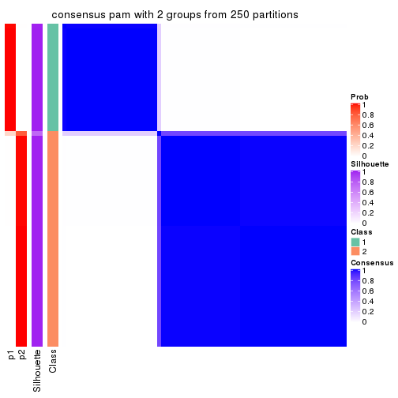
consensus_heatmap(res, k = 3)
consensus_heatmap(res, k = 4)
consensus_heatmap(res, k = 5)
consensus_heatmap(res, k = 6)
Heatmaps for the membership of samples in all partitions to see how consistent they are:
membership_heatmap(res, k = 2)
membership_heatmap(res, k = 3)
membership_heatmap(res, k = 4)
membership_heatmap(res, k = 5)
membership_heatmap(res, k = 6)
As soon as we have had the classes for columns, we can look for signatures which are significantly different between classes which can be candidate marks for certain classes. Following are the heatmaps for signatures.
Signature heatmaps where rows are scaled:
get_signatures(res, k = 2)
get_signatures(res, k = 3)
get_signatures(res, k = 4)
get_signatures(res, k = 5)
get_signatures(res, k = 6)
Signature heatmaps where rows are not scaled:
get_signatures(res, k = 2, scale_rows = FALSE)
get_signatures(res, k = 3, scale_rows = FALSE)

get_signatures(res, k = 4, scale_rows = FALSE)
get_signatures(res, k = 5, scale_rows = FALSE)
get_signatures(res, k = 6, scale_rows = FALSE)
Compare the overlap of signatures from different k:
compare_signatures(res)
get_signature() returns a data frame invisibly. TO get the list of signatures, the function
call should be assigned to a variable explicitly. In following code, if plot argument is set
to FALSE, no heatmap is plotted while only the differential analysis is performed.
# code only for demonstration
tb = get_signature(res, k = ..., plot = FALSE)
An example of the output of tb is:
#> which_row fdr mean_1 mean_2 scaled_mean_1 scaled_mean_2 km
#> 1 38 0.042760348 8.373488 9.131774 -0.5533452 0.5164555 1
#> 2 40 0.018707592 7.106213 8.469186 -0.6173731 0.5762149 1
#> 3 55 0.019134737 10.221463 11.207825 -0.6159697 0.5749050 1
#> 4 59 0.006059896 5.921854 7.869574 -0.6899429 0.6439467 1
#> 5 60 0.018055526 8.928898 10.211722 -0.6204761 0.5791110 1
#> 6 98 0.009384629 15.714769 14.887706 0.6635654 -0.6193277 2
...
The columns in tb are:
which_row: row indices corresponding to the input matrix.fdr: FDR for the differential test. mean_x: The mean value in group x.scaled_mean_x: The mean value in group x after rows are scaled.km: Row groups if k-means clustering is applied to rows.UMAP plot which shows how samples are separated.
dimension_reduction(res, k = 2, method = "UMAP")
dimension_reduction(res, k = 3, method = "UMAP")
dimension_reduction(res, k = 4, method = "UMAP")
dimension_reduction(res, k = 5, method = "UMAP")
dimension_reduction(res, k = 6, method = "UMAP")
Following heatmap shows how subgroups are split when increasing k:
collect_classes(res)
If matrix rows can be associated to genes, consider to use GO_Enrichment(res,
...) to perform function enrichment for the signature genes.
The object with results only for a single top-value method and a single partition method can be extracted as:
res = res_list["ATC", "mclust"]
# you can also extract it by
# res = res_list["ATC:mclust"]
A summary of res and all the functions that can be applied to it:
res
#> A 'ConsensusPartition' object with k = 2, 3, 4, 5, 6.
#> On a matrix with 13673 rows and 72 columns.
#> Top rows (1000, 2000, 3000, 4000, 5000) are extracted by 'ATC' method.
#> Subgroups are detected by 'mclust' method.
#> Performed in total 1250 partitions by row resampling.
#> Best k for subgroups seems to be 3.
#>
#> Following methods can be applied to this 'ConsensusPartition' object:
#> [1] "cola_report" "collect_classes" "collect_plots"
#> [4] "collect_stats" "colnames" "compare_signatures"
#> [7] "consensus_heatmap" "dimension_reduction" "functional_enrichment"
#> [10] "get_anno_col" "get_anno" "get_classes"
#> [13] "get_consensus" "get_matrix" "get_membership"
#> [16] "get_param" "get_signatures" "get_stats"
#> [19] "is_best_k" "is_stable_k" "membership_heatmap"
#> [22] "ncol" "nrow" "plot_ecdf"
#> [25] "rownames" "select_partition_number" "show"
#> [28] "suggest_best_k" "test_to_known_factors"
collect_plots() function collects all the plots made from res for all k (number of partitions)
into one single page to provide an easy and fast comparison between different k.
collect_plots(res)
The plots are:
k and the heatmap of
predicted classes for each k.k.k.k.All the plots in panels can be made by individual functions and they are plotted later in this section.
select_partition_number() produces several plots showing different
statistics for choosing “optimized” k. There are following statistics:
k;k, the area increased is defined as \(A_k - A_{k-1}\).The detailed explanations of these statistics can be found in the cola vignette.
Generally speaking, lower PAC score, higher mean silhouette score or higher
concordance corresponds to better partition. Rand index and Jaccard index
measure how similar the current partition is compared to partition with k-1.
If they are too similar, we won't accept k is better than k-1.
select_partition_number(res)
The numeric values for all these statistics can be obtained by get_stats().
get_stats(res)
#> k 1-PAC mean_silhouette concordance area_increased Rand Jaccard
#> 2 2 0.448 0.905 0.822 0.3903 0.559 0.559
#> 3 3 0.625 0.791 0.859 0.5265 0.789 0.631
#> 4 4 0.676 0.748 0.848 0.2018 0.831 0.575
#> 5 5 0.546 0.664 0.738 0.0464 1.000 1.000
#> 6 6 0.608 0.565 0.755 0.0560 0.880 0.572
suggest_best_k() suggests the best \(k\) based on these statistics. The rules are as follows:
NA.suggest_best_k(res)
#> [1] 3
Following shows the table of the partitions (You need to click the show/hide
code output link to see it). The membership matrix (columns with name p*)
is inferred by
clue::cl_consensus()
function with the SE method. Basically the value in the membership matrix
represents the probability to belong to a certain group. The finall class
label for an item is determined with the group with highest probability it
belongs to.
In get_classes() function, the entropy is calculated from the membership
matrix and the silhouette score is calculated from the consensus matrix.
cbind(get_classes(res, k = 2), get_membership(res, k = 2))
#> class entropy silhouette p1 p2
#> SRR1585486 2 0.0000 0.906 0.000 1.000
#> SRR1585488 2 0.0376 0.905 0.004 0.996
#> SRR1585487 2 0.0000 0.906 0.000 1.000
#> SRR1585489 2 0.7815 0.769 0.232 0.768
#> SRR1585490 2 0.0000 0.906 0.000 1.000
#> SRR1585491 2 0.0000 0.906 0.000 1.000
#> SRR1585492 2 0.0000 0.906 0.000 1.000
#> SRR1585493 2 0.0000 0.906 0.000 1.000
#> SRR1585494 2 0.0000 0.906 0.000 1.000
#> SRR1585496 1 0.8661 0.995 0.712 0.288
#> SRR1585495 1 0.8661 0.995 0.712 0.288
#> SRR1585498 2 0.0000 0.906 0.000 1.000
#> SRR1585497 2 0.0000 0.906 0.000 1.000
#> SRR1585499 1 0.8661 0.995 0.712 0.288
#> SRR1585500 1 0.8661 0.995 0.712 0.288
#> SRR1585501 2 0.0672 0.904 0.008 0.992
#> SRR1585502 2 0.6623 0.813 0.172 0.828
#> SRR1585503 2 0.0000 0.906 0.000 1.000
#> SRR1585504 1 0.8661 0.995 0.712 0.288
#> SRR1585505 2 0.0376 0.903 0.004 0.996
#> SRR1585506 1 0.8661 0.995 0.712 0.288
#> SRR1585508 2 0.8499 0.728 0.276 0.724
#> SRR1585507 2 0.0000 0.906 0.000 1.000
#> SRR1585509 2 0.0000 0.906 0.000 1.000
#> SRR1585510 2 0.0000 0.906 0.000 1.000
#> SRR1585511 1 0.8661 0.995 0.712 0.288
#> SRR1585512 2 0.8499 0.728 0.276 0.724
#> SRR1585513 2 0.0938 0.902 0.012 0.988
#> SRR1585516 2 0.0672 0.904 0.008 0.992
#> SRR1585515 2 0.0376 0.905 0.004 0.996
#> SRR1585514 2 0.6148 0.825 0.152 0.848
#> SRR1585518 2 0.8499 0.728 0.276 0.724
#> SRR1585517 2 0.0672 0.904 0.008 0.992
#> SRR1585519 2 0.7745 0.773 0.228 0.772
#> SRR1585520 2 0.4298 0.866 0.088 0.912
#> SRR1585522 2 0.0000 0.906 0.000 1.000
#> SRR1585521 1 0.8661 0.995 0.712 0.288
#> SRR1585524 2 0.4939 0.855 0.108 0.892
#> SRR1585523 2 0.3584 0.876 0.068 0.932
#> SRR1585525 1 0.8661 0.995 0.712 0.288
#> SRR1585526 1 0.8661 0.995 0.712 0.288
#> SRR1585527 1 0.8661 0.995 0.712 0.288
#> SRR1585528 2 0.7139 0.798 0.196 0.804
#> SRR1585529 2 0.8499 0.728 0.276 0.724
#> SRR1585530 1 0.8661 0.995 0.712 0.288
#> SRR1585531 1 0.8661 0.995 0.712 0.288
#> SRR1585532 2 0.0376 0.905 0.004 0.996
#> SRR1585533 1 0.8661 0.995 0.712 0.288
#> SRR1585534 2 0.0376 0.905 0.004 0.996
#> SRR1585535 2 0.7376 0.789 0.208 0.792
#> SRR1585536 1 0.8661 0.995 0.712 0.288
#> SRR1585537 1 0.8661 0.995 0.712 0.288
#> SRR1585538 2 0.0938 0.902 0.012 0.988
#> SRR1585539 2 0.0672 0.904 0.008 0.992
#> SRR1585541 2 0.0000 0.906 0.000 1.000
#> SRR1585540 2 0.7602 0.779 0.220 0.780
#> SRR1585542 1 0.8661 0.995 0.712 0.288
#> SRR1585543 1 0.8661 0.995 0.712 0.288
#> SRR1585544 2 0.0000 0.906 0.000 1.000
#> SRR1585546 2 0.4431 0.787 0.092 0.908
#> SRR1585545 2 0.0000 0.906 0.000 1.000
#> SRR1585547 2 0.0000 0.906 0.000 1.000
#> SRR1585548 2 0.0000 0.906 0.000 1.000
#> SRR1585549 1 0.9323 0.911 0.652 0.348
#> SRR1585550 1 0.8661 0.995 0.712 0.288
#> SRR1585551 1 0.8661 0.995 0.712 0.288
#> SRR1585552 2 0.7139 0.799 0.196 0.804
#> SRR1585553 2 0.0000 0.906 0.000 1.000
#> SRR1585554 1 0.8861 0.975 0.696 0.304
#> SRR1585555 1 0.8661 0.995 0.712 0.288
#> SRR1585557 2 0.7139 0.798 0.196 0.804
#> SRR1585556 2 0.0000 0.906 0.000 1.000
cbind(get_classes(res, k = 3), get_membership(res, k = 3))
#> class entropy silhouette p1 p2 p3
#> SRR1585486 2 0.6520 -0.585 0.488 0.508 0.004
#> SRR1585488 2 0.2625 0.830 0.084 0.916 0.000
#> SRR1585487 2 0.6081 0.180 0.344 0.652 0.004
#> SRR1585489 2 0.1525 0.845 0.032 0.964 0.004
#> SRR1585490 2 0.1647 0.850 0.036 0.960 0.004
#> SRR1585491 2 0.2860 0.831 0.084 0.912 0.004
#> SRR1585492 1 0.6008 0.769 0.664 0.332 0.004
#> SRR1585493 2 0.1399 0.853 0.028 0.968 0.004
#> SRR1585494 2 0.0237 0.854 0.000 0.996 0.004
#> SRR1585496 3 0.0747 0.976 0.000 0.016 0.984
#> SRR1585495 3 0.0592 0.975 0.000 0.012 0.988
#> SRR1585498 2 0.0237 0.854 0.000 0.996 0.004
#> SRR1585497 1 0.5517 0.790 0.728 0.268 0.004
#> SRR1585499 3 0.6341 0.506 0.312 0.016 0.672
#> SRR1585500 3 0.0747 0.976 0.000 0.016 0.984
#> SRR1585501 2 0.2860 0.794 0.084 0.912 0.004
#> SRR1585502 2 0.0237 0.854 0.000 0.996 0.004
#> SRR1585503 2 0.0237 0.854 0.000 0.996 0.004
#> SRR1585504 1 0.6512 0.403 0.676 0.024 0.300
#> SRR1585505 1 0.7032 0.790 0.676 0.272 0.052
#> SRR1585506 3 0.0592 0.975 0.000 0.012 0.988
#> SRR1585508 2 0.5335 0.633 0.232 0.760 0.008
#> SRR1585507 2 0.0237 0.854 0.000 0.996 0.004
#> SRR1585509 1 0.5553 0.791 0.724 0.272 0.004
#> SRR1585510 1 0.5929 0.795 0.676 0.320 0.004
#> SRR1585511 3 0.0747 0.976 0.000 0.016 0.984
#> SRR1585512 2 0.5335 0.633 0.232 0.760 0.008
#> SRR1585513 2 0.3030 0.824 0.092 0.904 0.004
#> SRR1585516 2 0.4110 0.755 0.152 0.844 0.004
#> SRR1585515 2 0.1525 0.850 0.032 0.964 0.004
#> SRR1585514 2 0.2173 0.833 0.048 0.944 0.008
#> SRR1585518 2 0.5335 0.633 0.232 0.760 0.008
#> SRR1585517 2 0.2772 0.832 0.080 0.916 0.004
#> SRR1585519 2 0.2860 0.806 0.084 0.912 0.004
#> SRR1585520 2 0.5443 0.368 0.260 0.736 0.004
#> SRR1585522 1 0.5929 0.795 0.676 0.320 0.004
#> SRR1585521 3 0.0747 0.976 0.000 0.016 0.984
#> SRR1585524 2 0.0237 0.854 0.000 0.996 0.004
#> SRR1585523 2 0.0237 0.854 0.000 0.996 0.004
#> SRR1585525 3 0.0592 0.975 0.000 0.012 0.988
#> SRR1585526 3 0.0747 0.976 0.000 0.016 0.984
#> SRR1585527 3 0.0747 0.976 0.000 0.016 0.984
#> SRR1585528 2 0.0237 0.854 0.000 0.996 0.004
#> SRR1585529 2 0.5335 0.633 0.232 0.760 0.008
#> SRR1585530 3 0.0747 0.976 0.000 0.016 0.984
#> SRR1585531 3 0.0592 0.975 0.000 0.012 0.988
#> SRR1585532 2 0.0983 0.854 0.016 0.980 0.004
#> SRR1585533 3 0.0983 0.974 0.004 0.016 0.980
#> SRR1585534 2 0.3030 0.824 0.092 0.904 0.004
#> SRR1585535 2 0.2682 0.796 0.076 0.920 0.004
#> SRR1585536 3 0.2804 0.924 0.060 0.016 0.924
#> SRR1585537 3 0.0747 0.976 0.000 0.016 0.984
#> SRR1585538 2 0.3112 0.823 0.096 0.900 0.004
#> SRR1585539 1 0.6215 0.580 0.572 0.428 0.000
#> SRR1585541 2 0.0983 0.855 0.016 0.980 0.004
#> SRR1585540 2 0.0237 0.854 0.000 0.996 0.004
#> SRR1585542 3 0.0747 0.976 0.000 0.016 0.984
#> SRR1585543 3 0.0747 0.976 0.000 0.016 0.984
#> SRR1585544 1 0.6421 0.709 0.572 0.424 0.004
#> SRR1585546 1 0.8769 0.686 0.528 0.348 0.124
#> SRR1585545 2 0.2096 0.842 0.052 0.944 0.004
#> SRR1585547 1 0.6509 0.574 0.524 0.472 0.004
#> SRR1585548 2 0.2860 0.831 0.084 0.912 0.004
#> SRR1585549 1 0.7059 0.670 0.724 0.112 0.164
#> SRR1585550 3 0.0592 0.975 0.000 0.012 0.988
#> SRR1585551 3 0.0592 0.975 0.000 0.012 0.988
#> SRR1585552 2 0.2301 0.813 0.060 0.936 0.004
#> SRR1585553 1 0.6520 0.595 0.508 0.488 0.004
#> SRR1585554 1 0.7772 0.695 0.676 0.152 0.172
#> SRR1585555 3 0.0747 0.976 0.000 0.016 0.984
#> SRR1585557 2 0.2682 0.796 0.076 0.920 0.004
#> SRR1585556 1 0.5929 0.795 0.676 0.320 0.004
cbind(get_classes(res, k = 4), get_membership(res, k = 4))
#> class entropy silhouette p1 p2 p3 p4
#> SRR1585486 1 0.3081 0.7655 0.888 0.048 0.000 0.064
#> SRR1585488 1 0.1004 0.8022 0.972 0.024 0.000 0.004
#> SRR1585487 1 0.0921 0.8014 0.972 0.028 0.000 0.000
#> SRR1585489 2 0.3219 0.7776 0.164 0.836 0.000 0.000
#> SRR1585490 1 0.4996 -0.0420 0.516 0.484 0.000 0.000
#> SRR1585491 1 0.1042 0.8014 0.972 0.020 0.000 0.008
#> SRR1585492 4 0.5284 0.4757 0.368 0.016 0.000 0.616
#> SRR1585493 2 0.3852 0.7824 0.192 0.800 0.000 0.008
#> SRR1585494 2 0.3810 0.7833 0.188 0.804 0.000 0.008
#> SRR1585496 3 0.0779 0.9671 0.004 0.000 0.980 0.016
#> SRR1585495 3 0.0188 0.9691 0.004 0.000 0.996 0.000
#> SRR1585498 2 0.3937 0.7841 0.188 0.800 0.000 0.012
#> SRR1585497 4 0.3161 0.7970 0.124 0.000 0.012 0.864
#> SRR1585499 3 0.4364 0.7161 0.016 0.000 0.764 0.220
#> SRR1585500 3 0.0937 0.9635 0.012 0.000 0.976 0.012
#> SRR1585501 2 0.5510 0.6512 0.376 0.600 0.000 0.024
#> SRR1585502 2 0.4677 0.7500 0.316 0.680 0.000 0.004
#> SRR1585503 2 0.4697 0.7163 0.356 0.644 0.000 0.000
#> SRR1585504 4 0.2647 0.7589 0.000 0.000 0.120 0.880
#> SRR1585505 4 0.2115 0.8067 0.036 0.004 0.024 0.936
#> SRR1585506 3 0.0000 0.9690 0.000 0.000 1.000 0.000
#> SRR1585508 2 0.0469 0.6753 0.000 0.988 0.000 0.012
#> SRR1585507 2 0.4175 0.7830 0.212 0.776 0.000 0.012
#> SRR1585509 4 0.4248 0.7047 0.220 0.012 0.000 0.768
#> SRR1585510 4 0.2466 0.8117 0.056 0.028 0.000 0.916
#> SRR1585511 3 0.0707 0.9652 0.000 0.000 0.980 0.020
#> SRR1585512 2 0.0469 0.6753 0.000 0.988 0.000 0.012
#> SRR1585513 1 0.1297 0.7965 0.964 0.020 0.000 0.016
#> SRR1585516 1 0.4053 0.5263 0.768 0.228 0.000 0.004
#> SRR1585515 1 0.1677 0.7967 0.948 0.040 0.012 0.000
#> SRR1585514 2 0.1488 0.6973 0.032 0.956 0.000 0.012
#> SRR1585518 2 0.0469 0.6753 0.000 0.988 0.000 0.012
#> SRR1585517 1 0.2282 0.7836 0.924 0.052 0.000 0.024
#> SRR1585519 2 0.0895 0.6952 0.020 0.976 0.000 0.004
#> SRR1585520 2 0.5548 0.7061 0.340 0.628 0.000 0.032
#> SRR1585522 4 0.2466 0.8117 0.056 0.028 0.000 0.916
#> SRR1585521 3 0.0804 0.9685 0.008 0.000 0.980 0.012
#> SRR1585524 2 0.4964 0.6802 0.380 0.616 0.000 0.004
#> SRR1585523 2 0.3791 0.7842 0.200 0.796 0.000 0.004
#> SRR1585525 3 0.0804 0.9685 0.008 0.000 0.980 0.012
#> SRR1585526 3 0.0779 0.9671 0.004 0.000 0.980 0.016
#> SRR1585527 3 0.0804 0.9685 0.008 0.000 0.980 0.012
#> SRR1585528 2 0.4585 0.7417 0.332 0.668 0.000 0.000
#> SRR1585529 2 0.0469 0.6753 0.000 0.988 0.000 0.012
#> SRR1585530 3 0.0817 0.9634 0.000 0.000 0.976 0.024
#> SRR1585531 3 0.0804 0.9685 0.008 0.000 0.980 0.012
#> SRR1585532 1 0.5602 -0.0802 0.568 0.408 0.000 0.024
#> SRR1585533 3 0.2342 0.9190 0.008 0.000 0.912 0.080
#> SRR1585534 1 0.2868 0.7065 0.864 0.136 0.000 0.000
#> SRR1585535 2 0.4800 0.7329 0.340 0.656 0.000 0.004
#> SRR1585536 4 0.4907 0.2704 0.000 0.000 0.420 0.580
#> SRR1585537 3 0.0657 0.9669 0.004 0.000 0.984 0.012
#> SRR1585538 1 0.1284 0.7919 0.964 0.012 0.000 0.024
#> SRR1585539 1 0.0469 0.8012 0.988 0.012 0.000 0.000
#> SRR1585541 2 0.4713 0.7154 0.360 0.640 0.000 0.000
#> SRR1585540 2 0.3626 0.7840 0.184 0.812 0.000 0.004
#> SRR1585542 3 0.0804 0.9684 0.008 0.000 0.980 0.012
#> SRR1585543 3 0.0804 0.9685 0.008 0.000 0.980 0.012
#> SRR1585544 4 0.5219 0.6679 0.216 0.056 0.000 0.728
#> SRR1585546 1 0.5555 0.5193 0.740 0.004 0.116 0.140
#> SRR1585545 1 0.5290 -0.3538 0.516 0.476 0.000 0.008
#> SRR1585547 1 0.2021 0.7922 0.936 0.040 0.000 0.024
#> SRR1585548 1 0.1545 0.8000 0.952 0.040 0.000 0.008
#> SRR1585549 4 0.2300 0.7989 0.028 0.000 0.048 0.924
#> SRR1585550 3 0.0804 0.9685 0.008 0.000 0.980 0.012
#> SRR1585551 3 0.0000 0.9690 0.000 0.000 1.000 0.000
#> SRR1585552 2 0.4897 0.7394 0.332 0.660 0.000 0.008
#> SRR1585553 4 0.5857 0.5135 0.308 0.056 0.000 0.636
#> SRR1585554 4 0.2060 0.7939 0.016 0.000 0.052 0.932
#> SRR1585555 3 0.1211 0.9541 0.000 0.000 0.960 0.040
#> SRR1585557 2 0.4761 0.7401 0.332 0.664 0.000 0.004
#> SRR1585556 4 0.2466 0.8117 0.056 0.028 0.000 0.916
cbind(get_classes(res, k = 5), get_membership(res, k = 5))
#> class entropy silhouette p1 p2 p3 p4 p5
#> SRR1585486 4 0.4826 0.674 0.000 0.036 0.088 0.768 0.108
#> SRR1585488 4 0.2608 0.778 0.000 0.020 0.004 0.888 0.088
#> SRR1585487 4 0.2333 0.778 0.000 0.028 0.016 0.916 0.040
#> SRR1585489 2 0.2471 0.765 0.000 0.864 0.000 0.136 0.000
#> SRR1585490 4 0.4235 0.240 0.000 0.424 0.000 0.576 0.000
#> SRR1585491 4 0.2879 0.772 0.000 0.000 0.032 0.868 0.100
#> SRR1585492 3 0.7211 0.420 0.004 0.028 0.468 0.300 0.200
#> SRR1585493 2 0.3733 0.762 0.000 0.808 0.028 0.156 0.008
#> SRR1585494 2 0.4058 0.756 0.000 0.796 0.052 0.144 0.008
#> SRR1585496 1 0.4736 0.751 0.764 0.000 0.092 0.020 0.124
#> SRR1585495 1 0.2054 0.763 0.920 0.000 0.028 0.000 0.052
#> SRR1585498 2 0.4058 0.756 0.000 0.796 0.052 0.144 0.008
#> SRR1585497 3 0.6402 0.657 0.004 0.040 0.632 0.156 0.168
#> SRR1585499 1 0.6915 0.650 0.524 0.000 0.192 0.032 0.252
#> SRR1585500 1 0.4546 0.622 0.688 0.000 0.008 0.020 0.284
#> SRR1585501 2 0.5483 0.522 0.000 0.532 0.012 0.416 0.040
#> SRR1585502 2 0.4063 0.725 0.000 0.708 0.012 0.280 0.000
#> SRR1585503 2 0.4885 0.587 0.000 0.572 0.000 0.400 0.028
#> SRR1585504 3 0.4981 0.444 0.116 0.004 0.720 0.000 0.160
#> SRR1585505 3 0.2331 0.695 0.016 0.028 0.920 0.004 0.032
#> SRR1585506 1 0.2153 0.759 0.916 0.000 0.040 0.000 0.044
#> SRR1585508 2 0.0771 0.689 0.000 0.976 0.020 0.000 0.004
#> SRR1585507 2 0.4298 0.753 0.000 0.784 0.060 0.144 0.012
#> SRR1585509 3 0.6573 0.608 0.000 0.032 0.584 0.188 0.196
#> SRR1585510 3 0.3766 0.729 0.000 0.052 0.840 0.076 0.032
#> SRR1585511 1 0.5361 0.712 0.668 0.000 0.144 0.000 0.188
#> SRR1585512 2 0.0771 0.689 0.000 0.976 0.020 0.000 0.004
#> SRR1585513 4 0.1892 0.783 0.000 0.004 0.000 0.916 0.080
#> SRR1585516 4 0.3964 0.632 0.000 0.160 0.012 0.796 0.032
#> SRR1585515 4 0.1205 0.788 0.004 0.040 0.000 0.956 0.000
#> SRR1585514 2 0.2450 0.706 0.000 0.896 0.000 0.076 0.028
#> SRR1585518 2 0.0771 0.689 0.000 0.976 0.020 0.000 0.004
#> SRR1585517 4 0.1117 0.789 0.000 0.020 0.000 0.964 0.016
#> SRR1585519 2 0.0404 0.709 0.000 0.988 0.000 0.012 0.000
#> SRR1585520 2 0.6102 0.653 0.000 0.596 0.064 0.296 0.044
#> SRR1585522 3 0.3252 0.731 0.004 0.032 0.868 0.080 0.016
#> SRR1585521 1 0.2690 0.755 0.844 0.000 0.000 0.000 0.156
#> SRR1585524 2 0.5849 0.605 0.000 0.560 0.016 0.356 0.068
#> SRR1585523 2 0.3837 0.757 0.000 0.800 0.012 0.164 0.024
#> SRR1585525 1 0.3305 0.763 0.776 0.000 0.000 0.000 0.224
#> SRR1585526 1 0.4913 0.747 0.752 0.000 0.092 0.024 0.132
#> SRR1585527 1 0.2690 0.755 0.844 0.000 0.000 0.000 0.156
#> SRR1585528 2 0.3949 0.717 0.000 0.696 0.004 0.300 0.000
#> SRR1585529 2 0.0771 0.689 0.000 0.976 0.020 0.000 0.004
#> SRR1585530 1 0.5466 0.704 0.656 0.000 0.152 0.000 0.192
#> SRR1585531 1 0.2690 0.755 0.844 0.000 0.000 0.000 0.156
#> SRR1585532 4 0.4318 0.285 0.000 0.292 0.000 0.688 0.020
#> SRR1585533 1 0.6880 0.656 0.524 0.000 0.204 0.028 0.244
#> SRR1585534 4 0.3704 0.730 0.000 0.092 0.000 0.820 0.088
#> SRR1585535 2 0.5334 0.684 0.004 0.636 0.016 0.308 0.036
#> SRR1585536 3 0.5921 0.155 0.220 0.000 0.596 0.000 0.184
#> SRR1585537 1 0.4245 0.671 0.744 0.000 0.008 0.024 0.224
#> SRR1585538 4 0.0771 0.788 0.000 0.004 0.000 0.976 0.020
#> SRR1585539 4 0.0833 0.786 0.000 0.004 0.016 0.976 0.004
#> SRR1585541 2 0.4874 0.637 0.000 0.600 0.000 0.368 0.032
#> SRR1585540 2 0.2753 0.765 0.000 0.856 0.008 0.136 0.000
#> SRR1585542 1 0.5013 0.752 0.684 0.000 0.084 0.000 0.232
#> SRR1585543 1 0.2690 0.755 0.844 0.000 0.000 0.000 0.156
#> SRR1585544 3 0.6931 0.627 0.000 0.100 0.588 0.124 0.188
#> SRR1585546 4 0.4147 0.622 0.040 0.000 0.028 0.804 0.128
#> SRR1585545 4 0.6674 -0.275 0.000 0.412 0.036 0.452 0.100
#> SRR1585547 4 0.3174 0.758 0.000 0.016 0.080 0.868 0.036
#> SRR1585548 4 0.3647 0.763 0.000 0.032 0.028 0.840 0.100
#> SRR1585549 3 0.2470 0.685 0.012 0.020 0.916 0.016 0.036
#> SRR1585550 1 0.3684 0.760 0.720 0.000 0.000 0.000 0.280
#> SRR1585551 1 0.2153 0.759 0.916 0.000 0.040 0.000 0.044
#> SRR1585552 2 0.6036 0.675 0.000 0.600 0.064 0.296 0.040
#> SRR1585553 3 0.7597 0.475 0.000 0.120 0.504 0.220 0.156
#> SRR1585554 3 0.2170 0.673 0.020 0.020 0.924 0.000 0.036
#> SRR1585555 1 0.6452 0.454 0.476 0.000 0.328 0.000 0.196
#> SRR1585557 2 0.5468 0.684 0.000 0.632 0.028 0.300 0.040
#> SRR1585556 3 0.4526 0.724 0.000 0.060 0.796 0.080 0.064
cbind(get_classes(res, k = 6), get_membership(res, k = 6))
#> class entropy silhouette p1 p2 p3 p4 p5 p6
#> SRR1585486 1 0.4331 0.6681 0.748 0.176 0.000 0.056 0.012 0.008
#> SRR1585488 1 0.3758 0.4884 0.668 0.008 0.000 0.324 0.000 0.000
#> SRR1585487 1 0.4311 0.6571 0.732 0.200 0.000 0.056 0.004 0.008
#> SRR1585489 2 0.0937 0.7821 0.040 0.960 0.000 0.000 0.000 0.000
#> SRR1585490 1 0.4281 0.5408 0.704 0.228 0.000 0.068 0.000 0.000
#> SRR1585491 4 0.3276 0.4275 0.228 0.004 0.000 0.764 0.000 0.004
#> SRR1585492 4 0.4680 0.5392 0.132 0.000 0.000 0.684 0.184 0.000
#> SRR1585493 2 0.5300 -0.2909 0.076 0.468 0.000 0.448 0.008 0.000
#> SRR1585494 4 0.6202 0.3661 0.040 0.404 0.000 0.436 0.120 0.000
#> SRR1585496 3 0.6032 0.4984 0.004 0.000 0.568 0.056 0.280 0.092
#> SRR1585495 3 0.5678 0.5379 0.000 0.000 0.596 0.032 0.256 0.116
#> SRR1585498 4 0.6202 0.3661 0.040 0.404 0.000 0.436 0.120 0.000
#> SRR1585497 4 0.4534 0.3389 0.040 0.000 0.000 0.580 0.380 0.000
#> SRR1585499 3 0.2631 0.6822 0.008 0.000 0.880 0.044 0.068 0.000
#> SRR1585500 6 0.0622 0.8133 0.000 0.000 0.008 0.000 0.012 0.980
#> SRR1585501 2 0.3684 0.5568 0.332 0.664 0.000 0.000 0.000 0.004
#> SRR1585502 2 0.2949 0.7802 0.116 0.848 0.000 0.028 0.008 0.000
#> SRR1585503 2 0.3780 0.6786 0.244 0.732 0.000 0.016 0.000 0.008
#> SRR1585504 5 0.4516 0.4847 0.000 0.000 0.188 0.112 0.700 0.000
#> SRR1585505 5 0.3490 0.2309 0.000 0.000 0.008 0.268 0.724 0.000
#> SRR1585506 3 0.5768 0.5204 0.000 0.000 0.580 0.032 0.268 0.120
#> SRR1585508 2 0.0000 0.7741 0.000 1.000 0.000 0.000 0.000 0.000
#> SRR1585507 4 0.6414 0.4180 0.044 0.368 0.000 0.440 0.148 0.000
#> SRR1585509 4 0.4846 0.4629 0.060 0.004 0.000 0.592 0.344 0.000
#> SRR1585510 5 0.1913 0.5939 0.000 0.012 0.000 0.080 0.908 0.000
#> SRR1585511 5 0.5892 0.1126 0.000 0.000 0.328 0.056 0.540 0.076
#> SRR1585512 2 0.0000 0.7741 0.000 1.000 0.000 0.000 0.000 0.000
#> SRR1585513 1 0.2520 0.6675 0.844 0.004 0.000 0.152 0.000 0.000
#> SRR1585516 1 0.4022 0.5485 0.688 0.288 0.000 0.016 0.000 0.008
#> SRR1585515 1 0.2890 0.6935 0.844 0.128 0.000 0.024 0.000 0.004
#> SRR1585514 2 0.1078 0.7741 0.016 0.964 0.000 0.012 0.000 0.008
#> SRR1585518 2 0.0000 0.7741 0.000 1.000 0.000 0.000 0.000 0.000
#> SRR1585517 1 0.3623 0.6684 0.764 0.208 0.000 0.020 0.000 0.008
#> SRR1585519 2 0.0146 0.7757 0.004 0.996 0.000 0.000 0.000 0.000
#> SRR1585520 2 0.4145 0.7496 0.108 0.784 0.000 0.040 0.068 0.000
#> SRR1585522 5 0.1588 0.5947 0.000 0.004 0.000 0.072 0.924 0.000
#> SRR1585521 3 0.1168 0.7082 0.000 0.000 0.956 0.000 0.016 0.028
#> SRR1585524 2 0.3735 0.6832 0.224 0.748 0.000 0.020 0.000 0.008
#> SRR1585523 2 0.5272 -0.0343 0.064 0.564 0.000 0.352 0.020 0.000
#> SRR1585525 3 0.0363 0.7133 0.000 0.000 0.988 0.000 0.000 0.012
#> SRR1585526 3 0.6340 0.4831 0.012 0.000 0.548 0.056 0.280 0.104
#> SRR1585527 3 0.0972 0.7088 0.000 0.000 0.964 0.000 0.008 0.028
#> SRR1585528 2 0.2260 0.7798 0.140 0.860 0.000 0.000 0.000 0.000
#> SRR1585529 2 0.0000 0.7741 0.000 1.000 0.000 0.000 0.000 0.000
#> SRR1585530 5 0.5922 0.1754 0.000 0.004 0.324 0.056 0.548 0.068
#> SRR1585531 3 0.1036 0.7072 0.000 0.000 0.964 0.004 0.008 0.024
#> SRR1585532 1 0.3970 0.6043 0.712 0.260 0.000 0.016 0.000 0.012
#> SRR1585533 3 0.5238 0.3813 0.008 0.000 0.624 0.128 0.240 0.000
#> SRR1585534 1 0.3102 0.6549 0.816 0.028 0.000 0.156 0.000 0.000
#> SRR1585535 2 0.2633 0.7844 0.112 0.864 0.000 0.020 0.004 0.000
#> SRR1585536 5 0.4065 0.4556 0.000 0.000 0.220 0.056 0.724 0.000
#> SRR1585537 6 0.2831 0.7951 0.000 0.000 0.136 0.000 0.024 0.840
#> SRR1585538 1 0.1957 0.6863 0.888 0.000 0.000 0.112 0.000 0.000
#> SRR1585539 1 0.1644 0.6909 0.920 0.000 0.000 0.076 0.004 0.000
#> SRR1585541 2 0.3786 0.7108 0.220 0.748 0.000 0.024 0.000 0.008
#> SRR1585540 2 0.2095 0.7769 0.040 0.916 0.000 0.028 0.016 0.000
#> SRR1585542 3 0.2201 0.7051 0.004 0.000 0.912 0.024 0.048 0.012
#> SRR1585543 3 0.1440 0.7054 0.004 0.000 0.948 0.004 0.012 0.032
#> SRR1585544 5 0.5083 0.2176 0.020 0.284 0.000 0.068 0.628 0.000
#> SRR1585546 1 0.2651 0.6669 0.872 0.000 0.036 0.088 0.000 0.004
#> SRR1585545 4 0.4393 0.5535 0.140 0.140 0.000 0.720 0.000 0.000
#> SRR1585547 4 0.5185 0.2831 0.392 0.056 0.000 0.536 0.016 0.000
#> SRR1585548 4 0.3534 0.4208 0.244 0.016 0.000 0.740 0.000 0.000
#> SRR1585549 5 0.2402 0.5700 0.000 0.000 0.004 0.140 0.856 0.000
#> SRR1585550 3 0.0692 0.7127 0.000 0.000 0.976 0.020 0.004 0.000
#> SRR1585551 3 0.5785 0.5195 0.000 0.000 0.576 0.032 0.272 0.120
#> SRR1585552 2 0.3466 0.7734 0.092 0.832 0.000 0.040 0.036 0.000
#> SRR1585553 2 0.5863 0.2533 0.076 0.488 0.000 0.044 0.392 0.000
#> SRR1585554 5 0.2454 0.4776 0.000 0.000 0.000 0.160 0.840 0.000
#> SRR1585555 5 0.5668 0.1920 0.000 0.000 0.316 0.060 0.568 0.056
#> SRR1585557 2 0.3608 0.7702 0.104 0.820 0.000 0.040 0.036 0.000
#> SRR1585556 5 0.1970 0.5917 0.000 0.008 0.000 0.092 0.900 0.000
Heatmaps for the consensus matrix. It visualizes the probability of two samples to be in a same group.
consensus_heatmap(res, k = 2)
consensus_heatmap(res, k = 3)
consensus_heatmap(res, k = 4)
consensus_heatmap(res, k = 5)
consensus_heatmap(res, k = 6)

Heatmaps for the membership of samples in all partitions to see how consistent they are:
membership_heatmap(res, k = 2)
membership_heatmap(res, k = 3)
membership_heatmap(res, k = 4)
membership_heatmap(res, k = 5)
membership_heatmap(res, k = 6)
As soon as we have had the classes for columns, we can look for signatures which are significantly different between classes which can be candidate marks for certain classes. Following are the heatmaps for signatures.
Signature heatmaps where rows are scaled:
get_signatures(res, k = 2)
get_signatures(res, k = 3)
get_signatures(res, k = 4)
get_signatures(res, k = 5)
get_signatures(res, k = 6)
Signature heatmaps where rows are not scaled:
get_signatures(res, k = 2, scale_rows = FALSE)
get_signatures(res, k = 3, scale_rows = FALSE)
get_signatures(res, k = 4, scale_rows = FALSE)
get_signatures(res, k = 5, scale_rows = FALSE)
get_signatures(res, k = 6, scale_rows = FALSE)
Compare the overlap of signatures from different k:
compare_signatures(res)
get_signature() returns a data frame invisibly. TO get the list of signatures, the function
call should be assigned to a variable explicitly. In following code, if plot argument is set
to FALSE, no heatmap is plotted while only the differential analysis is performed.
# code only for demonstration
tb = get_signature(res, k = ..., plot = FALSE)
An example of the output of tb is:
#> which_row fdr mean_1 mean_2 scaled_mean_1 scaled_mean_2 km
#> 1 38 0.042760348 8.373488 9.131774 -0.5533452 0.5164555 1
#> 2 40 0.018707592 7.106213 8.469186 -0.6173731 0.5762149 1
#> 3 55 0.019134737 10.221463 11.207825 -0.6159697 0.5749050 1
#> 4 59 0.006059896 5.921854 7.869574 -0.6899429 0.6439467 1
#> 5 60 0.018055526 8.928898 10.211722 -0.6204761 0.5791110 1
#> 6 98 0.009384629 15.714769 14.887706 0.6635654 -0.6193277 2
...
The columns in tb are:
which_row: row indices corresponding to the input matrix.fdr: FDR for the differential test. mean_x: The mean value in group x.scaled_mean_x: The mean value in group x after rows are scaled.km: Row groups if k-means clustering is applied to rows.UMAP plot which shows how samples are separated.
dimension_reduction(res, k = 2, method = "UMAP")
dimension_reduction(res, k = 3, method = "UMAP")
dimension_reduction(res, k = 4, method = "UMAP")
dimension_reduction(res, k = 5, method = "UMAP")
dimension_reduction(res, k = 6, method = "UMAP")
Following heatmap shows how subgroups are split when increasing k:
collect_classes(res)
If matrix rows can be associated to genes, consider to use GO_Enrichment(res,
...) to perform function enrichment for the signature genes.
The object with results only for a single top-value method and a single partition method can be extracted as:
res = res_list["ATC", "NMF"]
# you can also extract it by
# res = res_list["ATC:NMF"]
A summary of res and all the functions that can be applied to it:
res
#> A 'ConsensusPartition' object with k = 2, 3, 4, 5, 6.
#> On a matrix with 13673 rows and 72 columns.
#> Top rows (1000, 2000, 3000, 4000, 5000) are extracted by 'ATC' method.
#> Subgroups are detected by 'NMF' method.
#> Performed in total 1250 partitions by row resampling.
#> Best k for subgroups seems to be 2.
#>
#> Following methods can be applied to this 'ConsensusPartition' object:
#> [1] "cola_report" "collect_classes" "collect_plots"
#> [4] "collect_stats" "colnames" "compare_signatures"
#> [7] "consensus_heatmap" "dimension_reduction" "functional_enrichment"
#> [10] "get_anno_col" "get_anno" "get_classes"
#> [13] "get_consensus" "get_matrix" "get_membership"
#> [16] "get_param" "get_signatures" "get_stats"
#> [19] "is_best_k" "is_stable_k" "membership_heatmap"
#> [22] "ncol" "nrow" "plot_ecdf"
#> [25] "rownames" "select_partition_number" "show"
#> [28] "suggest_best_k" "test_to_known_factors"
collect_plots() function collects all the plots made from res for all k (number of partitions)
into one single page to provide an easy and fast comparison between different k.
collect_plots(res)
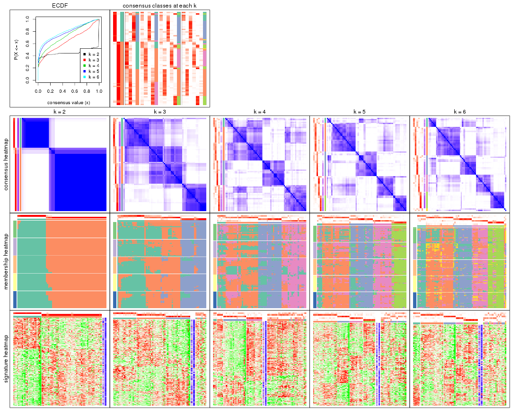
The plots are:
k and the heatmap of
predicted classes for each k.k.k.k.All the plots in panels can be made by individual functions and they are plotted later in this section.
select_partition_number() produces several plots showing different
statistics for choosing “optimized” k. There are following statistics:
k;k, the area increased is defined as \(A_k - A_{k-1}\).The detailed explanations of these statistics can be found in the cola vignette.
Generally speaking, lower PAC score, higher mean silhouette score or higher
concordance corresponds to better partition. Rand index and Jaccard index
measure how similar the current partition is compared to partition with k-1.
If they are too similar, we won't accept k is better than k-1.
select_partition_number(res)
The numeric values for all these statistics can be obtained by get_stats().
get_stats(res)
#> k 1-PAC mean_silhouette concordance area_increased Rand Jaccard
#> 2 2 0.942 0.964 0.984 0.4484 0.559 0.559
#> 3 3 0.463 0.667 0.818 0.4474 0.734 0.540
#> 4 4 0.500 0.474 0.681 0.1308 0.800 0.506
#> 5 5 0.593 0.532 0.741 0.0677 0.800 0.432
#> 6 6 0.634 0.557 0.732 0.0274 0.939 0.749
suggest_best_k() suggests the best \(k\) based on these statistics. The rules are as follows:
NA.suggest_best_k(res)
#> [1] 2
Following shows the table of the partitions (You need to click the show/hide
code output link to see it). The membership matrix (columns with name p*)
is inferred by
clue::cl_consensus()
function with the SE method. Basically the value in the membership matrix
represents the probability to belong to a certain group. The finall class
label for an item is determined with the group with highest probability it
belongs to.
In get_classes() function, the entropy is calculated from the membership
matrix and the silhouette score is calculated from the consensus matrix.
cbind(get_classes(res, k = 2), get_membership(res, k = 2))
#> class entropy silhouette p1 p2
#> SRR1585486 2 0.000 0.979 0.000 1.000
#> SRR1585488 2 0.000 0.979 0.000 1.000
#> SRR1585487 2 0.000 0.979 0.000 1.000
#> SRR1585489 2 0.000 0.979 0.000 1.000
#> SRR1585490 2 0.000 0.979 0.000 1.000
#> SRR1585491 2 0.000 0.979 0.000 1.000
#> SRR1585492 2 0.000 0.979 0.000 1.000
#> SRR1585493 2 0.000 0.979 0.000 1.000
#> SRR1585494 2 0.000 0.979 0.000 1.000
#> SRR1585496 1 0.000 0.992 1.000 0.000
#> SRR1585495 1 0.000 0.992 1.000 0.000
#> SRR1585498 2 0.000 0.979 0.000 1.000
#> SRR1585497 2 0.595 0.835 0.144 0.856
#> SRR1585499 1 0.141 0.976 0.980 0.020
#> SRR1585500 1 0.000 0.992 1.000 0.000
#> SRR1585501 2 0.000 0.979 0.000 1.000
#> SRR1585502 2 0.000 0.979 0.000 1.000
#> SRR1585503 2 0.000 0.979 0.000 1.000
#> SRR1585504 1 0.000 0.992 1.000 0.000
#> SRR1585505 2 0.909 0.546 0.324 0.676
#> SRR1585506 1 0.000 0.992 1.000 0.000
#> SRR1585508 2 0.000 0.979 0.000 1.000
#> SRR1585507 2 0.000 0.979 0.000 1.000
#> SRR1585509 2 0.000 0.979 0.000 1.000
#> SRR1585510 2 0.584 0.840 0.140 0.860
#> SRR1585511 1 0.000 0.992 1.000 0.000
#> SRR1585512 2 0.000 0.979 0.000 1.000
#> SRR1585513 2 0.000 0.979 0.000 1.000
#> SRR1585516 2 0.000 0.979 0.000 1.000
#> SRR1585515 2 0.000 0.979 0.000 1.000
#> SRR1585514 2 0.000 0.979 0.000 1.000
#> SRR1585518 2 0.000 0.979 0.000 1.000
#> SRR1585517 2 0.000 0.979 0.000 1.000
#> SRR1585519 2 0.000 0.979 0.000 1.000
#> SRR1585520 2 0.000 0.979 0.000 1.000
#> SRR1585522 2 0.850 0.639 0.276 0.724
#> SRR1585521 1 0.000 0.992 1.000 0.000
#> SRR1585524 2 0.000 0.979 0.000 1.000
#> SRR1585523 2 0.000 0.979 0.000 1.000
#> SRR1585525 1 0.000 0.992 1.000 0.000
#> SRR1585526 1 0.000 0.992 1.000 0.000
#> SRR1585527 1 0.000 0.992 1.000 0.000
#> SRR1585528 2 0.000 0.979 0.000 1.000
#> SRR1585529 2 0.000 0.979 0.000 1.000
#> SRR1585530 1 0.000 0.992 1.000 0.000
#> SRR1585531 1 0.000 0.992 1.000 0.000
#> SRR1585532 2 0.000 0.979 0.000 1.000
#> SRR1585533 1 0.000 0.992 1.000 0.000
#> SRR1585534 2 0.000 0.979 0.000 1.000
#> SRR1585535 2 0.000 0.979 0.000 1.000
#> SRR1585536 1 0.000 0.992 1.000 0.000
#> SRR1585537 1 0.000 0.992 1.000 0.000
#> SRR1585538 2 0.000 0.979 0.000 1.000
#> SRR1585539 2 0.000 0.979 0.000 1.000
#> SRR1585541 2 0.000 0.979 0.000 1.000
#> SRR1585540 2 0.000 0.979 0.000 1.000
#> SRR1585542 1 0.000 0.992 1.000 0.000
#> SRR1585543 1 0.000 0.992 1.000 0.000
#> SRR1585544 2 0.000 0.979 0.000 1.000
#> SRR1585546 2 0.552 0.853 0.128 0.872
#> SRR1585545 2 0.000 0.979 0.000 1.000
#> SRR1585547 2 0.000 0.979 0.000 1.000
#> SRR1585548 2 0.000 0.979 0.000 1.000
#> SRR1585549 1 0.242 0.957 0.960 0.040
#> SRR1585550 1 0.000 0.992 1.000 0.000
#> SRR1585551 1 0.000 0.992 1.000 0.000
#> SRR1585552 2 0.000 0.979 0.000 1.000
#> SRR1585553 2 0.000 0.979 0.000 1.000
#> SRR1585554 1 0.469 0.888 0.900 0.100
#> SRR1585555 1 0.000 0.992 1.000 0.000
#> SRR1585557 2 0.000 0.979 0.000 1.000
#> SRR1585556 2 0.000 0.979 0.000 1.000
cbind(get_classes(res, k = 3), get_membership(res, k = 3))
#> class entropy silhouette p1 p2 p3
#> SRR1585486 1 0.2261 0.783141 0.932 0.068 0.000
#> SRR1585488 1 0.3412 0.783275 0.876 0.124 0.000
#> SRR1585487 1 0.3482 0.781179 0.872 0.128 0.000
#> SRR1585489 2 0.3941 0.701026 0.156 0.844 0.000
#> SRR1585490 1 0.4555 0.734016 0.800 0.200 0.000
#> SRR1585491 1 0.3192 0.740476 0.888 0.112 0.000
#> SRR1585492 1 0.3879 0.752857 0.848 0.152 0.000
#> SRR1585493 2 0.5327 0.633814 0.272 0.728 0.000
#> SRR1585494 2 0.1163 0.702205 0.028 0.972 0.000
#> SRR1585496 3 0.2796 0.872843 0.092 0.000 0.908
#> SRR1585495 3 0.0000 0.878496 0.000 0.000 1.000
#> SRR1585498 2 0.0747 0.697936 0.016 0.984 0.000
#> SRR1585497 2 0.8824 0.506929 0.168 0.572 0.260
#> SRR1585499 1 0.9065 -0.104620 0.492 0.144 0.364
#> SRR1585500 3 0.0237 0.878609 0.004 0.000 0.996
#> SRR1585501 1 0.6308 -0.129159 0.508 0.492 0.000
#> SRR1585502 2 0.5591 0.605064 0.304 0.696 0.000
#> SRR1585503 1 0.5560 0.579425 0.700 0.300 0.000
#> SRR1585504 3 0.0000 0.878496 0.000 0.000 1.000
#> SRR1585505 2 0.4755 0.573921 0.008 0.808 0.184
#> SRR1585506 3 0.0000 0.878496 0.000 0.000 1.000
#> SRR1585508 2 0.5706 0.579340 0.320 0.680 0.000
#> SRR1585507 2 0.0424 0.694475 0.008 0.992 0.000
#> SRR1585509 2 0.6079 0.095071 0.388 0.612 0.000
#> SRR1585510 2 0.3644 0.626025 0.004 0.872 0.124
#> SRR1585511 3 0.0424 0.877902 0.000 0.008 0.992
#> SRR1585512 2 0.5397 0.623077 0.280 0.720 0.000
#> SRR1585513 1 0.2066 0.779019 0.940 0.060 0.000
#> SRR1585516 1 0.4002 0.753269 0.840 0.160 0.000
#> SRR1585515 1 0.4452 0.746948 0.808 0.192 0.000
#> SRR1585514 2 0.6204 0.310911 0.424 0.576 0.000
#> SRR1585518 2 0.5591 0.594726 0.304 0.696 0.000
#> SRR1585517 1 0.3192 0.775820 0.888 0.112 0.000
#> SRR1585519 2 0.2066 0.709157 0.060 0.940 0.000
#> SRR1585520 2 0.5254 0.646282 0.264 0.736 0.000
#> SRR1585522 2 0.3784 0.620042 0.004 0.864 0.132
#> SRR1585521 3 0.4195 0.849231 0.136 0.012 0.852
#> SRR1585524 2 0.5905 0.493999 0.352 0.648 0.000
#> SRR1585523 2 0.3267 0.657922 0.116 0.884 0.000
#> SRR1585525 3 0.3112 0.870744 0.096 0.004 0.900
#> SRR1585526 3 0.3573 0.846255 0.120 0.004 0.876
#> SRR1585527 3 0.3193 0.869036 0.100 0.004 0.896
#> SRR1585528 2 0.6180 0.375231 0.416 0.584 0.000
#> SRR1585529 2 0.5706 0.572059 0.320 0.680 0.000
#> SRR1585530 3 0.6168 0.446676 0.000 0.412 0.588
#> SRR1585531 3 0.3482 0.857650 0.128 0.000 0.872
#> SRR1585532 1 0.4504 0.723314 0.804 0.196 0.000
#> SRR1585533 3 0.8920 0.535606 0.144 0.324 0.532
#> SRR1585534 1 0.2356 0.781891 0.928 0.072 0.000
#> SRR1585535 2 0.5706 0.586909 0.320 0.680 0.000
#> SRR1585536 3 0.5968 0.536433 0.000 0.364 0.636
#> SRR1585537 3 0.3193 0.847729 0.100 0.004 0.896
#> SRR1585538 1 0.0237 0.748667 0.996 0.004 0.000
#> SRR1585539 1 0.0237 0.748667 0.996 0.004 0.000
#> SRR1585541 1 0.6291 -0.000206 0.532 0.468 0.000
#> SRR1585540 2 0.1860 0.708075 0.052 0.948 0.000
#> SRR1585542 3 0.3879 0.843553 0.152 0.000 0.848
#> SRR1585543 3 0.3116 0.866993 0.108 0.000 0.892
#> SRR1585544 2 0.0424 0.694475 0.008 0.992 0.000
#> SRR1585546 1 0.0237 0.748667 0.996 0.004 0.000
#> SRR1585545 1 0.5678 0.580609 0.684 0.316 0.000
#> SRR1585547 1 0.3116 0.748801 0.892 0.108 0.000
#> SRR1585548 1 0.3879 0.738349 0.848 0.152 0.000
#> SRR1585549 3 0.2066 0.854966 0.000 0.060 0.940
#> SRR1585550 3 0.3193 0.869367 0.100 0.004 0.896
#> SRR1585551 3 0.0000 0.878496 0.000 0.000 1.000
#> SRR1585552 2 0.3983 0.706261 0.144 0.852 0.004
#> SRR1585553 2 0.6016 0.656736 0.256 0.724 0.020
#> SRR1585554 2 0.5016 0.482273 0.000 0.760 0.240
#> SRR1585555 3 0.3826 0.800741 0.008 0.124 0.868
#> SRR1585557 2 0.4110 0.704354 0.152 0.844 0.004
#> SRR1585556 2 0.3030 0.645942 0.004 0.904 0.092
cbind(get_classes(res, k = 4), get_membership(res, k = 4))
#> class entropy silhouette p1 p2 p3 p4
#> SRR1585486 2 0.3810 0.4683 0.188 0.804 0.000 0.008
#> SRR1585488 2 0.5310 0.1718 0.412 0.576 0.000 0.012
#> SRR1585487 2 0.3873 0.4702 0.228 0.772 0.000 0.000
#> SRR1585489 4 0.5428 0.3525 0.020 0.380 0.000 0.600
#> SRR1585490 2 0.4248 0.4761 0.220 0.768 0.000 0.012
#> SRR1585491 1 0.6616 0.5244 0.584 0.308 0.000 0.108
#> SRR1585492 1 0.6555 0.5658 0.632 0.212 0.000 0.156
#> SRR1585493 4 0.5361 0.5450 0.068 0.208 0.000 0.724
#> SRR1585494 4 0.2313 0.6835 0.044 0.032 0.000 0.924
#> SRR1585496 3 0.1545 0.7488 0.040 0.008 0.952 0.000
#> SRR1585495 3 0.1978 0.7568 0.068 0.000 0.928 0.004
#> SRR1585498 4 0.2342 0.6618 0.080 0.008 0.000 0.912
#> SRR1585497 4 0.6972 0.5234 0.180 0.060 0.092 0.668
#> SRR1585499 1 0.5711 0.2164 0.704 0.004 0.220 0.072
#> SRR1585500 3 0.0707 0.7527 0.020 0.000 0.980 0.000
#> SRR1585501 2 0.5180 0.4721 0.060 0.796 0.100 0.044
#> SRR1585502 2 0.6287 0.3348 0.060 0.660 0.020 0.260
#> SRR1585503 2 0.4378 0.5199 0.164 0.796 0.000 0.040
#> SRR1585504 3 0.0817 0.7499 0.024 0.000 0.976 0.000
#> SRR1585505 4 0.3450 0.5767 0.156 0.000 0.008 0.836
#> SRR1585506 3 0.2125 0.7567 0.076 0.000 0.920 0.004
#> SRR1585508 2 0.4635 0.4083 0.012 0.720 0.000 0.268
#> SRR1585507 4 0.2125 0.6550 0.076 0.004 0.000 0.920
#> SRR1585509 4 0.4632 0.3825 0.308 0.004 0.000 0.688
#> SRR1585510 4 0.4987 0.6604 0.024 0.124 0.056 0.796
#> SRR1585511 3 0.2198 0.7568 0.072 0.000 0.920 0.008
#> SRR1585512 2 0.5764 0.0320 0.028 0.520 0.000 0.452
#> SRR1585513 2 0.4713 0.2718 0.360 0.640 0.000 0.000
#> SRR1585516 2 0.3266 0.5038 0.168 0.832 0.000 0.000
#> SRR1585515 2 0.5050 0.4210 0.268 0.704 0.000 0.028
#> SRR1585514 2 0.6112 0.4926 0.096 0.656 0.000 0.248
#> SRR1585518 2 0.4914 0.3575 0.012 0.676 0.000 0.312
#> SRR1585517 2 0.3726 0.4762 0.212 0.788 0.000 0.000
#> SRR1585519 4 0.3711 0.6620 0.024 0.140 0.000 0.836
#> SRR1585520 2 0.5957 0.1259 0.048 0.588 0.000 0.364
#> SRR1585522 4 0.5579 0.6419 0.024 0.132 0.084 0.760
#> SRR1585521 3 0.5257 0.5337 0.444 0.000 0.548 0.008
#> SRR1585524 4 0.6145 -0.0327 0.048 0.460 0.000 0.492
#> SRR1585523 4 0.2973 0.6465 0.096 0.020 0.000 0.884
#> SRR1585525 3 0.5070 0.5775 0.416 0.000 0.580 0.004
#> SRR1585526 3 0.3088 0.7074 0.060 0.052 0.888 0.000
#> SRR1585527 3 0.5016 0.5944 0.396 0.000 0.600 0.004
#> SRR1585528 2 0.3870 0.5211 0.008 0.820 0.008 0.164
#> SRR1585529 2 0.4635 0.4228 0.012 0.720 0.000 0.268
#> SRR1585530 3 0.5835 0.5213 0.064 0.000 0.656 0.280
#> SRR1585531 3 0.4916 0.5695 0.424 0.000 0.576 0.000
#> SRR1585532 2 0.2589 0.5199 0.116 0.884 0.000 0.000
#> SRR1585533 1 0.6952 0.1914 0.516 0.000 0.120 0.364
#> SRR1585534 2 0.4522 0.3365 0.320 0.680 0.000 0.000
#> SRR1585535 2 0.5279 0.3958 0.044 0.704 0.000 0.252
#> SRR1585536 4 0.6709 -0.2049 0.088 0.000 0.456 0.456
#> SRR1585537 3 0.5624 0.5639 0.148 0.128 0.724 0.000
#> SRR1585538 2 0.4746 0.2388 0.368 0.632 0.000 0.000
#> SRR1585539 2 0.4972 -0.0460 0.456 0.544 0.000 0.000
#> SRR1585541 2 0.2759 0.5410 0.052 0.904 0.000 0.044
#> SRR1585540 4 0.5186 0.4672 0.016 0.344 0.000 0.640
#> SRR1585542 3 0.4511 0.6933 0.268 0.008 0.724 0.000
#> SRR1585543 3 0.4164 0.6941 0.264 0.000 0.736 0.000
#> SRR1585544 4 0.3598 0.6734 0.028 0.124 0.000 0.848
#> SRR1585546 1 0.4872 0.4179 0.640 0.356 0.004 0.000
#> SRR1585545 2 0.7779 -0.0373 0.244 0.400 0.000 0.356
#> SRR1585547 1 0.5608 0.5656 0.684 0.256 0.000 0.060
#> SRR1585548 1 0.6863 0.4338 0.536 0.348 0.000 0.116
#> SRR1585549 3 0.2782 0.7222 0.068 0.004 0.904 0.024
#> SRR1585550 3 0.5080 0.5684 0.420 0.000 0.576 0.004
#> SRR1585551 3 0.0921 0.7487 0.028 0.000 0.972 0.000
#> SRR1585552 4 0.6765 0.3697 0.076 0.384 0.008 0.532
#> SRR1585553 2 0.7553 -0.0676 0.048 0.508 0.072 0.372
#> SRR1585554 4 0.3366 0.6369 0.096 0.004 0.028 0.872
#> SRR1585555 3 0.6450 0.5350 0.092 0.144 0.712 0.052
#> SRR1585557 4 0.7186 0.2352 0.072 0.436 0.024 0.468
#> SRR1585556 4 0.1369 0.6839 0.016 0.016 0.004 0.964
cbind(get_classes(res, k = 5), get_membership(res, k = 5))
#> class entropy silhouette p1 p2 p3 p4 p5
#> SRR1585486 4 0.373 0.6972 0.032 0.176 0.000 0.792 0.000
#> SRR1585488 4 0.510 -0.1783 0.028 0.004 0.000 0.528 0.440
#> SRR1585487 4 0.445 0.6404 0.048 0.228 0.000 0.724 0.000
#> SRR1585489 2 0.469 0.7181 0.124 0.772 0.000 0.076 0.028
#> SRR1585490 4 0.411 0.6528 0.028 0.232 0.000 0.740 0.000
#> SRR1585491 5 0.553 0.4176 0.076 0.000 0.000 0.368 0.556
#> SRR1585492 5 0.287 0.7821 0.020 0.000 0.000 0.120 0.860
#> SRR1585493 5 0.136 0.8180 0.000 0.004 0.000 0.048 0.948
#> SRR1585494 5 0.296 0.7871 0.036 0.100 0.000 0.000 0.864
#> SRR1585496 3 0.277 0.6029 0.076 0.000 0.880 0.044 0.000
#> SRR1585495 3 0.029 0.6075 0.008 0.000 0.992 0.000 0.000
#> SRR1585498 5 0.226 0.8069 0.028 0.064 0.000 0.000 0.908
#> SRR1585497 5 0.340 0.7876 0.052 0.004 0.040 0.036 0.868
#> SRR1585499 1 0.683 0.5192 0.552 0.016 0.276 0.136 0.020
#> SRR1585500 3 0.154 0.6141 0.068 0.000 0.932 0.000 0.000
#> SRR1585501 2 0.712 -0.1475 0.180 0.408 0.016 0.388 0.008
#> SRR1585502 2 0.508 0.6402 0.072 0.728 0.004 0.180 0.016
#> SRR1585503 4 0.503 0.1285 0.032 0.444 0.000 0.524 0.000
#> SRR1585504 3 0.295 0.5993 0.112 0.000 0.860 0.000 0.028
#> SRR1585505 5 0.373 0.7344 0.060 0.128 0.000 0.000 0.812
#> SRR1585506 3 0.088 0.6001 0.032 0.000 0.968 0.000 0.000
#> SRR1585508 2 0.338 0.6813 0.016 0.808 0.000 0.176 0.000
#> SRR1585507 5 0.251 0.7991 0.028 0.080 0.000 0.000 0.892
#> SRR1585509 5 0.160 0.8184 0.020 0.024 0.000 0.008 0.948
#> SRR1585510 2 0.414 0.6677 0.128 0.792 0.004 0.000 0.076
#> SRR1585511 3 0.051 0.6106 0.016 0.000 0.984 0.000 0.000
#> SRR1585512 2 0.484 0.7132 0.104 0.756 0.000 0.120 0.020
#> SRR1585513 4 0.273 0.6623 0.056 0.024 0.000 0.896 0.024
#> SRR1585516 4 0.376 0.7023 0.056 0.136 0.000 0.808 0.000
#> SRR1585515 4 0.517 0.6363 0.128 0.184 0.000 0.688 0.000
#> SRR1585514 2 0.583 0.4606 0.076 0.588 0.000 0.320 0.016
#> SRR1585518 2 0.377 0.6955 0.032 0.800 0.000 0.164 0.004
#> SRR1585517 4 0.309 0.7147 0.040 0.104 0.000 0.856 0.000
#> SRR1585519 2 0.455 0.6906 0.144 0.772 0.000 0.020 0.064
#> SRR1585520 2 0.252 0.7217 0.012 0.880 0.000 0.108 0.000
#> SRR1585522 2 0.515 0.6402 0.104 0.752 0.068 0.000 0.076
#> SRR1585521 1 0.497 0.1322 0.500 0.004 0.476 0.020 0.000
#> SRR1585524 2 0.553 0.6948 0.172 0.696 0.000 0.104 0.028
#> SRR1585523 2 0.606 0.5235 0.276 0.600 0.000 0.020 0.104
#> SRR1585525 3 0.471 -0.0647 0.404 0.000 0.580 0.012 0.004
#> SRR1585526 3 0.414 0.5582 0.128 0.008 0.796 0.068 0.000
#> SRR1585527 3 0.493 -0.1670 0.432 0.004 0.544 0.020 0.000
#> SRR1585528 2 0.443 0.5498 0.032 0.700 0.000 0.268 0.000
#> SRR1585529 2 0.403 0.6682 0.032 0.772 0.000 0.192 0.004
#> SRR1585530 3 0.596 0.2456 0.108 0.284 0.596 0.000 0.012
#> SRR1585531 3 0.497 -0.1191 0.408 0.000 0.560 0.032 0.000
#> SRR1585532 4 0.479 0.6402 0.076 0.216 0.000 0.708 0.000
#> SRR1585533 1 0.643 0.4950 0.664 0.076 0.176 0.028 0.056
#> SRR1585534 4 0.120 0.6896 0.004 0.032 0.000 0.960 0.004
#> SRR1585535 2 0.383 0.6569 0.028 0.776 0.000 0.196 0.000
#> SRR1585536 3 0.591 0.2725 0.156 0.212 0.624 0.000 0.008
#> SRR1585537 3 0.733 0.3473 0.220 0.052 0.560 0.144 0.024
#> SRR1585538 4 0.106 0.6669 0.004 0.008 0.000 0.968 0.020
#> SRR1585539 4 0.212 0.6092 0.076 0.004 0.000 0.912 0.008
#> SRR1585541 4 0.510 0.3958 0.044 0.376 0.000 0.580 0.000
#> SRR1585540 2 0.321 0.7211 0.056 0.872 0.000 0.024 0.048
#> SRR1585542 3 0.323 0.5376 0.088 0.000 0.852 0.060 0.000
#> SRR1585543 3 0.241 0.5415 0.108 0.000 0.884 0.008 0.000
#> SRR1585544 2 0.457 0.6546 0.212 0.736 0.000 0.012 0.040
#> SRR1585546 4 0.430 0.2309 0.296 0.012 0.000 0.688 0.004
#> SRR1585545 5 0.245 0.7985 0.020 0.000 0.000 0.088 0.892
#> SRR1585547 1 0.586 0.1558 0.516 0.064 0.008 0.408 0.004
#> SRR1585548 5 0.559 0.3516 0.076 0.000 0.000 0.396 0.528
#> SRR1585549 3 0.610 0.1435 0.112 0.000 0.500 0.004 0.384
#> SRR1585550 3 0.486 -0.1799 0.440 0.004 0.540 0.016 0.000
#> SRR1585551 3 0.196 0.6112 0.096 0.000 0.904 0.000 0.000
#> SRR1585552 2 0.259 0.7093 0.068 0.900 0.004 0.008 0.020
#> SRR1585553 2 0.304 0.7182 0.024 0.864 0.000 0.104 0.008
#> SRR1585554 5 0.220 0.8132 0.040 0.032 0.008 0.000 0.920
#> SRR1585555 3 0.600 0.4239 0.196 0.156 0.632 0.000 0.016
#> SRR1585557 2 0.327 0.7142 0.068 0.868 0.000 0.032 0.032
#> SRR1585556 2 0.555 0.5226 0.148 0.644 0.000 0.000 0.208
cbind(get_classes(res, k = 6), get_membership(res, k = 6))
#> class entropy silhouette p1 p2 p3 p4 p5 p6
#> SRR1585486 4 0.5579 0.37279 0.012 0.184 0.000 0.596 0.000 0.208
#> SRR1585488 5 0.4731 0.23651 0.016 0.000 0.000 0.472 0.492 0.020
#> SRR1585487 4 0.4859 0.46512 0.040 0.324 0.000 0.616 0.000 0.020
#> SRR1585489 2 0.3406 0.69725 0.124 0.828 0.000 0.020 0.008 0.020
#> SRR1585490 4 0.5252 0.48203 0.008 0.236 0.000 0.624 0.000 0.132
#> SRR1585491 5 0.4384 0.64569 0.036 0.000 0.000 0.268 0.684 0.012
#> SRR1585492 5 0.1649 0.84214 0.008 0.000 0.000 0.040 0.936 0.016
#> SRR1585493 5 0.0508 0.85309 0.000 0.000 0.000 0.012 0.984 0.004
#> SRR1585494 5 0.2177 0.82870 0.008 0.032 0.000 0.000 0.908 0.052
#> SRR1585496 3 0.2351 0.68695 0.036 0.000 0.900 0.052 0.000 0.012
#> SRR1585495 3 0.0935 0.69168 0.032 0.000 0.964 0.000 0.000 0.004
#> SRR1585498 5 0.1542 0.84535 0.016 0.024 0.000 0.000 0.944 0.016
#> SRR1585497 5 0.1396 0.84707 0.008 0.000 0.004 0.012 0.952 0.024
#> SRR1585499 1 0.5099 0.63322 0.684 0.004 0.184 0.112 0.004 0.012
#> SRR1585500 3 0.1176 0.70099 0.020 0.000 0.956 0.000 0.000 0.024
#> SRR1585501 6 0.6598 -0.33218 0.000 0.296 0.016 0.332 0.004 0.352
#> SRR1585502 2 0.3921 0.68503 0.008 0.804 0.008 0.088 0.004 0.088
#> SRR1585503 2 0.5109 0.00506 0.032 0.516 0.000 0.424 0.000 0.028
#> SRR1585504 3 0.1716 0.69480 0.004 0.000 0.932 0.000 0.028 0.036
#> SRR1585505 5 0.2839 0.80229 0.052 0.040 0.000 0.000 0.876 0.032
#> SRR1585506 3 0.1387 0.67419 0.068 0.000 0.932 0.000 0.000 0.000
#> SRR1585508 2 0.1913 0.70868 0.000 0.908 0.000 0.080 0.000 0.012
#> SRR1585507 5 0.1635 0.84183 0.020 0.020 0.000 0.000 0.940 0.020
#> SRR1585509 5 0.0508 0.85214 0.012 0.000 0.000 0.000 0.984 0.004
#> SRR1585510 2 0.4937 0.61262 0.104 0.696 0.004 0.000 0.016 0.180
#> SRR1585511 3 0.1408 0.69557 0.020 0.000 0.944 0.000 0.000 0.036
#> SRR1585512 2 0.3473 0.71264 0.092 0.832 0.000 0.056 0.004 0.016
#> SRR1585513 4 0.2520 0.59723 0.052 0.052 0.000 0.888 0.000 0.008
#> SRR1585516 4 0.4630 0.58963 0.016 0.188 0.012 0.732 0.004 0.048
#> SRR1585515 4 0.5577 0.48567 0.100 0.268 0.000 0.604 0.004 0.024
#> SRR1585514 2 0.4562 0.62372 0.060 0.732 0.000 0.180 0.004 0.024
#> SRR1585518 2 0.1787 0.71582 0.008 0.920 0.000 0.068 0.000 0.004
#> SRR1585517 4 0.3836 0.60339 0.008 0.124 0.000 0.788 0.000 0.080
#> SRR1585519 2 0.4037 0.66734 0.140 0.784 0.000 0.004 0.024 0.048
#> SRR1585520 2 0.2197 0.71465 0.000 0.900 0.000 0.056 0.000 0.044
#> SRR1585522 2 0.5609 0.54756 0.052 0.684 0.120 0.000 0.020 0.124
#> SRR1585521 1 0.3850 0.66111 0.652 0.000 0.340 0.004 0.000 0.004
#> SRR1585524 2 0.4406 0.65653 0.220 0.712 0.000 0.056 0.000 0.012
#> SRR1585523 2 0.6007 0.50193 0.296 0.572 0.000 0.020 0.040 0.072
#> SRR1585525 3 0.3890 -0.18513 0.400 0.000 0.596 0.004 0.000 0.000
#> SRR1585526 3 0.3241 0.64884 0.032 0.000 0.848 0.080 0.000 0.040
#> SRR1585527 1 0.3945 0.63963 0.612 0.000 0.380 0.000 0.000 0.008
#> SRR1585528 2 0.3895 0.59728 0.008 0.768 0.000 0.172 0.000 0.052
#> SRR1585529 2 0.2356 0.70201 0.004 0.884 0.000 0.096 0.000 0.016
#> SRR1585530 3 0.5883 0.33256 0.108 0.260 0.592 0.000 0.012 0.028
#> SRR1585531 1 0.4508 0.54755 0.536 0.000 0.436 0.024 0.000 0.004
#> SRR1585532 4 0.5377 0.40203 0.004 0.216 0.000 0.604 0.000 0.176
#> SRR1585533 1 0.4383 0.50936 0.796 0.060 0.072 0.012 0.008 0.052
#> SRR1585534 4 0.1701 0.62037 0.000 0.072 0.000 0.920 0.000 0.008
#> SRR1585535 2 0.2203 0.70836 0.004 0.896 0.000 0.084 0.000 0.016
#> SRR1585536 3 0.6398 0.27497 0.188 0.176 0.572 0.000 0.012 0.052
#> SRR1585537 6 0.6812 -0.12689 0.124 0.012 0.276 0.084 0.000 0.504
#> SRR1585538 4 0.2360 0.59985 0.044 0.044 0.000 0.900 0.000 0.012
#> SRR1585539 4 0.2383 0.58202 0.052 0.028 0.000 0.900 0.000 0.020
#> SRR1585541 4 0.5837 0.15074 0.000 0.352 0.000 0.452 0.000 0.196
#> SRR1585540 2 0.2750 0.70844 0.032 0.884 0.000 0.008 0.016 0.060
#> SRR1585542 3 0.2639 0.66719 0.064 0.000 0.880 0.048 0.000 0.008
#> SRR1585543 3 0.2003 0.62681 0.116 0.000 0.884 0.000 0.000 0.000
#> SRR1585544 2 0.5018 0.55216 0.292 0.632 0.000 0.004 0.016 0.056
#> SRR1585546 4 0.4445 0.24232 0.356 0.012 0.008 0.616 0.000 0.008
#> SRR1585545 5 0.0976 0.84923 0.008 0.000 0.000 0.016 0.968 0.008
#> SRR1585547 1 0.5122 0.18335 0.584 0.056 0.004 0.344 0.000 0.012
#> SRR1585548 5 0.4734 0.61671 0.052 0.000 0.000 0.272 0.660 0.016
#> SRR1585549 3 0.4637 0.29543 0.008 0.000 0.608 0.004 0.352 0.028
#> SRR1585550 1 0.3872 0.62894 0.604 0.000 0.392 0.004 0.000 0.000
#> SRR1585551 3 0.1349 0.69798 0.004 0.000 0.940 0.000 0.000 0.056
#> SRR1585552 2 0.5437 0.27654 0.004 0.540 0.012 0.048 0.012 0.384
#> SRR1585553 2 0.4166 0.63948 0.012 0.760 0.000 0.080 0.000 0.148
#> SRR1585554 5 0.1534 0.84476 0.004 0.004 0.016 0.000 0.944 0.032
#> SRR1585555 3 0.6492 -0.01956 0.012 0.144 0.460 0.012 0.012 0.360
#> SRR1585557 2 0.2429 0.70680 0.008 0.888 0.000 0.008 0.008 0.088
#> SRR1585556 2 0.6712 0.42953 0.192 0.516 0.000 0.000 0.096 0.196
Heatmaps for the consensus matrix. It visualizes the probability of two samples to be in a same group.
consensus_heatmap(res, k = 2)
consensus_heatmap(res, k = 3)
consensus_heatmap(res, k = 4)
consensus_heatmap(res, k = 5)

consensus_heatmap(res, k = 6)
Heatmaps for the membership of samples in all partitions to see how consistent they are:
membership_heatmap(res, k = 2)

membership_heatmap(res, k = 3)
membership_heatmap(res, k = 4)
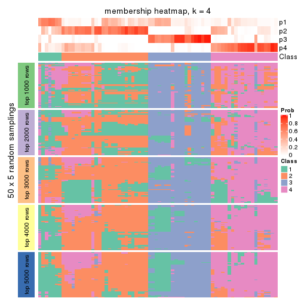
membership_heatmap(res, k = 5)
membership_heatmap(res, k = 6)
As soon as we have had the classes for columns, we can look for signatures which are significantly different between classes which can be candidate marks for certain classes. Following are the heatmaps for signatures.
Signature heatmaps where rows are scaled:
get_signatures(res, k = 2)
get_signatures(res, k = 3)
get_signatures(res, k = 4)
get_signatures(res, k = 5)
get_signatures(res, k = 6)

Signature heatmaps where rows are not scaled:
get_signatures(res, k = 2, scale_rows = FALSE)
get_signatures(res, k = 3, scale_rows = FALSE)
get_signatures(res, k = 4, scale_rows = FALSE)
get_signatures(res, k = 5, scale_rows = FALSE)
get_signatures(res, k = 6, scale_rows = FALSE)
Compare the overlap of signatures from different k:
compare_signatures(res)
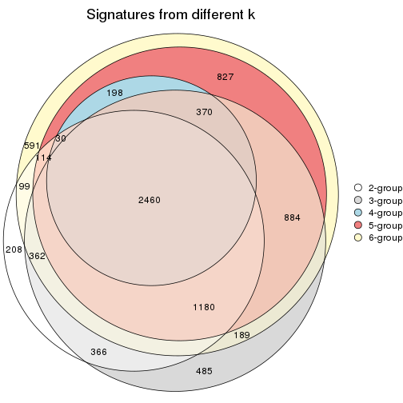
get_signature() returns a data frame invisibly. TO get the list of signatures, the function
call should be assigned to a variable explicitly. In following code, if plot argument is set
to FALSE, no heatmap is plotted while only the differential analysis is performed.
# code only for demonstration
tb = get_signature(res, k = ..., plot = FALSE)
An example of the output of tb is:
#> which_row fdr mean_1 mean_2 scaled_mean_1 scaled_mean_2 km
#> 1 38 0.042760348 8.373488 9.131774 -0.5533452 0.5164555 1
#> 2 40 0.018707592 7.106213 8.469186 -0.6173731 0.5762149 1
#> 3 55 0.019134737 10.221463 11.207825 -0.6159697 0.5749050 1
#> 4 59 0.006059896 5.921854 7.869574 -0.6899429 0.6439467 1
#> 5 60 0.018055526 8.928898 10.211722 -0.6204761 0.5791110 1
#> 6 98 0.009384629 15.714769 14.887706 0.6635654 -0.6193277 2
...
The columns in tb are:
which_row: row indices corresponding to the input matrix.fdr: FDR for the differential test. mean_x: The mean value in group x.scaled_mean_x: The mean value in group x after rows are scaled.km: Row groups if k-means clustering is applied to rows.UMAP plot which shows how samples are separated.
dimension_reduction(res, k = 2, method = "UMAP")
dimension_reduction(res, k = 3, method = "UMAP")
dimension_reduction(res, k = 4, method = "UMAP")
dimension_reduction(res, k = 5, method = "UMAP")
dimension_reduction(res, k = 6, method = "UMAP")
Following heatmap shows how subgroups are split when increasing k:
collect_classes(res)
If matrix rows can be associated to genes, consider to use GO_Enrichment(res,
...) to perform function enrichment for the signature genes.
sessionInfo()
#> R version 3.6.0 (2019-04-26)
#> Platform: x86_64-pc-linux-gnu (64-bit)
#> Running under: CentOS Linux 7 (Core)
#>
#> Matrix products: default
#> BLAS: /usr/lib64/libblas.so.3.4.2
#> LAPACK: /usr/lib64/liblapack.so.3.4.2
#>
#> locale:
#> [1] LC_CTYPE=en_GB.UTF-8 LC_NUMERIC=C LC_TIME=en_GB.UTF-8
#> [4] LC_COLLATE=en_GB.UTF-8 LC_MONETARY=en_GB.UTF-8 LC_MESSAGES=en_GB.UTF-8
#> [7] LC_PAPER=en_GB.UTF-8 LC_NAME=C LC_ADDRESS=C
#> [10] LC_TELEPHONE=C LC_MEASUREMENT=en_GB.UTF-8 LC_IDENTIFICATION=C
#>
#> attached base packages:
#> [1] grid parallel stats4 stats graphics grDevices utils datasets methods
#> [10] base
#>
#> other attached packages:
#> [1] genefilter_1.66.0 ComplexHeatmap_2.1.1 markdown_1.1
#> [4] knitr_1.26 cola_1.3.2 SummarizedExperiment_1.14.1
#> [7] DelayedArray_0.10.0 BiocParallel_1.18.1 matrixStats_0.55.0
#> [10] Biobase_2.44.0 GenomicRanges_1.36.1 GenomeInfoDb_1.20.0
#> [13] IRanges_2.18.3 S4Vectors_0.22.1 BiocGenerics_0.30.0
#> [16] GetoptLong_0.1.7
#>
#> loaded via a namespace (and not attached):
#> [1] bitops_1.0-6 bit64_0.9-7 doParallel_1.0.15 RColorBrewer_1.1-2
#> [5] httr_1.4.1 backports_1.1.5 tools_3.6.0 R6_2.4.1
#> [9] DBI_1.0.0 lazyeval_0.2.2 colorspace_1.4-1 withr_2.1.2
#> [13] tidyselect_0.2.5 gridExtra_2.3 bit_1.1-14 compiler_3.6.0
#> [17] xml2_1.2.2 microbenchmark_1.4-7 pkgmaker_0.28 slam_0.1-46
#> [21] scales_1.1.0 NMF_0.23.6 stringr_1.4.0 digest_0.6.23
#> [25] XVector_0.24.0 pkgconfig_2.0.3 bibtex_0.4.2 highr_0.8
#> [29] rlang_0.4.2 GlobalOptions_0.1.1 RSQLite_2.1.2 impute_1.58.0
#> [33] shape_1.4.4 mclust_5.4.5 dendextend_1.12.0 dplyr_0.8.3
#> [37] RCurl_1.95-4.12 magrittr_1.5 GenomeInfoDbData_1.2.1 Matrix_1.2-17
#> [41] Rcpp_1.0.3 munsell_0.5.0 viridis_0.5.1 lifecycle_0.1.0
#> [45] stringi_1.4.3 zlibbioc_1.30.0 plyr_1.8.4 blob_1.2.0
#> [49] crayon_1.3.4 lattice_0.20-38 splines_3.6.0 annotate_1.62.0
#> [53] circlize_0.4.9 zeallot_0.1.0 pillar_1.4.2 rjson_0.2.20
#> [57] rngtools_1.4 reshape2_1.4.3 codetools_0.2-16 XML_3.98-1.20
#> [61] glue_1.3.1 evaluate_0.14 vctrs_0.2.0 png_0.1-7
#> [65] foreach_1.4.7 polyclip_1.10-0 gtable_0.3.0 purrr_0.3.3
#> [69] clue_0.3-57 assertthat_0.2.1 ggplot2_3.2.1 xfun_0.11
#> [73] gridBase_0.4-7 eulerr_6.0.0 xtable_1.8-4 skmeans_0.2-11
#> [77] survival_2.44-1.1 viridisLite_0.3.0 tibble_2.1.3 iterators_1.0.12
#> [81] memoise_1.1.0 AnnotationDbi_1.46.1 registry_0.5-1 GTF_0.0.1
#> [85] cluster_2.1.0 brew_1.0-6